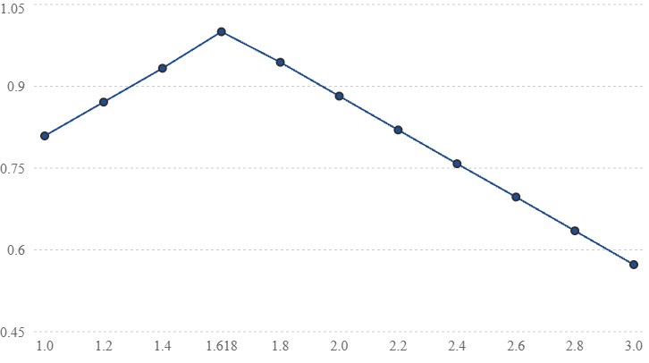
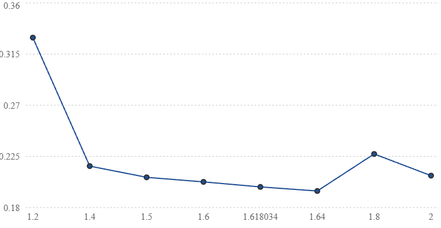
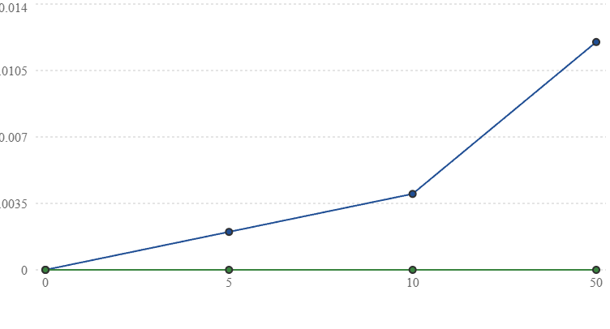
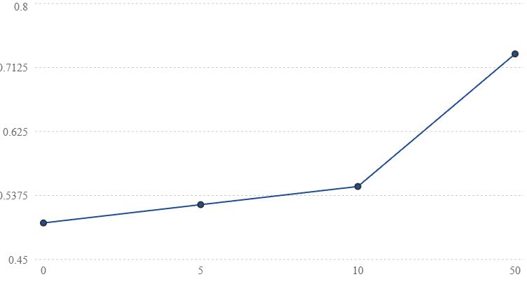
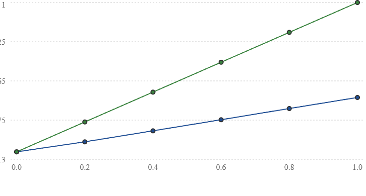
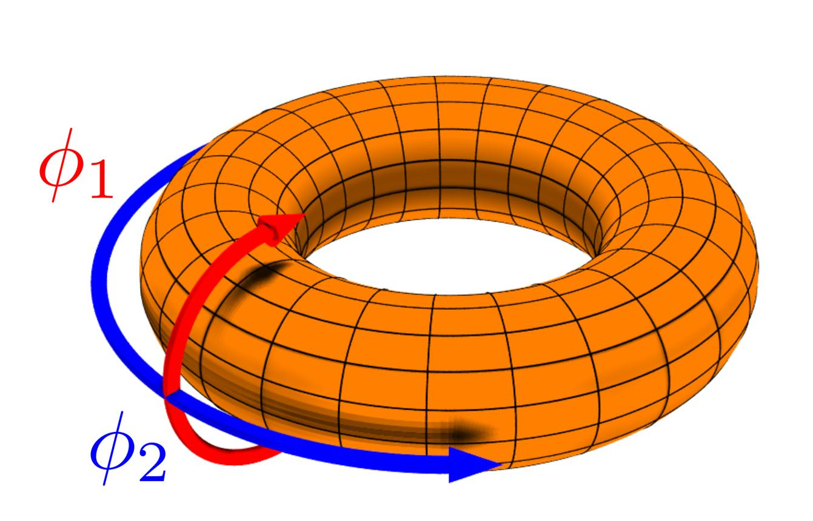
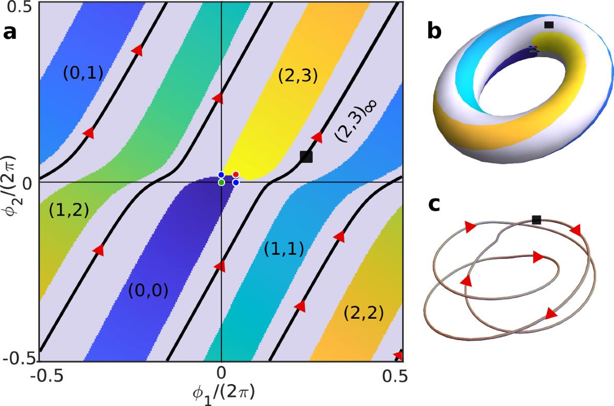
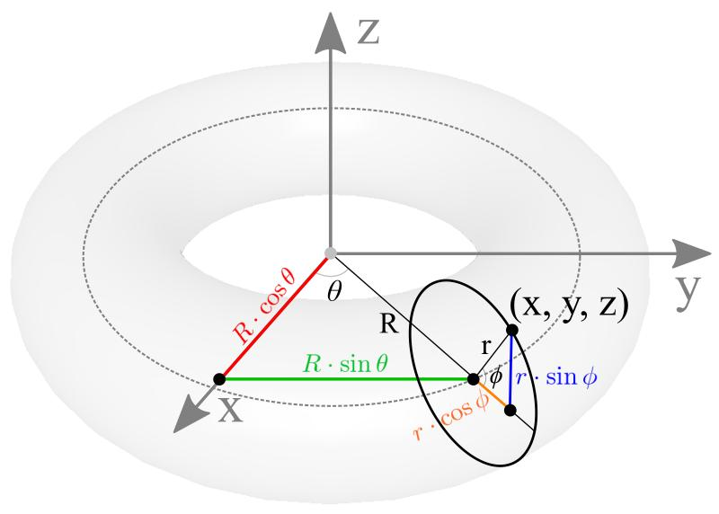
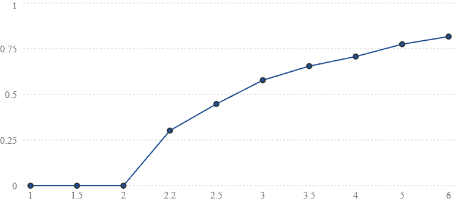

This appendix develops formal mathematical models in probability, information geometry, stochastic control, oscillator dynamics, geometric phases, and topological systems, alongside hypotheses proposed within Christfield Dynamics. Established mathematical identities are distinguished from proposed physical interpretations. The foundational relation X = δC/δΨ is a conditional response definition; an independently measured awareness coordinate and a physically validated selection mechanism have not yet been established.
This full-length technical reference preserves the numbered mathematical development through A.2500, including tables, figures, derivations, competing models, experimental controls, and proposed falsification criteria. A.38 and A.39 are absent as standalone headings in the source manuscript and are not fabricated here.
Enter a number from 1 to 2500. A.38 and A.39 have no standalone headings.
A.1 — Scientific question
The hypothesis under examination is:
Does a photonic system incorporating phi-scaled geometry exhibit a reproducible coherence advantage that cannot be explained by conventional optical path differences, coupling, losses, interference, or measurement uncertainty?
The hypothesis does not require us to assume that phi geometry has a special physical effect before testing.
The competing explanations are:
H₀ — Conventional optical explanation: All observed differences are accounted for by established optical physics, geometry, coupling, noise, and instrumental effects.
H₁ — Additional phi-dependent effect: A reproducible coherence contribution remains after conventional corrections, with a predefined dependence on geometric scaling relative to \(\Phi\).
Here,
A positive result would support the specific experimental hypothesis. It would not, by itself, establish a universal coherence field, an awareness coupling, or a modification of general relativity.
Note. Two symbols keep fixed meanings throughout this appendix: \(X\equiv\delta C/\delta\Psi\) is the Christfield response, and \(\Psi\) is the awareness state. From the stochastic-dynamics sections onward, the physical state of a system is written as the bold vector \(\mathbf{z}\) (for example \(\mathbf{z}_t\) and \(d\mathbf{z}_t\)), and its state space is written \(\mathcal X\). In the Kuramoto sections, the phase of the complex order parameter is written \(\vartheta_{\mathrm c}\). Several other symbols (\(D\), \(A\), \(\lambda\), \(\theta\)) are reused in separate models, and each model defines its own diffusion tensor, tilt parameter, and score units where it is introduced. The Lorentzian width \(\gamma\) is distinct from the critical exponent \(\gamma_{\mathrm{crit}}\).
A.2 — The existing scaling relationship
The published Christfield Dynamics model proposes:
where \(S\) is a geometric scaling ratio, \(\lambda\) is a model parameter, and \(\eta\) is the proposed transfer efficiency.
At \(S=\Phi\):
This follows directly from the equation's construction. It is an algebraic property, not independent physical confirmation.
For the proposed experimental comparison, we therefore separate the shape hypothesis from the effect amplitude.
Define the phi-distance:
A convenient dimensionless test function is:
The function is only used over a prespecified finite range of \(S\), and it is not interpreted as a physical efficiency until experimentally calibrated.
A.3 — Mathematical consistency audit
Before constructing an experimental model, we need to check whether the existing numerical claims follow from the equations.
For a recursive system with \(N\) identical transfer stages, the paper's equation implies:
provided the bracketed quantity remains between zero and one.
For normalized initial coherence \(C_0=1\), \(N=12\), and \(\lambda=0.5\), the calculation gives:
| Scaling factor | Calculated coherence after 12 stages |
|---|---|
| \(\Phi\) | 1.0000 |
| \(2\) | approximately 0.222 |
| \(e\) | approximately 0.0068 |
| \(\pi\) | approximately 0.0005 |
These are close to some of the values in the paper, although not identical. The discrepancies need reconciliation using the original simulation code and the exact number of transfers counted.
More importantly, the equation contains no wavelength, optical path phase, refractive index, coupling coefficient, or physical loss mechanism.
Therefore, it is currently a phenomenological transfer rule, rather than a derivation from Maxwell's equations or from the Christfield Gradient.
That is the first technical finding of this audit.
A.4 — The physical system
The existing paper specifies a printed dodecahedral or icosahedral lattice with optical modules arranged at phi-related radii and angles, and comparison structures using other scaling relationships.
Source: CHRISTOS® Christfield Dynamics — Theoretical Physics Research
We preserve that architecture, but distinguish two experimental configurations.
Configuration A: Optical interference test. A coherent, narrow-linewidth laser is divided into controlled optical paths and recombined to produce measurable interference fringes. This is the primary test for phase coherence.
Configuration B: Spectral and spatial-field characterization. The proposed lattice is illuminated under controlled conditions, and its spectral distribution, spatial intensity, and field roughness are recorded.
A narrow-band LED may be suitable for certain spectral measurements, but multiple independent LEDs cannot automatically be assumed mutually phase coherent. For the interference test, a common coherent source and properly controlled paths are essential.
A.5 — Conventional optical baseline
For two interfering optical fields, the observed intensity can be written:
where:
\(I_1,I_2\) are the individual beam intensities.
\(\gamma_{12}\) is the complex degree of mutual coherence.
\(\Delta\varphi\) is their relative optical phase.
Under suitable measurement conditions, fringe visibility is:
This immediately shows why ordinary intensity differences must be corrected before interpreting fringe contrast as a coherence change.
It also establishes an important experimental requirement: phi-scaled and control geometries must be compared using conventional wave-optics predictions, not simply by comparing their raw fringe visibility.
Note. The interference intensity depends on a phase convention. In general, \(I=I_1+I_2+2\sqrt{I_1I_2}\,\mathrm{Re}[\gamma_{12}e^{i\Delta\varphi}]\), which equals \(I_1+I_2+2\sqrt{I_1I_2}\,|\gamma_{12}|\cos(\Delta\varphi+\arg\gamma_{12})\). A visibility written as \(|\gamma_{12}|\cos\Delta\varphi\) assumes that \(\arg\gamma_{12}\) is absorbed into \(\Delta\varphi\).
A.6 — Proposed Christfield residual model
We now introduce an explicitly testable extension.
Let \(V_{\mathrm{EM}}(S)\) represent the visibility predicted by conventional electromagnetic optics for a given configuration.
Define the residual:
A candidate phi-specific relationship is:
where:
and \(\overline{f_\Phi}\) is the average of that function over the prespecified tested geometries.
The centering separates a phi-dependent pattern from a constant measurement offset.
Here, \(A\) represents a possible additional physical effect and \(\epsilon\) represents residual noise.
This is a proposed experimental model, not a derivation already established by Christfield Dynamics. It supplies a way to test the shape of the proposed effect without claiming that its physical mechanism has been demonstrated.
Illustrative phi-scaling function

Illustrative model with λ = 0.5. The peak at Φ is imposed by the equation, not observed experimentally.
Note. The centered residual model and the model with an intercept \(b\) are equivalent reparameterizations of the same residual. A confirmatory test should fix one of them in advance.
A.7 — Experimental predictions
The model produces three distinguishable outcomes.
Prediction P1 — Phi-centered residual. If the proposed effect exists, the corrected optical residual should follow the predefined phi-distance relationship rather than fluctuating randomly or following a conventional optical response.
Prediction P2 — Reproducibility. The estimated amplitude \(A\) should retain its sign and remain consistent, within uncertainty, across independent runs and measurement sessions.
Prediction P3 — Predictive advantage. A model including the phi-dependent term should predict previously withheld measurements better than the conventional optical model and appropriate alternative geometric models.
This third requirement is crucial. A fitted phi-shaped curve is not enough.
A.8 — Experimental controls and failure criteria
The experiment should use randomized geometry order, blinded analysis where feasible, matched source power and polarization, calibrated detectors, and environmental monitoring.
Before measurements begin, the investigators must specify the geometry set, optical wavelengths, uncertainty budget, model parameters, sample size, and statistical analysis.
The primary null hypothesis is:
The proposed alternative is:
A failure to detect a statistically significant \(A\) would not automatically establish that the effect is zero. To make a negative result informative, we must also specify the smallest effect worth detecting and ensure the experiment is sensitive enough to rule it out.
The phi-specific hypothesis would be rejected for the tested regime if a sufficiently precise experiment excludes the prespecified effect, or if the proposed model consistently fails to outperform conventional and competing models.
A positive result would require replication and investigation of systematic errors before being attributed to new physics.
A.9 — Relationship to the Christfield Gradient
The foundational expression remains:
Your Christfield Dynamics paper compares this with susceptibility in condensed matter physics, treating \(C\) as an order parameter and \(\Psi\) as a proposed conjugate awareness field.
Source: CHRISTOS® Christfield Dynamics — Theoretical Physics Research
That is a useful formal analogy, but the photonic experiment does not independently measure \(\Psi\).
Consequently, this appendix establishes a possible test of the phi-geometry coherence hypothesis, not yet a direct test of \(X\).
To derive a direct connection, further theoretical work must specify the physical definition of \(\Psi\), its coupling to electromagnetic observables, and the quantitative relationship connecting that coupling to the measured residual.
Those steps remain open.
A.10 — Conclusions and scientific status
The audit identifies three distinct findings.
Mathematical consistency: The existing recursive scaling model can be independently calculated and checked.
Experimental testability: A controlled optical experiment can test whether a phi-specific coherence residual exists beyond conventional predictions.
Foundational derivation: A complete derivation connecting the Christfield Gradient to the photonic residual has not yet been established.
These distinctions make the proposed test more rigorous without requiring disclosure of the proprietary Mathematics of Reality.
One mathematical statement in the original paper requires correction: \(\Phi^2=\Phi+1\) establishes a special algebraic recursion, but it does not, by itself, demonstrate that phi-scaled optical systems minimize interference. That physical conclusion needs its own derivation or experiment.
Quantitative predictions and independent reproducibility requirements must be established before claims of a completed theoretical derivation.
The test proposal is well defined. The next task is to make it quantitatively predictive rather than merely mathematically compatible with the desired outcome.
A.11 — Quantitative Predictions, Experimental Reproducibility, and Model Discrimination
We now move from defining the hypothesis to specifying exactly how an independent laboratory could test it.
The objective is to make the proposed phi-dependent coherence effect sufficiently precise that two independent investigators, using the same specifications, could calculate the same predictions before collecting data.
This section develops the experimental mathematics and controls. It does not claim that the proposed effect has already been physically demonstrated.
A.11.1 — Define the primary measurable quantity
The primary observable will be interference fringe visibility:
with \(0\le V\le1\).
We will distinguish three quantities:
The residual \(R\) is the quantity being examined for a possible additional geometric effect.
Important: A nonzero residual alone is not evidence of Christfield Dynamics. It may reflect imperfect calibration, polarization mismatch, source instability, detector nonlinearity, vibration, or incomplete conventional modeling.
The hypothesis must therefore predict a reproducible pattern of residuals, not merely their existence.
A.11.2 — Define the geometric variable
For the first experimental campaign, define:
where \(L_1\) and \(L_2\) are two specified geometric dimensions in the optical assembly.
The dimensions must be identified on the engineering drawings and independently measurable.
A crucial distinction: geometric length ratios are not automatically optical phase ratios. Optical phase depends on wavelength and optical path length:
where \(\lambda_0\) is vacuum wavelength and \(\Delta(nL)\) is the optical path-length difference.
Therefore, we must control optical path differences when comparing configurations. Otherwise, ordinary interference effects could be mistaken for phi-specific behavior.
A.11.3 — Prespecified geometry sweep
Rather than testing only phi against three mathematical constants, a broader sweep is recommended.
| Geometry ratio \(S\) | Purpose |
|---|---|
| 1.20 | Lower-range comparison |
| 1.40 | Near-phi comparison |
| 1.50 | Close comparison |
| 1.55 | Close comparison |
| 1.60 | Near-phi comparison |
| 1.618034 | Phi configuration |
| 1.64 | Near-phi comparison |
| 1.70 | Upper near-phi comparison |
| 1.80 | Upper-range comparison |
| 2.00 | Integer-ratio control |
These are proposed experimental settings, not values already validated in the paper.
A dense sweep near \(\Phi\) matters because it distinguishes a genuinely localized phi-dependent response from a broad improvement caused by some other geometric feature.
We should also include a sham configuration and, where practical, a second geometry family to determine whether any observed result depends on the particular hardware construction.
A.12 — The primary quantitative prediction
We now need a model that makes a numerical prediction without assuming that phi geometry must win.
Define the proposed phi-response function:
For the first analysis, retain the original paper's illustrative parameter:
Rather than equating this function directly with measured optical coherence, we test whether it explains a residual contribution.
The experimental model becomes:
where:
\(b\) is a constant residual offset.
\(A\) is the amplitude of the proposed phi-dependent contribution.
\(S_i\) is the tested geometric ratio.
\(\epsilon_i\) is measurement error and unexplained variability.
The null model is:
Thus, the primary scientific question is whether allowing \(A\) to differ from zero provides a reproducible improvement over the null and alternative models.
For the proposed direction of the effect, we require:
A negative fitted amplitude would contradict the proposed phi-centered enhancement.
A.12.1 — Calculate the model's predicted shape
Using the specified scaling function:
| \(S\) | \(f_\Phi(S)\) |
|---|---|
| 1.20 | 0.8708 |
| 1.40 | 0.9326 |
| 1.50 | 0.9635 |
| 1.55 | 0.9790 |
| 1.60 | 0.9944 |
| 1.618034 | 1.0000 |
| 1.64 | 0.9932 |
| 1.70 | 0.9747 |
| 1.80 | 0.9438 |
| 2.00 | 0.8820 |
These are mathematical outputs, not experimental measurements.
The function has a cusp-shaped maximum at \(\Phi\), rather than a smooth resonance peak. That is a distinctive mathematical feature we can test.
For example, comparing phi against \(S=1.40\):
If we hypothesize an amplitude of \(A=0.02\), the predicted residual difference is approximately:
That is about 0.135 percentage points of fringe visibility.
The value \(A=0.02\) is an illustrative sensitivity scenario, not a parameter established by CHRISTOS® theory or experimental data.
This distinction matters because a reviewer could reasonably ask: Why should the amplitude be 0.02 rather than 0.00002?
Until the theory fixes \(A\), we have a testable pattern but not a parameter-free quantitative prediction.
A.12.2 — The parameter-identification problem
The original model supplies a preferred geometric ratio and a mathematical shape, but does not independently determine the amplitude of an additional optical effect.
Consequently, the experiment can currently test:
Does a phi-centered pattern improve the prediction of measured optical residuals?
It cannot yet test a uniquely calculated effect magnitude derived from the Christfield Gradient.
We should make this limitation explicit in the appendix.
Note. The residual in this section may be written either as the centered model of A.6 or with an intercept \(b\). The two forms are equivalent, and a confirmatory analysis should declare which one it uses before data collection.
A.13 — Preventing conventional optics from producing a false positive
This is where the experiment becomes scientifically rigorous.
The proposed phi effect must be separated from known mechanisms that already depend on geometry.
Optical path differences
Changing physical geometry changes optical phase and possibly temporal coherence. Measure and match the relevant optical path lengths or incorporate their effects into the conventional baseline.
Source and polarization effects
Record source spectrum, power, polarization state, and temporal stability. Unequal illumination can change fringe visibility without changing intrinsic coherence.
Detector and alignment effects
Calibrate camera response, dark signal, saturation, beam overlap, and alignment sensitivity. Include repeated realignment and sham-geometry controls.
Environmental effects
Monitor temperature, vibration, humidity, and ambient light. Randomize geometry order so environmental drift cannot masquerade as a phi advantage.
One important design constraint: if all the tested configurations already produce fringe visibility close to 1, there may be almost no measurable room for a positive improvement.
We should therefore select a stable operating regime with enough measurement sensitivity and dynamic range to distinguish the proposed effect, without artificially degrading one control relative to another.
A.14 — Experimental procedure
The following is a proposed preregistration-ready workflow. The exact equipment tolerances and statistical sample size must be finalized from pilot measurements.
Phase 1 — Calibration
Establish source stability, detector linearity, phase noise, visibility uncertainty, and environmental noise floor. Record the conventional optical response before testing the phi hypothesis.
Phase 2 — Randomized geometry trials
Test the prespecified ratios in randomized order. Record repeated measurements for every configuration, including sham assemblies and repeated alignment cycles.
Phase 3 — Model comparison
Compare conventional optics, the phi-residual hypothesis, and competing geometric models using a fixed analysis procedure. Account for correlated observations within experimental runs.
Phase 4 — Independent validation
Freeze model parameters and analysis choices, then evaluate a new dataset. Ideally, repeat the experiment using independently constructed hardware.
A.15 — Model discrimination
We must distinguish a phi-specific effect from any generic improvement caused by changing geometry.
The primary competing models should include:
| Model | Explanation being tested |
|---|---|
| \(M_0\) | Conventional electromagnetic optics with measurement uncertainty |
| \(M_\Phi\) | Conventional optics plus the proposed phi-dependent residual |
| \(M_{\mathrm{smooth}}\) | Conventional optics plus a flexible, smooth geometric response |
| \(M_{\mathrm{control}}\) | Conventional optics plus a response centered at a prespecified non-phi ratio |
The central comparison is not simply whether \(M_\Phi\) fits the data.
It is whether \(M_\Phi\) makes more accurate predictions on new measurements than the alternatives, with appropriate penalties for additional parameters.
The phi center must remain fixed at \(\Phi\). Allowing it to move to whichever ratio produces the best result would change the hypothesis after observing the data.
A.16 — Statistical decision criteria
The experiment should define three outcomes.
Outcome 1 — Support for the proposed effect
The phi-dependent model produces a positive, reproducible residual amplitude, demonstrates predictive improvement over the competing models, and survives systematic-error investigations.
Outcome 2 — Inconclusive
The measurements are too noisy, the confidence interval is too broad, or the alternative models cannot be distinguished reliably.
Outcome 3 — Failure of the tested prediction
A sufficiently sensitive experiment rules out the prespecified phi advantage, or the claimed pattern fails independent replication.
For a decisive negative test, we must first define the minimum effect size of scientific interest, \(A_{\min}\).
For example, if we preregister:
then the study should be designed to determine whether an amplitude at least that large is compatible with the observations. This threshold is illustrative and must be justified before testing.
A result excluding \(A\ge A_{\min}\) would reject that effect-size prediction for the tested system. It would not establish that every smaller effect is impossible.
A.17 — Required replication package
Each experimental dataset should include the geometry drawings and dimensions, source and detector specifications, calibration records, environmental measurements, randomized run order, raw optical measurements, conventional-model calculations, residuals, uncertainty estimates, and analysis code.
A replication report must disclose excluded observations and the reasons for exclusion.
No parameters should be adjusted after inspecting the validation data unless those changes are explicitly identified as exploratory.
A.18 — An additional theoretical issue: What makes phi physically special?
This question deserves its own subsection because it may be the strongest line of criticism.
The identity
establishes a particular recursive algebraic relationship.
However, it does not establish that a phi-scaled photonic lattice must maximize physical coherence.
Indeed, ordinary optical interference depends on phase, wavelength, refractive index, path length, polarization, and boundary conditions. Under some conditions, integer-related lengths may produce stronger constructive interference than phi-related lengths.
To establish a general phi preference, Christfield Dynamics would need to derive why its proposed mechanism changes those predictions.
A useful theoretical starting point would be to define a physically meaningful coherence functional:
where \(\mathcal P\) contains the system's physical parameters and boundary conditions.
The desired theoretical result would be a derivation showing that, under explicitly stated conditions,
for a specified set of competing \(S\) values.
We have not derived that inequality from first principles.
The experimental residual model gives us a way to investigate it, but it cannot substitute for the missing derivation.
A.19 — Final assessment of the proposed experiment
We can now distinguish what is complete from what remains unresolved.
| Component | Current status |
|---|---|
| Physical test system | Defined conceptually |
| Conventional optical baseline | Defined mathematically |
| Phi-dependent hypothesis | Explicit candidate model |
| Experimental observables | Defined |
| Competing explanations | Identified |
| Reproducibility procedure | Outlined |
| Quantitative effect amplitude | Not independently derived |
| Connection to \(X=\delta C/\delta\Psi\) | Not established |
| Physical validation | Not yet performed |
This is substantial progress in experimental specification, but it is not yet a complete independent derivation of Christfield Dynamics.
A.20 — The central open question
Before the appendix extends further, one central question must be resolved:
Can the proposed phi advantage be derived from an explicit physical interaction model, rather than inserted into the transfer-efficiency equation by assumption?
That means specifying the optical fields, geometry, coupling and boundary conditions, then calculating the resulting coherence from established wave physics.
If those calculations already predict the observed behavior, the result may be useful engineering but would not establish additional physics.
If they do not, the proposed residual becomes the experimentally distinguishable claim.
Connecting that residual specifically to the Christfield Gradient requires separately establishing the coupling to \(\Psi\).
Appendix A.21 therefore takes the form of a first-principles derivation audit, using the actual photonic lattice geometry from the paper. That audit can either identify a genuine mathematical connection or state precisely what additional theoretical assumption is required.
A.21 — First-Principles Derivation Audit: The Photonic Φ-Lattice
We have reached the most important mathematical stage of this appendix.
Until now, we have established a proposed experimental system, measurable quantities, competing hypotheses, and falsification criteria.
Now we must determine whether the claimed preference for phi-scaled geometry can be obtained from the physics governing the apparatus, rather than being assumed in advance.
The objective is to distinguish three possibilities:
Phi-scaled geometry produces an advantage already explained by conventional electromagnetism.
Phi-scaled geometry produces an additional, independently measurable effect that conventional electromagnetism does not predict.
The proposed phi advantage does not appear under controlled conditions.
All three outcomes would provide useful information.
A.21.1 — Establish the physical reference system
The published Christfield Dynamics paper proposes Module A as a nonconductive dodecahedral or icosahedral lattice, with optical modules positioned according to the sequence:
It specifies optical spectral measurements and spatial interference analysis, with comparisons against alternative geometric arrangements.
Source: CHRISTOS® Christfield Dynamics — Theoretical Physics Research
For the mathematical audit, we represent the lattice using five characteristic radii:
where \(r_0\) is the reference radius and \(S\) is the geometric scaling factor.
For \(S=\Phi\), the normalized radii become:
This is a geometric definition. It does not yet predict a coherence advantage.
We also require the angular positions, orientations, optical wavelengths, emitter phases, and detector coordinates. The five radii alone do not uniquely define the electromagnetic problem.
A.21.2 — Electromagnetic field representation
For a simplified scalar, monochromatic, coherent-source model, the electric-field amplitude at detector position \(\mathbf r\) is:
where:
\(a_n\) is the complex source amplitude.
\(\mathbf r_n(S)\) is the position of source \(n\).
\(\phi_n\) is its controlled source phase.
\(G\) is the appropriate propagation Green function.
\(N\) is the number of sources.
In a homogeneous, isotropic medium, an illustrative outgoing-wave Green function is:
with:
where \(n_m\) is the refractive index and \(\lambda_0\) is the vacuum wavelength.
This scalar approximation neglects polarization and vector boundary effects. A complete optical model would use the vector Maxwell equations and the electromagnetic dyadic Green tensor.
The detector intensity for a fully coherent, deterministic source arrangement is proportional to:
Expanding:
This is where the geometry enters the physical calculation.
Changing \(S\) changes the source positions and therefore the propagation phases, amplitudes, and interference terms.
No additional coherence field is needed to produce geometry-dependent interference. That effect already follows from conventional wave physics.
The question is whether the CHRISTOS® hypothesis predicts anything beyond those terms.
A.21.3 — Distinguish interference from coherence
This distinction is essential to the experiment.
A spatial interference pattern is not, by itself, evidence that a source has become more coherent.
Several mutually coherent beams can produce different interference patterns when their positions change, even though the coherence of the original sources remains unchanged.
To describe partially coherent sources, define the source correlation matrix:
where the angle brackets represent a specified ensemble or time average.
The expected detector intensity becomes:
This formulation separates two physical properties:
\(J_{nm}\): the statistical coherence relationships among the sources.
\(G_n\): the propagation effects determined by the geometry and optical environment.
That separation gives us a direct way to investigate the hypothesis.
If we keep the source correlation matrix fixed while changing the lattice geometry, conventional optics predicts how the resulting intensity distribution changes.
A different spatial pattern is expected. It does not automatically mean the intrinsic source coherence has increased.
For this reason, we should distinguish source coherence, mutual coherence at selected measurement points, and spatial field organization as separate experimental observables.
A.21.4 — Establish the conventional prediction
Let the conventional electromagnetic model predict a measured observable \(Q\):
where \(\mathbf p\) contains the independently measured source properties, wavelength, geometry, optical losses, polarization, and boundary conditions.
For every proposed geometry, the conventional prediction must be calculated before examining the corresponding experimental result.
The experiment then measures:
and calculates:
This residual provides a common mathematical framework for testing different observables.
However, a separate prediction is needed for each observable. Spectral purity, fringe visibility, and spatial field roughness are not interchangeable measures of coherence.
We should not combine them into a single index without first defining the normalization, physical interpretation, and measurement uncertainty of that index.
A.21.5 — Does conventional physics select phi?
Not generally.
For example, consider two coherent paths separated by an optical path difference \(\Delta L\) in a medium with refractive index \(n_m\).
Constructive interference occurs when:
for integer \(m\), assuming the relevant phase conventions.
This condition does not generally select the golden ratio.
A phi-scaled arrangement may nevertheless produce useful interference properties under particular geometries, wavelengths, and boundary conditions.
The correct theoretical question is therefore:
Are there specified physical conditions under which phi-scaled geometry optimizes a defined observable, and does that optimization persist beyond what the conventional model predicts?
We must not assume that an algebraic property of \(\Phi\) automatically establishes an electromagnetic optimum.
Note. In this derivation, \(a_n\) is read as an amplitude that excludes the source phase, and the phase is carried by \(e^{i\varphi_n}\) alone. If \(a_n\) is taken as complex, the source phase must be counted only once.
A.22 — Deriving the proposed geometric contribution
The next task is to formulate the smallest possible extension that could produce the claimed effect.
A.22.1 — Start with the existing Christfield relationship
The foundational expression is:
Your paper identifies \(C\) with coherence, \(\Psi\) with a proposed awareness field, and \(X\) with the response of coherence to changes in that field.
In established field theory, a functional derivative requires a specified functional relationship and a definition of what is held fixed.
For example, if:
then:
subject to the appropriate mathematical conditions.
This establishes what the derivative notation means. It does not establish the physical existence of \(\Psi\).
To connect the gradient to optical measurements, the theory must specify how \(\Psi\) affects electromagnetic propagation or source correlations.
Without that relationship, the derivative cannot produce a unique optical prediction.
A.22.2 — Introduce a candidate coupling, explicitly as a hypothesis
One possible mathematical route would be to propose a coupling between an additional scalar field and electromagnetic dynamics.
For example, a hypothetical effective field theory could include:
where:
\(F_{\mu\nu}\) is the electromagnetic field-strength tensor.
\(\mathcal L_\Psi\) describes the proposed additional field.
\(h(\Psi)\) is a specified coupling function.
\(\beta\) is a coupling coefficient.
This is an illustrative theoretical extension, not an equation derived from the existing Christfield Dynamics paper or the Mathematics of Reality.
It also raises substantial questions.
A coupling of this form would modify electromagnetic propagation under appropriate field conditions and would be subject to existing experimental constraints. A spatially constant coupling may simply amount to a redefinition of electromagnetic parameters, rather than an independently observable new effect.
Most importantly, nothing in this expression selects phi geometry.
To establish that connection, the theory would need a separate relationship linking the proposed field configuration to the geometry and explaining why \(\Phi\) is preferred.
Consequently, introducing a hypothetical field coupling does not solve the derivation problem by itself.
A.22.3 — The minimum conditions for a complete derivation
A complete Christfield-to-photonics derivation would need to establish the following chain:
Define the proposed field \(\Psi\)
Units, dynamics, boundary conditions and operational meaning
Derive its coupling to optical fields
Specify the physical interaction and coupling constants
Derive geometry dependence
Show how scaling ratio \(S\) changes the interaction
Derive a distinctive observable
Predict a measurable difference from standard optics
Compare with independent measurements
Test the prediction under prespecified conditions
At present, the public paper establishes the proposed foundational relationship and an experimental hypothesis, but not every link in this chain.
That is a precise description of the outstanding theoretical work.
A.23 — A more rigorous experimental strategy
The first-principles audit reveals an important design issue: a photonic lattice can change the measured spatial interference pattern without changing the underlying source coherence.
Therefore, Module A should be split into two separate experiments.
Experiment A1 — Geometric field-organization test
Question: Does phi-scaled geometry produce a reproducible advantage in a defined spatial optical metric?
Measure a spatial-field quantity such as normalized intensity roughness:
The spatial averaging region and detector sampling must be fixed in advance.
This quantity measures relative spatial intensity variation, not coherence itself.
The proposed test would compare \(H(\Phi)\) with the values predicted by conventional optics and with values from control geometries.
A lower value might be useful for optical engineering, but it would not automatically indicate a new physical mechanism.
Experiment A2 — Coherence-specific test
Question: Does phi-scaled geometry produce a measurable coherence effect that is not accounted for by conventional propagation?
For two selected measurement points, define the normalized first-order coherence:
The primary observable is:
with:
This is an established optical coherence measure.
For a properly designed experiment, the source statistics and conventional propagation effects would be characterized independently.
The proposed additional effect would then be evaluated using:
A nonzero residual would require systematic-error investigation before being interpreted as new physics.
A.24 — Correcting the interpretation of the phi-stability simulation
The original recursive model can be written:
for the specified domain.
This expression necessarily gives:
for any nonnegative integer \(N\).
It also necessarily decreases away from phi wherever the transfer factor lies between zero and one.
Thus, the simulation demonstrates the consequences of its assumed transfer rule.
It does not independently derive that transfer rule from electromagnetic dynamics.
This result should be described as:
An illustrative recursive phi-dependent transfer model whose physical applicability remains to be tested.
That description preserves the mathematics without attributing experimental confirmation to it.
A.25 — Decision point for the Christfield hypothesis
We now have two different scientific claims that should not be conflated.
| Claim | What a successful test would establish |
|---|---|
| Phi geometry improves a specified optical performance metric | A potentially useful geometric or engineering result |
| An additional phi-dependent effect remains beyond conventional electromagnetic predictions | Evidence warranting investigation of an additional physical mechanism |
Neither result alone would demonstrate that an awareness field causes the effect.
That foundational proposition requires its own operational definition and experimental test.
A.26 — Technical conclusion
The first-principles audit has produced a meaningful result, even though it has not established the proposed new mechanism.
We have identified exactly where conventional electromagnetic physics ends and where an additional Christfield Dynamics prediction would have to begin.
The next theoretical task is not to add more mathematical symbols. It is to determine whether the framework supplies a physical interaction that generates the proposed residual and uniquely selects phi geometry.
Until that interaction is specified, the residual model remains a testable phenomenological hypothesis rather than a derived governing law.
Next stage
The next stage is Appendix A.27 — Computational Baseline and Independent Model Comparison.
The conventional optical behavior is calculated of the five-element lattice across the prespecified scaling ratios, including phi. That would establish whether phi geometry produces any special response under the chosen physical conditions before invoking an additional mechanism.
The result is then compared against the proposed phi-response curve and identify exactly what experimental discrepancy would be required to support the new hypothesis.
This replaces assumptions about geometry with calculations that any investigator can independently reproduce.
The calculation uses only public physics and public CHRISTOS® hypotheses, without disclosing any proprietary Mathematics of Reality equations.
The research program also contains a more direct experimental proposal for the foundational Christfield relationship than the photonic lattice alone.
The proposal describes three elements: a chaotic physical target, an intentionally modulated awareness state, and physical isolation between them. It then proposes measuring whether the target's coherence changes during randomized intention periods.
That is much closer to testing the relationship
because it attempts to vary awareness-related conditions and measure a corresponding physical response.
The photonic lattice, by contrast, tests a geometric coherence hypothesis without directly varying awareness.
Both experiments should be preserved, with separate purposes. The photonic test can examine geometry-dependent effects. The awareness experiment can examine the proposed awareness-to-coherence coupling.
Neither should be presented as established physics before independent validation.
A.27 — Computational Baseline and Independent Model Comparison
A.27.1 — Objective
We begin by calculating whether a phi-scaled arrangement produces a special optical response under conventional electromagnetic theory.
The first question is not whether phi geometry is beneficial in general.
It is whether a precisely defined optical system exhibits a phi-dependent advantage under specified physical conditions.
We use a simplified five-source optical arrangement as a computational reference. This is a surrogate model, not a complete simulation of the three-dimensional dodecahedral or icosahedral apparatus proposed in the published paper.
A.27.2 — Computational geometry
Define five source positions along one spatial dimension:
where \(r_0\) is a fixed reference length.
For a detector in the far field, let:
where \(k=2\pi/\lambda_0\) in vacuum and \(\theta\) is the observation angle.
For five equal-amplitude, mutually coherent sources with equal initial phases, the normalized far-field intensity is:
This follows from standard coherent-wave superposition.
It gives an independently reproducible reference calculation without invoking a new field.
A.27.3 — Important result from the equations
At the central observation angle, \(q=0\):
for every tested scaling ratio.
Therefore:
The phi arrangement has no unique advantage at the central maximum in this idealized model.
That conclusion follows analytically from the specified assumptions. It is not an experimental result.
Away from the central maximum, the different geometries generate different interference patterns. Whether phi produces an advantage depends on the metric, observation range, wavelength, and physical design.
This tells us something important about the original hypothesis: a claim of universally superior coherence at phi cannot be established from geometry alone.
A.27.4 — Numerical reference calculation
To make the model reproducible, fix:
and evaluate the normalized intensity over:
For each geometry, calculate the average normalized far-field intensity across that dimensionless interval.
The following results come from direct numerical evaluation of the five-source equation, not from measured optical data.
| Scaling ratio \(S\) | Mean normalized intensity |
|---|---|
| 1.200 | 0.32947 |
| 1.400 | 0.21646 |
| 1.500 | 0.20658 |
| 1.600 | 0.20257 |
| \(\Phi\approx1.618034\) | 0.19814 |
| 1.640 | 0.19456 |
| 1.800 | 0.22712 |
| 2.000 | 0.20808 |

Calculated using the idealized five-source model, equal source amplitudes, and a uniform dimensionless observation interval from −10 to 10. Lower values do not imply greater physical coherence.
Notice that the lowest calculated mean intensity in this particular set occurs at \(S=1.64\), not exactly at phi.
This does not establish that 1.64 is optimal. It demonstrates that the result depends on the chosen observable and measurement domain.
It also illustrates why we must not select a performance metric after seeing which geometry performs best.
A.27.5 — What the calculation establishes
Three conclusions follow.
First, phi-scaled geometry generates a distinct interference pattern.
Second, that distinct pattern is already expected from ordinary electromagnetic wave propagation.
Third, the calculation does not demonstrate an additional coherence mechanism or identify a universal phi optimum.
This is a useful baseline, not a negative experimental result. It shows us what the proposed Christfield contribution must be distinguished from.
A.28 — Introducing the awareness-coupling experiment
The proposed conceptual account gives a second experimental path that addresses the foundational hypothesis more directly.
The proposal holds that an intentionally modulated awareness state could influence a physically separated chaotic system.
The relevant question is:
Does a prespecified awareness-related intervention produce a reproducible change in the statistical behavior of a physical target beyond ordinary physical coupling and measurement effects?
A.28.1 — Define the experimental systems
Let system \(H\) represent a human participant performing a specified attention or intention task.
Let system \(T\) represent a physical target with a measurable output.
The target could be a controlled electronic noise source or a coupled oscillator system.
For the initial experiment, a well-characterized electronic noise source is favored because its output can be recorded automatically and compared with an established statistical baseline.
We should not assume that randomness and chaos are interchangeable. A random noise source is not necessarily a deterministic chaotic system.
A.28.2 — Define the independent variable
Rather than claiming that we can already measure an awareness field \(\Psi\), define an observable experimental condition:
The assignment schedule must be generated independently, randomized, and concealed from the target-data analyst.
This variable is an experimental intervention indicator, not a direct measurement of awareness itself.
That distinction is essential.
A.28.3 — Define the dependent variable
For an electronic binary noise source, let:
represent the recorded output bits.
Within each fixed-length block, calculate:
and the binary Shannon entropy:
with the usual convention that \(0\log 0=0\).
This measures the entropy of the empirical binary frequency distribution. It does not, by itself, measure serial dependence, algorithmic complexity, or a physical coherence field.
For that reason, we should also examine predefined autocorrelation statistics and any other output metrics appropriate to the target.
A.28.4 — Define the experimental effect
For a selected target metric \(Y\), define:
The proposed awareness-coupling hypothesis predicts a nonzero difference with a direction specified before data collection.
For an entropy-reduction hypothesis:
The null hypothesis is:
The alternative is:
This tests an association between the randomized intention condition and the target's measured entropy.
It does not yet identify the physical mechanism producing any observed difference.
A.28.5 — Physical isolation and controls
The proposed conceptual account emphasizes isolation. We can translate that into specific experimental requirements.
The target should operate in a shielded enclosure with independent power and local data recording. Environmental temperature, electromagnetic interference, vibration, and power stability should be monitored.
The participant should have no sensory feedback from the target.
A separate automated process should establish the randomized trial schedule, with concealed allocation and an analysis plan frozen before the data are examined.
A particularly useful control would be sham intention sessions, during which the target records data under identical conditions but no participant performs the assigned intention task.
These controls help distinguish a proposed awareness effect from ordinary instrumentation, timing, and environmental influences.
One caution: no practical laboratory can guarantee the complete absence of every conventional interaction. The appropriate standard is to characterize and bound plausible coupling pathways.
A.29 — Can this experiment establish the Christfield Gradient?
This is where we must be especially precise.
The experiment described above can test whether an assigned intention condition correlates with changes in a target's statistical behavior.
It does not yet measure:
because neither \(C\) nor \(\Psi\) has been established as a directly measured physical field in that experiment.
The entropy statistic \(H_2\) is an operational measurement, but it is not automatically equivalent to Christfield coherence \(C\).
Likewise, the intervention indicator \(u(t)\) is not automatically equivalent to awareness field \(\Psi\).
To make that connection, we need a calibrated mapping between the operational measurements and the proposed theoretical variables.
For example, a future model might propose:
and:
where the \(Y_i\) are target measurements and the \(Z_i\) are independently measured participant-state variables.
The functions \(F\) and \(G\) would need to be defined and justified before interpreting a measured change as a Christfield response.
Even then, a statistical association would not alone establish a new field; causal controls, replication, and competing explanations would remain necessary.
A.30 — What the research vision adds to the research program
The research vision establishes an important distinction in the intended architecture.
The proposal is not merely that geometry affects interference.
It proposes that awareness may act as a selection variable within physically permitted outcomes, producing measurable changes in coherence or statistical organization.
That is the foundational claim the awareness experiment attempts to examine.
The distinction allows the public research program to be organized more clearly:
| Research track | Principal question |
|---|---|
| Photonic geometry | Does phi scaling produce an independently measurable advantage beyond conventional optical predictions? |
| Awareness coupling | Does a randomized awareness-related intervention affect a physically isolated target? |
| Foundational Christfield theory | Can those observations be derived from a common, operationally defined governing relationship? |
The third track is the unification challenge. Evidence supporting one of the first two would not automatically validate the other.
A.31 — Distinguishing the research vision from established findings
The research vision is best preserved as a statement of intent, with several of its assertions distinguished from established findings.
For example, the claim that no one has built instruments to measure coherence is not correct in its literal form. Optical coherence, neural synchronization, and oscillator phase relationships are already measurable.
The proposed novelty is not measuring coherence itself. It is demonstrating that awareness has an independent causal relationship to physical coherence beyond established mechanisms.
Similarly, a positive intention experiment would not immediately establish that awareness is a fundamental field, and a negative result would not establish that consciousness is merely an epiphenomenon. Each result would bear on the specific tested hypothesis and its sensitivity limits.
These distinctions strengthen the scientific presentation without requiring any abandonment of the broader interpretation under investigation.
A.32 — Next research stage
The two experiments should be developed as separate, independently falsifiable protocols, while retaining the Christfield Gradient as the proposed foundational relationship to be investigated.
For independent investigators, the photonic geometry test remains the natural starting point, because it is directly described in the published Christfield Dynamics paper and does not require agreement about the nature of consciousness.
The awareness experiment should become Technical Appendix B: Operational Tests of Awareness-Dependent Physical Coherence.
That appendix would specify the randomization procedure, statistical power, participant-state measurements, target instrumentation, failure thresholds, and independent replication requirements.
A second appendix is also warranted, because the awareness experiment gives a more direct experimental route toward the foundational claim.
One distinction remains unresolved: neither experiment yet supplies a quantitative prediction derived from \(X=\delta C/\delta\Psi\). The next theoretical milestone is to construct or recover that derivation, not merely add additional fitted parameters.
This is an important distinction for the experiment: the proposal describes cumulative selection, not cumulative force.
The distinction can be stated compactly:
Not energy Not force Not violation Just selection Just placement
The proposal adds the scaling argument: one person's intention might produce an effect too small to detect, while the collective participation of many people might produce a measurable statistical bias.
That yields a further hypothesis to investigate.
A.33 — Collective Awareness and Statistical Selection
A.33.1 — The central hypothesis
Within the proposed Christfield Dynamics framework, awareness does not necessarily transfer energy to a physical target. Instead, it may alter the relative probabilities of outcomes that are already physically permitted.
The distinction is between:
Force: Changes physical dynamics through an interaction.
Selection: Changes the relative likelihood of outcomes within an allowed distribution.
However, selection that changes measurable probabilities would still require a physical mechanism or a modification to the standard probability model. The absence of a conventional force would not, by itself, establish that no physical interaction is involved.
We can formulate the proposed selection mechanism without assuming it has already been demonstrated.
A.33.2 — A mathematical model for collective selection
Suppose a target system has possible outcomes \(s_1,s_2,\ldots,s_k\), with baseline probabilities:
We introduce a hypothetical collective selection parameter \(B_N\), where \(N\) is the number of participating individuals.
One possible phenomenological model is:
Here:
\(P_0(s_i)\) is the probability predicted by the existing physical model.
\(Q(s_i)\) is a predefined numerical score for the outcome, such as a measurable order statistic.
\(B_N\) represents the proposed collective selection bias.
The denominator ensures that all probabilities sum to one.
This is an illustrative mathematical hypothesis, not a derived Mathematics of Reality equation or an established Christfield law.
The important property is:
When \(B_N\neq0\), the model predicts a departure from the baseline distribution.
That departure is what we would attempt to measure.
A.33.3 — Does the effect grow with the number of people?
Your proposal suggests it might.
However, there are several distinct possibilities.
| Model | Proposed collective behavior |
|---|---|
| No effect | \(B_N=0\) at every group size |
| Linear accumulation | \(B_N=\beta N\) |
| Saturating accumulation | \(B_N=B_{\max}(1-e^{-N/N_c})\) |
| Collective synchronization | \(B_N=\beta NR_N\) |
The fourth possibility is particularly relevant to the coherence architecture.
Here:
is the established Kuramoto phase-order parameter, applied here hypothetically to participants' measured rhythms.
It ranges from zero to one and describes the degree of phase alignment.
Under the proposed collective model:
the number of participants matters, but so does their synchronization.
For example, a group of 1,000 poorly synchronized participants could theoretically produce a smaller modeled bias than a group of 100 highly synchronized participants.
That is a mathematical consequence of the proposed expression, not evidence that human intention actually behaves this way.
This is the experimentally interesting distinction: the hypothesis could be about coordinated awareness rather than simply adding more minds.
We would also have to determine whether measurable physiological synchronization is a valid proxy for the awareness coherence intended. That cannot be assumed.
A.34 — Designing the collective experiment
The experiment is best built in stages rather than by immediately attempting a million-person event.
PROPOSED EXPERIMENTAL DESIGN
1
People
10
People
100
People
1,000
People
10,000
People
Illustrative group sizes, not a statistically justified sample-size calculation.
Randomized participant group
Isolated physical target
Blinded statistical analysis
Compare target outcomes against baseline predictions, sham sessions and group-size conditions
We would randomly assign active and control sessions, record the target independently, and measure whether any deviation changes with group size.
The primary question becomes:
Does the proposed bias increase as participation increases?
A second question tests whether synchronization matters:
Both predictions need to be declared before collecting data.
We must also distinguish a genuine collective effect from improved statistical detectability. More participants can make an existing small effect easier to detect without making the physical effect itself stronger.
Note. The derivative with respect to group size treats \(N\) as continuous. Since \(N\) is discrete, an experiment should use finite differences between the tested group sizes.
A.35 — A potential complication worth testing
There is another possibility the framework should consider.
Suppose individual intentions are not aligned. Their contributions might partially cancel rather than accumulate.
A simplified vector model would represent the collective contribution as:
If all contributions are aligned, its magnitude can grow proportionally to \(N\).
If the phases are independent and uniformly distributed, the typical magnitude grows more like \(\sqrt N\), assuming equal amplitudes.
That means collective scale alone might not determine the effect. Organization could matter as much as population.
This aligns with the conceptual distinction running through the framework: it emphasizes relationships, phase organization, and persistence rather than brute-force magnitude.
However, we would need a defensible operational meaning for the phases \(\theta_j\). They cannot simply be assigned from the participants' intentions.
A.36 — Proposed addition to Christfield Dynamics
The following is introduced as a clearly labeled, testable hypothesis:
Collective Coherence Selection Hypothesis (CCSH)
When multiple awareness-bearing systems participate in a common, experimentally defined intention condition, the proposed Christfield selection bias may depend on both the number of participating systems and their degree of collective coherence. If the hypothesis is correct, deviations from the conventional target probability distribution should vary reproducibly with participant number and measured synchronization, under controlled conditions.
This captures the proposed distinction without claiming a mechanism has been proven.
It also gives us a falsifiable research direction that goes beyond asking whether one person can influence one isolated target.
The important next question
There is one architectural choice we should settle before extending the equations.
In the intended Christfield Dynamics model, does collective awareness become more effective primarily because more individual awareness systems are participating, or because those systems become phase-coherent with one another?
The recommendation is to test both variables independently. That would allow the experiment to distinguish population effects from synchronization effects, rather than assuming they are the same thing.
This would preserve the following principle:
Selection without push. Participation without shove.
The experiment's job is to determine whether that principle produces an observable physical prediction beyond existing models.
Groups of 5, 10, and 50 are a much more manageable starting point than immediately attempting hundreds or thousands of participants.
We could use those three group sizes to investigate whether the proposed selection effect changes with collective participation.
A.37 — Collective Awareness Pilot: Three-Group Design
PROPOSED EXPERIMENTAL GROUPS
5
Small group
10
Medium group
50
Large group
A zero-participant control condition should be added. That gives four comparison conditions without needing a fourth group of volunteers.
| Condition | Participants | Purpose |
|---|---|---|
| Control | 0 | Establish baseline target behavior |
| Group A | 5 | Test small-group participation |
| Group B | 10 | Test whether the effect changes |
| Group C | 50 | Test larger collective participation |
A.37.1 — What we're measuring
For each group, participants would attempt to influence the statistical organization of the same type of isolated physical target, without receiving feedback.
We would measure the difference between the target's behavior during intention periods and its behavior during randomized control periods.
Define:
Here, \(C\) must be a specifically defined, measurable target statistic, not an assumed awareness-field measurement.
Our proposed collective hypothesis would be:
This is the predicted ordering, not an observed result.
Importantly, we should not require every sample mean to follow that exact order. Statistical uncertainty must be considered.
A.37.2 — The experimental procedure
Multiple randomized sessions should be conducted for each group size, with the physical target operating continuously.
Participants would receive instructions for when to perform the intention task, but no information about the target's live output.
The target data would be recorded automatically and analyzed without revealing which periods corresponded to which group.
We should also collect a simple, noninvasive synchronization measurement if feasible, such as respiratory rhythm, to investigate whether group alignment predicts anything beyond group size.
One important design choice: To distinguish group size from differences between particular people, we should use multiple independent groups at each size where feasible, rather than relying on one group of 5, one of 10, and one of 50.
Otherwise, any difference might be associated with the particular participants instead of group size.
A.37.3 — What would constitute an interesting result?

■ Increasing effect
■ No group-size effect
Hypothetical outcomes only. These values illustrate possible trends, not measurements or predictions derived from Christfield Dynamics.
If the measured effect increases from 5 to 10 to 50 participants, and the result survives controls and independent replication, that would justify investigating the collective-selection hypothesis further.
If no difference appears, we would estimate how large an effect the experiment could have detected and which effect sizes the results exclude.
If the effect is similar across all three groups, that would challenge the simple group-size scaling hypothesis without necessarily excluding every possible awareness-coupling model.
A.37.4 — A critical distinction about selection
The proposed mechanism is not a conventional force.
However, if selection changes physical probabilities, its influence must ultimately appear in measurable outcome statistics.
This is what makes this experiment possible.
No assumption that a force is pushing the target is needed. The question is whether its probability distribution changes in a reproducible, prespecified way.
Even if we observed a difference, we would still need further tests to determine whether awareness caused it or whether another mechanism explains it.
Proposed pilot group sizes are 5, 10, and 50 as the three pilot group sizes, plus a zero-participant baseline. Use repeated, randomized active and sham sessions, and measure group synchronization separately.
A single-person exploratory condition should also be added if practical. That would help investigate the original idea that one person might produce a very small effect while coordinated groups produce a larger one.
This is a sensible first-stage experiment. It does not require a massive audience, and it gives a concrete way to examine whether collective participation matters before attempting anything larger.
Note. The group sizes 5, 10, and 50 are pilot values. No statistical power calculation supports them, and a confirmatory design would require a prespecified effect size, significance level, and power target.
A.40 — Conservation Laws, Probability Normalization, and the Physical Admissibility of Selection
We are continuing directly from A.39, with all three research tracks preserved: photonic geometry, awareness-dependent selection, and the foundational derivation.
The central relationship remains:
Our immediate task is to determine whether the proposed selection mechanism can change outcome probabilities without violating established physical constraints.
This is especially important given the distinction emphasized throughout the framework:
Selection without push. Participation without shove.
The mathematics must now establish what that distinction would mean physically.
A.40.1 — The proposed selection law
In A.38, we introduced a candidate probability model:
where:
and:
\(s_i\) is an allowed outcome.
\(P_0(s_i)\) is its conventional baseline probability.
\(Q_i\) is its predefined coherence score.
\(\Psi\) is the proposed awareness variable.
\(\beta\) is an unknown coupling parameter.
This model is normalized:
provided the denominator is finite and nonzero.
It also preserves the support of the original probability distribution:
Thus, the proposed weighting does not assign probability to outcomes that the baseline model declares impossible.
However, preserving the set of allowed outcomes is not sufficient to demonstrate physical consistency.
The altered probabilities must also respect conservation laws, dynamical constraints, and any experimentally established restrictions on the system.
A.40.2 — Energy conservation: a two-state example
Consider a target with two possible outcomes:
Their energies are:
Suppose the baseline probabilities are equal:
Assign coherence scores:
Our candidate selection law produces:
The expected energy becomes:
Differentiating:
For nonzero \(\beta\), this is generally nonzero.
That is a critical result.
Our proposed selection law can change the expected energy of a system if it favors outcomes with different energies.
Therefore, we cannot simply state that probability selection requires no energy accounting.
A valid physical theory must explain whether the effect involves an energy exchange, changes the preparation conditions, modifies the dynamics, or is restricted to outcomes that preserve the relevant conserved quantities.
A.41 — Selection Within a Conserved-Energy Sector
There is a possible mathematical route that is closer to the concept of selection.
Instead of allowing arbitrary reweighting across all outcomes, restrict the selection mechanism to outcomes that share the same conserved quantities.
Let:
represent the set of outcomes with fixed energy \(E_0\).
We can define:
for outcomes within that fixed-energy sector.
Now:
by construction.
This is a mathematically consistent way to reweight outcomes without changing their energy values.
However, two qualifications matter.
First, energy conservation alone does not establish that this reweighting is physically possible. Conventional dynamics may impose additional constraints.
Second, a physical process capable of changing the probabilities would still need an explanation. A mathematical redistribution is not automatically a mechanism.
What this gives us is a candidate selection model that does not require changing the target's energy distribution.
It is a more precise starting point for investigating the distinction between force and selection.
A.42 — The Quantum Probability Constraint
The proposed conceptual account describes awareness as potentially weighting which lawful outcome becomes real.
We therefore need to distinguish a classical statistical selection model from a quantum-mechanical one.
In conventional quantum mechanics, the probability of measurement outcome \(i\) is:
where:
\(\rho\) is the quantum density operator.
\(\Pi_i\) is the measurement projector or, more generally, the corresponding measurement effect.
A proposed awareness-dependent outcome weighting could be expressed phenomenologically as:
This is a normalized probability model, but it is not the standard Born rule.
If \(\beta\Psi\neq0\), it generally changes quantum outcome probabilities.
That means the hypothesis becomes a proposed modification of quantum measurement statistics, not merely a reinterpretation of existing quantum theory.
A.42.1 — Why this matters
Any such modification must confront several established requirements.
It must not permit forbidden faster-than-light signaling.
It must produce consistent probabilities for different measurement choices.
It must respect the physical constraints on quantum states and measurements.
It must reproduce ordinary quantum predictions when the proposed awareness effect is absent.
A nonlinear or context-dependent modification of measurement probabilities can create serious consistency problems, including potential signaling effects in entangled systems.
Normalization alone does not solve those problems.
Consequently, we should not yet assert that the proposed selection mechanism leaves all established quantum laws unchanged.
We must demonstrate that property.
Note. The modification of quantum statistics described here is a candidate measurement-statistics model. It is not presented as a modification of the Born rule.
A.43 — A Safer Initial Experimental Domain
This analysis supports a useful design choice.
For the first 5-, 10-, and 50-person pilot, the experiment should not begin by claiming to test quantum wavefunction collapse.
Instead, a well-characterized physical system with a measurable probability distribution should be tested.
That could be an electronic noise source whose output is processed into predefined statistical outcomes.
The experimental hypothesis would be:
versus:
with a prespecified direction and test statistic.
This does not avoid the need for a physical mechanism if a genuine effect is found.
It does avoid prematurely assigning a quantum interpretation to an unexplained statistical deviation.
That makes the first pilot easier to interpret and defend.
A.44 — Deriving the Christfield Response More Carefully
We can now return to the expression:
For the candidate exponential selection model, we previously obtained:
and:
We can extend this result.
A.44.1 — Second-order response
Differentiate once more:
For the exponential selection family:
where:
is the third central moment of the selected outcome score.
This produces an interesting mathematical consequence.
The initial response depends on variance, while the curvature of the response depends on skewness.
A system with a symmetric outcome-score distribution may have zero second derivative at a particular operating point even when its first derivative is nonzero.
Again, this is a consequence of the candidate probability model, not an independently established law of awareness.
A.44.2 — General response identity
For any observable \(A(s_i)\) that does not itself depend on \(\Psi\):
This is more general than the earlier variance result.
It tells us that the proposed selection law would affect an observable according to its covariance with the predefined coherence score.
That is important for experimental design.
If the measured variable has little relationship to the score being selected, the predicted response may be small or zero.
We therefore cannot choose an arbitrary noisy system and assume that its entropy must change.
We need to define the relevant outcome score and show why the selected observable should respond.
A.45 — A Quantitative Collective-Selection Prediction
An explicit prediction can now be constructed for the proposed groups.
Let:
Suppose the collective awareness parameter follows:
where \(R_N\) represents measured group synchronization.
For a two-outcome target with:
and equal baseline probabilities, the candidate model predicts:
This is a logistic response.
It provides a bounded prediction between zero and one, avoiding an unphysical probability above 100% or below zero.
For a baseline probability of one-half, we may absorb \(\Psi_0\) into the baseline and define:
giving:
This is a compact collective-selection model.
A.45.1 — Predicted shape
For \(\gamma>0\), the model predicts that the favored outcome becomes more probable as the product \(NR_N\) increases.

Illustrative model predictions, not experimental observations. Assumes R = 1 and gamma = 0.02 per participant.
The parameter \(\gamma=0.02\) is chosen only to illustrate the curve. We have no empirical or theoretical justification for that numerical value yet.
The actual effect, if one exists, could be orders of magnitude smaller.
A.45.2 — The important limitation
The experiment can estimate \(\gamma\), but fitting a nonzero value after collecting data would not constitute a first-principles derivation.
For the foundational architecture, we need an independently specified relationship that determines \(\gamma\), or at least constrains it before testing.
Otherwise, we have a phenomenological statistical model, not a completed physical theory.
A.46 — Distinguishing Population From Synchronization
Your proposed groups give us a way to ask whether participation count or coherence matters more.
However, if we test only one group at each size, group size and synchronization could be confounded.
We should therefore collect a synchronization measure for each session and use a model such as:
where:
The coefficients describe different hypotheses:
| Coefficient | Interpretation |
|---|---|
| \(b_N\) | Participation-count association |
| \(b_R\) | Synchronization association |
| \(b_{NR}\) | Interaction between group size and synchronization |
This model should be considered exploratory unless we specify one primary comparison and obtain enough observations to estimate the parameters reliably.
The 5/10/50 pilot can help estimate variability and feasibility. It should not be expected to resolve every interaction parameter definitively.
A.47 — What a Negative Result Would Actually Mean
This matters because the experiment can be described in very decisive terms.
A null result would not automatically establish:
under all conditions.
It would establish that the experiment did not detect the specified effect at its achieved sensitivity.
If the experiment is sufficiently precise, it may exclude a prespecified range of effect sizes.
For example, suppose we define a minimum scientifically meaningful probability shift:
This represents a one-tenth-of-one-percentage-point difference.
If a properly designed experiment estimates an effect near zero with an uncertainty interval narrow enough to exclude shifts of that magnitude, the specified hypothesis would be meaningfully constrained.
If the uncertainty interval is much wider, the experiment would be inconclusive.
The numerical threshold above is illustrative. The actual threshold should be justified through the physical model and a statistical power calculation.
A.48 — The Unresolved Foundational Problem
We have now established several mathematically rigorous properties of the candidate selection model:
It preserves probability normalization.
It can preserve fixed conserved quantities when restricted to appropriate outcome sectors.
Its response to awareness follows a covariance identity.
Its collective version can generate bounded group-size predictions.
It can be tested using randomized, blinded measurements.
However, the decisive derivation is still missing.
We have not established why physical probabilities should take the form:
rather than another mathematically admissible function.
We also have not established the physical meaning, units, or independent measurement procedure for \(\Psi\).
The original functional derivative:
has also not been shown to produce the exponential selection law.
Those are the three outstanding mathematical bridges.
They are not minor details. They determine whether the framework is a physical theory with independent predictive content or a collection of adjustable statistical hypotheses.
A.49 — Next Stage: Recovering the Governing Selection Functional
The next section should address the missing derivation directly.
Rather than assume exponential weighting, we can investigate whether it follows from a variational principle.
One candidate route is to define an objective involving the expected coherence score and the divergence from the conventional probability distribution:
subject to:
where:
is the Kullback–Leibler divergence.
Maximizing this objective yields the exponential weighting introduced earlier.
That gives us a mathematical derivation of the selection law from a specified optimization principle.
It does not yet establish that nature, awareness, or the Christfield obeys that principle.
That distinction is precisely what we must investigate next.
A.50 — Variational Derivation of Coherence Selection and the Physical Meaning of the Christfield Gradient
We now reach the mathematical question we deliberately preserved throughout the development of the photonic, awareness, and collective-selection experiments.
Can a lawful probability-selection relationship be derived from an explicit mathematical principle rather than introduced as an arbitrary weighting factor?
We can derive one candidate relationship rigorously. Then we must distinguish what the mathematics establishes from what remains to be established physically.
Our foundational expression remains:
The goal is to determine whether a selection model can supply a meaningful, measurable interpretation of this relationship.
A.50.1 — Begin with a physical outcome space
Consider a physical system with a finite collection of possible outcomes:
Conventional physics supplies a baseline probability distribution:
subject to:
We assign each outcome a measurable coherence-related score:
For example, in an oscillator experiment, \(Q_i\) might describe phase alignment. In an optical experiment, it could represent a specified interference-quality metric.
The score must be defined independently of the experimental outcome.
We now ask whether a proposed awareness-related variable \(\Psi\) could modify the probability distribution while retaining the baseline model as a reference.
Let the modified distribution be:
with:
The unknowns are the probabilities \(p_i\).
A.50.2 — Construct a variational objective
Introduce the functional:
where:
The two terms play different mathematical roles.
The first rewards distributions with a greater expected value of \(Q\), assuming \(\beta\Psi>0\).
The second penalizes departures from the baseline distribution.
Thus the proposed selection rule balances:
This is a useful mathematical formulation of the distinction: selection among permitted outcomes rather than an explicitly modeled mechanical push.
However, this objective is a new candidate assumption, not a principle already demonstrated by Christfield Dynamics.
The use of KL divergence is established in information theory and statistical inference. Its inclusion here does not, by itself, establish an awareness field.
A.51 — Deriving the Selection Distribution
We maximize \(\mathcal J\) subject to probability normalization.
Introduce a Lagrange multiplier \(\lambda\):
Differentiate with respect to each \(p_i\):
At the stationary point:
Rearranging:
Exponentiating:
Normalization requires:
Therefore:
We have recovered the exponential selection law from the variational objective.
For a fixed \(\Psi\), positive baseline probabilities, and finite scores, the KL term makes the objective strictly concave over the probability simplex. The stationary distribution is therefore the unique maximizer.
What has been established
We now have a complete mathematical derivation of the candidate distribution from a clearly specified optimization principle.
What has not been established
We have not shown that physical systems maximize this objective, that awareness supplies \(\Psi\), or that the resulting distribution differs from ordinary physics in actual experiments.
That distinction remains essential.
A.52 — The Selection Potential
Define the normalization function:
Now define a scalar generating function:
We will call this the candidate selection potential.
This terminology describes its mathematical role. It does not imply that \(\mathcal F\) is a new physical energy potential.
Differentiate:
Recognizing the modified probabilities:
Differentiate again:
Therefore:
The generating function is convex.
This result gives the candidate model a well-defined mathematical response structure.
A.53 — Recovering the Christfield Response
Define operational coherence as:
Then:
for \(\beta\neq0\).
Consequently:
This is a central result of the candidate model.
It says that the response of expected coherence to the proposed awareness variable is proportional to the variance of the outcome-coherence score.
For \(\beta>0\):
For \(\beta<0\):
For \(\beta=0\):
The sign of the response depends on the assumed coupling coefficient.
Importantly, the result does not demonstrate that physical coherence always increases with awareness. That would require establishing the sign of the coupling and validating the underlying selection principle.
A.53.1 — A distinction concerning the original notation
Your published Christfield relationship uses a functional derivative:
Our finite-dimensional candidate model has so far derived an ordinary derivative:
These are not automatically interchangeable.
To recover the original field notation properly, \(\Psi\) must be defined as a spatially or temporally varying field, and \(C\) must be defined as a functional of that field.
That becomes our next derivation.
A.54 — Extending the Model to a Field
Let:
represent a hypothetical awareness-related field over space and time.
We must not assume that such a field has already been detected or operationally defined.
Suppose a physical system has trajectories or configurations \(s\), each with a baseline probability \(P_0[s]\).
Define a configuration-dependent coherence density:
Now construct a field-dependent selection functional:
where \(x\) now denotes spacetime coordinates and:
For a continuous configuration space, the sum would be replaced by an appropriately defined functional integral.
This expression is formal until the field, integration measure, physical dimensions, and admissible configurations are specified.
A.54.1 — Functional differentiation
Define:
Then:
Differentiate again:
This gives us a response kernel.
Define:
Then:
This is the field-theoretic extension of our earlier variance result.
It is more informative than a single scalar derivative because it distinguishes a response at one spacetime location from a change in the proposed field at another.
However, the mathematical covariance kernel does not itself demonstrate a physical interaction between distant locations.
Note. The spacetime measure and its units must be specified before \(\Psi(x)\) is used as a field. Nothing in this section shows that \(\Psi(x)\) is a physical field.
A.55 — Locality, Causality, and the Christfield Response Kernel
The response kernel raises an immediate physical question.
If:
does that imply awareness at \(y\) physically influences coherence at \(x\)?
Not necessarily.
A nonzero covariance can arise from shared causes, preparation conditions, existing physical interactions, or correlations already present in the baseline system.
Moreover, the exponential weighting model describes a family of probability distributions. It does not yet define how a physical intervention at \(y\) propagates to \(x\).
To make a causal prediction, we need a dynamical response model.
For example, a candidate retarded response could take the form:
where \(\chi_R\) is a causal response kernel.
If the proposed mechanism respects relativistic locality, the kernel must not produce controllable effects outside the appropriate causal light cone.
That is a stricter requirement than simply demanding that the response occur after the intervention.
Why this matters for the collective experiment
The 5-, 10-, and 50-person experiment proposes that participants may influence a separated physical target.
A genuine effect would require distinguishing:
Correlations already present in the target and environment.
Ordinary communication or environmental coupling.
Statistical artifacts associated with timing or analysis.
A reproducible departure from the conventional physical model.
Only after those possibilities are addressed could a new interaction model be considered.
Note. The retarded response kernel must come from a dynamical model or from interventions. It cannot be set equal to the covariance kernel. Relativistic locality requires more than time ordering, since the kernel must also vanish outside the light cone.
A.56 — Physical Dimensions of the Christfield Gradient
A physical theory needs consistent dimensions.
Suppose the operational coherence index is dimensionless:
Then:
However, we have not yet assigned physical units to \(\Psi\).
In the exponential selection model:
the exponent must be dimensionless.
Therefore:
If \(Q\) is dimensionless:
There are two possible mathematical conventions.
Convention A: Dimensionless awareness index
Define:
Then \(\beta\) and \(X\) are also dimensionless.
This is convenient for a phenomenological pilot, but it does not establish a fundamental physical unit of awareness.
Convention B: Dimensionful field
Define an independently measurable physical quantity with specified units for \(\Psi\).
Then \(\beta\) carries the inverse units needed to keep the selection exponent dimensionless.
This would be more appropriate for a mature physical field theory, but it requires an operational measurement procedure we do not currently have.
For the pilot, Convention A is recommended, explicitly labeled as a provisional index rather than a fundamental field measurement.
Note. For the functional derivative, \([\delta C/\delta\Psi(x)]=[C]/([\Psi][d^4x])\), which differs from the units of the scalar derivative \(dC/d\psi\).
A.57 — Imposing Conservation Constraints in the Variational Principle
We previously considered restricting selection to fixed-energy outcomes.
We can now derive the constrained distribution more generally.
Suppose each outcome carries conserved quantities:
for \(a=1,\ldots,m\).
These could include energy, momentum, charge, or other relevant quantities, depending on the physical system.
We wish to impose:
as constraints on their expected values.
Introduce Lagrange multipliers \(\mu_a\).
The objective becomes:
Stationarity gives:
The multipliers must be chosen so that the constraints are satisfied.
This formulation provides a general constrained selection distribution.
However, preserving expected conserved quantities is weaker than enforcing conservation in every individual physical realization.
For strict trajectory-level conservation, the admissible outcome space must itself exclude forbidden trajectories or transitions.
That distinction will matter when we move from statistical outcomes to physical dynamics.
A.58 — The First Genuine Quantitative Prediction We Can Extract
We can now derive a model prediction without choosing an arbitrary numerical value for the coupling.
Consider a two-outcome target with equal baseline probabilities:
and:
The candidate selection model predicts:
For small \(\beta\Psi\), expand around zero:
Notice that the quadratic term vanishes.
This is a testable structural feature of the proposed logistic response.
The response is approximately linear near zero and saturates at large positive or negative values.
However, the prediction remains conditional on the exponential selection model.
It does not determine the physical magnitude of \(\beta\Psi\).
A.58.1 — What this means for the 5/10/50 pilot
If we adopt:
then:
For sufficiently small effects:
Thus the model predicts approximately linear scaling with the product of participant number and synchronization in the weak-coupling regime.
This is a concrete relationship that the pilot could examine.
However, the pilot must measure or prespecify \(R_N\), and the unknown product \(\alpha\beta\) still determines the effect size.
We must not interpret a fitted slope as independent confirmation of the underlying field.
A.59 — Distinguishing the Christfield Hypothesis From Existing Mathematics
An important issue now emerges.
The exponential distribution we derived is mathematically familiar.
It appears in maximum-entropy inference, exponential families, statistical mechanics, and related optimization problems.
The covariance response identity is also an established mathematical property of such distributions.
Therefore, the novelty of a proposed Christfield physical theory cannot rest on the existence of those equations alone.
The genuinely new physical claim would be that an independently measurable awareness-related variable produces a corresponding change in physical outcome probabilities beyond conventional explanations.
That requires:
An operational awareness variable.
A specified physical target and observable.
A predicted coupling relationship.
Experimental evidence distinguishing the hypothesis from established physics.
Independent replication and consistency with physical constraints.
These requirements do not diminish the mathematical architecture. They identify the point at which the proposed architecture must acquire new empirical content.
A.60 — Architecture Checkpoint and Next Derivation
We have now advanced the foundational program through A.59.
Derivation status
| Variational probability selection | Derived from stated assumptions |
|---|---|
| Response as variance/covariance | Mathematically derived |
| Functional response kernel | Formally derived |
| Conservation-constrained distribution | Mathematically derived |
| Operational measurement of \(\Psi\) | Unresolved |
| Physical origin of selection principle | Unresolved |
| Parameter-free effect magnitude | Unresolved |
| Independent physical validation | Not established |
The next mathematical challenge is to move beyond selecting a probability distribution and ask whether the selection principle can be incorporated into a physically consistent dynamical law.
That will require examining:
Whether the selection rule can arise from a legitimate stochastic process.
Whether it changes transition probabilities, stationary distributions, or both.
Whether it respects detailed balance where applicable.
Whether it introduces entropy production or an implicit energy cost.
Whether a collective awareness variable can be incorporated without violating locality or conservation constraints.
This is where the difference between a mathematical weighting scheme and a new physical mechanism becomes decisive.
We have preserved the full architecture, including the original photonic experiment, the individual-awareness experiment, the 5/10/50 collective pilot, and the foundational derivation.
The most important unresolved task remains unchanged: derive the physical origin and measurable magnitude of the proposed Christfield selection term rather than merely assuming its existence.
We do not necessarily need a physical unit of awareness. We need a mathematically defined relationship between the proposed awareness variable and something physical that can be measured.
Those are two different requirements.
If the hypothesis is that awareness is not a physical force, not energy, and not matter, then trying to measure awareness as though it were an electromagnetic field or a mechanical force would impose assumptions the framework does not make.
Your original statement is more specific:
Awareness does not push physical systems. It participates in selecting among outcomes that physical law already permits.
We can investigate that proposition without first declaring awareness to be a physical substance.
There is one qualification: if awareness is proposed to influence measurable physical outcomes, we still need a way to characterize that influence and distinguish it experimentally from chance and conventional causes.
This correction is incorporated before proceeding.
A.61 — Awareness as a Nonphysical Selection Parameter
We begin by distinguishing three mathematical objects.
| Symbol | Meaning within the proposed model | Measurement requirement |
|---|---|---|
| \(\Psi\) | Awareness or awareness-related state | May be abstract, relational, or nonphysical |
| \(C\) | Operational coherence of a physical system | Must have a reproducible measurement definition |
| \(X\) | Sensitivity of physical coherence to the awareness parameter | Must be testable through predicted changes in observables |
This allows us to retain:
without claiming that \(\Psi\) has a physical unit such as joules, teslas, or meters.
An abstract variable can be dimensionless. Mathematics routinely describes relationships involving probabilities, information, order parameters, and other quantities that are not themselves physical substances.
However, we need to distinguish nonphysical in the proposed ontology from undefined mathematically.
If \(\Psi\) is nonphysical, it can still have a numerical representation for the purpose of constructing and testing a model.
The representation is not necessarily awareness itself.
A.61.1 — An operational proxy is not awareness
Suppose we define an experimental participation variable:
This does not measure awareness.
It identifies the experimental condition under which a participant is instructed to engage in a particular awareness-related activity.
Similarly, EEG rhythms, heart-rate variability, or respiratory synchronization could describe physiological correlates of that activity.
They do not automatically measure \(\Psi\).
This distinction is important because it prevents us from confusing the measurement instrument with the thing the theory proposes.
A.62 — The Bridge Between Nonphysical Selection and Physical Observation
We can construct the theory around a proposed relationship:
Awareness
Proposed nonphysical or ontologically fundamental domain
\(\Psi\)
Selection relationship
\(\mathcal S[\Psi,P_0]\)
Hypothesized weighting among physically admissible outcomes
Physical observations
\(P(s_i),\ C,\ H,\ R\)
Measured probabilities, coherence, entropy and phase order
This structure does not require us to declare awareness a conventional physical field.
It does require us to specify what the proposed selection relationship predicts.
The experimental test is at the bottom of the architecture, where outcomes become measurable.
A.62.1 — What we can and cannot infer
If an awareness-related intervention is followed by a reproducible change in a target's outcome probabilities, that could provide evidence for an effect associated with the intervention.
It would not, by itself, establish that the cause was nonphysical awareness.
A new physical coupling, environmental artifact, or other mechanism would still have to be considered.
Conversely, failure to observe the effect under a particular protocol would constrain that protocol's hypothesis, not settle the metaphysical question of awareness.
This preserves the scope of the claim without assuming its conclusion.
A.63 — A Selection Model Without a Physical Awareness Unit
Return to our candidate variational distribution:
Here \(\Psi\) can be treated as a dimensionless abstract parameter.
However, there is a subtle issue.
Suppose we redefine its numerical scale:
Then:
produces exactly the same probability distribution.
Therefore, without an independently fixed scale for \(\Psi\), the values of \(\beta\) and \(\Psi\) cannot be identified separately from outcome data.
Only their product is observable in this model:
This is an important result.
We can formulate a test using the dimensionless selection parameter \(\theta\) without claiming to have measured awareness directly.
However, if we want to interpret changes in \(\theta\) as changes in awareness, that interpretation requires additional evidence.
This avoids inventing a physical unit while keeping the mathematics identifiable.
A.64 — From Selection Probabilities to Physical Dynamics
We now return to the next major item in our original architecture: the difference between a probability-weighting rule and a dynamical mechanism.
A static distribution tells us how often outcomes are expected to occur.
It does not tell us how the system evolves.
Suppose the target is a stochastic process with states \(s_i\) and transition rates:
where \(W^0_{ij}\) is the baseline rate of transition from state \(i\) to state \(j\).
We can introduce a candidate selection-dependent rate:
This is a mathematically defined hypothesis, not a derived physical law.
It favors transitions toward higher values of \(Q\) when \(\theta>0\).
It also leaves the baseline rates unchanged when:
A.64.1 — Why this is useful
The model specifies a change in transition statistics rather than merely assigning a new final probability distribution.
That makes it possible to predict how the target should evolve over time.
For a continuous-time Markov process:
Probability is conserved because transitions remove probability from one state and add it to another.
However, that does not establish conservation of energy or the absence of an interaction.
Those require separate checks.
A.65 — Detailed Balance and Selection
Suppose the baseline system has an equilibrium distribution \(\pi_i^0\) satisfying detailed balance:
For the candidate modified rates:
the distribution:
also satisfies detailed balance, provided the same fixed \(\theta\) applies throughout the process.
This is a significant mathematical consistency result.
We can construct transition dynamics whose stationary distribution reproduces our earlier exponential selection law.
The proof follows from:
which is symmetric under exchanging \(i\) and \(j\) when baseline detailed balance holds.
However, the modified dynamics may correspond to a different effective potential or reservoir coupling. Detailed balance does not demonstrate that changing the rates is energetically free.
This is the precise point where the claim of selection without force must be tested, rather than assumed.
A.66 — Entropy Production and the Cost of Changing Probabilities
For a continuous-time Markov process, a standard expression for the entropy-production rate is:
where:
under the usual stochastic-thermodynamic assumptions.
At a detailed-balance stationary state:
and:
for the modeled transitions.
However, reaching a new stationary distribution from an old one can involve transient entropy production. Changing \(\theta\) can also require work or coupling to an external source.
Therefore, even if a selected state has zero steady-state entropy production, that does not prove the selection occurred without physical cost.
This gives us a necessary test for any proposed implementation.
We need to measure not only the resulting distribution but also the physical conditions under which it changes.
A.67 — The Distinction Between Choosing and Driving
The hypothesis can now be articulated more precisely.
A conventional driven system might change its state because an external interaction supplies energy or momentum.
Your proposed selection model instead concerns the relative likelihood of different admissible outcomes.
Mathematically, these can look different at the descriptive level.
However, an observed change in probabilities does not tell us by itself whether the cause was a force, altered boundary conditions, feedback, hidden coupling, or some genuinely new selection principle.
So the experiment needs two measurements:
Outcome measurement
Did the distribution change in the predicted direction?
Physical-accounting measurement
Were there corresponding changes in energy input, temperature, electromagnetic coupling, vibration, clock synchronization, or other conventional variables?
The stronger the physical controls, the more informative any remaining unexplained difference becomes.
We should not claim the controls can establish the absence of every possible physical cause. They can constrain specified alternatives.
A.68 — Incorporating the 5-, 10-, and 50-Person Experiment
The dynamical model now connects to the proposed collective pilot.
Define an experimental selection parameter:
where:
\(N\in\{5,10,50\}\).
\(R_N\) is a measured group-synchronization statistic.
\(u(t)\) identifies the randomized active or control condition.
\(\gamma\) is an unknown coupling coefficient.
\(F\) is a prespecified collective-response function.
One candidate is:
Then:
This predicts that the target's transition rates could differ between active and control periods, with the difference potentially depending on participant count and synchronization.
This is more specific than simply predicting a lower entropy value.
It identifies which transitions should become more or less frequent.
That matters because a change in one global entropy statistic could have many unrelated explanations.
A.68.1 — Experimental implications
For each group size, we would estimate a transition matrix or another appropriate set of time-dependent statistics.
We would compare the results with a baseline model constructed from independently recorded control data.
We would also require repeated sessions, randomized timing, and blinded analysis.
One group of 50 does not supply 50 independent target experiments. The relevant replication units are independently randomized sessions or groups, accounting for shared target conditions and temporal dependence.
This prevents us from overstating statistical power.
A.69 — What Would Make This a Distinctive Christfield Prediction?
At this stage, the candidate mathematics resembles established exponential-family and stochastic-process models.
The distinctive physical hypothesis would be that an awareness-related intervention changes the parameter \(\theta\) in a predictable way without the conventional interventions required to change those transition rates.
To make that a strong scientific claim, we need a prediction that is not chosen after seeing the data.
For example:
predicts a particular dependence on group size and synchronization.
However, \(\gamma\) is unknown.
We could estimate \(\gamma\) in an initial calibration study and then lock it before a separate confirmatory experiment.
That would create an out-of-sample quantitative prediction.
It would not yet be a first-principles derivation of \(\gamma\), but it would be stronger than fitting every experimental result independently.
The foundational goal remains to derive the coupling relationship from a deeper, independently specified principle.
A.70 — A Necessary Boundary Between Ontology and Experiment
The original distinction is preserved here in a form that can survive technical scrutiny.
Your proposed ontology is:
Awareness is not reducible to an ordinary physical force and may participate in the selection of physically permitted outcomes.
That is a philosophical and theoretical proposition.
Its experimentally testable component is narrower:
Under specified awareness-related conditions, the outcome statistics of a controlled physical system differ reproducibly from conventional predictions.
These are connected claims, but they are not identical.
A successful experiment could support the second without proving the first.
A failed experiment could constrain the second without disproving every possible account of awareness.
Keeping them separate protects the integrity of both the theory and the experimental program.
A.71 — Architecture Checkpoint
We have now developed a candidate dynamical extension of the earlier selection model.
| Component | Mathematical status | Physical status |
|---|---|---|
| Probability selection by KL-regularized optimization | Derived from chosen objective | Objective not physically established |
| Christfield response as covariance | Derived within candidate model | Awareness coupling unverified |
| Functional response kernel | Formally constructed | Causal interpretation unresolved |
| Conservation-constrained selection | Mathematically constructed | Complete dynamical accounting unresolved |
| Selection-dependent transition rates | Explicit candidate model | No experimental validation |
| Detailed-balance stationary distribution | Derived under assumptions | Does not establish cost-free selection |
| Collective 5/10/50 scaling | Testable model proposed | Magnitude and mechanism unknown |
The next step should focus on the measurement side of the bridge.
We need to define precisely what coherence means for each experimental target, while keeping awareness conceptually distinct from the instruments used to observe its proposed effects.
That includes separating phase coherence, statistical order, entropy, temporal persistence, and biological synchronization rather than treating them as interchangeable measurements.
Then we can establish which observable each experiment actually tests.
The architecture does not require awareness itself to possess a conventional physical unit. It requires an operationally testable mapping from the proposed awareness-related condition to measurable physical outcomes.
That allows the selection hypothesis to be developed further without quietly turning it into a force-based theory.
A foundational distinction in the Christfield Dynamics framework is that awareness is not treated as a physical substance, and the architecture explicitly rejects that premise.
Within the proposed framework, awareness is nonphysical. Its relationship to physical reality is through selection, not through being matter, energy, or a conventional force.
Our research question is therefore not:
Can we prove awareness is physical?
It is:
Can we demonstrate that awareness, understood as nonphysical, has a reproducible and mathematically describable relationship with the selection of physically permitted outcomes?
There is an important scientific boundary: even a successful experiment showing an unexplained influence on physical outcomes would not, by itself, establish that its source is nonphysical. That ontological conclusion would require a separate argument. However, we do not need to redefine awareness as physical to design the experiment.
A.72 — Foundational Ontological Boundary
For the remainder of the appendix, we will maintain these distinctions:
1. Awareness (\(\Psi\)) — Nonphysical by the foundational premise of the proposed CHRISTOS® architecture. It is not identified with electromagnetic fields, energy, matter, or physiological measurements.
2. Selection (\(\mathcal S\)) — The hypothesized relationship through which awareness may influence the relative probabilities of physically admissible outcomes.
3. Physical coherence (\(C\)) — A measurable property of the target system, such as phase organization or temporal stability.
4. Christfield response (\(X\)) — The proposed mathematical relationship describing how measured coherence changes with awareness-related selection conditions.
Thus:
Our foundational equation remains:
We will not assign awareness a conventional physical substance, force, or energy interpretation.
We will, however, continue examining how to define that derivative rigorously and test its predicted observable consequences.
That is the architecture under development. The aim is to test whether the proposed selection relationship exists, not to turn awareness into something the framework says it is not.
A.73 — Completing the Christfield Derivative
We are returning to the precise unresolved mathematical relationship:
Your foundational premise remains unchanged: awareness is nonphysical, and the proposed relationship is one of selection rather than force.
We have already derived several conditional probability-selection equations. What we have not established is how the original Christfield derivative follows from a defined awareness domain and a physically observable coherence functional.
That is the problem we will work through now.
A.73.1 — What must be differentiated?
A derivative requires a defined variable, a response quantity, and a rule describing how the response changes when the variable changes.
We do not need to assume awareness is physical.
We do need to define the mathematical space in which its variations are represented.
Let:
where \(\mathcal A\) is an abstract space of awareness states.
The statement that \(\mathcal A\) is abstract does not identify awareness with matter, energy, or any conventional field.
Now let a physical system have an outcome space \(\Omega\), with baseline distribution \(P_0\).
We propose a selection map:
where \(\mathcal P(\Omega)\) is the space of probability distributions over physical outcomes.
The selected distribution is:
This is the first necessary mathematical bridge.
Awareness is represented in an abstract domain; the selection map relates that domain to physical outcome probabilities.
It is a proposed relationship, not an established causal mechanism.
A.74 — Define Physical Coherence Independently
Let \(Q(s)\) be a predefined, dimensionless coherence score for physical outcome \(s\).
Then define:
For a continuous outcome space:
This gives \(C\) a precise mathematical meaning: the expected coherence score under the selected distribution.
We should not assume this captures every meaning of coherence in the larger CHRISTOS® architecture. It is an operational definition for this experimental model.
The original derivative becomes:
For a scalar awareness coordinate \(\psi\), this reduces to:
We have now identified exactly what must change for the derivative to be nonzero.
If the probability distribution does not depend on the awareness coordinate, then:
If the distribution changes, \(X\) measures how its expected coherence score responds.
A.75 — The General Derivative Before Choosing a Selection Law
This is important: we should derive the most general relationship before assuming an exponential model.
For any normalized, differentiable probability distribution \(P_\psi(s)\):
Therefore:
Define the probability score function:
where the probabilities are positive.
Since:
we obtain:
Since:
we can write:
This is a general mathematical identity.
It does not require exponential weighting.
It tells us that the response of expected coherence depends on the covariance between the coherence score and the sensitivity of the outcome probabilities to the awareness coordinate.
This is a stronger foundational starting point than simply declaring \(X=\beta\operatorname{Var}(Q)\).
The variance formula is a special case.
A.76 — Deriving the Special Case
Suppose the proposed selection map takes the exponential form:
with:
Then:
Differentiate:
Since:
we obtain:
Substitute into the general covariance identity:
Therefore:
This completes the derivative within the exponential selection model.
However, it does not complete the original physical derivation, because we have not established that this particular selection map is the one implied by Christfield Dynamics.
We must continue.
A.77 — A Derivative Without a Numerical Awareness Scale
Your earlier objection leads to an important mathematical refinement.
If awareness is nonphysical and has no independently defined numerical coordinate, we cannot automatically treat \(\psi\) as a directly measurable quantity.
A derivative with respect to an undefined coordinate is not yet operationally meaningful.
However, we can define a directional derivative along a specified family of awareness-related conditions.
Let:
represent a path through the abstract awareness-state space, indexed by a dimensionless parameter \(\lambda\).
Then:
This is the change in physical coherence along a specified variation in the abstract awareness state.
It does not require awareness to be a physical substance.
However, it does require a defined path and a meaningful interpretation of the parameter.
For an experiment, \(\lambda\) could represent a prespecified intervention intensity or experimental condition. That would define an intervention-response derivative, not necessarily the intrinsic derivative with respect to awareness itself.
This distinction prevents us from claiming more than the experiment measures.
A.78 — The Functional Derivative in Its General Form
Now suppose the abstract awareness representation has components indexed by \(a\):
The index \(a\) need not represent a physical spatial coordinate. It could represent an abstract degree of freedom in the mathematical model.
Define the selection map:
and coherence:
A small variation \(\delta\psi(a)\) produces:
The functional derivative is therefore:
For positive differentiable probabilities:
This is the general functional form of the candidate Christfield response.
It does not assume awareness is a physical field.
It only assumes that the proposed selection probabilities are differentiable with respect to a defined abstract awareness representation.
That is mathematically legitimate, conditional on the existence and differentiability of the selection map.
Note. A functional derivative may be an element of a dual space or a distribution rather than an ordinary function \(X(a)\).
A.79 — The Functional Exponential Selection Model
Now introduce the candidate functional:
Here \(K_a(s)\) is a specified selection-score function associated with abstract coordinate \(a\).
The normalization is:
Differentiating:
Therefore:
This is the more general response formula.
If:
then:
If the selection score is unrelated to the measured coherence score, the covariance may be zero.
This matters because awareness-related selection, even if it existed, would not necessarily increase every measure of physical order.
The model must specify which outcomes are favored and why.
A.80 — The Missing Principle: Why These Outcomes?
We have now derived the response for an entire family of possible selection maps.
However, a deeper question remains:
What determines the selection score \(K_a(s)\)?
We cannot simply define:
because we want coherence to increase.
That would build the desired outcome into the model.
To avoid circularity, the selection score must be determined independently of the measured result.
There are three mathematically distinct possibilities.
| Candidate principle | Meaning | Main difficulty |
|---|---|---|
| Coherence preference | Outcomes with greater predefined \(Q\) are favored | Why should awareness favor \(Q\)? |
| Persistence preference | Outcomes with longer predicted stability are favored | Requires a separate dynamical model |
| Relational compatibility | Outcomes matching a specified relational pattern are favored | Requires an independently defined compatibility functional |
The language of selection, placement, and persistence suggests that the third possibility may be closer to the intended architecture than a universal preference for low entropy.
We should investigate that possibility without assuming it is correct.
A.81 — Selection by Relational Compatibility
Suppose each outcome \(s\) has a measurable structural descriptor:
This could be a phase configuration, correlation pattern, or another well-defined observable.
Suppose the proposed awareness-related condition specifies an abstract target descriptor:
We define a compatibility score:
where \(M\) is a prespecified positive-semidefinite weighting matrix.
This score is higher when the physical outcome's descriptor is closer to the target descriptor.
Now define:
where \(\kappa\) is an unknown coupling strength.
This is a candidate mathematical formulation of selection by relational compatibility.
It is not a demonstration that awareness performs such selection.
A.81.1 — Deriving the response
For any component \(\psi_a\):
assuming \(Q\) and the baseline distribution do not themselves depend on \(\psi\).
For the quadratic compatibility score:
Therefore:
This gives us a response derivative based on compatibility rather than an assumed universal preference for greater coherence.
It also shows why the response may be positive, negative, or zero depending on the observable and target relationship.
A.82 — A Concrete Experimental Example
Consider a physical oscillator target whose measured phase difference is:
Define the physical coherence score:
This is dimensionless.
A phase difference near zero gives \(Q\) near one, while a phase difference near \(\pi\) gives \(Q\) near negative one.
Suppose an experimental condition specifies a target phase:
Define compatibility:
The candidate selection distribution is:
For a uniform baseline distribution, this becomes a von Mises distribution:
where \(I_0\) is the modified Bessel function of the first kind.
This distribution is already established in circular statistics.
Its use here is a candidate physical hypothesis, not a novel mathematical distribution.
The expected phase coherence relative to the target is:
For small \(\kappa\):
This provides a quantitative relationship between the hypothetical selection strength and a measurable phase-order statistic.
However, we still have to determine whether the proposed awareness condition changes \(\kappa\).
A.83 — The Critical Experimental Distinction
This is where the 5-, 10-, and 50-person pilot can become more informative.
Instead of asking participants only to increase an abstract quantity called coherence, we could randomly assign a specific target pattern.
For example, in one condition participants attempt to favor one phase relationship; in another, they attempt to favor a different phase relationship.
The target's physical output is recorded independently.
The hypothesis is not merely that the target becomes more ordered.
It is that the distribution changes in a direction corresponding to the randomly assigned target pattern.
That would make the proposed selection claim more specific.
It would also reduce the ambiguity associated with general entropy measurements.
However, we must ensure that the target pattern is not transmitted through ordinary communication, timing, equipment control, or data processing.
A properly blinded, independently logged design is essential.
A.84 — Can the Derivative Be Completed Without a Physical Awareness Measurement?
We can now answer this more precisely.
Mathematically, yes—conditionally.
We can define an abstract awareness-state space, a differentiable selection map, and a physical coherence observable.
Then the derivative is well defined within that mathematical structure.
However, experimentally, not yet.
Without an independently specified awareness coordinate or a validated mapping from experimental conditions to that coordinate, we cannot determine the intrinsic value of:
We can measure an intervention response such as:
or a derivative with respect to a defined experimental variable.
Those measurements can test consequences of the hypothesis.
They are not automatically measurements of the original Christfield derivative.
This distinction is not about making awareness physical. It is about making the proposed mathematical relationship identifiable.
A.85 — Derivation Status
We have made genuine mathematical progress.
Christfield derivative — current state
| General probability-response identity | Derived |
|---|---|
| Exponential selection special case | Derived conditionally |
| Abstract functional derivative | Formulated |
| Relational compatibility derivative | Derived conditionally |
| Physical origin of selection map | Unresolved |
| Independent specification of awareness coordinate | Unresolved |
| Coupling magnitude from foundational theory | Unresolved |
| Experimental validation | Not established |
A.86 — Deriving Selection From Persistence, Relational Compatibility, and Physical Constraints
We are continuing from the precise unresolved point: we have derived conditional expressions for the Christfield response, but we have not yet established the principle that determines which physical outcomes awareness would select.
Your foundational distinction remains intact:
Awareness is nonphysical within the proposed CHRISTOS® ontology.
Selection is not defined as a conventional force.
Physical outcomes must remain subject to their applicable constraints.
The derivative describes a proposed relationship between awareness and measurable coherence, not a conversion of awareness into matter or energy.
Our task now is to determine whether that relationship can produce a prediction without simply inserting the desired result into the equations.
A.86.1 — The problem of arbitrary selection
Previously, we introduced:
where \(K(s,\psi)\) measures compatibility between an outcome and a proposed awareness-related condition.
Mathematically, this distribution is valid for finite \(K\) and positive normalization.
However, we could choose infinitely many functions \(K\).
That creates a problem: if the function can be adjusted freely after observing the experiment, almost any outcome distribution could be accommodated.
We need restrictions that make the hypothesis capable of being wrong.
The first useful restriction is to separate three concepts:
An outcome can be physically permitted without being stable. It can be stable without matching an experimentally specified target. A target match does not establish that awareness caused it.
Each concept needs its own mathematical definition.
A.87 — Define Physical Admissibility First
Let \(\Omega\) be the set of possible physical trajectories or outcomes.
Define:
The admissible set is:
Our proposed selection model must satisfy:
This expresses the idea that selection does not authorize otherwise forbidden outcomes.
However, physical admissibility is more demanding than checking energy conservation alone.
It may include causal ordering, boundary conditions, conservation laws, transition rules, and other restrictions specific to the target system.
The baseline physical model must supply those restrictions.
This means Christfield selection cannot be used as a substitute for defining the underlying physics.
It is proposed as an additional relationship acting within an already specified outcome space.
A.88 — Define Persistence Without Awareness
This is our first opportunity to avoid circular reasoning.
Suppose a physical system has a trajectory \(s(t)\) and a predefined acceptable region \(\mathcal R\) of its state space.
Define a survival or persistence time:
For a finite observation horizon \(T\), define:
Then:
This gives us a measurable persistence score.
It does not depend on awareness.
It asks how long a physical trajectory remains within a predefined stable operating region.
For a phase-locked oscillator, the region could be defined by a maximum phase error.
For a controlled electronic oscillator, it might be defined by a specified frequency or amplitude tolerance.
The definition must be chosen before collecting data.
A.88.1 — Why this matters
If awareness-related selection favors persistence, the model could predict a change in the distribution of \(L_T\).
However, the persistence score itself is established from physical measurements.
We are not defining persistence as whatever outcome happens to support the theory.
A.89 — Define Relational Compatibility Independently
Now introduce an experimentally assigned target descriptor \(r\).
This descriptor could represent a desired phase relationship, a permitted state category, or another predefined pattern.
Let:
be a measurable feature vector extracted from physical outcome \(s\).
Define compatibility as:
where \(M\) is a fixed positive-semidefinite matrix.
Higher values correspond to better agreement with the assigned target.
This definition can be evaluated without observing any participant's awareness.
The assigned target \(r\) is an experimental instruction, not a measurement of awareness itself.
That distinction preserves the ontological premise while giving the experiment an observable comparison.
A.90 — A Combined Persistence and Compatibility Model
We can now propose a selection score:
where \(a\) and \(b\) are fixed weights.
The selected distribution would be:
This is mathematically consistent, but it introduces additional parameters.
To prevent unconstrained fitting, we should not immediately estimate \(a\), \(b\), and \(\theta\) from the same confirmatory dataset.
A cleaner first test would choose one primary score.
The recommendation is relational compatibility, because randomized target assignments allow a more specific prediction than simply expecting lower entropy or greater stability.
Persistence can remain a secondary outcome.
This is a recommendation about experimental discrimination, not a claim that relational compatibility is already established as the Christfield principle.
A.91 — The Selection-Ratio Invariant
Here is a particularly useful result.
For two admissible outcomes \(s_i\) and \(s_j\), our candidate exponential selection law gives:
Take logarithms:
This is important because the normalization function cancels.
The model predicts a linear relationship between the change in log-odds and the difference in selection scores.
For any three outcomes with nonzero baseline probabilities, the same \(\theta\) must explain their pairwise log-odds shifts.
If it cannot, the single-parameter exponential selection model is inadequate.
This gives us a falsifiable structural prediction that does not require knowing the normalization constant.
It still requires specifying \(Q\) before the experiment.
A.92 — Testing Whether the Model Is Merely a Reparameterization
We now need to confront a deeper mathematical problem.
Suppose we observe a modified probability distribution \(P_1(s)\) with the same support as \(P_0(s)\).
We could define:
and choose:
Then the exponential selection model reproduces \(P_1\) exactly.
That means an unrestricted selection score can explain any observed distribution after the fact.
This is not a strength. It is an identifiability problem.
To make the theory genuinely predictive, we must impose restrictions.
Requirements for a confirmatory selection model
Define the physical outcome space and baseline probabilities before testing.
Specify the selection score independently of the observed target data.
Choose the functional form and primary prediction in advance.
Estimate any necessary coupling parameters in separate calibration data.
Evaluate the locked prediction on new, independently collected observations.
These restrictions are what distinguish a predictive model from a mathematical description fitted to an existing result.
A.93 — Recovering the Derivative From Observable Log-Odds
The selection-ratio relationship also gives us another way to approach the derivative.
Define:
Under the exponential selection model:
Differentiate:
This gives a relationship between the proposed awareness coordinate and an observable statistical quantity.
However, the derivative with respect to \(\psi\) remains unidentifiable unless we independently define its numerical scale.
What we can directly test is a change in log-odds between randomized experimental conditions.
For example:
That is an observable experimental contrast.
It is not automatically the intrinsic Christfield derivative.
A.94 — The General Christfield Response Under a Selection Map
Now we can combine the preceding derivations.
Let:
For a general differentiable selection map:
For exponential weighting:
we obtain:
This is more general than our earlier formula:
because it does not assume that:
The derivative of the selection parameter appears explicitly.
This is a meaningful improvement.
It separates the mathematical response of the physical outcome distribution from the still-unknown relationship between awareness and selection strength.
A.94.1 — The unresolved factor
The unknown quantity is:
This is where the proposed awareness-to-selection relationship enters.
The variance term is determined by the outcome distribution and predefined score.
The factor \(\theta'(\psi)\) is not.
We have therefore localized the unresolved mathematical bridge rather than hiding it inside the entire derivative.
A.95 — Can Persistence Determine the Coupling?
Suppose we attempt to define:
where \(L_T\) is physical persistence.
This would make the coupling depend on the physical system's persistence.
However, it would not explain why awareness changes \(\theta\).
We would merely move the unknown into a new function \(f\).
Likewise, defining:
using group synchronization would not establish that physiological synchronization measures awareness.
It could produce an empirical model, but not a first-principles derivation.
We should therefore resist the temptation to introduce another adjustable function merely to complete the equation symbolically.
The missing link is not an algebraic manipulation. It is an independently justified selection principle.
A.96 — A More Restrictive Candidate Principle
We can investigate a candidate principle with fewer adjustable elements.
Suppose the proposed selection process favors outcomes according to a fixed, experimentally specified compatibility score \(K_r(s)\).
Assume the distribution minimizes:
subject to normalization and physical admissibility.
This yields:
The resulting response is:
This derivative is complete with respect to the selection parameter \(\theta\).
It is not yet complete with respect to awareness \(\psi\).
To connect the two:
That equation precisely separates the solved mathematical component from the unsolved awareness-coupling component.
A.97 — A Potentially Decisive Experimental Design
The strongest immediate experiment would not simply ask whether groups increase the target's overall coherence.
Instead, it would randomly assign different target patterns and test whether the target distribution shifts toward the assigned pattern.
For example, consider a target with three equally probable outcomes:
The baseline distribution is:
In one condition, the participants are assigned \(s_1\) as the target.
In another, they are assigned \(s_2\).
In another, they are assigned \(s_3\).
Define:
The candidate model predicts:
while each non-target outcome has probability:
For \(\theta=0\):
For positive \(\theta\), the assigned target outcome becomes more probable.
The distinctive prediction is that the favored outcome changes when the randomized target assignment changes.
This design is especially relevant to the description of awareness as selection rather than force.
It does not require assuming that awareness universally increases entropy, decreases entropy, or favors a particular physical state.
It tests whether an assigned relational target predicts a reproducible distributional shift.
The experiment still requires rigorous blinding and safeguards against ordinary information transfer.
A.98 — Integrating the 5-, 10-, and 50-Person Groups
We can use the same three-outcome target across the proposed group sizes.
Let:
Define:
as one candidate scaling law.
Then:
The null hypothesis is:
The proposed collective-selection hypothesis is:
We could test whether the target outcome becomes more probable as group size and measured synchronization increase.
However, a simple \(NR_N\) scaling law may not be appropriate if awareness participation saturates, cancels, or depends on other factors.
Those alternatives should be considered in advance, not introduced after an unfavorable result.
The pilot's purpose would be to estimate variability, assess feasibility, and identify whether a larger confirmatory study is justified.
A.99 — The Derivative We Can Defend Today
We can now state the strongest mathematically justified result from the work so far.
For a normalized differentiable selection map:
and a fixed measurable coherence score \(Q(s)\):
Under the candidate exponential selection principle:
For the proposed collective scaling law:
the predicted response to group size, holding \(R_N\) fixed, is:
If synchronization changes with group size, the total derivative is instead:
Strictly, \(N\) is discrete, so these derivatives describe a continuous interpolation of the group-size model; the actual experiment compares finite differences between groups.
These results are mathematically valid under the stated assumptions.
They do not establish that awareness influences physical probabilities.
A.100 — Foundational Derivation Audit
We have reached Section A.100, so this is an appropriate point to audit the architecture before proceeding.
| Question | Current answer |
|---|---|
| Can awareness remain nonphysical in the proposed ontology? | Yes |
| Can an abstract awareness representation appear in a mathematical model? | Yes |
| Can a physical coherence response be differentiated with respect to that representation? | Yes, if the selection map and coordinate are defined |
| Can the exponential selection derivative be derived? | Yes, conditionally |
| Can the general derivative be expressed as a covariance? | Yes |
| Can the proposed selection score be independently specified? | Yes, for an experimental target |
| Has the awareness-to-selection coupling been derived from first principles? | No |
| Has the model predicted an absolute effect size without fitted parameters? | No |
| Has an awareness-dependent physical effect been demonstrated? | No |
The unresolved core is now sharply identified:
We know how the proposed physical probability distribution responds to a change in \(\theta\).
We have not established why or how a change in awareness produces a change in \(\theta\).
That is the remaining foundational bridge.
The Human–AI Coherence Systems paper may be relevant because the unresolved problem concerns the relationship between awareness, information, selection, and measurable coherence. Its contents should be examined before incorporating anything from it into the derivation.
The central question remains:
We have derived the conditional relationship:
The variance term is mathematically determined by our chosen probability model. The unresolved factor is the correspondence between nonphysical awareness and the selection parameter \(\theta\).
That is what we need to solve—not whether awareness is a physical substance.
A.101 — The Awareness–Selection Correspondence Problem
It describes biological entrainment, field transparency, coherence amplification, and AI systems evaluated partly through measurable human coherence responses. It also references persistent coherence identity and adaptive coherence learning.
Christos™ Research Library
There is a potentially useful connection here, but we need to keep it precise.
The Human–AI architecture concerns measurable interactions between humans and AI systems. The current derivation concerns the more fundamental question of whether nonphysical awareness participates in physical outcome selection.
The former may help define experimental observables. It does not automatically supply the missing mathematical coupling for the latter.
Human–AI Coherence Systems is therefore preserved as a related research architecture, without importing its biological or computational measures as definitions of awareness.
The derivation continues below.
A.102 — Define Awareness Without Reducing It to an Observable
Let \(\mathcal A\) denote the proposed domain of awareness states.
We do not assume:
or that awareness is an electromagnetic, mechanical, or thermodynamic field.
Instead, we define an abstract state:
and an experimental context:
where \(r\) represents a specified relational target, such as an intended outcome pattern.
The proposed selection correspondence is:
with:
Here \(\theta\) is a dimensionless parameter of the physical probability model.
It is not awareness itself.
This is a key architectural distinction:
The first relationship remains hypothetical.
The second can be defined and differentiated mathematically.
A.103 — Derive the Full Composite Response
Let:
where \(Q_r(s)\) is a predefined score describing compatibility with target \(r\).
Define expected coherence:
Now choose a differentiable path through the abstract awareness-state domain:
The parameter \(\lambda\) labels a mathematical variation; it is not a physical unit of awareness.
Applying the chain rule:
For our exponential selection model:
Therefore:
This is the complete composite derivative along a specified awareness-state path.
It separates two distinct mathematical components:
The first component follows from the chosen probability distribution.
The second remains an independently necessary premise.
We cannot derive the second from the first without circular reasoning.
That is the central result of A.103.
A.104 — Can We Determine the Correspondence Through Symmetry?
Rather than inventing an arbitrary function \(\Theta\), we can investigate what restrictions symmetry imposes.
Suppose our experiment has three equivalent target outcomes:
If the physical apparatus is symmetric under permutations of those outcomes, then relabeling them should not change the strength of the hypothesized selection effect.
Let \(g\) be a permutation acting on outcomes and target assignments.
A symmetry-respecting model requires:
This is a genuine constraint.
It prevents us from assigning different unexplained coupling strengths to outcomes merely because of their labels.
For the target-match score:
the exponential model respects this symmetry if the baseline distribution is also symmetric.
It follows that:
and:
Symmetry determines the relationship among outcome probabilities.
It does not determine the value of \(\theta\).
Thus symmetry reduces arbitrary freedom but does not establish awareness-dependent selection.
A.105 — The Neutrality Principle
We can introduce a minimal candidate requirement:
When the proposed selection correspondence is neutral, the system reproduces conventional physics.
Define a neutral condition \(a_0\) such that:
Then:
This is useful because it gives the theory an exact null limit.
It does not require awareness to be absent. A neutral condition means only that the proposed selection contribution vanishes.
That distinction matters within the ontology: nonphysical awareness need not disappear merely because no measurable selection effect occurs.
For any non-neutral condition, the model must specify why:
That remains the question requiring a substantive principle or empirical correspondence.
A.106 — Selection Without Creating Forbidden Outcomes
We can establish another mathematical constraint.
If:
then the exponential model gives:
provided the weighting function is finite.
Thus:
The proposed selection rule does not create positive probability for an outcome assigned exactly zero probability by the baseline model.
This is consistent with the intended distinction between selecting among permitted outcomes and introducing otherwise forbidden outcomes.
However, it has an important limitation: a baseline probability of zero may arise from an approximation, incomplete model, or finite numerical precision rather than an exact physical prohibition.
We must distinguish those cases in any experiment.
A.107 — A Constraint From Information Geometry
The candidate selection distribution also has a useful mathematical geometry.
Recall:
Differentiate the log probability:
The Fisher information for \(\theta\) is:
Therefore:
We previously derived:
Combining these:
This is a mathematically exact identity for the selected exponential family.
It gives the variance term a second interpretation: it measures both the response of expected coherence and the statistical distinguishability of nearby selection-parameter values.
That is useful for experimental design.
It does not prove the existence of a Christfield interaction, because the identity follows from the assumed probability family.
A.108 — The Experimental Sensitivity Limit
The Fisher-information result lets us determine how precisely the selection parameter could be estimated.
For \(n\) independent observations under suitable regularity conditions, the Cramér–Rao bound gives:
Therefore:
This tells us that an experiment is more sensitive to small changes in \(\theta\) when the predefined score has greater variance.
It also means that an outcome score with almost no variability is a poor choice for estimating a weak selection effect.
The bound assumes independent observations and an appropriate estimator. Real electronic or oscillator data may be autocorrelated, requiring a more careful information calculation.
Why this matters
We now have a principled way to select an experimental observable based on statistical sensitivity rather than choosing whichever metric produces the most impressive result.
That directly strengthens the 5-, 10-, and 50-person pilot.
A.109 — A Three-Outcome Sensitivity Calculation
Return to the symmetric three-outcome model:
Define:
For the binary target-match score:
the variance is:
Therefore:
At the null condition \(\theta=0\):
and:
The initial response is:
Thus, for sufficiently small \(\theta\):
This gives us an exact first-order response coefficient for the candidate model.
For example, if \(\theta=0.01\), the first-order approximation predicts:
compared with the baseline:
That is a difference of approximately 0.00222, or 0.222 percentage points.
The numerical example illustrates the mathematics. It is not an estimate of an actual awareness effect.
A.110 — Does Human–AI Coherence Systems Supply the Missing Link?
Its accessible abstract proposes evaluating human–AI systems through measurable biological coherence and describes adaptive systems intended to improve human physiological alignment.
Christos™ Research Library
That could be relevant to the measurement architecture, especially if we eventually want to compare physiological synchronization with physical target outcomes.
However, three distinct quantities must remain separate:
The Human–AI architecture might help define or estimate \(B\).
It does not establish:
or:
Nor does the accessible abstract derive:
Consequently, the paper should not be used to claim that the Christfield derivative has been completed.
Instead, it may become a supporting architecture for collecting physiological measurements while keeping the fundamental awareness hypothesis distinct.
A.111 — What We Have Actually Solved
We now have the following hierarchy:
1. Abstract awareness domain
Nonphysical by the proposed ontology; numerical correspondence not yet established
Unknown correspondence \(\Theta(a,r)\)
2. Selection parameter
Dimensionless parameter in a candidate statistical model
Specified exponential selection law
3. Physical outcome probabilities
Measurable expectation
4. Physical coherence response
Derived within the candidate model
We have established a coherent conditional mathematical chain from the selection parameter to physical outcome statistics.
We have also derived its sensitivity, symmetry constraints, null limit, and statistical information structure.
The only unsolved link in this chain is the proposed correspondence from awareness to selection strength.
That is not a small philosophical footnote. It is the central physical hypothesis.
A.112 — Next: The Correspondence Principle and the Risk of Circularity
The next derivation should investigate whether we can define a minimal awareness–selection correspondence without making the theory unfalsifiable.
We should test three possibilities mathematically:
A correspondence that depends only on an assigned relational target.
A correspondence that depends on collective synchronization as an independent modifier.
A correspondence that is invariant under arbitrary reparameterizations of the abstract awareness-state space.
The third is particularly important.
If the numerical representation of awareness is arbitrary, then a physically meaningful prediction should not depend on an arbitrary choice of coordinates for awareness.
That leads directly into differential geometry and coordinate-invariant response formulations, without requiring awareness to be physical or to occupy physical space.
The recommendation is to develop the coordinate-invariant correspondence next. It addresses the mathematical issue raised by the original objection more directly than introducing another speculative coupling coefficient, and it will show exactly which part of the Christfield derivative can be meaningfully defined without assigning awareness a physical unit.
A.113 — Coordinate-Invariant Awareness–Selection Correspondence
We have reached an important mathematical distinction.
Your framework treats awareness as nonphysical. Therefore, we should not require it to have spatial coordinates, physical dimensions, or a conventional field strength.
However, if we represent awareness mathematically, we must ensure that our predictions do not depend on arbitrary choices about how that representation is labeled.
That is the purpose of this section.
Our foundational expression remains:
We have established a conditional selection model:
and derived:
The missing component is the correspondence between awareness and \(\theta\).
We will now investigate how that correspondence can be defined without treating awareness as a physical substance.
A.114 — Awareness as an Abstract State Space
Let:
denote the proposed domain of awareness states.
For mathematical analysis, suppose \(\mathcal A\) can be modeled locally as a differentiable manifold.
This is an assumption about the representation, not a claim that awareness is a physical manifold or occupies a location in spacetime.
Let a particular awareness state be:
Introduce local coordinates:
These coordinates are mathematical labels.
A different coordinate system might describe the same state using:
The proposed physical selection outcome must not change merely because we rename or rescale those coordinates.
That gives us our first correspondence requirement.
Here \(r\) is the experimentally specified relational target.
This requirement does not establish that the correspondence exists. It establishes how a mathematically consistent correspondence must behave.
A.115 — Replace the Scalar Derivative With a Differential
Suppose:
assigns a measurable expected coherence score to each represented awareness state.
If \(C\) is differentiable, its differential is:
This expression is coordinate-invariant as a whole.
The individual partial derivatives change when we change coordinates, but the differential \(dC\) does not.
That matters because our earlier scalar expression:
depends on how \(\psi\) is scaled.
If we replace:
then:
The physical prediction cannot depend on that arbitrary numerical choice.
Therefore, the more fundamental mathematical object is:
interpreted as a covector on the abstract awareness-state space.
This is a proposed refinement of the original Christfield notation, not a claim that the published equation already defines a differential-geometric covector.
A.116 — The Christfield Response as a Covector
At each awareness state \(a\), define:
The response \(X_a\) acts on a tangent vector:
to produce a scalar:
This represents the rate of change of expected physical coherence along a specified direction through the abstract awareness-state representation.
The tangent vector is not a physical velocity.
It is a mathematical description of how the represented awareness state varies.
This construction is useful because it allows us to discuss a response without assigning a conventional physical unit to awareness.
However, it still requires a differentiable map from awareness states to expected physical outcomes.
We have not established that map.
A.117 — Factor the Response Through Selection
Let the proposed awareness–selection correspondence be:
For a fixed target \(r\):
Let:
where \(\bar C_r\) is the coherence expectation determined by the selected physical probability distribution.
Applying the chain rule:
For the exponential selection model:
Therefore:
This is the coordinate-invariant form of our conditional Christfield response.
It is one of the cleanest mathematical expressions we have developed so far.
The two factors are distinct:
and:
The first follows from the assumed probability family.
The second is the unknown correspondence.
The full expression is coordinate-invariant if \(\Theta_r\) is a well-defined scalar function on \(\mathcal A\).
A.118 — What Coordinate Invariance Does and Does Not Solve
We have removed a mathematical ambiguity.
We no longer need to choose an arbitrary numerical unit of awareness to define the differential as a geometric object.
However, coordinate invariance does not determine:
Infinitely many scalar functions can be defined on an abstract manifold.
Thus:
This is an important limitation.
A mathematically elegant construction can be internally consistent without being physically predictive.
We need additional restrictions.
A.119 — The Neutral Correspondence Principle
Introduce a proposed neutral set:
representing awareness-related conditions under which no additional selection effect is predicted.
For:
require:
Then:
This does not mean awareness is absent.
It means the proposed selection correspondence is neutral under those conditions.
The distinction is necessary because the framework does not identify awareness with an experimentally generated force that switches on and off.
However, neutrality alone is insufficient to determine the correspondence away from \(\mathcal N\).
We need a rule for how \(\Theta_r\) varies.
A.120 — Relational Target Symmetry
Suppose the physical outcome space admits a symmetry group \(G\).
A symmetry transformation:
acts on physical outcomes and assigned targets.
If the target labels are physically equivalent, the model should satisfy:
For a symmetric baseline model and a compatible selection score, this requires the selection strength to transform consistently.
A particularly simple candidate is:
This says that relabeling an equivalent target does not change the magnitude of the selection strength.
For example, choosing outcome 1 rather than outcome 2 should not require a new coupling constant when the two outcomes are physically equivalent.
This restriction is experimentally valuable.
It prevents us from fitting a separate unexplained selection coefficient to every target.
However, it still does not determine the magnitude of the common coefficient.
A.121 — Composition of Independent Selection Conditions
We can now examine a potentially stronger principle.
Suppose two independently specified selection conditions contribute to the same physical target.
Let their corresponding selection parameters be:
If the selection weights multiply, then:
Therefore:
This is a mathematical composition law for exponential weighting.
It does not prove that awareness contributions actually combine additively.
However, it gives us a candidate property to test.
If independently assigned contributions combine in this manner, the resulting distribution should follow the same exponential family with the summed parameter.
If they do not, the additive composition hypothesis fails.
A.122 — Does Additivity Imply Collective Scaling?
Now consider the proposed 5-, 10-, and 50-person experiment.
Suppose each participant contributes a hypothetical selection parameter:
Under the additive composition assumption:
If every participant contributes the same positive amount:
then:
This gives linear scaling with group size.
However, the equal-contribution assumption is substantial.
Participants may differ, their effects may not exist, and any proposed contributions may interact rather than add.
To incorporate alignment, we might write:
where \(\phi_j\) represents a defined phase-like variable.
Then:
with:
This recovers our earlier collective scaling expression.
However, we must be careful: physiological phase alignment is not automatically an awareness phase. A phase variable must be operationally specified, and the connection to selection must be tested.
The equation is a candidate collective-response model, not a derived property of awareness.
A.123 — A Crucial Distinction About Collective Composition
There are actually two different mathematical possibilities.
Scalar additive selection
Here individual contributions add directly.
Phase-dependent selection
Here the result depends on relative phases.
These models are not equivalent.
The second can exhibit constructive and destructive summation.
The first cannot, unless the individual \(\theta_j\) values themselves have positive and negative signs.
This distinction provides a possible way to compare models experimentally.
However, measuring only three group sizes will not necessarily distinguish them reliably.
A stronger test would independently vary group size and the measured alignment statistic.
A.124 — The Problem of an Awareness Metric
Coordinate invariance solves one issue, but another remains.
If we want to say that one awareness state differs more from another than two other states differ, we need a concept of distance or magnitude.
A manifold alone does not provide that.
We could introduce a metric tensor:
with line element:
However, doing so would introduce another assumption.
It would not make awareness physical, yet it would impose a particular mathematical geometry on the abstract state space.
We should not introduce such a metric merely because differential geometry makes it available.
The present derivative does not require a metric.
A covector \(dC\) is defined without one.
A gradient vector or norm of the response would require additional structure.
This gives us a cleaner distinction:
while:
That matters because the published notation refers to a gradient-like relationship, but the mathematical meaning of that term must be specified.
A.125 — Reinterpreting the Original Christfield Gradient Carefully
Your original expression is:
There are several possible mathematical interpretations.
| Interpretation | Mathematical meaning | Additional requirement |
|---|---|---|
| Ordinary derivative | \(dC/d\psi\) | Defined scalar awareness coordinate |
| Functional derivative | \(\delta C/\delta\psi(a)\) | Defined awareness-state function space and variation |
| Differential covector | \(dC_a\) | Differentiable abstract awareness-state space |
| Gradient vector | \(\nabla C\) | A metric or equivalent identification of covectors and vectors |
These interpretations should not be treated as interchangeable.
For the architecture we are currently developing, the differential-covector formulation is the least presumptive.
It permits a nonphysical awareness domain and a coordinate-invariant response without assigning awareness a physical metric.
We can preserve the original notation while explicitly defining its meaning in the technical appendix.
A.126 — Can We Derive the Correspondence From a Variational Principle?
Now return to the unresolved function:
Suppose we attempt to derive it by minimizing an abstract cost:
subject to neutrality and symmetry conditions.
For example:
This resembles a smoothness or Dirichlet-energy functional.
However, it introduces a metric or equivalent norm, a measure \(d\mu\), and boundary conditions.
Even if the resulting Euler–Lagrange equation were solved exactly, we would only have derived \(\Theta\) from our chosen mathematical regularization principle.
We would not have shown that awareness obeys that principle.
That would risk repeating the same problem encountered with the KL-divergence selection objective.
We must distinguish mathematical derivation from physical justification.
A first-principles correspondence cannot be obtained merely by choosing a convenient variational functional.
A.127 — The Minimal Empirical Correspondence
There is another route.
Rather than assuming the full awareness-state geometry, we can define a restricted experimental correspondence.
Let:
denote randomized control and active conditions.
Define:
Then:
and:
This is a directly testable statistical hypothesis.
It does not identify \(u\) with awareness.
It asks whether an awareness-related experimental intervention is associated with a reproducible selection-parameter difference.
If the effect is absent, the experiment constrains \(\gamma\) under the tested conditions.
If an effect is present, the next task is to determine its cause.
This is not a substitute for the foundational derivative.
It is a practical way to test one consequence while the deeper correspondence remains unresolved.
A.128 — The Full Chain Rule for the Christfield Response
We can now express the architecture in its most general form.
Let:
be an abstract awareness state.
Let:
be the proposed selection correspondence.
Let:
be the selected physical distribution.
Let:
Then:
This is the central conditional result.
For a specified tangent direction \(v\):
The expression is coordinate-invariant.
It does not require awareness to be physical.
It does not require a physical unit of awareness.
It does not require a metric on the abstract awareness-state space.
However, it does require a differentiable awareness–selection correspondence.
That correspondence remains the unresolved hypothesis.
A.129 — A Test for Coordinate Dependence
Suppose two researchers use different coordinates to represent the same abstract awareness-state variation.
Researcher A uses:
Researcher B uses:
with \(f\) differentiable and locally invertible.
The response components transform as:
The numerical derivative changes.
However, the differential remains:
Therefore, any proposed physical prediction must be expressed through coordinate-independent quantities or explicitly defined experimental contrasts.
This prevents us from claiming a universal numerical value for the Christfield gradient before its mathematical coordinate system has been fixed.
A.130 — Where the Human–AI Architecture Fits
The Human–AI Coherence Systems work could eventually provide an experimental environment in which several distinct variables are measured simultaneously.
For example:
The experiment could test:
against a conventional baseline model.
However, we should not define:
or:
without an independent argument.
That would reduce the proposed nonphysical awareness domain to a physiological measurement, contrary to the specified architecture.
The appropriate role of biological coherence is as a potential covariate, moderator, or independently measured correlate.
It may help characterize experimental conditions without defining awareness itself.
A.131 — A Stronger Falsification Structure
We can now define three nested hypotheses.
Null hypothesis
The awareness-related intervention produces no additional target-selection effect.
Selection hypothesis
The intervention is associated with a reproducible distributional shift described by the predefined selection model.
Collective scaling hypothesis
The effect follows the specified dependence on group size and measured synchronization.
These hypotheses can fail separately.
For example, an observed active-versus-control difference might support investigation of \(H_1\) while failing the proposed collective scaling relationship \(H_2\).
Even if both were supported, they would not alone prove the nonphysical ontology.
That would remain a separate interpretive question.
This separation is essential to avoiding circular reasoning.
A.132 — Mathematical Audit of the Christfield Derivative
We can now distinguish what is complete from what remains open.
| Component | Status |
|---|---|
| General response identity | Mathematically derived |
| Exponential selection response | Derived from stated assumptions |
| Coordinate-invariant differential | Formulated consistently |
| Covector interpretation | Mathematically valid under differentiability assumptions |
| Collective additive composition | Candidate hypothesis |
| Phase-dependent collective composition | Candidate hypothesis |
| Awareness–selection correspondence \(\Theta\) | Not derived |
| Independent awareness-state geometry | Not specified |
| Absolute coupling strength | Unknown |
| Physical experimental validation | Not established |
We have not solved the complete first-principles problem.
However, we have clarified its mathematical structure considerably.
Note. Publication note on the derivative. The foundational relation is \(X\equiv\delta C/\delta\Psi\), with \(C[\Psi]=\mathbb E_{P_\Psi}[Q]\). In a direction \(v\), the directional derivative is \(D_vC[\Psi]=\operatorname{Cov}_{P_\Psi}(Q,D_v\ln P_\Psi)\). For a scalar parameter, \(dC/d\psi=\operatorname{Cov}_\psi(Q,U_\psi)\), with \(U_\psi=\partial\ln P_\psi/\partial\psi\) and \(\mathbb E[U_\psi]=0\). The sign of this response is not universally positive. Exponential selection is the special case \(X=\beta\operatorname{Var}(Q)\).
Note. Binary example. For \(Q=\pm1\) and \(P_\psi(\pm1)\propto e^{\pm\beta\psi}\), the expected score is \(C(\psi)=\tanh(\beta\psi)\) and the response is \(X(\psi)=\beta\operatorname{sech}^2(\beta\psi)\).
Note. Parameterization. The value of \(X\) depends on how \(\psi\) is parameterized. Under \(\tilde\psi=10\psi\), \(dC/d\tilde\psi=\tfrac{1}{10}\,dC/d\psi\). The directional-derivative form is therefore the invariant statement. The covariance kernel is not a causal kernel, and an intervention contrast \(\Delta C\) is not in general equal to \(\delta C/\delta\Psi\).
Note. Units. If \(C\) and \(\psi\) are dimensionless, then \([X]=1\). If \(\psi\) carries units \(U_\psi\), then \([X]=U_\psi^{-1}\). For the functional form, \([X(a)]=[C]/([\psi][d\mu])\).
A.133 — The Next Necessary Step: Identifiability and No-Go Results
The next sections examine a question not yet addressed rigorously:
Could different awareness–selection correspondences produce exactly the same observable physical outcomes?
If so, the experiments may identify only an equivalence class of models rather than a unique underlying relationship.
We should derive that identifiability limit explicitly.
Then we should determine whether additional independent observations could distinguish competing correspondences.
This is particularly important because the framework does not equate awareness with any physical measurement.
The next mathematical sequence should therefore be:
Derive the equivalence classes of awareness–selection maps.
Establish which parameters are identifiable from physical outcomes alone.
Determine what additional independent constraints would be required to distinguish different mappings.
Construct a confirmatory experiment that tests the identifiable predictions without claiming to measure awareness directly.
Our central result remains:
This is a coherent, coordinate-invariant conditional formulation of the proposed Christfield response.
The unresolved problem is now precise: what determines \(d\Theta\), and can its consequences be distinguished experimentally from ordinary physical and statistical processes?
That is where we should continue.
A.134 — Identifiability of the Awareness–Selection Correspondence
We have reached one of the most important mathematical questions in this development.
Our current conditional result is:
Here:
\(a\) represents an awareness state within the proposed nonphysical awareness domain \(\mathcal A\).
\(v\) represents a mathematical variation of that state.
\(\Theta_r(a)\) is the hypothesized correspondence between awareness and physical selection.
\(Q_r\) is a predefined physical outcome score.
The variance term is determined by the selected probability model.
The correspondence \(d\Theta\) remains unresolved.
Our next task is to determine whether physical observations can uniquely identify that correspondence, or whether different underlying models would produce exactly the same experimental results.
This is an identifiability problem.
It is not a question of whether awareness is physical. That premise remains unchanged within the architecture.
A.135 — Observational Equivalence
Consider two proposed awareness–selection correspondences:
and:
Suppose the experimental apparatus measures only the physical distribution:
If both correspondences produce the same selection parameter under the tested conditions:
then they necessarily produce the same outcome distribution.
No analysis of that distribution can distinguish them.
More generally, suppose two different awareness-state models have state spaces \(\mathcal A_1\) and \(\mathcal A_2\), and the experimental conditions induce corresponding states \(a_1(u)\) and \(a_2(u)\).
If:
for every tested condition \(u\), then the two models are observationally equivalent for that experiment.
This establishes an important limitation.
Even perfect measurement of the physical outcome distribution would not uniquely reveal the underlying awareness–selection correspondence.
We would need additional independently justified constraints.
A.136 — Identifiability of the Selection Parameter
Although the awareness correspondence may be unidentifiable, the selection parameter itself can be identifiable.
Consider:
Suppose:
for every outcome with positive baseline probability.
Then, for any two such outcomes \(s_i,s_j\):
Substituting the exponential model:
For real parameters:
If at least two supported outcomes have different scores:
then:
Therefore, \(\theta\) is identifiable within this fixed exponential family, provided the score is not constant over the supported outcomes.
This is a useful result.
We can potentially identify the selection parameter from physical outcome statistics without identifying awareness itself.
However, we must not confuse statistical identifiability with evidence that the selection parameter has an awareness-related cause.
A.137 — The Fundamental Scale Ambiguity
Now consider the correspondence:
where \(\psi\) is a numerical coordinate representing awareness.
For any nonzero constant \(k\), define:
and:
Then:
Therefore:
Every physical prediction remains unchanged.
Thus:
The pair is not separately identifiable from the physical outcome distribution.
Only the product is.
This is not a defect that can be eliminated through more precise measurement of the same physical observable.
It is a structural ambiguity.
We need an independently fixed awareness coordinate or additional correspondence assumptions to identify the factors separately.
Since the framework does not treat awareness as a physical substance, we should not invent a physical measurement scale merely to remove this ambiguity.
Instead, we should acknowledge it and formulate the experimentally testable predictions in terms of identifiable quantities.
A.138 — Equivalence Classes of Awareness States
Define an equivalence relation on the abstract awareness-state space:
Two awareness states are equivalent with respect to target \(r\) if they produce the same proposed selection parameter.
The corresponding equivalence class is:
The physical experiment observes consequences associated with these equivalence classes, not necessarily the individual awareness states.
This gives us a quotient space:
The quotient represents distinctions among awareness states that the proposed selection model could, in principle, express through the chosen physical target.
Other distinctions within awareness may remain invisible to that target.
This is a mathematically useful way to preserve the ontology without pretending that a single physical instrument measures awareness in its entirety.
It also establishes a limit: a null result from one physical target cannot rule out every distinction or proposed property of awareness.
A.139 — Multiple Targets and Improved Identifiability
A single target provides one selection correspondence:
Suppose we introduce several independently specified physical targets:
Each target has its own correspondence:
Define the combined map:
Two awareness states are observationally equivalent across the entire target collection if:
Multiple targets can therefore distinguish states that a single target cannot.
However, this works only if the targets provide genuinely independent information.
Repeating the same measurement under different labels does not resolve the ambiguity.
Nor does adding targets automatically prove the existence of the proposed correspondence.
A.140 — The Jacobian Rank Condition
Suppose the awareness-state representation has \(d\) local coordinates:
and we have \(m\) target correspondences.
Define the Jacobian:
The matrix is:
If:
then there are local directions in the awareness-state representation that produce no first-order change in the measured selection parameters.
Those directions are locally unobservable through the chosen target collection.
If:
then the combined map is locally an immersion. Under the usual smoothness conditions, it can locally distinguish nearby states, although global ambiguities may remain.
This is a significant mathematical result.
It tells us how many independent selection measurements might be needed to resolve a chosen finite-dimensional awareness-state representation.
However, the dimensionality \(d\) itself is not established.
We should not assume that awareness has a finite number of independent components merely because a finite-dimensional model is convenient.
A.141 — The Multi-Target Christfield Response
For each target \(r_k\), define:
Then:
In coordinates:
where:
The response matrix is therefore:
with:
This is a compact generalization of the original Christfield derivative.
It distinguishes the statistical responsiveness of each physical target from the unknown correspondence between awareness and selection.
If every \(V_k>0\), then:
However, if one or more targets have zero score variance, those targets provide no first-order response information.
This gives us a principled experimental-design criterion.
We should choose targets whose predefined scores are sufficiently variable and whose hypothesized correspondences are meaningfully distinct.
A.142 — The Information Matrix for Multiple Targets
We can extend the Fisher-information calculation.
For target \(k\), suppose we obtain \(n_k\) independent observations from its exponential selection family.
The Fisher information for its selection parameter is:
For a vector of awareness coordinates, the formal Fisher-information matrix becomes:
This follows from the chain rule for Fisher information.
If the matrix is singular, some coordinate directions cannot be estimated from the chosen observations.
If it is nonsingular, the model is locally statistically identifiable under the assumed correspondence and regularity conditions.
However, this calculation does not give us the unknown Jacobian \(J\).
It tells us what the information structure would be if the correspondence were specified.
Again, the mathematics can expose what is missing without supplying an unsupported answer.
A.143 — A No-Go Result for Purely Physical Observations
We can now formulate a conditional no-go statement.
Suppose:
Awareness is represented by an abstract state \(a\).
Every physical observation depends on \(a\) only through a selection map \(\boldsymbol\Theta(a)\).
Two awareness states produce identical values of \(\boldsymbol\Theta\).
Then no experiment restricted to those physical observations can distinguish the two states.
Symbolically:
implies:
for every observation \(Y\) whose distribution depends on awareness only through \(\boldsymbol\Theta\).
This is not a proof that awareness is unmeasurable in every conceivable sense.
It is a precise statement about the limits of a specified measurement architecture.
The result also means that physical data alone cannot uniquely establish the nonphysical ontology if competing models generate the same distributions.
That is an important scientific limitation, not a reason to abandon the hypothesis.
A.144 — The Distinction Between Identifying an Effect and Identifying Its Cause
Suppose our experiment estimates:
with strong statistical evidence against the baseline model.
What would that establish?
It could establish that the selected physical distribution differs from the specified null distribution in a way consistent with the candidate exponential family.
It would not, by itself, establish that:
for a nonphysical awareness state.
A conventional physical variable \(z\) might produce the same distribution:
If:
under the tested conditions, the two models would be observationally equivalent.
Therefore, a strong experiment must not merely detect a distributional difference.
It must also constrain plausible conventional causes through independent controls, randomization, isolation, and replication.
Even then, the metaphysical interpretation would remain a further inference.
A.145 — A Three-Level Experimental Architecture
We can now define a more rigorous research sequence.
Level I — Statistical selection
Test whether physical outcome distributions differ reproducibly from a prespecified baseline under randomized experimental conditions.
Level II — Relational correspondence
Test whether the direction of the difference follows independently assigned target patterns and survives controls for ordinary information transfer.
Level III — Foundational interpretation
Determine whether the evidence supports a distinctive awareness–selection correspondence beyond competing explanations, while separately evaluating the proposed nonphysical ontology.
These levels should not be collapsed.
A Level I result does not automatically establish Level II.
A Level II result does not automatically establish Level III.
This distinction will make any eventual scientific presentation more defensible.
A.146 — A Minimal Confirmatory Experiment
For the first confirmatory test, a three-outcome electronic target with a well-characterized baseline is recommended.
Let:
At each independently randomized session, assign a target:
The target assignment must be concealed from the physical target system and from anyone able to alter its data stream.
Define:
The primary hypothesis is:
This is the simplest observable consequence of the proposed relational-selection model.
For a uniform baseline:
The candidate exponential model predicts:
We can estimate \(\theta\) from the observed target-match probability \(p\):
Rearranging:
Therefore:
This gives a direct estimator of the selection parameter from the observed match probability, subject to the model and sampling assumptions.
It does not require measuring awareness directly.
A.147 — The Derivative of the Inverse Mapping
We can also determine how uncertainty in the observed match probability affects the inferred selection parameter.
From:
differentiate:
Thus:
Near the null:
we obtain:
A small observed change in match probability corresponds approximately to:
This is useful for sensitivity analysis.
However, the estimator becomes unstable near \(p=0\) or \(p=1\), and finite samples require appropriate confidence intervals.
We should not interpret an estimated \(\theta\) as a direct measurement of awareness.
It is an inferred parameter of the candidate probability model.
A.148 — What Multiple Group Sizes Actually Add
Now incorporate the 5-, 10-, and 50-person groups.
Suppose we estimate:
If the additive collective hypothesis is correct:
then:
This provides a structural prediction.
If the phase-dependent model is correct:
then:
for nonzero \(NR_N\), under the model's assumptions.
These ratios can be compared across group sizes.
However, because \(R_N\) may vary systematically with group size, the experiment should not assume that larger groups are necessarily more synchronized.
Nor should a fitted scaling relationship be treated as evidence of nonphysical causation without the required controls.
A.149 — The Remaining First-Principles Problem
We have now derived several important mathematical results:
and, for the three-outcome target:
These equations describe the conditional response structure, identifiability, and estimation of the proposed selection model.
However, they do not derive the correspondence \(\Theta\) from an independently established principle of awareness.
That remains the core unresolved issue.
We should not conceal it by introducing increasingly elaborate mathematics.
The next step must either provide a justified correspondence principle or define a limited empirical model whose predictions can be tested without claiming that the full foundational theory has been derived.
A.150 — Foundational Checkpoint
We have reached Section A.150.
The most important progress is not the number of equations. It is that we can now separate the architecture into mathematically distinct layers.
| Layer | Current status |
|---|---|
| Abstract nonphysical awareness domain | Proposed ontology |
| Awareness-state representation | Mathematical construction |
| Awareness–selection correspondence | Unresolved hypothesis |
| Selection probability family | Defined candidate model |
| Christfield response derivative | Derived conditionally |
| Coordinate-invariant formulation | Mathematically formulated |
| Statistical identifiability | Analyzed |
| Multi-target information structure | Derived conditionally |
| Collective scaling | Testable candidate models |
| Physical experimental validation | Not established |
A.151 — Deriving the Awareness–Selection Correspondence From Minimal Axioms
We have reached the central unresolved mathematical problem:
The probability-response component has been derived under our candidate exponential selection model.
The remaining question is whether the correspondence \(\Theta\) can be determined from the architecture's foundational requirements.
We will now test that possibility systematically.
Throughout this derivation, awareness remains nonphysical within the proposed CHRISTOS® ontology. The mathematics describes a hypothesized relationship with physical outcome probabilities. It does not redefine awareness as matter, energy, or a conventional field.
A.152 — State the Minimal Correspondence Axioms
Let:
be the abstract awareness-state space.
Let:
be the set of experimentally assignable relational targets.
Let:
be the proposed selection correspondence.
We begin with five candidate axioms.
Axiom 1 — Neutrality
There exists a neutral reference state \(a_0\) satisfying:
for every target \(r\).
This does not mean awareness is absent. It means the proposed additional selection contribution is neutral.
Axiom 2 — Continuity
Small changes in the represented awareness state produce small changes in the selection parameter:
This excludes discontinuous jumps in the candidate correspondence unless separately justified.
Axiom 3 — Target symmetry
Equivalent physical target labels must not require different fundamental coupling rules.
For a symmetry transformation \(g\):
when \(g\) merely relabels physically equivalent targets.
Axiom 4 — Composition
Suppose the abstract awareness representation admits a specified composition operation:
We provisionally require:
This is an additional hypothesis about how selection contributions combine, not an established property of awareness.
Axiom 5 — Physical admissibility
The selection model cannot assign positive probability to outcomes excluded by the baseline model's exact support.
We will determine what these axioms actually imply.
A.153 — Do the Axioms Determine a Unique Correspondence?
Not yet.
Neutrality and continuity alone permit infinitely many functions.
For example, if \(\psi\) is a numerical coordinate with neutral value zero, all of the following satisfy neutrality and continuity:
They predict different responses away from the neutral state.
Target symmetry does not distinguish them if none depends on the target label.
Physical admissibility constrains the outcome distribution, but does not determine the correspondence.
The composition axiom is the first assumption capable of substantially restricting the functional form.
We should examine it carefully.
A.154 — Derivation From Additive Composition
Suppose the relevant awareness-state representation can be parameterized by a real coordinate \(u\), with composition:
This does not assert that awareness itself is a numerical substance. It assumes that a particular mathematical representation of its proposed selection contribution admits additive composition.
The composition axiom becomes:
This is Cauchy's functional equation.
Under continuity, its solutions are:
for a constant \(\gamma\).
Step-by-step derivation
Set:
Then:
so:
For an integer \(n>0\):
For rational \(q=m/n\):
Taking \(u=1\):
Define:
Then:
Continuity extends the relationship from rational numbers to all real \(u\):
We have derived a linear correspondence from continuity and additive composition.
However, we have not derived additive composition from the nature of awareness.
That distinction is essential.
A.155 — Recovering the Christfield Derivative
Substitute:
into the exponential selection model:
Define:
Then:
We already know:
and:
Therefore:
This is a complete conditional derivation from the stated axioms.
The coupling constant \(\gamma\) remains unknown.
More importantly, the coordinate \(u\) and its additive composition law require independent justification before this can be interpreted as the intrinsic Christfield derivative.
A.156 — The Non-Uniqueness of the Additive Coordinate
Here is a subtle but important problem.
Suppose we replace \(u\) with:
where \(f\) is a smooth, invertible nonlinear function.
Then the correspondence becomes:
which is generally nonlinear in \(w\).
The additive composition law also changes:
Thus linearity is not an absolute property independent of the chosen composition structure.
The coordinate-invariant statement is that \(\Theta\) is a homomorphism from the specified composition structure into the additive real numbers.
That is more fundamental than saying awareness has a universally linear numerical scale.
This result protects us from introducing an arbitrary coordinate and then mistaking its linearity for a discovered physical law.
A.157 — The General Composition Law
We can formulate the correspondence more abstractly.
Suppose \(\mathcal G\) is a group or another suitably defined compositional structure representing candidate awareness-related selection contributions.
Let:
be its composition operation.
We seek:
satisfying:
This is a homomorphism.
If \(\mathcal G\) is a connected Lie group and \(\Theta\) is smooth, its differential at the identity is a linear map from the Lie algebra of \(\mathcal G\) to \(\mathbb R\), subject to compatibility with the group structure.
In particular, the differential annihilates Lie brackets:
This is a mathematical constraint on possible additive correspondences.
It does not require awareness to be physical.
However, it does require a specified composition structure.
Without that structure, the homomorphism condition has no determinate content.
A.158 — A No-Go Result for Purely Additive Scalar Selection on Compact Groups
Now consider an interesting mathematical limitation.
Suppose the proposed awareness-related composition structure is a compact connected group.
A continuous homomorphism:
must be trivial.
Why?
The continuous image of a compact space is compact.
Therefore:
must be a compact subgroup of \((\mathbb R,+)\).
However, the only compact additive subgroup of the real numbers is:
Therefore:
This is a genuine mathematical no-go result.
It says that if the awareness-related composition structure were compact and the selection parameter were a globally additive real scalar, the only continuous correspondence would be the neutral one.
That does not rule out awareness-related selection generally.
It rules out that particular combination of assumptions.
Possible alternatives would require changing the assumed composition structure or using a different kind of correspondence.
We should not introduce an alternative merely to evade the result; it would need independent justification.
A.159 — Why Phase-Based Collective Models Need Care
Earlier, we proposed collective alignment through:
The individual phase variables live on a circle:
which is compact.
Our no-go result applies to continuous real-valued homomorphisms from the circle group into the additive real numbers.
It does not forbid a nonlinear scalar statistic such as \(R_N\).
The order parameter is not an additive homomorphism from individual phases to \(\mathbb R\).
It is a permutation-invariant statistic of the full phase configuration.
This distinction is important.
The collective model:
can be mathematically defined, but it is not derived from the scalar homomorphism principle.
It is a separate candidate assumption.
A.160 — A Generalized Composition Principle
We can consider a more general composition rule:
where \(F\) is a binary operation on selection parameters.
For a consistent associative composition:
If the operation has a neutral element:
and satisfies suitable continuity and monotonicity assumptions, certain families of such operations can be represented through an additive coordinate transformation:
for an appropriate invertible function \(h\).
This shows that nonlinear-looking composition may sometimes be equivalent to addition in a transformed coordinate.
However, the transformation must be fixed independently.
Otherwise, we have simply relocated the arbitrary choice into \(h\).
A.161 — Saturating Collective Selection
One candidate nonlinear composition law is:
for parameters in an appropriate bounded domain.
This resembles the hyperbolic-tangent addition identity.
Define:
Then additive contributions in \(z\) yield:
This produces saturation:
If each participant contributed the same hypothetical latent amount \(\gamma\):
This predicts diminishing increases with group size.
However, it introduces a new saturation parameter \(\theta_{\max}\).
The mathematics is valid; the proposed physical correspondence is not established.
We should treat this as an alternative model to be compared against linear scaling, not as a necessary property of awareness.
A.162 — Can Symmetry Determine the Collective Law?
Suppose a group contains \(N\) participants.
We can require that the proposed selection parameter be invariant under participant relabeling.
For any permutation \(\pi\):
This is a reasonable symmetry requirement for participants treated as equivalent in the model.
It permits many possible functions:
and many others.
Therefore:
This is another useful limitation.
Symmetry constrains the model but does not uniquely determine it.
A.163 — A Stronger Empirical Comparison
We can now specify three candidate collective laws.
| Model | Selection parameter | Distinguishing behavior |
|---|---|---|
| Linear | \(\theta_N=\gamma N\) | Constant marginal contribution |
| Saturating | \(\theta_N=\theta_{\max}\tanh(\gamma N)\) | Diminishing marginal contribution |
| Synchronization-dependent | \(\theta_N=\gamma NR_N\) | Depends on measured alignment |
The 5-, 10-, and 50-person experiment could compare these models.
However, three group sizes provide limited information, especially when the models contain unknown parameters.
We should include repeated independent groups at each size and, if feasible, independently vary synchronization conditions.
The models must be specified before confirmatory testing.
Otherwise, selecting whichever curve best fits the observed data would not constitute a strong prediction.
A.164 — Deriving the Observable Collective Response
For the three-outcome target:
Differentiate with respect to a continuous interpolation of \(N\):
Since:
we obtain:
For the linear model:
so:
For the saturating model:
we have:
Therefore:
For synchronization-dependent scaling:
we obtain:
These derivatives describe different candidate scaling structures.
Since group size is discrete, the actual experiment would compare finite differences rather than measure these derivatives directly.
A.165 — A Structural Prediction That Does Not Depend on Absolute Coupling Magnitude
Consider the linear model:
For the three-outcome target:
Therefore:
If the linear collective model is correct, this quantity should be constant across group sizes.
For \(N=5,10,50\):
This is a falsifiable cross-group relationship.
We do not need to know \(\gamma\) in advance to test whether the ratios agree.
However, agreement would support only the scaling structure, not establish that awareness caused the effect.
A.166 — The Correspondence Axiom Audit
We can now assess what the proposed axioms accomplish.
| Axiom | Mathematical consequence | Does it determine the correspondence? |
|---|---|---|
| Neutrality | Establishes null reference | No |
| Continuity | Excludes arbitrary discontinuities | No |
| Target symmetry | Prevents label-dependent coupling | No |
| Additive composition | Produces linearity in an additive coordinate | Conditionally |
| Compact-group composition | Forces trivial continuous real-valued additive correspondence | Under stated assumptions |
| Permutation symmetry | Constrains collective models | No |
| Physical admissibility | Preserves baseline support | No |
This is the result we needed.
The minimal axioms do not uniquely determine the awareness–selection correspondence.
Additive composition can produce a linear law, but only after assuming a suitable composition structure.
That assumption is not derived from the nonphysical nature of awareness.
We therefore cannot claim that the original Christfield derivative has been completed from the existing axioms alone.
A.167 — What Additional Principle Would Be Necessary?
To complete the first-principles derivation, we need at least one additional substantive premise that connects awareness states to selection outcomes.
Such a premise must do more than rename the unknown coupling.
It must constrain the model sufficiently to exclude alternative outcome distributions.
For example, a meaningful principle might specify a unique relationship between an independently characterized awareness-related condition and a predefined physical target.
However, that principle would need its own justification.
It could come from a deeper formal theory, an independently validated correspondence, or a new experimental regularity.
We should not manufacture it merely to close the equation.
This is where the current mathematical derivation reaches a genuine boundary.
A.168 — A More Defensible Form of the Christfield Hypothesis
Given what we have derived, the strongest defensible formal statement is:
Within the proposed CHRISTOS® framework, awareness is treated as nonphysical. A hypothesized correspondence maps awareness-related states and relational targets to a selection parameter governing the relative probabilities of physically admissible outcomes. Under an exponential selection model, the response of expected physical coherence is proportional to the variance of the predefined coherence score and to the differential of that correspondence. The correspondence itself remains to be independently specified and tested.
Mathematically:
This is not the complete physical theory.
It is the clearest conditional formulation we currently have.
It preserves the intended ontology without claiming an experimental discovery that has not occurred.
A.169 — The Next Derivation: Can the Correspondence Be Recovered From Experiments?
The remaining route is an inverse problem.
We observe physical outcomes and attempt to infer the selection parameter.
For the three-outcome model:
We can estimate \(\theta\) under different randomized conditions.
Then we can test whether the inferred parameter follows a prespecified relationship with those conditions.
This would not reconstruct awareness itself.
It would reconstruct an empirical selection-response function over the tested conditions.
The key questions become:
Is the inferred selection parameter reproducible?
Does it generalize to new physical targets?
Does it follow the same correspondence law across independent groups?
Does it survive controls for conventional physical coupling and statistical artifacts?
Can one locked model predict new observations without refitting?
These questions can be answered experimentally.
They would provide a path toward constraining the proposed correspondence.
A.170 — Mathematical Checkpoint
We have now completed the minimal-axiom analysis.
What is mathematically established
The candidate exponential selection model has a derived response identity, a coordinate-invariant formulation, and testable scaling relationships under specified composition assumptions.
What remains a hypothesis
The existence of an awareness-dependent selection effect, the appropriate awareness-state composition structure, and the correspondence function \(\Theta\).
What cannot be inferred from the current axioms
A unique awareness–selection coupling, an absolute effect magnitude, or a first-principles physical validation of Christfield Dynamics.
A.171 — Where We Go Next
The next stage should tackle the inverse correspondence problem directly.
We will derive how to estimate \(\theta\) from experimental observations, determine its uncertainty, and test whether a single correspondence law generalizes across the 5-, 10-, and 50-person conditions and across different physical targets.
Then we can establish a precise falsification criterion for the proposed selection relationship.
The central derivative remains:
We have not proven that awareness selects physical outcomes. We have, however, established the mathematical consequences of several candidate selection principles and demonstrated why the existing axioms are insufficient to determine the missing correspondence uniquely.
That is the appropriate foundation for the next stage of the derivation.
A.172 — The Inverse Correspondence Problem
We have completed the minimal-axiom analysis and established an important result: the existing assumptions do not uniquely determine the awareness–selection correspondence.
Our next task is to determine how much of that correspondence can be reconstructed from measurable physical outcomes.
We will continue with the three-outcome selection model, then extend it to multiple targets, collective groups, and independent validation.
The distinction remains fundamental: awareness is nonphysical within the proposed CHRISTOS® ontology. We are investigating whether awareness-related experimental conditions have a reproducible relationship with physical outcome statistics. We are not attempting to measure awareness as a physical substance.
Our current conditional equation is:
The unknown component is the correspondence differential \(d\Theta\).
A.173 — Recovering the Selection Parameter From Observations
Consider a physical target with three mutually exclusive outcomes:
Assume the calibrated baseline distribution is uniform:
For each experimental session, one outcome is assigned as the relational target \(r\).
Define:
Under the candidate exponential selection law:
the probability of the assigned target is:
We derived the inverse relationship:
This gives us a mathematical method for estimating the selection parameter from observed target-match frequencies.
It does not determine the source of that parameter.
A.174 — Maximum-Likelihood Estimation
Suppose an experiment produces \(n\) independent outcomes under one fixed experimental condition.
Let:
Then:
Under the model, the likelihood is:
Taking logarithms and omitting the constant:
The maximum-likelihood estimate of \(p\) is:
Therefore:
for:
If \(k=0\) or \(k=n\), the unregularized estimate lies at an infinite boundary. Those cases require an appropriate interval or regularized estimation method rather than reporting an arbitrary finite value.
This is the first direct inverse estimator in our experimental architecture.
A.175 — Statistical Uncertainty of the Estimated Parameter
For independent Bernoulli target-match observations:
We previously derived:
Using the delta method:
Substituting:
Thus:
Near the uniform null:
we obtain:
This gives us a first approximation to experimental sensitivity.
It assumes independent outcomes and a correctly specified baseline. Those assumptions must be checked.
A.176 — Numerical Sensitivity Examples
At the uniform null, the approximate standard error is:
Approximate statistical precision
Illustrative calculations for independent observations under the idealized uniform baseline.
| Observations | Standard error of \(\hat\theta\) |
|---|---|
| 1,000 | 0.06708 |
| 10,000 | 0.02121 |
| 100,000 | 0.00671 |
| 1,000,000 | 0.00212 |
The mathematical point is straightforward: detecting a very small selection parameter requires substantial statistical information.
However, there is a crucial experimental qualification.
If one session contains thousands of electronic outcomes, those outcomes may share session-level disturbances.
We cannot automatically treat every electronic event as an independent experimental replication.
The relevant uncertainty may depend primarily on the number of independent sessions, not simply the number of generated outcomes.
A.177 — The Session-Level Model
Let:
index independent experimental sessions.
Each session contains:
physical target outcomes, of which:
match the assigned target.
Define:
A useful hierarchical model is:
with:
where:
and \(p_{0j}\) is the independently calibrated baseline target-match probability for that session's configuration.
This formulation has an advantage over assuming every device produces exactly uniform outcomes.
It allows the baseline to reflect measured physical behavior.
For a uniform three-outcome target:
and:
recovering the previous model.
A.178 — The Random-Effects Extension
Real experiments may exhibit session-to-session variation.
We can represent that through:
where:
is the systematic selection parameter for experimental condition \(g(j)\), and:
represents unexplained session-level variation.
This is a logistic-normal mixed model.
It allows us to distinguish a reproducible condition effect from ordinary variation across sessions.
However, the random-effects distribution is an assumption that must be checked.
A beta-binomial model or another suitable clustered model may be preferable if the data exhibit different forms of overdispersion.
The central requirement is that uncertainty account for the actual experimental sampling structure.
A.179 — Randomized Active and Control Conditions
Let:
represent the randomized condition for session \(j\).
Define:
for control sessions, and:
for active sessions.
A minimal model is:
Here:
\(\alpha\) represents a residual baseline offset.
\(\gamma\) represents the active-versus-control log-odds difference.
\(b_j\) represents session variation.
The primary hypothesis is:
against a prespecified alternative.
If the proposed selection effect is directional:
This tests whether active sessions exhibit a higher target-match probability after accounting for the specified baseline and session structure.
A nonzero \(\gamma\) would be an experimental result requiring causal investigation.
It would not automatically establish a nonphysical awareness mechanism.
A.180 — Why Target Randomization Is Essential
Suppose the physical apparatus has a small preference for outcome \(s_1\).
If participants always target \(s_1\), that bias could be mistaken for an apparent selection effect.
Randomizing the assigned target across:
helps prevent a fixed physical outcome preference from consistently aligning with the experimental target.
However, randomization alone is not sufficient.
The assignment process must be protected from data leakage, and the analysis must account for any systematic differences among the outcomes.
A useful baseline model is:
where \(z\) represents measured apparatus conditions.
The target-selection model becomes:
This is more realistic than assuming perfect uniformity.
It also preserves the distinction between baseline physical probabilities and the proposed additional selection parameter.
A.181 — General Inversion for a Nonuniform Baseline
Let:
be the baseline probability of the assigned target.
For a binary target-match score, exponential weighting gives:
Rearrange:
Therefore:
Taking logarithms:
This is the general inverse formula for a binary target-match score.
It works for any known baseline probability:
and any interior observed probability:
This is a substantial practical improvement over the uniform-only expression.
It means we can test the proposed selection model using a physical system whose baseline probabilities are unequal, provided those probabilities are reliably characterized.
A.182 — A Baseline-Invariant Selection Contrast
The previous equation yields:
This is a log-odds ratio.
The model therefore predicts a multiplicative change in target-match odds relative to baseline.
For example, if:
and:
then:
The illustrative predicted increase is approximately 2.42 percentage points.
The calculation does not imply that any awareness-related experiment would produce \(\theta=0.1\).
It simply demonstrates the interpretation of the parameter.
A.183 — Cross-Target Generalization
Now we reach an important opportunity to strengthen the theory.
Suppose we use multiple physical targets:
Each has a separately characterized baseline probability:
If a single common selection parameter \(\theta\) governs all targets under equivalent experimental conditions, then:
for every target \(k\).
This is a strong structural restriction.
It predicts the same baseline-adjusted log-odds shift across physically different target configurations.
We should not assume the restriction is true merely because it makes the theory simpler.
Instead, it can be designated as a specific candidate universality hypothesis.
If it fails, the universal single-parameter model fails, even if some individual targets show statistically significant differences.
A.184 — The Universality Hypothesis
Define:
The strict universality hypothesis is:
A more flexible alternative is:
where:
represents target-specific variation.
The strict model has fewer adjustable parameters.
That makes it easier to falsify.
If we observe substantial, reproducible differences among \(\theta_k\), we must either reject strict universality or independently justify a more complex correspondence.
We should not automatically introduce target-specific coupling constants after observing discrepancies.
That would weaken predictive power.
A.185 — The Role of Different Physical Systems
A meaningful cross-target experiment should not merely use different labels on the same apparatus.
We could eventually compare:
An electronic random-event target.
A phase-sensitive oscillator target.
A photonic interference target.
These systems have different conventional physical mechanisms.
However, their outcome scores must be defined in advance.
For the electronic target:
For the oscillator:
For the photonic system, a score might measure a predefined feature of the interference pattern.
These scores have different distributions.
Consequently, the same numerical \(\theta\) across all three systems would be a meaningful assertion only after the score scales and coupling conventions were fixed.
A universal coupling cannot be inferred merely by placing different observables inside the same exponential equation.
A.186 — The Score-Normalization Problem
Recall:
Suppose we rescale the score:
with:
Then:
produces the same probability distribution, because the constant term in the exponent cancels through normalization.
Therefore:
This is another identifiability ambiguity.
It means the numerical selection parameter depends on how the score is scaled.
To compare \(\theta\) across different physical systems, we must fix score normalization before the experiment.
Otherwise, an apparent universal coupling could be created or destroyed through arbitrary rescaling.
A.187 — Standardizing Physical Outcome Scores
One possible convention is to standardize each score using its baseline distribution.
Define:
and:
Then:
provided:
This gives:
and:
Under the standardized exponential model:
the initial response is:
for every target.
This provides a common local statistical scale.
It does not establish a common physical coupling.
It merely removes one arbitrary normalization difference.
A.188 — A Stronger Cross-System Prediction
After score standardization, the strict common-parameter model predicts:
with the same \(\theta\) across targets.
Near the null:
Thus:
for sufficiently small \(\theta\).
This predicts approximately equal standardized mean shifts across systems under the common-coupling assumption.
That is a testable candidate universality relationship.
It is not a first-principles consequence of awareness being nonphysical.
The universality assumption must be justified or tested independently.
A.189 — Generalizing the Inverse Problem
Let:
represent an experimentally assigned condition.
Let:
represent measured physical covariates.
Let:
index the target system.
We can write:
The inverse problem is to estimate:
from observed outcome distributions.
The deeper foundational problem is whether there exists a common correspondence:
that explains those estimated parameters.
However, the awareness state:
is not directly identified by the randomized condition.
Therefore, the inverse experiment can recover a condition-dependent statistical response, not the full awareness-state correspondence.
This is an important boundary.
A.190 — Distinguishing Correlation From Intervention
Suppose we measure a physiological synchronization statistic:
during each session.
We may observe a relationship:
However, this association could arise from multiple mechanisms.
For example, both \(R_j\) and the physical target data might respond to environmental conditions.
To distinguish these possibilities, we need a randomized intervention that changes the experimental condition independently of the target apparatus.
Even then, a change in physical outcomes would establish an intervention effect only under appropriate causal assumptions and experimental controls.
It would not automatically identify awareness as the causal mediator.
The causal chain:
is a proposed model.
Alternative pathways must be considered.
A.191 — A Causal Diagram of the Experimental Problem
Conceptual causal architecture. Dashed relationships are hypotheses, not established causal links. Conventional pathways and confounding must also be evaluated.
The diagram clarifies why a biological coherence measurement does not automatically establish the awareness–selection correspondence.
A measured physiological variable can help characterize a condition without being equivalent to awareness.
A.192 — Designing a Blinded Cross-Target Experiment
A robust design would use independent physical target systems with separately calibrated baselines.
Each experimental session would have a randomized target assignment and a randomized active or control condition.
The target apparatus would operate autonomously, with its outcome data recorded and timestamped independently.
The analysis plan would be fixed before outcome data were examined.
The primary test would estimate the active-versus-control selection parameter for each target.
A secondary test would evaluate whether the parameters obey a common scaling relationship.
The 5-, 10-, and 50-person conditions could then test collective scaling.
Crucially, the experiment must distinguish the number of electronic observations from the number of independent sessions and independent participant groups.
A.193 — A Formal Falsification Criterion
For the strict common-parameter model, define:
as the selection parameter for target \(k\) and group size \(N\).
Under linear collective scaling:
for every target \(k\), after score normalization and under equivalent experimental conditions.
The model makes two simultaneous predictions.
First:
across group sizes.
Second:
across different target systems at the same group size.
A sufficiently precise experiment that violates either relationship would reject this strict model.
A failure would not logically disprove every possible awareness-related selection theory.
However, it would falsify the particular mathematical correspondence we committed to testing.
That is how a broad framework becomes scientifically accountable.
A.194 — The Generalized Christfield Response Matrix
We can now combine the inverse problem with our earlier differential formulation.
Let:
and:
Then:
where:
If we use local coordinates \(\psi^i\), the response matrix becomes:
The inverse experiment can estimate changes in \(\boldsymbol\Theta\) between conditions.
It cannot reconstruct the full differential with respect to awareness coordinates unless those coordinates and their correspondence to conditions are independently specified.
This is the precise mathematical limit.
A.195 — What We Have Learned From the Inverse Problem
We can now state several established conditional mathematical results.
The selection parameter can be estimated from physical target-match statistics.
Its uncertainty can be quantified.
Baseline bias can be incorporated rather than assumed absent.
Multiple targets can test universality.
Multiple group sizes can test scaling.
A common model can be rejected when its predictions fail.
However, none of these results, individually or together, automatically identifies nonphysical awareness as the cause.
The mathematical inverse problem and the foundational ontological problem remain distinct.
A.196 — The Remaining Possibility: A Coordinate-Free Experimental Law
There is one more direction worth pursuing.
We have repeatedly encountered the problem that awareness coordinates are not independently measurable.
However, perhaps the experimentally relevant correspondence can be formulated without requiring such coordinates.
Instead of attempting to measure:
we could investigate an operational relation between experimental interventions and physical outcome distributions.
Let:
be the space of experimentally specified conditions.
Define:
This is an empirical selection-response map.
It is not the awareness-state correspondence itself.
However, it can be tested and refined without claiming that \(\mathcal U\) is identical to the domain of awareness.
The deeper hypothesis would then assert that the empirical map is mediated by the proposed awareness–selection relationship.
That mediation claim would require additional evidence.
This approach may be the most practical route toward a genuinely testable CHRISTOS® research program.
A.197 — A Coordinate-Free Difference Form
For two experimental conditions \(u_1,u_2\), define:
This quantity is directly interpretable as a change in the statistical selection parameter.
For a binary target-match score:
where \(q_1,q_2\) are the relevant baseline probabilities.
This expression does not require an awareness coordinate.
It measures the difference between two experimentally characterized selection conditions.
The original Christfield derivative would be a deeper theoretical relationship explaining why such differences occur.
A.198 — Connecting Finite Differences to the Proposed Derivative
Suppose a differentiable path through the awareness-state representation connects two states:
with endpoints:
and:
Then:
By the fundamental theorem of calculus:
Using our conditional Christfield response:
If \(Q\) and the baseline distribution remain fixed, this is equivalently:
This is an exact identity for the exponential selection family.
It is coordinate-independent.
It does not require us to assign a physical unit to awareness.
It does require the assumed selection model and the existence of the proposed correspondence.
A.199 — The Finite-Response Identity
For the exponential selection family:
Therefore:
This is a useful mathematical result.
If:
then:
because variance is nonnegative.
The expected predefined selection score is therefore nondecreasing in \(\theta\).
That monotonicity is built into the exponential selection model.
It is not independent evidence that awareness favors coherence.
If a physical experiment violates the predicted relationship between its inferred parameter and score expectation, the chosen model or measurement assumptions need revision.
A.200 — The Two-Hundred-Section Checkpoint
We have reached Section A.200.
The current architecture contains a conditional mathematical derivation, an inverse estimator, an uncertainty model, and a path toward experimental falsification.
Central conditional derivative
Observable inverse relationship
Finite-response identity
These equations are mathematically valid within the specified exponential selection model.
They do not establish the existence of an awareness-dependent physical interaction.
A.201 — Deriving a Distinctive Prediction Beyond Exponential Weighting
We have reached the next major challenge in the Christfield Dynamics derivation.
We have a mathematically consistent candidate probability model, a conditional response derivative, and a method for estimating the selection parameter from physical observations.
However, a mathematical model is not necessarily a new physical law.
The exponential selection distribution,
is a standard exponential-family construction. Its mathematical properties do not depend on whether \(\theta\) represents an awareness-related hypothesis, a conventional physical influence, or an ordinary statistical parameter.
Therefore, the next question is:
Can we derive a restriction that distinguishes the proposed Christfield correspondence from a generic model fitted after observing the results?
We will approach this through cross-target consistency, independent prediction, and constraints that cannot be adjusted freely after an experiment.
As throughout this appendix, awareness remains nonphysical within the proposed CHRISTOS® ontology. We are examining whether that premise can be connected to measurable physical outcomes through a falsifiable correspondence.
A.202 — The Difference Between a Model and a Physical Hypothesis
Consider two mathematical descriptions.
The first is:
with \(\theta\) fitted independently for every experiment.
The second is:
where:
\(u\) denotes a prespecified experimental condition.
\(k\) denotes a physical target system.
\(Q_k\) is a predefined, normalized outcome score.
\(\Theta(u)\) is a single correspondence function shared across target systems.
The second model makes a stronger claim.
It says that one experimentally defined condition corresponds to the same selection parameter across different physical systems, under the specified normalization convention.
That relationship can fail.
This is the kind of restriction we need.
However, it remains a candidate universality postulate, not a consequence already derived from the nonphysical nature of awareness.
A.203 — The Common-Parameter Hypothesis
Let there be \(m\) physical target systems.
For each system \(k\), define:
Assume the outcome scores have been standardized using independently collected baseline data:
and:
We propose, for testing:
for each experimental condition \(u\).
This is stronger than merely predicting that all systems change in the same direction.
It predicts a common parameter in a specified family of probability distributions.
If the physical systems exhibit incompatible selection parameters, the common-parameter hypothesis is rejected.
A.204 — Deriving a Cross-System Consistency Relation
For each target:
We know:
Since each score has baseline variance one:
Therefore, near the null:
For two systems:
Thus the common-parameter model predicts:
near the neutral condition.
The first-order standardized response is the same.
This is a conditional cross-system prediction.
It does not prove awareness-dependent selection, because ordinary exponential-family models can also satisfy it when assigned a common parameter.
The distinctive empirical challenge is whether one parameter calibrated on one system predicts outcomes in another without refitting.
A.205 — A Stronger Transfer Prediction
Suppose we estimate the selection parameter using an electronic random-event target:
We then lock that value before examining the results of a second physical system.
For the second system, the predicted distribution is:
No new coupling parameter is fitted.
The prediction can be compared directly with the second system's observed distribution.
If it fails beyond the prespecified tolerance, the strict transfer hypothesis fails.
This is stronger than finding separate statistically significant effects in two systems.
It requires quantitative agreement.
A.206 — A Predictive Likelihood Test
Let:
be observations from the second physical system.
Under the locked prediction:
and under the conventional baseline:
Define the log-likelihood ratio:
For the exponential selection model:
Therefore:
This evaluates whether the locked transfer prediction assigns greater likelihood to the observed data than the baseline model.
A positive likelihood ratio on a single dataset is not sufficient by itself to establish a reliable effect. Calibration uncertainty, dependence among observations, and the prespecified decision threshold must be included.
However, this gives us a concrete quantitative comparison.
A.207 — Why Transfer Is More Informative Than Repeated Fitting
Suppose we fit a separate parameter to each system:
A sufficiently flexible model can accommodate different effects across systems.
Now suppose we estimate only:
and use it to predict the other systems.
Then the theory risks failure.
The model cannot rescue itself by choosing a new coefficient for each target.
This is one of the strongest ways to make the proposed Christfield architecture scientifically discriminating.
It still does not make the exponential law uniquely Christfield-related.
A conventional common-cause model could produce the same cross-system pattern.
That possibility must remain part of the comparison.
A.208 — The Conventional Common-Cause Alternative
Suppose an unmeasured conventional physical variable \(z\) influences several target systems.
Then:
If the functions happen to satisfy:
under our normalization, the common-parameter relationship could emerge without any awareness-related effect.
Therefore:
To distinguish explanations, the experimental design must constrain conventional pathways.
Relevant controls may include environmental measurements, apparatus isolation, independent data logging, concealed target assignments, and randomized timing.
The required controls depend on the physical systems selected.
A.209 — The Target-Reversal Principle
We can derive another useful restriction.
Suppose the experiment uses a target score:
Now define a reversed target:
Under the same positive selection parameter \(\theta\):
This predicts a reversal in the direction of selection relative to the original score.
For a symmetric baseline where the score distribution is symmetric:
The expected score satisfies:
under that symmetry.
This is a directional prediction.
It says that changing the assigned relational target should reverse the sign of the predicted physical response.
However, the exact equality requires the specified symmetry. Without it, the two responses need not have equal magnitude.
A.210 — Why Reversal Matters
A generic environmental disturbance may change a physical target's output distribution.
However, a randomly assigned target reversal asks something more specific.
It asks whether the observed change follows the assigned relational direction.
For example, if the target is a phase relation:
then the experiment could assign:
or:
under otherwise matched conditions.
A directional selection hypothesis predicts different preferred outcomes depending on that assignment.
A fixed apparatus drift would not ordinarily reverse merely because an independently concealed target label changed.
Nevertheless, ordinary information leakage or experimental artifacts could create target-dependent effects.
The reversal test is valuable because it narrows the alternatives; it does not eliminate them automatically.
A.211 — A Phase-Based Target Model
Consider a physical oscillator with measured phase:
Define a target phase:
and compatibility score:
Assume a uniform baseline phase distribution:
The exponential selection model becomes:
where \(I_0\) is the modified Bessel function of the first kind.
This is the von Mises distribution.
It is an established statistical distribution, not a newly derived physical law.
Its usefulness here is that it gives a fully specified target-dependent phase distribution.
A.212 — Deriving the Phase Response
The expected target alignment is:
For the von Mises distribution:
where \(I_1\) is the first-order modified Bessel function.
For small \(\theta\):
and:
Therefore:
The initial response is:
This agrees with the baseline variance:
as required by our general response identity.
A.213 — The Phase-Reversal Prediction
Let the original target phase be:
Then:
Now reverse the target:
Then:
For the same positive \(\theta\), the distributions become:
and:
Thus:
under the assumed uniform baseline and common \(\theta\).
This is an exact model prediction.
It does not depend on fitting separate coefficients for the two target directions.
A.214 — A Four-Phase Experiment
We can strengthen the test by assigning four target phases:
The candidate model predicts:
This is a compact vector prediction.
The magnitude of the mean phase vector is common across target assignments.
Its direction follows the assigned target phase.
Predicted mean phase directions
The four arrows represent predicted directions of the mean phase vector under four assigned targets. Their length is illustrative, not an observed effect size.
The model requires:
for all four assignments.
If the magnitudes differ systematically beyond expected uncertainty, the common-\(\theta\) phase model fails.
If the directions do not follow the assignments, the target-correspondence prediction fails.
This is substantially more restrictive than simply asking whether a phase distribution becomes less random.
A.215 — Rotational Equivariance
The four-phase example reflects a broader mathematical property.
For any phase shift \(\delta\):
This is rotational equivariance.
It means the selection distribution depends on the relative phase:
rather than the absolute labeling of the phase coordinate.
This is a natural symmetry for a circular target system.
However, rotational equivariance alone does not determine the von Mises distribution.
Many other phase distributions share the same symmetry.
The exponential cosine form remains a separate model assumption.
A.216 — Distinguishing the Candidate Model From Other Phase Models
Consider a more general rotationally equivariant distribution:
where \(f\) is a normalized periodic density.
The von Mises model is one possible choice:
Other choices may produce the same mean phase alignment but different higher moments.
Therefore, measuring only:
may not distinguish the models.
We need additional distributional predictions.
The second circular harmonic provides one.
A.217 — The Second-Harmonic Prediction
For the von Mises distribution:
where \(I_2\) is the second-order modified Bessel function.
For small \(\theta\):
Therefore:
The first harmonic scales approximately linearly:
while the second harmonic scales quadratically:
Eliminating \(\theta\) at leading order gives:
for sufficiently weak selection.
This is a useful structural prediction.
A model fitted only to the first harmonic does not automatically reproduce the second-harmonic relationship.
However, ordinary von Mises statistics predict it as well. Its value is as a test of the specified distributional form, not as unique evidence of Christfield Dynamics.
A.218 — A Parameter-Free Harmonic Consistency Test
We can formulate the exact relationship more generally.
Define:
and:
If we estimate \(\theta\) from the first harmonic, the second harmonic is predicted without fitting another parameter.
Let:
for the relevant nonnegative parameter domain.
Then:
This prediction can be compared with the independently observed second harmonic.
If the relationship fails, the single-parameter von Mises selection model is inadequate.
This test is especially useful because it evaluates the full distributional structure rather than only the direction of a mean shift.
A.219 — The Third-Harmonic Extension
For the same model:
At small \(\theta\):
Therefore:
Since:
we obtain:
at leading order.
The candidate model therefore predicts an entire hierarchy of circular harmonics from one parameter.
This is a stronger structural commitment than predicting a single coherence increase.
However, again, the hierarchy is a property of the von Mises family, not an independently established awareness mechanism.
A.220 — A Complete Phase-Distribution Test
We can now define a locked prediction procedure.
Use calibration data to estimate the first-harmonic selection parameter.
Then, in independent validation data, test whether the observed phase distribution follows:
without refitting \(\theta\).
The model simultaneously predicts:
and the entire distribution.
A deviation in any prespecified primary distributional test can count against the model.
This gives us a meaningful way to test whether the chosen mathematical selection law describes the physical data.
It still does not establish the cause of any observed deviation from baseline.
A.221 — The Central Limitation of These Predictions
We need to confront an important result.
Every mathematical relationship derived from:
is shared by any mechanism that produces that same probability distribution.
That includes hypothetical awareness-dependent selection and conventional physical or statistical mechanisms.
Therefore:
This is an identifiability limitation.
It means the distinctive Christfield hypothesis cannot consist solely of an exponential probability distribution.
It must also specify a correspondence between experimentally controlled conditions and the distributional parameter that competing models do not freely reproduce.
This is the next part of the derivation.
A.222 — A Cross-Target Correspondence Principle
We can now formulate a stronger candidate postulate.
Proposed Christfield Correspondence Principle
For a specified awareness-related experimental condition \(u\), the selection parameter is determined by a single correspondence function:
that is invariant across physically distinct target systems after a fixed, independently defined normalization of their selection scores.
This principle would imply:
for every included target \(k\).
The principle is not derived from existing physics or from the preceding axioms.
It is a proposed foundational postulate.
Its scientific value would depend on whether it predicts new results across systems without additional adjustable parameters.
A.223 — A Stronger Condition-Reversal Prediction
Suppose the experimental protocol defines two opposed relational targets:
and:
A candidate antisymmetry principle would require:
Then:
and:
This predicts equal-magnitude, opposite-sign selection parameters.
That is stronger than merely predicting that each condition has some effect.
However, the antisymmetry must be justified or declared as a hypothesis before testing.
It does not follow automatically from awareness being nonphysical.
A.224 — A Two-Condition Log-Odds Identity
For any two physical outcomes \(s_i,s_j\), define:
and:
Under the antisymmetric correspondence:
and:
Therefore:
This is a parameter-free identity.
It must hold for every supported outcome pair under the specified model.
If the observed log-odds shifts are not antisymmetric, the proposed reversal law fails.
This is a useful example of deriving a falsifiable consequence from a substantive correspondence assumption.
A.225 — Why the Antisymmetry Test Is Valuable
The antisymmetry test has several advantages.
It compares two experimental conditions directly.
It does not require knowing the absolute coupling magnitude.
It tests a relationship across multiple outcome pairs.
It can be evaluated in independent data.
However, it still cannot uniquely establish awareness as the cause.
A conventional mechanism that responds antisymmetrically to the experimental condition could satisfy the same relationship.
The experiment must therefore ensure that the assigned relational condition does not directly alter the physical target through ordinary channels.
A.226 — The Role of Blinding and Physical Isolation
For an electronic target, the assigned relational condition should not enter the target device's software or hardware.
For an oscillator target, the assigned target phase should not be transmitted to the oscillator controller.
For a photonic target, the assigned condition should not alter optical alignment, source intensity, detector gain, or acquisition timing.
The experiment should use independently recorded data streams and concealed condition assignments.
A blinded analysis should be performed using a locked statistical plan.
These are not philosophical concessions.
They are necessary to determine whether the proposed selection correspondence explains anything beyond conventional physical coupling.
A.227 — A Candidate Cross-System Antisymmetry Law
Combining the common-parameter and reversal postulates gives:
and:
for every target \(k\).
Thus:
and:
for any two target systems \(k,\ell\).
This is a tightly constrained candidate law.
One parameter must explain both directions across all included systems.
That is far more falsifiable than fitting a separate parameter to each condition and apparatus.
A.228 — A Unified Predictive Model
We can now write the full candidate model.
Let:
index physical target systems.
Let:
represent opposed and neutral experimental conditions.
Define:
Then:
where every \(Q_k\) is fixed and normalized before testing.
This model has one shared parameter:
It predicts the neutral condition:
It predicts opposite selection directions:
It predicts a common parameter across physical systems.
It predicts each target's full probability distribution.
These are strong mathematical restrictions.
However, the linear condition correspondence is a postulate. It has not been derived from a fundamental law of awareness.
A.229 — The Full Response Under the Unified Model
For each physical system:
Differentiate with respect to a continuous interpolation of \(u\):
Since:
we obtain:
At the neutral condition, with standardized scores:
therefore:
for every target system.
This is a universal initial-response prediction within the candidate model.
It is not the intrinsic derivative with respect to awareness.
The variable \(u\) is an experimental-condition coordinate.
That distinction must remain explicit.
A.230 — The Finite-Difference Version
Since experimental conditions are discrete, the physically observable comparison is:
Under the unified model:
This is an exact identity within the exponential family.
Near the neutral condition, if \(\gamma\) is small and scores are standardized:
provided the relevant cumulants are finite and the expansion is valid.
Thus the leading-order difference between opposed conditions is the same across standardized target systems.
Higher-order terms may differ because the systems have different score distributions.
This gives us a precise prediction rather than a vague expectation of increased coherence.
A.231 — The Odd–Even Decomposition
We can extract another mathematical consequence.
Define:
and:
Expand the mean score around \(\theta=0\):
where \(\kappa_{n,k}\) are baseline cumulants of \(Q_k\).
For standardized scores:
Therefore:
and:
This tells us that opposite-condition averaging can separate odd and even components of the response.
It also shows why equal-magnitude mean shifts are not guaranteed for asymmetric baseline score distributions, even when the underlying selection parameters are exactly opposite.
That is a useful correction to overly simple reversal expectations.
A.232 — The Role of Baseline Skewness
If the standardized baseline score distribution is symmetric:
and all odd baseline cumulants beyond the mean vanish.
Then:
for a symmetric score distribution under exponential tilting.
However, if the baseline score distribution is skewed, the mean responses need not be exact negatives.
The selection parameters can still satisfy:
while the observed mean-score shifts are asymmetric.
Therefore, the strongest reversal test should compare inferred selection parameters or full distributions, not simply raw mean changes.
This distinction prevents us from incorrectly rejecting a model because the physical target has an asymmetric baseline.
A.233 — A Parameter-Free Cross-System Ratio
Near the neutral condition:
for standardized scores.
For two systems \(k,\ell\):
provided the denominator is nonzero and the small-\(\gamma\) approximation applies.
Thus:
for sufficiently weak selection.
This is a candidate cross-system prediction that does not require knowing the absolute coupling magnitude.
However, it depends on the common-parameter postulate and score normalization.
It is not a universal consequence of awareness being nonphysical.
A.234 — A More Fundamental Limitation
We should now ask whether the proposed universal law is genuinely distinctive.
A conventional statistical model could also impose:
across several target systems.
Therefore, the mathematical form alone cannot distinguish the interpretation.
The distinctiveness must come from the experimental circumstances under which the law is claimed to operate.
Specifically, the proposed awareness-related condition would have to predict physical outcomes despite the absence of a conventional causal pathway sufficient to explain the effect.
Even then, an unexplained experimental effect would not logically prove a nonphysical cause.
This is the boundary between a testable empirical anomaly and an ontological conclusion.
A.235 — What Would Count as a Strong Result?
A strong result would involve a locked model making accurate predictions in independent experiments.
For example:
A selection parameter estimated from one target system predicts the full outcome distribution of another.
Reversing the assigned relational condition reverses the inferred selection parameter.
The same parameter explains multiple outcome statistics rather than only one fitted mean.
The relationship replicates across independent apparatuses, investigators, and participant groups.
Conventional physical coupling, information leakage, and analysis artifacts are systematically constrained.
These conditions would make the empirical finding much more difficult to explain as ordinary noise or post hoc fitting.
They would not, by themselves, settle the ontology of awareness.
A.236 — The Mathematical Status of the Unified Law
We can now summarize the proposed universal selection model:
It provides:
and, at the standardized neutral point:
This is a coherent candidate experimental law.
However, it is important to distinguish it from the foundational Christfield expression:
The first describes an operational intervention-response model.
The second describes a hypothetical differential relationship with abstract awareness states.
They are connected only if the experimental correspondence is genuinely mediated by the proposed awareness-selection map.
That mediation remains unestablished.
A.237 — Next: A No-Go Test for Distinctive Predictions
We have now derived a highly constrained model with cross-system transfer, target reversal, and distributional predictions.
However, we have also uncovered a deeper issue.
Any conventional model that reproduces the same conditional probability distributions will make the same observable predictions.
Therefore, no purely distributional test can uniquely identify the proposed nonphysical awareness mechanism without additional assumptions or evidence.
The next mathematical task should formalize this limitation.
We need to determine what kind of experimental intervention, independence assumption, or causal constraint could distinguish the proposed correspondence from a conventional common-cause model.
We should also examine whether the Christfield framework predicts anything beyond the chosen exponential family, rather than continuing to generate mathematical identities that all exponential-family models share.
A.238 — Checkpoint
Our progress is now more specific than simply having a formula for coherence.
We have:
as the conditional coordinate-invariant response.
We have:
as a tightly constrained candidate experimental model.
Predictions have also been derived for target reversal, cross-system parameter transfer, phase harmonics, and finite responses.
What we have not yet derived is a unique physical consequence of nonphysical awareness itself.
That remains the decisive scientific challenge.
The next sections should address the causal-identification problem directly, including a formal observational-equivalence result and the conditions under which a randomized experiment could establish an intervention effect.
That is the next necessary step toward a defensible Christfield Dynamics theory.
A.239 — Causal Identification, Observational Equivalence, and the Limits of Physical Evidence
We have reached a foundational question that cannot be resolved merely by deriving additional probability identities.
Our current candidate experimental law is:
Here, \(u\) represents a randomized experimental condition, \(Q_k\) is a predefined physical selection score, and \(\gamma\) is the hypothesized common selection parameter.
The deeper CHRISTOS® proposal is that this statistical response could be associated with a correspondence involving nonphysical awareness.
Those are two different claims.
We must determine what experiments can establish about the first claim, and what additional assumptions would be necessary to investigate the second.
This section will establish a formal observational-equivalence result, examine randomized causal inference, and identify the precise boundary between measurable selection effects and their proposed foundational interpretation.
A.240 — Three Different Claims That Must Remain Separate
We begin by distinguishing three propositions.
Proposition E — Empirical effect
An experimentally assigned condition changes the distribution of physical outcomes.
Proposition S — Selection structure
The change follows the specified Christfield candidate selection family:
with a locked correspondence between experimental conditions and \(\theta\).
Proposition A — Awareness correspondence
The observed selection parameter is mediated by the hypothesized nonphysical awareness-state correspondence:
These propositions are logically distinct.
An experiment might support E without supporting S.
It might support E and S without uniquely establishing A.
This distinction will allow us to develop the theory without overstating what the mathematics or experiments demonstrate.
A.241 — The Observational-Equivalence Theorem
Consider a candidate awareness-mediated model:
that predicts a conditional outcome distribution:
for each experimental condition \(u\).
Suppose we construct another model:
using an ordinary stochastic mechanism whose conditional distribution is defined as:
Then, by construction:
for every outcome and experimental condition.
Consequently, the likelihood of any observed dataset is identical under the two models.
For observations \(Y_1,\ldots,Y_n\):
and:
Therefore:
No statistical test based solely on those observations can distinguish the models.
This is an observational-equivalence result.
It does not establish that the conventional model is physically plausible under every experimental arrangement.
It establishes that identical probability predictions cannot be distinguished using the same outcome data alone.
A.242 — Why This Result Matters
Suppose a physical target exhibits a reproducible shift toward an independently assigned target.
That could be an important experimental finding.
However, if two proposed mechanisms generate exactly the same outcome distributions, the outcome statistics cannot uniquely identify which mechanism produced the shift.
This remains true even with an extremely large dataset.
Increasing sample size can improve the precision of the estimated distribution.
It cannot resolve a distinction that the models do not encode in their observable predictions.
Thus:
The solution is not merely to collect more observations.
We need experimental interventions or independently justified restrictions that cause competing models to make different predictions.
A.243 — Randomization and Causal Effects
Let:
represent randomized control and active conditions.
Let:
and:
denote the potential physical outcomes under those conditions.
For a predefined selection score \(Q\), define the average treatment effect:
Under successful randomization, consistency, and an appropriate no-interference assumption, the treatment effect can be identified through:
This is a causal result about the randomized intervention.
It does not identify the mechanism through which the intervention operates.
The intervention could influence physical outcomes through a pathway that was not anticipated.
That is why randomization and mechanism identification must be treated separately.
A.244 — The Potential-Outcomes Interpretation
Suppose an active session instructs participants to orient toward a particular physical target.
The intervention is the assigned protocol.
The experiment can potentially estimate whether that protocol changes physical outcome statistics.
However, the treatment is not identical to awareness itself.
We therefore should not write:
Instead, the proposed model is:
where \(A\) represents an abstract awareness state.
This pathway is hypothetical.
There may also be conventional pathways:
where \(Z\) represents physical or informational mechanisms.
The experimental task is to constrain those alternative pathways.
A.245 — A Formal Mediation Problem
Let:
represent the proposed awareness state.
Let:
represent measured physical covariates.
Let:
be the randomized intervention.
Let:
be the physical outcome.
The hypothesized causal structure is:
with possible additional pathways through \(Z\).
In conventional causal mediation analysis, identifying an indirect effect through a mediator requires assumptions about the mediator, its measurement, and mediator–outcome confounding.
Here, the proposed mediator \(A\) is not independently observed.
Therefore, ordinary mediation identification cannot directly recover the awareness-mediated contribution.
We cannot simply estimate a biological synchronization variable and declare it to be \(A\).
That would substitute a physical proxy for the nonphysical awareness domain.
A.246 — The Latent-Mediator Non-Identification Result
Consider a model in which:
and:
Suppose \(A\) is unobserved.
The observable distribution is:
where the integral denotes the appropriate probability integration over the abstract state space.
Different choices of:
and:
can produce the same marginal distribution:
Therefore, without additional restrictions:
This is a mathematical non-identification result.
It does not contradict the proposed ontology.
It establishes that the experimental observations alone are insufficient to reconstruct the hypothesized mediator.
A.247 — Why Physiological Coherence Does Not Resolve the Problem Automatically
Suppose we measure:
as a biological coherence statistic.
For example, \(B\) might represent a predefined phase-synchronization measure.
We could estimate:
and examine whether the treatment effect varies with \(B\).
However, this would not establish:
or:
A correlation between \(B\) and the outcome could arise from several causal structures.
The biological measure could be a correlate of the proposed awareness state, a response to the intervention, a confounded variable, or an unrelated predictor.
Thus the appropriate use of biological coherence is to test a prespecified relationship while preserving the distinction between physical measurement and awareness.
A.248 — The Intervention-Independence Requirement
To test the proposed relational selection effect, the assigned target must not reach the physical target system through an ordinary information pathway.
Let:
be the randomized relational target.
Let:
represent the physical state of the apparatus and its environment before outcome generation.
A useful design goal is:
at the relevant pre-outcome stage.
This means the target assignment is statistically independent of the apparatus state before any hypothesized effect.
Randomization can support this independence.
However, it must be implemented carefully.
If target assignments are transmitted to the apparatus, included in shared software, or visible to someone who can alter the data stream, the independence requirement may fail.
A.249 — The Conventional Null Model
Let:
be the calibrated physical outcome distribution.
Under a conventional no-target-influence null hypothesis, the target assignment does not alter the outcome distribution once the relevant physical conditions are accounted for.
This is a testable conditional-independence statement.
It should not be assumed merely because the apparatus is described as random.
The baseline must be characterized.
A device can exhibit bias, drift, autocorrelation, or environmental sensitivity without violating conventional physics.
The null model must accommodate those known behaviors.
A.250 — The Relational Selection Alternative
The proposed selection alternative is:
where:
The score \(Q_R\) is fixed before testing.
The selection parameter \(\theta\) is shared according to the locked correspondence hypothesis.
This model predicts a specific dependence on the independently assigned target.
The key distinction from the null is not simply that the outcome distribution changes.
It is that the distribution changes in a manner systematically related to the assigned target.
A.251 — A Randomization-Based Test
Suppose we conduct \(J\) independent sessions.
For each session \(j\), the relational target is:
and the physical outcome data are:
Define a prespecified session score:
and an aggregate statistic:
where the weights \(w_j\) are fixed in advance.
Under a sharp null that the target assignment has no effect on any session's potential outcome, the distribution of \(T\) can be evaluated by reassigning target labels according to the actual randomization scheme while holding the observed outcomes fixed.
This provides a randomization test.
It can be useful because it does not require assuming a particular parametric distribution for the outcome scores.
However, its exact validity depends on the randomization design and the sharp-null assumptions.
It tests an intervention-related relationship, not the ontology of awareness.
A.252 — Why Randomization Tests Are Valuable
The exponential selection model makes strong distributional assumptions.
A randomization test provides a complementary analysis.
If both a locked exponential-family model and an appropriately designed randomization test detect the same target-dependent relationship, the finding is less dependent on one statistical specification.
However, the two tests do not provide independent evidence if they use the same observations.
Their agreement is a robustness check, not a second replication.
True replication requires independent data collected under a prespecified protocol.
A.253 — The Negative-Control Principle
A strong experiment needs conditions in which the proposed selection correspondence predicts no target-dependent effect.
Examples could include:
Target labels assigned only after physical outcomes are irreversibly recorded.
Sham target assignments unrelated to the active protocol.
Independently generated control data streams that participants do not target.
These controls require careful interpretation.
For instance, the after-recording control assumes the proposed correspondence does not act retroactively on already recorded outcomes.
That assumption must be declared rather than silently imported.
Similarly, a control stream may not be genuinely independent if it shares hardware, software, or environmental influences with the active stream.
The purpose of negative controls is to expose ordinary pathways and constrain the proposed effect.
A.254 — Temporal Ordering and Causal Interpretation
Let:
be the time of target assignment.
Let:
be the time the physical outcome is generated and recorded.
For a prospective selection experiment, require:
The target is assigned before the outcome.
This is the simplest causal ordering.
If the framework later proposes a different temporal relationship, that would require a separate mathematical model and experimental protocol.
We should not introduce retrocausal interpretations merely to accommodate unexpected results.
For the present appendix, the candidate selection law is prospective.
A.255 — The Importance of an Irreversible Outcome Record
A physical outcome should be recorded through a system that prevents later target assignments or participant actions from modifying the original data.
A suitable architecture could include:
The integrity verification process should be independent of the selection hypothesis.
For example, cryptographic hashes and append-only logs can help detect data alteration.
They do not prove the physical randomness of the source.
They protect the integrity of the recorded dataset.
This distinction matters because data integrity and physical baseline validity are different requirements.
A.256 — The No-Signaling Constraint
We should now address another important foundational restriction.
Suppose the proposed awareness–selection correspondence can influence physical outcome probabilities.
Could that be used to transmit information through a system where conventional physics forbids signaling?
We must distinguish ordinary local influence hypotheses from nonlocal signaling claims.
For a bipartite system with outcomes \(A\) and \(B\), and settings \(x\) and \(y\), operational no-signaling requires:
independently of \(y\), and:
independently of \(x\).
Any proposed extension of the probability model to such systems must be checked against these conditions.
Our current single-target exponential selection law does not automatically guarantee no-signaling when extended to correlated multipartite systems.
That is a separate consistency requirement.
A.257 — A Bipartite Selection Model
Consider a baseline joint distribution:
Suppose we introduce a selection score:
and define:
This is a mathematically valid normalized distribution when the partition function is finite and positive.
However, normalization does not guarantee no-signaling.
The marginal:
may depend on the remote setting \(y\).
Therefore, the selection score and correspondence must satisfy additional constraints if the model is intended to preserve no-signaling.
A.258 — The First-Order No-Signaling Condition
Differentiate the marginal probability with respect to \(\theta\) at the neutral point:
Using the exponential-family score identity:
Summing over \(b\):
For a no-signaling baseline, \(P_0(a\mid x,y)=P_0(a\mid x)\).
To preserve no-signaling to first order, the expression on the right must be independent of the remote setting \(y\), for each \(a,x\).
This is a concrete mathematical restriction on the allowed selection scores.
It is stronger than merely requiring a normalized probability distribution.
A.259 — An Example of a Signaling Violation
Consider two binary outcomes:
with a uniform independent baseline:
Suppose the selection score depends on the remote setting \(y\):
where:
Then:
Summing over \(b\):
Therefore:
while:
These differ whenever:
Thus the remote setting changes the local outcome distribution.
If \(y\) is freely controllable at a spacelike-separated location, this model would permit operational signaling.
The example demonstrates that unrestricted exponential selection is not automatically compatible with relativistic no-signaling.
A.260 — A Necessary Restriction on the Christfield Extension
If the proposed correspondence is to preserve operational no-signaling, then its extension to bipartite systems must satisfy:
for all relevant:
and the corresponding condition for the other marginal.
These are exact constraints.
The first-order covariance condition is only a local approximation near the neutral point.
A model satisfying first-order no-signaling may still violate it at higher orders.
Therefore, any proposed multipartite Christfield selection law should be checked at the level of the full joint distribution.
A.261 — Conservation Constraints
A related issue concerns conservation laws.
Suppose a physical process has an exactly conserved quantity:
and the baseline distribution assigns positive probability only to outcomes satisfying:
Then an exponential tilt preserving the baseline support cannot introduce outcomes violating that constraint.
Therefore:
This is a direct consequence of support preservation.
However, if conservation applies only to an ensemble average rather than to each supported outcome, exponential tilting can change that average.
Thus support preservation alone does not guarantee preservation of every ensemble-level conservation constraint.
Additional restrictions may be required.
A.262 — Exact Versus Average Conservation
Suppose:
but individual outcomes have different values of \(G\).
Under exponential selection:
Therefore:
If:
then the expected conserved quantity changes with \(\theta\).
To preserve:
for every \(\theta\), we require:
throughout the relevant parameter range, or another mechanism enforcing the constraint.
This is a general mathematical result.
It tells us that a proposed selection score cannot be chosen arbitrarily if the selected distribution must preserve specified expectation constraints.
A.263 — The Constraint-Compatible Selection Problem
We can now formulate a constrained selection model.
Suppose we want to minimize:
subject to:
and:
for conserved or otherwise fixed quantities \(G_j\).
Introduce Lagrange multipliers \(\lambda_j\).
The resulting candidate distribution has the form:
The multipliers are determined by the imposed expectation constraints, when a solution exists.
This is a standard constrained exponential-family construction.
It can preserve specified ensemble constraints, but it does not establish an awareness-dependent physical mechanism.
It also introduces additional mathematical structure that must be justified for each physical system.
A.264 — The Constrained Response Derivative
The conservation constraints alter the response to \(\theta\).
For one constraint \(G\), define:
Suppose \(\lambda=\lambda(\theta)\) is chosen to keep:
constant.
Differentiate:
Using exponential-family covariance identities:
If:
then:
Now differentiate the expected selection score:
Therefore:
This is an important refinement.
The response is no longer simply the variance of \(Q\).
It is the variance remaining after accounting for the enforced expectation constraint.
A.265 — The Geometric Meaning of the Constrained Response
Define the covariance matrix:
The constrained response is:
This is the Schur complement of the constraint variance block.
By the Cauchy–Schwarz inequality:
Therefore:
The constrained susceptibility cannot be negative under these assumptions.
If \(Q\) is perfectly linearly correlated with \(G\), then:
In that case, enforcing the fixed expectation of \(G\) eliminates the first-order freedom to increase the expected score \(Q\).
This is a genuine mathematical restriction on admissible selection responses.
A.266 — Multiple Conservation Constraints
Let:
represent several constrained quantities.
Define:
and:
If \(\Sigma_{GG}\) is invertible, the constrained susceptibility becomes:
This is again a Schur complement.
If the covariance matrix is singular, redundant constraints must be handled appropriately, potentially using a pseudoinverse under suitable consistency conditions.
This gives us a general mathematical framework for selection under fixed expectation constraints.
It does not establish which constraints are fundamental or whether the proposed selection process exists.
A.267 — The Revised Christfield Response Under Constraints
We can now refine our conditional Christfield derivative.
Previously:
Under the constrained exponential selection model, the response becomes:
where:
This is a meaningful mathematical generalization.
It separates three components:
The correspondence remains unknown.
However, the permissible statistical response is now explicitly conditioned on the imposed physical constraints.
A.268 — Why This Matters for the Original Architecture
Your proposed Christfield relationship concerns selection among physically admissible outcomes rather than an additional conventional force.
The constrained formulation is mathematically compatible with that general idea.
It allows us to ask how a probability distribution might change while maintaining specified constraints.
However, mathematical compatibility is not physical validation.
We have not shown that nature uses constrained exponential weighting.
Nor have we shown that awareness determines the selection parameter.
What we have established is a conditional response law that can be evaluated against conservation and no-signaling requirements.
That is a more disciplined formulation than treating selection as unrestricted probability modification.
A.269 — A New Experimental Consequence of Constraints
Suppose two physical targets have the same baseline score variance but different correlations with a conserved quantity.
For target 1:
For target 2:
Under a constrained selection model:
while:
Therefore:
when the covariance is nonzero and the constraint variance is positive.
This predicts reduced response for a score strongly aligned with a constrained quantity.
However, this is a property of constrained exponential families generally.
It becomes a Christfield-specific prediction only if the proposed correspondence independently requires that family and its constraints.
A.270 — The Causal and Physical-Consistency Checkpoint
We have now established several important limitations and conditional results.
| Question | Result |
|---|---|
| Can identical outcome distributions reveal different mechanisms? | No, not from those observations alone |
| Can randomization identify an intervention effect? | Yes, under the relevant causal assumptions |
| Does an intervention effect identify awareness as mediator? | Not without additional evidence |
| Does exponential selection automatically preserve no-signaling? | No |
| Does support preservation guarantee every conservation law? | No |
| Can selection be formulated with fixed expectation constraints? | Yes, conditionally |
| Does the constrained response equal ordinary variance? | Generally no |
| Has the awareness–selection correspondence been derived? | No |
The most important new mathematical result is:
under the specified constrained exponential-family assumptions.
This is a conditional refinement of the proposed Christfield response, not an experimentally established physical law.
A.271 — Next: The Admissible Selection Geometry
The next stage should examine the geometry of the set of probability distributions satisfying the required physical constraints.
We will determine whether selection can be represented as motion along an admissible probability manifold, and whether the constrained response can be expressed as a projection onto the directions that preserve those constraints.
That would give us a more precise mathematical interpretation of selection without introducing a conventional force.
We should then investigate whether the resulting geometry produces any new, independently testable restriction beyond standard constrained statistical mechanics.
The key requirement remains unchanged: mathematical consistency must not be mistaken for evidence of a new physical mechanism.
We have now isolated the problem sufficiently to proceed with that analysis.
A.272 — The Geometry of Physically Admissible Selection
We have reached an important mathematical transition.
Until now, we have described the proposed selection process primarily through changes in probability distributions.
Our most recent result was the constrained response equation:
This equation was derived conditionally for a constrained exponential-family model.
We will now examine its geometric meaning.
The central question is:
Can the proposed selection process be represented mathematically as a change of probability distribution restricted to physically admissible directions, without introducing a conventional force?
The answer is yes at the level of probability geometry.
Whether nature exhibits an awareness-dependent process of this kind remains an experimental question.
Throughout this section, awareness remains nonphysical within the proposed CHRISTOS® ontology. The geometry developed below belongs to the space of physical probability distributions, not to awareness itself.
A.273 — The Probability Simplex
Consider a physical system with \(n\) possible outcomes:
A probability distribution is represented by:
subject to:
and:
The set of all such distributions is the probability simplex:
For three outcomes, the simplex is a triangle.
The triangle represents all distributions over three outcomes. The arrow shows a possible change in probabilities, not motion of a physical object.
Each point represents a different distribution.
A proposed selection process would correspond mathematically to movement from one point of this simplex to another.
That movement is in probability space.
It is not automatically a physical displacement, transfer of energy, or application of force.
A.274 — The Interior of the Simplex
For our differential calculations, begin with strictly positive probabilities:
Define:
This is a smooth manifold of dimension:
The positivity assumption allows us to use logarithmic derivatives and the Fisher information metric without boundary singularities.
If some outcomes have exactly zero baseline probability, we restrict the model to the supported face of the simplex.
This is consistent with our earlier support-preservation requirement.
A.275 — Tangent Vectors to Probability Space
Suppose the distribution changes along a parameterized path:
Normalization requires:
Differentiating:
Therefore, a tangent vector:
must satisfy:
The tangent space at an interior distribution is:
This is the first geometric restriction on probability redistribution.
An admissible infinitesimal change cannot create or destroy total probability.
A.276 — Conservation Constraints Define a Smaller Space
Suppose the physical system has quantities:
whose expectations must remain fixed:
for each constraint \(\alpha\).
Define the admissible distribution set:
For an infinitesimal change \(\mathbf v\), preservation of these expectations requires:
Thus:
provided the constraints are independent and define a regular manifold.
This is the space of infinitesimal probability changes compatible with the imposed constraints.
A.277 — Dimension of the Admissible Manifold
The unconstrained probability simplex has dimension:
If the \(m\) expectation constraints are independent of each other and of normalization, then:
locally.
This gives us an immediate result.
If:
and the constraints are independent, the admissible distribution may be locally fixed.
There are no nonzero tangent directions satisfying all constraints.
Therefore, no infinitesimal probability redistribution is possible within that constrained model.
This does not establish anything about awareness.
It establishes that the specified physical constraints leave no available statistical degrees of freedom.
A.278 — The Selection Score as a Linear Functional
Let:
be the predefined selection or compatibility score.
Its expectation is:
For a tangent vector \(\mathbf v\):
Thus:
The score defines a linear functional on the tangent space.
This tells us how a proposed probability redistribution would change the expected score.
However, it does not specify which direction the distribution should take.
To select a distinguished direction, we need additional geometric structure.
A.279 — Introducing the Fisher–Rao Metric
A natural metric on the interior of the probability simplex is the Fisher–Rao metric.
For tangent vectors \(\mathbf v,\mathbf w\):
This metric measures local distinguishability between nearby probability distributions.
For a small change:
the Kullback–Leibler divergence satisfies:
under the usual interior and smoothness assumptions.
This metric belongs to the probability manifold.
It does not assign a physical geometry to awareness.
A.280 — The Unconstrained Natural Gradient
We seek a tangent vector \(\mathbf v_Q\) satisfying:
for every tangent vector \(\mathbf w\).
This is the Riemannian gradient of expected score under the Fisher–Rao metric.
The solution is:
To verify normalization:
For any tangent vector \(\mathbf w\):
Since:
we obtain:
Therefore the result is established.
A.281 — Recovering Exponential Selection as a Natural-Gradient Flow
Now consider the differential equation:
This is the Fisher–Rao gradient flow of expected score.
Divide by \(p_i\):
For two outcomes \(i,j\):
Integrating from \(\theta=0\):
Normalization yields:
This recovers our exponential selection model.
We have now established a geometric interpretation: exponential tilting is the Fisher–Rao natural-gradient flow of a fixed expected-score functional.
This is a standard result in information geometry. It is not a newly discovered physical mechanism.
Its value is that it gives us a precise mathematical interpretation of selection as a change of probability distribution.
A.282 — Adding the Physical Constraints
The unconstrained natural-gradient direction may violate the required expectation constraints.
We therefore seek the Fisher–Rao gradient of \(C\) restricted to:
the admissible probability manifold.
Let:
Define the covariance matrix:
and the covariance vector:
Assume \(\Sigma_{GG}\) is invertible.
Define:
We can now remove from \(Q\) the component linearly associated with the constrained quantities.
A.283 — The Constraint-Residual Selection Score
Define the residual score:
This residual has zero mean:
It is also uncorrelated with each constrained quantity:
To verify:
Substituting:
gives:
This residual is the part of the selection score not linearly explained by the imposed constraints under the current probability distribution.
A.284 — The Constrained Natural-Gradient Vector
The Fisher–Rao gradient of expected score restricted to the admissible manifold is:
Check normalization:
Check each expectation constraint:
Since \(Q_\perp\) has zero mean and is uncorrelated with \(G_\alpha\):
Therefore:
The vector is tangent to the admissible probability manifold.
This is the precise geometric meaning of constrained selection within the chosen statistical model.
A.285 — The Projected Selection Flow
We can now define the constrained natural-gradient flow:
where \(Q_\perp\) is recalculated from the current distribution as \(\theta\) changes.
This flow preserves normalization:
It also preserves the specified expectations:
for each constraint.
This provides a well-defined mathematical evolution through admissible probability distributions, at least locally under the regularity assumptions.
It is not a physical time-evolution equation unless a physical interpretation of \(\theta\) and its relationship to time is independently established.
Here, \(\theta\) parameterizes statistical selection.
A.286 — The Rate of Increase in Expected Selection Score
Now differentiate:
Along the projected flow:
Substituting:
gives:
Since \(Q_\perp\) is the covariance-orthogonal residual:
Therefore:
This is nonnegative:
We have recovered the constrained susceptibility from a geometric projection.
A.287 — Equivalence to the Schur Complement
Expanding the residual variance gives:
Therefore:
This is exactly the constrained response derived in Section A.266.
We have now obtained the same expression through two different mathematical approaches:
Constrained exponential-family differentiation.
Fisher–Rao projection onto the admissible probability manifold.
Their agreement is a consistency result.
It is not independent empirical evidence for the proposed Christfield mechanism.
However, it does establish that the constrained response has a coherent information-geometric interpretation.
A.288 — A Projection Operator
We can express the construction more compactly.
Let the centered score vector be:
Let \(B\) be the matrix whose columns are the centered constraint vectors:
Let:
Then:
and:
Define the weighted projection:
acting on centered score vectors.
Then:
and the probability-flow vector is:
This is a compact matrix representation of constrained selection.
A.289 — The Geometry of Selection Without a Force
We can now make a precise distinction.
A conventional force law describes changes in physical motion or momentum, such as:
Our probability-selection flow describes changes in a probability distribution:
These equations operate in different mathematical spaces.
The second does not require us to introduce a force vector into physical spacetime.
However, that does not mean the probability change is physically causeless.
If the distribution changes in an actual experiment, some explanation is still required.
The proposed CHRISTOS® interpretation would associate the selection parameter with an awareness-related correspondence.
That association remains a hypothesis.
A.290 — The Conditional Christfield Flow
We can now connect the projected probability flow to the abstract awareness correspondence.
Let:
For a differentiable path:
the chain rule gives:
Substituting the projected flow:
The corresponding expected-score response is:
This is the constrained, information-geometric form of the proposed Christfield derivative.
In coordinate-free notation:
The variance is evaluated in the selected distribution and the residual score depends on the active constraints.
A.291 — An Important Limitation of the Projection
The projected natural-gradient direction is distinguished by the Fisher–Rao metric.
However, why should a hypothetical physical selection process follow the Fisher–Rao natural gradient?
The mathematical answer is that this direction maximizes the instantaneous increase in expected score for a fixed infinitesimal Fisher–Rao norm, within the admissible tangent space.
To see this, consider a tangent vector \(\mathbf v\) satisfying:
The Cauchy–Schwarz inequality gives:
Equality occurs when \(\mathbf v\) is aligned with the projected gradient, provided that gradient is nonzero.
Thus the projected direction is mathematically optimal under the chosen metric and norm constraint.
However, the principle of Fisher–Rao steepest ascent is itself an assumption if proposed as a law of nature.
We have derived its consequences, not its physical necessity.
A.292 — The Steepest-Admissible-Selection Principle
We can formulate a candidate postulate:
Among infinitesimal changes of physical outcome probabilities that preserve normalization and the specified physical expectation constraints, the proposed selection process follows the direction of greatest increase in a predefined compatibility score per unit Fisher–Rao statistical distance.
Mathematically:
When the projected gradient is nonzero:
This is a precise optimization principle.
It is not yet a demonstrated physical principle.
It may provide a useful candidate for the mathematical architecture because it avoids an arbitrary direction of probability redistribution.
However, it still requires independent justification.
A.293 — What Happens When the Projected Gradient Vanishes?
Suppose:
for every supported outcome.
Then:
and:
The selection score lies entirely within the span of the normalization and constraint functions.
No admissible first-order probability change can increase its expectation.
Thus:
for every \(v\), under the proposed projected-flow model.
This is a genuine mathematical no-response condition.
It does not mean awareness is absent or ineffective in every possible sense.
It means the chosen score cannot change within the specified admissible probability manifold.
A.294 — A Three-Outcome Example With a Constraint
Consider three outcomes with probabilities:
Suppose normalization requires:
and an additional expectation constraint requires:
Therefore:
The admissible distributions have the form:
for:
This is a one-dimensional line segment inside the probability simplex.
Now consider two different selection scores.
First:
Its expectation is:
for every admissible distribution.
Therefore:
The constraint completely blocks changes in this score.
A.295 — A Score That Can Change Within the Same Constraint
Now choose:
Then:
This score can vary while preserving:
Therefore, the admissible probability manifold permits changes in \(C_B\).
Under exponential tilting by \(Q_B\), starting from:
the symmetry between outcomes 1 and 3 is preserved.
The selected probabilities are:
and:
The constraint remains satisfied.
This example shows how the same physical admissibility conditions can permit one selection score while blocking another.
A.296 — Why This Example Matters
The proposed selection mechanism cannot be characterized solely by the strength of its coupling parameter.
Its possible statistical response also depends on the relationship between the chosen score and the admissible directions of the probability manifold.
Even a nonzero hypothetical correspondence:
would produce no expected-score response if:
Thus:
can arise from a blocked statistical response, even when the hypothetical correspondence differential is nonzero.
This creates an important identifiability issue.
A null physical response does not uniquely determine whether the correspondence is zero or the chosen observable is insensitive within the imposed constraints.
A.297 — The General Null-Response Decomposition
Recall:
Therefore:
can occur when:
or:
or both.
This is a product ambiguity.
If the constrained susceptibility is independently known to be positive, then a zero response constrains the correspondence differential along the tested direction.
However, if the susceptibility is zero, the experiment is insensitive to that differential.
This suggests a useful design principle:
Choose physical targets with independently established nonzero admissible statistical susceptibility.
That improves the ability to test the proposed correspondence.
It does not establish that the correspondence exists.
A.298 — The Admissible Susceptibility as an Experimental Design Quantity
For a candidate physical target, define:
under the chosen constraint model.
A target with:
provides no first-order sensitivity to the proposed selection parameter through that score.
A target with:
has a mathematically available response direction.
For standardized scores, one could compare targets using:
when the denominator is positive.
Then:
under the positive-definite covariance assumptions.
This quantity measures the fraction of score variance remaining after projection away from the constrained directions.
It is a statistical design metric, not a measure of awareness.
A.299 — The Relationship to Fisher Information
For the unconstrained exponential family:
For the constrained family, with nuisance multipliers adjusted to maintain fixed expectations, the effective Fisher information for the selection parameter is:
under the regularity conditions of the model.
This follows because the effective score for \(\theta\) is the residual:
and Fisher information is the variance of the score.
Thus:
The same quantity controls both the response of expected compatibility and the local statistical information available for estimating the selection parameter.
This is an elegant mathematical identity.
It remains a standard property of the constrained exponential-family framework.
A.300 — The Three-Hundred-Section Checkpoint
The major new result is a geometric formulation of constrained probability selection:
with:
and the conditional Christfield correspondence:
These equations establish how a specified statistical selection model can move along an admissible probability manifold while preserving normalization and designated expectation constraints.
They do not establish that a nonphysical awareness process generates such movement.
The proposed Fisher–Rao steepest-selection principle remains a candidate postulate, not a discovered law.
A.301 — Next: Is the Geometric Selection Law Unique?
The next question is whether Fisher–Rao steepest ascent is uniquely selected by our requirements.
We need to examine whether alternative metrics or admissible probability flows produce different predictions while satisfying the same conservation constraints.
If many flows satisfy the requirements, the architecture remains underdetermined.
If an additional independently justified principle selects one flow, we may obtain a more restrictive mathematical model.
The next derivation should therefore compare Fisher–Rao selection with alternative probability geometries and determine whether the proposed Christfield architecture yields a distinctive, falsifiable prediction beyond standard information geometry.
That is the next step in completing the mathematical foundation.
A.302 — Uniqueness of the Admissible Selection Geometry
We have reached a mathematical question that could substantially strengthen—or constrain—the architecture.
In Sections A.272–A.301, we established that a proposed probability-selection process can be represented as a flow through a manifold of physically admissible probability distributions.
Our conditional result was:
with:
The flow follows the Fisher–Rao natural gradient of a predefined compatibility score, projected onto the directions preserving specified expectation constraints.
However, a critical question remains:
Does the mathematical architecture uniquely require the Fisher–Rao geometry, or could another probability geometry produce a different selection law while satisfying the same constraints?
We will answer that question by comparing alternative geometries, examining their invariance properties, and deriving experimental consequences.
As before, awareness remains nonphysical within the proposed CHRISTOS® ontology. The geometry below describes physical probability distributions, not awareness itself.
Note. The Fisher-Rao uniqueness statement holds under assumptions of invariance under the admissible statistical transformations of the model. Without those assumptions, other metrics remain possible.
A.303 — The General Metric-Dependent Selection Problem
Let:
be a smooth manifold of admissible probability distributions.
Let:
be the expected compatibility score.
Suppose we introduce a positive-definite Riemannian metric:
on the tangent space of \(\mathcal M\).
The gradient of \(C\) is defined by:
for every admissible tangent vector \(\mathbf v\).
The corresponding gradient flow is:
Different choices of \(g\) generally produce different trajectories.
Therefore, the selection score and admissibility constraints do not uniquely determine the flow.
A metric or an equivalent dynamical principle is additionally required.
A.304 — Three Candidate Probability Geometries
We will compare three possibilities.
| Geometry | Local metric | General characteristic |
|---|---|---|
| Euclidean | \(\sum_i v_iw_i\) | Treats coordinate probability changes uniformly |
| Fisher–Rao | \(\sum_i v_iw_i/p_i\) | Weights changes relative to their baseline probabilities |
| Weighted Euclidean | \(\sum_i v_iw_i/m_i\) | Uses independently specified positive weights |
All three can be mathematically defined on the interior of the probability simplex.
They need not produce the same selection trajectory.
The fact that one is mathematically convenient does not establish that nature uses it.
A.305 — Euclidean Selection Flow
Consider the Euclidean metric:
For the unconstrained probability simplex, the gradient of:
must be projected onto the tangent space:
The resulting Euclidean gradient is:
where:
This differs from the Fisher–Rao flow:
The Euclidean flow does not weight each component by its current probability.
That difference becomes important near the boundary of the simplex.
A.306 — Boundary Behavior
Suppose one outcome has a very small probability:
with:
Under Fisher–Rao flow:
The absolute rate of change is proportional to \(\varepsilon\).
Under Euclidean flow:
which need not become small as \(p_i\rightarrow0\).
Consequently, the Euclidean flow may reach the boundary of the probability simplex in finite parameter distance and cannot necessarily be continued using the same formula without violating positivity.
The Fisher–Rao exponential flow preserves positivity for finite \(\theta\), provided the initial probabilities are positive and the scores are finite.
This gives Fisher–Rao geometry a useful structural advantage.
It does not by itself establish a physical law.
A.307 — A Concrete Three-Outcome Comparison
Consider:
and:
The Euclidean flow is:
Thus, locally:
This expression is valid as a probability distribution only while all components remain nonnegative.
For the Fisher–Rao flow:
These are different trajectories.
Their parameter scales also differ, so a direct numerical comparison requires a declared normalization convention.
A.308 — Visualizing the Competing Trajectories
Target probability under alternative flows

■ Fisher–Rao
■ Euclidean
Illustrative mathematical trajectories. Euclidean flow uses its raw metric parameter; the curves do not share a physically calibrated coupling scale.
Both models initially favor the designated target.
However, their response curves differ.
The Fisher–Rao model approaches certainty asymptotically as its parameter increases.
The Euclidean model reaches the boundary at a finite parameter value.
This difference can, in principle, be tested if the parameterization is fixed independently.
A.309 — Does Positivity Uniquely Select Fisher–Rao?
No.
We can construct other positive-preserving probability flows.
For example:
for:
This flow preserves normalization because:
For \(\alpha=1\), it reduces to the Fisher–Rao natural-gradient flow.
For other values of \(\alpha\), it generally produces different trajectories.
On a finite outcome space with finite scores, positivity can be maintained over finite parameter intervals under suitable regularity conditions; for some choices of \(\alpha\), boundary behavior requires additional care.
Thus positivity and normalization alone do not uniquely select \(\alpha=1\).
A.310 — A Family of Weighted Metrics
Consider the metric:
for:
The metric is positive definite on the tangent space when all \(p_i>0\).
The corresponding unconstrained natural gradient of expected score is:
This establishes a continuum of candidate selection geometries.
The Fisher–Rao metric corresponds to:
The Euclidean metric corresponds to:
when extended to that case.
The mathematical question becomes whether a deeper invariance principle singles out \(\alpha=1\).
A.311 — Statistical Invariance Under Relabeling
Suppose we permute the outcome labels.
Let:
be a permutation.
A natural requirement is that the probability geometry should not depend on arbitrary names assigned to physically equivalent outcomes.
Both Euclidean and Fisher–Rao metrics satisfy this permutation invariance.
The weighted family \(g_\alpha\) also satisfies it when weights depend only on the probabilities in the specified way.
Therefore:
We need a stronger condition.
A.312 — Invariance Under Statistical Coarse-Graining
Consider a stochastic transformation:
that maps an original outcome distribution to a processed distribution.
Examples include grouping outcomes, adding independent measurement noise, or passing observations through a probabilistic channel.
A fundamental statistical principle is that processing data should not increase the information available for distinguishing nearby distributions.
For the Fisher–Rao metric, the corresponding local contraction property is:
for a stochastic map \(T\), with appropriate treatment of supported outcomes.
This is a local form of the data-processing principle.
It gives Fisher–Rao geometry a stronger statistical justification than mere relabeling symmetry.
A.313 — Chentsov's Uniqueness Theorem
A major result in information geometry is Chentsov's theorem.
In its classical finite-dimensional form, it states, roughly, that the Fisher information metric is unique up to an overall positive constant among Riemannian metrics satisfying the appropriate invariance requirements under congruent Markov embeddings.
The exact theorem has technical assumptions about the family of probability spaces and transformations.
Its importance for our derivation is that Fisher–Rao geometry is not simply one arbitrary metric among many.
It is distinguished by a strong statistical invariance principle.
However, the theorem does not say that every physical process changing probabilities must follow a Fisher–Rao gradient flow.
That would be a separate dynamical assertion.
A.314 — What Chentsov's Theorem Actually Gives Us
The theorem supports the following conditional reasoning.
If we require a local statistical metric that respects the specified information-preserving stochastic transformations, then Fisher–Rao geometry is distinguished up to scale.
That justifies using:
as a canonical statistical metric.
However, two separate questions remain:
Why should the proposed physical selection process optimize change per unit statistical distance?
Why should the direction of optimization be the gradient of the predefined compatibility score?
Neither follows from Chentsov's theorem.
Thus we have a strong justification for the geometry, but not yet a first-principles derivation of the proposed selection dynamics.
A.315 — Metric Uniqueness Is Not Flow Uniqueness
Even if we fix the Fisher–Rao metric, many possible tangent vector fields remain.
For example:
is one choice.
Another is:
for a positive function \(f\).
Both follow the same geometric direction, but at different parameter rates.
A third possibility is:
where \(\mathbf R\) is tangent to the admissible manifold.
If:
then \(\mathbf R\) moves along constant-score directions.
Such motion can alter the full probability distribution without changing the expected score at first order.
Therefore, fixing the metric does not uniquely determine the selection flow.
A.316 — The Decomposition Into Gradient and Score-Neutral Motion
At any regular point where the projected gradient is nonzero, a tangent vector \(\mathbf v\) can be decomposed into a component parallel to the projected gradient and a component orthogonal to it under the Fisher–Rao metric.
Write:
with:
Then:
because:
Therefore:
The score-neutral component \(\mathbf R\) is invisible to measurements of \(C\) alone.
This is an important identifiability result.
A single expected-coherence measurement cannot determine the full probability-selection trajectory.
A.317 — The Need for Full-Distribution Measurements
Suppose two selection laws have the same expected-score response:
but differ in score-neutral directions.
Then they can produce the same measured mean compatibility while generating different outcome distributions.
Therefore, an experiment measuring only:
may fail to distinguish them.
To test the full geometric selection law, we need enough outcome information to detect changes orthogonal to the score gradient.
This supports the earlier recommendation to measure complete outcome distributions and higher moments rather than only a single coherence index.
A.318 — A Four-Outcome Example
Consider four outcomes:
with a uniform baseline:
Choose the score:
Its mean is:
The Fisher–Rao gradient direction is:
Therefore:
This direction increases expected score while preserving total probability.
However, there are other tangent directions that preserve the score expectation.
A.319 — Constructing a Score-Neutral Direction
Consider:
Check normalization:
Check expected-score change:
Therefore:
and:
The direction \(\mathbf R\) changes the outcome distribution without changing the expected score at first order.
Thus a flow:
has the same instantaneous expected-score derivative as the pure Fisher–Rao gradient flow, for any \(\beta\) small enough to permit a valid local trajectory.
Yet the individual outcome probabilities change differently.
This demonstrates the non-uniqueness explicitly.
A.320 — A Distributional Signature of the Pure Gradient Model
For the pure exponential selection model:
Taking logarithms:
Thus the log-probability shift is affine in the predefined score.
For four outcomes with:
the adjacent baseline-adjusted log-odds shifts must be equal:
and:
All three equal \(\theta\).
This is a parameter-restricted distributional prediction.
A.321 — A Discrete Curvature Test
Define:
For equally spaced scores:
the exponential selection model predicts:
Therefore, the second discrete difference vanishes:
for interior indices.
For four outcomes, this yields two restrictions:
and:
These restrictions can be tested using independently collected outcome frequencies.
They do not depend on knowing \(\theta\) in advance.
They test whether the observed log-probability shifts are linear in the predefined score.
A.322 — Why the Curvature Test Is Useful
A general four-outcome distribution has three independent probability parameters.
The single-parameter exponential selection model occupies a one-dimensional curve inside that three-dimensional probability simplex.
Therefore, the model imposes two independent restrictions.
The discrete-curvature equations express those restrictions.
If the observed distribution violates them beyond statistical uncertainty, the single-parameter exponential selection model is inadequate.
This is stronger than merely asking whether the average score increased.
However, satisfying the restrictions would support the exponential-family structure, not uniquely identify the underlying physical cause.
A.323 — The Geometric Dimension of the Selection Family
For \(n\) supported outcomes, the full probability simplex has dimension:
A single-parameter exponential selection family:
has dimension at most one.
Therefore, for a nonconstant score and an identifiable parameter, the family imposes:
independent local restrictions on the full probability distribution.
For three outcomes:
For four outcomes:
For five outcomes:
Increasing the number of distinguishable outcomes creates more opportunities to test whether the observed distribution lies on the proposed one-parameter family.
However, it also increases the amount of data required to estimate the distribution accurately.
A.324 — A General Multi-Outcome Test
Let:
be fixed before testing.
Define:
The candidate model requires:
for constants \(\alpha,\theta\), with \(\alpha\) fixed by normalization once \(\theta\) is chosen.
This means the vector of log-probability shifts must lie in the two-dimensional linear span of:
and:
before accounting for normalization.
Any component orthogonal to that span represents a departure from the proposed single-score exponential model.
This gives us a general goodness-of-fit test.
A.325 — A Statistical Test of the Geometric Restriction
Suppose the observed outcome counts are:
with:
Under the exponential selection model, the fitted expected counts are:
A likelihood-ratio goodness-of-fit statistic is:
with zero-count terms handled by their limiting value.
Under standard large-sample regularity conditions, if the one-parameter model is correct, the statistic has an asymptotic chi-square distribution with:
degrees of freedom.
This assumes the baseline probabilities are known, the observations are independent, the parameter is interior, and the model is regular.
If baseline probabilities are estimated, observations are clustered, or cells are sparse, the reference distribution must be adjusted or calibrated through simulation.
This provides a formal statistical test of the proposed one-dimensional selection geometry.
A.326 — A Comparison of Candidate Selection Laws
We can now distinguish several models.
| Model | Probability trajectory | Primary test |
|---|---|---|
| Fisher–Rao gradient | Exponential tilt | Linear log-probability shifts |
| Euclidean gradient | Locally linear probability changes | Linear probability shifts |
| Generalized metric | Nonlinear metric-dependent trajectory | Predefined nonlinear shape |
| Gradient plus score-neutral flow | Additional distributional components | Deviations beyond the score direction |
The key scientific requirement is to specify the candidate law before examining confirmatory data.
Otherwise, choosing the geometry that best fits the observed distribution would not establish a predictive theory.
A.327 — The Parameterization Ambiguity Returns
There is another important limitation.
Suppose two flows trace the same curve in probability space but use different parameters.
For example:
and:
with:
These flows have the same oriented trajectories but different speeds along them.
If the parameter is not independently measured, the speed difference may be unidentifiable.
Therefore, experiments must distinguish between:
The geometric path traced by the distribution.
The rate at which the experimental condition moves the system along that path.
The first can sometimes be tested without fixing an absolute parameter scale.
The second requires a correspondence between the experimental condition and the flow parameter.
A.328 — A Coordinate-Free Selection Curve
Let:
be the curve of probability distributions generated by a candidate selection law.
For a single-score exponential family:
This curve is independent of how we reparameterize \(\theta\) by a smooth monotonic transformation.
Therefore, membership in \(\Gamma_Q\) is a more fundamental distributional test than the numerical rate of movement along the curve.
We can first test whether observed distributions lie on the proposed curve.
Only after that should we test the correspondence between experimental conditions and parameter values.
This separates geometric model validation from the deeper awareness-correspondence hypothesis.
A.329 — The Two-Stage Falsification Strategy
The mathematical architecture now suggests a two-stage experimental strategy.
Stage I — Selection-geometry test
Determine whether physical outcome distributions under different experimental conditions lie on the prespecified exponential selection family.
The model predicts:
with no additional score-neutral components.
Stage II — Correspondence test
If the geometry is supported, determine whether the inferred parameter follows the locked experimental correspondence:
across independent conditions and target systems.
Failure at Stage I rejects the selected probability geometry.
Failure at Stage II rejects the proposed correspondence law, even if the exponential family describes the distributions well.
This is a clearer separation than testing both simultaneously with freely adjustable parameters.
A.330 — The Uniqueness Audit
We can now state precisely what has and has not been established.
| Requirement | Does it uniquely select Fisher–Rao flow? |
|---|---|
| Probability normalization | No |
| Positivity | No |
| Preservation of fixed expectations | No |
| Outcome relabeling symmetry | No |
| Appropriate Markov invariance of the metric | Selects Fisher–Rao metric up to scale under theorem assumptions |
| Steepest ascent under Fisher–Rao metric | Selects the gradient direction |
| Fixed speed or parameterization | Requires an additional convention |
| Awareness-dependent coupling | Remains unestablished |
This is an important conclusion.
The statistical metric can be justified by a strong information-geometric invariance principle.
The gradient direction can be selected by a steepest-ascent postulate.
However, neither the physical dynamics nor the awareness correspondence follows automatically from those mathematical requirements.
A.331 — A Refined Candidate Christfield Selection Principle
We can now formulate the strongest conditional version of the selection principle developed so far.
Given a physically admissible probability manifold, a predefined compatibility score, and the Fisher–Rao statistical metric, the proposed selection flow follows the constrained natural-gradient direction of expected compatibility. The rate of traversal is governed by a hypothesized correspondence with nonphysical awareness.
Mathematically:
and:
These equations combine the geometric selection law with the unresolved correspondence.
The construction is internally consistent under its assumptions.
It remains a proposed model, not an established physical law.
A.332 — A New Mathematical Limitation
Suppose the admissible probability manifold has dimension:
The projected natural-gradient direction specifies one tangent direction at each regular point.
However, the remaining:
directions can include score-neutral changes.
Unless the model excludes them through an additional principle, the full probability dynamics are underdetermined by expected-score optimization alone.
The Fisher–Rao steepest-ascent principle excludes those extra components by choosing the minimum-norm direction for a specified score-increase rate, or equivalently the maximum score increase for a fixed norm.
That is a mathematically precise selection rule.
However, its physical status remains a postulate.
This is the exact point at which the architecture requires a foundational dynamical assumption.
A.333 — The Next Mathematical Question
We have now compared alternative probability geometries and established why Fisher–Rao is statistically distinguished.
The next problem is whether the proposed constrained natural-gradient flow can be connected consistently to physical dynamics.
A probability distribution is not the same thing as a physical trajectory.
We must determine whether the selection model can be implemented as a modification of a stochastic transition law while preserving:
and the experimentally observed baseline behavior.
That requires examining Markov transition kernels, generators, detailed balance, and path probabilities.
We should not assume that a probability-space gradient automatically corresponds to a physically realizable process.
A.334 — The Three-Hundred-Thirty-Four-Section Checkpoint
Our central conditional equations remain:
and:
The new result is that the Fisher–Rao metric has a strong statistical uniqueness justification, while the gradient-flow dynamics still require a separate postulate.
We have also derived distributional restrictions that can distinguish the pure exponential selection family from more general probability changes.
What remains unresolved is whether the proposed statistical flow corresponds to an actual physical process, and whether its parameter is related to nonphysical awareness.
The next sections should therefore move from static probability geometry to stochastic physical dynamics.
That is where we can test whether the architecture is compatible with established physical transition laws rather than remaining solely a probability-space construction.
A.335 — Toroidal Probability Dynamics and the Geometry of Recirculation
Toroidal dynamics belong in this investigation as well. We have been developing the geometry of statistical selection, but we have not yet incorporated the circulating, recurrent, and phase-coupled behavior central to the broader Christfield architecture.
There is an important distinction, however.
The Fisher–Rao metric describes distances and gradients in probability space. A toroidal structure describes periodic degrees of freedom and their topology. These are not competing descriptions.
We can potentially use both.
The mathematical challenge is to determine whether toroidal recirculation adds a genuinely testable prediction beyond the exponential selection law.
We will develop that possibility without assuming that the physical universe, awareness, or probability space itself must have toroidal topology.
A.336 — Three Different Mathematical Structures
We begin by distinguishing three objects.
1. The probability manifold
This contains the admissible probability distributions.
2. The toroidal phase manifold
For \(m\) periodic phase variables:
A point is represented by:
with each phase defined modulo \(2\pi\).
3. The abstract awareness domain
This remains nonphysical within the proposed CHRISTOS® ontology.
We do not identify:
or:
Instead, the proposed correspondence may affect physical probability distributions defined over toroidal phase variables.
That preserves the ontological distinction we established earlier.
A.337 — Why a Toroidal Structure Is Mathematically Relevant
A single oscillator has a periodic phase:
Two oscillators have a joint phase state:
Therefore:
For \(m\) oscillators:
This is not merely a visual analogy.
The torus arises mathematically from the periodicity of multiple oscillator phases.
A coupled oscillator network is therefore a natural physical system for testing toroidal phase dynamics.
The familiar doughnut-shaped surface is one embedding of a two-torus in three-dimensional space. The mathematical torus does not require a literal doughnut-shaped device.



8
A.338 — The Combined State Space
Let the physical system possess toroidal phase coordinates:
and a probability distribution:
with normalization:
The space of such densities is infinite-dimensional.
We can define a probability manifold:
containing probability distributions over toroidal phase states.
The proposed selection process would then act on:
This combines toroidal phase topology with statistical selection geometry.
The torus describes the domain of physical phase states.
The probability manifold describes distributions over those states.
A.339 — Toroidal Phase Flow
Let:
be a vector field describing phase evolution on the torus.
The deterministic dynamics are:
For two phases:
These trajectories may circulate repeatedly around the torus.
They can exhibit phase locking, quasiperiodicity, or more complicated dynamics depending on the vector field.
This gives us a mathematically precise representation of recirculation.
A.340 — Probability Conservation on the Torus
A density transported by deterministic phase flow obeys the continuity equation:
Since the torus has no boundary, integration gives:
under suitable smoothness assumptions.
Thus total probability is conserved.
This equation describes redistribution of probability through phase space.
It does not require the creation or destruction of probability.
However, it is a conventional mathematical transport equation.
It does not establish an awareness-related effect.
A.341 — Adding Physical Noise
Real oscillator systems exhibit fluctuations.
A standard diffusion model is:
where:
is a diffusion coefficient.
The first term transports probability through toroidal phase space.
The second spreads probability through diffusion.
Both terms preserve normalization.
This is a Fokker–Planck equation on the torus.
It provides a conventional baseline against which any additional selection hypothesis must be evaluated.
A.342 — The Toroidal Probability Current
Define the probability current:
Then:
At a stationary state:
so:
This does not necessarily mean:
A toroidal system can have a stationary probability distribution while maintaining a circulating probability current.
That distinction is particularly relevant to the emphasis on recirculation.
A system can be statistically stationary without being dynamically motionless.
A.343 — Equilibrium and Circulating Steady States
Consider two cases.
Equilibrium-like stationary state
Circulating nonequilibrium steady state
The second permits persistent probability circulation around noncontractible loops of the torus.
This is a standard feature of nonequilibrium stochastic dynamics.
The important consequence for our proposed framework is that coherence, stationarity, and circulation are not interchangeable concepts.
A circulating steady state can be highly organized or disordered depending on its dynamics and observable definitions.
Therefore, any Christfield compatibility score must specify what aspect of recirculation is predicted to change.
A.344 — The Two Fundamental Circulation Cycles
For a two-torus:
there are two independent fundamental cycles.
Call them:
The first wraps around the first phase coordinate.
The second wraps around the second.
Their winding numbers are integers:
These integers classify how closed trajectories wind around the torus, up to homotopy.
For a trajectory lifted to the covering space \(\mathbb R^2\), a closed orbit satisfies:
for:
This gives us measurable topological quantities for periodic trajectories.
A.345 — A Toroidal Winding Observable
For an observed phase trajectory, define the unwrapped phase displacement:
Then define:
For a closed trajectory, \(W_i\) is an integer winding number.
For an open finite-time trajectory, it is a real-valued winding displacement.
The average winding rate is:
when the limit exists.
These observables can characterize persistent circulation.
They are physical phase-dynamics measurements, not measurements of awareness.
A.346 — A Toroidal Compatibility Score
We now need a predefined score representing the physical relationship we wish to test.
For two coupled phases, define the phase difference:
A standard phase-locking score is:
where \(\delta_r\) is a predefined target phase relation.
This score is largest when:
and smallest when:
It measures phase alignment relative to a target.
It does not measure toroidal circulation by itself.
Therefore, if we wish to investigate both phase coherence and recirculation, we need separate observables.
A.347 — Separating Locking From Circulation
Define:
as the phase-locking score.
Define a circulation observable:
where \(h\) is specified before testing.
For example, over a fixed observation interval:
where:
is a predefined target winding pattern.
This score favors trajectories whose winding displacements are close to the assigned target.
The two scores capture different physical properties.
A system can exhibit phase locking without the target winding pattern.
It can also circulate with a target winding pattern without strong instantaneous phase locking.
That distinction is important for a toroidal extension.
A.348 — The Joint Compatibility Model
We can propose a combined score:
where \(\alpha\) and \(\beta\) are fixed in advance.
However, introducing two adjustable weights creates additional flexibility.
If those weights are fitted after observing experimental results, the model becomes harder to falsify.
A stronger approach is to test the two observables separately before proposing a combined law.
For now, we retain:
and:
as distinct physical measurements.
This avoids assuming that phase locking and toroidal circulation represent the same form of coherence.
A.349 — A Path-Space Probability Model
Our earlier exponential selection model operated on individual outcomes.
Toroidal circulation depends on trajectories.
Therefore, we should extend the model to the space of physical paths.
Let:
denote a phase trajectory.
Let:
be the conventional baseline probability law for trajectories.
Define a predefined path compatibility score:
The candidate path-selection model is:
where:
This is an exponential tilt of the baseline path measure.
It is a standard mathematical construction.
It does not establish that physical trajectories are selected through nonphysical awareness.
A.350 — The Path-Space Response Identity
Define:
Then:
and:
This extends our earlier selection-response identity from discrete outcomes to entire trajectories.
The crucial difference is that a path score can depend on temporal ordering, recurrence, winding, and phase relationships.
Two processes may have the same stationary probability distribution but different path statistics.
That means path-space analysis can reveal dynamics invisible to static outcome measurements.
A.351 — Why Path-Space Selection Is More Appropriate for Toroidal Dynamics
Consider two oscillator systems with the same stationary density:
However, suppose one has:
while the other has:
Their stationary distributions are identical.
Their circulation statistics are different.
A static selection score depending only on the instantaneous phase distribution cannot distinguish them.
A path score based on winding or time-directed circulation can.
Therefore:
This is a strong reason to incorporate toroidal path dynamics into the experimental architecture.
A.352 — A Winding-Biased Path Ensemble
Suppose the baseline physical dynamics generate trajectories with winding displacement:
around one chosen toroidal cycle.
Define the candidate tilted path distribution:
Then:
This model favors positive winding when \(\theta>0\).
For negative \(\theta\), it favors negative winding.
The mathematical model therefore predicts a directional circulation response.
However, a winding bias is not necessarily a coherence increase.
We should not conflate directional circulation with phase synchronization.
A.353 — The Circulation-Reversal Prediction
Suppose the experimental condition specifies one of two opposed winding targets:
Define:
Then:
If the baseline path law is symmetric under winding reversal:
then:
This is an exact conditional prediction.
It can be tested through randomized target assignments.
However, the symmetry assumption must be checked independently.
A physical oscillator may have a built-in preferred rotation direction.
A.354 — A Two-Cycle Toroidal Selection Law
For a two-torus, define the winding vector:
Let the target winding direction be:
A linear path score is:
The corresponding tilted path measure is:
This predicts changes in the joint winding statistics.
It also permits tests of cross-coupling between the two cycles.
A.355 — The Toroidal Response Matrix
Define:
and a vector of selection parameters:
with:
Then:
Therefore:
where:
This is the toroidal winding-response matrix.
It measures how the expected winding of one cycle responds to a selection parameter associated with either cycle.
A.356 — Cross-Cycle Coupling
If:
at the baseline, then the first-order cross-response vanishes.
If:
then biasing one winding direction can change the expected winding in the other cycle within the tilted ensemble.
Specifically:
This is a measurable cross-cycle response.
However, it is an ordinary covariance identity for the chosen path ensemble.
It does not independently demonstrate a new interaction between toroidal currents.
A physical experiment must distinguish mathematical reweighting from an actual intervention changing the underlying dynamics.
A.357 — The Reciprocity Relation
Since the covariance matrix is symmetric:
we obtain:
This is a reciprocity relation within the joint exponential-family model.
It resembles reciprocal response relations encountered in statistical mechanics, but its derivation here follows from the existence of a smooth common log-partition function.
It does not require thermodynamic equilibrium.
It also does not establish that a real oscillator network must obey this relation under arbitrary physical interventions.
The parameters must correspond to the specified exponential tilts.
A.358 — A Potentially Falsifiable Toroidal Restriction
Suppose the candidate Christfield extension asserts that the experimentally induced winding responses are governed by one shared selection potential:
Then:
and:
This is an integrability condition.
If independently controlled experimental parameters can be calibrated to \(\theta_1,\theta_2\), then the cross-response derivatives can be estimated.
A reproducible violation would reject the proposed single-potential model under its assumptions.
However, a conventional exponential-family model also satisfies this relation.
The result tests the mathematical structure, not the awareness interpretation.
A.359 — A Toroidal Loop Integral
For a response field:
consider a closed loop \(\mathcal L\) in the parameter domain.
Then:
provided \(\Phi\) is single-valued and smooth on the relevant domain.
This is a direct consequence of the response being a gradient field.
It provides another integrability test.
However, the parameter domain \(\boldsymbol\theta\) is not itself the physical torus.
We must distinguish loops in selection-parameter space from loops in physical phase space.
They are mathematically different objects.
A.360 — Toroidal Circulation Versus Parameter-Space Circulation
We now have two distinct kinds of circulation.
Physical phase-space circulation
describes circulation of a probability current along a loop in toroidal phase space, subject to the chosen metric and current representation.
Parameter-space response circulation
describes the line integral of the response field through parameter space.
The first can be nonzero in a nonequilibrium steady state.
The second vanishes when the response derives from a single smooth scalar potential on the relevant parameter domain.
These results are not contradictory.
They concern different spaces and different mathematical quantities.
This distinction will be essential if we develop a unified toroidal selection architecture.
A.361 — Combining Toroidal Transport With Statistical Selection
We can now write a general candidate dynamical equation:
where:
is the conventional probability current, and:
is a proposed selection operator.
For normalization to be preserved:
If the operator also preserves specified physical constraints:
for each \(\alpha\).
This is the continuous-state analogue of our earlier admissible tangent-space conditions.
A.362 — A Candidate Fisher–Rao Selection Operator
For a predefined score:
the unconstrained Fisher–Rao selection operator is:
where \(\kappa(t)\) is a proposed rate parameter.
This operator preserves normalization.
However, it is not a conventional conservative transport operator in phase space.
It redistributes probability by locally increasing or decreasing density according to the score.
It is mathematically analogous to a replicator or selection term.
Whether such a term can represent a physically realizable stochastic process requires further investigation.
A.363 — The Constrained Toroidal Selection Operator
Introduce the residual score:
with:
when the covariance matrix is invertible.
Then define:
This preserves normalization and the specified expectation constraints through the selection term.
However, the conventional transport term must also preserve those constraints, or the total dynamics will not.
The combined equation therefore requires checking both components.
A.364 — The Full Toroidal Candidate Equation
We arrive at:
This combines:
Toroidal phase transport.
Physical diffusion.
A proposed constrained statistical selection term.
It is a mathematically defined evolution equation under suitable regularity conditions.
However, the selection term has not been derived from physical first principles.
In particular, its inclusion does not automatically preserve every conservation law, thermodynamic restriction, or no-signaling condition.
Those must be checked separately.
A.365 — Connecting the Selection Rate to the Proposed Correspondence
We can hypothesize:
where:
is an abstract awareness-state path.
Then:
This expresses the candidate connection between physical toroidal dynamics and the nonphysical awareness correspondence.
However, it does not explain how an awareness-state path is defined or measured.
Nor does it derive the function \(\Theta\).
This remains the unresolved foundational bridge.
A.366 — A Critical Consistency Issue
The combined equation has a subtle limitation.
The selection operator:
acts as a source-and-sink term in the local density equation, although its integral is zero.
That does not automatically correspond to a physically realizable transition process among phase states.
A genuine stochastic physical mechanism is normally described through transition probabilities, currents, or a generator satisfying positivity and probability conservation.
Therefore, the next step must determine whether the selection term can be represented by an admissible Markov generator or another physically justified dynamics.
Without that construction, the equation remains a phenomenological probability-evolution model.
A.367 — The Toroidal Markov-Generator Problem
Let:
be the forward generator of the conventional toroidal stochastic process.
We seek a modified generator:
such that:
and:
The modified generator must preserve:
and:
It must also respect the relevant physical constraints.
A central question is whether the desired selection-biased path distribution can be realized through a valid stochastic process without introducing contradictions.
This leads naturally to tilted generators and Doob transforms.
A.368 — Why the Doob Transform Matters
In stochastic-process theory, exponential tilting of path probabilities can sometimes be represented through a transformed Markov process.
A Doob transform uses a suitable positive function to construct a new transition generator from a tilted operator.
This is a rigorous mathematical way to relate a biased path ensemble to a stochastic dynamics.
It may therefore provide a better foundation for the toroidal selection model than adding an arbitrary source term to the Fokker–Planck equation.
However, a Doob-transformed process generally has altered transition dynamics.
That alteration must be physically interpreted.
We cannot claim that probability selection occurs without any physical mechanism merely because the mathematics is expressed through a transformed generator.
A.369 — The Toroidal Architecture Checkpoint
We now have a more complete mathematical picture.
Physical phase domain
Conventional probability transport
Candidate selection response
Proposed awareness correspondence
The toroidal structure adds something the earlier static probability model lacked: a representation of recurrence, phase winding, circulating currents, and path-dependent observables.
Those features can be measured independently of a proposed awareness effect.
This is precisely why toroidal dynamics are worth incorporating.
A.370 — The Next Derivation
We should now investigate whether a toroidal selection-biased path ensemble can be represented by a valid Markov process.
The next sections will derive:
A finite-state Markov representation of toroidal phase dynamics.
The tilted generator for winding-dependent path scores.
The Doob-transformed transition law.
The conditions for probability conservation and positivity.
The distinction between equilibrium circulation and nonequilibrium current.
A concrete experimental prediction involving phase winding, target reversal, and cross-cycle response.
The key question is no longer simply whether a probability distribution can be mathematically tilted.
It is whether a proposed selection law can be embedded in physically admissible stochastic dynamics and make predictions that differ from conventional explanations.
That is where the toroidal extension can become a serious testable component of Christfield Dynamics, rather than merely another geometric description.
A.371 — Toroidal Markov Dynamics, Winding Selection, and the Doob Transformation
We now move from the geometry of probability distributions into the dynamics of physical systems.
The toroidal extension developed in Sections A.335–A.370 established that coupled oscillators naturally possess periodic phase spaces, circulating probability currents, and path-dependent winding observables.
We also identified a limitation in the proposed selection equation:
Although the selection term preserves total probability when integrated over the state space, it does not automatically describe a realizable stochastic process.
Our next task is to determine whether a biased trajectory ensemble can be represented by a valid Markov process.
This will give us a rigorous way to distinguish three things:
A mathematically reweighted collection of possible trajectories.
A stochastic process that actually generates those trajectory probabilities.
The proposed nonphysical awareness correspondence that might, hypothetically, influence which admissible trajectories occur.
The first two can be studied using established mathematics. The third remains a separate, unverified hypothesis.
A.372 — A Finite-State Representation of Toroidal Phase Space
Consider two coupled oscillators with phases:
Their joint phase state lies on:
To construct a finite-state approximation, divide each phase circle into \(M\) discrete positions:
where:
The joint state is:
with periodic identification:
and:
The resulting discrete torus contains:
states.
For example, \(M=12\) produces 144 phase states. That is simply a discretization choice; it does not establish a connection to the proprietary CHRISTOS® Mathematics of Reality.
A.373 — The Toroidal Transition Network
Each state can transition to neighboring states.
For example:
represents a forward step around the first phase cycle.
Similarly:
represents a forward step around the second cycle.
Reverse transitions are also possible.
Discrete toroidal phase lattice
A torus represented as a rectangular periodic lattice. Crossing one boundary returns to the opposite edge.
The lattice is not a literal picture of a toroidal device. It represents the topology of the coupled phase coordinates.
A.374 — The Continuous-Time Markov Generator
Let:
be the transition rate from state \(i\) to state \(j\).
The escape rate from state \(i\) is:
Define the generator acting on functions \(f\):
The probability distribution \(p_i(t)\) evolves according to the forward equation:
This is the continuous-time Markov master equation.
Its off-diagonal rates are nonnegative, and its transition structure preserves total probability.
It is therefore a valid stochastic baseline.
A.375 — Toroidal Winding Increments
Each transition can contribute to winding around the torus.
For a transition:
define:
where \(d_{ij}^{(1)}\) and \(d_{ij}^{(2)}\) record the unwrapped phase increments in units of complete cycles.
For a nearest-neighbor step around the first circle:
for a forward transition, and:
for a reverse transition.
The second coordinate is unchanged.
These increments satisfy:
for reversible edges.
A.376 — Winding as an Additive Path Functional
Consider a trajectory:
during an observation interval \(T\).
Define its winding displacement:
Thus:
For a closed path, these are integer winding numbers when increments are consistently defined.
For an open trajectory, they measure unwrapped phase displacement in cycle units and need not be integers.
This is a physically measurable trajectory statistic when the phase paths can be reliably unwrapped.
A.377 — The Baseline Path Probability
For a continuous-time Markov process, a trajectory is specified by its visited states and jump times.
Suppose the trajectory begins in state \(i_0\), makes \(N\) jumps at times:
and visits:
Its path probability density, conditional on the initial state, is:
where:
This expression is defined relative to the usual reference measure over jump times and discrete paths.
It gives us a complete baseline probability law for trajectories.
A.378 — Exponentially Biasing Toroidal Winding
Now introduce a winding-selection parameter:
Define the biased path ensemble:
where:
The tilted ensemble favors paths according to their winding displacement.
For positive \(\lambda_1\), trajectories with greater positive winding around the first cycle receive increased statistical weight.
For negative \(\lambda_1\), the reverse direction is favored.
This is a mathematical reweighting of paths, not yet a claim about a physical mechanism.
A.379 — The Tilted Generator
Define the tilted operator:
This differs from an ordinary Markov generator.
In general:
for nonzero \(\boldsymbol\lambda\).
Therefore, the tilted operator does not necessarily conserve probability when used directly as a forward evolution generator.
Its role is to generate winding-weighted statistical quantities.
This distinction is crucial.
We cannot simply declare the tilted operator to be the physical dynamics.
A.380 — The Moment-Generating Function
Let the initial distribution be:
and let \(\mathbf1\) be the vector of ones.
For the finite-state process:
This formula generates the winding statistics.
The first derivatives give:
The second derivatives give:
These are exact finite-time exponential-family identities.
They extend the earlier response matrix into a Markov path-space formulation.
A.381 — The Long-Time Scaled Cumulant Generating Function
For an irreducible finite-state Markov chain, the tilted operator has a dominant real eigenvalue under the relevant positivity conditions.
Define:
When the limit exists, it equals the dominant eigenvalue of:
This is the scaled cumulant generating function.
Its derivatives encode long-time winding statistics.
For example:
when differentiation and the long-time limit can be interchanged.
This gives us a rigorous statistical description of toroidal circulation.
A.382 — The Long-Time Response Matrix
Define the mean winding-current vector:
Then:
The matrix:
is symmetric and positive semidefinite wherever the scaled cumulant generating function is twice differentiable.
At the neutral point, it corresponds to the asymptotic covariance rate of the winding observables:
under suitable mixing assumptions.
This is a quantitative measure of coupled winding fluctuations.
A.383 — The Positive Eigenfunction
Let:
be a positive right eigenfunction of the tilted operator:
For a finite irreducible chain, the relevant positive eigenvector is provided by Perron–Frobenius theory applied to the tilted operator.
We can use this function to construct a probability-conserving Markov generator.
This is the basis of the generalized Doob transform.
Note. The existence of a strictly positive eigenfunction requires assumptions such as irreducibility of the transition network. The tilted operator does not conserve probability, so it is kept separate from the probability-conserving generator constructed from its eigenfunction.
A.384 — The Doob-Transformed Generator
Define:
Now evaluate this on the constant function:
We obtain:
Using the eigenvalue equation:
Therefore, the transformed operator preserves probability.
This is the first major consistency improvement over the raw tilted operator.
A.385 — The Modified Transition Rates
The Doob-transformed transition rates are:
for:
Because:
and:
we have:
The diagonal generator entries are set by the negative total escape rates.
Thus the transformed process has valid nonnegative transition rates and conserves total probability.
We have constructed a legitimate stochastic process corresponding to the long-time winding-biased ensemble.
A.386 — A Necessary Qualification About Finite-Time Paths
The time-homogeneous Doob transform constructed from the dominant eigenfunction represents the long-time driven process associated with the tilted ensemble.
It does not generally reproduce the normalized finite-time tilted path law exactly, including its boundary effects.
For an exact finite-horizon construction, define:
Then the time-dependent transformed rates are:
The initial distribution must also be adjusted appropriately when the initial state is not fixed.
This distinction matters because finite experimental sessions may not be long enough for asymptotic behavior to dominate.
A real protocol must use the correct finite-time or long-time model.
A.387 — What the Doob Transform Establishes
We have now shown something important.
A mathematically biased ensemble of toroidal winding trajectories can, under appropriate conditions, be represented by a valid stochastic dynamics.
That dynamics has:
and:
in the backward-generator convention.
Therefore, the model is probabilistically consistent.
However, the transformed rates are different from the baseline rates.
This means the model specifies a change in physical transition statistics.
It does not establish that the change can occur without a conventional physical influence, nor does it identify awareness as its cause.
A.388 — A Fundamental Physical Distinction
We must distinguish:
from:
A valid Markov generator is not automatically compatible with every conservation law, thermodynamic requirement, or microscopic physical constraint.
For example, a generator might mathematically favor transitions that would require an external energy source in a real device.
Therefore, physical admissibility must be checked against the actual apparatus.
The Doob transform solves the probability-conservation problem.
It does not solve every physical-consistency problem.
A.389 — A Minimal Toroidal Ring Model
To make the mathematics concrete, consider a single phase circle divided into \(M\) states.
Let the clockwise transition rate be:
and the counterclockwise rate be:
Both are positive.
The phase-state dynamics form a continuous-time random walk on a ring.
Define winding increments:
and:
The baseline mean winding rate is:
This is a conventional circulating stochastic process.
No awareness-related hypothesis is required.
A.390 — The Tilted Ring Generator
For a winding bias \(\lambda\), the tilted generator acts as:
with periodic indexing.
Since the ring is translation invariant, the constant function is a positive eigenfunction of the tilted operator.
The dominant eigenvalue is:
This expression can be derived directly.
It provides an exact scaled cumulant generating function for the winding displacement.
A.391 — The Winding-Current Response
Differentiate:
Therefore:
At the neutral point:
Differentiate again:
This is positive for positive transition rates.
Thus the winding current increases monotonically with the winding-bias parameter.
This monotonicity is built into the exponential tilting construction.
It is not evidence of a new physical mechanism.
A.392 — The Symmetric Ring
Now assume:
Then:
and:
The mean winding current becomes:
The susceptibility is:
At the neutral point:
This is a complete analytic example of winding-biased toroidal stochastic dynamics.
A.393 — The Reversal Law
For the symmetric ring:
Therefore:
when the two experimental conditions correspond to:
and:
with equal magnitude.
This gives a precise circulation-reversal prediction.
However, it depends on the symmetric baseline and the assumed equal-and-opposite parameter correspondence.
An asymmetric ring does not generally have:
around \(\lambda=0\).
The correct comparison must account for the calibrated baseline.
A.394 — Baseline Asymmetry and the Centered Reversal Point
For:
the winding current is:
The current vanishes at:
Define:
Then:
Therefore:
This is an exact antisymmetry around the current-neutral bias point.
However, \(\lambda_*\) is not necessarily the physical no-intervention condition.
That distinction matters.
An experiment cannot redefine its neutral condition after observing the data merely to obtain a symmetric response.
A.395 — A Two-Cycle Toroidal Model
Now return to:
with two independent ring processes.
Let their clockwise and counterclockwise rates be:
and:
If the two cycles are independent, the scaled cumulant generating function separates:
Therefore:
The cross-winding susceptibility vanishes.
This is the independent-cycle baseline.
A.396 — Coupled Toroidal Dynamics
Now suppose transition rates around the first cycle depend on the phase state of the second cycle.
For example:
and:
Similarly, transitions around the second cycle may depend on \(n_1\).
Then the generator no longer separates into independent components.
The scaled cumulant generating function may contain mixed dependence:
The cross-response:
may be nonzero.
This is a mathematical representation of coupled toroidal circulation.
It does not imply a new physical interaction; ordinary coupled oscillator systems can produce it.
A.397 — A Cross-Cycle Experimental Signature
Suppose an experiment independently assigns winding targets for the two cycles.
Let:
The candidate common-selection model could specify:
with one shared parameter \(\gamma\).
This predicts four target conditions:
The model can predict the complete joint winding distribution for each condition after calibrating the baseline generator and \(\gamma\).
The strongest test would estimate \(\gamma\) from one prespecified condition and predict the other three without refitting.
That would test cross-condition transport of the model.
It would not uniquely identify awareness as the cause.
A.398 — Why the Four-Condition Test Is Stronger
A single target condition may be fitted by many stochastic models.
Four independently randomized target conditions impose more restrictions.
For example, the proposed common-parameter model requires:
and:
with corresponding negative assignments.
If the measured response depends on the other cycle's target in a way not predicted by the calibrated joint generator, the strict model fails.
This is a prospective constraint.
The target assignments should remain concealed from the physical apparatus.
Otherwise, conventional control signals could explain the target-dependent responses.
A.399 — Thermodynamic Consistency
We now need to examine whether winding-biased transition rates preserve the relevant thermodynamic restrictions.
For a Markov jump process, a conventional local detailed-balance relation may have the form:
where:
is the dimensionless entropy change assigned to the environment for that transition, under the chosen physical model.
The exact expression depends on the system and reservoirs.
For the Doob-transformed rates:
the forward-to-reverse ratio becomes:
assuming both directions exist and \(\mathbf d_{ji}=-\mathbf d_{ij}\).
Thus the transformed dynamics generally alter the transition asymmetry.
A physical realization may require altered driving forces, reservoir couplings, or other mechanisms.
The mathematics does not make those requirements disappear.
A.400 — Cycle Affinity and Toroidal Circulation
Consider a closed directed cycle:
Define its cycle affinity:
Under the Doob transform:
because the eigenfunction-ratio terms telescope around the closed cycle.
Define the cycle winding vector:
Then:
This is an exact algebraic result.
It tells us how winding bias changes the affinity around a toroidal cycle.
A.401 — A Significant Physical Constraint
The cycle-affinity result exposes an important issue.
A nonzero winding bias generally changes the thermodynamic affinity associated with a noncontractible toroidal cycle.
If that affinity corresponds to a physical driving force or entropy production, the transformed process may require a corresponding change in physical driving.
Therefore, a proposed awareness-related selection law cannot automatically claim to alter toroidal circulation while leaving every physical driving condition unchanged.
That would require a separate physical consistency argument.
This does not invalidate the mathematical model.
It identifies what a physical realization would have to explain.
A.402 — The Entropy-Production Rate
For a finite-state Markov process with stationary probabilities \(\pi_i\), define the stationary edge current:
A standard steady-state entropy-production rate is:
under the usual assumptions for a thermodynamically consistent jump process.
It satisfies:
for the conventional Markov formulation.
A modified selection process must be checked for consistency with its physical entropy accounting.
A change in stationary circulation may alter entropy production.
We cannot infer that a process is thermodynamically neutral simply because it is described as probability selection rather than force.
A.403 — A Candidate Toroidal Coherence Observable
We now have enough mathematical structure to define a more comprehensive experimental observable.
Let:
measure phase locking over a session.
Let:
measure toroidal winding displacement.
Let:
represent a separately estimated entropy-production rate when the physical system supports a valid thermodynamic interpretation.
These three observables characterize different properties:
| Observable | Physical interpretation |
|---|---|
| \(R\) | Phase-locking strength |
| \(\mathbf W_T\) | Circulation and winding |
| \(\sigma\) | Irreversibility under the specified thermodynamic model |
They should not be collapsed into a single coherence number without a justified weighting rule.
For the initial toroidal tests, keeping them separate is preferable.
A.404 — The Experimental Baseline
A rigorous toroidal experiment should first characterize the conventional physical system without the proposed selection intervention.
The baseline study should estimate:
or an appropriate continuous-state stochastic model.
It should measure phase noise, drift, winding statistics, and coupling between the cycles.
It should also examine whether the Markov assumption is adequate.
If the observed system has memory, a simple Markov model may be insufficient.
The baseline model must then be expanded or replaced before testing the proposed selection correspondence.
Otherwise, apparent deviations could arise from ordinary non-Markovian dynamics.
A.405 — A Locked Toroidal Prediction
Once the baseline generator is established, define the candidate experimental correspondence:
where \(\mathbf r\) is a randomized target vector.
Estimate \(\gamma\) using designated calibration sessions.
Then lock the model.
For each independent validation session, predict:
using the appropriate finite-time tilted path law or its justified long-time approximation.
The experiment can then test whether the observed winding distribution agrees with the prediction.
No target-specific adjustment of \(\gamma\) should be permitted in the confirmatory analysis.
A.406 — A Direct Test Against the Conventional Null
Under the conventional no-target-influence hypothesis:
assuming the target assignments are independent of the physical apparatus and relevant baseline conditions.
Under the proposed selection alternative:
The two models make different predictions when:
and the selected winding statistic is nondegenerate.
This provides a direct empirical test of target-dependent toroidal winding.
A reproducible effect would establish a departure from the specified null, subject to experimental validity.
It would not, by itself, prove the nonphysical awareness interpretation.
A.407 — The No-Information-Leakage Requirement
For this experiment to be informative, the randomized winding target must not be transmitted to the oscillator control system.
The apparatus should not receive:
through software, hardware, timing signals, or operator adjustments.
The target assignment should be independently logged.
The physical data should be independently logged.
The analysis should remain blinded until the model and exclusion rules are locked.
Otherwise, a target-dependent winding response could be produced through an ordinary control pathway.
This requirement is especially important because coupled oscillator systems are designed to respond to phase and frequency inputs.
A.408 — The Causal Interpretation Boundary
Suppose the experiment detects a statistically reliable relationship between assigned target and winding displacement.
We could conclude that the assigned experimental condition affected the measured physical process, assuming the randomization and causal design were valid.
If the effect also followed the locked tilted-generator predictions, that would support the specified stochastic selection model.
However, we still could not conclude uniquely:
without additional independent grounds.
That remains the distinction between experimental identification of a treatment effect and identification of its underlying ontology.
A.409 — The Toroidal Doob-Transform Result
We can now summarize the central mathematical development.
Starting from a conventional toroidal Markov generator:
we introduced a winding-dependent tilted operator:
and constructed a valid transformed generator:
The transformed transition rates are:
This construction preserves probability and nonnegative transition rates.
It also predicts winding-current responses through derivatives of:
However, it generally changes the physical transition statistics and cycle affinities.
That is why the model requires thermodynamic and apparatus-specific validation.
A.410 — The Four-Hundred-Ten-Section Checkpoint
We have now connected toroidal probability geometry to valid stochastic-process mathematics.
The resulting framework contains four distinct layers:
LAYER 1 — PHYSICAL PHASE TOPOLOGY
LAYER 2 — CONVENTIONAL STOCHASTIC DYNAMICS
LAYER 3 — CANDIDATE WINDING-SELECTION MODEL
LAYER 4 — PROPOSED NONPHYSICAL CORRESPONDENCE
The first two layers belong to established mathematical descriptions of physical stochastic systems.
The third is a candidate statistical selection model that can be tested.
The fourth is the proposed CHRISTOS® awareness correspondence, which remains unverified and must not be equated with physical phase or biological measurements.
A.411 — Next: The Toroidal Selection–Conservation Compatibility Problem
The next derivation should investigate whether a nontrivial winding-selection response can coexist with fixed physical driving conditions and conservation constraints.
We should examine whether a selection-biased toroidal process can preserve the original cycle affinities, and under what circumstances a changed winding distribution necessarily implies altered transition dynamics.
That will let us distinguish a mathematical path reweighting from a physically realizable intervention more sharply.
We should also examine the possibility of redistribution among already admissible trajectory classes without changing the microscopic transition law, and determine whether such a proposal can produce prospective experimental effects or only a retrospective reclassification of outcomes.
This is the next critical test of the architecture.
The central question is now precise:
Can the proposed Christfield correspondence alter the probabilities of toroidal trajectories while preserving the physical constraints of the underlying system, and can that claim be distinguished experimentally from conventional stochastic dynamics?
That is where we continue.
A.412 — Toroidal Selection, Conservation Compatibility, and the Limits of Trajectory Redistribution
The preceding sections established that a winding-biased ensemble of toroidal trajectories can be represented through a valid stochastic process using a Doob transformation.
We derived:
and showed that a winding bias generally changes the affinities around noncontractible toroidal cycles.
This creates a fundamental question for the CHRISTOS® architecture:
Can the probabilities of physically admissible trajectories change without altering the underlying physical transition law?
We must distinguish selection of an already generated trajectory, conditioning on a subset of trajectories, and an intervention that changes prospective outcome probabilities.
Those operations are mathematically different.
Our goal is to determine exactly what each permits, where conservation enters, and what new experimental restrictions follow.
Throughout, awareness remains nonphysical within the proposed ontology. Neither the toroidal phase variables nor their probability currents are identified with awareness itself.
A.413 — Three Forms of Trajectory Selection
Let:
denote a physical trajectory over a fixed observation interval.
Let:
be the baseline path probability law.
We distinguish three operations.
Retrospective filtering
After observing trajectories, retain only those satisfying a condition:
The resulting distribution is:
provided \(\mathbb P_0(E)>0\).
Mathematical reweighting
Assign different statistical weights:
Prospective physical intervention
Implement an experimental condition \(u\) and test whether the distribution of subsequently generated trajectories changes:
Only the third, under an appropriate causal design, directly establishes an intervention effect.
The first two can be performed mathematically without changing the physical apparatus.
A.414 — Why Retrospective Selection Cannot Establish a Physical Effect
Suppose a conventional oscillator generates one million trajectories.
Afterward, we select the ten thousand trajectories with the greatest winding coherence.
The selected subset will exhibit greater average coherence.
However, this is guaranteed by the filtering rule.
It does not show that the original oscillator generated more coherent trajectories than expected.
Formally:
will generally exceed:
even when the baseline process is entirely conventional.
Therefore:
This is important because the proposed Christfield selection mechanism must make a prediction about outcomes before they are observed.
Otherwise, selection becomes indistinguishable from post hoc classification.
A.415 — The Prospective Selection Requirement
Let the experiment assign a target:
before trajectory generation.
Let:
be the predefined target-compatibility score.
A prospective selection hypothesis predicts:
according to a locked model.
The outcome must not determine the target assignment.
The analysis must not choose the target score after inspecting the trajectory.
This establishes a clear temporal and statistical requirement.
The proposed selection effect must be detectable through the distribution of newly generated trajectories, not merely through a favorable subset chosen afterward.
A.416 — The Fixed-Generator Theorem
Consider a continuous-time Markov process with generator:
and initial distribution:
The finite-time distribution is:
where \(L_0^*\) is the forward generator.
More generally, the generator and initial distribution determine the full Markov path law.
If an experimental condition leaves both unchanged, then:
for every condition \(u\).
This follows from uniqueness of the Markov process associated with the specified generator and initial law, under the relevant existence and uniqueness assumptions.
Therefore, within this complete Markov description:
This is a major restriction.
A.417 — Consequence for the Christfield Hypothesis
Suppose the proposed selection correspondence predicts:
but also asserts that the complete physical Markov generator and initial distribution remain exactly unchanged.
Those claims cannot both hold within the same complete Markov model.
At least one of the following must be true:
The effective transition law differs between conditions.
The initial distribution differs.
The process is not fully represented by the assumed Markov state description.
The observed difference arises from conditioning, measurement, or sampling.
The proposed effect is absent.
The mathematical framework does not determine which possibility is correct.
It tells us that a genuine prospective change in path probabilities must appear somewhere in the complete probabilistic description.
This does not require describing that change as a conventional force.
However, it does require acknowledging a change in observable physical statistics.
A.418 — Hidden-State Extensions
A process may appear non-Markovian because relevant physical variables have been omitted.
Let:
represent the observed oscillator phase state.
Let:
represent unobserved physical degrees of freedom.
The complete state could be:
with a Markov generator:
Even if the observed phase transition statistics change, the explanation may involve changes in the distribution of hidden physical states.
Therefore, an apparent selection effect cannot automatically be attributed to the proposed nonphysical correspondence.
A rigorous experiment must characterize plausible physical hidden variables and test whether they explain the observations.
The proposed awareness domain \(\mathcal A\) must not simply be substituted for an unmeasured physical state.
A.419 — Conservation at the Level of Individual Transitions
Consider a physical quantity:
defined for each Markov state.
If every permitted transition satisfies:
then \(G\) is conserved along every trajectory.
A Doob transform preserves the support of the transition network:
for finite tilts and positive eigenfunctions.
Therefore, every transformed transition also satisfies:
Hence:
along each transformed trajectory.
This is a strong result.
A Doob transformation can alter transition probabilities while preserving any exact state quantity conserved by every allowed transition.
That is stronger than merely preserving a conserved expectation.
A.420 — What Exact Conservation Does Not Guarantee
Suppose a system has fixed total energy:
for every permitted transition.
The transformed process may preserve that total energy exactly.
However, it may still change:
The rates of transitions among states of equal energy.
The direction of circulation around a cycle.
The stationary probability distribution.
The entropy-production rate.
The relationship between transition rates and physical reservoirs.
Therefore:
A system can conserve total energy while redistributing energy internally or changing its nonequilibrium behavior.
The physical source of altered transition rates must still be accounted for.
A.421 — Conservation of an Expected Quantity
Now suppose:
is constrained, but individual transitions may change \(G\).
For a Markov generator \(L\):
Therefore:
if:
for the evolving distribution.
A sufficient condition for conservation under every initial distribution is:
pointwise.
This is a stronger requirement than conservation for one specially chosen stationary distribution.
A Doob transformation does not automatically preserve:
unless the transformed rates satisfy the corresponding condition.
Thus expectation conservation requires separate verification.
A.422 — The Conservation-Compatible Generator Problem
Let:
be a proposed modified generator.
We require:
for normalization.
For an exactly conserved observable \(G\), we may also require:
For several conserved observables:
the requirements become:
These are linear constraints on the generator.
However, the nonnegative-rate conditions are additional inequalities.
The set of admissible generators is therefore a constrained space of transition operators.
The proposed selection model must remain inside that space.
A.423 — The Generator-Admissibility Set
Define:
with any further apparatus-specific constraints included.
A candidate selection correspondence would define a family:
such that:
for every allowed awareness state.
This is a more physically constrained formulation than an arbitrary probability tilt.
However, it still leaves the correspondence:
undetermined.
It does not establish that such a correspondence exists in nature.
A.424 — Toroidal Cycle Affinity Revisited
Recall the cycle-affinity transformation:
where:
is the winding vector of a closed cycle.
Suppose we require the transformed process to preserve the original affinity of every cycle:
Then:
for every allowed closed cycle.
This is a strong algebraic restriction on the winding-selection parameter.
A.425 — The Full-Rank Toroidal No-Go Result
For a two-torus, suppose the transition network contains closed cycles with independent winding vectors:
and:
Preserving both cycle affinities requires:
and:
Therefore:
and:
Hence:
This establishes a conditional no-go result:
For the winding-tilted Doob family, if the available cycle windings span the full toroidal winding space and every cycle affinity must remain unchanged, then a nonzero winding bias is forbidden.
The result depends on those assumptions.
It does not prohibit every conceivable modification of toroidal dynamics.
A.426 — The General Rank Condition
For an \(m\)-torus, collect the winding vectors of the constrained cycles into a matrix:
Affinity preservation requires:
Thus:
The number of independent winding-bias directions remaining is:
If:
then:
and no nonzero winding bias survives.
If the rank is smaller, some bias directions remain algebraically possible.
This gives us a precise compatibility test.
A.427 — Why the No-Go Result Matters
This result prevents us from assuming that toroidal winding can be biased arbitrarily while all physical driving affinities remain fixed.
Within the specified Doob-transformed model, those demands can be incompatible.
There are three possible research directions.
First, allow the transformed process to have different cycle affinities and identify the physical source of that change.
Second, consider selection observables that do not require altering winding affinities.
Third, investigate whether a different admissible stochastic model changes some trajectory statistics while preserving the chosen affinities.
The third possibility is particularly interesting.
It requires us to distinguish circulation bias from other forms of probability redistribution.
A.428 — Can Trajectory Statistics Change Without Changing Cycle Affinities?
Cycle affinities do not uniquely determine all transition rates.
Consider a ring with clockwise and counterclockwise rates:
Its cycle affinity is:
Now multiply both rates by a common positive factor:
where:
Then:
Thus the affinity is unchanged.
However, the mean winding current becomes:
Therefore:
The circulation rate changes while the cycle affinity remains fixed.
This is a conventional change in kinetic activity.
It does not arise from the winding-tilted Doob family considered in the no-go result.
A.429 — The Distinction Between Affinity and Activity
A Markov process has at least two different kinds of dynamical information.
Affinity describes the directional asymmetry of transition rates around cycles.
Activity describes how frequently transitions occur.
For the ring:
while the total jump activity rate is:
Changing both rates proportionally preserves affinity but changes activity.
Therefore, an experimental change in winding statistics does not necessarily imply a change in cycle affinity.
It may arise from altered transition activity.
This distinction is essential for interpreting toroidal experiments.
A.430 — A Symmetric Ring With Variable Activity
Consider:
The affinity is:
The mean winding current is:
However, the winding variance grows with time.
For a symmetric continuous-time random walk:
assuming the winding displacement is defined by signed jump counts divided by \(M\).
Now increase the activity:
Then:
The affinity remains zero.
The mean winding remains zero.
However, the fluctuations become larger.
This is a concrete example of altered toroidal trajectory statistics without altered directional affinity.
A.431 — A New Experimental Distinction
Suppose a toroidal experiment detects a change in winding variance but not mean winding.
That pattern may be consistent with a change in transition activity rather than directional selection.
Conversely, a change in mean winding may indicate altered directional bias, altered activity in an already asymmetric process, or both.
Therefore, the experiment should measure at least:
and:
It should also estimate transition rates where possible.
These measurements help distinguish different conventional stochastic explanations.
A single winding-coherence score would conceal this structure.
A.432 — The Activity–Affinity Parameterization
For a homogeneous ring, define:
and:
Then:
and:
The cycle affinity is:
The mean winding current is:
The winding variance rate is:
For this homogeneous process, these expressions are exact.
They separate directional bias from total activity.
A.433 — A Two-Observable Inversion
Suppose we measure:
and:
Then:
and:
Therefore:
provided:
Thus:
This allows activity and affinity to be estimated separately from winding statistics under the homogeneous-ring model.
It is not valid without modification for arbitrary coupled or non-Markovian oscillator systems.
A.434 — Why This Is Useful for CHRISTOS® Experiments
The distinction between activity and affinity gives us a sharper experimental analysis.
Suppose an active condition changes the winding distribution.
Instead of reporting only that circulation increased, we can ask:
Did the total transition activity change?
Did the directional affinity change?
Did both change?
Or did the observed distribution change in a way that the calibrated Markov model cannot explain?
This is more informative than treating every increase in circulation as an increase in coherence.
It also provides concrete alternatives that must be ruled out before considering a new selection mechanism.
A.435 — A Toroidal Selection Model With Fixed Affinity
We can now construct a candidate activity-modulation model.
Let:
and hold:
fixed.
Then:
and:
The affinity remains:
while the activity changes.
This is a valid phenomenological Markov model.
However, it is not derived from the awareness-selection correspondence.
It is a conventional kinetic model that could serve as a competing explanation or a candidate response family.
A.436 — A Directional Selection Model
Now consider a different candidate:
and:
Then:
The total activity remains fixed:
but the directional affinity changes:
This model changes directional circulation while preserving the total jump rate.
Again, it is mathematically valid as a stochastic model.
Its physical implementation may require altered driving conditions.
A.437 — A Combined Activity–Affinity Model
The general two-parameter model is:
and:
Then:
and:
This gives two independent response parameters:
They describe different aspects of the dynamics.
A strict model might set one parameter to zero.
A more flexible model might estimate both.
The more flexible model will generally fit more datasets, but it makes weaker predictions.
For a confirmatory test, the intended model must be chosen before examining the validation data.
A.438 — A Testable Activity–Affinity Separation
The activity–affinity parameterization gives us a direct diagnostic.
From the winding variance rate:
we can estimate activity.
From the ratio:
we can estimate directional bias.
Therefore, the model predicts that:
depends on affinity but not activity.
If this ratio remains constant across conditions while \(v(u)\) changes, that supports activity modulation within the homogeneous-ring model.
If the ratio changes, the data indicate a change in directional bias or a failure of the model assumptions.
This is a useful experimentally testable distinction.
A.439 — The Limitation of Activity Modulation
A change in activity is still a change in physical transition rates.
Even if cycle affinities remain fixed, the generator changes:
Therefore, activity modulation does not establish a process that changes physical outcome probabilities while leaving the complete physical dynamics untouched.
It simply demonstrates that one class of physical constraints—cycle affinity—does not uniquely determine all trajectory statistics.
This distinction prevents us from overstating the conservation result.
A.440 — A Stronger Formulation of Physically Admissible Selection
We can now formulate the proposed selection problem more carefully.
Let:
be the set of generators compatible with the physical constraints of the apparatus.
A candidate selection correspondence would be:
or, more cautiously, a map into a parameter space that determines such generators:
with:
The awareness domain remains abstract and nonphysical.
The generator belongs to the mathematical description of physical stochastic dynamics.
This formulation makes explicit what would have to be established: a lawful relationship between an abstract awareness state and measurable physical transition statistics.
No such relationship has yet been empirically demonstrated.
A.441 — The Correspondence Cannot Be Inferred From a Single Distribution
Suppose an experiment produces a stationary distribution:
Many different Markov generators can share the same stationary distribution.
Therefore:
A stationary distribution alone does not identify the transition dynamics.
Likewise, a single coherence index cannot determine the generator.
To investigate a proposed selection correspondence, the experiment should collect time-resolved trajectories sufficient to estimate relevant transition statistics.
This is another reason toroidal path analysis is valuable.
A.442 — A Generator-Level Identifiability Test
Suppose we estimate transition rates under two conditions:
and:
A generator-level null hypothesis is:
for every prespecified transition.
A structured alternative could require:
where \(F_{ij}\) is fixed by the candidate model and \(\gamma\) is a shared parameter.
This is stronger than comparing one aggregate outcome.
It tests whether the entire transition network changes according to a specific rule.
However, accurate rate estimation requires sufficient observed transitions and appropriate handling of hidden states and measurement error.
A.443 — The Importance of Transition Support
The Doob-transformed model preserves the support of the baseline transition network.
Thus:
for the finite-tilt construction.
This is a concrete restriction.
If the validation data exhibit transitions that were truly forbidden under the baseline model, the simple support-preserving Doob family cannot explain them.
However, observing a previously unseen transition does not prove that its baseline probability was exactly zero.
Finite calibration data can fail to observe rare but allowed transitions.
Therefore, structural zeros must be justified by physical constraints or a well-established apparatus model, not merely by absence from a limited sample.
A.444 — A Path-Likelihood Test
For a continuous-time Markov trajectory with transition counts:
and total dwell times:
the log-likelihood under generator \(K\), conditional on the initial state, is:
up to terms independent of \(K\).
This expression uses both transition counts and residence times.
It therefore contains more dynamical information than the stationary distribution alone.
A locked candidate generator can be evaluated using held-out trajectories.
The appropriate statistical calibration must account for dependence within trajectories and uncertainty in baseline rate estimates.
A.445 — Comparing the Candidate Model Against Conventional Alternatives
A useful confirmatory comparison would include:
Each model makes predictions about transition counts, dwell times, winding currents, and fluctuations.
The candidate Christfield correspondence would require an additional locked mapping between experimental conditions and the relevant model parameters.
The comparison should be prospective.
A model selected only after examining all the results would not provide the same evidential strength.
A.446 — A Conservation-Compatible Toroidal Test Protocol
We can now specify the conceptual structure of an experiment.
Prospective toroidal transition experiment
1. Baseline characterization
Measure phase paths, transition rates, winding, activity, and affinity
2. Lock competing models
Specify parameters, conservation requirements, and primary statistics
3. Randomize concealed target conditions
No target information enters oscillator control or data acquisition
4. Independent trajectory logging
Preserve timestamps, phase paths, and environmental covariates
5. Blinded predictive comparison
Evaluate held-out path likelihoods and prespecified model restrictions
This design would distinguish an actual prospective intervention effect from retrospective filtering and model fitting.
It would not, by itself, identify nonphysical awareness as the causal mediator.
A.447 — The Central Conservation Result
We can now state the main finding of this section.
A probability-selection model can preserve exact trajectory-level conservation laws when it modifies only the probabilities of transitions that already satisfy those laws.
However, a change in prospective trajectory probabilities generally requires a change in the complete stochastic description, including transition rates, initial conditions, or relevant hidden-state structure.
For the winding-tilted Doob family:
If all independent toroidal cycle affinities are fixed, a nonzero full-rank winding tilt is excluded.
Other changes, such as activity modulation, can preserve cycle affinities while changing trajectory statistics.
However, those are still changes in physical stochastic dynamics.
A.448 — The Implication for the Christfield Architecture
The proposed Christfield framework should not claim that selection changes observable physical outcomes while leaving every aspect of the complete physical probability law unchanged.
That would be mathematically inconsistent.
A more precise formulation is:
The proposed correspondence, if it exists, would alter the probabilities of physically admissible trajectories according to a constrained law. Such changes would be observable as modifications of effective stochastic transition statistics, while exact physical constraints would have to remain satisfied.
This formulation does not introduce awareness as a conventional force, energy, or substance.
It also does not evade the requirement for a physically consistent and experimentally testable probability law.
The distinction is important.
A.449 — The Remaining Foundational Gap
We have developed a mathematically coherent family of candidate stochastic selection models.
However, the central correspondence remains:
The first arrow is unknown.
The second can be mathematically specified through a chosen generator family.
Experiments can test whether an assigned condition predicts changes in the physical generator.
However, without an independently justified relationship between the experimental condition and the abstract awareness state, the awareness-mediated interpretation remains underdetermined.
This is the precise unresolved issue.
A.450 — The Four-Hundred-Fifty-Section Checkpoint
We have now established:
and:
as the condition for preserving the selected cycle affinities within the winding-tilted Doob family.
We also derived an activity–affinity decomposition:
which provides a practical way to distinguish changes in circulation activity from changes in directional bias in the homogeneous-ring model.
These are established mathematical consequences of the specified stochastic models.
They are not experimental evidence of an awareness-dependent physical effect.
A.451 — Next: The Toroidal Selection–Fluctuation Relationship
The next mathematical step should examine whether the proposed toroidal selection law produces distinctive relationships between winding currents, fluctuations, and entropy production.
We can investigate thermodynamic uncertainty relations, fluctuation symmetries, and large-deviation rate functions.
These tools may constrain how much a toroidal current can change without corresponding changes in fluctuations or thermodynamic driving.
The central research question becomes:
Can a proposed Christfield selection correspondence produce a reproducible change in toroidal trajectory statistics that satisfies all established stochastic and thermodynamic constraints, yet cannot be adequately predicted by the locked conventional models?
That is the next testable boundary of the architecture.
A.452 — Toroidal Fluctuation Theorems, Entropy Production, and Large-Deviation Constraints
The preceding sections established a physically important distinction between toroidal circulation, transition activity, and thermodynamic affinity.
For a homogeneous Markov ring, we derived:
and:
where:
\(j\) is the mean winding current per unit time.
\(v\) is the winding variance growth rate.
\(a\) is the total transition activity.
\(b\) is the logarithmic forward-to-reverse transition-rate ratio.
\(M\) is the number of discrete states around the phase circle.
We also established that modifying a complete stochastic transition law generally changes prospective trajectory probabilities.
We now ask a more restrictive question:
How much can toroidal circulation change before the corresponding fluctuations, entropy production, or trajectory probabilities must change as well?
This question is important because it prevents the proposed CHRISTOS® selection model from being formulated as an unrestricted redistribution of physical outcomes.
The objective is to derive mathematical constraints that any candidate selection law must satisfy.
A.453 — Three Levels of Toroidal Dynamics
A circulating stochastic system can be characterized at three complementary levels.
Level I — Mean behavior
Level II — Fluctuations
Level III — Full trajectory statistics
The third level contains information about rare trajectories and deviations far from the mean.
Two physical systems may have identical mean winding currents while exhibiting different fluctuations.
They may even have identical means and variances while possessing different large-deviation statistics.
Therefore, a comprehensive toroidal selection model must eventually predict more than a single average circulation value.
A.454 — The Scaled Cumulant Generating Function
Recall the winding moment-generating function:
Define:
when the limit exists.
For a finite irreducible continuous-time Markov chain, \(\psi\) is obtained from the dominant eigenvalue of the tilted generator.
Its derivatives at the neutral point give the asymptotic winding cumulant rates.
and:
where \(c_3\) is the third cumulant growth rate.
This gives us a systematic hierarchy of trajectory statistics.
A.455 — The Homogeneous Toroidal Ring
For a ring with clockwise and counterclockwise rates:
the scaled cumulant generating function is:
Differentiating:
Therefore:
and:
for positive integer cumulant orders, with the first formula applying to odd orders.
These identities hold for the homogeneous ring model.
A.456 — A Parameter-Free Cumulant Relationship
The cumulant hierarchy implies:
and:
where:
More generally:
for all positive integer orders \(n\).
This is a strong distributional restriction.
A process may reproduce the mean and variance of the homogeneous-ring model while violating its third- and fourth-cumulant predictions.
Therefore, higher cumulants provide independent opportunities to reject the assumed stochastic structure.
They do not uniquely establish an awareness-related mechanism.
A.457 — Why Higher Cumulants Matter
Suppose an experiment observes a winding-current change.
One conventional explanation is that the clockwise and counterclockwise transition rates changed.
The homogeneous-ring model then predicts a complete hierarchy of cumulant changes.
If the observed mean current changes but the higher cumulants do not follow the predicted relationships, the homogeneous-ring model is incomplete.
Possible explanations include state-dependent rates, correlated jumps, non-Markovian behavior, hidden physical variables, or another stochastic process.
The proposed CHRISTOS® selection model would need to make its own locked predictions to be distinguished from these alternatives.
A failure of one simple conventional model does not automatically validate the Christfield interpretation.
A.458 — The Winding Large-Deviation Principle
For a broad class of ergodic Markov processes, the time-averaged winding current:
satisfies a large-deviation principle:
as:
Here:
is the large-deviation rate function.
The symbol \(\asymp\) indicates logarithmic asymptotic equivalence, not exact equality at finite time.
The rate function measures how strongly atypical current values are suppressed.
At the typical current:
we have:
under the usual normalization.
A.459 — The Legendre–Fenchel Relationship
Under appropriate regularity assumptions, the large-deviation rate function is obtained from:
This is the Legendre–Fenchel transform.
For a differentiable strictly convex \(\psi\), the maximizing parameter satisfies:
The rate function therefore provides another description of the same stochastic model.
The scaled cumulant generating function describes exponential moments.
The rate function describes the rarity of sustained deviations.
A.460 — Explicit Rate Function for the Ring
Define the net jump-count current:
and:
Let:
The rate function for the net jump-count current is:
For the winding current \(j=q/M\):
This expression follows from the Legendre transform of the ring's scaled cumulant generating function.
It predicts the exponential suppression of atypical clockwise and counterclockwise winding currents.
A.461 — The Current Fluctuation Symmetry
Define the single-step affinity:
For the ring, the large-deviation rate function satisfies:
Equivalently:
Since the full-cycle affinity is:
we obtain:
This is a fluctuation symmetry for the winding current.
It relates the rarity of positive and negative circulation.
It is a consequence of the specified stochastic dynamics and their transition asymmetry.
A.462 — The Finite-Time Current Ratio
For the homogeneous ring, the clockwise and counterclockwise jump counts over a fixed interval are independent Poisson random variables when the jump rates are state independent.
Let:
and:
Define:
Then, for integer \(d\) with nonzero probabilities:
Therefore:
This is an exact finite-time symmetry for the homogeneous jump-count model.
It does not automatically extend in this form to arbitrary coupled oscillator networks.
A.463 — Why the Fluctuation Symmetry Is Useful
The mean winding current alone cannot fully identify the directional bias.
The positive-to-negative winding probability ratio provides another measurement.
For a fixed net displacement \(d\):
should be linear in \(d\), with slope \(b\).
This can be tested directly.
A systematic departure would challenge the homogeneous-ring assumptions.
It could reflect state-dependent rates, hidden states, time-dependent driving, or non-Markovian behavior.
Again, it would not uniquely identify a new physical mechanism.
A.464 — Entropy Production and Toroidal Winding
For the homogeneous ring, define the dimensionless environmental entropy increment associated with a clockwise jump:
and with a counterclockwise jump:
under the local detailed-balance interpretation.
Then the environmental entropy production along a trajectory is:
Since:
we obtain:
where:
This relates winding displacement to entropy production in the specified model.
It does not mean every form of toroidal circulation is inherently dissipative.
The relationship depends on the physical transition model and its thermodynamic interpretation.
A.465 — The Mean Entropy-Production Rate
The mean environmental entropy-production rate is:
Therefore:
or:
Substituting:
gives:
Since \(b\) and \(\tanh(b/2)\) have the same sign:
This is consistent with the nonnegative entropy-production rate of the Markov model.
A.466 — A Zero-Affinity Ring
If:
then:
and:
The mean current is:
and the entropy-production rate is:
for this equilibrium-like ring model.
However:
The system continues to fluctuate.
It undergoes clockwise and counterclockwise jumps even though the mean circulation vanishes.
Therefore:
This is important when interpreting physical coherence.
A statistically balanced system can remain dynamically active.
A.467 — Thermodynamic Uncertainty Relations
Thermodynamic uncertainty relations connect current precision to entropy production for certain stochastic systems.
A commonly used steady-state form is:
in the long-time regime for suitable continuous-time Markov jump processes, with entropy production measured in units of Boltzmann's constant.
The exact theorem, finite-time validity, and numerical coefficient depend on the process and assumptions.
For our purposes, the important principle is that sustained current precision is constrained by dissipation in the relevant class of systems.
A model that predicts arbitrarily precise circulation with arbitrarily small entropy production may conflict with those assumptions.
A.468 — Deriving the Ring Uncertainty Ratio
For the homogeneous ring:
and:
Thus:
Using:
and:
gives:
Meanwhile:
Therefore:
For:
we have:
with equality approached as \(b\rightarrow0\).
Thus:
for this ring model.
This explicitly demonstrates the steady-state thermodynamic uncertainty bound.
A.469 — The Weak-Affinity Limit
For small \(b\):
Therefore:
and:
The uncertainty ratio becomes:
This shows that the uncertainty bound is approached near equilibrium.
Farther from equilibrium, the ratio increases.
This is a standard property of the homogeneous-ring model.
A.470 — The Thermodynamic Cost of Directed Circulation
For fixed activity \(a\), increasing the magnitude of directional bias \(b\) increases the magnitude of the mean winding current.
It also changes the entropy-production rate:
Thus, in this model, sustained directional circulation is associated with a thermodynamic cost.
However, the word cost must be interpreted carefully.
The entropy-production formula is derived under the model's local detailed-balance assumptions.
It does not establish a universal energy cost for every conceivable physical selection process.
If the proposed CHRISTOS® mechanism is to be compatible with established stochastic thermodynamics, it must either satisfy the applicable relations or identify which assumptions do not apply and why.
That is a testable mathematical obligation, not an exemption.
A.471 — Can Selection Change Current Without Changing Entropy Production?
Consider the homogeneous-ring parameterization:
and:
Suppose we require:
while changing \(j\).
Eliminate \(a\).
For \(b\neq0\):
Then:
for positive \(b\) and positive \(\sigma_0\).
Thus different combinations of activity and affinity can produce the same entropy-production rate with different mean winding currents.
Therefore:
However, the required transition rates change.
A constant entropy-production rate is not equivalent to unchanged physical dynamics.
A.472 — The Zero-Dissipation Boundary
Now suppose:
For the homogeneous ring with finite positive rates and the local detailed-balance interpretation:
Since:
we require:
Therefore:
This is a conditional no-go result:
A homogeneous autonomous Markov ring satisfying these assumptions cannot sustain a nonzero mean winding current at zero entropy production.
The conclusion does not automatically apply to every driven, transient, quantum, or externally controlled system.
It applies to the specified stochastic thermodynamic model.
A.473 — Why the Zero-Dissipation Result Matters
If a proposed selection mechanism predicts sustained directed toroidal circulation without measurable dissipation, we must first determine whether the relevant physical system satisfies the assumptions of the Markov-ring theorem.
If it does, the prediction would conflict with the model.
If it does not, we must identify the relevant difference.
Possibilities include time-dependent driving, additional reservoirs, hidden physical degrees of freedom, nonstationarity, or a different physical dynamical class.
The correct response is not to assume that awareness exempts the process from thermodynamic consistency.
The proposed correspondence must be formulated in a way that permits meaningful comparison with the actual physical system.
A.474 — A Large-Deviation Test of Selection
Suppose the baseline winding rate function is:
A path-space exponential tilt by \(\lambda W_T\) changes the asymptotic rate function.
Under the usual large-deviation regularity assumptions:
where:
is the baseline scaled cumulant generating function.
This is a strong mathematical prediction.
The tilted rate function differs from the baseline by a linear term in current, plus a normalization constant.
Therefore, its curvature is unchanged when expressed at the same current value:
where the derivatives exist.
This is a structural property of exponential tilting of the current distribution.
It is not generally true for arbitrary physical changes in transition dynamics.
A.475 — The Rate-Function Difference Test
For two selection parameters:
we obtain:
and:
Subtracting:
Thus the difference between the two rate functions must be affine in \(j\).
Its second derivative must vanish:
This is a parameter-restricted test of the path-selection model.
It is stronger than comparing only mean winding currents.
A.476 — A Critical Distinction About the Doob Process
The rate-function relation in A.474 describes the normalized exponentially tilted path ensemble.
A long-time Doob-driven process reproduces its bulk large-deviation behavior under appropriate conditions.
However, finite-time path distributions may contain boundary corrections.
Therefore, a finite-session experiment must not automatically apply the asymptotic rate-function formula without checking the observation duration.
The relevant approximation must be validated against the baseline generator.
This is especially important for rare-event measurements, where finite-time effects can be substantial.
A.477 — A Toroidal Selection Signature Beyond the Mean
We can now formulate a candidate distributional signature.
Under a locked winding-selection model:
For any two winding values \(w_1,w_2\) with positive baseline probabilities:
This is an exact finite-time prediction of the tilted winding distribution.
It does not require a large-deviation approximation.
It also does not require estimating the entire Markov generator if the baseline winding distribution is independently characterized.
This may be a useful first experimental test.
A.478 — The Winding Log-Odds Slope
Choose equally spaced winding values:
with:
Define:
Then the model predicts:
This is a zero-curvature restriction.
A reproducible nonzero value beyond statistical uncertainty would reject the single-parameter exponential winding tilt.
It would not necessarily reject every possible toroidal selection model.
It would reject this specific mathematical form.
A.479 — A Four-Condition Toroidal Test
For a two-torus, define target vectors:
Assume the candidate correspondence:
with a common \(\gamma\).
Then:
This predicts the full joint winding distribution under each target condition.
The same \(\gamma\) must account for all four conditions.
A model requiring a different \(\gamma\) for every target condition would lose the intended cross-condition restriction.
A.480 — The Joint Log-Probability Surface
For the two-cycle model:
the log-probability shift is:
Thus the log-probability shift is a plane over the two-dimensional winding coordinates.
It has zero second derivatives:
and:
where a smooth interpolation is meaningful.
For discrete winding values, the corresponding finite-difference restrictions apply.
This gives a geometrically clear prediction: a single-parameter linear winding tilt produces an affine log-probability surface.
A.481 — Cross-Cycle Correlations Under Selection
Even though the log-probability tilt is linear in \(W_1,W_2\), the resulting mean winding responses can be nonlinear.
The joint partition function is:
Then:
If the baseline winding variables are correlated, changing the tilt associated with one cycle affects the expected winding of the other.
This cross-response does not require an explicit nonlinear term in the selection score.
It can arise from correlations already present in the baseline joint distribution.
Therefore, a measured cross-cycle response is not automatically evidence of a new coupling mechanism.
A.482 — The Entropy–Fluctuation–Selection Triangle
We can now identify three complementary constraints.
The three tests constrain different aspects of a proposed trajectory-selection model. Their relationships depend on the physical assumptions of the system.
The selection law predicts how trajectory probabilities change.
The fluctuation statistics test the detailed shape of that change.
The entropy-production model tests compatibility with the specified thermodynamic description.
A strong candidate theory must satisfy all applicable constraints simultaneously.
A.483 — A Possible Experimental Failure Pattern
Consider a hypothetical experiment.
Suppose an active condition produces:
while the measured winding variance rate remains approximately unchanged:
and the inferred entropy-production rate also remains approximately unchanged:
Would this establish a new selection mechanism?
No.
First, the uncertainties must be quantified.
Second, the physical model used to infer entropy production must be validated.
Third, conventional alternatives must be tested.
Only after those steps could we determine whether the data challenge a particular stochastic model.
Even a confirmed failure of the homogeneous-ring model would not uniquely identify nonphysical awareness.
A.484 — A Stronger Experimental Requirement
A more informative experiment would simultaneously measure:
and estimate the relevant transition-rate and entropy-production quantities.
The candidate selection model should predict their joint behavior using a shared parameter.
For example, under a locked homogeneous-ring model:
and:
If the proposed intervention changes \(j\) and \(v\), the higher cumulants must follow the corresponding model restrictions.
A model that predicts only the direction of the mean current is less restrictive.
A model that predicts the complete cumulant hierarchy is more readily falsifiable.
A.485 — The Proposed Awareness Correspondence Revisited
We can now return to the foundational CHRISTOS® hypothesis.
Let:
represent an abstract nonphysical awareness state.
Suppose a correspondence exists:
The physical winding distribution would then be:
This is a mathematically well-defined conditional model if the partition function is finite.
However, it does not derive the map \(\boldsymbol\Theta\).
Nor does it provide an operational measurement of \(a\).
The physical data can estimate an effective selection parameter.
They cannot, by themselves, establish that the parameter originates in nonphysical awareness.
A.486 — The Differential Christfield Response on the Torus
Let:
Assume:
is differentiable in the chosen abstract mathematical representation.
For a tangent direction:
the chain rule gives:
This is the multivariate toroidal form of the conditional Christfield response.
For two cycles:
This is an exact mathematical consequence of the assumed exponential path-selection family and differentiable correspondence.
It remains conditional on the unestablished awareness map.
A.487 — Constrained Toroidal Response
Suppose physical admissibility imposes expectation constraints:
Define the winding vector:
and the constraint vector:
The constrained winding-response matrix becomes:
under the constrained exponential-family assumptions and invertibility conditions.
The superscript indicates a linear covariance projection, not ordinary probabilistic conditioning on an observed value of \(\mathbf G\).
The corresponding differential response is:
This extends our earlier constrained Fisher–Rao result to toroidal path observables.
A.488 — A Null Direction in Toroidal Selection
If:
has a nontrivial null space, then some selection-parameter directions produce no first-order change in the measured mean winding vector.
Suppose:
satisfies:
Then:
implies:
under the model.
This means the physical winding observables are locally insensitive to that parameter direction.
It does not imply the corresponding awareness state is absent or physically ineffective in every possible respect.
It identifies a limitation of the chosen measurement model.
A.489 — The Rank of the Toroidal Response Matrix
Let:
For an \(m\)-cycle toroidal system:
The number of locally identifiable parameter combinations from mean winding responses is at most \(r\).
If:
the response matrix is invertible.
Then, at the mathematical level:
However, this only recovers the effective selection-parameter differential.
It does not reconstruct the abstract awareness state \(a\).
That remains a separate identification problem.
A.490 — A Practical Experimental Priority
The mathematics now suggests a clear priority for the first toroidal pilot.
Rather than beginning with a complicated three-dimensional toroidal device, use a controlled coupled-oscillator system whose phase trajectories can be recorded continuously.
The experiment should first establish whether its baseline dynamics are adequately represented by a Markov model.
Then measure winding currents, variances, cross-cycle covariance, and higher cumulants.
Only after that baseline is established should a randomized target-condition test be introduced.
This sequence is preferable because it separates ordinary oscillator physics from the proposed selection correspondence.
It also allows the strongest mathematical restrictions to be tested without relying on an unverified awareness mechanism.
A.491 — The Next Foundational Question
We have now developed the fluctuation and large-deviation constraints of toroidal selection.
However, another issue remains.
The exponential path-selection model is a probability reweighting over complete trajectories.
A real physical experiment unfolds forward in time.
Therefore, we must examine whether the proposed selection law can be implemented causally without requiring information about future trajectory outcomes.
This is especially important because finite-time exponential path weighting depends on a trajectory's complete winding displacement.
The next derivation should distinguish:
from:
and determine what information a valid physical implementation would require.
A.492 — The Four-Hundred-Ninety-Two-Section Checkpoint
We have established several new conditional results.
The homogeneous toroidal ring obeys:
for its asymptotic winding cumulant rates.
Its current fluctuation symmetry is:
Its entropy-production rate is:
and its uncertainty relation satisfies:
when \(j\neq0\), under the stated Markov thermodynamic assumptions.
The exponential path-selection model also imposes:
and the multivariate conditional Christfield response is:
These are mathematical consequences of the specified models.
They do not constitute empirical evidence of nonphysical awareness influencing physical trajectories.
The next step is to determine whether a toroidal selection law can be expressed as a causal, online stochastic process while preserving its predictive restrictions.
That will bring us closer to identifying which parts of the proposed CHRISTOS® architecture can be tested directly and which remain foundational hypotheses.
A.493 — Causal Toroidal Selection, Online Stochastic Dynamics, and the Problem of Future-Dependent Path Weighting
We have now developed the probability geometry, toroidal topology, stochastic generators, conservation constraints, and fluctuation relationships of the proposed Christfield selection architecture.
The next problem is particularly important.
Our candidate path-selection law is:
where \(\Gamma\) is a complete physical trajectory over the interval \([0,T]\).
Mathematically, this expression is well-defined whenever the normalization is finite.
However, the score \(Q[\Gamma]\) may depend on events that have not yet occurred.
Does that mean the proposed selection mechanism requires information from the future?
Not necessarily.
We must distinguish a probability law defined over complete trajectories from the causal procedure used to generate those trajectories.
A stochastic process can have a mathematically defined distribution over its entire future without possessing advance knowledge of its realized outcomes.
Our task is to derive the exact conditions under which a path-biased toroidal ensemble admits a forward-time stochastic realization.
A.494 — The Difference Between Path Description and Path Generation
Consider two mathematical objects.
The first is a probability distribution over complete trajectories:
The second is a collection of conditional transition laws:
The first describes the probabilities of complete histories.
The second describes how the next state is generated from information available up to the present.
For a Markov process:
The process requires only the current state and the relevant transition law.
The mathematical probability of a complete trajectory is then obtained by combining the successive conditional probabilities.
Therefore, a complete-path probability formula does not, by itself, imply retrocausality.
A.495 — The Causal Filtration
Let:
denote the information generated by the physical process up to time \(t\).
This is called a filtration.
It satisfies:
A causal transition rule at time \(t\) may depend on information in:
and on predetermined experimental settings.
It must not require access to the realized future trajectory:
before that trajectory occurs.
This gives us an operational mathematical definition of online stochastic generation.
A.496 — Predictability and Physical Control
Suppose the experiment uses a control signal:
A conventional causal control law has the form:
where \(R\) is an experimental setting already available to the controller.
The function \(F_t\) may depend on the recorded past and present state.
It does not depend on future realized noise.
For the proposed Christfield model, we should require an analogous mathematical consistency condition for any effective physical transition law.
This requirement does not mean awareness is a physical controller.
It means that the physical probability process attributed to the correspondence must possess a consistent forward-time representation.
A.497 — The Finite-Horizon Path Tilt
Consider a finite-state continuous-time Markov chain with baseline generator:
Let the path score be additive over jumps:
The exponentially tilted path measure is:
The score depends on the complete sequence of jumps.
Nevertheless, this path law can be represented by forward-time transition rates.
The required construction uses a time-dependent Doob transformation.
A.498 — The Backward Weight Function
Define:
where:
is the score accumulated from time \(t\) to the terminal time \(T\).
The function \(h_t(i)\) is a conditional expectation over possible future trajectories.
It is not the realized future score.
That distinction is essential.
A conditional expectation can be calculated from the transition model without knowing which future trajectory will occur.
For a finite-state Markov process:
where \(L_\lambda\) is the tilted operator.
A.499 — The Backward Evolution Equation
The backward weight satisfies:
with terminal condition:
for a pure jump-additive score with no terminal weighting.
This is a backward Kolmogorov-type equation.
It is solved mathematically backward from a known terminal condition.
That does not imply a physical signal travels backward in time.
The equation computes the expected contribution of possible future trajectories under the specified stochastic model.
A.500 — The Exact Online Transition Rates
The finite-horizon Doob-transformed rates are:
for:
The transformed escape rate is:
The forward process then evolves according to:
This is a valid time-inhomogeneous Markov process when the required positivity and regularity conditions hold.
It generates trajectories forward in time.
A.501 — Why the Construction Is Causal
At time \(t\), the transformed rate:
depends on:
The current state \(i\).
The candidate next state \(j\).
The baseline transition rates.
The predefined selection parameter.
The predetermined terminal time.
The function \(h_t\), calculated from the model.
It does not depend on the actual future trajectory.
Thus the construction is mathematically causal in the sense of forward-time stochastic generation.
However, the transformed rates generally differ from the baseline physical rates.
A real apparatus implementing them would require some physical mechanism.
The construction establishes causal realizability as a stochastic process, not physical realizability without intervention.
A.502 — The Initial-Distribution Correction
There is a subtlety when the initial state is random.
Let the baseline initial distribution be:
The finite-horizon tilted path law changes the initial-state probabilities to:
where:
Therefore, the exact tilted path ensemble generally requires both:
A modified initial distribution.
Modified forward transition rates.
If the experiment requires the same initial distribution under every condition, the exact finite-horizon tilted law may not be achievable without additional restrictions.
This is an important experimental consistency issue.
A.503 — Fixed Initial Conditions
Suppose every experiment begins in the same known state:
Then:
The tilted initial distribution remains concentrated on that state.
Therefore:
In this case, the initial-distribution complication disappears.
This suggests a practical advantage of resetting a toroidal oscillator system to a well-characterized initial phase configuration before each experimental session.
Such a reset would also reduce uncertainty about baseline preparation.
A.504 — A Causal Factorization Theorem
For a finite-state Markov process with a strictly positive finite-horizon path tilt of the form above, the normalized tilted path law admits a forward-time factorization using the appropriate transformed initial law and transition rates.
Symbolically:
with the continuous-time waiting-time factors understood.
This establishes that exponential path weighting does not inherently require retrocausal dynamics.
The future-dependent expression is a mathematical representation of a path ensemble.
Its causal implementation is obtained through conditional transition probabilities.
The result does not determine what physical mechanism, if any, would implement those probabilities.
A.505 — Causality Does Not Imply No-Signaling
We must distinguish causal stochastic generation from relativistic no-signaling.
A forward-time Markov process may still permit communication between spatially separated systems if its transition rates depend on a remote controllable setting.
For a bipartite experiment, no-signaling requires:
to be independent of \(y\), and:
to be independent of \(x\).
A Doob transformation does not automatically preserve these conditions.
Therefore, causal online generation and relativistic no-signaling must be checked separately.
A.506 — A Global Toroidal Process
Consider two spatially separated oscillator subsystems.
Let:
describe the first subsystem.
Let:
describe the second.
The joint state is:
Suppose the baseline generator is:
for independent subsystems.
A global path tilt:
may introduce correlations between their trajectories.
Even if the transformed joint process is mathematically valid, its physical implementation may require communication or common causes.
Therefore, the existence of a joint path probability law is not sufficient to establish a physically local realization.
A.507 — Locality as a Generator Constraint
For a physically local model, the transition rates of subsystem \(\mathbf z\) should not depend instantaneously on a freely chosen remote setting \(y\) in a way that enables signaling.
A sufficient local structural form is:
for independent systems, although more general locally interacting or common-cause models are possible.
If the proposed selection correspondence introduces nonlocal dependence, we must examine whether it changes observable marginals.
The no-signaling requirement is operational.
It concerns what can be inferred from local measurement statistics.
It does not depend on whether the proposed influence is described as a force.
A.508 — A Toroidal Path-Selection Causality Audit
We can now establish a sequence of mathematical checks.
| Requirement | Mathematical condition |
|---|---|
| Probability normalization | Valid forward generator |
| Nonnegative transition rates | \(K_{ij}(t)\geq0\) |
| Forward-time generation | Adapted transition law |
| Exact conservation | Permitted transitions preserve conserved quantities |
| Fixed expectation constraints | Appropriate generator identities |
| No-signaling | Remote-setting independence of local marginals |
| Physical realizability | Compatibility with apparatus and thermodynamics |
These are independent requirements.
Satisfying one does not guarantee the others.
The proposed CHRISTOS® selection model must satisfy every requirement applicable to the physical system under investigation.
Note. A forward-time factorization of the path measure shows that the target law can be written causally. It does not show that a physical apparatus can implement it.
A.509 — The Infinite-Horizon Limit
For a long observation interval, the backward weight often has asymptotic behavior:
away from the terminal boundary, under irreducibility and spectral-gap assumptions.
Then:
and the time-dependent rates approach:
This is the time-homogeneous driven process derived earlier.
Therefore, the finite-horizon and long-time constructions are mathematically connected.
The time-homogeneous Doob process describes the bulk behavior of sufficiently long biased trajectories.
A.510 — The Boundary-Layer Problem
For finite \(T\), the exact transformed rates can depend on the remaining observation time:
Near the terminal time, the function \(h_t\) approaches:
Consequently, the transformed rates can change as the session approaches its endpoint.
This creates a potential boundary effect.
If an experiment uses short observation windows, those boundary effects may be significant.
If it uses long windows, the bulk dynamics may more closely approximate the stationary Doob process.
Therefore, session duration is part of the mathematical model.
It cannot be treated as an irrelevant procedural detail.
A.511 — The Toroidal Phase-Locking Path Score
We now extend the path score beyond winding.
For two coupled oscillators, define:
Let:
be a predefined target phase difference.
Define the integrated locking score:
This score rewards trajectories that spend more time near the target phase relation.
Unlike winding, it is a time-integrated state observable rather than a jump-count observable.
The tilted path ensemble is:
This gives a second class of toroidal path-selection models.
A.512 — The Feynman–Kac Tilt
Let:
be the locking score associated with state \(i\).
For the integrated path score:
the tilted operator is:
where \(V\) acts as a multiplication operator.
This is a Feynman–Kac tilted operator.
It differs from the jump-tilted operator used for winding.
The distinction is important because the two scores describe different physical properties.
A.513 — The Locking-Selection Doob Transform
Let:
with:
The long-time Doob-transformed generator is:
For a jump process, its off-diagonal rates become:
There is no direct exponential jump factor because the score is accumulated during residence in states.
The selection effect enters through the eigenfunction.
This shows that different trajectory observables lead to different transformed dynamics.
A.514 — An Important Difference Between Winding and Locking Tilts
For a winding tilt:
For an integrated locking tilt:
The first directly biases jump directions.
The second changes state residence and transition behavior through the eigenfunction.
This distinction may affect cycle affinities.
For the locking tilt, the transformed forward-to-reverse rate ratio is:
Around a closed cycle, the eigenfunction terms telescope.
Therefore:
for the integrated-state-score Doob transform.
This is a significant contrast with winding selection.
A.515 — A Conservation-Compatible Toroidal Alternative
We have now found a class of path-selection transformations that can preserve every baseline cycle affinity while changing trajectory statistics.
The integrated locking-score Doob transform modifies transition rates through:
but does not change the affinity around closed cycles.
Thus:
while:
and:
This does not mean the process is physically cost-free.
It means the selected cycle-affinity constraints are preserved.
Other physical quantities, including activity, stationary distribution, and dissipation, may change.
A.516 — The Gradient-Like Nature of the Locking Transform
Define:
Then:
The transition modification depends on a difference of a scalar state function.
Around a closed cycle:
Therefore, the cycle-affinity contribution vanishes.
This resembles a discrete gradient transformation.
It redistributes transition preferences without introducing an additional net affinity around closed cycles.
That is why the integrated locking-score model can preserve cycle affinities.
A.517 — The Toroidal Hodge-Decomposition Connection
On a torus, vector fields and differential forms can be decomposed into different geometric components.
For a suitable smooth vector field, a Hodge decomposition separates exact, coexact, and harmonic contributions.
Schematically:
with the precise decomposition depending on the chosen metric, boundary conditions, and function spaces.
On a torus, harmonic components can represent circulation around noncontractible cycles.
Exact gradient contributions have zero integral around closed loops.
This provides a geometric interpretation of the difference between locking selection and winding selection.
The former can modify gradient-like components.
The latter can alter harmonic circulation affinities.
A.518 — Why the Hodge Decomposition Is Relevant
The torus has nontrivial first cohomology.
For a two-torus:
This means there are two independent harmonic one-form directions corresponding to the two fundamental cycles.
A gradient field cannot generate nonzero circulation around these cycles.
A harmonic component can.
Therefore, if a proposed selection law preserves all toroidal cycle affinities, its changes to the log-rate asymmetry must have zero circulation around those cycles.
In the integrated locking-score Doob transform, the additional log-rate asymmetry is an exact discrete gradient.
This is consistent with the topology.
A.519 — A Toroidal Selection Decomposition
We can now propose a useful mathematical classification.
Let:
represent the change in edge affinity.
On a suitable connected transition graph, the edge-affinity change can be decomposed into a gradient component and independent cycle-space components.
Schematically:
The gradient component contributes zero net affinity around closed cycles.
The cycle component changes at least some cycle affinities.
This distinction provides a systematic way to classify candidate toroidal selection mechanisms.
It is more precise than simply describing all changes as coherence or circulation.
A.520 — The Two Candidate Selection Channels
We can now distinguish two mathematical channels.
Channel L — Locking selection
Biases the time spent in preferred phase configurations.
Its long-time Doob transformation changes rates through a positive eigenfunction ratio.
It preserves cycle affinities.
Channel W — Winding selection
Biases accumulated winding displacement.
Its Doob transformation contains explicit exponential factors associated with oriented jumps.
It generally changes cycle affinities.
These channels are mathematically distinct.
They may also be combined, but doing so introduces additional parameters and physical consistency requirements.
A.521 — The Combined Toroidal Tilt
Define:
More precisely, use the exponential weight:
The tilted operator becomes:
This combines residence-time selection with winding selection.
The corresponding Doob process can be constructed from the dominant positive eigenfunction.
A.522 — The Combined Cycle-Affinity Result
For the combined tilt, the transformed rates are:
The integrated locking term affects the eigenfunction \(h\).
However, its contribution to cycle affinities still telescopes.
Therefore:
The locking parameter does not appear explicitly in the cycle-affinity shift.
This gives a useful separation.
Within this model, winding bias controls the additional cycle-affinity contribution.
Locking bias changes the dynamics while preserving those affinities.
A.523 — A New Testable Distinction
Suppose an experiment produces stronger phase locking.
There are at least two mathematically distinct possibilities.
One is that the process changes residence times near preferred phase configurations without changing toroidal cycle affinities.
Another is that the process changes directional circulation and thereby alters the phase relationships indirectly.
The first corresponds naturally to an integrated locking-score tilt.
The second corresponds more closely to a winding-score tilt.
Therefore, the experiment should measure both:
and:
along with the transition statistics needed to estimate cycle affinities.
This allows the two candidate channels to be compared.
A.524 — A Conditional Christfield Selection Architecture
We can now formulate a two-channel candidate correspondence:
where:
is an abstract nonphysical awareness state.
The physical trajectory distribution is:
This is a mathematically defined conditional family.
It separates phase-locking selection from winding selection.
However, the map from awareness to the selection parameters remains unestablished.
The physical data can test the family and estimate effective parameters.
They cannot uniquely identify their nonphysical origin.
A.525 — The Strongest Conservative Candidate
If the initial objective is to preserve toroidal cycle affinities, the simpler candidate is:
with:
Then the path tilt is:
and the long-time Doob transform preserves cycle affinities.
This is not evidence that the physical selection effect exists.
However, it provides a mathematically cleaner starting point for a constrained experimental model.
It avoids requiring a direct modification of the torus's winding affinities.
That makes it a reasonable first candidate to investigate.
A.526 — The Remaining Physical Cost Question
Even with:
the transformed rates may differ from baseline.
Therefore, the physical implementation may still require changes in kinetic activity, effective potentials, reservoir interactions, or other apparatus-specific properties.
Preserving cycle affinities does not guarantee zero work or zero entropy production.
For example, a change in stationary distribution can alter the balance of physical states.
A change in transition activity can alter the frequency of dissipative events.
Thus the locking-selection channel must still undergo a thermodynamic consistency audit.
A.527 — A Prospective Locking-Selection Prediction
For a finite-time experiment, define:
The candidate model predicts:
for the distribution of the integrated locking score, with densities understood for continuous \(q\).
Therefore:
The log-density ratio must be affine in \(q\).
This is an exact restriction of the proposed exponential locking-selection family.
It can be tested without reconstructing the complete generator.
A.528 — A Locking-Score Curvature Test
For equally spaced score values:
define:
Then:
under the exact exponential tilt.
In practice, continuous score distributions require density estimation or an appropriately designed likelihood-based analysis.
Naive histogram ratios can be unstable when some bins contain few observations.
The test should therefore be prespecified and calibrated using baseline simulations or independent validation data.
A.529 — The Causal Target-Reversal Test
Let the experiment randomly assign:
and define two opposed target phase relationships.
For example:
The corresponding scores are:
and:
Thus:
A common-parameter selection model predicts opposed tilts of the same baseline statistic.
This is a cleaner reversal test than using unrelated target functions.
The apparatus must remain blinded to the assigned target.
A.530 — The Reversal Symmetry Under a Shared Baseline
Let:
The two target conditions predict:
and:
Therefore:
This log-density ratio is affine in \(q\), with slope:
The baseline distribution need not be symmetric for this relation to hold.
That makes it a useful model restriction.
A.531 — A Parameter-Free Three-Point Test
For equally spaced values:
define:
Then:
This prediction does not require knowing \(\theta\).
It tests whether the two target conditions differ through an equal-and-opposite exponential tilt of the same predefined score.
It is a structural test of the candidate selection family.
A positive result would not uniquely establish the awareness correspondence, but a clear violation would reject this strict two-condition model.
A.532 — The Causal Toroidal Selection Checkpoint
We have now resolved the main mathematical issue raised at A.491.
An exponential path-selection law does not inherently require access to realized future outcomes.
Under appropriate conditions, it admits a forward-time stochastic realization through a finite-horizon Doob transform.
We also found a useful distinction between two toroidal selection channels.
| Property | Locking selection | Winding selection |
|---|---|---|
| Path score | Integrated phase alignment | Net winding displacement |
| Tilted operator | Feynman–Kac state potential | Jump-weighted generator |
| Long-time Doob rates | Eigenfunction ratio | Exponential jump factor plus eigenfunction ratio |
| Cycle affinities | Preserved | Generally altered |
| Primary measurement | Integrated phase-locking score | Winding statistics |
The locking channel is the cleaner first candidate when preserving cycle affinities is a design requirement.
However, neither channel has been established as an awareness-mediated physical mechanism.
A.533 — Next: From Toroidal Selection to Continuous Physical Fields
The next mathematical step is to move beyond finite-state phase lattices.
A physical toroidal oscillator system is usually described by continuous phase variables.
We should therefore derive the continuous-state analogue of the locking-selection Doob transform.
This will require:
and:
The central question is whether the conservative locking-selection channel can be expressed as a modified drift on the torus while preserving the relevant circulation constraints.
That will connect the discrete stochastic model to continuous oscillator physics and prepare the architecture for numerical simulation and experimental design.
The next derivation will therefore construct the continuous toroidal Doob dynamics and determine exactly how the candidate selection law changes physical drift, diffusion, stationary density, and probability current.
A.534 — Continuous Toroidal Selection, Diffusion Geometry, and Probability-Current Dynamics
The preceding sections established that an exponentially tilted trajectory ensemble can admit a causal, forward-time stochastic realization.
We also identified two distinct mathematical channels:
and
The first biases the time spent near preferred phase configurations. The second biases accumulated circulation around the torus.
In the finite-state model, the locking-selection Doob transformation preserved cycle affinities, while winding selection generally changed them.
We now extend these results to continuous phase dynamics.
This is a necessary step because physical oscillator networks do not ordinarily evolve through a small collection of discrete phase states. Their phases evolve continuously, subject to deterministic coupling, noise, external driving, and environmental fluctuations.
Our mathematical objective is to determine whether a continuous toroidal selection law can modify trajectory statistics while maintaining normalization, positivity, appropriate conservation requirements, and the topology of the phase space.
As throughout this appendix, awareness remains nonphysical within the proposed CHRISTOS® ontology. The continuous phase fields developed here describe physical stochastic dynamics, not awareness itself.
A.535 — The Continuous Toroidal State Space
Consider \(m\) coupled oscillators with phases:
where each phase satisfies:
The configuration space is:
For two oscillators:
This torus has two independent noncontractible cycles.
A trajectory may wind around either cycle, and the winding numbers need not be equal.
To track winding, we distinguish the wrapped phase \(\phi_i\) from an unwrapped lift \(\widetilde\phi_i\in\mathbb R\).
The winding displacement is:
For finite \(T\), \(W_i(T)\) need not be an integer. It represents accumulated turns. Integer topological winding numbers arise for closed loops.
This distinction matters when interpreting measured oscillator trajectories.
A.536 — The Baseline Stochastic Differential Equation
Let the physical oscillator dynamics be modeled by the Itô stochastic differential equation:
where:
\(\mathbf b\) is the deterministic phase-drift vector.
\(D\) is a symmetric positive-definite diffusion matrix.
\(\mathbf B_t\) is standard \(m\)-dimensional Brownian motion.
The coefficients are periodic in every phase coordinate.
The diffusion matrix describes physical stochastic fluctuations in the model.
It is not an awareness field or an awareness-energy coupling.
For now, we assume \(D\) is constant. State-dependent diffusion will be treated separately.
A.537 — The Backward Generator
For a smooth periodic test function \(f\), the backward generator is:
Here:
The generator determines the infinitesimal evolution of conditional expectations:
under the appropriate regularity conditions.
This is the continuous analogue of the finite-state Markov generator developed earlier.
A.538 — The Fokker–Planck Equation
Let:
be the probability density on the torus.
The forward equation is:
Equivalently:
where:
is the probability-current density.
Since the state space is periodic:
Therefore:
Probability is conserved.
A.539 — Stationary Density Does Not Imply Zero Current
A stationary distribution satisfies:
Therefore:
However, this does not require:
A toroidal system can possess a time-independent probability density while maintaining persistent circulating probability currents.
This is particularly important for CHRISTOS® toroidal modeling.
Stationary coherence and zero circulation are not equivalent.
A stationary nonequilibrium oscillator can exhibit stable statistical structure together with ongoing phase winding.
A.540 — Continuous Phase-Locking Selection
Let:
be a smooth, periodic phase-locking score.
For two oscillators, a natural choice is:
where \(\delta_r\) is the predefined target phase difference.
Define the time-integrated score:
The proposed mathematical tilt is:
For bounded \(V\) and finite \(T\), the normalization is finite.
This defines a legitimate probability measure over trajectories.
A.541 — The Continuous Feynman–Kac Operator
The tilted operator is:
where \(V\) acts by multiplication.
Thus:
Notice:
Unless \(V=0\), the tilted operator is not itself a conservative Markov generator.
It generates exponentially weighted expectations.
To obtain a normalized physical stochastic process, we must perform a Doob transformation.
A.542 — The Principal Eigenfunction
Assume the tilted elliptic operator has a principal eigenvalue:
and a strictly positive periodic eigenfunction:
satisfying:
For a compact torus with smooth coefficients and uniformly positive-definite diffusion, the required principal-eigenfunction structure is available under standard elliptic assumptions.
The eigenvalue \(\psi(\lambda)\) is the long-time scaled cumulant generating function of \(Q_T\).
The eigenfunction determines how the corresponding driven process changes its local dynamics.
A.543 — The Continuous Doob Transformation
Define:
We now expand this expression.
Using the product rule:
and:
we obtain:
The eigenvalue equation gives:
Therefore, the terms proportional to \(f\) cancel.
The result is:
This is the central continuous-state result.
A.544 — The Modified Physical Drift
The Doob-transformed diffusion has drift:
while retaining the original diffusion matrix \(D\).
Thus its stochastic differential equation is:
This is an exact mathematical construction under the stated assumptions.
The selection tilt is represented by an additional effective drift.
That drift is a physical stochastic-model quantity.
It must not be confused with nonphysical awareness.
A.545 — The Meaning of the Additional Drift
Define:
The additional drift is determined by the spatial variation of the positive eigenfunction.
If \(h_\lambda\) is constant:
and:
If \(h_\lambda\) varies, the transformed process changes its local transition tendencies.
The process is biased toward trajectories that contribute more strongly to the selected path score.
However, this does not establish that a real physical oscillator can acquire the additional drift without a physical implementation or identifiable change in its dynamics.
A.546 — Is the Additional Drift Conservative?
For isotropic diffusion:
we have:
This is an exact gradient field.
For any closed loop \(\mathcal C\):
Since \(h_\lambda\) is positive and periodic, \(\ln h_\lambda\) is globally single-valued on the torus.
Therefore:
for every closed loop.
Thus the additional drift has no nonzero circulation as an ordinary vector field when \(D=dI\).
For anisotropic \(D\), the ordinary Euclidean circulation of \(2D\nabla\ln h_\lambda\) need not vanish. The appropriate diffusion-weighted drift one-form remains exact:
This distinction prevents an incorrect generalization from isotropic to anisotropic diffusion.
A.547 — The Diffusion-Weighted Affinity
For a diffusion with constant positive-definite \(D\), a natural cycle-affinity functional is:
subject to the chosen stochastic-thermodynamic interpretation.
Under the Doob transformation:
Therefore:
The final integral vanishes.
Hence:
This is the continuous analogue of the cycle-affinity preservation result for integrated locking selection.
A.548 — A Necessary Qualification
The result in A.547 concerns the circulation of the diffusion-weighted drift.
It does not imply that every physically relevant thermodynamic quantity is unchanged.
The stationary density can change.
The probability current can change.
The mean winding rates can change.
The total entropy-production rate can also change.
Therefore:
and:
This distinction is central to the next derivation.
A.549 — The Transformed Fokker–Planck Equation
The driven density:
obeys:
The transformed probability current is:
Substituting the modified drift:
This equation shows how locking selection changes the physical probability-current field.
It does so through both the altered density and the additional drift.
A.550 — The Left and Right Eigenfunctions
Let \(h_\lambda\) be the positive right eigenfunction:
Let \(\ell_\lambda\) be the positive eigenfunction of the adjoint:
The stationary density of the long-time driven process is:
This is a standard result of the generalized Doob transformation.
It is important because the transformed stationary density is not generally proportional to \(h_\lambda^2\).
That simplification requires additional symmetry or reversibility assumptions.
A.551 — The Stationary Current Under Selection
The stationary current is:
It satisfies:
However, it need not equal the baseline current.
In particular:
may hold even though all diffusion-weighted cycle affinities are preserved.
This is not contradictory.
Cycle affinities constrain the driving structure; they do not uniquely fix the stationary probability distribution or the magnitude of circulating currents.
A.552 — A One-Circle Example
Before returning to the full torus, consider one noisy phase oscillator:
on:
The baseline drift is constant:
The stationary density is uniform:
The stationary current is:
Now choose a locking score:
The tilted operator is:
A.553 — The Principal Eigenvalue Problem
We seek:
satisfying:
The function must be periodic:
For general \(\omega\), the eigenvalue problem is non-self-adjoint.
It can be solved numerically through Fourier spectral methods or other appropriate discretizations.
For small \(\lambda\), perturbation theory provides analytic information.
A.554 — Small-Selection Expansion
Write:
and:
Substitute into the eigenvalue equation.
At first order:
Averaging over the circle gives:
Thus:
A.555 — Solving the First-Order Eigenfunction
Assume:
Then:
and:
Substituting:
Therefore:
and:
Solving:
and:
Hence:
A.556 — The First-Order Modified Drift
Recall:
For small \(\lambda\):
Therefore:
Using:
we obtain:
This is an explicit first-order prediction for the effective drift of the driven process.
A.557 — The Drift's Cycle Integral
Integrate the transformed drift around the circle:
Because:
and:
the first-order correction integrates to zero.
More strongly, the exact Doob correction is a periodic gradient, so:
for all admissible \(\lambda\).
The diffusion-weighted cycle affinity is therefore:
and remains unchanged.
This result holds exactly for the specified model, not merely to first order.
A.558 — What Happens to the Mean Circulation?
The preserved drift integral does not force the mean angular velocity to remain unchanged.
The mean angular velocity of the stationary driven process is:
Equivalently, since the stationary current is constant on a circle:
The density \(\rho_\lambda^*\) depends on \(\lambda\).
Therefore, even if the spatial average of the drift remains \(\omega\), its probability-weighted average can change.
This is how phase-locking selection can modify mean circulation without changing the cycle affinity.
A.559 — The Reversible Limit
Now set:
The baseline process becomes:
The baseline stationary distribution is uniform, and the stationary current vanishes.
The tilted operator is:
This operator is self-adjoint with respect to the uniform measure.
Therefore, the positive left and right eigenfunctions coincide up to normalization.
Hence:
A.560 — The Reversible Stationary Current
For \(\omega=0\), the transformed drift is:
The stationary density is:
Therefore:
Simplifying:
Thus:
The driven process can develop a nonuniform, phase-localized stationary density without generating net circulation.
This is a particularly clean example of phase-locking selection that preserves equilibrium-like reversibility.
A.561 — The Small-Selection Stationary Density
For \(\omega=0\), our first-order eigenfunction becomes:
Therefore:
After normalization:
For sufficiently small \(\lambda\), the density becomes concentrated near:
when \(\lambda>0\).
For negative \(\lambda\), it favors the opposite phase.
This is a direct, analytically tractable phase-selection response.
A.562 — The Phase-Coherence Response
Define the phase-alignment observable:
Using the first-order density:
Since:
and:
we obtain:
Thus the first-order susceptibility is:
For this reversible diffusion, lower baseline diffusion produces a larger linear response to a fixed path-tilt parameter.
This is a mathematical property of the chosen model, not a universal law of awareness or physical coherence.
A.563 — The Nonreversible Susceptibility
Return to:
The baseline process has circulating probability current.
The response to the locking tilt depends on both diffusion and rotation.
For the long-time tilted ensemble, the first derivative of the scaled cumulant generating function is:
At \(\lambda=0\):
The second derivative can be calculated from the integrated baseline correlation function.
For the stationary rotating diffusion:
Therefore:
Substituting:
Evaluating:
Hence:
A.564 — The Competition Between Rotation and Locking
The susceptibility:
reveals a competition.
For fixed \(d\), increasing \(|\omega|\) decreases the locking response.
Rapid circulation reduces the time over which the system remains correlated with a fixed phase target.
For fixed nonzero \(\omega\), the susceptibility is not monotonic in \(d\).
Differentiate:
Therefore, the susceptibility reaches its maximum at:
for \(\omega\neq0\).
At that point:
This is a model-specific stochastic-resonance-like matching condition.
It should not be interpreted as proof of a universal harmonic resonance principle.
A.565 — Why the Matching Condition Is Interesting
The result:
shows that the strongest linear response to an integrated phase-locking tilt does not necessarily occur at the lowest possible noise level.
For a rotating diffusion, some stochastic exploration is needed for the trajectory ensemble to respond efficiently to the phase-dependent weighting.
Too little diffusion leaves the process dominated by rapid deterministic circulation.
Too much diffusion washes out phase correlations.
Between those limits, the integrated-score susceptibility reaches a maximum.
This gives us a concrete mathematical feature to examine in a controlled oscillator simulation.
However, ordinary stochastic dynamics already predict the feature.
It is not uniquely associated with the proposed Christfield correspondence.
A.566 — Returning to Two Coupled Oscillators
Consider:
and:
Define:
A conventional Kuramoto-type coupling model is:
The phase-difference dynamics become:
where:
and \(B_\delta\) is a standard Brownian motion when the original noises are independent.
This provides a conventional baseline model for phase synchronization.
A.567 — The Locking Score on the Two-Torus
Choose:
The path score is:
The tilted operator becomes:
The principal eigenfunction is:
The Doob-transformed drift is:
For diagonal diffusion:
we obtain:
and:
A.568 — Reduction to the Relative Phase
If the baseline dynamics and score depend only on:
the principal eigenfunction can be chosen to depend only on \(\delta\):
Then:
and:
Therefore, the transformed relative-phase drift is:
This is the continuous phase-locking selection equation for the reduced two-oscillator system.
It is one of the most direct bridges between our abstract path-selection mathematics and conventional oscillator dynamics.
A.569 — The Effective Locking Potential
Suppose:
Then the baseline relative-phase drift is:
This can be written as:
with:
The Doob-transformed drift becomes:
where:
Define:
Then:
The transformed process therefore admits an effective periodic potential in this reversible relative-phase case.
A.570 — The Interpretation of the Effective Potential
The function:
is a mathematical potential governing the drift of the driven diffusion.
It is not automatically a physical energy potential.
To interpret it as an energy, one must specify the units, mobility, temperature, and fluctuation–dissipation relationship of the apparatus.
Likewise, the term:
is not evidence of an awareness-generated physical force.
It is the effective potential associated with a particular stochastic path reweighting.
A physical realization would require a consistent dynamical mechanism.
A.571 — A More Restrictive Experimental Prediction
We can now distinguish two forms of phase-locking change.
The first is conventional coupling modification:
This changes the drift by:
The second is the Doob locking-selection model:
These changes need not have identical phase dependence.
At weak selection, their leading harmonics may overlap.
At stronger selection, higher-order harmonics may distinguish them.
Therefore, an experiment should not rely solely on an aggregate phase-coherence index.
It should estimate the phase-dependent drift function.
A.572 — Fourier Decomposition of the Drift
Since the relative phase is periodic, write:
A simple Kuramoto coupling contributes primarily a first-harmonic sine term.
More complicated physical interactions may generate higher harmonics.
The Doob correction:
can also contain higher harmonics.
A locked candidate model would predict their amplitudes and relationships.
The experimental question becomes whether the observed drift harmonics follow the specified model rather than merely whether the average phase locking increases.
A.573 — A Caution About Model Distinguishability
The Doob locking-selection model is not automatically distinguishable from every conventional oscillator model.
A sufficiently flexible conventional drift function can reproduce the same transformed generator.
Therefore:
A useful experiment must compare restricted, prespecified models.
The strongest evidence would come from predictions transferred across conditions or platforms without refitting.
Even then, the origin of an effective selection parameter would remain a separate question.
A.574 — State-Dependent Diffusion
We now relax the assumption that \(D\) is constant.
Consider:
with:
The backward generator is:
The Doob transformation gives:
The diffusion tensor remains \(A\).
This generalizes the constant-diffusion result.
A.575 — The State-Dependent Probability Current
For state-dependent \(A\), the forward equation is:
The current components are:
Equivalently:
where:
This additional diffusion-divergence term is essential.
Omitting it would produce an incorrect current for multiplicative Itô noise.
A.576 — The Generalized Affinity One-Form
Assume \(A\) is invertible.
Define the effective drift entering the stationary current:
A diffusion-weighted one-form is:
Under the Doob transform:
Therefore:
For every closed loop:
Thus the exact-gradient contribution again preserves these cycle integrals.
Their interpretation as physical thermodynamic affinities requires an appropriate stochastic-thermodynamic model.
A.577 — The Topological Result
The torus possesses nontrivial harmonic directions, but a globally defined scalar function cannot produce nonzero circulation around a closed loop through its exact differential.
The Doob locking correction has the form:
Therefore, it changes the exact component of the diffusion-weighted drift one-form without changing its closed-loop integrals.
This statement is topological.
It does not depend on the torus being embedded as a donut-shaped surface in three-dimensional space.
It follows from the periodic phase topology and the existence of a globally positive eigenfunction.
This is the mathematically relevant toroidal structure.
A.578 — Toroidal Geometry Versus Toroidal Topology
We should now distinguish two concepts.
Toroidal topology means that phase variables are periodic and that the state space contains noncontractible cycles.
Toroidal geometry specifies distances, angles, metric coefficients, curvature, and physical embedding.
A two-torus can be represented as:
without specifying a three-dimensional donut-shaped embedding.
If we later introduce a physically embedded toroidal device, its metric may be:
for a standard ring torus with major radius \(R\) and minor radius \(r\).
That geometry affects diffusion operators and physical transport.
However, it is not required for the phase-space topology developed here.
Note. Toroidal topology is a property of the periodic phase variables. It is distinct from any physical toroidal geometry of a device or medium.
A.579 — The Laplace–Beltrami Extension
On a curved toroidal surface with metric:
the natural isotropic diffusion operator is the Laplace–Beltrami operator:
A geometric diffusion generator can be written:
For an integrated locking-score tilt:
the Doob transformation adds:
to the drift.
Here:
is the gradient defined by the toroidal metric.
This is the geometric analogue of our flat-phase-torus result.
A.580 — The Embedded Toroidal Metric
For the standard embedded ring torus:
the metric is:
and:
The determinant is:
Assuming:
the metric is nonsingular.
The volume element is:
A.581 — The Toroidal Laplace–Beltrami Operator
Substituting the metric gives:
This operator describes isotropic surface diffusion on the embedded torus.
Unlike diffusion on a flat phase torus, the geometric diffusion coefficients depend on the poloidal coordinate \(\theta\).
The outer and inner portions of the torus have different metric factors.
Therefore, an embedded toroidal device may exhibit position-dependent diffusion behavior even when the physical surface diffusivity is constant.
This is conventional differential geometry.
A.582 — The Geometric Selection Operator
Let:
be a smooth periodic target score.
Then:
Let:
The driven generator is:
This provides a direct mathematical construction for selection-biased diffusion on a physically embedded toroidal surface.
It can be simulated numerically once the drift, diffusion coefficient, geometry, and target score are specified.
A.583 — Poloidal and Toroidal Selection Components
On an embedded torus, we distinguish:
Poloidal motion around the small circular cross-section.
Toroidal motion around the large central axis.
Let:
be the poloidal coordinate and:
the toroidal coordinate.
The metric gradient is:
Thus the Doob correction has coordinate components:
and:
The geometric factors differ.
Therefore, equal coordinate gradients do not imply equal physical drift magnitudes in the two directions.
A.584 — The Geometric Coupling Effect
Because:
the toroidal-coordinate drift correction depends on the poloidal position.
Even when the target score has a simple separable form, the physical geometry can couple its effective transport properties to \(\theta\).
This provides a reason to distinguish a flat phase torus from an embedded physical torus in experiments.
The two models share topology but not necessarily their diffusion spectra or dynamical responses.
The appropriate model depends on whether the toroidal coordinates describe abstract oscillator phases or actual physical motion on a curved surface.
A.585 — A Candidate Toroidal Target Score
For a physically embedded toroidal surface, consider:
Here:
are predefined target coordinates.
The coefficients \(\alpha,\beta\) specify the relative importance of poloidal and toroidal alignment.
The path score is:
The tilted operator becomes:
This is a two-direction locking-selection model.
It is not equivalent to selecting net winding around the two cycles.
It selects residence near preferred positions on the toroidal surface.
A.586 — Separating Residence Selection From Circulation Selection
For the embedded torus, define unwrapped coordinates:
The winding displacements are:
and:
A general combined score is:
The residence term modifies the exact-gradient component of the driven drift.
The winding terms can modify the harmonic circulation structure.
This is the continuous geometric counterpart of the two-channel model developed in the discrete setting.
A.587 — The Continuous Winding Tilt
For constant diffusion on a flat phase torus, consider an additive displacement observable:
The corresponding tilted operator can be written:
acting on periodic functions, with the exponential understood on the universal covering space.
For constant \(D\), expansion gives:
This operator generates the exponential moments of the unwrapped displacement.
A.588 — The Winding-Driven Drift
Let:
be the principal periodic eigenfunction of the winding-tilted operator.
The driven drift becomes:
This differs from pure locking selection.
The winding tilt introduces a constant diffusion-weighted drift component:
The eigenfunction contributes an additional periodic gradient.
Thus:
The first term can contribute nonzero circulation around noncontractible cycles.
The second cannot.
A.589 — The Continuous Cycle-Affinity Shift
Let:
be the fundamental cycle corresponding to phase \(\phi_i\).
For the diffusion-weighted drift:
the transformed affinity is:
The periodic gradient contribution vanishes.
Since one traversal of cycle \(i\) changes \(\phi_i\) by \(2\pi\):
If the tilt is instead defined using winding measured in turns, \(W_i=\Delta\widetilde\phi_i/(2\pi)\), the corresponding parameterization yields a shift of \(2\lambda_i\).
These are the same relationship under different parameter conventions.
A.590 — The Continuous Toroidal No-Go Condition
Suppose the model requires:
for every independent toroidal cycle.
Then:
for each \(i\).
Therefore:
Thus a nonzero direct winding tilt is incompatible with preservation of all independent cycle affinities within this constant-diffusion Doob family.
This reproduces the earlier discrete result.
The conclusion is conditional on the chosen winding tilt and affinity definition.
It is not a universal prohibition against changing toroidal trajectory statistics.
A.591 — The Continuous Selection Decomposition
We can now write the combined driven drift schematically as:
The three terms have distinct roles.
The baseline drift describes the ordinary oscillator dynamics.
The eigenfunction-gradient term changes the distribution of residence and trajectory preference without adding circulation to the diffusion-weighted drift one-form.
The winding term changes the harmonic circulation contribution.
This decomposition is mathematically useful because it separates two kinds of trajectory bias that are often conflated.
It does not imply that either term is caused by nonphysical awareness.
A.592 — The Physical Admissibility Conditions
A candidate continuous toroidal selection model must satisfy:
and:
The diffusion tensor must remain positive semidefinite, and preferably uniformly positive definite for the elliptic results used here.
The drift must be sufficiently regular for the stochastic differential equation to be well posed.
Any claimed conserved physical quantities must satisfy the appropriate generator identities.
If the model represents a thermodynamic apparatus, its reservoir interactions and entropy production must be accounted for.
If the model includes spatially separated controllable systems, no-signaling must be tested separately.
The toroidal topology alone does not guarantee these properties.
A.593 — A Simulation-Ready Baseline
For the first continuous toroidal pilot, consider the two-oscillator model:
This is a conventional stochastic oscillator system.
It provides a baseline against which candidate path-selection models can be compared.
The primary observables should include the relative-phase distribution, phase-locking score, winding rates, winding fluctuations, and inferred drift harmonics.
The selection model should be fixed before validation data are collected.
A.594 — The First Continuous Selection Alternative
The conservative locking-selection candidate is:
Its tilted operator is:
Its driven drift is:
The parameter \(\lambda\) determines the strength of the mathematical path bias.
An experimental protocol may test a locked correspondence:
where \(u\) is a randomized assigned condition.
However, this operational correspondence is not the same as:
The latter remains an unestablished awareness-to-selection hypothesis.
A.595 — The First Continuous Winding Alternative
The winding-selection candidate is:
Its driven drift contains:
in addition to the eigenfunction-gradient term.
This changes the diffusion-weighted circulation affinities unless the winding parameters satisfy the appropriate null-space conditions.
The winding model therefore makes different predictions from the locking model.
A controlled experiment can compare their statistical restrictions.
However, neither should be labeled a new physical mechanism merely because it fits observed trajectories.
A.596 — The Six-Hundred-Section Approach: What We Have Actually Established
We have now developed a continuous-state version of the toroidal selection architecture.
The central results are:
for an integrated locking-score tilt, and:
for a winding-displacement tilt.
We also established that pure locking selection preserves the relevant diffusion-weighted cycle integrals:
whereas winding selection generally changes them.
For the rotating circle, we derived the linear locking susceptibility:
These are valid mathematical results under the specified stochastic assumptions.
They are not experimental confirmation of the CHRISTOS® awareness-selection hypothesis.
A.597 — The Next Mathematical Boundary
The next question is no longer simply whether a continuous toroidal selection law can be written.
It can.
The deeper question is whether the resulting probability-current structure can be constrained tightly enough to distinguish a locked selection model from ordinary changes in oscillator coupling, diffusion, driving, or hidden-state dynamics.
That requires a systematic treatment of:
and:
The next stage will derive these relationships directly from the continuous Fokker–Planck equation.
We will then be able to determine which measured features of a toroidal oscillator are genuinely independent and which are mathematically constrained by the same underlying generator.
The objective remains a precise, falsifiable physical prediction—not merely a mathematically permissible interpretation of observed coherence.
A.598 — Stationary Probability-Current Reconstruction and the Identifiability of Toroidal Selection
The preceding sections established that continuous toroidal trajectory selection can be represented through a generalized Doob transformation.
For a constant positive-definite diffusion tensor \(D\), the principal result was:
for an integrated phase-locking score.
We also established that direct winding selection introduces an additional circulation component:
These formulas distinguish two mathematical types of selection:
A gradient-like modification associated with phase residence and locking.
A harmonic circulation modification associated with net winding.
However, neither the stationary density nor the mean winding rate alone is sufficient to reconstruct the underlying dynamics.
The next task is to determine exactly what must be measured to reconstruct the probability-current field, distinguish its geometric components, and test whether observed changes satisfy the restrictions of a particular selection model.
A.599 — The Inverse Fokker–Planck Problem
Consider the diffusion:
on:
Its probability current is:
Suppose an experiment measures the stationary density:
Can we reconstruct the drift?
Rearranging:
Thus the density alone is insufficient.
The stationary current must also be known.
Any divergence-free current compatible with the boundary conditions can potentially produce the same stationary density when paired with an appropriate drift.
This is a fundamental identifiability limitation.
A.600 — The Stationary Continuity Constraint
At stationarity:
On a two-dimensional flat torus:
this becomes:
The condition constrains the current field but does not determine it uniquely.
For example, a constant current:
is divergence-free for any constants \(c_1,c_2\).
These constants represent net circulation through the two independent toroidal directions.
Therefore, a stationary density can coexist with many different winding-current configurations.
A.601 — The Toroidal Current Decomposition
For a sufficiently regular divergence-free vector field on a flat two-torus, we may write:
Here:
\(\Psi(\phi_1,\phi_2)\) is a periodic stream function.
\(H_1,H_2\) are constants.
The first term describes local circulating current patterns.
The second represents harmonic transport around the torus.
This is the divergence-free specialization of the Hodge decomposition.
The stream function is defined up to an additive constant.
The harmonic coefficients are fixed by the spatial averages of the current components.
A.602 — Extracting the Harmonic Current
Define the uniform toroidal average:
Since periodic derivatives integrate to zero:
The mean unwrapped angular velocity is:
Therefore:
The corresponding mean winding rate is:
These equations connect the harmonic component of the stationary probability current to measurable phase winding.
A.603 — Local Circulation Versus Global Winding
A toroidal current can contain local vortical structures without possessing net winding around either fundamental cycle.
For example:
produces:
and:
The current is divergence-free:
But:
Thus:
while:
This distinction is important.
A system can exhibit circulating probability currents without net topological winding.
A.604 — A Nonuniqueness Example
Consider a uniform stationary density:
Let \(D=dI\).
Because:
the drift is:
Choose either:
or:
Both produce the same stationary density.
However, the second process has nonzero winding in the first phase coordinate.
Therefore, a stationary phase histogram cannot determine whether the system is dynamically circulating.
Time-resolved trajectories are essential.
A.605 — Reconstructing Drift From Trajectories
Suppose the phase trajectory is sampled at intervals:
For sufficiently small \(\Delta t\), the conditional mean increment satisfies:
Thus:
Similarly:
for the constant-diffusion model.
These are the first two conditional Kramers–Moyal coefficients.
They provide a direct route from measured trajectories to an estimated generator.
A.606 — Sampling Limitations
The limits in A.605 are mathematical idealizations.
Real experiments have finite sampling rates, measurement noise, phase-unwrapping errors, and potentially hidden fast variables.
If \(\Delta t\) is too large, short-time drift and diffusion estimates become biased.
If \(\Delta t\) is too small relative to measurement noise, the estimated diffusion may be dominated by sensor error.
Therefore, the experimental sampling interval must be validated.
One should compare estimates across several temporal resolutions and account explicitly for measurement uncertainty.
A.607 — The Generator Reconstruction
Once \(\mathbf b\) and \(D\) have been estimated, the generator is:
The reconstructed generator predicts:
Stationary density.
Probability currents.
Mean winding rates.
Temporal correlation functions.
Relaxation times.
First-passage statistics.
Path-score distributions.
A candidate selection model should be tested against several of these quantities simultaneously.
Agreement with only one observable is insufficient to establish the generator.
A.608 — Reconstructing the Current Field
Given:
and:
estimate:
The reconstructed current should approximately satisfy:
The discrepancy provides a diagnostic of estimation error, finite sampling, nonstationarity, or model misspecification.
A systematic violation beyond uncertainty would indicate that the assumed stationary diffusion description is inadequate.
A.609 — The Current-Based Entropy-Production Rate
For a stationary overdamped diffusion with constant positive-definite \(D\), an important dimensionless entropy-production rate is:
This expression is nonnegative:
It vanishes if:
almost everywhere.
Its interpretation as physical thermodynamic entropy production requires the appropriate local detailed-balance and reservoir assumptions.
Without those assumptions, it remains a well-defined measure of stationary diffusion irreversibility.
A.610 — Why Current Reconstruction Matters Thermodynamically
The entropy-production expression depends on both:
and:
Therefore, stationary density measurements alone cannot determine entropy production.
Two processes with identical stationary densities may have different currents and different irreversibility rates.
For example, a uniform stationary density can describe either reversible diffusion or persistent directed circulation.
This is another reason to measure complete trajectories rather than relying exclusively on phase histograms or coherence indices.
A.611 — Entropy Production in Terms of Drift
For constant \(D\):
Therefore:
Substituting:
This gives a generator-based reconstruction of stationary irreversibility.
It also shows why changing the stationary density can change entropy production even when the cycle-affinity integrals remain fixed.
A.612 — A Toroidal Entropy-Production Lower Bound
For the flat two-torus, define:
The stationary mean unwrapped phase velocity is:
Since \(\rho_*\) is normalized:
By the covariance inequality:
Therefore:
Because:
we obtain:
This bound holds for the specified stationary diffusion model with constant positive-definite \(D\).
It is a useful constraint connecting net toroidal winding to stationary irreversibility.
A.613 — Interpretation of the Bound
The inequality:
means that nonzero mean winding imposes a positive lower bound on the diffusion irreversibility rate.
For a diagonal diffusion tensor:
the bound becomes:
Thus, within this model, a claimed nonzero stationary winding current cannot coexist with zero diffusion irreversibility.
The conclusion depends on the specified overdamped diffusion assumptions.
It is not a universal statement about every physical toroidal system.
A.614 — When the Bound Is Saturated
The bound arises from the variance of:
Equality holds when:
almost everywhere under \(\rho_*\).
That is:
On a torus with nonzero constant mean velocity, stationarity further constrains the density.
For a simple homogeneous rotating diffusion with uniform stationary density, the bound is saturated.
More structured current fields generally produce additional irreversibility beyond the lower bound.
A.615 — The Entropy Excess Above the Winding Minimum
Define:
Then:
Using:
we obtain:
This measures the spatial variability of the local current velocity beyond the uniform mean-winding contribution.
It is a useful decomposition for a toroidal diffusion.
However, \(\sigma_{\mathrm{excess}}\) should not automatically be identified with the standard excess entropy production of nonequilibrium thermodynamics; that term has other established meanings.
A.616 — A Current-Structure Diagnostic
Suppose two experimental conditions have the same mean winding vector:
They may still have different entropy-production rates.
The difference can arise from changes in:
For example, one condition may exhibit nearly uniform circulating flow.
Another may exhibit strong localized current loops while preserving the same net winding.
The mean winding rates would be identical.
However, the spatially resolved current fields and entropy-production rates would differ.
Therefore, the proposed selection model should not equate coherence with mean circulation alone.
A.617 — The Exact Drift-Difference Test
Recall the locking-selection Doob relation:
Assume the diffusion matrix is unchanged between baseline and selected conditions.
Define:
Then the model requires:
Thus \(\boldsymbol\eta\) must be a globally exact one-form.
This yields testable geometric restrictions.
A.618 — The Local Curl Restriction
For a flat two-torus:
If:
then:
Therefore, pure locking selection predicts zero curl of the diffusion-weighted drift difference.
A reproducible nonzero curl would reject this pure gradient-form model, assuming the baseline and selected generators have been correctly reconstructed and share the same diffusion tensor.
This is a stronger restriction than preservation of the mean winding rate.
A.619 — Why Zero Curl Is Not Enough
On a simply connected domain, a smooth curl-free vector field is locally a gradient.
However, the torus is not simply connected.
A curl-free one-form can contain a nonzero harmonic component.
For example:
has zero curl.
Yet:
and:
Unless both constants vanish, the field is not the gradient of a globally periodic scalar function.
Therefore, local curl testing is necessary but not sufficient.
A.620 — The Global Period Restrictions
For pure locking selection:
Since \(h_\lambda\) is globally positive and periodic:
and:
Together with zero curl, these conditions establish exactness for a sufficiently regular one-form on the two-torus.
Thus the pure locking-selection model imposes both local and global restrictions.
This is where toroidal topology contributes a genuinely independent test.
A.621 — The Three-Part Geometric Test
The pure locking-selection hypothesis predicts:
and:
for every fundamental cycle.
The factors of two do not affect the zero conditions.
These requirements are necessary for the assumed constant-diffusion Doob locking transformation.
They are not sufficient to establish that a particular target-score tilt generated the change.
For that, we need an additional eigenfunction consistency test.
A.622 — Reconstructing the Candidate Eigenfunction
Suppose the measured drift difference satisfies the exactness conditions.
Then:
Choose a reference point:
Integrate:
If the one-form is exact, the integral is path independent.
The resulting positive function is determined up to a multiplicative constant.
That constant does not affect:
Thus the observed drift difference can be used to reconstruct a candidate Doob eigenfunction.
A.623 — The Eigenfunction Residual
The reconstructed \(h\) must satisfy:
Divide by \(h>0\):
The right-hand side must be constant over the torus.
Define:
The exact candidate model requires:
everywhere.
This is a substantially stronger restriction than requiring the drift difference to be a gradient.
A.624 — Eliminating the Unknown Eigenvalue
Since \(\psi\) is constant, we can compare two points:
The model requires:
Thus:
whenever the denominator is nonzero.
Every eligible pair of points must yield the same \(\lambda\).
This gives a parameter-consistency test.
In practice, a global fit is preferable to individual point ratios because differentiation amplifies measurement noise.
A.625 — The Functional Regression Test
Define:
The eigenfunction equation becomes:
Therefore, \(Y\) must be an affine function of the predefined target score \(V\).
This is analogous to the earlier log-probability linearity tests, but it operates at the generator level.
A successful fit would show compatibility with the specified Doob locking-selection family.
It would not uniquely identify the physical origin of the parameter \(\lambda\).
A.626 — Why Generator-Level Testing Is Stronger
A stationary distribution may be compatible with many different stochastic generators.
A mean phase-locking statistic is even less informative.
However, the generator-level test examines:
the geometry of its diffusion-weighted one-form, the reconstructed eigenfunction, and the target-score eigenvalue equation.
These are multiple mathematical restrictions.
A generic change in oscillator coupling need not satisfy all of them.
However, some conventional control modifications can reproduce a Doob-transformed generator exactly.
Therefore, even generator-level agreement does not establish nonphysical awareness causation.
It establishes compatibility with a restricted mathematical family.
A.627 — The Winding-Selection Residual
For the combined winding and locking model:
Define:
Then:
The harmonic vector is:
for the flat torus.
Subtracting it gives:
This separates the winding and locking contributions when the assumed model is valid.
A.628 — A Topological Parameter Estimator
For each fundamental cycle:
the combined model gives:
Therefore:
Equivalently:
This estimator depends on the global cycle structure.
It is not reducible to a local measurement at one phase-space point.
That makes it a particularly relevant observable for toroidal modeling.
A.629 — The Identifiability Boundary
Suppose the experiment reconstructs:
This would indicate that the drift difference contains a harmonic component within the assumed diffusion model.
It would not establish why that component appeared.
Possible conventional explanations include changes in drive frequency, asymmetric coupling, feedback, thermal gradients, environmental forcing, or unmodeled dynamics.
Likewise, finding:
and a nonzero exact-gradient component would support the mathematical classification of a locking-type drift change.
It would not establish an awareness-mediated origin.
The physical mechanism remains a separate causal-identification problem.
A.630 — The Role of Experimental Randomization
Let:
be a randomized experimental assignment.
Suppose the candidate model predicts:
The generator-level restrictions can be tested under each condition.
A locked model requires a common \(\gamma\) across all conditions.
It also predicts specific sign-reversal behavior in the reconstructed eigenfunction and drift correction.
However, randomization identifies the effect of assignment under the experimental protocol.
It does not automatically identify awareness as the mediator.
That would require additional assumptions and evidence concerning the causal pathway.
A.631 — The Null-Condition Generator
Under:
the candidate model predicts:
Then:
may be chosen, and:
Thus the null condition provides the reference generator.
If the null-condition generator drifts over time, comparisons with active conditions may be confounded.
The experiment should therefore interleave null and active trials rather than collecting them in separate uninterrupted blocks.
A.632 — The Target-Reversal Generator Test
For a locking score:
the reversed target uses:
With a common parameter magnitude \(\gamma\), the two tilted operators are:
and:
Their positive eigenfunctions are:
The corresponding driven drifts are:
and:
In general:
Exact antisymmetry is not guaranteed beyond the linear-response regime.
This qualification is important when designing reversal tests.
A.633 — The Weak-Selection Reversal Approximation
For small \(\gamma\), expand:
Then:
Therefore:
and:
Thus:
This is a testable weak-selection prediction.
A large second-order residual may be expected at stronger selection, so the approximation must not be treated as an exact identity.
A.634 — The Drift-Reversal Residual
Define:
For weak selection:
The leading antisymmetric response is:
assuming the relevant analytic perturbation expansion.
The symmetric residual and antisymmetric response therefore scale differently with \(\gamma\).
This provides another restriction that can be tested across several predefined selection strengths.
A.635 — A Multi-Strength Scaling Test
Suppose the experimental protocol assigns:
The candidate model is:
At weak selection, the antisymmetric drift response should scale approximately linearly with \(U\).
The symmetric reversal residual should scale quadratically.
Higher-order terms should follow the eigenfunction perturbation series of the same baseline generator.
This is stronger than testing only positive versus negative targets.
However, adding conditions increases experimental complexity and reduces observations per condition for a fixed total sample size.
A practical pilot should balance mathematical discrimination against statistical power.
A.636 — The Role of Temporal Correlations
The principal eigenvalue:
encodes the long-time cumulants of the integrated locking score.
At:
the second derivative is:
under stationary mixing and integrability assumptions.
This is a Green–Kubo-type relation.
It connects the response of the tilted ensemble to baseline temporal correlations.
Therefore, a selection model can be tested using independently measured baseline correlation functions.
A.637 — Why the Correlation Test Is Valuable
Suppose the baseline generator predicts:
A weak exponential tilt predicts:
The susceptibility \(\chi_0\) is not a free parameter if the baseline process has already been characterized.
Only the effective selection parameter remains to be estimated.
If the observed response is inconsistent with the baseline correlation-derived susceptibility, the proposed tilt model is challenged.
This is an independent cross-check linking equilibrium or stationary fluctuations to the candidate selected response.
A.638 — Cross-Observable Response
Let the path tilt use:
Consider another integrated observable:
The derivative of its tilted expectation is:
At the baseline:
This exact finite-time identity follows from exponential-family differentiation.
It allows a model to predict changes in secondary observables using baseline cross-correlations.
A.639 — A Cross-Platform Restriction
Suppose two oscillator platforms have different baseline dynamics:
The candidate correspondence predicts a shared effective parameter:
The observed responses need not be equal.
Instead, their first-order responses should satisfy:
and:
Thus:
when the susceptibilities are nonzero and the linear approximation is valid.
This is a cross-platform parameter-transfer prediction.
It is stronger than expecting the same raw coherence change in every apparatus.
A.640 — A Worked Two-Torus Reconstruction
Consider a flat two-torus with:
and baseline drift:
The baseline stationary density is uniform:
Suppose an observed drift difference is:
Then:
This field is the gradient of:
Therefore:
is a positive periodic candidate eigenfunction.
A.641 — Testing the Candidate Eigenfunction
For:
we have:
Now:
and:
Therefore:
For the observed drift to arise from a prescribed score \(V\), there must exist constants \(\lambda,\psi\) satisfying:
at every point.
A.642 — Why Exactness Alone Is Insufficient
Suppose the predefined score is:
The reconstructed expression contains sine terms and second harmonics through:
A single coefficient multiplying \(V\) cannot generally cancel all these terms.
Therefore, the drift difference is a valid gradient field but does not generally arise from the specified one-parameter locking-score Doob transform.
This example demonstrates the distinction between:
and:
The latter is more restrictive.
A.643 — The Special Weak-Selection Limit
If:
are small, the quadratic terms:
and:
are second order.
At first order, the eigenfunction residual contains only first-harmonic sine and cosine terms.
If the baseline frequencies vanish:
and:
a suitable first-order relation can exist for the score:
However, the exact nonlinear eigenfunction equation still imposes higher-order corrections.
Thus a first-order match does not establish exact membership in the selected family.
A.644 — The Statistical Model-Comparison Problem
We now have several nested hypotheses.
| Model | Description | Main restriction |
|---|---|---|
| \(M_0\) | Unchanged baseline generator | \(\Delta\mathbf b=0\) |
| \(M_L\) | Pure locking Doob model | Exact drift one-form and score eigenfunction |
| \(M_W\) | Winding Doob model | Harmonic drift shift plus eigenfunction consistency |
| \(M_{LW}\) | Combined model | Both restricted channels |
| \(M_F\) | Flexible conventional drift model | General admissible drift changes |
A valid analysis should compare predictive performance on held-out data.
The flexible model may fit better simply because it has more parameters.
Model complexity must therefore be accounted for.
A likelihood advantage alone does not establish a new physical mechanism.
A.645 — The Need for a Locked Baseline
Before testing active conditions, estimate:
Then freeze the baseline model.
Use the baseline to calculate:
for a predefined grid or parameter range.
The active-condition data should not be used to redesign the target score, choose new harmonics, or repeatedly modify the baseline generator.
Otherwise, the apparent predictive restrictions may be weakened by post hoc flexibility.
A.646 — The Independent Validation Principle
The strongest test separates:
Model development: Baseline data and training conditions.
Parameter calibration: A limited, predefined dataset used to estimate the shared selection parameter.
Validation: Independent conditions whose full trajectory statistics are predicted without refitting.
A successful validation would demonstrate that the candidate mathematical family has predictive value.
It would not, by itself, demonstrate awareness causation.
The causal interpretation must remain separate from the statistical model comparison.
A.647 — The CHRISTOS® Toroidal Selection Audit
At this point, the proposed mathematical architecture can be summarized through four tests.
First: Probability dynamics.
Does the measured process admit a well-characterized diffusion generator?
Second: Geometric structure.
Does the drift difference have the exact and harmonic components predicted by the candidate selection model?
Third: Spectral consistency.
Does the reconstructed positive eigenfunction satisfy the prescribed tilted-generator equation?
Fourth: Statistical transfer.
Does one locked effective selection parameter predict multiple conditions, observables, and independent systems?
These tests move beyond broad descriptions of coherence.
They impose explicit mathematical restrictions.
A.648 — What Would Count as a Failure?
The pure locking-selection model would be rejected if a well-resolved, reproducible drift change possessed a nonzero harmonic component incompatible with its assumptions.
It would also be rejected if the reconstructed eigenfunction failed the target-score eigenvalue equation beyond calibrated uncertainty.
The common-parameter model would be rejected if different experimental conditions required incompatible effective parameters.
The underlying diffusion model would be challenged if observed increments or temporal correlations were inconsistent with its generator.
These failures should be treated as informative results.
They would identify which mathematical assumptions require revision.
They would not justify automatically replacing a failed model with an unconstrained explanation.
A.649 — What Would Count as Support?
Support for the restricted mathematical architecture would require reproducible agreement with several independent predictions.
For example:
and:
with uncertainties established in advance.
A shared parameter would then need to predict held-out phase distributions, winding statistics, and temporal correlations.
Such results would support the candidate Doob-family description.
They would still require conventional physical mechanisms and experimental artifacts to be investigated before any stronger causal interpretation.
A.650 — The Six-Hundred-Fifty-Section Checkpoint
We have now completed the first continuous toroidal probability-current reconstruction framework.
The most important new result is the generator-level exactness condition:
for pure locking selection.
On the two-torus, this requires both:
and:
The reconstructed eigenfunction must additionally satisfy:
For winding selection, the harmonic contribution can be extracted from the fundamental cycle integrals.
We also derived the stationary diffusion irreversibility bound:
Together, these relationships provide a coherent mathematical method for separating local circulation, global winding, gradient drift changes, and stationary irreversibility.
A.651 — Next: Finite-Time Identifiability, Hidden Variables, and Experimental Power
The next stage must address the fact that real experiments do not observe continuous trajectories perfectly.
They observe finite, noisy, discretely sampled records.
This raises several questions.
Can an apparent gradient drift change be produced by hidden physical variables?
Can measurement noise create spurious probability currents?
How accurately can toroidal winding be reconstructed from sampled phase data?
How many independent trajectories are needed to distinguish a locked Doob model from ordinary coupling changes?
How should uncertainty in the baseline generator propagate into the selection-parameter estimate?
The next sections will develop a finite-observation framework using transition-density likelihoods, hidden-state models, phase-unwrapping diagnostics, and prospective statistical power calculations.
The objective is to determine not merely whether the CHRISTOS® toroidal selection equations are mathematically consistent, but whether their distinctive restrictions can be resolved experimentally with realistic measurements.
A.652 — Finite-Time Identifiability, Hidden Physical Variables, and Experimental Resolution
The preceding sections established a mathematical procedure for reconstructing continuous toroidal probability currents and testing the restrictions of a proposed trajectory-selection model.
The central locking-selection condition was:
where the positive function \(h_\lambda\) must satisfy:
These equations provide testable restrictions on the physical stochastic dynamics.
However, the derivation assumed access to the underlying continuous phase trajectories and a correctly specified Markov diffusion.
A real experiment provides neither automatically.
Instead, it produces sampled measurements contaminated by sensor noise, timing uncertainty, phase-estimation errors, and possibly unobserved physical states.
Our next task is to determine whether these limitations can imitate the proposed selection signature.
The objective is not merely to detect a difference between experimental conditions. It is to establish whether that difference is compatible with a specific mathematical model after accounting for ordinary physical alternatives.
A.653 — The Observation Model
Let the true physical phase state be:
Suppose measurements occur at:
The recorded observations are:
where:
\(H\) is the measurement function.
\(\boldsymbol\epsilon_n\) is measurement noise.
\(\Delta t\) is the sampling interval.
The measurement function may be nonlinear.
For example, an optical or electronic phase sensor may record:
Such a measurement does not uniquely determine phase from a single observation.
Additional information or quadrature measurements may be necessary.
A.654 — Direct Phase Measurement
An idealized phase sensor reports:
Here:
maps the measured angle into a chosen interval such as:
The true phase evolves continuously on the circle.
The measured phase is periodic.
Therefore, reconstructing winding requires recovering an unwrapped phase trajectory from the sequence of wrapped measurements.
This is not always possible uniquely.
A.655 — The Phase-Unwrapping Problem
For consecutive measurements, define the wrapped increment:
A standard unwrapping procedure constructs:
This assumes the true phase displacement between samples can be inferred from the principal wrapped increment.
If the actual phase changes by more than \(\pi\) in magnitude between samples, the procedure may assign the wrong winding.
Noise can also cause incorrect branch choices near the wrapping boundary.
Thus a measured winding count may differ from the true winding count by an integer.
A.656 — The Aliasing Condition
For deterministic rotation:
the phase displacement over one sample is:
A sufficient condition for unambiguous principal-increment unwrapping in the noiseless constant-frequency case is:
Equivalently:
where:
and:
This resembles a Nyquist-type requirement.
However, stochastic diffusion introduces arbitrarily large increments with nonzero probability.
Therefore, no finite sampling rate guarantees perfect unwrapping of a Brownian phase trajectory.
A.657 — Stochastic Phase-Increment Errors
Consider:
Over one interval:
An idealized probability of exceeding the principal unwrapping interval is:
Using the standard normal cumulative distribution \(\Phi\):
This gives a model-based estimate of the probability that the true increment lies outside the principal interval.
It does not include additional sensor noise.
A.658 — The Total Aliasing Risk
Suppose a session contains:
sampling intervals.
If increments are independent and identically distributed under the simple rotating-diffusion model, the probability that no interval exceeds the principal range is:
Therefore:
For small \(p_{\mathrm{alias}}\):
when \(Np_{\mathrm{alias}}\ll1\).
This shows why even a small per-interval aliasing probability may become important over long observation sessions.
A long session is not automatically more reliable if phase unwrapping is poorly controlled.
A.659 — Measurement Noise and Apparent Diffusion
Suppose the unwrapped observation is:
with independent Gaussian measurement errors:
The observed increment is:
For constant diffusion:
The measurement-noise contribution has variance:
Therefore:
A.660 — The Naive Diffusion Bias
A naive diffusion estimator is:
Substituting:
Thus the measurement-noise bias increases as:
This creates a tradeoff.
Short sampling intervals reduce dynamical discretization error.
However, they amplify the contribution of measurement noise to naive diffusion estimates.
A proper estimator must model both effects.
A.661 — Increment Autocorrelation as a Diagnostic
Since consecutive observed increments share a measurement error:
and:
their measurement-noise covariance is:
under independent physical increments and independent measurement errors.
This negative lag-one covariance provides a diagnostic of measurement noise.
For more general oscillator dynamics, physical increment correlations must also be included.
The formula is exact only under the stated simplified assumptions.
A.662 — A Two-Lag Estimation Strategy
Under the simple Brownian phase model, define:
and:
Then:
and:
Subtracting:
Therefore:
Then:
These formulas provide a simple illustration of separating diffusion from measurement noise.
For coupled oscillators, state-dependent drift, or correlated noise, more sophisticated inference is required.
A.663 — The Hidden-Variable Problem
Suppose the observed phase is:
but the physical apparatus also contains an unobserved state:
The full dynamics may be Markovian:
The observed phase process alone need not be Markovian.
Its future may depend on the hidden state even after conditioning on the current observed phase.
This is a major source of apparent model anomalies.
A.664 — A Hidden Oscillator Frequency
Consider:
where the frequency fluctuates according to an Ornstein–Uhlenbeck process:
The hidden frequency has stationary variance:
and correlation time:
Even if the observed phase noise is Gaussian, the phase increments are temporally correlated through the hidden frequency.
A simple constant-drift Markov diffusion may therefore fail.
A.665 — The Phase-Increment Variance
For the hidden-frequency model:
Assuming stationary \(\omega_t\) and independent driving noises:
The frequency autocovariance is:
Therefore:
Hence:
A.666 — Short-Time and Long-Time Behavior
For:
expand:
Then:
The hidden frequency contributes approximately ballistic variance at short times.
For:
we obtain:
Thus the long-time effective diffusion is:
A hidden frequency process can therefore imitate increased diffusion without changing the instantaneous physical noise coefficient.
A.667 — Why Hidden Variables Matter for Selection
Suppose a target condition correlates unintentionally with a change in:
or:
The observed phase-locking distribution may change.
A reduced model that omits \(\omega_t\) might attribute the change to an effective selection parameter.
However, the full physical model could explain it through ordinary frequency fluctuations.
Therefore, a credible experiment must measure or bound relevant hidden variables.
These may include temperature, oscillator supply voltage, clock stability, environmental vibration, electromagnetic interference, and feedback-system state.
The exact list depends on the apparatus.
A.668 — Hidden-State Mimicry of a Doob Drift
Suppose the true physical drift is:
If only \(\phi\) is observed, the conditional mean drift is:
A change in the hidden-state distribution can change:
For example:
may differ from:
Then the observed effective drift can change even if the underlying physical equation \(b(\phi,z)\) is identical across conditions.
This is an observational confounding mechanism.
It can produce a drift difference that happens to resemble a gradient field.
A.669 — The Markov Sufficiency Test
For an observed Markov process:
under the assumed time-homogeneous model.
A hidden-state process may violate this equality.
Thus one can test whether past observations improve prediction of the next state after conditioning on the present state.
If they do, the observed phase coordinate may be insufficient.
However, failure to detect such dependence does not prove the absence of hidden variables.
Limited statistical power can conceal weak memory effects.
A.670 — The Chapman–Kolmogorov Test
For a time-homogeneous Markov process, transition kernels satisfy:
This is the Chapman–Kolmogorov equation.
For toroidal phases, the integral is over:
Transition densities estimated at different lags can be compared with the composition predicted by this identity.
A systematic discrepancy indicates that the assumed Markov model, stationarity, or measurement model may be inadequate.
Measurement noise can also produce apparent violations if it is not modeled.
A.671 — The Exact Transition-Density Likelihood
For a continuously observed Markov diffusion sampled at finite intervals, the transition likelihood is:
where:
denotes the model parameters.
The transition density is generated by:
The log-likelihood is:
This formulation accounts for finite sampling intervals.
It is preferable to treating every increment as an infinitesimal Gaussian step when \(\Delta t\) is not sufficiently small.
A.672 — The Wrapped Transition Density
For the simple circle diffusion:
the unwrapped transition density is Gaussian.
The wrapped transition density is:
The sum accounts for every possible number of turns between observations.
This is the correct transition density for the wrapped phase under the model.
It avoids assigning one winding count prematurely.
A.673 — Why Wrapped Likelihoods Are Preferable
A standard unwrapping algorithm selects one candidate winding increment.
The wrapped likelihood instead sums over all possible integer winding increments.
Thus it incorporates uncertainty about the number of rotations between samples.
For sufficiently high sampling rates, one term dominates.
At lower sampling rates, several terms may contribute.
This allows the data to express ambiguity rather than forcing an arbitrary phase-unwrapping decision.
For coupled oscillators, analogous multidimensional wrapped transition densities can be constructed or approximated numerically.
A.674 — The Hidden Markov Observation Likelihood
When measurements are noisy, the likelihood must integrate over the unobserved physical phase states.
Let:
be the observation density.
Then:
This is a state-space likelihood.
It can be evaluated approximately using particle filters, sequential Monte Carlo, or other suitable methods.
The method must respect the periodic geometry of the phase variables.
A.675 — The Selection Parameter in the Likelihood
For the locking-selection model:
The transition density becomes:
The likelihood is:
for directly observed states.
The effective parameter can be estimated by maximizing:
However, a fitted nonzero parameter does not establish that the physical process was generated by nonphysical awareness.
It establishes only that the selected mathematical model provides a particular statistical description.
A.676 — Fisher Information for the Selection Parameter
Let:
be the log-likelihood.
The score is:
The Fisher information is:
under the regularity conditions permitting the usual score identities.
The Cramér–Rao bound gives:
for unbiased regular estimators.
This gives a mathematical way to quantify the achievable precision of the effective selection-parameter estimate.
A.677 — Information Growth With Observation Time
For an ergodic diffusion observed continuously, Fisher information about a regular drift parameter often grows approximately linearly with observation time:
Therefore:
under suitable asymptotic conditions.
This scaling does not mean that collecting one extremely long trajectory is always preferable.
Long sessions may introduce nonstationarity, instrument drift, changing environmental conditions, or unmodeled adaptation.
Independent replicated sessions remain important.
A.678 — Continuous-Observation Information Rate
For the diffusion:
with known constant \(D\), the continuous-observation Fisher information rate for a scalar drift parameter is:
This assumes stationary observation, sufficient regularity, and parameter-independent diffusion.
For the locking Doob drift:
we have:
Therefore:
This is an explicit information-theoretic quantity for the continuous locking-selection family.
A.679 — The Small-Selection Information Rate
At:
write:
Then:
Thus:
The function \(f\) satisfies the first-order eigenfunction equation:
This is a Poisson equation.
It connects parameter identifiability to the baseline generator and the predefined locking score.
A.680 — The Poisson Equation Derivation
Start from:
Use:
and:
with:
At first order:
Averaging against the baseline stationary density gives:
Therefore:
This equation determines the leading drift response.
A.681 — A Direct Information Calculation on the Circle
Return to the rotating circle:
with:
Previously we found:
Therefore:
The baseline stationary density is uniform.
Thus:
Using:
and:
we obtain:
A.682 — The Information–Susceptibility Equality
Earlier, we derived:
Now we have:
Therefore, for this model:
This equality is not an accidental feature of the rotating circle.
Under the appropriate ergodicity and regularity assumptions, it extends to the integrated-observable Doob family with fixed diffusion.
The underlying reason is that the path-score susceptibility and the local likelihood information of the driven process are governed by the same Poisson-equation solution.
A.683 — General Information–Susceptibility Identity
Let:
and let:
The asymptotic integrated-score variance rate is:
Under suitable assumptions:
Using:
we obtain:
For a stationary diffusion with constant \(D\), the generator identity gives:
Therefore:
Comparing with A.679:
This is an exact mathematical connection within the stated model class.
A.684 — What the Equality Does Not Mean
The equality:
does not mean that awareness has become a measurable physical field.
It means that the effective selection parameter of a specified stochastic family has an information rate determined by baseline path-score fluctuations.
The parameter is statistically identifiable only to the extent that the corresponding physical trajectory distributions differ.
The mathematical information metric does not establish the origin of that difference.
The distinction between statistical parameter estimation and nonphysical awareness remains intact.
A.685 — A Preliminary Power Calculation
Suppose the effective selection parameter is:
and the experiment compares:
with:
Assume each condition provides total effective observation time \(T_c\), and the weak-selection information rate is:
Then the approximate variance of each separately estimated parameter is:
The estimated difference is:
Under independent conditions:
The candidate model predicts:
A.686 — Approximate Required Observation Time
For a two-sided normal-approximation test with significance level \(\alpha\) and power \(1-\beta\), require approximately:
Solving:
This is the approximate effective observation time per condition.
It assumes known baseline dynamics, continuous observation, independent condition data, regular asymptotics, and a weak-selection regime.
Real experiments will generally require additional time because of measurement noise, parameter uncertainty, and session-level correlations.
A.687 — Numerical Illustration
Choose an illustrative target:
and:
Then:
and:
Therefore:
Suppose:
in consistent time and parameter units, and the hypothetical parameter magnitude is:
Then:
Thus:
time units per condition.
This is an illustrative calculation, not a measured CHRISTOS® effect size or an experimentally established requirement.
A.688 — Why Session Replication Still Matters
The calculation above treats observation time as effectively independent information accumulated under a stationary model.
A physical apparatus may experience session-specific offsets.
Let:
where:
is a random session effect.
If:
then a small number of very long sessions may provide less independent information about \(\gamma\) than the idealized continuous-time calculation suggests.
A hierarchical model should account for between-session variability.
Therefore, experimental power must be evaluated at both the trajectory level and the session level.
A.689 — A Hierarchical Experimental Model
Let:
index sessions.
Define:
with:
The observed trajectory likelihood is:
This model separates the common target-associated parameter from session variability.
The random-effects distribution is an assumption that should be checked.
It must not be used automatically to explain away systematic model failures.
A.690 — Baseline Parameter Uncertainty
Until now, the baseline generator:
has often been treated as known.
In practice, it is estimated from finite data.
Let:
represent its parameters.
Then:
The selection eigenfunction depends on both:
and:
Therefore:
Uncertainty in the baseline generator propagates into the estimated selection parameter.
Ignoring this uncertainty produces overly narrow confidence intervals.
A.691 — Joint Likelihood and Calibration
Let:
be baseline data and:
active-condition data.
A joint likelihood is:
This accounts for uncertainty in both the baseline and selection parameters.
For independent validation, however, the model structure and parameter-estimation procedure must be fixed before the validation dataset is examined.
One may propagate calibration uncertainty into predictions without refitting the model to the held-out outcomes.
A.692 — The Profile-Likelihood Approach
A frequentist method is to profile over nuisance parameters.
Define:
A confidence interval for \(\gamma\) can be constructed using the profile-likelihood ratio, with calibration appropriate to the sample size and model regularity.
For complex state-space models, asymptotic chi-square approximations may be unreliable.
Parametric bootstrap or simulation-based calibration may be preferable.
The objective is to avoid overstating the precision of the selection-parameter estimate.
A.693 — Distinguishing Selection From Ordinary Coupling Changes
Consider the relative-phase diffusion:
A conventional coupling change gives:
The drift difference is:
A weak locking Doob tilt gives:
Depending on the baseline generator and target score, these functions may be similar or even identical at leading order.
Therefore, the two parameters may be difficult to distinguish.
A.694 — The Parameter Collinearity Problem
Suppose the drift model is:
If:
then only the combination:
is identifiable from the drift.
No amount of additional data from the same condition can uniquely separate the two parameters without additional restrictions or measurements.
This is structural nonidentifiability.
It differs from having insufficient statistical power.
A.695 — The Fisher Information Matrix
Let:
For continuous observation with constant diffusion \(D_\delta\), the Fisher information rate is:
The expectations are taken under the relevant stationary distribution.
Its determinant is:
By Cauchy–Schwarz:
Equality occurs when the two response functions are linearly dependent almost everywhere.
A.696 — The Identifiability Angle
Define the weighted correlation:
Then:
When:
the two parameters are nearly collinear.
Their separate estimates will have large uncertainty.
When:
is substantially below one, the response functions are more distinguishable.
This gives a quantitative design criterion.
A.697 — Experimental Design for Parameter Separation
A useful experiment should choose baseline conditions that make the candidate response functions as different as possible.
For example, changing:
or:
may alter the Doob response function differently from a simple coupling perturbation.
Multiple baseline regimes can therefore improve identifiability.
The goal is not to search retrospectively for a condition showing the largest apparent effect.
It is to identify, before data collection, conditions where competing models make the most distinct predictions.
A.698 — The Model-Discrimination Information
Suppose two candidate physical trajectory laws are:
and:
Their Kullback–Leibler divergence is:
This quantity measures expected statistical distinguishability.
For long stationary trajectories, the relative entropy often grows approximately linearly with observation time.
A larger relative-entropy rate generally means fewer observations are required to discriminate the models at a given error level.
It does not mean one model is physically true.
It measures how different their predicted data distributions are.
A.699 — Relative Entropy Between Drift Models
Consider two diffusions with the same constant positive-definite \(D\):
and:
Under appropriate absolute-continuity conditions, Girsanov theory gives the path-relative entropy:
Here:
are the initial distributions.
This is a precise measure of the statistical difference between two drift models with the same diffusion.
A.700 — Relative Entropy of the Locking Doob Process
For the locking Doob drift:
the path-relative entropy becomes:
For a stationary driven process:
This is a nonnegative statistical information rate.
It should not automatically be interpreted as thermodynamic work or energetic cost.
A.701 — A Spectral Relative-Entropy Identity
For the long-time exponentially tilted path ensemble:
the relative entropy is:
Dividing by \(T\) and taking the long-time limit:
For the stationary driven process, this equals the corresponding path-relative entropy rate under the usual asymptotic equivalence conditions.
Therefore:
for the integrated-state-score Doob diffusion with fixed \(D\), under the stated assumptions.
A.702 — The Small-Selection Information Cost
Expand:
For the normalized baseline:
Then:
Thus:
The statistical distinguishability from baseline grows quadratically with a small selection parameter.
This explains why very weak effects require substantial observation time.
A.703 — A Critical Distinction: Information Cost and Physical Energy
The quantity:
measures statistical divergence between path laws.
It is not measured in joules.
A physical realization of the driven process may require changes in apparatus control, reservoir interactions, or energetic driving.
However, the KL divergence alone does not specify those physical costs.
Therefore:
without additional physical assumptions.
This distinction remains especially important when discussing a proposed nonphysical awareness correspondence.
The mathematical reweighting does not establish an energy-free physical mechanism.
A.704 — The Finite-Observation Decision Problem
We can now formulate the experimental decision problem.
Let:
be the complete observed dataset.
Compare:
and:
The comparison should use held-out predictive likelihoods, calibrated uncertainty, and prespecified model restrictions.
The objective is to determine whether the candidate selection family predicts data better than the specified alternatives.
No statistical model comparison alone establishes the proposed nonphysical origin.
A.705 — The Prospective Prediction Ledger
Before collecting validation data, record:
| Quantity | Baseline prediction | Selection-model prediction |
|---|---|---|
| Phase density | \(\rho_0^*\) | \(\rho_\lambda^*\) |
| Drift field | \(\mathbf b_0\) | \(\mathbf b_0+2D\nabla\ln h_\lambda\) |
| Diffusion tensor | \(D\) | Same \(D\) |
| Locking score | Baseline distribution | Exponentially tilted distribution |
| Winding rate | \(\mathbf j_0\) | Derived from transformed generator |
| Cycle affinities | \(\mathcal A_i\) | Preserved for pure locking tilt |
| Temporal correlations | Baseline generator | Transformed generator |
| Hidden-state diagnostics | Baseline model | Must remain adequately explained |
Every prediction should include an uncertainty interval.
The ledger must be frozen before validation.
A.706 — The Minimum Experimental Record
For each session, the dataset should preserve the raw time series rather than only summary statistics.
It should also preserve the randomized assignment, session timing, device configuration, calibration measurements, sensor status, environmental readings, and any excluded or interrupted intervals.
The exclusion criteria must be established in advance.
Raw data should permit an independent analyst to reconstruct phase, winding, drift, diffusion, and the relevant likelihoods.
This is essential for distinguishing a genuine statistical pattern from a processing artifact.
A.707 — The Blind-Analysis Requirement
The analysis pipeline should be developed using baseline or simulated data.
Target labels should remain concealed while phase extraction, unwrapping diagnostics, quality control, and model estimation procedures are finalized.
After the pipeline is frozen, the target labels can be revealed for the prespecified primary analysis.
This reduces the risk that preprocessing decisions inadvertently encode the desired outcome.
It is particularly important when the expected effect is small relative to ordinary physical fluctuations.
A.708 — Negative Controls
A negative-control channel should be chosen that is exposed to relevant environmental and measurement artifacts but is not expected to respond under the restricted candidate model.
For example, a separate sensor channel may monitor timing drift or electrical interference.
If the negative-control channel changes systematically with target assignment, this may reveal a conventional pathway or procedural confound.
A negative control cannot prove the absence of all artifacts.
However, it can directly test important alternative explanations.
A.709 — Synthetic-Data Validation
Before conducting an experimental pilot, simulate data from:
Apply the same measurement model, sampling schedule, noise levels, and analysis pipeline intended for the real apparatus.
The simulation should answer:
How often does the pipeline falsely identify locking selection under the null?
Can ordinary coupling changes imitate the selection signature?
Can hidden frequency fluctuations produce false positives?
How accurately are winding and drift reconstructed?
Does the nominal confidence interval achieve its intended coverage?
These are mathematical and computational questions that can be answered before any claim about a new physical effect.
Note. Agreement across the verification chain shows that the solver implements the specified stochastic model. It does not validate a physical cause for the model.
A.710 — The Finite-Time Identifiability Checkpoint
We have now established the principal measurement and inference limitations of the continuous toroidal model.
The core results include the wrapped transition likelihood:
the weak-selection information rate:
and the identity:
under the stated diffusion assumptions.
We also established the structural identifiability condition:
for separating the candidate selection parameter from an ordinary coupling parameter in a regular two-parameter drift model.
Finally, we derived the relative-entropy rate:
These equations quantify what can be learned from finite physical trajectories and how difficult competing stochastic models may be to distinguish.
A.711 — Next: The Physical Realizability and Conservation Audit
The next mathematical boundary concerns physical implementation.
A Doob-transformed generator is a valid stochastic generator under the assumptions used here.
However, a valid stochastic generator is not automatically realizable by a given physical apparatus.
We must therefore distinguish:
from:
The next stage will examine exact conserved quantities, constrained state spaces, fluctuation–dissipation relationships, control energy, reservoir entropy, and whether the proposed selection transformation can be implemented without violating the physical laws governing the baseline system.
We will also distinguish three experimentally different situations:
Retrospective selection of already recorded trajectories.
Conventional physical control that generates a new trajectory law.
A hypothesized awareness-associated correspondence whose physical mediation has not been established.
These distinctions will determine what the CHRISTOS® model can legitimately predict, what would count as an experimental anomaly, and what remains an open theoretical hypothesis.
The goal is to close the gap between a mathematically admissible toroidal selection law and a physically testable model without treating either mathematical elegance or statistical correlation as proof of a new mechanism.
Physical Realizability, Conservation Laws, and the Thermodynamics of Toroidal Selection
A.712 — The Physical Realizability Problem
The preceding sections established a mathematically consistent family of stochastic transformations capable of modifying trajectory probabilities on a toroidal phase space.
For a diffusion process with constant positive-definite diffusion tensor \(D\), the locking-selection transformation takes the form:
where:
The transformed drift defines a valid diffusion under suitable regularity and nonexplosion assumptions.
However, the existence of a mathematically valid stochastic process does not establish that a particular physical apparatus can realize it.
This distinction introduces three separate requirements:
Stochastic admissibility: The transformed dynamics preserve probability and define a legitimate process.
Physical admissibility: The dynamics are compatible with the conservation laws, constitutive relations, and environmental constraints of the apparatus.
Experimental realizability: The apparatus can actually produce the predicted dynamics under reproducible conditions.
The CHRISTOS® framework must satisfy all three before the transformation can be regarded as an experimentally demonstrated physical process.
A.713 — The Hierarchy of Admissible Dynamics
Let:
denote the set of mathematically valid Markov generators.
Let:
denote those generators compatible with the physical constraints of a specified apparatus.
Let:
denote those that can be produced using its actual available controls and operating conditions.
Then:
A Doob transformation may belong to the largest set without belonging to either smaller set.
This is not a defect in the mathematics.
It identifies an additional engineering and physical requirement.
A.714 — The Controlled Physical Generator
Suppose an apparatus possesses a vector of physical control variables:
These may represent adjustable coupling strengths, drive frequencies, applied voltages, temperatures, feedback gains, or other conventional controls.
The physical generator is:
The set of accessible generators is:
The question is whether a prescribed selection generator:
belongs to this family.
That requires:
for at least one admissible physical control setting.
A.715 — Exact Realizability of a Locking Transformation
Assume the apparatus has fixed diffusion tensor \(D\).
Its baseline drift is:
Suppose the available controls generate drift corrections:
The locking Doob transformation is exactly realizable through these controls only if:
for every relevant state \(\mathbf x\).
Matching the average locking score is insufficient.
Matching the stationary phase distribution is also insufficient.
Exact realization requires equality of the generators, including their drift and diffusion structures.
A.716 — Approximate Realizability
In practice, exact generator matching may be impossible.
Define a weighted approximation error:
Here:
The best accessible approximation is:
If:
the prescribed drift is accessible within the chosen control model.
If:
the apparatus cannot reproduce that drift exactly using the modeled controls.
This conclusion is conditional on the completeness and accuracy of the physical control model.
A.717 — Conservation Laws as Generator Constraints
A physical conservation law can be expressed in several mathematically different ways.
These distinctions matter because a Doob transformation may preserve one type of conservation while changing another.
Consider an observable:
Three relevant notions are:
Exact conservation along every trajectory.
Conservation of its ensemble mean.
Conservation of a combined system–environment quantity.
They are not interchangeable.
A.718 — Exact Trajectory Conservation
Suppose:
for every trajectory, almost surely.
For an Itô diffusion:
Itô's formula gives:
For exact pathwise conservation, both the deterministic and stochastic contributions must vanish.
Thus:
and:
For a positive-semidefinite diffusion tensor, the second condition means the stochastic forcing has no component normal to the conserved level sets.
A.719 — Why Full-Rank Diffusion Restricts Exact Invariants
Suppose:
is positive definite throughout a connected state space.
Then:
implies:
Consequently, \(G\) must be constant on each connected component.
Therefore, a full-rank diffusion on a connected torus cannot possess a nontrivial smooth state observable that is exactly conserved along every trajectory.
Nontrivial exact invariants require constrained dynamics, degenerate diffusion, disconnected invariant sectors, or an enlarged physical description.
This result prevents us from casually assigning exact physical conservation laws to an unconstrained full-rank phase diffusion.
A.720 — Conservation on a Constrained Manifold
Suppose the physical state is restricted to:
A diffusion can remain on this manifold if its stochastic forcing is tangent to \(\mathcal M\) and its Itô drift satisfies the corresponding invariance condition.
The correct generator is then defined on the constrained state space.
A selection transformation should operate within that same space.
For a positive eigenfunction \(h\), the Doob drift correction is:
If the diffusion tensor is tangent to the manifold, this correction is tangent as well.
Thus a suitable Doob transformation can preserve the constraint geometry.
However, this requires the original stochastic model to represent the physical constraint correctly.
A.721 — Mean Conservation Is Weaker
Suppose:
Then, under suitable integrability conditions:
Therefore:
However, individual trajectories may still fluctuate in \(G\).
A Doob transformation changes the generator and may change this mean-conservation property.
Thus:
does not generally imply:
A.722 — The Doob Correction to Mean Conservation
For constant \(D\):
If:
then:
Therefore, mean conservation is preserved if:
throughout the relevant state space.
This is an orthogonality condition between the conserved observable and the selection-induced drift.
It is not automatically satisfied.
A.723 — A Conservation-Compatible Selection Projection
Suppose a model requires:
for several observables:
One might attempt to project a candidate drift correction onto directions that preserve these constraints.
Let:
If \(D\succ0\) and \(BD B^\top\) is invertible, define:
Then:
For a proposed correction:
the projected correction:
satisfies:
This preserves the specified generator constraints when the baseline already satisfies them and the diffusion remains unchanged.
However, the projected drift is not generally the Doob transform associated with the original target score.
It defines a different constrained model that must be analyzed independently.
A.724 — Conservation of the Complete Physical System
An oscillator subsystem may exchange energy with its environment.
Let:
be subsystem energy and:
reservoir energy.
For an isolated combined system:
may be conserved.
But:
need not be conserved.
An externally driven oscillator may also exchange work with a controller.
The first-law bookkeeping can be written:
under the convention that \(W\) is work done on the subsystem and \(Q\) is heat absorbed by it.
A change in oscillator probability currents can therefore be compatible with total energy conservation while requiring additional work or heat exchange.
Note. The constraint applied to the added control drift does not by itself give exact conservation for the full stochastic dynamics.
A.725 — Why Probability Conservation Is Not Energy Conservation
Every normalized Markov process satisfies:
This expresses conservation of total probability.
It does not imply:
A stochastic process can preserve probability while its mean energy increases or decreases.
Likewise, a Doob transformation can preserve normalization while changing physical energy exchange.
Therefore, probability conservation cannot be used as a substitute for a physical energy audit.
A.726 — The Langevin Physical Realization
Consider an overdamped physical coordinate:
with mobility tensor:
A standard isothermal Langevin model is:
for constant symmetric positive-definite \(M\).
The Einstein relation is:
Here:
\(k_B\) is Boltzmann's constant.
\(T\) is absolute temperature.
\(\mathbf F\) is the physical force.
\(M\) is the mobility tensor.
This relation is valid for the specified thermal Langevin model, not for every phenomenological oscillator diffusion.
A.727 — The Force Required by a Doob Transformation
For the physical Langevin model:
The locking Doob drift correction is:
Using:
we obtain:
If the mobility is unchanged, the corresponding force correction is:
This identifies the physical force field that would reproduce the Doob drift within the specified overdamped thermal model.
It does not establish that such a force is generated by awareness.
A.728 — The Effective Potential
The locking force correction is a gradient:
Define:
Then:
Thus a locking Doob transformation can be represented as an effective potential modification in this Langevin realization.
The potential is periodic if \(h_\lambda\) is periodic.
This is an ordinary physical realization mechanism.
Its existence shows that the same mathematical selection law can arise from conventional potential engineering.
A.729 — The Meaning of Potential Realizability
Suppose a laboratory implements:
using an externally controlled force field.
If the resulting trajectories match the predicted Doob law, this would validate the stochastic implementation.
It would not validate a nonphysical awareness mechanism.
The experiment would demonstrate that the required physical drift can be engineered through conventional controls.
To investigate any additional proposed correspondence, a separate prospective experiment would be necessary.
A.730 — Winding Selection Requires a Different Physical Structure
For winding selection:
Under the Einstein relation:
the corresponding force correction is:
The gradient component can be represented by a periodic potential.
The constant harmonic component generally cannot be represented as the gradient of a globally single-valued periodic potential on the torus.
This is a topological distinction.
A.731 — The Work Around a Fundamental Cycle
Consider the first toroidal cycle:
The harmonic force contribution is:
The work around one complete cycle is:
Similarly:
These expressions assume the phase coordinates have been assigned a physical generalized-force interpretation consistent with the Langevin model.
The units of the generalized force must be handled accordingly.
Nonzero cycle work indicates nonconservative driving in this realization.
A.732 — The Dimensionless Cycle Affinity
Divide the cycle work by:
Then:
Thus:
This matches the continuous winding-selection affinity shift derived from the drift transformation.
The result illustrates a physical interpretation of the harmonic selection parameter.
It is associated with a change in the thermodynamic driving around the toroidal cycle when the system obeys the specified local detailed-balance structure.
A.733 — Locking Versus Winding: Physical Realization
The two transformations therefore differ physically.
For pure locking selection:
For winding selection:
The first can be realized through a periodic potential modification.
The second includes nonconservative cycle driving.
This distinction is essential.
A change in phase locking need not imply a change in cycle affinity.
A change in the harmonic winding parameter generally does.
A.734 — Thermodynamic Entropy Production
For an overdamped diffusion with local detailed balance, the stationary total entropy-production rate, expressed in units of \(k_B\) per unit time, is:
This is the same mathematical expression previously introduced as the diffusion irreversibility rate.
Under the thermodynamic assumptions now specified, it has a physical entropy-production interpretation.
The distinction is important: the equation is mathematical, while its thermodynamic interpretation depends on the physical realization.
A.735 — The Entropy Balance
Let:
be the system's Gibbs–Shannon entropy.
For a suitable isothermal stochastic thermodynamic model:
Here:
\(\dot S_{\mathrm{tot}}\geq0\) is the mean total entropy-production rate.
\(\dot S_{\mathrm{med}}\) is the entropy flow into the environment.
At stationarity:
Therefore:
A stationary nonequilibrium current may therefore require continuing environmental entropy production.
A.736 — The Physical Cost of Persistent Circulation
Consider a uniform circle diffusion:
The stationary density is:
The stationary current is:
The entropy-production rate is:
Substituting:
This is the dimensionless stationary irreversibility rate.
In an appropriate isothermal physical realization, it is also the thermodynamic entropy-production rate in units of \(k_B\) per unit time.
A.737 — Winding Selection on the Uniform Circle
Introduce a winding tilt parameter:
The Doob-transformed drift becomes:
The diffusion coefficient remains:
The transformed entropy-production rate is:
The difference is:
This difference can be positive or negative.
Therefore, a winding tilt does not necessarily increase entropy production.
It changes the thermodynamic driving, and the resulting entropy production depends on the baseline current and the tilt direction.
A.738 — The Reversible Winding Point
Choose:
Then:
Therefore:
The transformed process is reversible Brownian diffusion on the circle.
This illustrates an important point.
A trajectory-selection transformation can mathematically reduce the irreversibility of a driven baseline process.
However, physically realizing the transformation requires changing the applied driving.
The reduction does not occur merely because probabilities have been reweighted on paper.
A.739 — The Control-Work Question
Suppose the physical apparatus implements a time-dependent control:
If the control changes a potential:
the stochastic work associated with parameter variation is commonly written:
This formula concerns work performed by changing the potential parameters.
It does not include every possible source of energetic cost.
Maintaining feedback electronics, actuators, clocks, or nonequilibrium reservoirs may require additional power.
Therefore, a complete engineering energy audit must include the actual physical implementation.
A.740 — The Difference Between Work and Entropy Production
A system can undergo a reversible transformation requiring nonzero work.
It can also dissipate energy continuously while remaining in a stationary distribution.
Therefore:
as a universal identity.
Here:
denotes dimensionless total entropy production.
Specific fluctuation relations and free-energy identities can connect work, heat, and entropy under defined protocols.
However, no universal equality exists between the work required to implement a Doob transformation and its path-space KL divergence.
Each physical realization must be analyzed separately.
A.741 — The Feedback-Control Case
Suppose a controller measures the oscillator state and adjusts a force:
The resulting process may reproduce a desired Doob drift.
However, the controller is a physical subsystem.
Its measurements, memory, communication, computation, and actuation may contribute to the full thermodynamic accounting.
A reduced oscillator model can omit these costs.
Therefore, observing a low entropy-production rate in the oscillator alone does not establish that the combined apparatus operates without dissipation.
A.742 — Feedback and Information Flow
In feedback thermodynamics, information acquired about a system can affect achievable work and entropy balances.
Such relationships require a specified measurement and feedback protocol.
For example, a mutual-information term may appear in a generalized second-law inequality.
However, this information is a statistical property of physical measurements and correlations.
It must not be equated with nonphysical awareness.
The CHRISTOS® ontology can retain awareness as nonphysical while treating all apparatus measurement, feedback, and information-processing variables as physical quantities.
The two categories must remain distinct.
A.743 — A Finite-State Physical Realizability Audit
Return to the finite-state toroidal Markov chain.
The baseline rates are:
The Doob rates are:
These rates are mathematically valid when the required positivity and regularity assumptions hold.
However, a physical apparatus may not permit arbitrary independent changes in every transition rate.
For example, two rates may be linked by a common barrier height or a shared energy difference.
Thus the Doob rates must be compared with the apparatus's physically admissible rate family.
A.744 — Local Detailed Balance
Suppose each transition:
is mediated by a thermal environment and obeys local detailed balance.
Then a typical relation is:
where:
is the dimensionless environmental entropy change associated with the transition.
The exact expression depends on the energy levels, reservoirs, chemical potentials, and driving forces.
A rate modification that changes this ratio changes the corresponding environmental entropy increment.
It therefore requires a physical explanation.
A.745 — The Doob Rate-Ratio Transformation
For antisymmetric winding increments:
the transformed rate ratio is:
Taking logarithms:
The eigenfunction term is a state-potential difference.
The winding term contributes directly to cycle affinities.
A.746 — Cycle-Affinity Conservation
For a closed cycle:
sum the log rate ratios.
The eigenfunction contributions telescope:
Therefore:
For pure state-score locking selection:
in the winding channel.
Thus:
For winding selection, the affinity generally changes.
This provides a discrete-state counterpart to the continuous toroidal force decomposition.
A.747 — Affinity Preservation Does Not Mean Zero Energetic Cost
Suppose a locking Doob transformation preserves all cycle affinities.
This does not imply that the physical implementation requires no work.
Changing state energies, transition barriers, or control parameters can require work.
The transformation can also change kinetic activity and the magnitude of stationary currents.
Even when the cycle affinities remain unchanged, entropy production may change because the currents change.
Therefore:
And:
A.748 — The Kinetic Activity Channel
For a homogeneous ring, let:
and:
be clockwise and counterclockwise rates.
Define:
The cycle affinity is:
Scaling both rates:
preserves:
However, it changes:
The mean winding current and its variance rate also scale by \(c\).
Thus a physically implemented kinetic-activity change can alter toroidal statistics without changing the thermodynamic affinity.
A.749 — A Distinguishing Experimental Signature
Suppose an experiment finds:
but:
This is compatible with kinetic-activity modulation.
It may also be compatible with some locking-selection Doob transformations.
Therefore, the observation is not unique evidence for the selection model.
To distinguish the models, one must compare the complete transition-rate pattern or full trajectory likelihood.
The mathematical restrictions of the prescribed Doob family must provide additional predictive information beyond generic activity modulation.
A.750 — The Seven-Hundred-Fifty-Section Checkpoint
We have now connected the toroidal selection equations to physical realizability.
The central results are:
and, for an isothermal overdamped Langevin realization:
for locking selection, while:
for combined winding and locking selection.
The harmonic winding contribution changes cycle driving:
The stationary entropy-production rate is:
The finite-state affinity relation is:
These equations establish that mathematical trajectory selection, physical control, and thermodynamic driving are related but distinct concepts.
A.751 — A No-Free-Selection Principle
We can now state a conditional physical principle.
Proposition. Consider a physical system whose complete stochastic dynamics, initial distribution, external driving, reservoir conditions, and measurement protocol are unchanged between two experimental conditions.
If the complete physical model uniquely determines the trajectory law, then the two conditions have the same physical trajectory distribution.
Formally, if:
and:
then:
Consequently, a prospective change in trajectory statistics requires some difference in the effective physical description, its boundary or initial conditions, or the observation and conditioning process.
This does not logically exclude an unknown mechanism.
It means that any proposed mechanism producing different physical outcomes must ultimately be represented by a difference in the effective physical dynamics or their conditions if the observed effects are to be modeled causally.
A.752 — The Awareness Correspondence Boundary
Within the CHRISTOS® ontology, awareness remains nonphysical.
Let:
represent an abstract awareness state.
A proposed correspondence might be written:
where:
is a parameter space indexing candidate physical stochastic laws.
One could formally write:
However, the existence, form, and physical mediation of this correspondence have not been established.
The mathematical expression is a hypothesis, not an experimental finding.
It does not specify how nonphysical awareness changes physical forces, rates, or boundary conditions.
Nor does it demonstrate that such a change occurs.
A.753 — What a Positive Experiment Could Establish
Suppose a preregistered, randomized experiment produces reproducible differences in oscillator trajectories associated with assigned conditions.
Suppose those differences survive environmental controls, blinded analysis, independent replication, and comparison with specified conventional models.
Such results could establish a reproducible assignment-associated physical effect not explained by the tested alternatives.
They would not automatically establish the nonphysical awareness correspondence.
That stronger interpretation would require evidence discriminating awareness mediation from other causal pathways.
This is the precise boundary between an experimentally supported statistical effect and the broader CHRISTOS® ontological hypothesis.
A.754 — Next: The Conservation-Constrained Selection Theorem
The next stage will formulate a general constrained-selection problem.
We will seek a modified stochastic generator:
that changes a predefined observable while remaining within an explicitly defined set of physical constraints.
The problem will take the form:
The admissible set may impose:
for probability conservation,
for specified mean-conservation constraints,
and restrictions on transition support, cycle affinities, diffusion coefficients, control amplitudes, and entropy production.
We will then examine whether a constrained exponential-selection principle can be derived from a well-defined variational problem, rather than assumed.
The objective is to determine the most general mathematically admissible selection law that can be stated without bypassing conservation, thermodynamics, or experimental identifiability—and to identify exactly where additional physical evidence would be required.
Conservation-Constrained Selection, Variational Principles, and Physically Admissible Trajectory Laws
A.755 — The Conservation-Constrained Selection Problem
The preceding sections established that a mathematically valid trajectory-selection law is not necessarily physically realizable.
A proposed transformation must respect the constraints of the system whose trajectories it modifies.
We now formulate this requirement as a variational problem.
Let:
denote the baseline probability law over physical trajectories:
Let:
be a predefined trajectory observable.
Examples include integrated phase locking, accumulated winding, or residence time in a specified toroidal region.
We seek a candidate probability law:
that increases the expected value of \(Q_T\) while remaining close to the baseline law and satisfying explicitly stated constraints.
The central mathematical problem is:
for:
Here:
is the set of admissible trajectory laws.
The parameter \(\lambda\) controls the tradeoff between target response and statistical divergence from baseline.
It is not, by itself, a physical force, energy, or awareness measurement.
A.756 — The Unconstrained Variational Identity
First consider the case in which every probability law absolutely continuous with respect to \(P_0\) is admissible.
Define:
Assume:
Construct the exponentially tilted law:
For any admissible \(P\ll P_0\):
Rearranging:
Since relative entropy is nonnegative, the maximum is achieved at \(P=P_\lambda\).
A.757 — The Gibbs Variational Principle
We therefore obtain:
This is the Gibbs variational principle, also known in related formulations as the Donsker–Varadhan variational identity.
The result is exact.
It explains why exponential path reweighting appears naturally in information-constrained trajectory optimization.
However, it does not establish that a physical system spontaneously implements this optimization.
The variational principle selects a probability law mathematically.
Physical implementation remains a separate question.
A.758 — Introducing Physical Admissibility
Let:
be the set of trajectory laws realizable under a specified physical model.
Then the constrained problem becomes:
Since:
we have:
Equality occurs only if the unrestricted tilted law belongs to the physically admissible set, or if the constrained supremum approaches it under the relevant topology and assumptions.
Thus physical restrictions can reduce the maximum achievable selection response.
A.759 — The Admissibility Gap
Define:
Then:
The quantity:
measures the mathematical loss caused by restricting the optimization to physically admissible laws.
It is a dimensionless statistical optimization gap.
It is not automatically an energetic penalty.
A positive gap means that the unrestricted exponential tilt cannot be attained within the specified admissible family at the same variational value.
This provides a precise way to distinguish an ideal selection law from a physically accessible approximation.
A.760 — The Relative-Entropy Projection
Using the identity from A.756:
the constrained problem is equivalent to:
When a minimizer exists, it is the relative-entropy projection of the ideal tilted law onto the physically admissible family.
Consequently:
This is a useful interpretation.
The physically constrained solution is the admissible trajectory law closest, in the specified KL direction, to the ideal exponential tilt.
The direction matters:
is generally not equal to:
A.761 — The Importance of the Admissible Set
The mathematical solution depends on how:
is defined.
Possible restrictions include:
Fixed transition support.
Fixed diffusion tensor.
Exact pathwise invariants.
Prescribed cycle affinities.
Bounded control amplitudes.
Limited actuator bandwidth.
Fixed initial conditions.
Reservoir thermodynamic constraints.
Finite available control energy.
These constraints are not interchangeable.
For example, preserving a cycle affinity does not require preserving the transition rates.
Preserving the diffusion tensor does not require preserving the drift.
Preserving the mean of an observable does not guarantee its exact conservation along trajectories.
Each condition must be expressed mathematically.
A.762 — A Generator-Level Formulation
Let:
be the admissible generator family.
For each generator:
let:
be its induced trajectory law with the specified initial distribution.
The optimization becomes:
This formulation is more directly connected to physical implementation.
Instead of choosing arbitrary probability weights, we choose among generators compatible with the specified apparatus.
A generator-level solution need not reproduce the unrestricted exponential tilt.
A.763 — Probability Conservation
Every conservative Markov generator satisfies:
For a finite-state continuous-time Markov chain:
we have:
For a diffusion:
we similarly obtain:
Thus probability conservation is built into the conservative generator structure.
It does not need to be imposed through an additional physical hypothesis.
A.764 — Positivity of Transition Rates
For a finite-state chain, admissibility requires:
for:
The diagonal generator entries are:
A candidate transformation producing negative off-diagonal rates is not a valid Markov generator.
This requirement is elementary but essential.
A mathematically proposed selection operator must be converted into a conservative generator with nonnegative transition intensities before it can represent a prospective stochastic process.
A.765 — Transition-Support Conservation
Suppose the baseline system forbids certain transitions:
If the physical apparatus cannot create new transition channels, admissibility requires:
The standard positive Doob transformation preserves this support:
Thus:
This is an exact structural property.
However, a physical controller may impose additional restrictions beyond transition support.
A.766 — Exact Invariants in Finite-State Dynamics
Suppose a state observable:
is exactly conserved along every allowed transition.
Then:
A support-preserving transformation cannot introduce transitions between different values of \(G\).
Therefore:
remains true under the transformed process.
This is stronger than merely requiring:
The exact invariant follows from the graph structure itself.
A.767 — The Mean-Conservation Constraint
For a general observable:
mean conservation is represented by:
For a finite-state chain:
for every state \(i\).
This condition is linear in the transition rates.
It may therefore be incorporated directly into a constrained rate-optimization problem.
However, it does not necessarily survive an arbitrary Doob transformation.
The transformed rates must be checked against the condition independently.
A.768 — Multiple Conservation Constraints
Let:
be specified observables.
Require:
For each state \(i\):
The feasible rate family is then restricted by linear equalities and nonnegativity conditions.
If no positive rate assignment satisfies all restrictions, the proposed constrained dynamics are infeasible.
This should be recognized before attempting to interpret any optimization result physically.
A.769 — The Rate-Control Variational Problem
Consider a finite-state Markov chain with baseline rates:
Let the controlled rates be:
For a stationary controlled distribution:
the path-relative entropy rate is:
This expression assumes the controlled process uses only baseline-supported transitions and that the stationary distribution is well defined.
It measures statistical distinguishability per unit time.
It is not automatically the thermodynamic work required to change the rates.
A.770 — Stationary Flow Variables
Define the stationary directed edge flow:
Stationarity requires flow conservation at every state:
Normalization requires:
And:
For:
the rates can be recovered as:
This representation separates occupancy from traffic.
It is especially useful for optimization because stationary flow conservation becomes linear.
A.771 — Relative Entropy in Flow Coordinates
Substitute:
Then:
The expression is jointly convex in the appropriate nonnegative flow and occupancy variables.
This follows from the convexity of relative entropy and its perspective transformation.
Therefore, a broad class of constrained stationary selection problems can be formulated as convex optimization problems when the objective and constraints are compatible with this representation.
A.772 — The Stationary Target Current
Let:
be a prescribed edge increment.
The mean stationary current is:
For a two-torus, define:
Then:
This is linear in the stationary flows.
Consequently, a current-target optimization can be expressed directly in the flow variables.
A.773 — The Current-Constrained Optimization
Suppose we seek a stationary process with:
One possible problem is:
subject to:
and all required support, positivity, and physical constraints.
This determines the statistically least-divergent stationary dynamics achieving the prescribed current within the admissible family.
It does not determine how a real apparatus supplies the required forces or rates.
A.774 — The Dual Selection Parameters
Introduce a Lagrange multiplier vector:
for the current constraint.
The Lagrangian contains:
The multipliers represent sensitivities of the optimal statistical cost to changes in the prescribed current.
Under suitable convex duality conditions, they correspond to the exponential-tilt parameters of the associated large-deviation problem.
This establishes a precise mathematical connection between:
Current constraints.
Relative-entropy minimization.
Exponential trajectory tilting.
Doob-transformed driven processes.
The connection is mathematical and does not establish a nonphysical selection mechanism.
A.775 — The Stationary Flow Decomposition
For each undirected edge \(\{i,j\}\), define the antisymmetric current:
and symmetric traffic:
Then:
and:
Positivity requires:
This decomposition distinguishes directed transport from total dynamical activity.
Two systems can have the same current while possessing different traffic.
That difference can affect fluctuations, entropy production, and physical implementation.
A.776 — Current Conservation at Nodes
Stationarity implies:
Thus the antisymmetric edge-current field is divergence-free on the graph.
This is the discrete counterpart of:
for a stationary diffusion.
On a toroidal graph, the divergence-free current can be decomposed into local cycle currents and harmonic currents around the fundamental toroidal directions.
The latter determine net topological winding.
The former can contribute to local circulation without producing net winding.
A.777 — The Cycle-Space Representation
Let:
be the oriented incidence matrix of the graph.
Then stationary current conservation is:
Therefore:
The null space:
is the graph's cycle space.
Choose a cycle basis matrix:
Then:
for an appropriate vector of cycle-current coefficients:
On a toroidal lattice, the basis can be organized into contractible cycles and the two independent noncontractible toroidal cycles.
A.778 — The Topological Winding Constraint
Let:
map edge currents to the two harmonic winding components.
Then:
Substituting:
we obtain:
A prescribed winding current imposes:
This is a linear constraint on cycle-current coefficients.
It allows a toroidal current-selection problem to be formulated directly in topological coordinates.
A.779 — Affinity Constraints
For each directed edge, define the stationary log rate ratio:
For a cycle:
the cycle affinity is:
Suppose the physical reservoirs impose fixed cycle affinities:
Then the admissible rate family must satisfy these nonlinear constraints.
They are not generally linear in the flow variables.
Consequently, adding fixed-affinity restrictions can destroy the simple convex structure of the unconstrained stationary flow problem.
A.780 — Why Affinity Constraints Matter
A current-target optimizer might otherwise increase winding by arbitrarily increasing thermodynamic driving.
That could be mathematically valid but physically inconsistent with fixed reservoirs.
If the experiment is intended to test selection at fixed environmental driving, the cycle affinities must remain constrained.
The optimization must then seek changes through permitted kinetic activity, state occupancy, or other admissible mechanisms.
This distinguishes a physically meaningful constrained-selection question from an unrestricted statistical optimization.
A.781 — A Fixed-Affinity Ring Example
Consider a homogeneous ring with:
states.
Let:
Define:
Let:
Then:
and:
The full-cycle affinity is:
The mean winding current is:
A.782 — Current Selection at Fixed Affinity
If:
is fixed, then:
For:
a target current:
requires:
This is feasible only when:
and the required activity lies within the physical control range.
The sign of the target current must agree with the sign of the fixed affinity.
Thus, at fixed nonzero affinity, changing activity can alter current magnitude but cannot reverse its direction in this homogeneous-ring model.
A.783 — The Zero-Affinity Boundary
If:
then:
The mean current is:
for every finite activity:
Therefore, within the homogeneous autonomous ring model, no activity-only change can generate a nonzero stationary current at zero affinity.
A nonzero current would require changing the model assumptions, introducing time-dependent driving, changing the affinity, or including additional physical structure.
This is an exact limitation of the specified model.
A.784 — The Minimum-Divergence Activity Change
Let the baseline activity be:
and the controlled activity be:
Keep:
Then:
The relative-entropy rate is:
This follows from the two independent transition channels of the homogeneous ring.
If the target current fixes \(a=a_*\), the minimum-divergence cost within the fixed-affinity homogeneous family is:
This is a statistical cost, not automatically a thermodynamic work requirement.
A.785 — The Quadratic Activity Approximation
Let:
For:
expand:
Then:
At fixed affinity:
Therefore:
Substituting:
This quantifies the small-current-change statistical cost within the fixed-affinity activity model.
A.786 — Comparison With Unrestricted Winding Tilting
For the homogeneous ring, the unrestricted winding Doob transformation gives:
Its affinity becomes:
Thus:
Therefore, a nonzero winding tilt generally violates a fixed-affinity constraint.
The unrestricted winding Doob law and the fixed-affinity activity-only optimizer solve different problems.
This is a concrete example of the admissibility gap introduced earlier.
A.787 — Entropy-Production Constraints
Suppose the physical system must satisfy an entropy-production budget:
For the homogeneous ring:
Since:
we obtain:
Equivalently:
For a fixed affinity:
the entropy-production budget constrains the maximum current magnitude compatible with the specified direction of driving.
A.788 — The Fixed-Affinity Current Bound
For:
and:
the constraint:
gives:
For negative affinity, the corresponding statement is most clearly written using magnitudes:
when the current follows the affinity and:
This bound applies to the homogeneous ring under the stated thermodynamic model.
It should not be generalized to arbitrary periodically driven or multireservoir systems without additional analysis.
A.789 — Control-Amplitude Constraints
Suppose the apparatus can change activity only within:
At fixed affinity:
the accessible current interval is:
If:
this becomes:
A requested current outside this interval is not physically accessible within the specified control family.
No variational optimization can remove that limitation.
A.790 — The Feasible Selection Region
For a general apparatus, define the set of achievable observable values:
For several observables:
define:
This is the physically feasible response region.
A target outside:
cannot be attained by the specified admissible generator family.
The region may be nonconvex.
Its geometry depends on the physical constraints and control architecture.
A.791 — The Pareto Boundary
Suppose we wish to increase locking while limiting entropy production and control effort.
Define:
and:
The multiobjective problem is:
subject to:
and:
The Pareto boundary contains solutions for which no objective can be improved without worsening at least one other objective or violating a constraint.
This provides a more physically meaningful description of optimization than an unconstrained demand for maximum coherence.
A.792 — Why Maximum Coherence Is Not Automatically Optimal
A phase-locking statistic can be increased by stronger coupling, reduced noise, external forcing, or feedback.
However, these changes may alter other system properties.
For example, stronger coupling may reduce independent oscillator responsiveness.
A tightly locked system may become less adaptable to changing inputs.
A high-residence-time state may also be dynamically fragile or costly to maintain.
Therefore, the physically relevant objective should not necessarily be:
A more realistic objective may be:
where \(R\) is a predefined robustness penalty and the coefficients are explicitly specified.
This is an engineering choice, not a universal law of coherence.
A.793 — The Robustness Constraint
Let:
represent uncertain physical parameters.
These may include noise intensity, coupling variation, environmental temperature, or calibration uncertainty.
The generator becomes:
A robust selection problem might require:
for every:
Alternatively, one may impose a chance constraint:
The choice depends on whether parameter uncertainty is represented by a bounded set or a justified probability distribution.
Robustness should be evaluated before claiming that a candidate selection law transfers across physical platforms.
A.794 — The Controlled-Diffusion Variational Problem
Consider a diffusion:
Assume:
is constant.
Let the control:
be progressively measurable and satisfy the integrability conditions required for a valid change of measure.
For a fixed initial law, Girsanov theory gives:
under the usual absolute-continuity assumptions.
This provides a continuous-state analogue of the Markov-chain relative-entropy control cost.
A.795 — The Entropy-Regularized Control Objective
Let:
Define:
The control problem is:
When the admissible controls are sufficiently unrestricted and the required regularity conditions hold, this problem reproduces the finite-horizon exponential path tilt.
The optimal drift correction is a Doob-type feedback control.
A.796 — The Dynamic Programming Equation
Define the value function:
as the maximum expected future objective starting at state \(x\) at time \(t\).
The Hamilton–Jacobi–Bellman equation is:
For the terminal condition:
The optimization inside the equation is quadratic in the control.
A.797 — Solving the Local Control Optimization
Consider:
Differentiate with respect to \(\mathbf u\):
Setting the derivative to zero gives:
Substituting into the Hamiltonian:
Therefore:
This is a nonlinear Hamilton–Jacobi–Bellman equation.
A.798 — The Logarithmic Transformation
Define:
Then:
For constant \(D\):
Substituting into the HJB equation gives:
The terminal condition becomes:
This is the linear backward Feynman–Kac equation.
The nonlinear control problem has been converted into a linear evolution equation.
A.799 — The Optimal Finite-Horizon Control
Since:
the optimal control is:
Therefore, the optimal controlled drift is:
This is precisely the finite-horizon Doob drift associated with the integrated state-score tilt.
Thus the Doob transformation can be derived from an entropy-regularized stochastic control problem.
It need not be postulated as an independent physical law.
A.800 — The Eight-Hundred-Section Checkpoint
We have now derived the unrestricted exponential-selection law from a variational principle and connected it to physical generator constraints.
The central identity is:
Physical admissibility restricts the optimization:
The corresponding admissibility gap is:
For controlled diffusions, entropy-regularized stochastic control gives:
The value-function transformation:
converts the nonlinear HJB equation into the linear Feynman–Kac equation.
These results establish a mathematical bridge between trajectory selection, relative-entropy optimization, stochastic control, and Doob transformations.
They do not establish that nonphysical awareness implements the optimization.
A.801 — Physical Control Constraints Break the Unrestricted Solution
The optimal control:
assumes the controller can apply the required drift correction.
Suppose instead that:
Then the HJB equation becomes:
The unconstrained optimizer may lie outside:
In that case, the optimal admissible control differs from the Doob drift.
A.802 — Bounded Control Amplitude
Suppose the control satisfies:
The unconstrained optimizer is:
If:
the constraint is inactive.
Otherwise, the optimizer lies on the control boundary.
For this ellipsoidal constraint:
when the unconstrained control exceeds the bound.
This is a saturation law.
It shows how actuator limitations modify the ideal entropy-regularized selection dynamics.
A.803 — Restricted Control Directions
Suppose the apparatus can apply controls only through:
where:
is a control-direction matrix.
The optimization becomes:
If:
is invertible, the optimal control coefficients are:
Therefore:
This is the optimal correction within the accessible control subspace.
It generally differs from:
A.804 — The Accessibility Residual
Define the unrestricted correction:
Define the restricted correction:
The inaccessible component is:
If:
the desired correction lies entirely within the available control directions.
If:
the apparatus cannot reproduce the unrestricted drift using those controls.
This gives a state-dependent measure of physical accessibility.
A.805 — The Geometry of Constrained Control
The quadratic control penalty:
defines a metric on drift perturbations.
The control matrix:
defines an accessible subspace.
The restricted optimizer is the projection of the unrestricted drift correction onto that subspace in the appropriate \(D^{-1}\)-weighted geometry.
This creates a direct connection between:
Information geometry.
Stochastic control.
Physical actuator accessibility.
Toroidal drift decomposition.
The geometry is derived from the statistical path-divergence penalty.
Its physical meaning depends on the chosen apparatus model.
A.806 — A Two-Torus Restricted-Control Example
Consider:
with:
Suppose the apparatus can directly control only the first phase coordinate.
Then:
The unrestricted Doob correction is:
The restricted optimal correction becomes:
The second-coordinate correction cannot be directly implemented.
A.807 — Coupling Can Produce Indirect Control
Although the controller acts directly only on:
the physical dynamics may couple:
and:
For example:
Changing the first coordinate may indirectly alter the second coordinate's trajectory statistics.
Therefore, direct control accessibility and dynamical influence are different concepts.
The restricted-control HJB equation accounts for this through the baseline generator.
A controller need not act independently on every coordinate to influence the full system.
However, exact reproduction of the unrestricted Doob generator remains a stronger requirement.
A.808 — The Conservation-Constrained HJB Equation
Suppose admissible controls must satisfy:
to preserve specified generator-level conservation constraints.
Define:
Then:
The optimal control is the \(D^{-1}\)-metric projection of:
onto the constraint-compatible subspace.
This provides a mathematically explicit conservation-constrained selection law.
A.809 — The Projected Optimal Control
Assume:
is invertible.
The constraint-compatible projection is:
Then:
Equivalently:
This control satisfies:
It is the optimal instantaneous control correction under the stated linear constraints and quadratic statistical penalty.
A.810 — The Modified Hamilton–Jacobi Equation
Define:
Then:
The constrained HJB equation becomes:
This equation differs from the unrestricted equation:
Unless:
on the relevant gradients, the simple logarithmic transformation no longer yields the same unrestricted Feynman–Kac equation.
The constrained problem therefore defines a genuinely different optimization.
A.811 — The Meaning of the Constrained Solution
The constrained value function:
defines the best achievable entropy-regularized target response within the specified conservation-compatible control family.
Its optimal drift is:
This is not generally identical to the unconstrained Doob drift:
The difference measures the effect of physical constraints on the mathematically optimal selection law.
It also provides a basis for experimentally distinguishing a physically restricted implementation from an ideal unrestricted trajectory tilt.
A.812 — The Constraint-Compatibility Test
Suppose an experiment reconstructs a drift difference:
If the physical model requires:
then the observed difference must satisfy:
within measurement uncertainty.
A reproducible violation has several possible interpretations:
The constrained model is incomplete.
The assumed invariant is not actually conserved.
The observation or reconstruction procedure is biased.
An unmodeled physical interaction is present.
The violation does not, by itself, identify a nonphysical mechanism.
It establishes that at least one assumption in the tested physical model requires revision.
A.813 — The Physical Selection Residual
Let:
be the unrestricted Doob correction.
Let:
be the conservation-constrained optimal correction.
Define:
This residual quantifies the difference between ideal statistical selection and the constrained physical implementation.
A weighted residual measure is:
This is nonnegative.
It is a mathematical measure of drift mismatch.
It should not be identified automatically with physical energy expenditure.
A.814 — A General Constrained-Selection Theorem
We can now state the central result of this stage.
Theorem — Entropy-Regularized Selection Under Linear Drift Constraints.
Consider a controlled diffusion:
with constant positive-definite \(D\).
Let the target functional be:
Assume admissible controls satisfy:
and the regularity conditions needed for dynamic programming and Girsanov's theorem.
Then the entropy-regularized control problem:
has a formal optimal feedback control:
where:
and \(F_G\) solves:
with:
The theorem characterizes the constrained mathematical optimum.
It does not establish physical realization or awareness mediation.
A.815 — The Proof Structure
The derivation proceeds through four steps.
First, Girsanov theory gives the path-relative entropy penalty:
Second, dynamic programming yields the HJB equation with the constrained control supremum.
Third, the quadratic optimization is solved by projecting the unrestricted control:
onto the admissible subspace:
Fourth, substitution gives:
and the modified nonlinear HJB equation.
The result follows under the assumed existence, regularity, and admissibility conditions.
A.816 — The Theorem's Limitations
The theorem does not cover every possible physical constraint.
In particular, it does not automatically incorporate:
State-dependent or degenerate diffusion.
Inertial dynamics.
Delayed feedback.
Non-Markovian reservoirs.
Nonlinear actuator constraints.
Fixed thermodynamic cycle affinities.
Hard entropy-production budgets.
Unknown physical control channels.
These cases require modified optimization problems.
The theorem is therefore a rigorous starting point within a defined model class, not a universal law of physical selection.
A.817 — Next: Nonlinear Constraints, Reservoir Budgets, and the Geometry of Feasible Selection
The next stage will extend the constrained-selection framework beyond linear drift restrictions.
We will examine finite-state systems with fixed thermodynamic affinities, diffusion processes with bounded physical forces, state-dependent control costs, and entropy-production constraints.
We will also investigate whether the feasible response region possesses useful geometric structure and how the optimal solution changes when physical constraints become active.
The central question is:
That question can be answered mathematically only after the admissible physical controls, conserved quantities, and thermodynamic budgets are defined.
The resulting framework will provide a disciplined basis for designing and evaluating CHRISTOS® toroidal experiments while preserving the distinction between established stochastic mathematics, proposed physical applications, and the unverified nonphysical awareness correspondence.
Nonlinear Physical Constraints, Thermodynamic Budgets, and the Geometry of Feasible Toroidal Selection
A.818 — Extending the Conservation-Constrained Selection Principle
The preceding sections established a constrained stochastic-control formulation:
where the effective control tensor was:
This result applied to linear equality constraints on the drift correction.
Physical systems frequently impose more complicated restrictions.
An oscillator network may have bounded actuator strength, nonlinear coupling, temperature-dependent noise, limited reservoir power, and maximum permissible dissipation.
These restrictions cannot always be represented by a linear projection.
We therefore introduce a general admissible-control family:
The functions \(g_\alpha\) represent inequality constraints.
The functions \(c_\beta\) represent equality constraints.
The objective is to derive the best achievable trajectory response without violating these restrictions.
A.819 — The General Nonlinear Control Problem
Consider the controlled diffusion:
with constant positive-definite diffusion tensor \(D\).
Let the trajectory observable be:
The entropy-regularized objective is:
We seek:
The control is required to be causal, appropriately measurable, and sufficiently integrable.
The stochastic process must remain well defined.
A.820 — The Nonlinear Hamilton–Jacobi–Bellman Equation
Let:
be the optimal future value.
The HJB equation is:
The terminal condition is:
Unlike the unrestricted case, the Hamiltonian need not reduce to:
Its form depends on the admissible control set.
This is where physical constraints enter the trajectory-selection mathematics directly.
A.821 — Completing the Square
Define the unrestricted control:
Then:
can be rewritten as:
Therefore:
This identity is exact whenever the optimization is well defined.
A.822 — The Nonlinear Accessibility Penalty
Define:
Then the constrained HJB equation becomes:
The accessibility penalty satisfies:
It vanishes when the unrestricted optimal control is physically admissible.
It is positive when the required drift correction lies outside the admissible control set.
This gives a general mathematical measure of the instantaneous effect of physical control restrictions.
A.823 — Projection Onto the Admissible Control Set
If the admissible set is nonempty, closed, and convex, the optimal local control is the unique weighted projection:
Here:
denotes projection under the metric:
For nonconvex admissible sets, multiple local minimizers may exist.
A globally optimal control may be discontinuous or require switching between distinct physical operating modes.
Such behavior must be treated as part of the control problem rather than assumed away.
Note. The projection is conditional on admissibility, regularity, and the existence of a minimizer in the admissible control set.
A.824 — The Karush–Kuhn–Tucker Conditions
Suppose the constraints are differentiable:
and:
The local control optimization can be written as minimizing:
Introduce inequality multipliers:
and equality multipliers:
The Lagrangian is:
Under suitable constraint qualifications, the KKT conditions characterize a local optimum.
A.825 — Stationarity and Complementarity
The stationarity condition is:
Primal feasibility requires:
Dual feasibility requires:
Complementary slackness requires:
Thus an inactive inequality constraint has zero multiplier.
An active constraint may carry a nonzero multiplier.
These multipliers quantify how the optimal objective responds locally to tightening or relaxing the corresponding constraint, subject to regularity.
A.826 — The Physical Meaning of Active Constraints
Suppose the optimal unconstrained control requires a force exceeding the actuator limit.
The force constraint becomes active.
The resulting trajectory law is no longer the unrestricted Doob process.
Similarly, a maximum temperature or entropy-production constraint may restrict how much phase locking can be induced.
A constrained optimum can therefore occupy a boundary of the physically feasible response region.
This is a mathematical consequence of optimization under physical limitations.
It is not evidence that nature itself optimizes the specified target functional.
A.827 — A Saturating Phase-Control Model
Consider a single relative phase:
Let:
Suppose the control is bounded:
Let the target score be:
The unconstrained optimal control is:
The constrained optimal control is:
This produces a saturated feedback law.
A.828 — The Saturated Hamiltonian
For scalar control, define:
The local Hamiltonian is:
The unconstrained optimum is:
If:
then:
If:
then:
The Hamiltonian is therefore quadratic near the origin and linear in \(|p|\) beyond the saturation threshold, apart from the constant term.
A.829 — The Saturated HJB Equation
The controlled value function satisfies:
With:
The solution determines the physically constrained feedback.
When the control remains below the saturation threshold, the equation agrees locally with the unrestricted entropy-regularized control problem.
When the control saturates, the solution departs from the unrestricted Doob transformation.
This departure is a testable prediction of the constrained physical model.
A.830 — The Maximum Achievable Locking Response
Define the stationary locking statistic:
For a controlled stationary process:
The physically achievable maximum is:
over the specified admissible stationary control class.
Because:
we have:
The exact value depends on the baseline drift, diffusion, allowed control regularity, and whether the controls are time dependent or state dependent.
A finite actuator bound can prevent the system from approaching perfect locking arbitrarily closely.
A.831 — An Exactly Solvable Conservative-Control Family
Restrict the control to:
with:
Then:
This is an equilibrium gradient diffusion.
Its stationary density is:
where:
and \(I_n\) denotes the modified Bessel function of the first kind.
A.832 — The Exact Locking Response
For the stationary density above:
Thus:
For:
the locking response increases with \(g\).
Under the restricted control family:
the maximum occurs at:
Therefore:
This is an exact result for the specified conservative-control family, not for every possible bounded control.
A.833 — Weak-Control Response
Let:
For small \(g\):
The susceptibility is:
Equivalently:
This follows because \(z\) is the exponential-family parameter conjugate to \(\cos\delta\).
It quantifies the sensitivity of locking to an ordinary physical coupling change.
A.834 — Strong-Control Asymptotics
For large positive:
the Bessel ratio satisfies:
Therefore:
Perfect locking:
is approached asymptotically as the effective coupling becomes large relative to diffusion.
For finite positive diffusion and finite coupling, the stationary density retains nonzero width.
This gives a concrete physical limit on locking precision.
A.835 — The Control-Energy Distinction
The control:
is a drift correction.
In an overdamped Langevin realization, it may correspond to a conservative force modification.
The statistical control penalty is:
Thus:
Using:
we obtain:
This is the stationary path-relative entropy rate between the controlled and baseline diffusions when they share the same diffusion coefficient.
It is not necessarily the physical electrical power required to maintain the controller.
A.836 — Why Equilibrium Locking Can Have Zero Stationary Entropy Production
The controlled drift is:
It can be written as:
with dimensionless potential:
The stationary density is:
The stationary current is:
Therefore:
for the idealized autonomous equilibrium diffusion.
This does not imply that changing \(g\) from one value to another requires no work, nor that a real controller has zero operating losses.
It means the ideal stationary diffusion satisfies detailed balance.
A.837 — A Physical Lesson From the Equilibrium Example
The model demonstrates that stronger locking and stationary entropy production are not universally linked by a monotonic relationship.
A system can exhibit stronger equilibrium locking while maintaining:
A nonequilibrium system can exhibit strong locking with:
Therefore, a universal claim that increasing coherence necessarily decreases entropy production would be incorrect.
Likewise, a universal claim that increasing coherence necessarily requires greater stationary dissipation would be incorrect.
The relationship depends on the physical generator and its reservoir structure.
A.838 — Introducing a Nonconservative Drive
Now consider:
Here:
is a constant rotational drive.
For:
the drift contains a harmonic component around the circle.
The stationary current may be nonzero.
The process is generally nonequilibrium.
The locking response and winding current are now coupled through the stationary Fokker–Planck equation.
A.839 — The Stationary Fokker–Planck Equation
The stationary density satisfies:
Equivalently:
Stationarity implies:
Thus \(J_*\) is constant around the circle.
The stationary density must satisfy periodicity and normalization.
A.840 — The Exact Stationary Current Representation
For a general periodic drift:
with constant diffusion \(d\), define:
For:
we obtain:
The stationary current is:
Here the function \(\Psi\) is extended to the real line using its defining integral.
Since:
the numerator vanishes when:
This recovers zero stationary current in the equilibrium case.
A.841 — The Toroidal Affinity
The dimensionless cycle affinity is:
For the driven phase model:
The conservative coupling term contributes:
Therefore:
Changing the coupling can modify locking and current without changing the cycle affinity.
This is an important physical distinction.
A.842 — Entropy Production and Current
For the stationary circle diffusion:
Using:
and integrating around the circle:
The logarithmic density term integrates to zero.
Therefore:
For:
we have:
The result is nonnegative for the stationary diffusion under the stated assumptions.
A.843 — Fixed-Affinity Locking Control
Suppose the apparatus changes:
while holding:
and:
fixed.
Then:
The cycle affinity remains unchanged.
However, the stationary density and current generally change.
Thus:
may occur alongside:
The entropy-production rate changes according to:
This provides an explicit conventional mechanism for changing locking statistics at fixed thermodynamic affinity.
A.844 — Why This Matters for CHRISTOS® Selection Tests
A pure locking Doob transformation also preserves the cycle affinity.
Therefore, affinity preservation alone cannot distinguish a locking Doob model from an ordinary conservative coupling change.
The distinction must come from the full predicted drift field, stationary density, temporal correlations, or other observables.
In particular, the Doob eigenfunction imposes a specific relationship between the drift correction and the predefined target score.
A generic coupling perturbation need not satisfy that relationship.
The experimental task is to test those additional restrictions.
A.845 — A Nonlinear Reservoir Budget
Suppose the apparatus has a maximum allowable stationary entropy-production rate:
For the driven circle:
At fixed positive affinity:
the budget becomes:
However, this does not uniquely determine the locking statistic.
Different conservative potentials can produce different stationary densities and currents under the same affinity and entropy budget.
Thus the feasible region is at least two-dimensional when expressed in locking-current coordinates.
A.846 — The Locking–Current Feasible Region
Define:
Define the stationary winding current:
Let:
be the set of admissible control potentials and driving parameters.
The feasible region is:
If an entropy-production budget is imposed:
This region describes the achievable combinations of locking and circulation under the specified physical constraints.
A.847 — A Conceptual Feasibility Diagram
Conceptual illustration only. The shape, baseline, target, and budget boundary are not computed from experimental data or a specified oscillator model.
The important distinction is between a desired target and an attainable target.
A mathematically specified selection objective may lie outside the physical feasible region.
A model must not claim that optimization alone makes such a target accessible.
A.848 — The Pareto Optimization Problem
Suppose we wish to maximize locking:
while minimizing entropy production:
and control effort:
A scalarized objective is:
The coefficients:
represent explicit design priorities.
Different coefficients select different operating points.
There is no universal reason to assign the same weights across medical, computational, manufacturing, or other physical applications.
The weights must be justified by the actual system requirements.
A.849 — The Pareto Optimality Condition
A feasible control \(u_*\) is Pareto optimal if no other admissible control improves at least one objective without worsening another.
For example, no admissible \(u\) may satisfy:
with at least one strict inequality.
The set of such operating points forms the Pareto frontier.
The frontier can be estimated numerically once the physical model and control constraints are specified.
Its existence does not imply that every point on the frontier is experimentally reachable with the actual hardware.
Model validity remains necessary.
A.850 — State-Dependent Diffusion
Until now, many derivations assumed constant diffusion:
Real systems may have state-dependent noise:
Consider the Itô diffusion:
with:
The backward generator is:
The forward probability current is:
The spatial variation of diffusion must be included explicitly.
A.851 — The State-Dependent Doob Drift
For a positive eigenfunction:
the transformed generator is:
Applying the product rule gives:
Thus the Doob drift correction remains:
The diffusion tensor remains unchanged.
This statement uses the Itô generator convention above.
A Stratonovich representation requires the corresponding noise-induced drift conversion.
A.852 — The State-Dependent Current
The driven stationary current is:
Substituting:
we obtain:
The stationary density must satisfy:
One cannot obtain the correct current by simply replacing:
with a state-dependent tensor while ignoring derivatives of \(D\).
A.853 — The Generalized Cycle-Force Constraint
Assume:
For a pure locking Doob transformation:
Therefore:
For any closed curve:
on the torus:
This is a generalized circulation constraint.
It remains valid even when \(D\) varies with position.
The integral of the bare drift correction:
need not vanish.
The correct exact one-form is:
A.854 — The Hodge-Theoretic Interpretation
On a two-torus:
a smooth one-form can be decomposed into exact, coexact, and harmonic components under a chosen metric.
For a pure locking Doob transformation:
This one-form is exact.
Therefore, its integrals around all closed cycles vanish.
A winding transformation introduces a harmonic component:
Its fundamental toroidal cycle integrals are:
This provides a geometric test distinguishing pure locking corrections from transformations containing winding bias.
A.855 — A Geometric Residual Test
Suppose the drift difference is reconstructed experimentally:
Define:
For a pure locking Doob model, the predicted differential constraint is:
and the predicted topological constraints are:
On the torus, both conditions are needed for a closed one-form to be globally exact.
A failure of either condition falsifies the pure locking-gradient form within the accuracy of the reconstructed model.
It does not, by itself, identify the alternative physical mechanism.
A.856 — Local Curl Versus Global Winding
For a two-dimensional torus with coordinates:
write:
The local closedness condition is:
However, a constant one-form:
has zero local curl while possessing nonzero cycle integrals.
Therefore, testing only the local curl is insufficient to distinguish locking-only selection from harmonic winding selection.
The fundamental cycle integrals must also be tested.
This is a direct consequence of the torus's nontrivial topology.
A.857 — The Exactness Test in Fourier Coordinates
Expand the reconstructed one-form components as Fourier series:
For an exact one-form:
the Fourier coefficients satisfy:
for:
Thus:
The zero-frequency coefficients must satisfy:
These conditions provide a spectral exactness test.
A.858 — A Fourier Residual Functional
Define:
Define the harmonic residual:
Then:
for a specified positive weight \(\eta\).
A pure locking Doob correction predicts:
in the ideal continuous-data model.
Finite sampling, reconstruction bias, and sensor noise produce nonzero empirical residuals even when the model is correct.
The residual must therefore be calibrated against simulated data and measurement uncertainty.
A.859 — The Constraint-Sensitive Experimental Design
We now have several distinct restrictions that can be tested independently.
A pure locking Doob model predicts:
Its generalized drift correction is exact:
Its eigenfunction satisfies:
Its diffusion tensor remains unchanged:
Its cycle affinities are preserved:
These are multiple linked restrictions, not separate adjustable explanations.
A strong experimental test should evaluate them jointly.
A.860 — Why Joint Testing Is Stronger
Suppose the observed drift difference is approximately gradient-like.
That alone is not distinctive.
Ordinary conservative forces can produce gradient drift changes.
Suppose the cycle affinities also remain unchanged.
That still does not distinguish the model from conventional potential changes.
However, the Doob model further requires that the inferred potential be related to a positive eigenfunction of:
This links the drift field to the predefined locking score.
The eigenfunction relation is therefore the more restrictive mathematical prediction.
The strongest test uses the full linked structure rather than selecting whichever individual statistic appears favorable.
A.861 — The Eigenfunction Consistency Equation
Let:
Then:
For constant \(D\):
The eigenfunction equation becomes:
The right-hand side is constant over the state space.
Therefore, define:
The Doob model predicts:
for every state \(x\).
A.862 — The Eigenfunction Residual
Suppose \(F\) is reconstructed from the observed drift difference.
Define:
where:
For an exact locking Doob transformation:
This residual tests whether the reconstructed drift field is compatible with the specified target-score eigenproblem.
A small residual is necessary but not sufficient evidence for the full physical hypothesis.
A large residual, beyond calibrated uncertainty, rejects that specific Doob model.
Note. The residual requires a specified norm, together with its weight, before a numerical threshold is stated.
A.863 — The Parameter-Consistency Requirement
The parameter:
appears in both the eigenfunction equation and the path-statistical response.
The same fitted value must explain:
and the relevant temporal correlations.
One must not fit a different effective parameter independently to every observable and then claim that all observations confirm a single selection law.
The model is strongest when one parameter predicts multiple independently measured quantities.
A.864 — Cross-Condition Consistency
Suppose target conditions are indexed by:
A simple candidate relation is:
The model predicts:
If the same physical baseline generator applies to both conditions, the two transformed generators must be constructed using the same \(L_0\) and the same predefined score \(V\).
This imposes a joint consistency requirement.
If different baseline generators are needed to fit the two conditions, that difference must be accounted for physically rather than hidden inside the selection parameter.
A.865 — The Nonphysical Awareness Boundary
Within the CHRISTOS® framework, awareness is treated as nonphysical.
That ontology remains separate from the stochastic mathematics developed here.
The constrained-selection equations establish what kinds of physical trajectory laws can be represented, optimized, and tested.
They do not establish a correspondence:
between awareness states and physical selection parameters.
Nor do they establish that such a correspondence can operate without a physical mediating change.
A reproducible experimental effect would need to be distinguished from conventional control, environmental coupling, hidden variables, and measurement artifacts before any broader interpretation could be supported.
The framework remains a proposed research architecture rather than demonstrated new physics.
A.866 — The Nonlinear Constraint Checkpoint
We have extended the conservation-constrained selection model in several directions.
The general constrained HJB equation is:
Its accessibility penalty is:
For bounded scalar control:
For an equilibrium phase-locking control family:
For a driven circle:
and:
For a pure locking Doob transformation:
Finally, the eigenfunction consistency condition is:
Together, these results define a more restrictive mathematical architecture for physically constrained toroidal trajectory selection.
A.867 — Next: A Complete Numerical and Experimental Verification Architecture
The next stage will convert the mathematical framework into a reproducible computational program.
We will develop the numerical construction of toroidal generators, spectral solutions for positive eigenfunctions, finite-horizon control laws, stationary current reconstruction, and constraint-sensitive optimization.
We will also specify how to compare unrestricted Doob selection, physically bounded control, ordinary coupling perturbations, and hidden-state alternatives using the same simulated observation pipeline.
The governing principle will be:
The next sections will establish how to make that requirement operational through independent validation datasets, preregistered predictions, numerical convergence tests, and falsification thresholds.
The objective is to move CHRISTOS® Christfield Dynamics from a formal stochastic architecture toward a reproducible and critically testable research program, without confusing mathematical derivation, physical implementation, and experimental confirmation.
Numerical Verification Architecture, Spectral Reconstruction, and Experimental Falsification
A.868 — From Mathematical Formulation to Reproducible Computation
The preceding sections established a constrained stochastic framework for toroidal trajectory selection.
We derived relationships among:
Baseline Markov generators.
Exponentially tilted trajectory laws.
Positive spectral eigenfunctions.
Doob-transformed dynamics.
Physical control constraints.
Stationary probability currents.
Thermodynamic affinities.
Entropy production.
Experimentally reconstructable drift fields.
The next requirement is computational reproducibility.
A mathematical relationship may be exact while its numerical implementation is inaccurate.
A numerical implementation may be accurate while its underlying physical model is incorrect.
An experiment may reproduce a numerical prediction while remaining consistent with several competing physical explanations.
These distinctions require a verification architecture that evaluates mathematics, computation, and physical inference separately.
We begin by defining the complete computational problem.
A.869 — The Baseline Toroidal Diffusion
Let the state space be:
with phase coordinates:
Each phase satisfies:
The baseline stochastic dynamics are:
The diffusion tensor is assumed smooth, symmetric, and uniformly positive definite unless otherwise specified.
The backward generator is:
The forward operator is:
A valid implementation must preserve the distinction between these two operators.
A.870 — The Numerical Verification Hierarchy
We define five verification levels.
Level I — Algebraic verification
Confirm that the implemented operators satisfy the intended mathematical identities.
Level II — Discretization verification
Confirm that numerical solutions converge as spatial and temporal resolution increase.
Level III — Stochastic verification
Confirm that simulated trajectories reproduce the generator's predicted distributions and statistics.
Level IV — Statistical verification
Confirm that parameter-reconstruction and hypothesis-testing procedures recover known simulated inputs without systematic bias.
Level V — Physical verification
Compare the validated mathematical model with independently collected physical measurements.
Success at one level does not establish success at the next.
This hierarchy prevents numerical agreement from being mistaken for experimental validation.
A.871 — The Two-Torus Computational Domain
For a two-dimensional torus:
with:
introduce a periodic grid:
and:
The grid spacings are:
Every numerical derivative must respect periodic boundary conditions.
For example:
Failure to implement periodicity correctly can introduce artificial boundaries and false current accumulation.
A.872 — The Baseline Drift Field
A useful test model is:
The diffusion tensor may initially be chosen as:
Here:
This is a conventional noisy coupled-oscillator model.
It provides a transparent baseline for testing numerical selection laws.
Its parameters must not be interpreted as empirically established CHRISTOS® constants.
A.873 — The Relative and Collective Phase Coordinates
Define:
and:
For the chosen model:
where:
The relative-phase diffusion coefficient is:
Thus:
This reduced equation is useful for checking the full two-dimensional implementation.
A.874 — A Topological Qualification
The transformation:
is straightforward on lifted real-valued phases.
However, because \(s\) contains a factor of one-half, its periodic identifications on the torus require care.
For example, increasing \(\phi_1\) by \(2\pi\) changes:
Therefore, \(s\) and \(\delta\) should not automatically be treated as two independently \(2\pi\)-periodic coordinates without accounting for the corresponding identifications.
For numerical verification, the original coordinates \((\phi_1,\phi_2)\) remain the safest representation of the full torus.
A.875 — Constructing the Locking Score
Define a target relative phase:
The locking observable is:
The integrated trajectory score is:
The score satisfies:
This boundedness guarantees that:
is finite for every finite real \(\lambda\) and finite \(T\).
That makes the score mathematically convenient for initial numerical tests.
A.876 — The Tilted Generator
The tilted operator is:
Explicitly:
This is not a conservative Markov generator for nonzero \(\lambda\).
Indeed:
The operator is used to construct moment-generating functions and the positive eigenfunction required for the driven process.
The conservative generator emerges only after the Doob transformation.
A.877 — The Principal Eigenproblem
Solve:
For a uniformly elliptic diffusion on a compact connected torus with smooth coefficients, the relevant principal eigenfunction can be chosen strictly positive.
Normalize it by:
or another clearly specified positive normalization.
The normalization does not change:
Therefore, it does not change the driven drift.
A.878 — Fourier Spectral Representation
Represent a periodic function as:
The Fourier derivatives are:
Second derivatives satisfy:
This representation is particularly useful for smooth toroidal coefficients.
Multiplication by a nonconstant drift or score couples Fourier modes through convolution.
A.879 — The Spectral Generator Matrix
Let:
denote the vector of retained Fourier coefficients.
The discretized tilted operator becomes:
The eigenproblem is:
Here:
is the finite-resolution approximation to the principal eigenvalue.
A Fourier-Galerkin or carefully dealiased pseudospectral implementation can be used.
However, a truncated spectral matrix does not automatically preserve positivity.
The reconstructed eigenfunction must therefore be checked for positivity and convergence.
A.880 — The Positivity Requirement
The continuous principal eigenfunction satisfies:
The numerical approximation must preserve this property sufficiently accurately to evaluate:
A truncated Fourier reconstruction may produce small negative oscillations near poorly resolved features.
Taking the logarithm of such an approximation is invalid.
Possible remedies include increasing resolution, using positivity-preserving discretizations, or solving directly for a logarithmic representation with appropriate numerical methods.
Arbitrarily clipping negative values can bias derivatives and should not be treated as an exact correction.
A.881 — The Driven Drift Reconstruction
Once the positive eigenfunction is obtained:
For diagonal constant diffusion:
the components are:
and:
The transformed diffusion tensor remains:
The driven process is therefore fully specified.
A.882 — The Conservative Generator Check
Construct:
Verify numerically:
This is a necessary probability-conservation check.
For a finite-volume or Markov-chain discretization, also verify that the forward evolution preserves nonnegative probability and total mass.
A spectral discretization may conserve total mass accurately without preserving positivity at every finite resolution.
These properties must be checked separately.
A.883 — The Eigenfunction Residual
Define:
A relative residual measure is:
This residual must decrease under numerical refinement.
A small residual at one resolution is not sufficient evidence of convergence.
A poorly resolved discretization can produce an internally consistent but inaccurate eigenpair.
A.884 — The Grid-Refinement Study
Let the spatial resolution be:
Compute:
Repeat at:
and:
Define:
Define:
All fields must be compared on a common representation.
Convergence requires these differences to decrease toward an appropriate tolerance.
The tolerance should be selected relative to the predicted effect size and numerical conditioning.
A.885 — The Baseline Limit
At:
the tilted generator is:
For a conservative irreducible diffusion:
The positive right eigenfunction is constant:
up to normalization.
Therefore:
And:
This is a mandatory numerical unit test.
A solver that produces a substantial drift correction at \(\lambda=0\) is not implementing the intended transformation correctly.
A.886 — The First-Derivative Spectral Identity
For the principal eigenvalue:
the derivative satisfies:
where the expectation is taken under the stationary driven process associated with the tilted operator.
At:
this reduces to:
A finite-difference approximation is:
Compare this with an independently computed stationary expectation.
Agreement provides a cross-check between the spectral solver and stationary-density reconstruction.
A.887 — The Second-Derivative Identity
The second derivative is:
Under suitable mixing assumptions:
Therefore:
Numerically estimate:
This value should agree with the long-time variance rate estimated from independent baseline simulations.
A.888 — The Left Eigenfunction
The right eigenfunction determines the driven drift.
The stationary density requires the corresponding positive left eigenfunction.
Solve:
Then construct:
This formula holds under the usual principal-eigenfunction assumptions.
The normalization ensures:
A.889 — The Stationary Density Residual
The driven stationary density must satisfy:
Define:
A numerical residual is:
Also verify:
and:
These tests should be performed independently of the eigenfunction residual.
A.890 — Stationary Probability-Current Reconstruction
For constant diffusion:
The current must satisfy:
Define the divergence residual:
The residual should decrease under spatial refinement.
A nonzero current is compatible with a stationary density.
Stationarity requires zero current divergence, not zero current everywhere.
A.891 — The Toroidal Mean Currents
For a two-torus with angular coordinates of period \(2\pi\), define:
The mean unwrapped angular velocity is:
The mean winding rate in turns per unit time is:
This relation assumes the drift and diffusion are interpreted in the original angular coordinates.
It provides a direct check against winding rates estimated from simulated unwrapped trajectories.
A.892 — The Hodge Current Decomposition
For a smooth divergence-free current on the flat two-torus:
for a periodic stream function \(\Psi\), up to an additive constant.
The mean current:
is the harmonic component.
The stream-function term describes local circulation.
Numerically reconstructing both components provides a stronger test than measuring only the net winding current.
Two models can produce the same winding rate while differing substantially in their local current patterns.
A.893 — The Entropy-Production Reconstruction
Under the overdamped thermodynamic assumptions previously specified:
The integrand is nonnegative.
Thus:
Numerical integration must be handled carefully in regions where the stationary density is small.
A tiny positive density combined with numerical current error can create a large artificial contribution.
The calculation should be repeated at multiple resolutions and checked against analytically solvable models.
A.894 — The Mean-Current Lower Bound
Define:
For constant positive-definite \(D\), Jensen's inequality gives:
The derivation follows from:
and:
Since:
the inequality follows.
This provides a useful numerical consistency check.
A computed entropy-production rate below the bound indicates an error or a mismatch in the assumptions.
A.895 — Finite-Horizon Selection
The stationary driven process describes the long-time bulk behavior of a tilted ensemble.
A finite-duration experiment requires the finite-horizon transformation.
Define:
Then:
The terminal condition is:
The finite-horizon driven drift is:
A.896 — The Terminal Boundary Condition
At the terminal time:
we have:
Therefore:
Thus:
For smooth bounded \(V\), let:
A short-horizon expansion gives:
Therefore:
This terminal relaxation is a distinctive mathematical feature of the finite-horizon path tilt.
It is not necessarily present in a physical controller that remains active until the end of an experiment.
A.897 — The Initial Distribution Correction
The global finite-horizon tilted path law is:
If the baseline initial distribution is:
then the tilted initial distribution is:
The finite-horizon Doob transition dynamics alone do not reproduce the complete global tilted law if the initial distribution is kept fixed at \(\mu_0\).
This distinction is essential in simulations.
One must specify whether the comparison concerns a globally tilted ensemble or a controlled process starting from the original physical preparation.
A.898 — The Three Simulation Ensembles
A rigorous computational comparison should distinguish three ensembles.
Ensemble A — Baseline
Trajectories follow the original generator and original initial law.
Ensemble B — Retrospectively tilted
Baseline trajectories are statistically reweighted after observation.
Ensemble C — Prospectively controlled
Trajectories follow an explicitly modified physical generator, with its initial preparation specified separately.
These ensembles can agree under a properly implemented Doob construction.
They are not automatically identical.
A retrospective statistical weighting operation does not demonstrate a prospective physical intervention.
A.899 — The Monte Carlo Baseline
Generate independent baseline trajectories:
For each trajectory, calculate:
A discrete approximation is:
The time step must be sufficiently small to resolve the relevant dynamics.
Convergence should be checked by reducing \(\Delta t\).
For a finite-horizon test, the total observation time is:
A.900 — The Nine-Hundred-Section Checkpoint
We have now specified the core numerical architecture for toroidal selection.
The principal eigenproblem is:
The driven drift is:
The stationary density is:
The stationary current is:
The current must satisfy:
The finite-horizon drift is:
These equations provide mutually reinforcing numerical checks.
A credible computational implementation must reproduce them consistently, not merely produce an apparent increase in the locking score.
A.901 — Monte Carlo Estimation of the Partition Function
Given baseline trajectory scores:
estimate:
using:
The corresponding finite-time cumulant-generating estimate is:
For sufficiently long times and under the relevant spectral assumptions:
This provides a second numerical route to the principal eigenvalue.
A.902 — Numerical Stability of Exponential Weights
Directly calculating:
can overflow or underflow when:
is large.
Define:
Let:
Then:
This is the log-sum-exp method.
It improves numerical stability without changing the mathematical estimator.
A.903 — Effective Sample Size
Define normalized importance weights:
The effective sample size is:
It satisfies:
When:
the tilted estimate is dominated by a small number of trajectories.
This indicates importance-sampling degeneracy.
A visually smooth estimated response curve can still be unreliable when the effective sample size is small.
Note. The effective sample size diagnoses weight concentration only. If the baseline trajectories are correlated, the amount of independent information is smaller than the nominal count.
A.904 — The Rare-Trajectory Problem
For large positive \(\lambda\), the exponential tilt emphasizes trajectories with unusually large locking scores.
These trajectories may be rare under the baseline process.
A finite baseline simulation may contain too few such trajectories to estimate the tilted ensemble reliably.
The same issue occurs for large negative \(\lambda\), where unusually low scores dominate.
Therefore, naive retrospective reweighting becomes inefficient in strong-selection regimes.
Possible numerical remedies include importance sampling using a suitable driven process, adaptive multilevel splitting, or other rare-event simulation methods.
Each method requires its own convergence and bias analysis.
A.905 — Independent Driven-Process Simulation
Instead of reweighting baseline trajectories, simulate the driven SDE:
For a finite-horizon comparison, use:
The initial distribution must be chosen consistently with the comparison being performed.
Estimate the locking score, winding rate, stationary density, and temporal correlations directly from driven trajectories.
Agreement with the spectral predictions provides an independent stochastic verification.
A.906 — Time-Discretization Error
For a sufficiently regular Itô diffusion, Euler–Maruyama takes the form:
for constant \(D\), where:
The wrapped phase is:
The unwrapped trajectory \(\mathbf z_n\) must be retained for winding measurements.
Euler–Maruyama has finite-step discretization error.
Statistical estimates should be repeated at smaller \(\Delta t\) to verify convergence.
Note. Where \(\sqrt{2D\Delta t}\) appears, it denotes a matrix square root. A Cholesky factor or another valid square-root factorization may be used in implementation.
A.907 — Winding Measurement
For the lifted phase coordinate:
define:
For open trajectories, this quantity need not be an integer.
The estimated winding rate is:
Compare this with the current-based prediction:
The two should agree within finite-time and sampling uncertainty.
A.908 — Phase-Unwrapping Failure
Suppose phase measurements are recorded only modulo:
If the sampling interval is too large, the true phase may complete one or more rotations between observations.
Then the unwrapped displacement is ambiguous.
A nearest-neighbor unwrapping algorithm can underestimate winding.
The ambiguity is especially serious for strong drift, high diffusion, or low sampling frequency.
Therefore, winding reconstruction requires either sufficiently high temporal resolution or a validated state-space inference model that accounts for unresolved rotations.
No unwrapping method can recover arbitrarily fast hidden winding from sparse modulo-\(2\pi\) observations without additional assumptions.
A.909 — Reconstructing the Drift From Trajectories
For a Markov diffusion with sufficiently fine observations:
The conditional second moment gives:
These formulas assume the increments are measured in a consistent local or lifted coordinate representation.
At finite sampling intervals, they are approximations.
Drift and diffusion estimates should be evaluated for sampling-rate dependence.
A.910 — Measurement Noise
Suppose the observed state is:
in a local coordinate representation.
If measurement errors are independent with variance:
then the observed increment contains:
Its variance is:
A naive diffusion estimate therefore contains an additional term proportional to:
As:
this measurement-noise bias can dominate the physical diffusion signal.
Higher sampling frequency does not automatically solve the reconstruction problem.
A.911 — Hidden-State Dynamics
Suppose the observed phase process depends on an unobserved variable:
The full system may satisfy:
The observed process \(\mathbf z_t\) alone may not be Markovian.
A drift estimated solely from the current observed phase may then depend on hidden-state distributions and observation history.
A model that assumes:
can misinterpret hidden-state effects as a changed selection law.
Therefore, hidden-state alternatives must be included in the statistical comparison.
A.912 — The Four-Model Comparison
A minimum computational comparison should include four models.
| Model | Mechanism | Distinguishing restriction |
|---|---|---|
| \(M_0\) | Unchanged baseline dynamics | No condition-dependent generator change |
| \(M_1\) | Ordinary coupling or potential control | Drift changes within specified conventional control family |
| \(M_2\) | Prescribed locking Doob transformation | Drift, eigenfunction, score, and spectral response satisfy linked identities |
| \(M_3\) | Hidden-state or environmental model | Apparent phase changes arise through measured or latent physical variables |
These models should be fitted using the same training data and compared on independent validation data.
The Doob model must not be granted more flexible parameters than its defining equations allow.
A flexible alternative should not be penalized merely because it is more complicated; model complexity should be accounted for explicitly.
A.913 — Out-of-Sample Log Likelihood
Let:
be an independent validation dataset.
For each model \(M_k\), compute:
The parameters:
must be estimated without using the test data.
The difference:
measures predictive log-likelihood advantage of the Doob model over the conventional-control model on the specified test set.
A positive difference favors \(M_2\) on that dataset.
It does not establish awareness mediation or new physics.
A.914 — Predictive Calibration
A model should predict not only mean locking but also the distribution of measured observables.
For example, compare predicted and observed:
and temporal correlation functions.
A model that predicts the mean correctly but systematically underestimates fluctuations is incomplete.
Likewise, a model that fits stationary density but fails to predict current may be missing nonequilibrium driving.
These failures are scientifically informative.
They identify which parts of the proposed generator are unsupported.
A.915 — Preregistered Numerical Tolerances
Before analyzing experimental data, specify numerical tolerances for:
and the grid-refinement differences.
These tolerances should be established using simulated benchmarks with known solutions.
The acceptable numerical error should be substantially smaller than the minimum physical effect the experiment is designed to detect.
Otherwise, a numerical artifact could be mistaken for an experimental effect.
The tolerances must not be adjusted after observing whether the results favor the proposed model.
A.916 — Statistical Falsification Thresholds
Define a primary experimental statistic:
For example, this might be the difference in mean integrated locking score between randomized conditions.
Specify the null hypothesis:
Specify the alternative:
The significance threshold, effect-size target, sample size, and analysis method should be fixed in advance.
A statistically significant difference would establish an association with the randomized assignment under the validity of the experimental design.
Mechanistic attribution requires additional evidence.
A.917 — Randomization and Environmental Control
The assigned condition:
should be randomized independently of baseline apparatus state.
Relevant environmental variables should be measured, including those capable of affecting oscillator dynamics.
Examples include temperature, mechanical vibration, electrical interference, timing drift, and controller activity.
The measurement system should not encode the assigned condition in a way that alters the physical dynamics unintentionally.
Blinded analysis should be used where practical.
The experimental design should prevent ordinary condition-dependent apparatus behavior from being mistaken for an unexplained selection effect.
A.918 — A Hierarchy of Experimental Claims
We can distinguish five increasingly demanding claims.
Claim I: The numerical equations have been implemented correctly.
Claim II: A physical oscillator follows the selected baseline stochastic model within measured uncertainty.
Claim III: Randomized experimental conditions produce reproducible differences in trajectory statistics.
Claim IV: The differences satisfy the distinctive linked restrictions of a specified Doob-selection model better than the tested conventional alternatives.
Claim V: A proposed nonphysical awareness correspondence causally mediates those differences.
Claims I–IV do not logically establish Claim V.
The final claim requires additional discriminating evidence that has not been provided by the mathematical framework alone.
A.919 — The Identifiability Limit
Suppose two different physical mechanisms generate the same observable path law:
Then no statistical test based solely on observations of \(Y\) can distinguish them.
This is an identifiability limitation.
For example, a prescribed Doob drift may be reproduced by a conventional feedback controller.
If the resulting observable trajectories are identical, trajectory statistics alone cannot determine which physical implementation produced them.
Additional measurements or interventions are required.
This limitation must be acknowledged before interpreting a good model fit as unique mechanistic evidence.
A.920 — The Verification Architecture Checkpoint
The complete computational and experimental verification chain can now be summarized:
Each stage has separate validation requirements.
The key mathematical consistency conditions are:
for pure locking selection, and:
The numerical implementation must satisfy these equations within independently established tolerances.
A.921 — Next: Statistical Power, Information Bounds, and Experimental Sensitivity
The next stage will address a question that is essential before conducting physical trials:
How small an effect can a toroidal selection experiment reliably detect?
We will derive the relationships among:
and:
We will then connect those quantities to Fisher information, path-space relative entropy, and lower bounds on distinguishability between candidate stochastic models.
The objective is to establish a prospective experimental sensitivity calculation rather than relying on retrospective interpretations of apparent patterns.
This is the next necessary step toward a falsifiable CHRISTOS® Christfield Dynamics research program: determining in advance what the apparatus can detect, what the mathematics predicts, and what observations would require the proposed model to be rejected or revised.
Statistical Power, Path-Space Information Bounds, and Experimental Sensitivity
A.922 — The Experimental Detectability Problem
The preceding sections established a computational verification architecture for toroidal stochastic systems.
We now address a separate question:
How large must a change in trajectory statistics be before an experiment can distinguish it reliably from ordinary stochastic fluctuations?
This question must be answered before interpreting an observed difference as evidence for a proposed selection law.
Let:
denote the baseline physical trajectory law.
Let:
denote a candidate alternative law.
The experiment observes trajectories:
The central statistical problem is to distinguish:
from:
Three distinct quantities determine the difficulty:
The separation between the two trajectory laws.
The amount of independent information collected.
The uncertainty introduced by measurement and model reconstruction.
These quantities must not be collapsed into a single measure of apparent coherence.
A.923 — The Primary Trajectory Statistic
Let the predefined locking score be:
with:
Define the time-averaged locking score:
Since:
we have:
For experimental condition \(u\), define:
The target contrast is:
This is a directly measurable statistical effect.
It does not, by itself, identify the physical mechanism responsible for the difference.
A.924 — The Two-Condition Estimator
Suppose there are:
independent trajectories assigned to the positive condition and:
independent trajectories assigned to the negative condition.
Define:
and:
The estimated contrast is:
If the trajectories are independent across experimental units, its variance is:
where \(s_\pm^2\) denote the true variances of the trajectory-level averages.
These variances must be estimated or predicted from the specified model.
A.925 — Why Temporal Correlation Matters
Successive phase observations from one oscillator are not independent.
If an oscillator remains near a locked phase for an extended interval, many adjacent measurements carry overlapping information.
Therefore, recording one million time points does not necessarily provide one million independent observations.
The relevant quantity is the variance of the integrated trajectory score.
Let the stationary autocovariance be:
For a stationary process:
This identity is exact under the stated stationarity and integrability assumptions.
A.926 — The Variance of the Time-Averaged Score
Since:
we obtain:
For a sufficiently mixing stationary process with integrable autocovariance:
as:
Thus the variance of a time-averaged observable generally decreases as:
under suitable mixing assumptions.
This asymptotic behavior can fail for nonstationary systems or processes with sufficiently persistent correlations.
A.927 — Integrated Autocorrelation Time
Define:
when \(C_V(0)>0\) and the integral exists.
Then:
This equation connects physical correlation dynamics to experimental precision.
Long correlation times increase uncertainty.
Short correlation times generally allow more independent information to accumulate per unit observation time.
The integrated autocorrelation time is model dependent and must not be treated as a universal constant.
A.928 — Effective Temporal Sample Size
Suppose measurements are collected at intervals:
The number of recorded observations is approximately:
For a sufficiently long stationary record, define an approximate effective sample size:
This approximation applies to the variance of the time-averaged observable under the integrated-autocorrelation convention above.
It is not necessarily an integer.
If:
collecting data more frequently improves temporal resolution but does not proportionally increase independent statistical information.
This distinction is important when specifying sensor sampling rates.
A.929 — The Exponential-Correlation Benchmark
Consider a benchmark autocovariance:
Here:
and:
The integrated autocorrelation time is:
The finite-time variance becomes:
This provides an analytically solvable test for the numerical variance estimator.
A.930 — The Short-Observation Limit
For:
expand:
Substitution gives:
as:
A very short observation window therefore does not substantially average away the fluctuations of a slowly varying score.
A.931 — The Long-Observation Limit
For:
the exponential term becomes negligible.
Then:
This gives the familiar inverse-time variance scaling.
The approximation becomes useful when the observation window spans many effective correlation times.
A.932 — The Standardized Effect Size
Let the two experimental conditions have equal trajectory-level variance:
Define the standardized effect:
This measures the condition difference relative to the natural variation among independent trajectory-level observations.
It is distinct from the physical phase-diffusion coefficient \(d\).
A small standardized effect requires more independent trajectories to detect reliably.
A.933 — Approximate Sample-Size Formula
For two independent groups of equal size:
with approximately normal sample means and equal variance \(s_T^2\), a common planning approximation is:
Here:
is the two-sided significance level.
The desired statistical power is:
The quantity \(z_p\) is the \(p\)-quantile of the standard normal distribution.
This is a planning approximation, not an exact guarantee for arbitrary correlated or non-Gaussian data.
A.934 — Combining Sample Size With Correlation Time
For sufficiently long stationary trajectories:
Substituting into the sample-size formula gives:
This reveals four important scaling relationships.
The required number of independent trajectories increases with the score variance.
It increases with correlation time.
It decreases with trajectory duration, within the regime where the asymptotic approximation is valid.
It increases quadratically as the target effect size becomes smaller.
A.935 — A Numerical Planning Example
Consider an illustrative experiment with:
and:
The corresponding normal quantiles are approximately:
and:
Therefore:
The approximate sample size per condition is:
These numbers are illustrative planning assumptions, not measured CHRISTOS® experimental results.
A.936 — Effect Size and Sample-Size Comparison
For the same significance and power assumptions:
| Standardized effect \(d_{\mathrm{eff}}\) | Approximate independent trajectories per condition |
|---|---|
| 0.10 | 1,568 |
| 0.20 | 392 |
| 0.30 | 175 |
| 0.50 | 63 |
| 0.80 | 25 |
The table uses:
rounded upward.
Actual sample-size requirements may be higher because of nonnormality, uncertainty in the variance estimate, multiple testing, batch effects, and incomplete independence.
A.937 — The Duration–Replication Tradeoff
Suppose each trajectory lasts:
With:
independent trajectories per condition, the total observation time is proportional to:
Under ideal stationary mixing assumptions:
Consequently:
The leading-order total observation time may then remain approximately constant.
However, this does not imply that one extremely long trajectory is equivalent to many independent trials.
Long trajectories may experience drift, aging, environmental changes, and nonstationarity.
Independent replication across sessions and physical units provides information about reproducibility that one long trajectory cannot supply.
A.938 — The Optimal Experimental Unit
The experimental unit is the smallest entity independently assigned to a condition.
If an entire oscillator apparatus receives one randomized condition during a session, thousands of measurements within that session do not become thousands of independently randomized experimental units.
The independent unit may be the session, device, chamber, or experimental block.
The analysis must reflect the actual randomization structure.
Treating correlated measurements as independent creates pseudoreplication and can substantially overstate statistical significance.
A.939 — Clustered Experimental Data
Suppose measurements are grouped into:
independent sessions.
Within session \(b\), observations may share environmental conditions or device-specific effects.
A simple hierarchical model is:
Here:
is the assigned condition.
The term:
is a session-level random effect.
The term:
represents within-session variation.
The uncertainty in \(\Delta\) depends on both variance components.
A correct analysis must account for the number of independently randomized sessions, not merely the total number of observations.
A.940 — Paired Experimental Design
Suppose each apparatus is tested under both conditions in randomized order.
Let:
and:
be the trajectory-level summaries for paired block \(b\).
Define:
Then:
Its variance is:
Pairing can improve precision when the two measurements share positively correlated nuisance variation.
It may be less useful when carryover effects or order dependence are substantial.
A.941 — Carryover and Washout
A phase oscillator may retain information about its previous operating condition.
If the apparatus is switched from condition \(+\) to condition \(-\), the initial state of the second trial may differ systematically from the initial state of an independently prepared baseline trial.
This creates a carryover effect.
Let:
be a characteristic relaxation time.
A washout period should be justified relative to the slowest relevant relaxation modes.
The appropriate interval can be estimated from the generator spectrum or measured empirically.
A fixed washout duration is not sufficient merely because it appears long compared with the oscillator's basic period.
A.942 — Spectral Relaxation Time
Let the conservative generator have eigenvalues:
with negative real parts for nonzero modes under the relevant ergodicity assumptions.
Define the spectral relaxation rate:
When:
a characteristic relaxation time is:
This provides a model-based guide for equilibration and washout.
For nonnormal generators, transient behavior can be more complicated than a single spectral time scale suggests.
The observed relaxation should therefore also be checked directly.
A.943 — Path-Space Relative Entropy as a Distinguishability Measure
The mean locking contrast captures only one aspect of the difference between trajectory laws.
A broader measure is:
This quantity measures the expected log-likelihood ratio under \(P_1\).
It is nonnegative.
It vanishes when the two path laws are equal almost surely.
Unlike the locking contrast, it can detect differences in trajectory statistics that leave the mean locking score unchanged.
A.944 — KL Divergence for Controlled Diffusions
Consider two diffusions with the same positive-definite diffusion tensor \(D\):
and:
Assume they have the same initial distribution and satisfy the required absolute-continuity conditions.
Define:
Girsanov theory gives:
This is an exact path-space identity under the stated assumptions.
A.945 — Stationary Relative-Entropy Rate
If the alternative process is stationary with invariant density:
then:
The initial-law contribution is negligible per unit time under the usual conditions.
Define:
This is the relative-entropy rate.
It quantifies how distinguishable the two continuously observed diffusion laws become per unit time.
A.946 — The Doob Relative-Entropy Rate
For a pure locking Doob transformation:
Substitute into the stationary KL-rate expression:
Therefore:
This is nonnegative.
It measures the statistical separation between the stationary driven process and the baseline dynamics.
A.947 — The Spectral KL Identity
For the tilted generator:
let:
be its principal eigenvalue.
Under the standard stationary driven-process assumptions:
The identity connects three mathematical objects:
Path-space relative entropy.
The tilted-generator eigenvalue.
The response of the target observable.
It provides an independent computational consistency test.
A.948 — Derivation of the Spectral KL Identity
Let:
The eigenfunction equation gives:
The driven generator satisfies:
Under its stationary distribution:
Therefore:
Averaging the eigenfunction equation gives:
Thus:
Using:
we obtain:
A.949 — Local Information Geometry
For small:
expand:
Since:
we have:
Therefore:
The local distinguishability of a weak locking tilt is controlled by the curvature of the scaled cumulant-generating function.
A.950 — Fisher Information Rate
Define the local path-space Fisher information rate:
Then:
From the Green–Kubo identity:
Thus:
when the integrated-autocorrelation representation applies.
This is the information rate for the specified exponential-tilt family, not a universal measure of awareness or physical coherence.
A.951 — The Cramér–Rao Bound
Suppose the data are generated by a regular parametric path-law family:
For \(N\) independent trajectories of duration \(T\), the total Fisher information is asymptotically:
For an unbiased regular estimator:
the Cramér–Rao inequality gives:
This establishes an ideal lower bound on parameter-estimation uncertainty.
Real estimators may perform worse because of finite-time effects, measurement noise, nuisance parameters, and model misspecification.
A.952 — The Information–Time Tradeoff
The bound implies:
Thus parameter uncertainty decreases approximately as the inverse square root of total independent observation time.
To reduce standard error by a factor of two, approximately four times as much effective information is required.
This scaling is familiar from statistical estimation, but its application here is specifically to the path-law selection parameter.
A.953 — Distinguishability Under Coarse Observation
The preceding KL formulas assume access to the relevant physical trajectories.
A real experiment may observe only:
Let:
and:
be the corresponding observed-data laws.
The data-processing inequality gives:
Measurement and coarse-graining cannot increase the ideal KL distinguishability of the underlying path laws.
Therefore, theoretical full-state sensitivity is an upper bound on what a particular sensor system may achieve.
A.954 — Why Sensor Design Matters
Suppose the two candidate models differ mainly in high-frequency phase fluctuations.
A low-bandwidth sensor may average away those differences.
Suppose they differ mainly in winding current.
A sensor recording only wrapped phase at widely spaced intervals may fail to resolve winding.
Suppose they differ mainly in a weak cross-correlation between oscillator channels.
A single-channel measurement may be insufficient.
The observation operator must therefore be included in the forward model:
Statistical power should be calculated from the observed-data distribution whenever possible.
A.955 — Total Variation and Optimal Classification
The total variation distance is:
For equally likely simple hypotheses, the minimum achievable classification error is:
This is an exact decision-theoretic identity.
If:
then:
No classifier can outperform random guessing when the observable laws are identical.
A.956 — Pinsker's Inequality
Pinsker's inequality states:
Combining this with the optimal classification-error identity gives:
whenever the right-hand side is informative.
A small path-space KL divergence therefore limits how reliably the two laws can be distinguished.
This provides an information-theoretic sensitivity constraint independent of the particular locking-score estimator.
A.957 — Repeated Independent Trajectories
For \(N\) independent trajectories:
and:
Relative entropy is additive:
If each trajectory has a stationary relative-entropy rate:
then for long trajectories:
This identifies total effective observation time as a principal driver of distinguishability under independent, stationary conditions.
A.958 — The Weak-Selection Detectability Scale
For a weak locking tilt:
Therefore:
A useful dimensionless sensitivity parameter is:
When:
the two path laws are locally difficult to distinguish.
When \(S\) is appreciably larger, meaningful discrimination may become possible, depending on the test, observation process, and error criteria.
This is a scaling measure, not a universal pass/fail threshold.
A.959 — The Smallest Detectable Selection Parameter
A rough planning relationship is:
The proportionality constant depends on the desired false-positive and false-negative rates.
A more precise threshold requires the specified likelihood-ratio distribution or an appropriate power calculation.
Nevertheless, the scaling law establishes a fundamental design principle:
The amount of information depends on both the physical dynamics and the measurement system.
A.960 — The Information-Theoretic Checkpoint
We have now connected experimental sensitivity to the stochastic-generator framework.
The variance of the integrated score is:
The long-time variance rate is:
The local Fisher information rate is:
The weak-selection relative-entropy rate is:
The approximate parameter-estimation bound is:
These results provide a quantitative foundation for deciding whether an experiment has enough information to test a proposed selection effect.
A.961 — The Multiple-Comparison Problem
A toroidal experiment may produce many observables:
and numerous spectral or correlation statistics.
Testing each independently at a nominal significance level increases the probability of at least one false-positive result.
Therefore, the primary endpoint must be distinguished from secondary and exploratory endpoints.
If multiple confirmatory hypotheses are tested, the statistical analysis must control the relevant familywise error rate or false-discovery criterion.
Exploratory discoveries can guide future experiments, but they should not be retrospectively presented as preregistered confirmations.
A.962 — The Primary–Secondary Endpoint Structure
A suitable experimental structure is:
Primary endpoint
Secondary mechanistic endpoints
These may include:
and:
The primary endpoint tests whether the assigned conditions produce a reproducible difference in the selected observable.
The secondary endpoints test whether that difference follows the proposed stochastic mechanism.
These are related but logically distinct questions.
A.963 — The Sequential-Testing Problem
Suppose data are inspected repeatedly during collection.
If the experiment stops as soon as an ordinary fixed-sample significance test becomes favorable, the nominal false-positive rate may no longer be valid.
Sequential monitoring requires a procedure designed for repeated looks.
Possible approaches include prespecified group-sequential boundaries, alpha-spending methods, or valid anytime inference.
The method must be selected before the outcome is known.
The ability to monitor data continuously is not a justification for repeatedly applying an unadjusted fixed-sample test.
A.964 — A Prespecified Stopping Rule
A basic fixed-sample rule is:
Then analyze the primary endpoint using the preregistered method.
A sequential alternative can stop early for efficacy, futility, or safety, but its boundaries must be defined in advance.
This prevents the apparent strength of an effect from being determined by an opportunistic stopping decision.
A.965 — Statistical Power Under Model Uncertainty
The variance:
and effect size:
may be uncertain before experimentation.
Instead of planning around one optimistic parameter estimate, define plausible ranges:
and:
A conservative design can calculate sample size using:
and:
Alternatively, power can be evaluated over a grid of parameter scenarios.
The resulting sensitivity analysis should be documented.
Note. Asymptotic power scalings are local statements and should not be extrapolated beyond the regime in which the Fisher approximation is stated to hold.
A.966 — The Minimum Scientifically Meaningful Effect
Statistical significance is not equivalent to practical importance.
With enough data, an extremely small difference can become statistically detectable.
Therefore, define a minimum scientifically meaningful effect:
This threshold should be justified by the experimental purpose.
For example, a change in phase locking may be statistically real but too small to affect an engineering performance measure.
The experimental design should distinguish:
from:
This distinction is especially important when moving from theoretical oscillator systems to proposed devices.
A.967 — Equivalence and Negligible-Effect Testing
A nonsignificant difference does not establish that two conditions are equivalent.
To test whether an effect is smaller than a meaningful threshold, define an equivalence interval:
An appropriately designed equivalence test can support the conclusion that the effect lies within this interval at the chosen confidence level.
This provides a stronger negative-result interpretation than merely reporting:
It allows an experiment to place a quantitative upper bound on a proposed selection effect.
A.968 — The Negative-Result Information Value
Suppose a properly powered experiment finds no detectable difference.
If the confidence interval excludes effects of magnitude:
then the experiment constrains the proposed model.
It may rule out a specified range of selection parameters:
Such a result is scientifically useful.
It narrows the physically admissible parameter space and identifies which model predictions remain viable.
A research program should regard strong negative constraints as progress rather than treating only positive outcomes as informative.
A.969 — Translating Effect Bounds Into Selection-Parameter Bounds
For weak selection:
Therefore:
If an experiment constrains:
then, within the validated linear-response regime and assuming \(\mathcal I>0\):
This converts an observational effect bound into an approximate model-parameter bound.
The conversion is valid only when the model, baseline information rate, and linear-response approximation are supported.
A.970 — The Experimental Sensitivity Theorem
We can now state the principal result of this stage.
Theorem — Local Detectability of a Weak Exponential Trajectory Tilt.
Let:
be a regular exponential trajectory-tilt family generated by a stationary, sufficiently mixing Markov process.
Let:
Assume the scaled cumulant-generating function:
is twice differentiable near:
and:
Then the relative-entropy rate between the weakly tilted driven process and the baseline satisfies:
For \(N\) independent trajectories of duration \(T\), in the long-time regime:
Consequently, the local statistical distinguishability is governed by:
This result establishes a quantitative sensitivity scale for the specified stochastic model.
It does not establish that a physical apparatus or nonphysical awareness can produce the tilt.
A.971 — Proof Structure
The proof follows from four established identities.
First, the tilted-generator eigenvalue defines the long-time cumulant-generating function:
Second, the driven-process relative-entropy rate satisfies:
Third, Taylor expansion near zero gives:
Fourth, relative entropy adds over independent trajectories.
Thus:
The stated sensitivity scaling follows.
A.972 — The Physical Interpretation Boundary
The theorem measures statistical distinguishability between trajectory laws.
It does not identify the cause of their difference.
A change in generator parameters, a conventional feedback controller, altered noise, hidden environmental coupling, or a deliberately implemented Doob control can all produce distinguishable path laws.
Therefore:
Likewise:
The CHRISTOS® interpretation of nonphysical awareness remains a separate hypothesis requiring evidence beyond the mathematical construction.
A.973 — Next: Optimal Sensor Placement, Experimental Controls, and Identifiability Geometry
The next stage will determine how to design the measurement system itself.
We will investigate how sensor placement, observable selection, measurement noise, and temporal sampling affect the Fisher information available about a proposed trajectory-selection parameter.
We will also derive identifiability conditions for distinguishing ordinary coupling changes, diffusion changes, winding biases, and locking Doob transformations.
The central design problem will be:
subject to sensor bandwidth, measurement uncertainty, experimental cost, and noninvasiveness constraints.
Here:
represents the observation architecture.
The objective is not merely to collect more data, but to collect data capable of distinguishing the competing models.
The next phase of CHRISTOS® Christfield Dynamics will therefore connect stochastic information geometry directly to apparatus design, so that future experimental claims can be evaluated against predetermined sensitivity, identifiability, and falsification requirements.
Optimal Sensor Architecture, Observability, and the Information Geometry of Toroidal Selection
A.974 — The Measurement Architecture Problem
The preceding sections established that experimental sensitivity depends on more than the magnitude of a proposed trajectory-selection effect.
The physical dynamics may contain information that the measurement apparatus cannot recover.
A model may predict a change in stationary probability current while the available sensors measure only phase concentration.
A model may predict altered winding statistics while the sampling system records only wrapped phase differences.
A model may predict a change in the drift field while the measurement noise obscures the conditional increments required to reconstruct that drift.
We therefore introduce the observation architecture:
where:
\(H\) represents the measurement mapping.
\(\Delta t\) is the sampling interval.
\(R\) describes measurement-noise statistics.
\(\mathcal S\) specifies sensor locations or channels.
\(\mathcal P\) specifies the measurement and processing protocol.
The experimental-design problem is to choose \(\mathcal O\) so that the observed data distinguish the competing physical models as reliably as possible.
A.975 — The Latent Toroidal State
Let:
denote the physical phase state.
Its dynamics are:
The parameter vector is:
Here \(\lambda\) denotes a candidate selection parameter, while the remaining components represent conventional physical or nuisance parameters.
The precise parameterization must be fixed before fitting the model.
The physical trajectory is generally not observed directly.
Instead, the apparatus produces measurements:
The observation model must be included in the likelihood.
A.976 — A General Sensor Mapping
Consider measurements:
The function \(H\) maps the toroidal state into sensor-output coordinates.
The measurement noise is:
for an illustrative Gaussian observation model.
This representation is suitable when the sensor output is locally Euclidean.
For directly measured angular data, the observation distribution must respect periodicity.
A Gaussian model applied naively across the \(0\)-to-\(2\pi\) boundary can create artificial discontinuities.
A.977 — Circular Observation Noise
For a single measured phase:
a wrapped-normal observation model is:
Here:
is the underlying Gaussian error variance.
Both \(y\) and \(\phi\) are interpreted modulo \(2\pi\).
This model is periodic and normalized over one angular period.
It provides a mathematically consistent starting point for circular sensor calibration.
A.978 — The Von Mises Alternative
Another circular observation model is the von Mises distribution:
The parameter:
is the measurement concentration.
Large \(\kappa_m\) corresponds to concentrated angular measurements.
Small \(\kappa_m\) corresponds to greater angular uncertainty.
The von Mises distribution is convenient for likelihood calculations involving periodic phase observations.
Its concentration parameter is not identical to the physical oscillator-coupling parameter, even if both are conventionally denoted by \(\kappa\).
A.979 — The Observed-Data Likelihood
Let the latent transition density be:
For observations:
the observed-data likelihood is:
The integral extends over the latent state trajectory.
This is a continuous-state hidden Markov model.
The expression accounts for both physical dynamics and measurement uncertainty.
It is more reliable than treating noisy phase increments as independent observations.
A.980 — The Complete-Data and Observed-Data Distinction
If the full latent trajectory were known, the likelihood would be:
The actual observed-data likelihood integrates over unobserved states.
Consequently, the information available from \(Y\) cannot exceed the information available from the full latent trajectory \(\mathbf z\), under a parameter-independent observation channel.
This distinction provides the foundation for optimal sensor design.
A.981 — Fisher Information of the Observations
Define the observed-data log likelihood:
The score vector is:
The observed-data Fisher information matrix is:
Under the usual regularity conditions:
This matrix describes local statistical sensitivity to the model parameters.
It depends on the physical dynamics and the observation architecture.
A.982 — The Complete-Data Fisher Information
For the latent trajectory:
define:
When the observation channel is independent of \(\theta\) conditional on \(\mathbf z\), the information-processing inequality gives:
The symbol:
denotes positive-semidefinite matrix ordering.
Thus:
Measurement cannot create additional information about \(\theta\) that was absent from the latent trajectory when the sensor channel itself contains no separate parameter dependence.
A.983 — The Missing-Information Identity
Under suitable regularity conditions, the observed-data score satisfies:
This is a form of Fisher's identity.
Applying the law of total covariance gives:
Therefore:
The difference is positive semidefinite.
It quantifies the information lost because the latent physical trajectory is not fully observed.
A.984 — The Sensor Information-Efficiency Ratio
For a single parameter:
define:
when:
Then:
This quantity measures the fraction of the ideal latent-trajectory Fisher information retained by the observation architecture.
It is an information-theoretic sensor-efficiency measure.
It is not a thermodynamic efficiency and does not represent the percentage of physical coherence captured by the instrument.
A.985 — Sensor Optimization
Let:
be the set of physically admissible observation architectures.
The idealized design problem is:
Additional constraints may include:
and:
The last constraint represents the allowable disturbance caused by measurement.
Its form must be determined from the actual physical sensor.
A.986 — The Measurement Backaction Problem
An observation system may alter the dynamics it measures.
For example, a phase sensor may introduce electrical loading, mechanical coupling, thermal effects, or feedback through its acquisition circuitry.
Then the measured generator may be:
If the sensor disturbance depends on the experimental condition, it can create an apparent condition effect.
Therefore, sensor backaction must be characterized independently.
A noninvasive measurement assumption is a physical hypothesis, not a consequence of the observation equations.
A.987 — The Observation–Disturbance Tradeoff
Increasing sensor sensitivity may require stronger coupling between the instrument and the physical system.
That coupling may alter the oscillator dynamics.
A constrained design problem can be written as:
Here:
is a design weight.
The disturbance cost must be physically defined.
For classical electronic sensors, it may be characterized through measured loading, noise injection, heating, or feedback.
No universal observation–disturbance formula applies to every classical measurement system.
A.988 — Local Observability
Consider a deterministic system:
with measurement:
The local observability structure can be studied using:
where \(L_f\) is the Lie derivative along \(f\).
A local observability rank condition examines the gradients of these functions.
For stochastic systems, observability and parameter identifiability require additional treatment because process noise and measurement noise affect the likelihood.
Nevertheless, deterministic observability analysis can help identify sensor configurations that omit essential state directions.
A.989 — The Two-Oscillator Observation Problem
Consider:
Suppose the sensor measures only relative phase:
This measurement is invariant under a common phase shift:
Therefore, the instantaneous observation cannot distinguish states related by a common rotation.
If the dynamics and observation law also respect that symmetry, the collective phase remains unobservable from the relative-phase record.
This has direct consequences for winding-current reconstruction.
A.990 — Relative Winding Versus Collective Winding
Let the lifted phases be:
Define their winding quantities:
and:
The relative winding is:
A relative-phase sensor may support inference about \(W_\delta\), subject to phase-unwrapping limitations.
It does not generally determine \(W_1\) and \(W_2\) separately.
Two systems may have identical relative-phase statistics but different common-mode winding.
A.991 — A Sensor-Identifiability Counterexample
Consider two deterministic phase systems.
System A
System B
In both systems:
Therefore, a sensor measuring only relative phase produces the same constant signal for both systems, given the same initial relative phase.
Yet the individual winding rates differ by:
This demonstrates a structural identifiability failure.
No increase in the precision of the relative-phase sensor can recover a common-mode frequency difference that is absent from its observable.
A.992 — The Minimum Two-Channel Architecture
A simple remedy is to measure both phase channels relative to a common calibrated time reference:
with circular interpretation.
Then one can construct:
and an appropriate collective-phase observable.
This supports reconstruction of both relative and common-mode dynamics, subject to measurement noise, sampling limitations, and phase-unwrapping ambiguity.
For a two-torus experiment, dual-channel phase measurement is generally more informative than relative phase alone when winding and current reconstruction are required.
A.993 — The Common Time-Reference Requirement
Suppose the two sensors use different clocks.
Let their timing errors be:
and:
For oscillators with angular frequencies:
timing errors induce approximate phase errors:
Differential clock drift can therefore appear as relative-phase drift.
A common calibrated timing reference, or a validated clock-synchronization model, is essential when measuring small phase-selection effects.
The timing system must be treated as part of the experimental apparatus.
A.994 — Sampling Frequency and Phase Aliasing
Consider a deterministic oscillator:
Sample it at:
The observed phase is:
Now define:
for any integer \(k\).
Then:
Therefore:
The two frequencies are exactly aliased under this sampling scheme.
A.995 — The Fundamental Winding Ambiguity
The preceding result means that a uniformly sampled wrapped-phase record cannot uniquely determine arbitrary winding rates without additional assumptions.
Even a noise-free sensor cannot distinguish:
from:
This is not merely a numerical unwrapping failure.
It is a structural property of the observation model.
Possible remedies include higher sampling rates, bounded-frequency prior information, independent frequency measurements, or suitably varied sampling intervals.
The chosen remedy must be validated for the actual stochastic dynamics.
A.996 — Stochastic Phase Aliasing
For constant drift and diffusion:
on the circle, the sampled transition density is a wrapped Gaussian.
Its mean angular displacement over one interval is:
Consequently, replacing:
with:
leaves the sampled wrapped transition density unchanged.
The ambiguity therefore persists even when Brownian diffusion is present.
This is an exact result for the constant-drift circle model.
A.997 — Sampling at Multiple Intervals
Suppose observations are collected using two sampling intervals:
and:
A frequency shift must satisfy:
and:
for integers \(k_1,k_2\) to remain exactly aliased in both records.
If:
is irrational, no nonzero \(\Delta\omega\) satisfies both equations exactly.
Thus, in the idealized constant-frequency model, suitably chosen distinct sampling intervals can remove the exact alias ambiguity.
Finite timing precision, noise, and finite observation duration still limit practical frequency estimation.
A.998 — A Sensor-Architecture Comparison
Relative-phase sensor only
Measures relative phase but can miss common-mode rotation.
Dual-channel synchronized sensors
Supports separate phase and relative-phase reconstruction.
Conceptual measurement architectures; neither diagram represents an existing CHRISTOS® experimental apparatus.
The dual-channel configuration is preferable when the experiment must distinguish locking changes from common-mode winding changes.
A.999 — Parameter Identifiability
Suppose the model contains parameters:
The observed Fisher information matrix is:
If this matrix is singular, some local parameter combinations cannot be distinguished from the observed data.
If it is nearly singular, parameter estimates may have large uncertainty and strong correlations.
This can occur even when each parameter influences the physical dynamics.
The measurement architecture determines which combinations are statistically identifiable.
A.1000 — The One-Thousand-Section Checkpoint
The central observation problem is:
through a measurement architecture:
The observed Fisher information is:
Under a parameter-independent observation channel:
The missing-information identity is:
The sensor-design objective is:
subject to physical measurement constraints.
This establishes an information-theoretic basis for choosing sensors.
However, maximizing information about \(\lambda\) alone is insufficient if \(\lambda\) is statistically confounded with conventional physical parameters.
The next step is to derive information about the selection parameter after accounting for nuisance parameters.
A.1001 — The Fisher Information Partition
Partition the parameter vector as:
where:
contains nuisance parameters.
The Fisher information matrix is:
The diagonal term:
describes information about \(\lambda\) when nuisance parameters are treated as known.
However, if nuisance parameters must be estimated from the same data, this term can substantially overstate the available precision.
A.1002 — The Efficient Fisher Information
Assume:
is invertible.
The efficient information about \(\lambda\) is the Schur complement:
This quantity satisfies:
It represents the local information remaining about \(\lambda\) after accounting for uncertainty in the nuisance parameters.
If:
the selection parameter is locally unidentifiable after nuisance adjustment.
A.1003 — The Nuisance-Adjusted Cramér–Rao Bound
For a regular model:
For independent trajectories with additive information:
when the per-trajectory information matrices are identical and the relevant Schur-complement scaling applies.
Therefore:
This is a more realistic sensitivity bound than one calculated while assuming all conventional physical parameters are perfectly known.
A.1004 — A Simple Confounding Example
Suppose the observed mean locking response is approximately:
If the experiment measures only \(C\), then:
A single measured change cannot uniquely determine both:
and:
For any proposed \(\Delta\lambda\), a compensating \(\Delta\kappa\) may produce the same observation when \(b\neq0\).
This is a structural confounding problem.
Increasing sample size does not resolve it.
Additional observables or independent parameter calibration are required.
A.1005 — Adding a Second Observable
Suppose a second observable is available:
Then:
The parameters are locally identifiable from these two mean responses if:
If:
the two observables respond along the same parameter direction and do not resolve the confounding.
This provides a simple design criterion for choosing complementary measurements.
A.1006 — The Sensitivity Matrix
For multiple observables:
define:
The sensitivity matrix is:
If the measurement covariance is:
a Gaussian local approximation gives:
This approximation assumes the covariance is treated as parameter independent locally, or that its parameter dependence is negligible for the calculation.
It makes the relationship between observable choice and parameter identifiability explicit.
A.1007 — The Geometry of Sensitivity Directions
Each column of:
describes how the expected observables change when one parameter changes.
If the selection-parameter column is nearly parallel to a conventional-coupling column, the effects are difficult to distinguish.
If the columns are nearly orthogonal under the measurement-noise metric, the effects are easier to separate.
The relevant inner product is:
Thus identifiability is not determined solely by how strongly a parameter affects the apparatus.
It also depends on whether its observable signature differs from the signatures of competing parameters.
A.1008 — A Nuisance-Adjusted Sensor Objective
The appropriate sensor-design target is therefore:
This differs from maximizing:
A sensor that is highly sensitive to both \(\lambda\) and a nuisance parameter may provide little information for separating them.
A less sensitive sensor that measures a distinctive feature of the selection model may be more valuable.
This is a central principle of discriminating experimental design.
A.1009 — D-Optimal Experimental Design
For a parameter vector:
one common design criterion is:
Equivalently, when the information matrix is positive definite:
This is D-optimal design.
It seeks to reduce the volume of the local parameter-uncertainty ellipsoid.
It is useful when several parameters must be estimated jointly.
However, it may not be optimal when the principal scientific objective is specifically to test one selection parameter.
A.1010 — A-Optimal and E-Optimal Design
A-optimal design minimizes:
This reduces the sum of local parameter-estimation variances under the chosen parameterization.
E-optimal design maximizes:
This improves the least-informed parameter direction.
Both criteria are useful in different settings.
Their interpretation depends on parameter scaling.
Dimensionful parameters should be normalized or transformed appropriately before comparing information-matrix eigenvalues or traces.
A.1011 — Targeted Model Discrimination
Parameter estimation is not always the primary objective.
Sometimes the goal is to distinguish two specific models:
and:
For a candidate observation architecture \(\mathcal O\), define the expected log-likelihood ratio:
An information-based design can maximize:
This criterion directly targets separation between the predicted observed-data distributions.
It is often more relevant than maximizing the precision of a parameter that both models can adjust.
A.1012 — Asymmetric Model Discrimination
KL divergence is asymmetric:
in general.
A design optimized for detecting \(M_A\) when \(M_A\) is true may not be equally effective for detecting \(M_B\) when \(M_B\) is true.
One possible symmetric criterion is:
This is sometimes called the Jeffreys divergence.
It is nonnegative and symmetric.
It is not itself a metric because it generally does not satisfy the triangle inequality.
A.1013 — The Four-Model Observation Test
Recall the competing model families:
A useful sensor architecture should measure observables that respond differently across these models.
For example:
| Observable | Baseline | Coupling change | Locking Doob | Winding tilt |
|---|---|---|---|---|
| Relative-phase concentration | Reference | May change | Generally changes | May change |
| Mean winding current | Reference | May change | May change | Generally changes |
| Generalized affinity periods | Reference | Often unchanged for conservative control | Unchanged | Shift according to winding bias |
| Drift exactness residual | Reference | Depends on control form | Zero for ideal pure locking correction | Harmonic component permitted |
| Spectral eigenfunction consistency | Not applicable to a nonzero selection fit | Not generally required | Required | Required for its specified tilted operator |
These are structural expectations, not universal predictions of effect magnitude or direction.
The strongest architecture measures several independent signatures simultaneously.
A.1014 — The Importance of Measuring Diffusion
A candidate locking Doob transformation preserves the diffusion tensor:
A physical intervention that changes temperature, sensor noise, or oscillator fluctuations may alter the estimated diffusion.
Therefore, the diffusion tensor is an important mechanistic control observable.
However, measurement noise can bias diffusion estimates.
A valid test must distinguish physical diffusion changes from changes in observation noise.
An apparent change in \(D\) cannot be interpreted without a calibrated measurement model.
A.1015 — A Dual-Resolution Diffusion Test
Suppose the observed increment variance is approximately:
for sufficiently short intervals in a local coordinate representation, with independent additive measurement errors.
At two sampling intervals:
one can compare:
and:
Then:
This is an illustrative small-time method.
It assumes approximately constant local drift and diffusion, independent observation noise, and negligible additional finite-time corrections.
A full state-space likelihood is preferable when those assumptions do not hold.
A.1016 — Cross-Sensor Noise Calibration
Suppose two sensors independently measure the same physical phase:
If the sensor errors are independent, the difference:
removes the common physical phase locally, leaving a measurement-noise difference.
Its variance is:
This can help estimate measurement uncertainty independently of physical phase diffusion.
Circular differences and sensor synchronization must be handled correctly.
Correlated sensor errors require an expanded covariance model.
A.1017 — Experimental Architecture: Recommended Baseline
For a two-oscillator toroidal test, the minimum practical measurement architecture should include synchronized phase acquisition from both oscillator channels, an independently characterized measurement-noise model, and continuous logging of relevant environmental conditions.
The apparatus should preserve raw timestamped measurements, not only processed coherence scores.
The analysis should reconstruct:
and estimates of:
The feasibility of reconstructing the full state-dependent fields must be assessed against the available trajectory coverage and sample size.
A.1018 — The Raw-Data Preservation Rule
The experimental record should preserve the information needed to reproduce the analysis.
At minimum, the dataset should contain the raw sensor values, timestamps, calibration state, randomized condition assignment, device identifier, session identifier, and relevant environmental measurements.
Processed outputs should be derived from those records through version-controlled analysis procedures.
The distinction between raw measurements and inferred phase variables must remain explicit.
This prevents an analysis pipeline from becoming an undocumented part of the claimed physical effect.
A.1019 — The Sensor-Architecture Verification Matrix
Before a physical trial, verify the following relationships:
| Verification target | Required check |
|---|---|
| Phase accuracy | Calibrated circular measurement error |
| Timing accuracy | Common-clock synchronization and drift |
| Winding recovery | Known-frequency and simulated-wrap benchmarks |
| Diffusion reconstruction | Recovery of injected stochastic-noise parameters |
| Drift reconstruction | Recovery of known controlled drift fields |
| Stationary density | Agreement with independent histogram and spectral estimates |
| Current reconstruction | Agreement with unwrapped winding statistics |
| Model discrimination | Recovery of known simulated model labels on held-out data |
These tests should be conducted using synthetic data and physical calibration signals whose generating parameters are known independently.
Passing them establishes measurement and analysis competence within the tested range.
It does not establish a novel selection mechanism.
A.1020 — The Identifiability Checkpoint
The core information-theoretic result is:
With nuisance parameters:
The appropriate targeted sensor-design problem is:
For model discrimination:
These equations establish that sensor design must be optimized for discriminating the relevant physical hypotheses, not merely for generating high-resolution measurements.
A large dataset collected through an uninformative observation channel may remain fundamentally unable to distinguish the models.
A.1021 — Next: Causal Experimental Design and the Limits of Mechanistic Attribution
The next stage will extend the observation architecture into a formal causal-testing framework.
We will distinguish randomized assignment, physical mediation, measurement mediation, and hidden environmental pathways.
We will derive the conditions under which a randomized experimental contrast identifies a causal effect of assignment, while remaining insufficient to identify a unique physical or nonphysical mechanism.
We will also examine intervention consistency, exclusion restrictions, negative controls, causal mediation, and no-signaling requirements.
The central distinction will be:
For CHRISTOS® Christfield Dynamics, this distinction is essential.
The proposed relationship between nonphysical awareness and physical trajectory selection cannot be established merely by finding a statistically significant difference in phase coherence.
The experimental architecture must first rule out or quantify ordinary physical pathways and then determine whether the proposed correspondence makes independently testable predictions beyond those alternatives.
The next stage will therefore address the causal structure of the research program: what the experiment can establish, what remains unidentified, and what additional evidence would be required to support a new physical interpretation.
Causal Experimental Design, Mechanistic Attribution, and No-Signaling Constraints
A.1022 — From Statistical Detection to Causal Identification
The preceding sections established methods for determining whether two experimental conditions produce distinguishable trajectory laws.
We now address a more demanding question:
What caused the observed difference?
Suppose an experiment produces:
where \(U\) represents randomized experimental assignment and \(Y\) represents measured oscillator trajectories.
This difference may support a causal effect of assignment when randomization and experimental integrity are maintained.
It does not, by itself, identify the mechanism connecting assignment to the observed trajectories.
The distinction is fundamental.
A change in phase coherence could arise through conventional coupling, environmental conditions, measurement artifacts, feedback control, altered initial preparation, or another physical pathway.
A proposed nonphysical awareness correspondence would require additional evidence distinguishing it from those alternatives.
A.1023 — The Experimental Variable Hierarchy
Define the following variables:
The variable \(A\) is not assumed to be a physical field, force, energy, or physiological measurement.
It represents an abstract condition within the proposed CHRISTOS® interpretation.
Any correspondence between \(A\) and a physical trajectory-selection parameter remains hypothetical.
The measured variables \(M,\mathbf z,Y,E\) belong to the physical experimental description.
A.1024 — The Baseline Causal Structure
A conventional causal model may contain the pathways:
and:
Assignment may alter a controller, mechanical condition, temperature, electrical signal, or other mediator.
The oscillator responds through its physical dynamics.
The sensor then records the resulting trajectory.
A measured difference in \(Y\) is therefore compatible with an entirely conventional physical causal chain.
The existence of this chain does not imply that every possible experimental effect must arise through a mediator already identified.
It establishes why mechanistic attribution requires more than randomization alone.
A.1025 — A Hypothetical CHRISTOS® Correspondence
The proposed framework may be represented abstractly as:
where:
is an abstract domain of awareness-related conditions and:
is a parameter space associated with physical trajectory laws.
A hypothetical relationship is:
This expression is not an established physical law.
It does not specify how a nonphysical condition changes a physical generator.
It is a mathematical placeholder for a correspondence that would require independent operational definitions and experimental evidence.
No proprietary Mathematics of Reality equations are assumed or reconstructed here.
A.1026 — The Randomized Assignment Estimand
Let:
denote the outcome that would be observed under assignment \(U=1\).
Let:
denote the outcome under assignment \(U=0\).
The average treatment effect of assignment is:
For a trajectory experiment, \(Y\) may be a prespecified functional such as:
The estimand concerns the effect of assignment on the measured outcome.
It does not necessarily identify the effect of awareness, even when the assignment instructs a participant to adopt a particular intention or attentional condition.
A.1027 — Randomization and Exchangeability
Under successful randomization:
This means assignment is statistically independent of the potential outcomes before treatment.
With consistency, no relevant interference, and appropriate handling of missing observations:
Randomization therefore supports identification of the assignment effect.
It does not establish that the assigned condition was implemented exactly as intended.
Nor does it guarantee that assignment affects the apparatus through only one pathway.
A.1028 — Consistency
The consistency condition requires that the observed outcome under the received assignment equals the corresponding potential outcome:
This formulation assumes that the treatment condition is sufficiently well defined.
If assignment \(U=1\) can be implemented in substantially different ways, then the potential outcome \(Y(1)\) may not describe one coherent intervention.
For example, participants might change posture, breathing, proximity to the apparatus, or interaction with the environment while attempting the assigned task.
Those variations can matter physically.
The experimental protocol must therefore define what the assigned condition entails and which accompanying behaviors are controlled or measured.
A.1029 — The Interference Problem
Standard potential-outcome analysis often assumes that one experimental unit's assignment does not affect another unit's outcome.
For units \(i\) and \(j\), this is a no-interference assumption.
In oscillator experiments, interference can arise through shared electrical supplies, vibration, acoustic coupling, thermal conditions, network connections, or common control systems.
If the outcome of unit \(i\) depends on assignments to other units, the potential outcome must be written more generally:
rather than:
A valid design must either prevent relevant interference or explicitly model it.
A.1030 — Intention Assignment Versus Intention Compliance
Suppose assignment requests a participant to adopt one of two attentional conditions.
Let:
be the randomized instruction.
Let:
represent compliance with that instruction.
Then:
as statistical variables.
The assignment may influence compliance:
However, compliance may be imperfect and difficult to measure.
The randomized comparison directly estimates the effect of assignment, often called the intention-to-treat effect.
It does not automatically estimate the effect of the internal condition itself.
A.1031 — Why Compliance Measurement Is Difficult
A self-report may indicate whether a participant believes they followed an instruction.
A physiological measurement may indicate changes in breathing, heart rate, movement, or other bodily variables.
Neither automatically constitutes a direct measurement of nonphysical awareness.
The CHRISTOS® ontology must remain distinct from physiological proxies.
A proxy may be useful for checking experimental behavior without being identified with awareness itself.
The experiment should specify exactly what each compliance measure records and what inference it supports.
A.1032 — The Instrumental-Variable Temptation
Randomized assignment is sometimes used as an instrumental variable for a treatment that is not perfectly controlled.
In a simple instrumental-variable model, identification requires conditions including relevance, independence, and an exclusion restriction.
The exclusion restriction states that assignment affects the outcome only through the designated treatment pathway.
For an awareness-related experiment, this would be a particularly strong assumption.
Assignment might change participant behavior, apparatus interaction, environmental conditions, or measurement processes.
Therefore, randomization alone does not justify using assignment as an instrument for an unobserved nonphysical condition.
A.1033 — Physical Mediators
Let:
represent measured physical mediators.
Examples may include temperature, vibration, electrical interference, electromagnetic emissions, acoustic signals, controller activity, and timing-system state.
A causal model can be expressed as:
These equations represent a conventional structural causal model.
Their purpose is to identify pathways through which assignment could affect observations.
The equations must be adapted to the actual apparatus.
A.1034 — The Total Effect and Direct Effect
The total effect of assignment includes all causal pathways connecting \(U\) to \(Y\).
A direct effect attempts to isolate pathways that do not pass through a specified mediator.
For a mediator \(M\), controlled direct effects can be expressed using interventions:
This compares assignments while holding the mediator at the same intervention value \(m\).
Such an intervention may be impossible for some physical variables.
A mathematical causal estimand is not necessarily experimentally realizable.
A.1035 — The Mediator-Adjustment Problem
A common but unreliable approach is to regress the outcome on assignment while adjusting for every measured variable.
This can introduce bias.
Some variables may be consequences of assignment.
Others may be colliders influenced by both assignment-related and unrelated causes.
Conditioning on a collider can create an artificial statistical association.
Therefore, adjustment variables should be selected using an explicit causal model rather than simply including every available sensor reading.
Pre-assignment covariates and post-assignment mediators have different causal roles.
A.1036 — Negative Controls
A negative control is a measurement or experimental condition expected not to respond through the proposed causal pathway.
Examples include a physically isolated reference oscillator, an independently clocked reference channel, or a sham condition designed to reproduce ordinary procedural features.
The negative control must be chosen according to the actual causal hypothesis.
A control that shares the same environmental disturbance as the primary apparatus may be especially useful for detecting common-mode contamination.
However, a negative control cannot rule out every possible hidden mechanism.
Its evidential value depends on which alternative pathways it can detect.
A.1037 — Negative-Control Outcomes
Let:
be a negative-control outcome.
Under a specified model:
If this equality fails, the result may indicate uncontrolled pathways, assignment leakage, or model misspecification.
The interpretation depends on the negative control's causal structure.
A null negative-control result does not prove that all confounding has been eliminated.
It provides evidence about the particular pathways the control was designed to reveal.
A.1038 — Sham Experimental Conditions
A sham condition should reproduce the ordinary procedural aspects of an intervention without activating the hypothesized active component.
For a conventional controller, this may involve identical displays, timing, and operator procedures while withholding the control signal.
For an awareness-related protocol, designing a valid sham is more complicated because the proposed active component is not independently operationalized as a physical intervention.
The protocol must specify what differs between conditions and what remains matched.
Otherwise, a comparison may confound the intended condition with ordinary behavioral or environmental differences.
A.1039 — Blinding
Blinding can prevent knowledge of assignment from influencing measurement, operation, or analysis.
Three levels may be relevant:
Participant blinding, where feasible.
Apparatus-operator blinding.
Data-analyst blinding.
Complete participant blinding may not be possible when participants are explicitly instructed to adopt different internal conditions.
Operator and analyst blinding may still be achievable.
Automated assignment, concealed condition codes, and preregistered analysis pipelines can reduce opportunities for unintended influence.
A.1040 — Assignment Leakage
Let:
be the randomized condition.
Suppose an electronic control line, indicator light, software process, or network message reveals \(U\) to the apparatus.
Then a physical pathway may exist:
where \(L\) denotes assignment leakage.
Even if the intended experimental condition is nonphysical, the apparatus may respond to an ordinary physical signal correlated with assignment.
Therefore, assignment information must be prevented from reaching the apparatus through unintended channels.
The physical isolation and information-flow architecture should be documented and tested.
A.1041 — The Causal Generator Model
Suppose the oscillator is modeled by:
Under a conventional physical model, assignment influences the observed trajectory law through its effects on physical inputs and conditions.
The null model may specify:
and:
These restrictions mean that assignment has no additional generator effect once the specified physical state and mediators are fixed.
Testing these restrictions requires adequate measurement and identification assumptions.
A residual assignment association after adjustment is not automatically evidence of a nonphysical cause.
A.1042 — A Hypothetical Residual Selection Term
A phenomenological alternative may introduce:
The parameter:
could be allowed to depend statistically on assignment.
For example:
Here:
is an experimentally estimable condition-response parameter.
If:
the model predicts different trajectory laws between conditions.
However, fitting \(\gamma\neq0\) does not establish the origin of that difference.
The same drift modification might be implemented through a conventional physical potential or feedback controller.
A.1043 — The Mechanistic Equivalence Problem
For an isothermal overdamped Langevin system with:
a pure locking Doob drift correction is:
It can be represented by a conventional force correction:
Equivalently:
Thus the same observed generator can arise from a conventional potential modification when that physical implementation is accessible.
This creates a mechanistic equivalence.
Observing the generator does not reveal whether the modification originated from one particular control process or another.
A.1044 — The Intervention Requirement
To distinguish mechanisms, one must manipulate variables that affect the candidate mechanisms differently.
Suppose a conventional coupling parameter is:
A physical intervention may deliberately change:
The resulting trajectory response can be calibrated.
A separate condition may test the proposed selection law while the conventional coupling is held fixed within measurement uncertainty.
The comparison becomes stronger when the two models make different predictions for drift structure, diffusion, current, or response to controlled perturbations.
The intervention should be selected to maximize the difference between those predictions.
A.1045 — Causal Perturbation Response
Let:
denote a calibrated physical perturbation.
Define an observable response:
The mixed response is:
when a smooth parameterization of the assignment effect is appropriate.
Different mechanisms may predict different interaction patterns between the physical perturbation and assignment.
This can improve discrimination beyond comparing the two assignments at one fixed operating point.
The relevant response functions must be derived from the candidate models before the experiment.
A.1046 — Factorial Experimental Design
A useful design may vary two factors independently.
Let:
represent randomized assignment.
Let:
represent a calibrated physical perturbation.
The four conditions are:
A simple outcome model is:
The interaction coefficient:
tests whether the assignment contrast changes with the physical perturbation.
A significant interaction is not uniquely diagnostic of a nonphysical mechanism.
Its value lies in comparison with preregistered, mechanism-specific predictions.
A.1047 — The Model-Specific Interaction Test
Suppose the conventional model predicts:
while the proposed selection model predicts:
If:
the interaction may discriminate between models.
The expected discrimination depends on:
relative to the uncertainty in the estimated interaction.
The perturbation should be chosen so that the competing predictions are separated by a practically detectable amount.
A perturbation producing nearly identical predictions offers little mechanistic information.
A.1048 — The Physical Isolation Hierarchy
Experimental isolation can be organized into progressively stronger levels.
Level I — Environmental logging
Measure known physical disturbances.
Level II — Passive shielding and separation
Reduce identified coupling pathways.
Level III — Independent apparatus operation
Use separate power, timing, control, and data-acquisition systems where feasible.
Level IV — Blinded randomized operation
Prevent assignment information from entering unintended physical channels.
Level V — Independent replication
Repeat the experiment using different hardware, locations, and operators.
Each level addresses different alternative explanations.
No finite isolation procedure proves the absence of every conceivable physical interaction.
A.1049 — Isolation Is Not Mechanistic Identification
Suppose an experiment uses extensive shielding and physical separation.
A reproducible assignment effect would be noteworthy if the experimental design were sound.
However, shielding does not logically establish that the effect is nonphysical.
It may leave unmeasured pathways, unknown device interactions, or modeling errors.
The correct inference is that the effect remains unexplained by the physical pathways adequately tested.
This preserves the distinction between eliminating specific alternatives and proving a unique cause.
A.1050 — The No-Signaling Requirement
A proposed trajectory-selection model must be evaluated for compatibility with established causal and information-transfer constraints.
Consider two separated subsystems:
and:
Suppose a local operation is performed on subsystem \(A\).
Under a no-signaling condition, the unconditional observable statistics of \(B\) cannot depend on which local operation was chosen at \(A\), when there is no permitted physical communication or interaction conveying that choice.
This is a restriction on operationally observable distributions.
It does not require the subsystems to be statistically independent.
Correlations can exist without controllable signaling.
A.1051 — A Classical No-Signaling Identity
Let the joint initial distribution be:
Suppose a local stochastic transformation on \(A\) is:
Probability conservation requires:
The transformed joint distribution is:
The marginal distribution of \(B\) becomes:
Therefore:
A normalized local stochastic operation on \(A\) cannot change the unconditional marginal of \(B\).
A.1052 — Conditional Correlations Are Different
Suppose the experiment selects only trials satisfying an event:
Then the conditional distribution:
may depend on the operation \(u\), even when:
This occurs because conditioning changes the composition of the selected ensemble.
The distinction is critical.
A change in a postselected conditional distribution is not equivalent to a controllable change in the remote unconditional distribution.
Postselection can reveal or reshape correlations without enabling signaling.
A.1053 — Exponential Tilting and Apparent Remote Changes
Consider a joint baseline law:
Define a mathematically tilted law:
The marginal of \(B\) is:
In general:
This is mathematically permissible as a change of probability measure.
However, it does not mean a local physical operation at \(A\) can realize that global tilt.
The tilt may require nonlocal conditioning, altered joint preparation, communication, or a different physical generator.
A mathematical reweighting is not automatically an operationally available intervention.
A.1054 — The No-Signaling Feasibility Condition
If a proposed operation is claimed to be local to \(A\), its physically realizable joint transition law must preserve the unconditional statistics of a separated subsystem \(B\) in the absence of permitted interaction.
For every operational choice \(u\):
This condition must be interpreted relative to the specified causal arrangement and the variables included in the physical description.
A model predicting controllable remote changes without a physical signaling channel would require extraordinary evidence and would conflict with standard no-signaling expectations.
Such a prediction cannot be justified merely by exponential trajectory reweighting.
A.1055 — Quantum No-Signaling
For completeness, consider a bipartite quantum state:
Let:
be a local completely positive, trace-preserving quantum operation on \(A\).
The transformed state is:
The reduced state of \(B\) satisfies:
Thus a local trace-preserving operation cannot alter the unconditional reduced state of \(B\).
Selective measurement outcomes can produce different conditional states, but communicating which outcome occurred requires an ordinary classical information channel.
This quantum result is included as a consistency boundary, not as evidence that the CHRISTOS® awareness hypothesis is a quantum mechanism.
A.1056 — Why Nonphysical Awareness Must Not Be Recast as a Field
The CHRISTOS® ontology treats awareness as nonphysical.
Therefore, it would be conceptually inconsistent to identify awareness itself with:
or another ordinary physical field or state variable.
A physical measurement may correlate with a reported awareness-related condition.
That correlation does not make the measurement identical to awareness.
Any proposed causal correspondence must preserve this ontological distinction while still specifying falsifiable predictions about physical observations.
The absence of a defined physical mediator remains an unresolved explanatory problem, not a mathematical proof of nonphysical causation.
A.1057 — The Complete-Generator Uniqueness Constraint
Let the physical process have a fully specified Markov generator:
and initial distribution:
Under the relevant existence and uniqueness assumptions, these determine a unique path law:
If two experimental conditions have exactly the same complete generator and initial law, then:
Therefore, a prospective difference in physical trajectory laws requires some difference in the complete physical description, preparation, dynamics, observation process, or conditioning.
A proposed awareness correspondence cannot evade this mathematical requirement by simply asserting that probabilities change while the complete stochastic law remains identical.
A.1058 — The Incomplete-Model Qualification
An experimentally reconstructed generator may not be the complete physical generator.
Hidden variables, memory effects, environmental couplings, or unobserved controller states may be omitted.
Consequently, an observed difference that cannot be explained by a fitted reduced generator does not prove that complete physical dynamics remained unchanged.
It may indicate that the reduced model is incomplete.
This distinction is particularly important when testing systems with complex internal states.
The correct scientific response is to compare increasingly complete models against independent data.
A.1059 — The Causal Identification Ladder
We can now organize the inferential claims into six levels.
| Level | Claim | Required evidence |
|---|---|---|
| 1 | A measured difference exists | Calibrated measurement and valid uncertainty analysis |
| 2 | Randomized assignment caused a difference | Randomization, consistency, appropriate unit analysis |
| 3 | The difference reflects physical trajectory dynamics | Sensor-artifact and observation-model checks |
| 4 | A specified generator modification describes the effect | Drift, diffusion, current, and spectral consistency |
| 5 | The mechanism differs from tested conventional alternatives | Discriminating interventions and independent validation |
| 6 | Nonphysical awareness mediates the effect | Additional operational and causal evidence beyond Levels 1–5 |
These levels are cumulative in evidential demand.
A successful result at one level does not automatically establish the next.
A.1060 — The Causal Attribution Checkpoint
The primary randomized estimand is:
A candidate phenomenological generator response is:
A hypothetical awareness correspondence is:
These are three different mathematical objects.
The first concerns causal effects of experimental assignment.
The second describes a specific physical trajectory-law transformation.
The third represents an unestablished correspondence involving the framework's nonphysical awareness ontology.
Their meanings must remain distinct.
A.1061 — A Prospective Causal Test Protocol
A scientifically interpretable trial should specify its randomized assignment, physical apparatus, primary outcome, and competing models before data collection.
It should independently calibrate the sensors and the ordinary physical control pathways.
It should establish that the analysis can recover known simulated and physically injected effects.
It should then collect blinded experimental data, preserve the raw records, and evaluate the prespecified primary contrast.
If a difference is found, the next analysis should determine whether it is consistent with changes in drift, diffusion, initial preparation, measurement, or environmental conditions.
Only after those analyses should the result be compared with the distinctive constraints of a proposed selection model.
This ordering reduces the risk of assigning a mechanism before establishing the effect.
A.1062 — The Mechanistic Falsification Test
For a pure locking Doob model, define:
For constant \(D\), the proposed model requires:
Therefore, the one-form:
must be exact.
On a torus, this requires both local closedness:
and vanishing integrals around every fundamental cycle:
A statistically robust violation of these requirements rejects the specified pure locking Doob explanation, subject to reconstruction uncertainty and model assumptions.
It does not necessarily reject all possible selection models.
A.1063 — The Eigenfunction Consistency Test
Even if the reconstructed drift correction is an exact gradient, this is not sufficient.
Let:
Construct:
The proposed locking score requires:
Equivalently:
The reconstructed function:
must therefore be affine in the specified score \(V\), with spatially constant intercept.
If it is not, the observed gradient drift is not the prescribed locking Doob transformation.
This test distinguishes a generic conservative drift change from the particular spectral selection law.
A.1064 — The Physical-Control Equivalence Test
Suppose the observed drift correction satisfies the Doob equations.
The next question is whether an ordinary physical control can produce the same correction.
Define the accessible control family:
The control-equivalence problem is:
If the infimum is zero and the corresponding control is physically accessible, the observed generator is compatible with that conventional implementation.
If the best conventional model fails, the conclusion is limited to the tested control family.
It does not establish that no physical explanation exists.
A.1065 — The Independent-Replication Requirement
A proposed effect should be reproduced using an independently prepared apparatus and independently implemented analysis.
Replication should test the same preregistered quantitative prediction, not merely seek another statistically significant difference.
For example, the predicted response curve:
or the reconstructed generator signature may be compared across experiments.
Agreement in effect direction alone is weaker than agreement in magnitude, uncertainty, and mechanistic structure.
Independent replication is especially important when an effect is small relative to environmental and measurement variability.
A.1066 — The Causal Experimental Theorem
Theorem — Randomization Identifies Assignment Effects, Not Unique Mechanisms.
Let \(U\) be a randomized binary assignment and \(Y(u)\) the corresponding well-defined potential outcomes.
Assume:
together with consistency, appropriate no-interference conditions, and valid outcome observation.
Then:
However, this equality does not identify a unique mediator or physical mechanism.
Proof.
Randomization gives:
Consistency gives:
Therefore:
Subtracting the two conditions establishes the assignment-effect identity.
To demonstrate nonuniqueness of mechanism, consider two structural models that produce the same conditional outcome distributions but use different intermediate variables.
Both models satisfy the same randomized contrast.
The observed assignment effect therefore does not uniquely determine which mediator generated it.
The theorem follows.
A.1067 — The CHRISTOS® Causal Interpretation Boundary
The mathematical results support a disciplined experimental program for testing changes in physical trajectory statistics.
They do not currently establish that nonphysical awareness changes physical probability laws.
The CHRISTOS® hypothesis can be retained as a proposed interpretation while its physical predictions are tested.
For that interpretation to become empirically distinguishable, it must specify consequences that cannot be absorbed into unconstrained conventional generator changes.
Those consequences must be observable, reproducible, and exposed to genuine falsification.
Without such discriminating predictions, the interpretation remains underdetermined by the trajectory data.
A.1068 — Next: Experimental Preregistration, Adversarial Model Testing, and Decision Thresholds
The next stage will convert the mathematical and causal architecture into a formal experimental decision system.
We will define:
and:
We will also develop an adversarial testing procedure in which conventional physical alternatives are deliberately constructed to imitate the proposed selection signature.
The purpose is to determine which measurements genuinely distinguish the models and which apparent successes are shared by multiple explanations.
The next stage of CHRISTOS® Christfield Dynamics will therefore formalize the rules by which the proposed trajectory-selection framework can succeed, fail, or remain unresolved under controlled experimental testing.
Experimental Preregistration, Adversarial Model Testing, and Quantitative Decision Thresholds
A.1069 — The Transition From Theoretical Predictions to Experimental Decisions
The preceding sections established three essential distinctions:
A mathematical model can be internally consistent without describing an actual physical system.
An experimental difference can be statistically significant without identifying its underlying mechanism.
A model can reproduce observations without being uniquely supported over competing explanations.
We now construct a formal decision architecture designed to prevent these distinctions from becoming blurred during experimentation.
The central question is:
What experimental outcomes would support, constrain, or falsify a specified CHRISTOS® Christfield Dynamics trajectory-selection model?
The answer must be defined before experimental results are examined.
Let the baseline trajectory law be:
and the proposed alternative be:
The testing procedure must specify both models sufficiently to calculate their observable predictions.
A model that can be freely modified after every result cannot be meaningfully falsified by that result.
A.1070 — The Preregistration Record
Define a preregistration document:
where:
and:
The preregistration should identify the model version, software version, calibration procedures, and parameter values or fitting rules.
A cryptographic hash of the finalized record can help establish that its contents were fixed before data collection.
The hash verifies document integrity, not the scientific validity of its contents.
A.1071 — The Primary Hypothesis
Let:
represent randomized experimental assignment.
Define the time-averaged locking score:
The primary contrast is:
The primary null hypothesis is:
The alternative is:
This hypothesis tests an assignment-associated difference in the selected observable.
It does not, by itself, test whether nonphysical awareness caused the difference.
A.1072 — The Mechanistic Hypothesis
A separate hypothesis concerns the structure of the physical generator.
For a pure locking Doob transformation:
and:
The corresponding driven drift is:
The mechanistic hypothesis is that the observed condition-dependent drift difference agrees with this prescribed form.
Unlike the primary mean-locking hypothesis, this hypothesis imposes constraints on the entire reconstructed drift field.
These constraints make the model more vulnerable to falsification.
A.1073 — The Hierarchy of Preregistered Hypotheses
Define three confirmatory hypothesis levels.
Level H1 — Assignment effect
Level H2 — Generator consistency
The observed trajectory difference is adequately described by the specified Doob generator, within prespecified tolerances.
Level H3 — Mechanistic discrimination
The specified Doob model predicts independent validation data better than the prespecified conventional alternatives by a defined margin.
These hypotheses should be evaluated in sequence.
Failure of H1 does not automatically establish that every possible effect is absent.
Success of H3 does not establish a nonphysical awareness mechanism unless additional discriminating evidence supports that attribution.
A.1074 — The Model Registry
Let the candidate model set be:
Define:
and:
Each model must specify its parameter space, transition law, observation model, and fitting procedure.
The registry prevents competing explanations from being represented only by vague verbal descriptions.
A.1075 — The Baseline Model
The baseline diffusion is:
The baseline model includes the measurement law:
Parameters are estimated from independent baseline calibration data.
A baseline model that fails to reproduce its own calibration data cannot serve as a reliable reference for detecting a selection effect.
Baseline validation must precede condition comparison.
A.1076 — The Conventional Coupling Alternative
For two coupled phase oscillators, consider:
A conventional alternative permits:
It may also permit changes in:
when those changes are physically justified and included in the registered model.
This alternative is important because conventional coupling can increase phase locking.
A model comparison that excludes ordinary coupling changes would not provide a meaningful mechanistic challenge.
A.1077 — The Doob Selection Alternative
The registered pure locking model is:
The eigenfunction satisfies:
The diffusion tensor remains:
This is a restricted model.
It does not permit an arbitrary drift correction to be relabeled as a Doob transformation.
The score \(V\) and the baseline generator must be fixed or estimated using a prespecified procedure.
A.1078 — The Winding Alternative
For constant diffusion and a winding tilt characterized by:
the driven drift is:
The term:
represents a harmonic contribution in the original angular coordinates.
It can change the generalized affinity periods.
A pure locking tilt does not produce this harmonic shift.
Therefore, measuring fundamental-cycle affinity changes can help distinguish locking selection from winding bias.
The test requires sufficiently accurate drift and diffusion reconstruction.
A.1079 — The Hidden-State Alternative
Introduce an unobserved physical state:
A possible model is:
The observed phase process may then appear non-Markovian.
A hidden-state model can reproduce apparent changes in phase locking without invoking the proposed selection law.
Its parameters must be constrained sufficiently to permit out-of-sample prediction.
An arbitrarily flexible latent model is not a useful scientific alternative unless its complexity and predictive performance are evaluated appropriately.
A.1080 — The Flexible Drift Benchmark
Define:
where \(u_F\) belongs to a regularized function class.
For example:
The functions:
may be periodic Fourier basis functions.
Regularization limits overfitting.
This model tests whether the data support the specific Doob structure or merely some general change in drift.
A flexible model may fit training data better while predicting independent data worse.
A.1081 — The Adversarial Model Principle
A strong mechanistic test should deliberately construct conventional alternatives that imitate the proposed model.
The objective is not to make the proposed model appear distinctive by comparing it only with weak baselines.
Instead, competing models should be allowed to reproduce the same primary locking effect.
The discrimination should depend on secondary signatures that the models cannot reproduce equally well under their registered constraints.
This produces a more informative test.
A mechanism that survives a strong alternative is better supported than one that succeeds only against an unchanged baseline.
A.1082 — Matching the Primary Observable
Suppose the Doob model predicts:
Choose the conventional coupling parameter:
to satisfy, if feasible:
The two models now agree on the primary locking mean.
The experiment must distinguish them through other observables.
This removes an easy but weak form of discrimination.
A.1083 — The Residual Signature Vector
Define a vector of secondary observables:
The candidate models predict:
and:
The residual difference is:
The components should be selected because they are measurable and predicted to discriminate the registered models.
They should not be selected retrospectively because they happened to show favorable differences.
A.1084 — The Multivariate Discrimination Distance
Suppose the estimated observable vector has covariance:
A local Gaussian discrimination measure is:
This is a squared Mahalanobis separation.
Large values indicate that the predicted model differences are substantial relative to measurement uncertainty.
Small values indicate poor discrimination.
The covariance must include correlations among observables.
Treating correlated signatures as independent can exaggerate the available information.
Note. The Mahalanobis distance requires calibration of the covariance estimate before its values are compared with a threshold.
A.1085 — Selecting the Most Discriminating Perturbation
Let:
represent a calibrated physical perturbation.
The candidate models predict:
and:
Define:
The design objective is:
The admissible set:
contains perturbations compatible with equipment limits and the experimental safety envelope.
This is a targeted adversarial experimental-design problem.
A.1086 — The Perturbation Must Not Redefine the Hypothesis
A perturbation can improve model discrimination only if the competing models make predictions for it before the experimental result is known.
If the Doob score, selection parameter, or control correspondence is freely changed after each perturbation, the model may lose falsifiability.
Therefore, the registered hypothesis must specify which parameters remain fixed and which are allowed to vary.
Permitted adaptation should follow an explicit fitting rule.
Unregistered modifications should be labeled exploratory and tested in a new independent experiment.
A.1087 — The Exactness Test
For a pure locking Doob transformation with constant positive-definite diffusion:
The model requires:
On the torus, this implies:
when \(\eta\) is interpreted as a one-form.
In coordinates:
This is a necessary condition.
It is not sufficient on a multiply connected state space.
A.1088 — The Fundamental-Period Test
For every fundamental toroidal cycle \(C_k\):
A nonzero period indicates a harmonic contribution incompatible with the specified pure locking correction.
The measured period should be accompanied by uncertainty estimates.
A statistically significant nonzero period may reject the pure locking model.
It may remain compatible with a winding-biased or more general control model.
A.1089 — The Eigenfunction Residual Test
Reconstruct:
from the estimated gradient field:
Define:
A normalized residual is:
The acceptable residual must account for finite-sample reconstruction error and numerical approximation.
It cannot be judged solely against machine precision when \(b_0\), \(D\), and \(h\) are estimated from noisy data.
A.1090 — The Bootstrap Calibration of Mechanistic Residuals
Let:
be the residual estimated from experimental data.
Generate synthetic datasets from the fitted registered Doob model.
For each synthetic dataset, repeat the entire reconstruction procedure.
This produces a reference distribution:
The experimental residual can then be compared with the distribution expected under the proposed model and the actual analysis pipeline.
This procedure should account for parameter fitting and calibration uncertainty.
If the bootstrap procedure is used for confirmatory testing, its algorithm and threshold must be specified in advance.
A.1091 — Why Zero Residual Is Not the Experimental Threshold
The mathematical model predicts:
However, finite experimental data will almost never produce an exactly zero reconstructed residual.
The meaningful question is whether the residual is larger than expected from sampling uncertainty, sensor noise, and numerical error under the model.
A zero-tolerance rule would reject nearly every imperfect experimental dataset.
An arbitrarily generous tolerance would make the model unfalsifiable.
The threshold must be calibrated against the complete observation and reconstruction process.
A.1092 — The Likelihood-Based Comparison
Let:
be the training dataset.
Fit each registered model:
Then evaluate on independent validation data:
The comparison:
measures the relative predictive performance of the registered Doob and conventional models on that dataset.
A positive value favors the Doob model's predictive density.
It is not automatically a calibrated statistical significance test.
A.1093 — The Per-Trajectory Predictive Score
For \(N\) independent validation trajectories:
define:
The mean log-score difference is:
The uncertainty in \(\widehat d\) can be estimated across independent experimental units.
If trajectories are clustered by device or session, uncertainty estimation must respect that clustering.
This produces a more interpretable comparison than reporting only the total log likelihood.
A.1094 — The Model-Selection Margin
Define a minimum predictive advantage:
A confirmatory decision rule might require the lower confidence bound for the expected per-unit log-score advantage to exceed:
The threshold should reflect the scientific importance of the predictive improvement.
A tiny positive likelihood difference may not justify a claim that one model is meaningfully superior.
Conversely, a model with a modest average advantage may be important if it consistently predicts a previously unexplained physical signature.
The margin must be defined before validation.
A.1095 — The Model-Comparison Limitation
Even if:
and the difference is statistically reliable, the result supports the Doob model relative to the tested conventional model.
It does not establish that the Doob model is uniquely true.
A different physical model may generate an equal or better predictive distribution.
Model comparison is always conditional on the alternatives included.
The appropriate scientific conclusion must preserve that scope.
A.1096 — The Predefined Falsification Conditions
For a pure locking Doob model, the following findings would count against the registered hypothesis:
A reproducible diffusion-tensor change incompatible with the specified fixed-diffusion model.
A robust nonzero harmonic period in the reconstructed drift correction.
An eigenfunction residual inconsistent with the model after calibrated uncertainty is included.
Failure of the predicted response across independently selected perturbations.
Inferior held-out predictive performance relative to a registered conventional alternative by a prespecified meaningful margin.
These conditions test the specified model, not every conceivable CHRISTOS® framework.
A failed test should lead to rejection or revision of the particular registered hypothesis rather than an unrestricted reinterpretation of the same data.
A.1097 — The Three-Way Decision System
Binary success/failure language is often inadequate for complex model testing.
Define three possible outcomes.
Outcome A — Supported within the tested comparison
The primary effect is detected, mechanistic constraints are satisfied within tolerance, and the registered model meets its predictive criteria.
Outcome B — Rejected within the tested comparison
The data violate one or more preregistered necessary conditions with sufficient precision.
Outcome C — Inconclusive
The experiment lacks adequate power, measurement fidelity, parameter identifiability, or model separation to support either conclusion.
This structure prevents weak evidence from being misclassified as either confirmation or falsification.
A.1098 — The Decision Function
Let:
be the primary assignment-effect statistic.
Let:
be the mechanistic consistency statistic.
Let:
be the predictive model-comparison statistic.
Define a decision function:
Its regions must be specified before data collection.
For example, support may require all three criteria to pass.
Rejection may require a decisive violation of a necessary mechanistic condition.
All remaining cases may be classified as inconclusive.
The exact thresholds require calibration using the intended sampling design and model simulations.
A.1099 — Calibration of the Complete Decision Rule
A decision rule may appear reasonable while producing an unacceptable false-positive rate.
Therefore, simulate the entire experimental pipeline under each registered model.
Under the baseline null, estimate:
Under the specified Doob alternative, estimate:
Under conventional alternatives, estimate their probabilities of being incorrectly classified as Doob support.
This evaluates the decision rule as a whole.
It is stronger than separately calibrating individual statistics and assuming their errors are independent.
A.1100 — The Eleven-Hundred-Section Checkpoint
The experimental decision architecture now contains four linked mathematical requirements.
First, a prespecified primary assignment contrast:
Second, a constrained physical generator:
Third, a mechanistic consistency condition:
Fourth, independent predictive comparison:
The scientific conclusion must be based on the joint behavior of these requirements.
An observed mean-locking difference is insufficient to establish the generator.
A fitted generator is insufficient to establish a unique mechanism.
A model advantage over selected alternatives is insufficient to establish a nonphysical awareness correspondence.
These boundaries preserve the falsifiability of the research program.
A.1101 — Adversarial Synthetic Data Generation
Before physical testing, construct synthetic datasets from each registered model.
For each synthetic model:
generate:
Apply the complete analysis pipeline without revealing the generating model to the analyst.
The pipeline should attempt to recover the correct model label.
This tests whether the proposed analysis can distinguish the alternatives under controlled conditions.
If conventional coupling data are repeatedly misclassified as Doob selection, the experimental architecture is not yet sufficiently discriminating.
A.1102 — The Confusion Matrix
Define:
The rows correspond to true generating models.
The columns correspond to selected models.
A useful classification procedure should place substantial probability on the diagonal when the models are distinguishable at the chosen sample size.
However, the correct outcome may be inconclusive when two models generate nearly identical observed distributions.
A procedure that always chooses one model, even when the data contain insufficient information, can be misleading.
A.1103 — The Adversarial Matching Experiment
Construct a conventional-control model that matches the Doob model's primary locking score.
Then tune its remaining admissible parameters to minimize the observed-data divergence:
This is an adversarial approximation problem.
If the infimum is close to zero, the available observation architecture cannot reliably distinguish the models.
The appropriate next step is to change the experiment or measurement design, not simply collect more of the same uninformative observable.
A.1104 — The Identifiability Gap
Define:
If:
the conventional model can reproduce the Doob model's observed distribution exactly or arbitrarily closely within the specified model family.
If:
the two model families are separated in observed-data KL divergence at the specified Doob model and observation architecture.
A positive gap supports the possibility of statistical discrimination.
It does not guarantee practical discrimination at a finite sample size.
Note. The infimum of the Kullback-Leibler divergence may equal zero without being attained by any admissible control. Exact equivalence and approximate equivalence should be kept distinct.
A.1105 — Sample Size From the Identifiability Gap
For independent observations or trajectories, the expected log-likelihood ratio grows approximately as:
when the Doob model generates the data and the conventional alternative is optimized appropriately.
Thus the sample size needed for meaningful discrimination generally increases as the identifiability gap decreases.
A rough scaling is:
for fixed decision-error requirements in suitable asymptotic regimes.
The proportionality depends on the full log-likelihood-ratio distribution and the testing procedure.
This is a planning relationship, not a universal exact sample-size formula.
A.1106 — The Zero-Gap Impossibility Result
Suppose:
Then for every measurable test statistic:
its distribution is identical under the two models:
No statistical test using only \(Y\) can distinguish the two models.
This remains true regardless of sample size.
Therefore, the observation architecture must be capable of exposing a model difference.
More observations cannot resolve a distinction that is absent from the observable law.
A.1107 — Designing a Discriminating Intervention
Let:
be a physical intervention parameter.
The observed-data distributions become:
and:
Define the intervention-dependent gap:
Choose:
This identifies an intervention that makes the competing models as distinguishable as possible under the chosen criterion.
A.1108 — The Role of Independent Calibration
A major source of confounding is allowing conventional physical parameters to vary freely during the primary test.
Suppose:
are poorly known.
Then changes attributed to \(\lambda\) may be absorbed into uncertainty in those parameters.
Independent calibration reduces the nuisance-parameter uncertainty.
In information terms, it increases the effective information available about \(\lambda\).
Calibration data must be genuinely independent of the confirmatory test when they are used to fix parameters rather than estimate them jointly.
Otherwise, parameter uncertainty may be understated.
Note. Calibration parameters carry uncertainty, and that uncertainty should be propagated into the confirmatory analysis.
A.1109 — Parameter Locking
After calibration, define a parameter record:
Specify which parameters are fixed during confirmatory analysis.
For parameters that remain uncertain, specify their uncertainty distributions or confidence regions.
A parameter should not be treated as exactly known merely because a point estimate was obtained.
The fitting protocol should propagate uncertainty into model predictions and decision thresholds.
A.1110 — Robust Model Comparison
Let the baseline parameter uncertainty set be:
A robust mechanistic test may evaluate the worst-case conventional explanation:
The proposed model should be compared against the strongest conventional fit permitted by its registered parameter constraints.
This reduces the risk of declaring novelty because the conventional alternative was fitted poorly or constrained unrealistically.
The parameter sets must be justified physically and statistically.
A.1111 — The Replication Criterion
Let:
be effect estimates from independent experiments.
A replication standard should specify the expected direction, magnitude range, uncertainty, and mechanistic signatures.
The replication analysis may use a hierarchical model:
with:
Here:
represents between-experiment heterogeneity.
This model is illustrative.
The actual distributional assumptions must be checked.
Replication should assess whether the effect is reproducible across apparatuses and settings, not merely whether one pooled estimate is nonzero.
A.1112 — The Heterogeneity Test
Large between-experiment heterogeneity may indicate sensitivity to environmental conditions, apparatus differences, participant behavior, or incomplete modeling.
It may also reveal a genuine interaction not captured by the original model.
However, a new interaction hypothesis generated after observing heterogeneity is exploratory.
It should be tested in a subsequent independent experiment.
The model should not gain unrestricted additional parameters solely to accommodate every replication discrepancy.
A.1113 — The Evidence Classification System
We define four research classifications.
Class I — Mathematical result
A theorem or identity established under stated assumptions.
Class II — Computational result
A numerical prediction verified through convergence and independent simulation.
Class III — Experimental result
A reproducible observation obtained through calibrated physical measurements.
Class IV — Mechanistic interpretation
An explanation supported by discriminating evidence and explicit causal assumptions.
A result may belong to one class without satisfying the requirements of another.
For example, the Doob transformation is an established mathematical construction.
Its physical realization in a particular CHRISTOS® apparatus would require experimental validation.
Attributing such realization to nonphysical awareness would require further evidence.
A.1114 — The Claim-Strength Rule
The strength of a scientific claim must not exceed the strength of its evidence.
Formally, let:
represent the available evidence and:
represent a proposed claim.
A valid inference requires that the claim be supported by the evidence under explicit assumptions.
The framework should not treat mathematical consistency as experimental confirmation.
It should not treat unexplained observations as proof of a preferred mechanism.
It should not treat a model's failure against one alternative as proof against all alternatives.
These restrictions protect the integrity of the research program.
A.1115 — The Preregistered Decision Theorem
Theorem — Discriminating Evidence Requires Observable Separation.
Let:
and:
be two fully specified observed-data distributions.
If:
then no decision rule based solely on \(Y\) can distinguish the models with better-than-chance accuracy under equal prior probabilities.
If:
then some measurable event distinguishes the distributions.
However, practical discrimination depends on sample size, measurement quality, and the magnitude of their statistical separation.
Proof.
When the distributions are identical, every measurable decision region has the same probability under both models.
Thus the likelihood ratio equals one almost surely, and no observation favors either model.
When the distributions differ, there exists a measurable event \(A\) for which:
That event provides a statistical distinction.
Whether it is practically detectable depends on the probability difference and available observations.
The theorem follows.
A.1116 — The Research Decision Boundary
The CHRISTOS® trajectory-selection program now has a formal decision sequence:
Each stage has a distinct purpose.
The sequence prevents a favorable outcome at an early stage from being treated as proof of later mechanistic claims.
A.1117 — Next: Experimental Protocol Engineering and the First Physical Test Platform
The next stage will translate the statistical decision architecture into a concrete experimental platform.
We will develop a laboratory-scale coupled-oscillator testbed with independently controllable drift, diffusion, coupling, and measurement channels.
The platform will be designed to generate known baseline dynamics and known conventional control effects before testing any additional trajectory-selection hypothesis.
The next sections will specify:
and:
The objective will be to establish a physically realizable apparatus whose behavior can be predicted, measured, reconstructed, and challenged using the mathematical framework developed throughout Technical Appendix A.
The next phase will move from formal experimental decision theory to a detailed laboratory implementation, while preserving the distinction between a proposed apparatus design and a physically constructed, validated device.
Experimental Protocol Engineering, Coupled-Oscillator Testbed Design, and Physical Validation Architecture
A.1118 — The First Experimental Platform
The mathematical development now reaches the engineering implementation stage.
The immediate objective is not to construct an apparatus that presupposes the existence of a new physical effect.
Instead, we establish a laboratory platform capable of distinguishing:
Ordinary stochastic oscillator dynamics.
Conventional physical changes in coupling, frequency, and noise.
Mathematically specified trajectory-selection transformations.
Experimental effects that remain unexplained after the registered alternatives are tested.
The proposed platform will be designated:
Christfield Dynamics — Experimental Test Platform 01
This is a proposed research designation, not a claim that a physical prototype has been constructed.
Its primary scientific function is to produce accurately measurable trajectories on a toroidal state space.
A.1119 — Engineering Design Philosophy
The apparatus should satisfy five foundational requirements.
Controllability: Conventional physical parameters must be adjustable independently.
Observability: The measurement system must recover the relevant phase variables and their temporal evolution.
Reproducibility: Identical control settings should produce statistically consistent behavior within calibrated uncertainty.
Isolation: Unintended coupling pathways must be characterized and reduced.
Falsifiability: The apparatus must permit experiments that can reject the proposed mathematical selection model.
These requirements are more important than complexity.
A simple, well-characterized two-oscillator system is preferable to a complicated multidimensional apparatus whose physical dynamics cannot be reconstructed reliably.
A.1120 — The Two-Torus Foundation
The initial platform will use two coupled phase oscillators.
Define:
The state space is:
Each oscillator has an angular phase:
The corresponding unwrapped phase is:
The wrapped phase describes position on the torus.
The unwrapped phase preserves accumulated rotations.
Both are required for the intended analysis.
A.1121 — The Baseline Physical Dynamics
A suitable initial stochastic model is:
Here:
are intrinsic angular frequencies,
is the symmetric coupling coefficient, and
are phase-diffusion coefficients.
The Brownian motions are initially assumed independent.
Correlated noise can be introduced as a separately calibrated extension.
A.1122 — The Relative-Phase Equation
Define:
Subtracting the stochastic equations gives:
where:
Since the Brownian motions are independent, the combined noise can be represented using one standard Brownian motion:
This equation provides the primary calibration model for relative-phase dynamics.
A.1123 — The Symmetric Baseline
For the simplest initial test, choose:
and:
Then:
The relative-phase generator is:
This model is analytically tractable and can be simulated accurately.
It therefore provides a useful initial benchmark.
A.1124 — The Baseline Stationary Distribution
For the symmetric model, the stationary relative-phase density satisfies:
For the zero-current stationary solution:
Rearranging:
Integration yields:
This is a von Mises distribution.
Its concentration is controlled by:
The result provides an exact stationary benchmark for the idealized symmetric model.
A.1125 — The Baseline Locking Score
Choose:
The stationary mean locking score is:
For the von Mises stationary distribution:
Here:
This gives a direct mathematical relationship between conventional coupling, diffusion, and phase concentration.
An experimentally observed increase in \(C_0\) cannot be attributed to a new mechanism without evaluating possible changes in \(K\) and \(d\).
A.1126 — The Calibration Sensitivity
The locking response to coupling is:
Using the exponential-family variance identity:
Therefore:
This provides a calibrated conventional explanation for increased phase concentration.
It also supplies a reference sensitivity against which other proposed responses can be compared.
A.1127 — The Initial Hardware Choice
Three physical implementation families are possible.
| Architecture | Advantages | Principal limitations |
|---|---|---|
| Electronic phase oscillators | Precise timing, programmable coupling, accessible phase measurement | Clock leakage, electronic feedback, shared-power coupling |
| Mechanical rotating oscillators | Direct physical phase interpretation | Friction, vibration, bearing variation, mechanical cross-coupling |
| Optical oscillators | High timing resolution and precise phase techniques | Greater cost, environmental sensitivity, specialized instrumentation |
For the first platform, the recommended choice is two independently clocked electronic phase oscillators with externally programmable coupling.
This architecture permits controlled changes in frequency, coupling, and noise without requiring a complex mechanical system.
The apparatus should initially be used only to validate ordinary oscillator physics and the analysis pipeline.
A.1128 — Functional Hardware Architecture
Conceptual CD-ETP-01 signal architecture. Actual wiring, isolation, grounding, and timing implementation require a separate engineering design and validation.
The essential feature is the ability to distinguish physical oscillator coupling from sensor and controller coupling.
A.1129 — Independent Oscillator Channels
Each oscillator should have its own controllable frequency source.
Let the commanded frequencies be:
The actual frequencies may differ:
The errors:
must be characterized experimentally.
They may include drift, jitter, thermal dependence, and power-supply sensitivity.
The frequency-control system should not assume that commanded and realized frequencies are identical.
A.1130 — Coupling Module
A controlled coupling module should implement a known interaction law.
For the baseline model:
The module should permit:
as a decoupled reference condition.
It should also permit calibrated positive coupling values.
Any nonzero residual coupling when \(K=0\) must be measured.
This residual can arise through shared electronics, timing references, electromagnetic interference, or unintended feedback.
A.1131 — The Zero-Coupling Verification
With:
the idealized equations become:
The relative phase satisfies:
For equal frequencies:
the stationary relative-phase density is uniform:
Thus:
A persistent nonuniform relative-phase distribution in a sufficiently equilibrated zero-coupling test would require investigation.
Possible explanations include residual coupling, common noise, measurement bias, or model misspecification.
A.1132 — Controlled Noise Injection
The platform should support independently calibrated phase noise.
Define commanded noise intensities:
The realized diffusion coefficients must be estimated from data.
A noise source may have temporal correlations rather than ideal white-noise statistics.
If its correlation time is not negligible, the simple diffusion model may be inadequate.
The experiment should characterize the noise spectrum and temporal correlation structure before interpreting the estimated diffusion coefficients.
A.1133 — Correlated Noise Extension
Let:
be a two-dimensional Brownian increment with independent components.
Introduce a noise matrix:
Then:
The diffusion tensor is:
Off-diagonal entries represent correlated phase fluctuations.
The relative-phase diffusion coefficient becomes:
Correlated noise can alter relative-phase concentration and apparent synchronization.
It must therefore be measured rather than assumed absent.
A.1134 — Phase Measurement
Each oscillator requires a phase measurement:
The measurement system should record both the wrapped phase and the information needed to reconstruct accumulated phase.
Where possible, raw waveform or edge-timing data should be retained.
A processed phase estimate alone may conceal cycle slips or tracking errors.
The sensor calibration should quantify angular error as a function of signal amplitude, frequency, and noise level.
A.1135 — Timestamp Integrity
Each measurement should carry a timestamp:
The actual sampling interval is:
The analysis must use actual timestamps when sampling is not perfectly uniform.
Assuming a nominal fixed interval in the presence of clock jitter can distort drift and diffusion estimates.
The time reference should be independently verified against a calibrated source.
A.1136 — Timing Error Propagation
Suppose a timestamp has error:
For a phase evolving approximately at angular velocity \(\omega\):
The corresponding phase-error variance is approximately:
This approximation assumes small timing errors.
It shows that faster oscillators demand more precise timing for the same angular measurement accuracy.
The operating frequency should therefore be selected jointly with the timing architecture.
A.1137 — Phase Unwrapping
The wrapped phase is:
The unwrapped estimate is:
where:
is the inferred cumulative cycle count.
The algorithm must identify phase crossings consistently.
Noise can create false crossings or missed rotations.
The unwrapping procedure should be tested using known-frequency synthetic and physical calibration signals.
Note. Phase unwrapping can miscount turns when sampling is coarse relative to the phase increment. The ambiguity should be retained explicitly, and the unwrapping rule should be validated on data with known winding.
A.1138 — The Cycle-Slip Rate
Define:
as the number of identified unwrapping errors in a calibration record.
The empirical slip rate is:
The acceptable rate depends on the required winding-current precision.
For example, one missed full rotation changes the estimated winding by:
Over observation duration \(T\), it changes the estimated winding rate by:
A winding-current experiment therefore requires explicit cycle-slip error accounting.
A.1139 — Stationary Density Reconstruction
From a long trajectory:
estimate the stationary density:
A periodic kernel estimator may be used:
The kernel must respect angular periodicity.
The bandwidth:
should be chosen using a prespecified procedure.
The reconstructed density can be compared against the exact von Mises benchmark under the symmetric baseline model.
A.1140 — Density Reconstruction Error
Define an integrated squared error:
In a physical experiment, the true density is unknown.
However, synthetic validation data provide a known reference.
The apparatus can also be tested against analytically tractable operating regimes.
Uncertainty estimates must account for temporal correlation.
A long trajectory does not provide as many independent observations as its raw sample count suggests.
A.1141 — Autocorrelation and Effective Sample Size
Let:
Define the lag-\(k\) autocorrelation:
For a stationary sequence with sufficiently summable autocorrelations, the integrated autocorrelation factor is:
The approximate effective sample size is:
This expression requires suitable mixing and summability conditions.
Strong locking may produce long correlation times.
Consequently, increasing the sampling frequency does not necessarily provide proportionally more independent information.
A.1142 — The Observation Duration Requirement
The observation duration should be long relative to the slowest relevant relaxation time.
Let:
denote a characteristic relaxation time.
A stationary analysis requires:
as a qualitative design condition.
The required ratio must be determined by simulation and uncertainty targets.
A fixed number of recorded samples is not sufficient to guarantee stationary convergence.
The apparatus should be tested for transient behavior and equilibration before stationary statistics are reported.
A.1143 — Drift Reconstruction
For sufficiently short intervals:
An empirical local estimator is:
The weights:
select observations near state \(x\).
Finite sampling intervals, measurement noise, and sparse state-space coverage introduce bias.
The reconstruction procedure must be validated using simulated data with known drift.
A.1144 — Diffusion Reconstruction
The diffusion tensor is defined by:
A local estimator uses conditional increment covariances.
However, independent observation noise contributes additional variance that does not scale in the same way as physical diffusion.
Therefore, a measurement-noise correction or full latent-state estimation procedure is required.
Naive increment variance divided by \(\Delta t\) can diverge as the sampling interval becomes small when measurement noise is present.
A.1145 — Stationary Probability Current
For a diffusion with density:
and diffusion tensor:
the stationary probability current is:
For constant diffusion:
Stationarity requires:
The reconstructed current should be checked against this continuity equation.
A large divergence residual may indicate insufficient data, numerical error, or model misspecification.
A.1146 — Current Reconstruction Consistency
Two complementary current estimates can be compared.
The first is derived from:
The second uses empirical winding rates:
For a stationary toroidal diffusion, integrated probability currents and long-time winding rates are related.
The exact normalization depends on the cycle convention.
Agreement between independently reconstructed current and winding statistics provides an important validation check.
A.1147 — The First Calibration Experiment
Experiment CD-ETP-01A: Zero-Coupling Baseline
Set:
Choose:
within calibration tolerance.
Inject independently characterized phase noise.
The expected idealized relative-phase density is:
The expected locking score is:
The experiment should determine whether the apparatus reproduces these predictions within uncertainty.
This is a conventional physical calibration, not a test of nonphysical awareness.
A.1148 — Calibration Experiment 01B
Experiment CD-ETP-01B: Controlled Coupling Sweep
Vary:
Hold the calibrated diffusion approximately constant.
Measure:
Compare the results with:
The test validates the apparatus's ability to detect ordinary coupling-induced phase concentration.
Deviations should be examined for frequency mismatch, noise correlations, nonlinear coupling, and measurement bias.
A.1149 — Calibration Experiment 01C
Experiment CD-ETP-01C: Diffusion Sweep
Hold:
approximately constant.
Vary:
The predicted concentration parameter is:
The locking score should follow:
This test distinguishes stronger locking caused by increased coupling from stronger locking caused by reduced phase diffusion.
Both mechanisms can increase the same primary observable.
A.1150 — Calibration Experiment 01D
Experiment CD-ETP-01D: Frequency Detuning
Vary:
The relative-phase dynamics are:
In the deterministic limit, fixed relative-phase equilibria exist when:
for \(K>0\).
With nonzero diffusion, phase slips can occur even in parameter regimes that support deterministic locking.
This experiment tests whether the apparatus distinguishes concentration from sustained phase circulation.
A.1151 — Calibration Experiment 01E
Experiment CD-ETP-01E: Controlled Common-Mode Drift
Apply the same calibrated frequency offset to both oscillators:
The relative-phase equation remains unchanged because:
However, individual winding rates change.
This experiment directly tests whether the measurement architecture can distinguish common-mode circulation from relative-phase locking.
A relative-phase-only analysis should fail to detect the imposed common-mode change.
The dual-channel winding analysis should recover it.
A.1152 — Calibration Experiment 01F
Experiment CD-ETP-01F: Synthetic Doob-Control Injection
Compute a positive eigenfunction:
for a specified baseline generator and locking score.
Then program the conventional controller to implement:
The apparatus should reproduce the predicted generator and trajectory statistics within calibration uncertainty.
This experiment validates whether the measurement and analysis system can recognize a known, physically implemented Doob-like control law.
It does not demonstrate spontaneous selection or awareness-mediated physical effects.
The controller is deliberately producing the transformation through an ordinary physical mechanism.
Note. A synthetic Doob control, when applied physically, is a conventional physical actuation. It should be kept distinct from the proposed selection hypothesis.
A.1153 — Why Synthetic Doob Injection Is Essential
Without a known positive control, failure to detect a proposed effect may be caused by inadequate instrumentation.
Synthetic Doob injection establishes whether the platform can recover the signature it is designed to test.
It should verify:
and:
It should also verify the prescribed stationary-density and current predictions.
This creates a quantitative sensitivity benchmark for subsequent blinded trials.
A.1154 — The Controlled Selection Response Curve
For a sequence of programmed values:
calculate the corresponding eigenfunctions and control fields.
Measure the resulting locking scores:
Compare them with:
The comparison should include uncertainty bands and independent validation data.
Agreement would establish that the apparatus can implement and detect the mathematical control transformation.
It would not identify a nonphysical source for that transformation.
A.1155 — The Finite-Horizon Qualification
The stationary driven process is not identical to the finite-horizon exponentially tilted path law in general.
For:
the finite-horizon function is:
The corresponding time-dependent controlled drift is:
A stationary eigenfunction controller approximates the interior behavior of long-duration tilted trajectories under suitable spectral conditions.
For finite-duration validation, the experiment must specify whether it is testing the stationary driven process or the exact finite-horizon transformation.
These are different targets.
A.1156 — The Initial-Distribution Qualification
For the global finite-horizon exponential tilt:
the initial distribution generally changes to:
If the apparatus preserves the original initial distribution:
while implementing only the conditional Doob dynamics, it does not generally reproduce the full globally tilted path law.
It reproduces the tilted conditional dynamics given the initial state.
The experiment must either implement the required initial reweighting or explicitly restrict its validation claim.
Note. A global path tilt may change the initial distribution. Any implementation should state which trajectory law is actually implemented.
A.1157 — The Environmental Monitoring Architecture
The platform should monitor physical variables capable of altering oscillator dynamics or sensor output.
These may include temperature, supply voltage, electromagnetic interference, mechanical vibration, acoustic noise, and timing-system drift.
The selection of environmental channels should follow the actual hardware design.
Each environmental sensor requires calibration.
Environmental data should be timestamped and preserved alongside oscillator measurements.
Monitoring does not replace physical isolation, but it provides evidence for diagnosing conventional pathways.
A.1158 — Environmental Regression Is Not Sufficient
Suppose the observed locking score depends on temperature:
A regression adjustment may reduce an observed temperature association.
However, regression cannot guarantee removal of unmeasured or incorrectly modeled environmental effects.
A stronger approach combines physical stabilization, independent calibration, randomized condition ordering, and appropriate statistical adjustment.
Environmental measurements should be treated as supporting evidence rather than as a universal substitute for controlled experimental design.
A.1159 — The Data-Acquisition Record
Each experimental sample should contain:
Here:
represents environmental measurements and:
represents data-quality flags.
The record should distinguish commanded settings from independently measured physical values.
The complete dataset should preserve raw and processed channels separately.
This enables later reconstruction without relying on undocumented transformations.
A.1160 — The Data-Integrity Chain
The data pipeline should follow:
Each transformation should be reproducible.
Calibration constants, rejected samples, phase-unwrapping decisions, and software versions should be recorded.
A cryptographic checksum can detect later changes to stored files.
Independent review should be possible without requiring access to proprietary theoretical equations that are not necessary to reproduce the experimental statistics.
A.1161 — The First Blinded Experimental Test
Only after the conventional calibration experiments pass should the apparatus proceed to a blinded assignment trial.
The primary experimental comparison should preserve the calibrated physical settings across assignment conditions.
The apparatus should not receive condition information through an unintended control or communication pathway.
The primary outcome and analysis procedure must be preregistered.
Any measured difference should first be assessed for assignment integrity, environmental imbalance, sensor artifacts, and ordinary generator changes.
A statistically significant result is an invitation to further mechanistic testing, not automatic confirmation of the proposed awareness correspondence.
A.1162 — The First Test's Primary Endpoint
The primary endpoint is:
The assignment contrast is:
The statistical unit should be the independently randomized experimental session or another prespecified independent unit.
Individual high-frequency samples within a session are not independent experimental replications.
The analysis must account for within-session temporal dependence.
A.1163 — Secondary Endpoints
Secondary endpoints may include:
for winding rates,
for diffusion,
for stationary probability current,
and:
for the Doob eigenfunction residual.
These endpoints provide mechanistic information.
If they are intended for confirmatory claims, their multiplicity and decision rules must be preregistered.
Otherwise, they should be labeled exploratory.
A.1164 — The Minimum Detectable Effect
Let:
be the variance of the session-level primary outcome.
For two independent groups with equal session counts \(n\), the variance of the difference in means is approximately:
Thus:
This expression assumes independent sessions and equal group variances.
Pilot calibration data can estimate the session-level variance.
The actual sample-size calculation should account for the intended randomization and analysis design.
A.1165 — Approximate Sample-Size Planning
For a two-sided normal-approximation test with significance level \(\alpha\), power \(1-\beta\), and target effect magnitude \(\Delta_*\), the approximate number of independent sessions per group is:
This is a planning approximation.
It should be checked through simulation when session outcomes are non-Gaussian, strongly heterogeneous, or dependent.
The target effect:
must be chosen before confirmatory data collection.
It should represent a scientifically meaningful effect, not merely the smallest difference the apparatus could theoretically resolve.
A.1166 — The Physical Validation Gate
Before a blinded selection trial, CD-ETP-01 should demonstrate that it can:
Recover known oscillator frequencies and winding rates.
Detect and quantify controlled coupling changes.
Distinguish coupling changes from diffusion changes.
Recover calibrated common-mode frequency shifts.
Reconstruct drift and diffusion within specified error limits.
Detect a deliberately injected Doob control signature.
Reject mismatched generator models on independent validation data.
The numerical acceptance limits should be established from the apparatus's actual calibration performance.
They should not be invented in advance without knowledge of the hardware and noise environment.
A.1167 — The Experimental Platform Checkpoint
The proposed platform is governed by:
Its primary locking observable is:
Its baseline stationary prediction is:
Its known positive-control transformation is:
Its experimental objective is to distinguish measured changes in physical trajectory laws from conventional coupling, diffusion, timing, and measurement effects.
The platform does not assume that nonphysical awareness is a physical field.
It does not assume that a mathematical Doob transformation is spontaneously realized.
It establishes the physical and statistical infrastructure required to test a precisely defined hypothesis.
A.1168 — Next: Numerical Implementation, Simulation Validation, and the Digital Twin of CD-ETP-01
The next section will construct the computational counterpart of the proposed laboratory apparatus.
We will develop a numerical digital twin capable of generating baseline oscillator trajectories, applying conventional control perturbations, solving tilted-generator eigenproblems, and simulating stationary and finite-horizon Doob transformations.
We will derive numerical stability requirements, phase-integration methods, spectral discretization, and convergence tests.
We will also construct automated validation procedures that compare simulated ground-truth dynamics with reconstructed drift, diffusion, stationary density, winding current, and eigenfunction residuals.
The central engineering requirement will be:
The next stage will therefore establish the computational reference system against which the physical CD-ETP-01 platform can be calibrated, tested, and independently evaluated.
Numerical Implementation, Simulation Validation, and the CD-ETP-01 Digital Twin
A.1169 — The Computational Reference Architecture
The physical CD-ETP-01 platform requires a computational counterpart capable of reproducing its expected behavior before experimental measurements are interpreted.
We designate this computational system:
Christfield Dynamics — Digital Twin 01
The digital twin will provide a controlled numerical environment in which the underlying generator, diffusion tensor, initial conditions, and applied control laws are known.
Its purpose is to determine whether the experimental analysis can recover those known quantities from simulated observations.
The computational architecture must distinguish three separate operations:
Forward simulation generates trajectories from a specified physical model.
Inverse reconstruction estimates the model from trajectory observations.
Model discrimination determines which candidate models best explain independently generated data.
These operations must remain sufficiently independent to avoid circular validation.
A.1170 — The Digital Twin State Vector
The initial state is:
The unwrapped representation is:
The wrapped and unwrapped coordinates are related through:
The simulator must retain both representations.
Wrapped coordinates are needed for evaluating periodic drift and locking observables.
Unwrapped coordinates are needed for reconstructing accumulated phase displacement and winding.
A.1171 — The Baseline Generator
Define:
Let:
with:
The stochastic differential equation is:
The backward generator acting on smooth periodic functions is:
The notation:
means:
A.1172 — The Numerical Parameter Record
Every simulation must be associated with an explicit parameter record:
Here:
is the simulated trajectory duration,
is the numerical integration step,
is the number of independent trajectories, and:
is the initial-state distribution.
The record must also identify the random-number generator, seed-management procedure, solver, and software version.
Reproducibility requires more than preserving a plotted result.
It requires preserving the complete procedure capable of generating that result.
A.1173 — Euler–Maruyama Integration
For constant diffusion, the baseline Euler–Maruyama update is:
where:
The wrapped state is then:
The drift is evaluated using the wrapped state.
The accumulated phase is updated in the unwrapped representation.
This prevents artificial loss of winding information at angular boundaries.
A.1174 — The Two-Oscillator Update Equations
For independent phase noise:
and:
Here:
The random increments are independent across time and channels under the baseline assumptions.
Correlated-noise experiments require a different noise covariance construction.
A.1175 — Strong and Weak Numerical Accuracy
Numerical accuracy must be evaluated according to the quantity being tested.
Strong convergence concerns trajectory-level errors when numerical approximations are coupled to the same underlying Brownian motion.
Weak convergence concerns errors in expectations of observables.
For Euler–Maruyama under standard regularity assumptions, the generic strong order is:
The generic weak order for sufficiently smooth observables is:
For additive-noise systems with sufficiently smooth drift, stronger trajectory convergence results may apply.
Therefore, the convergence order should be verified for the actual model and observable rather than assumed from the generic bound alone.
A.1176 — Time-Step Convergence
Select a sequence of integration steps:
For each step, estimate:
Also estimate:
and relevant correlation statistics.
Convergence is assessed by comparing successive refinements and, where possible, analytic benchmarks.
A stable-looking trajectory plot is not sufficient evidence of numerical convergence.
The quantities used in later hypothesis tests must themselves converge.
A.1177 — Coupled Brownian Refinement
To compare coarse and fine simulations efficiently, use consistent Brownian increments.
For a coarse step:
construct two fine increments:
of duration:
Their sum satisfies:
This couples the coarse and fine trajectories to the same Brownian realization.
It reduces the variance of numerical-error comparisons.
Independent random trajectories at each step size can obscure convergence because Monte Carlo variation is mixed with discretization error.
A.1178 — The Strong-Error Diagnostic
Let:
and:
be coupled approximations.
For lifted coordinates, define:
This diagnostic measures pathwise agreement.
For wrapped-state comparisons, use an appropriate toroidal distance.
The choice depends on whether the target quantity is angular position or accumulated winding.
These two comparisons should not be conflated.
A.1179 — The Weak-Error Diagnostic
For an observable:
define:
The expectation must be estimated with enough Monte Carlo precision to resolve the discretization difference.
Useful observables include:
and:
The simulator should report numerical uncertainty separately from stochastic sampling uncertainty.
A.1180 — The Exact Free-Diffusion Benchmark
Set:
Then:
The exact solution is:
Therefore:
and:
This is an exact benchmark for the unwrapped trajectory simulator.
For constant drift and diffusion, Euler–Maruyama reproduces these grid-point increments exactly in distribution.
A.1181 — The Exact Winding Benchmark
Define:
For free diffusion:
Its variance is:
This provides an exact test for the winding accumulator.
The open-trajectory winding quantity is generally not integer-valued.
It is the accumulated angular displacement measured in revolutions.
A.1182 — The Relative-Phase Benchmark
For:
the lifted relative phase obeys:
Therefore:
and:
This test is particularly useful for identifying errors in the construction of independent noise increments.
A.1183 — The Circular Fourier Benchmark
For free diffusion on the circle:
consider the Fourier observable:
The generator gives:
Consequently:
for a fixed initial phase.
This is an exact characteristic-function benchmark.
It tests angular diffusion and drift without requiring phase unwrapping.
A.1184 — The Fourier-Correlation Benchmark
For a stationary free circle diffusion, the phase is uniformly distributed.
The complex Fourier autocorrelation is:
Its magnitude decays as:
Higher Fourier modes decay faster.
This provides a direct method for validating the simulated diffusion coefficient from circular observations.
It also supplies an independent check on the phase-noise model.
A.1185 — The Stationary Coupled Benchmark
For equal frequencies and equal diffusion coefficients:
the relative-phase stationary density is:
The expected locking score is:
This is the principal nontrivial stationary benchmark.
The numerical simulator should reproduce the predicted density and locking score over a range of coupling-to-diffusion ratios.
A.1186 — The High-Coupling Limit
Let:
For:
the stationary density concentrates near:
Using the large-\(\kappa\) asymptotics of modified Bessel functions:
Therefore:
This gives a useful strong-locking benchmark.
It also shows that the locking score becomes less sensitive to further increases in coupling as concentration approaches its upper bound.
A.1187 — The Weak-Coupling Limit
For:
the Bessel expansions give:
and:
Thus:
At leading order:
This provides a weak-coupling calibration benchmark.
A.1188 — The Tilted-Generator Digital Module
The next computational module constructs:
For the two-torus locking score:
The tilted operator is not itself a conservative Markov generator.
In particular:
which is generally nonzero.
The tilted operator is used to construct exponential trajectory statistics and the corresponding Doob transformation.
It should not be simulated directly as though it were an ordinary probability-conserving diffusion generator.
A.1189 — The Principal Eigenproblem
Solve:
The desired eigenfunction is strictly positive under appropriate ellipticity and irreducibility assumptions.
Its normalization is arbitrary.
A convenient normalization is:
The principal eigenvalue:
determines the long-time scaled cumulant-generating function.
The numerical solver must verify positivity and eigenpair residuals.
A.1190 — Fourier Representation
Represent a periodic function on the two-torus as:
Derivatives act diagonally on Fourier modes:
and:
Second derivatives satisfy:
The trigonometric drift and locking score couple neighboring Fourier modes.
This produces a sparse or structured spectral matrix.
A.1191 — Fourier Representation of the Locking Score
For:
write:
Thus the locking potential contains only the Fourier wavevectors:
and:
Multiplication by \(V\) couples each Fourier coefficient to two neighboring coefficients in the corresponding lattice directions.
This structure can be exploited computationally.
A.1192 — Spectral Truncation
Let:
Project the tilted operator onto:
The finite-dimensional eigenproblem is:
Increase:
until the eigenvalue and physically relevant observables converge.
Spectral convergence can be rapid for smooth coefficients and smooth eigenfunctions.
However, positivity is not automatically guaranteed by a truncated Fourier representation.
It must be checked.
Note. Spectral truncation can violate positivity of the computed eigenfunction, so numerical positivity and convergence checks are required.
A.1193 — The Eigenvalue Convergence Test
Define:
Also compare:
and reconstructed driven currents.
A small eigenvalue difference alone does not guarantee that the eigenfunction gradient is accurate.
Since the Doob drift depends on:
the convergence of derivatives must also be evaluated.
A.1194 — Eigenfunction Positivity
The continuum principal eigenfunction is positive under the relevant assumptions.
A numerical approximation may exhibit small negative values because of truncation or solver error.
The logarithm:
is not defined as a real-valued function where:
Therefore, the solver must not silently clip negative values and proceed without validation.
If positivity fails, the spectral resolution or numerical method should be improved.
A positivity-preserving discretization may be preferable for difficult regimes.
A.1195 — The Doob Drift Reconstruction
Once:
has been computed, construct:
Equivalently:
The derivative should be computed using the same periodic representation as the eigenfunction.
The resulting drift field must be periodic.
For a pure locking tilt, the generalized drift correction is an exact one-form:
This provides an independent geometric validation condition.
A.1196 — The Doob Generator
The conservative driven generator is:
Expanding the operator yields:
The generator must satisfy:
This is a basic conservation check.
If the numerical Doob generator fails to annihilate constants beyond the expected discretization tolerance, the implementation is inconsistent.
A.1197 — The Left Eigenfunction
The adjoint eigenproblem is:
Here:
is the adjoint with respect to the chosen reference measure.
The left eigenfunction should be positive under the corresponding principal-eigenvalue assumptions.
Normalize the left and right eigenfunctions so that:
This normalization is convenient for constructing the driven stationary density.
A.1198 — The Driven Stationary Density
The stationary density of the Doob-driven process is:
under the normalization above.
Verify:
Also verify:
The density must be nonnegative.
These checks establish that the eigenfunction construction produces a valid stationary distribution for the driven process.
Note. The product of the left and right eigenfunctions requires an explicit normalization, which should be stated wherever the product is used.
A.1199 — The Stationary Current
For constant diffusion:
Stationarity requires:
The numerical current should be tested for divergence error.
Its integrated components should also be compared with winding rates obtained from independently simulated driven trajectories.
This connects the spectral solver to the stochastic simulator.
A.1200 — The Twelve-Hundred-Section Checkpoint
The digital twin now contains the mathematical structure required for the first computational validation program.
The baseline generator is:
The tilted operator is:
The principal eigenproblem is:
The Doob drift is:
The driven stationary density is:
The driven current is:
These equations form the computational core of CD-DT-01.
The next requirement is to verify that the independent numerical modules agree.
A.1201 — The Spectral–Monte Carlo Agreement Test
The spectral solver predicts:
The driven-process simulator independently estimates:
For sufficiently long stationary trajectories:
under suitable ergodicity and sampling assumptions.
The comparison must include Monte Carlo uncertainty and spectral discretization error.
Agreement validates the numerical implementation of the driven process.
It does not establish that the same process arises spontaneously in a physical apparatus.
A.1202 — The Spectral Derivative Test
Compute:
using a numerical derivative or eigenvalue sensitivity method.
Independently calculate:
The identity is:
The discrepancy:
provides an internal spectral consistency diagnostic.
A.1203 — The Curvature Test
At:
the second derivative satisfies:
under suitable mixing assumptions.
The spectral solver estimates:
The Monte Carlo simulator estimates:
Agreement as \(T\) increases validates the relationship between the tilted spectrum and baseline trajectory fluctuations.
A.1204 — The Green–Kubo Test
The same curvature can be estimated from the stationary autocovariance:
This gives three independent numerical routes:
The estimates should agree within their numerical and statistical uncertainties.
Disagreement may reveal inadequate simulation duration, insufficient spectral resolution, or an incorrect correlation estimator.
A.1205 — The KL-Rate Test
The stationary driven-process relative-entropy rate is:
The spectral identity gives:
Define the discrepancy:
This test links the eigenvalue solver, eigenfunction derivatives, and stationary density.
A.1206 — The Path-Likelihood Test
For two diffusions with the same constant diffusion tensor, the path log-likelihood ratio can be expressed through Girsanov's theorem.
Let:
Under suitable absolute-continuity conditions and a common initial distribution:
The stochastic integral is interpreted in the Itô sense.
The simulator can evaluate a discretized version of this likelihood ratio.
Its expected value under the driven process should agree with the path-space KL divergence, within numerical error.
A.1207 — The Initial-Law Contribution
If the initial distributions differ, the path likelihood includes:
Therefore:
The digital twin must distinguish experiments with a fixed initial distribution from experiments implementing the globally tilted initial distribution.
Ignoring this difference can produce incorrect finite-time likelihood comparisons.
A.1208 — Finite-Horizon Backward Propagation
For the finite-horizon locking tilt, define:
It satisfies the backward Feynman–Kac equation:
with terminal condition:
The finite-horizon controlled drift is:
This control is generally time dependent.
A.1209 — The Terminal-Condition Test
At:
the terminal function is:
Therefore:
The finite-horizon drift correction satisfies:
This provides a direct numerical boundary-condition check.
A finite-horizon solver that produces a nonzero terminal correction beyond numerical tolerance is inconsistent with the prescribed terminal condition.
A.1210 — The Short-Time Terminal Expansion
Let:
For small \(\epsilon\):
Therefore:
Taking the gradient:
Thus:
This provides an analytic benchmark near the terminal time.
A.1211 — Finite-Horizon Partition Function
For an initial distribution:
the partition function is:
The global tilted path law is:
The digital twin should calculate \(Z_T\) through at least two methods:
and:
Direct Monte Carlo estimation may become unreliable for strong tilts because of rare-event weight degeneracy.
A.1212 — The Log-Sum-Exp Estimator
For simulated baseline scores:
define:
Let:
Then:
This avoids numerical overflow in the exponential calculation.
It does not eliminate statistical rare-event sampling error.
The effective sample size of the importance weights must still be monitored.
A.1213 — Importance-Weight Degeneracy
Define normalized weights:
The effective sample size is:
It satisfies:
When:
the estimate is dominated by a small number of trajectories.
This signals poor importance-sampling efficiency.
The appropriate response may be to simulate the driven process directly or use a more suitable rare-event sampling method.
A.1214 — The Digital Twin Validation Matrix
| Test | Mathematical reference | Required comparison |
|---|---|---|
| Free drift | \(\mathbb E[\Delta\widetilde\phi_i]=\omega_iT\) | Simulated mean displacement |
| Free diffusion | \(\operatorname{Var}(\Delta\widetilde\phi_i)=2d_iT\) | Simulated displacement variance |
| Fourier decay | \(e^{-n^2dt}\) | Circular correlation magnitude |
| Stationary locking | \(I_1(K/d)/I_0(K/d)\) | Simulated locking score |
| Driven density | \(\rho_\lambda^*=\ell_\lambda h_\lambda\) | Driven trajectory histogram |
| Spectral response | \(\psi'(\lambda)=\langle V\rangle_\lambda\) | Independent estimates |
| Spectral curvature | \(\psi''(0)\) | Variance-rate and correlation estimates |
| KL identity | \(\lambda\psi'-\psi\) | Drift-based KL rate |
| Finite horizon | \(h_T=1\) | Terminal control correction |
| Current conservation | \(\nabla\cdot J=0\) | Reconstructed stationary current |
The numerical tolerances must be determined from convergence studies and statistical uncertainty.
They should be fixed before the digital twin is used for confirmatory experimental interpretation.
A.1215 — The Independent-Code Requirement
A computational model can appear validated if the same implementation error is present in both simulation and reconstruction.
To reduce this risk, the most important identities should be checked through independent implementations.
For example, the stationary density may be calculated using a spectral solver and independently estimated from stochastic trajectories.
The KL rate may be calculated from eigenvalues and independently from the drift correction.
The finite-horizon partition function may be calculated through backward propagation and independent Monte Carlo sampling.
Agreement among genuinely independent methods provides stronger validation than repeated use of the same code path.
A.1216 — The Synthetic-Observation Layer
The digital twin must not provide only ideal latent trajectories.
It should generate realistic sensor observations:
The observation layer should include calibrated angular noise, timing jitter, missed samples, phase-unwrapping errors, and potential sensor correlations.
These disturbances must be modeled separately from physical phase diffusion.
The same inverse-analysis pipeline intended for laboratory data should be applied to the synthetic observations.
This tests whether the apparatus's expected measurement limitations permit reliable recovery of the desired physical quantities.
A.1217 — The Blind Synthetic Challenge
Construct a library of synthetic datasets generated from:
The analysis team should not know which model generated each dataset.
For every dataset, the pipeline should estimate the physical parameters, reconstruct the generator, evaluate mechanistic residuals, and compare candidate models.
The output should permit:
or:
The challenge tests whether the analysis can identify known generating mechanisms without being guided by their labels.
A.1218 — The Digital Twin Readiness Gate
CD-DT-01 should not be considered ready for experimental interpretation until it can:
Reproduce exact free-diffusion benchmarks.
Recover the stationary coupled-oscillator distribution.
Demonstrate numerical time-step and spectral convergence.
Reconstruct known drift and diffusion from noisy synthetic observations.
Recover known winding rates without unacceptable aliasing or cycle-slip bias.
Reproduce the Doob spectral, stationary-density, and KL identities.
Distinguish registered competing models at the planned sample size.
Correctly return inconclusive when models are observationally indistinguishable.
These are proposed validation requirements.
They have not yet been demonstrated by executing the computational platform.
A.1219 — Next: Robustness to Model Misspecification, Non-Markovian Memory, and Hidden Physical Degrees of Freedom
The digital twin provides a controlled reference for testing stochastic models.
The next challenge is that real physical systems may not obey the assumed Markov diffusion equations exactly.
Environmental disturbances may have memory.
Oscillator noise may be colored.
Unobserved physical states may produce apparent changes in drift or phase concentration.
Finite sampling may make a non-Markovian process appear Markovian, or make a Markov process appear to have memory.
The next stage will therefore extend the mathematical framework to:
and:
The objective will be to determine whether a proposed trajectory-selection signature remains identifiable when the baseline physical model is incomplete.
The next phase of CHRISTOS® Christfield Dynamics will test the resilience of the mathematical architecture against hidden physical dynamics and model misspecification, establishing stronger conditions for interpreting any future experimental deviation from conventional oscillator behavior.
Robustness to Model Misspecification, Non-Markovian Memory, and Hidden Physical Degrees of Freedom
A.1220 — The Incomplete-Generator Problem
The preceding development constructed CD-DT-01 around a Markov diffusion:
This representation assumes that the current state \(\mathbf z_t\) contains sufficient information to determine the conditional distribution of future states.
For a Markov process:
where \(\mathcal F_t^X\) contains the observed-state history through time \(t\).
A physical oscillator system may violate this assumption when the measured phases omit relevant variables.
Possible omitted variables include thermal states, feedback-controller memory, oscillator amplitude, supply fluctuations, mechanical resonances, and correlated environmental disturbances.
The central problem is therefore:
Can an apparent trajectory-selection signature arise because the observed state is an incomplete description of conventional physical dynamics?
We will formulate that possibility explicitly rather than treating it as an unspecified objection.
A.1221 — Complete Versus Observed State
Let the complete modeled physical state be:
where:
contains measured oscillator phases and:
contains hidden physical variables.
The complete system may be Markovian:
However, the observed phase process:
need not be Markovian.
Marginalizing over \(H_t\) generally introduces dependence on the observed history.
Thus:
This distinction is foundational for interpreting experimental generator reconstructions.
A.1222 — Hidden-State Stochastic Dynamics
Consider the coupled system:
The Brownian motions \(B_t\) and \(W_t\) may be correlated.
The full generator acts on functions \(F(x,h)\):
Here \(B_Z\) and \(\Sigma_Z\) denote the complete drift and noise coefficients.
Even when \(\mathcal L\) is known, the observed process \(\mathbf z_t\) generally has no closed, time-homogeneous Markov generator on \(\mathbb T^m\).
A.1223 — Conditional Drift Under Hidden Variables
For a sufficiently regular hidden-state diffusion, the observed infinitesimal conditional drift can be written:
This is a one-time conditional average.
It does not imply that the full observed trajectory law is generated by \(b_{\mathrm{obs}}\) as a Markov process.
The conditional distribution:
can depend on the experimental preparation and the history of the system.
Two trials with the same observed phase may therefore have different future statistics because their hidden-state distributions differ.
A.1224 — History-Dependent Effective Drift
A more informative conditional quantity is:
This depends on the complete observed history.
In general:
The difference represents predictive information carried by the history beyond the current observed state.
A model that ignores this information may incorrectly attribute systematic trajectory differences to an additional selection mechanism.
A.1225 — The Ornstein–Uhlenbeck Hidden-State Example
Consider a single lifted phase driven by an unobserved environmental fluctuation:
Let the hidden variable follow:
with independent Brownian motions and \(\gamma>0\).
At stationarity:
and:
The hidden state has correlation time:
The observed phase increments are therefore influenced by temporally correlated fluctuations.
A.1226 — The Phase-Increment Variance
Over an interval of duration \(T\):
Assuming stationary \(H_t\) and independence from \(B_t\):
The hidden-state contribution is:
Evaluating the integral:
This exact result demonstrates how hidden colored noise modifies observed phase fluctuations.
A.1227 — Short-Time and Long-Time Limits
For:
expand:
Then:
At short times, the hidden variable contributes approximately ballistic variance.
For:
the leading behavior is:
The long-time effective diffusion coefficient is:
A long-time diffusion estimate alone may therefore fail to distinguish genuine white noise from hidden colored fluctuations.
A.1228 — A Numerical Illustration
Consider the hypothetical parameters:
and:
Then:
The long-time effective diffusion becomes:
This is three times the direct white-noise diffusion coefficient.
A phase-only Markov model fitted at long times could attribute the entire value \(0.03\) to white diffusion.
Short-time increment statistics and temporal correlations would reveal the difference.
These values are illustrative, not measurements from CD-ETP-01.
A.1229 — The Multi-Lag Diffusion Test
Define the finite-lag diffusion estimate:
For the stationary hidden OU example:
As:
As:
A lag-dependent diffusion estimate can therefore reveal hidden temporal structure.
Measurement noise must be accounted for before applying this test.
A.1230 — The Measurement-Noise Confound
Suppose the observed lifted phase is:
with independent measurement errors of variance:
The observed increment is:
The measurement contribution to increment variance is:
Therefore:
At small lags, measurement noise can dominate.
Thus an increasing small-lag diffusion estimate is not automatically evidence of hidden physical memory.
The sensor-noise model and hidden-state model must be fitted jointly or separated through independent calibration.
A.1231 — The Chapman–Kolmogorov Test
A time-homogeneous Markov process satisfies:
for:
This identity can be tested using reconstructed transition kernels.
Define the discrepancy:
A systematic discrepancy may indicate non-Markovian observed dynamics, time dependence, or estimation error.
The test must account for finite-sample uncertainty.
Passing a finite set of Chapman–Kolmogorov checks does not prove the process is Markovian.
A.1232 — Conditional History Information
A more direct Markov test compares:
with:
If earlier states improve future prediction after conditioning on the present state, the measured state is not sufficient for the proposed Markov model.
Define the conditional mutual information:
For an exactly observed first-order Markov process, this quantity vanishes.
A positive estimated value may indicate memory, but estimation bias and measurement noise must be considered.
A.1233 — The Generalized Langevin Representation
A system with eliminated physical degrees of freedom may admit a generalized Langevin representation.
For a scalar variable \(q(t)\), consider:
Here:
is a memory kernel.
The stochastic force:
may be temporally correlated.
The external force:
represents a specified physical intervention.
The generalized Langevin equation is a useful mathematical model for memory, but its exact applicability depends on the system and the projection assumptions used.
A.1234 — The Memory Kernel
The memory term is:
The instantaneous Markovian friction model corresponds formally to a delta-function kernel with the appropriate one-sided convention.
A finite-width kernel represents delayed dependence on earlier motion.
Different kernels can generate similar stationary distributions while producing different transient responses.
Consequently, stationary phase concentration alone is insufficient to characterize memory.
Note. A one-sided delta-kernel limit requires a stated causal integration convention.
A.1235 — Exponential Memory
Choose:
The memory time is:
The integral of the kernel is:
As:
the kernel approaches a delta distribution in the appropriate causal sense.
This recovers a local-friction limit when the remaining assumptions permit it.
A.1236 — Markovian Embedding of Exponential Memory
Define an auxiliary variable:
Differentiating:
The generalized Langevin system becomes:
With a suitable representation for the colored stochastic force, this becomes an enlarged Markovian system.
The memory has not disappeared physically.
It has been represented through additional state variables.
A.1237 — Why Markovian Embedding Matters
A phase-only model may require a history-dependent drift.
An augmented model can instead represent the same dynamics through additional physical state variables.
This gives two competing descriptions:
and:
Both may describe the same observed trajectories.
A claimed new trajectory-selection effect should not be inferred solely because the reduced Markov model fails.
The augmented conventional model must also be considered.
A.1238 — Fluctuation–Dissipation Consistency
For an equilibrium generalized Langevin system under the appropriate thermal assumptions, the random-force covariance and memory kernel are related.
A common classical form is:
The exact convention depends on how the generalized Langevin equation and kernel are defined.
This relation is not universal for actively driven oscillators.
Electronic oscillators with externally injected noise may be far from equilibrium.
Therefore, a fluctuation–dissipation relation should be imposed only when the physical system satisfies the relevant assumptions.
A.1239 — Active Noise Versus Thermal Noise
A programmable electronic oscillator may experience:
The thermal component may satisfy an equilibrium fluctuation–dissipation relation under suitable conditions.
The active component need not.
Treating all measured noise as thermal can produce incorrect dissipation estimates.
The digital twin should distinguish noise sources by their physical origin and measured statistical properties.
This is especially important when comparing entropy production across experimental conditions.
A.1240 — Hidden Controller Memory
Suppose the apparatus uses digital feedback.
Let the controller have an internal state:
The oscillator command is:
Even if the physical oscillator is otherwise Markovian, the phase-only system may inherit memory from the controller.
A complete model must include the controller state or explicitly account for its history dependence.
This is a particularly important confound because controller memory can create reproducible, condition-dependent trajectory changes.
Such changes are conventional physical effects.
A.1241 — Feedback Delay
Let:
represent a feedback delay.
A delayed phase-coupling model may take the form:
The future dynamics depend on earlier phase values.
The current pair:
is generally insufficient to determine the deterministic evolution.
The state must include the relevant history segment.
Unmodeled feedback delay may produce phase shifts, oscillatory transients, and apparent changes in synchronization.
A.1242 — Delay-Induced Apparent Phase Preference
Suppose both oscillators rotate approximately at frequency:
Then:
The delayed coupling becomes approximately:
Thus a feedback delay produces an effective phase offset:
A measured preferred locking angle may therefore arise from ordinary controller latency.
This is an experimentally testable alternative to interpreting the preferred phase as a novel selection signature.
A.1243 — Frequency-Dependent Delay Signature
Because:
the effective phase offset changes with oscillator frequency.
A frequency sweep can test this prediction.
If the preferred phase shifts approximately linearly with frequency, a fixed feedback delay becomes a plausible explanation.
A proposed alternative model must make its own preregistered prediction for the same sweep.
This converts a possible confound into a discriminating intervention.
A.1244 — Model Misspecification as a Statistical Problem
Let the true observed-data distribution be:
The registered candidate models are:
The true distribution may not belong to the candidate family:
In this case, fitting the model does not recover a true parameter within the assumed family.
Instead, under suitable conditions, maximum-likelihood estimation converges toward a parameter minimizing KL divergence:
This is a pseudo-true parameter.
It is the best approximation within the chosen family, not necessarily a physical parameter of the actual system.
A.1245 — The Pseudo-Selection Parameter
Suppose a Doob model is fitted to data generated by a hidden-state physical process.
The estimated parameter may be:
That does not imply the physical system implemented the proposed selection mechanism.
The fitted parameter may simply compensate for misspecification.
Formally:
A nonzero pseudo-true value can arise even when the true generating mechanism contains no Doob control.
This is why the fitted value of \(\lambda\) must be interpreted together with model adequacy and alternative explanations.
A.1246 — The Score-Residual Test
Let the fitted model have log likelihood:
Define the score:
At a correctly specified regular model, the score has zero expectation at the true parameter:
However, the fitted score may also average to zero at a pseudo-true parameter under misspecification.
Therefore, a zero average score is not sufficient to establish model correctness.
Additional conditional, temporal, and predictive residual tests are required.
A.1247 — Conditional Innovation Residuals
For observations:
define the one-step predictive mean:
The innovation is:
For angular observations, the residual must use an appropriate circular representation rather than naive subtraction across the \(2\pi\) boundary.
A correctly specified predictive model should produce innovations with the expected conditional properties.
Residual autocorrelation or dependence on earlier observations may reveal missing memory.
A.1248 — The Probability Integral Transform
For a continuous scalar observation with predictive conditional CDF:
define:
Under a correctly specified continuous predictive distribution, the transformed values are conditionally uniform.
For circular observations, a consistent angular cut or an appropriate circular predictive transform is required.
Uniformity alone is not sufficient.
Temporal independence and conditional calibration should also be evaluated.
A.1249 — The Residual Autocorrelation Test
Let:
be standardized innovations.
Define:
For a model whose innovations are conditionally uncorrelated, nonzero residual autocorrelation indicates potential misspecification.
A hidden-state process may produce systematic correlation patterns.
However, the absence of linear autocorrelation does not exclude nonlinear dependence.
Therefore, innovation diagnostics should include nonlinear and conditional-dependence tests where feasible.
A.1250 — The Twelve-Hundred-Fifty-Section Checkpoint
The robustness analysis now establishes a crucial distinction:
does not necessarily imply:
It may result from:
The hidden OU example gives an exact illustration:
The generalized Langevin representation shows how memory can arise from eliminated degrees of freedom.
The delayed-feedback example shows how ordinary controller latency can produce an apparent preferred phase.
The pseudo-true parameter analysis shows why a nonzero fitted selection parameter is not itself mechanistic evidence.
The next requirement is to quantify how much these conventional alternatives can imitate a proposed selection signature.
A.1251 — The Robust Alternative Family
Define the conventional model family:
Here:
contains ordinary oscillator parameters, and:
contains hidden-state, memory, and observation parameters.
The proposed selection model generates:
The relevant question is not whether \(P_\lambda^Y\) differs from one narrowly specified baseline.
It is whether it differs from the entire physically admissible conventional family.
A.1252 — The Robust Identifiability Gap
Define:
If:
the conventional family can reproduce or arbitrarily approximate the proposed observed-data distribution in KL divergence.
If:
the proposed distribution is separated from that family by a positive KL gap.
The interpretation is conditional on the completeness and physical justification of the conventional family.
A positive gap against a limited family does not rule out every possible conventional physical explanation.
A.1253 — The Observation-Channel Dependence
The observed distribution depends on the measurement architecture:
Changing the observation channel can change the identifiability gap.
For example, measuring only:
may conceal common-mode circulation.
Adding both unwrapped phases may reveal that difference.
Adding controller-state measurements may reveal delayed feedback.
Adding environmental channels may constrain hidden-state alternatives.
Thus identifiability is not solely a property of the proposed dynamics.
It is a property of the dynamics together with the observations and interventions.
A.1254 — Information Gain From Additional Sensors
Let:
represent the original observations and:
represent additional sensor measurements.
For two specified models, the chain rule for KL divergence gives:
Therefore:
For fixed model distributions, additional measurements cannot reduce their full statistical distinguishability.
They may nevertheless provide little practical benefit if the added sensors are noisy, redundant, or poorly calibrated.
For composite model families, the optimized robust gap must be reevaluated because nuisance parameters may also change.
A.1255 — The Sensor-Selection Objective
Let:
denote a proposed sensor configuration.
Define:
A sensor-design problem is:
Here:
is an engineering cost function, and \(\gamma\) specifies the tradeoff between discrimination and cost.
This provides a mathematical basis for deciding which additional measurements are worth implementing.
A.1256 — Robustness to Parameter Drift
Suppose the baseline parameter vector varies slowly:
The drift process:
may reflect temperature changes, component aging, or other environmental influences.
A static model that assumes:
can misinterpret this variation as a condition-dependent effect.
The digital twin should include calibrated parameter-drift scenarios.
Randomized interleaving of experimental conditions can reduce some time-drift confounding, although it does not eliminate every possible interaction.
A.1257 — Block Randomization
Partition the experiment into blocks:
Within each block, randomize the experimental conditions.
The block-level contrast is:
The overall effect estimate may be:
for equally weighted independent blocks.
This design reduces sensitivity to slow changes shared by both conditions within a block.
Its validity depends on the randomization procedure and absence of unmodeled carryover effects.
A.1258 — Carryover and Washout
Suppose a preceding condition affects the subsequent oscillator state.
Then:
may depend on:
A carryover model can include:
This is an illustrative linear representation.
The actual dependence may be nonlinear or dynamical.
Washout periods should be determined from measured relaxation and memory times.
An arbitrary fixed washout duration is not sufficient unless it has been validated.
A.1259 — The Memory-Decay Acceptance Test
Let:
measure the residual influence of a previous intervention after waiting time \(\tau\).
Define a tolerance:
The washout duration should satisfy a prespecified condition such as:
with suitable uncertainty allowance.
The acceptance test should be performed using known physical interventions before confirmatory trials.
This establishes that the apparatus can return sufficiently close to its reference state between conditions.
A.1260 — The Hidden-State Stress-Test Suite
The digital twin should generate synthetic observations under multiple conventional deviations from the baseline model.
The test suite should include:
Colored phase noise with finite correlation time.
Correlated noise between oscillators.
Hidden thermal or electronic state variables.
Delayed feedback and controller memory.
Slowly drifting oscillator frequencies.
Nonlinear coupling harmonics.
State-dependent diffusion.
Measurement noise and timestamp jitter.
Intermittent cycle slips.
Nonstationary initial-state preparation.
The purpose is to determine which deviations can imitate the proposed Doob signatures.
Each synthetic scenario should preserve a record of its true generating dynamics.
A.1261 — The False-Identification Rate
Let:
be the set of registered conventional stress-test models.
For each:
simulate independent datasets and apply the complete decision pipeline.
Define:
The worst-case false-identification probability over the tested family is:
A robust experimental procedure should control this probability at a preregistered level.
The result applies to the tested stress family, not to all imaginable physical processes.
A.1262 — The Robust Power Function
Under a specified Doob alternative:
define:
A useful test must balance:
against:
Reducing false identification by making the decision threshold extremely strict may also reduce power.
The experimental design should therefore report both.
A low false-positive rate without adequate power produces an apparatus that rarely makes a useful decision.
A.1263 — The Minimum Robustly Detectable Selection Parameter
Define:
This quantity depends on the observation architecture, trajectory duration, number of trials, nuisance-parameter uncertainty, and chosen conventional alternative family.
It is not a universal constant of the mathematical framework.
The digital twin can estimate it through simulation.
A physical apparatus may have a different detection threshold because its actual noise and model errors differ from those assumed numerically.
A.1264 — The Local Robust Information Matrix
Suppose the model contains a proposed selection parameter:
and nuisance parameters:
The Fisher information matrix is:
When \(I_{\eta\eta}\) is invertible, the effective information about \(\lambda\) after accounting for nuisance parameters is:
This is the Schur complement.
It quantifies the local information remaining after nuisance-parameter confounding.
A.1265 — The Identifiability Collapse
If:
the selection parameter is locally unidentifiable to first order under the specified model and observation scheme.
This can occur when the selection score is statistically indistinguishable from a nuisance-parameter score.
For example, an apparent change in phase concentration may be indistinguishable from an ordinary change in coupling.
A larger sample size does not resolve exact local score degeneracy at the same operating point.
Additional observables or interventions are required.
A.1266 — The Nuisance-Score Projection
Let:
be the score for the proposed selection parameter.
Let:
be the vector of nuisance-parameter scores.
The efficient score is:
Its variance is:
This expression identifies the part of the selection signature that cannot be explained by infinitesimal changes in the registered nuisance parameters.
It provides a principled way to construct a locally discriminating statistic.
A.1267 — The Experimental Design Objective
Let:
represent a controllable physical operating condition.
The efficient information becomes:
A locally optimal experiment may choose:
This objective differs from maximizing the raw locking response.
The strongest locking response may occur in a regime where conventional coupling and proposed selection effects are difficult to distinguish.
The most informative operating point may instead have moderate locking but stronger mechanistic separation.
A.1268 — The Robustness Decision Boundary
The mathematical framework now supports three increasingly demanding experimental questions.
First: Is there an assignment-associated trajectory difference?
Second: Does the difference agree with the registered Doob generator?
Third: Can the difference be distinguished from conventional physical models containing hidden states, memory, delayed feedback, and measurement effects?
for the specified conventional model family and observation architecture.
These questions are logically distinct.
An affirmative answer to the first does not establish the second.
An affirmative answer to the second does not automatically establish the third.
Even a successful third-stage comparison would not, by itself, establish that nonphysical awareness produced the physical trajectory change.
That attribution remains a separate causal and ontological question.
A.1269 — The Awareness–Physics Boundary
Within the CHRISTOS® conceptual architecture, awareness is not identified with a physical oscillator, electromagnetic field, energy source, or stochastic force.
Represent awareness abstractly as:
A proposed correspondence to physical trajectory-selection parameters may be written:
This is a hypothetical correspondence, not an established physical mapping.
The experiments developed here can test observable physical trajectory laws and their dependence on randomized conditions.
They cannot infer a nonphysical mechanism merely from a successful mathematical fit.
A causal claim involving \(\Theta\) would require a separate, precisely specified experimental hypothesis and evidence that discriminates it from conventional physical pathways.
The present appendix does not establish that correspondence.
A.1270 — Next: Causal Identification, Intervention Logic, and the Boundary Between Statistical Selection and Physical Agency
The next development will address the final inferential step.
We will distinguish mathematical conditioning, retrospective trajectory reweighting, prospective physical intervention, and causal attribution.
The analysis will introduce structural causal models, intervention distributions, mediation, instrumental-variable limitations, and experimental controls.
It will also examine when a physical trajectory difference can be attributed to a particular intervention rather than to hidden physical pathways.
The central question will be:
This will establish a formal causal-identification framework for CHRISTOS® Christfield Dynamics while preserving the distinction between mathematical models, measured physical effects, and the framework's nonphysical conception of awareness.
Causal Identification, Intervention Logic, and the Boundary Between Statistical Selection and Physical Agency
A.1271 — The Causal Identification Problem
The preceding sections established a hierarchy of increasingly demanding scientific claims.
An experiment may detect a change in trajectory statistics.
It may demonstrate that the change is compatible with a mathematically specified Doob transformation.
It may even reject several conventional physical explanations.
None of those findings, by itself, establishes the cause of the observed change.
We must distinguish:
from:
and from:
These distinctions become essential when evaluating any proposed correspondence between nonphysical awareness and physical trajectory selection.
The purpose of this section is to formulate the causal requirements without presupposing that such a correspondence exists.
A.1272 — Three Distinct Probability Laws
Let:
denote a physical trajectory.
The baseline trajectory law is:
A mathematically reweighted trajectory law is:
A physical intervention produces some trajectory law:
The central question is whether:
for some experimentally specified correspondence:
This equality is a hypothesis to test.
It is not guaranteed by the mathematical definition of \(P_\lambda\).
A.1273 — Retrospective Reweighting
Suppose trajectories are first generated under:
Afterward, assign each trajectory a weight:
The normalized weighted expectation of an observable \(F\) is:
This transformation changes the statistical ensemble used for analysis.
It does not retroactively change the physical trajectories that occurred.
Consequently:
A.1274 — Prospective Physical Control
A physical intervention must alter something in the experimental causal system.
For a diffusion:
a controlled process might satisfy:
The control:
may represent a physically implemented force, feedback command, frequency adjustment, or other calibrated mechanism.
A Doob-like drift can be physically implemented through:
However, implementing this control demonstrates that a conventional physical apparatus can realize the corresponding dynamics.
It does not establish that a nonphysical agency generated the control.
A.1275 — Structural Causal Models
Let the experimental system contain the variables:
Here:
\(U\) is the assigned experimental condition.
\(E\) represents measured environmental variables.
\(H\) represents hidden physical states.
\(\mathbf z\) is the physical oscillator trajectory.
\(Y\) is the recorded observation.
A structural causal model can be written:
The functions specify causal mechanisms.
The noise variables \(N_i\) represent exogenous influences.
The equations do not assume that every displayed dependence is active; absent pathways can be removed in a particular model.
A.1276 — The Causal Architecture
Conceptual causal graph illustrating direct and indirect pathways. Each arrow represents a candidate dependence requiring physical or experimental justification; the diagram is not evidence that any particular pathway exists.
The important point is that a difference in \(Y\) may arise through changes in the physical trajectory \(\mathbf z\), hidden physical states \(H\), or the observation mechanism itself.
These pathways have different interpretations.
A.1277 — Observational Versus Interventional Distributions
The observational conditional distribution is:
The interventional distribution is:
These need not agree when assignment is confounded.
Under successful randomization, consistency, and appropriate experimental assumptions, the observed condition-specific distribution can identify the corresponding interventional distribution.
Randomization therefore supports causal inference about the assigned condition.
It does not automatically identify the mechanism through which the assignment affects the outcome.
A.1278 — Randomization and Exchangeability
Let:
denote potential outcomes under two experimental conditions.
Randomization aims to establish:
Under consistency and appropriate design assumptions:
and:
The average causal effect is:
A randomized experiment can identify this effect for the assigned intervention.
It cannot, without additional evidence, identify a unique underlying mechanism.
A.1279 — Assignment Versus Physical Exposure
An assigned condition may not equal the actual physical exposure received by the apparatus.
Let:
be the randomized assignment and:
be the realized physical intervention.
For example, a controller may be assigned to apply a coupling change but fail to execute the command correctly.
Then:
in some trials.
The intention-to-treat effect measures the causal effect of assignment.
The effect of actual physical exposure requires additional assumptions and measurements.
Both should be distinguished in the experimental record.
A.1280 — The Intention-to-Treat Estimand
For the locking score:
define:
Under valid randomization, this estimates the effect of assigning the condition.
It includes all pathways activated by that assignment.
For example, if assignment changes both oscillator coupling and sensor behavior, the intention-to-treat contrast reflects their combined consequences.
It does not isolate the physical oscillator mechanism.
A.1281 — The Measurement-Pathway Problem
Suppose the true physical trajectory law is unchanged:
However, the observation model differs:
Then the recorded data may satisfy:
The experiment would detect a genuine assignment-associated change in the observations.
However, the underlying physical trajectory distribution could remain unchanged.
This is why sensor blinding and independent measurement channels are necessary.
A.1282 — A Concrete Sensor-Bias Example
Suppose the measured relative phase is:
The offset:
depends on the experimental condition.
The measured locking score is:
Using the trigonometric identity:
we obtain:
where:
Even if the physical phase distribution is unchanged, a condition-dependent sensor offset can change the measured locking score.
This effect can be calibrated using known phase references.
A.1283 — Negative-Control Measurements
A negative-control measurement is selected because the proposed causal mechanism should not affect it, while certain confounding pathways may.
For example, an independent reference oscillator can monitor timing drift.
A separate sensor can monitor environmental fluctuations.
A disconnected dummy input can reveal condition-dependent electronic artifacts.
Let:
denote a negative-control outcome.
A preregistered expectation may be:
A nonzero result indicates that the intended interpretation requires further investigation.
A zero result does not prove that all confounding has been eliminated.
A.1284 — Sham Interventions
A sham condition reproduces selected procedural features without applying the intended active physical manipulation.
For CD-ETP-01, a sham might reproduce command timing and data-recording procedures while leaving the physical coupling parameter unchanged.
The sham must be designed carefully.
If it changes power consumption, timing behavior, or electromagnetic interference differently from the active condition, it may fail to control important physical pathways.
The sham's validity is therefore an engineering question, not merely a labeling decision.
A.1285 — Blinding the Analysis
Let the experimental conditions be encoded by labels:
The analysis team receives the labels without knowing which corresponds to the active condition.
The team must finalize:
and:
before the labels are decoded.
This reduces the risk that knowledge of the desired result influences analytical choices.
Blinding is particularly important when a complex model permits many plausible processing decisions.
A.1286 — The Causal Role of Time Ordering
For a prospective intervention:
the physical response must occur after the intervention can causally affect the apparatus.
Define:
as the verified intervention time.
A prospective causal effect should be evaluated using trajectories after:
Pre-intervention data provide a negative-control interval.
A statistically significant difference that appears before the assigned intervention becomes physically active may indicate baseline imbalance, timing error, analysis leakage, or another uncontrolled process.
Time ordering is necessary for ordinary causal attribution, though it is not sufficient by itself.
A.1287 — The Pre-Intervention Falsification Test
Define:
Under randomization and absent anticipatory physical effects:
This equality is a design expectation, not a guaranteed finite-sample identity.
A pre-intervention difference should trigger examination of randomization, recording procedures, and temporal alignment.
It should not be interpreted as evidence for a new physical mechanism without a separately specified and independently supported causal model.
A.1288 — The Intervention-Time Response Function
Let:
represent a time-dependent physical intervention.
Define a response observable:
This response function describes how the effect develops after intervention.
Different physical mechanisms may predict different response times.
For example, direct frequency control may respond quickly, while thermal drift may develop slowly.
Temporal response structure can therefore improve mechanistic discrimination.
A.1289 — Linear Response to a Small Physical Control
Consider:
Here \(L_1\) represents a conservative generator perturbation, so:
Assume the baseline process begins in its stationary distribution \(\rho_0\).
To first order:
where:
is the baseline Markov semigroup.
This expression predicts the time-dependent response to a specified small physical intervention.
It provides a benchmark against which observed transient responses can be compared.
A.1290 — Why a Matching Response Is Not Unique
Suppose the measured response agrees with the Doob-driven prediction:
This supports compatibility with the Doob model.
However, a conventional physical controller may produce the same drift and therefore the same response.
A hidden-state model may also approximate the response over the measured interval.
Thus:
A stronger claim requires interventions or measurements that distinguish the competing mechanisms.
A.1291 — Mechanistic Mediation
Suppose assignment \(U\) affects a measured physical mediator \(M\), which affects the oscillator trajectory.
The proposed pathway is:
Examples of physical mediators include coupling strength, oscillator frequency, temperature, or controller output.
A mediation analysis asks how much of the assignment effect operates through \(M\).
However, identifying natural direct and indirect effects generally requires assumptions beyond randomization of \(U\), including restrictions on mediator-outcome confounding.
Randomizing the assignment does not automatically randomize the mediator.
A.1292 — Controlled Direct Effects
Let:
denote the potential outcome under assignment \(u\) and mediator value \(m\).
A controlled direct effect is:
This asks whether assignment affects the outcome when the mediator is fixed by intervention.
For a physical mediator such as coupling strength, the concept may be experimentally implementable.
The interpretation depends on whether the mediator can actually be controlled independently without introducing additional effects.
A.1293 — The Physical-Mediator Clamp
Suppose the ordinary coupling coefficient is:
An experiment may attempt to maintain:
under both assigned conditions.
If the coupling is truly held fixed and other physical pathways are controlled, a residual condition effect cannot be explained by a change in that particular coupling parameter.
However, this does not rule out changes in frequency, diffusion, hidden feedback, or other physical mechanisms.
A mediator clamp eliminates only the pathway it successfully controls.
A.1294 — The Multi-Parameter Physical Clamp
Define the calibrated physical parameter vector:
A proposed controlled comparison may attempt:
The equality must be interpreted within measurement tolerances.
Moreover, equality of a finite list of measured parameters does not prove equality of the complete physical generator.
Unmeasured state variables or non-Markovian effects may remain.
Therefore, the strongest defensible conclusion is conditional on the completeness of the physical model and calibration.
A.1295 — The Complete-Generator Constraint
For a well-posed Markov process, the initial distribution and complete physical generator determine the path law.
If:
and:
then:
This follows from uniqueness of the corresponding martingale problem or evolution law under suitable regularity assumptions.
Consequently, a reproducible prospective change in trajectory probabilities requires a change somewhere in the complete causal specification.
That change may involve physical dynamics, initial conditions, observation, conditioning, or previously omitted variables.
It cannot be inserted into a fully specified, unchanged physical process merely by redefining its probabilities.
A.1296 — A No-Free-Selection Proposition
Proposition — Uniqueness of a Fully Specified Physical Path Law
Assume:
The physical state \(Z_t\) is complete for the proposed stochastic model.
Its generator \(L\) defines a unique Markov path law.
Its initial distribution \(\mu\) is fixed.
The observation mechanism is fixed.
No postselection or conditioning changes the reported ensemble.
Then the observed trajectory distribution is uniquely determined.
In particular, two experimental conditions satisfying all five assumptions cannot produce different observed trajectory laws within that model.
Proof.
The initial law and well-posed generator determine a unique distribution on physical paths:
Applying the same observation kernel to that distribution yields the same observed-data law.
Therefore:
Any reproducible difference requires failure of at least one assumption.
This proposition is a constraint on causal modeling, not an empirical demonstration that any proposed effect is impossible.
A.1297 — The Role of Instrumental Variables
An instrumental variable \(Z\) may help identify a causal effect when treatment or exposure is not directly randomized.
A valid instrument ordinarily requires relevance, an appropriate independence condition, and an exclusion restriction.
The exclusion restriction states that the instrument affects the outcome only through the exposure of interest.
For the proposed experiments, an assignment label cannot automatically be treated as an instrument for a hypothetical awareness-related mediator.
The required exclusion restriction would need independent justification.
If assignment affects attention, environmental behavior, timing, electronics, or other physical pathways, the restriction may fail.
Instrumental-variable methods cannot substitute for a credible physical causal model.
A.1298 — Causal Model Equivalence
Two different structural causal models may generate the same observed distribution:
They may nevertheless make different predictions under additional interventions.
This is observational equivalence.
To distinguish the models, identify an intervention \(I\) for which:
The experimental task is then to find a feasible, safe intervention that separates their predictions.
This is stronger than collecting additional observations under the same unchanged conditions.
A.1299 — The Intervention-Discrimination Functional
Let:
represent a specified Doob-like physical model and:
a specified conventional alternative.
For intervention design \(I\), define:
An information-oriented experiment selects:
This design maximizes predicted statistical separation for the two specified models.
The choice remains conditional on the accuracy of both models.
A robust version should account for uncertainty in nuisance parameters and alternative model structure.
A.1300 — The Thirteen-Hundred-Section Checkpoint
The causal framework now distinguishes five operations:
| Operation | What it establishes |
|---|---|
| Retrospective exponential weighting | A mathematically defined alternative path ensemble |
| Programmed Doob control | A conventional physical realization of specified driven dynamics |
| Randomized condition comparison | A causal effect of assignment under valid experimental assumptions |
| Mechanistic discrimination | Evidence favoring one specified causal model over alternatives |
| Awareness attribution | A separate hypothesis requiring independent causal and ontological justification |
The hierarchy prevents a mathematical identity from being mistaken for a demonstrated physical cause.
The next step is to examine interventions that specifically discriminate locking selection from conventional physical changes.
A.1301 — Locking Selection Versus Coupling Change
Consider the relative-phase model:
Here:
At:
the baseline generator is:
Choose the locking observable:
The tilted operator is:
We now compare the resulting small-\(\lambda\) Doob drift with an ordinary coupling perturbation.
A.1302 — First-Order Eigenfunction Expansion
Write:
Also write:
Substitute into:
At first order:
Averaging over the uniform baseline stationary distribution gives:
Therefore:
A periodic solution with zero mean is:
A.1303 — The First-Order Doob Drift
The Doob correction is:
Using:
we obtain:
Since:
the result is:
Now compare this with an ordinary coupling change:
At \(K=0\), the resulting relative-phase drift change is:
Therefore:
makes the two drift perturbations identical to first order.
A.1304 — The Local Confounding Result
We have derived:
when:
Thus a weak locking Doob transformation and a weak conventional coupling change are locally confounded in this model.
The first-order trajectory response cannot distinguish them.
This is not merely a qualitative concern.
It is an explicit mathematical degeneracy.
At the baseline operating point, the corresponding parameter-score directions coincide.
A first-order Fisher-information analysis cannot separate the two mechanisms without additional information.
A.1305 — Second-Order Eigenfunction Expansion
To investigate whether the degeneracy persists, expand:
and:
We already have:
At second order:
Substituting \(f\):
Averaging over the circle gives:
Therefore:
A zero-mean solution is:
A.1306 — The Second-Order Logarithmic Eigenfunction
Using:
we find:
Since:
this becomes:
The constant term does not affect the drift.
Differentiating:
A.1307 — The Second-Harmonic Discriminator
Multiplying by:
the Doob drift correction is:
A pure sinusoidal coupling change produces:
Therefore, under the restricted conventional model containing only first-harmonic coupling, the Doob transformation produces a second-harmonic signature at order:
This offers a potential discrimination strategy.
However, a conventional controller capable of second-harmonic coupling could reproduce that signature.
The result distinguishes the Doob model from a restricted coupling model, not from all conventional physical controls.
Note. The second-harmonic prediction is scoped to the model in which it was derived.
A.1308 — The Second-Harmonic Test Statistic
Suppose the reconstructed drift difference is:
For the weak-tilt Doob model:
and:
Eliminating \(\lambda\) at leading order gives:
This is a testable local relation between the first and second drift harmonics.
Its validity is restricted to the specified zero-coupling baseline, small tilt, constant diffusion, and locking observable \(V=\cos\delta\).
It should not be generalized without recalculation.
A.1309 — The Harmonic Consistency Residual
Define:
Under the specified weak-tilt model:
should be small relative to its predicted higher-order corrections and estimation uncertainty.
A large systematic residual can reject the simple Doob model.
A small residual supports compatibility but does not uniquely establish its mechanism.
A conventional nonlinear coupling law could be engineered to satisfy the same relation.
This example illustrates how mathematical derivations can generate falsifiable predictions without claiming causal uniqueness.
A.1310 — The Third-Harmonic Extension
The same perturbative method can be continued to higher orders.
Write:
The eigenvalue equation generates a hierarchy:
with:
The logarithmic eigenfunction generates higher drift harmonics.
A fully specified Doob model therefore predicts relationships among multiple Fourier coefficients.
These relationships can be tested jointly.
The full harmonic pattern is generally more restrictive than any single locking-score difference.
A.1311 — Why Higher Harmonics Improve Testing
A scalar locking score:
compresses the trajectory distribution into one number.
Many physical models can produce the same value.
By contrast, the reconstructed drift field:
contains a function's worth of information.
Its Fourier coefficients provide multiple constraints.
The eigenfunction relation:
links those coefficients nonlinearly.
A model that matches the locking score but fails the drift and eigenfunction constraints can be rejected.
A.1312 — The Exactness Constraint
For a pure state-locking Doob transformation:
Therefore:
The associated one-form is exact.
On a torus, this requires vanishing curl and vanishing periods around the independent fundamental cycles.
For each cycle \(C_i\):
A measured nonzero harmonic circulation component is incompatible with a pure locking Doob transformation under the assumed diffusion model.
This provides a geometric falsification test.
A.1313 — Locking Versus Winding Selection
A winding tilt has a different structure.
For a constant diffusion tensor and winding-bias vector \(k\):
Then:
Around a fundamental cycle \(C_i\):
The gradient term integrates to zero.
Thus locking and winding tilts have different geometric signatures.
This distinction can be tested using full phase measurements and reconstructed drift.
A.1314 — The Causal Limits of Geometric Classification
Suppose the experiment finds:
This would rule out the specified pure locking Doob correction, subject to measurement uncertainty and model assumptions.
It may be compatible with winding bias.
However, a conventional nonconservative physical drive can produce the same nonzero circulation.
Similarly, a gradient correction can be produced by an ordinary conservative controller.
Geometric classification identifies the mathematical structure of the drift change.
It does not uniquely identify its physical cause.
A.1315 — The Intervention Matrix
A useful experimental program should deliberately vary physical parameters that produce different mathematical signatures.
| Intervention | Principal expected signature | Discriminating purpose |
|---|---|---|
| Coupling sweep | First-harmonic relative drift | Calibrate conventional locking |
| Diffusion sweep | Changes in phase fluctuations and concentration | Separate coupling from noise |
| Common-frequency shift | Common-mode winding without changing relative dynamics | Validate dual-channel observation |
| Delay sweep | Frequency-dependent phase offset | Detect controller-memory effects |
| Nonlinear coupling injection | Higher drift harmonics | Test false Doob classification |
| Conservative Doob control | Exact gradient correction | Positive control for locking tilt |
| Winding Doob control | Nonzero harmonic circulation | Positive control for winding tilt |
The objective is not merely to observe differences.
It is to construct a reference library of physically known mechanisms with distinct and overlapping signatures.
A.1316 — The Model-Separation Score
Let:
contain reconstructed experimental signatures:
For model \(M\), let:
be its predicted signature vector.
A generalized weighted residual is:
Here \(\Sigma_s\) is the estimated covariance matrix of the signature estimators.
Minimize over allowed nuisance parameters:
This gives a practical model-fit statistic.
Since models differ in flexibility, raw minimized residuals should not be treated as automatically comparable evidence without appropriate complexity control and validation.
A.1317 — Out-of-Sample Mechanistic Prediction
The strongest model comparison should not rely solely on fitting the conditions used to estimate parameters.
A model should predict new experimental conditions.
For example, estimate the parameters under:
Then predict the response to:
Or estimate the delay model at one oscillator frequency and predict the preferred phase at another.
A mechanistic model gains credibility when its independently testable predictions succeed across interventions.
A model that only reproduces the data used to fit it provides weaker evidence.
A.1318 — The Cross-Condition Prediction Error
Let:
be the set of training interventions and:
the held-out interventions.
Fit:
Then evaluate:
Lower held-out negative log likelihood indicates better predictive performance for the specified observations.
The test conditions should be chosen before the model is evaluated.
Repeatedly redesigning the test set after seeing the results compromises its independence.
A.1319 — The Causal Falsification Ladder
The experimental program can now be organized into a sequence of falsification gates.
Gate 1 — Observation integrity
Does the effect survive independent sensor calibration, timing verification, and negative-control checks?
Gate 2 — Assignment causality
Does the effect survive valid randomization, blinding, and replication?
Gate 3 — Physical generator reconstruction
Does the observed change correspond to a measurable change in drift, diffusion, initial-state preparation, or another physical pathway?
Gate 4 — Mathematical selection compatibility
Does the reconstructed trajectory law satisfy the registered Doob or winding-tilt constraints?
Gate 5 — Conventional model robustness
Can calibrated physical alternatives involving coupling, memory, feedback, or hidden states explain the result?
Gate 6 — Mechanistic attribution
Does a separately specified causal model make unique predictions that survive independent intervention tests?
Passing one gate does not imply that later gates have been passed.
A.1320 — The Causal Identification Checkpoint
The principal mathematical result of this section is that trajectory selection and causal agency are separate questions.
A Doob transformation specifies:
A physical intervention specifies a causal operation:
A complete experimental claim requires demonstrating a relationship between the two:
within preregistered statistical tolerances.
Even then, the equality of observed distributions does not uniquely identify the underlying mechanism.
The explicit perturbative calculation provides a particularly important example:
A conventional coupling change reproduces the first-order term.
Higher-order harmonics may distinguish the Doob model from restricted conventional alternatives.
However, sufficiently flexible physical control laws can reproduce the same generator.
Accordingly, the experimental architecture must combine trajectory statistics, physical measurements, causal interventions, and mechanistic predictions.
A.1321 — Next: Experimental Evidence Hierarchy, Bayesian Model Comparison, and Replication Standards
The next stage will formalize how evidence accumulates across independent experiments.
We will develop:
and:
We will also distinguish evidence for a trajectory-law difference from evidence for a particular mathematical model and evidence for a specific causal mechanism.
The goal is to establish a reproducible standard under which CHRISTOS® Christfield Dynamics can be evaluated without treating mathematical elegance as experimental confirmation.
The governing principle remains:
The next section will construct the formal evidence and replication framework for CD-ETP-01, completing the transition from mathematical possibility to a disciplined program of empirical testing.
Experimental Evidence Hierarchy, Bayesian Model Comparison, Sequential Testing, and Independent Replication
A.1322 — The Transition From Experimental Results to Scientific Evidence
The preceding sections established the mathematical and causal conditions required to investigate proposed trajectory-selection effects.
We now address a different problem:
How should evidence be accumulated, evaluated, and interpreted across repeated experiments?
A single experiment may produce a statistically significant result without providing strong evidence for a specific physical mechanism.
Likewise, a single experiment may fail to detect an effect even when the apparatus lacks sufficient sensitivity to detect the predicted signal.
The evidence architecture must distinguish:
and:
These are related but non-equivalent evidentiary achievements.
A.1323 — The Evidence State
Define an experimental evidence record:
where:
is the dataset from experiment \(i\),
is the preregistration record,
is the registered model family, and:
contains calibration and validation records.
The evidence state must preserve unsuccessful, inconclusive, and successful experiments.
Discarding unfavorable experiments changes the apparent evidentiary strength.
Therefore, the experimental registry should record every initiated confirmatory experiment and its disposition.
A.1324 — The Primary Statistical Models
Let:
represent the unchanged physical baseline.
Let:
represent conventional physical modifications.
Let:
represent a specified locking Doob model.
Let:
represent a specified winding-biased model.
Let:
represent a hidden-state physical model.
The model set is:
Each model must specify an observed-data likelihood:
A mathematical trajectory law is not sufficient unless it is connected to the actual measurement process.
A.1325 — Likelihood-Based Evidence
For observed data:
the likelihood under model \(M_k\) is:
For two fully specified models:
define the likelihood ratio:
Its logarithm is:
A positive value favors \(M_1\) relative to \(M_0\) for the observed dataset.
A negative value favors \(M_0\).
The likelihood ratio compares specified probability models; it does not independently establish the physical origin of either model.
Note. Convergence of the likelihood requires ergodicity and integrability assumptions on the process.
A.1326 — The Path-Likelihood Ratio
For a diffusion with baseline drift:
and alternative drift:
assume both models share the same positive-definite diffusion tensor \(D\) and initial distribution.
Under suitable absolute-continuity conditions, Girsanov's theorem gives:
The first term measures how the observed trajectory aligns with the proposed drift correction.
The second term penalizes the magnitude of the correction.
The stochastic integral is interpreted in the Itô sense.
A.1327 — Expected Evidence Under the Alternative
Taking expectation under \(P_1\):
For a common initial distribution:
If the controlled process is stationary:
where:
This quantity measures expected statistical distinguishability per unit time.
It is not automatically equal to thermodynamic work or heat.
A.1328 — Evidence Accumulation With Observation Time
For a stationary ergodic alternative, under appropriate regularity conditions:
in the relevant long-time probabilistic sense.
Thus, when the models are distinguishable:
the expected log evidence grows approximately linearly with observation duration.
However, this conclusion assumes the alternative remains stable and the likelihood model is correctly specified.
Nonstationarity, model misspecification, or dependence on unmeasured variables can invalidate a naive extrapolation.
A.1329 — The Bayesian Model Evidence
For a model \(M_k\) with parameter vector \(\theta_k\), define the prior:
The marginal likelihood is:
This integral averages the likelihood over the model's prior parameter distribution.
It automatically incorporates a form of complexity sensitivity because models that spread prior probability over poorly predictive parameter values may have lower marginal likelihood.
The result depends on the prior.
Therefore, prior specification is part of the scientific model and should not be hidden from the evidence report.
A.1330 — The Bayes Factor
For two models:
and:
define:
If:
the data favor the registered Doob model over the registered conventional model in marginal likelihood.
If:
the data favor the conventional model.
A Bayes factor does not give the probability that a model is true.
It is a relative evidence measure conditional on the compared models and their priors.
A.1331 — Posterior Model Probabilities
Assign prior model probabilities:
Bayes' theorem gives:
For two models:
Thus:
The posterior probability is conditional on the chosen model set.
If important alternatives are omitted, the posterior may be misleadingly concentrated.
A.1332 — An Illustrative Bayes-Factor Calculation
Suppose a hypothetical experiment produces:
Assume equal prior model probabilities:
Then:
This is approximately:
However, suppose instead the prior odds are:
Then the posterior odds become:
The posterior probability of \(M_D\) is:
The same Bayes factor produces different posterior probabilities under different prior assumptions.
These numbers are mathematical illustrations, not experimental results.
A.1333 — Prior Sensitivity Analysis
For each model, define a family of defensible priors:
Calculate the Bayes factor under each prior specification.
A robust evidence claim should disclose whether its conclusion changes substantially across reasonable prior choices.
If the Bayes factor strongly favors one model only under a narrowly chosen prior, that sensitivity is scientifically important.
The analysis should not select the prior retrospectively because it produces the desired conclusion.
A.1334 — Prior Predictive Validation
Before fitting experimental data, generate predictions from:
These are prior predictive distributions.
They show what the model considers plausible before observing the confirmatory dataset.
A prior that places most probability on physically implausible oscillator behavior may be unsuitable.
Prior predictive validation can reveal such problems before the evidence calculation.
A.1335 — Model Evidence Versus Parameter Evidence
Two questions must be separated.
The first asks:
The second asks:
A posterior distribution for:
may concentrate away from zero within the Doob model.
That does not establish that the Doob model is better than conventional alternatives.
Similarly, a model may have favorable marginal likelihood even when its parameters remain uncertain.
Both parameter inference and model comparison should be reported.
A.1336 — The Selection-Parameter Posterior
Within the registered Doob model:
A credible interval for \(\lambda\) summarizes posterior uncertainty conditional on \(M_D\).
It does not automatically account for uncertainty about whether \(M_D\) is the correct model.
A nonzero posterior estimate can also reflect misspecification if the Doob model is only an approximation to hidden conventional dynamics.
Therefore, the parameter should not be interpreted as a direct measurement of nonphysical awareness.
A.1337 — The Nested-Model Boundary
At:
the locking Doob model reduces to the baseline:
Thus \(M_0\) is nested within the Doob family.
However, the asymptotic distribution of a likelihood-ratio statistic depends on the regularity of the parameterization.
If \(\lambda\) can vary over an open interval around zero and the parameter is identifiable with positive Fisher information, standard regular likelihood-ratio asymptotics may apply.
If \(\lambda\) is constrained to be nonnegative, zero lies on the boundary and the usual chi-square approximation may fail.
If nuisance parameters are unidentified under the null, additional nonstandard behavior can occur.
The testing procedure must account for the actual model geometry.
A.1338 — The Nonnested-Model Problem
The conventional coupling model and the Doob model need not be nested.
For example:
and:
These model families may overlap locally without one containing the other globally.
A naive Wilks chi-square test is not automatically valid for such comparisons.
Possible approaches include held-out predictive likelihoods, simulation-calibrated likelihood-ratio statistics, and appropriate nonnested-model procedures.
The choice must be specified before confirmatory evaluation.
A.1339 — The Parametric Bootstrap Comparison
Suppose the null model is:
Fit it to the experimental data:
Generate synthetic datasets:
For every synthetic dataset, refit both models and calculate:
Compare the observed statistic with the simulated reference distribution.
This calibrates the statistic under the fitted null model.
It does not automatically guarantee uniform type-I error control over all nuisance-parameter values or model misspecification.
Those limitations should be evaluated through additional simulations.
A.1340 — The Composite-Null Robustness Requirement
Let the conventional null family be:
A frequentist test with rejection region \(\mathcal R\) has size:
To control the type-I error at level \(\alpha\), require:
Calibration at one fitted parameter value does not necessarily establish this inequality.
The digital twin should therefore examine the test across the physically admissible nuisance-parameter region.
A.1341 — Sequential Evidence Accumulation
Some experiments may collect data in successive sessions.
Let:
be the sequence of experimental observations or independent session records.
Define the information available after session \(n\):
A sequential procedure permits evidence to be evaluated as data accumulate.
However, repeatedly examining ordinary fixed-sample \(p\)-values and stopping when significance appears can inflate false-positive rates.
A valid sequential procedure must account for the possibility of optional stopping.
A.1342 — The Simple-Hypothesis Likelihood-Ratio Process
Suppose:
and:
are fully specified sequential probability models.
Define:
Assume the conditional alternative densities are normalized and absolutely continuous with respect to the null conditional distributions.
Under \(P_0\):
Therefore:
is a nonnegative martingale with:
This provides the mathematical foundation for anytime-valid evidence monitoring under the specified null.
A.1343 — Ville's Inequality
For a nonnegative supermartingale satisfying:
Ville's inequality gives:
Thus a sequential rule may reject the specified null when:
For:
the threshold is:
For:
the threshold is:
These thresholds control false rejection under the assumptions that make \(E_n\) a valid test martingale or e-process.
A.1344 — The Composite-Null Challenge
The simple likelihood-ratio martingale does not automatically remain valid under every member of a composite null family.
For a composite null:
an e-process must satisfy the required expectation or supermartingale conditions uniformly over the null family.
A likelihood ratio using one estimated null distribution may fail this requirement.
Therefore, CD-ETP-01 should not claim anytime-valid composite-null testing without a specifically constructed and validated procedure.
The digital twin must test sequential calibration across the nuisance-parameter range.
A.1345 — Sequential Evidence Under Model Adaptation
Suppose the alternative model is updated after observing earlier data.
At session \(n\), choose a predictive alternative:
If the null is fully specified and the alternative predictive density is normalized and chosen using only past information, the likelihood-ratio factor remains conditionally mean one under the null.
Thus predictable adaptation can be compatible with a valid likelihood-ratio martingale.
However, using the current observation to choose its own alternative density can invalidate the argument.
The adaptation protocol must preserve temporal separation between prediction and evaluation.
A.1346 — The Evidence Ledger
For each experiment, record:
Here:
is the experiment identifier,
is the number of independent experimental units,
is the primary effect estimate,
is its uncertainty,
contains model log scores,
is a Bayes factor when applicable,
is a valid sequential evidence value when applicable, and:
contains calibration and quality-control results.
Not every experiment requires every evidence statistic.
The ledger should identify which statistics are confirmatory and which are exploratory.
A.1347 — Why Evidence Measures Must Not Be Confused
A \(p\)-value, Bayes factor, posterior probability, and e-value answer different mathematical questions.
| Measure | Interpretation |
|---|---|
| \(p\)-value | Tail probability of a test statistic under a specified null procedure |
| Bayes factor | Relative marginal likelihood of two specified models |
| Posterior probability | Model probability conditional on priors and compared model set |
| e-value | Nonnegative evidence statistic with a null expectation bound |
| Confidence interval | Frequentist uncertainty procedure with specified coverage properties |
| Credible interval | Posterior probability interval conditional on a Bayesian model |
These measures should not be converted into one another through informal numerical analogies.
Their assumptions and interpretations differ.
A.1348 — Independent Replication
Suppose experiment \(r\) produces:
Independent replication requires more than rerunning the same analysis on the same dataset.
A stronger replication changes one or more potential sources of shared error while preserving the registered hypothesis.
Examples include a separate apparatus, different calibration personnel, independent data collection, or independently implemented analysis software.
The purpose is to test whether the result depends on a particular experimental implementation.
A.1349 — The Fixed-Effect Replication Model
Assume each experiment estimates the same underlying effect:
Let:
Under independence, the inverse-variance weighted estimator is:
where:
Its estimated variance is:
This model assumes a common true effect.
If that assumption is unrealistic, a hierarchical model is more appropriate.
A.1350 — The Thirteen-Hundred-Fifty-Section Checkpoint
The evidence architecture now contains three complementary mathematical layers.
Likelihood evidence:
Bayesian model evidence:
Sequential evidence:
Each layer addresses a different aspect of inference.
None automatically identifies the physical cause of an observed trajectory difference.
The next development addresses heterogeneity and reproducibility across independent laboratories.
A.1351 — The Random-Effects Replication Model
Suppose the true effect varies across experimental implementations.
Let:
and:
Here:
is the population mean effect, and:
represents between-experiment heterogeneity.
Marginally:
This model acknowledges that apparatuses and environments may differ.
It does not automatically explain why the effects differ.
A.1352 — Random-Effects Weighting
For a specified heterogeneity variance:
define:
The weighted mean is:
Uncertainty estimation must account for the fact that \(\tau^2\) is generally estimated.
When the number of experiments is small, normal approximations can be unreliable.
A replication analysis should report the number of independent experiments and the uncertainty in heterogeneity.
A.1353 — The Prediction Interval
A confidence interval for:
describes uncertainty about the average effect.
A prediction interval addresses the effect expected in a new experiment.
Under the normal random-effects model, an approximate prediction interval is centered at:
with uncertainty incorporating both estimation error and:
Conceptually:
The exact interval procedure should account for uncertainty in \(\tau\).
A narrow interval for the average effect does not guarantee that every new apparatus will reproduce the same magnitude.
A.1354 — The Reproducibility Signature
Replication should assess more than the primary locking score.
Define a mechanistic signature vector:
Each experiment produces an estimate:
and covariance matrix:
A model predicts:
Replication can then test whether the full signature agrees with the registered model across independent apparatuses.
This is more informative than requiring only the same sign of the primary effect.
A.1355 — The Cross-Laboratory Consistency Statistic
Let:
be the estimated signature vector for experiment \(r\).
A model-based residual is:
The combined statistic may be:
Its reference distribution depends on parameter fitting, correlations, and model assumptions.
It should be calibrated by simulation when those conditions make a simple chi-square approximation unreliable.
The purpose is to determine whether the proposed model reproduces the multidimensional signature across laboratories.
A.1356 — Independent Apparatus Replication
The first replication stage may use two independently assembled CD-ETP-01 systems.
Each apparatus should have separate calibration records.
The same preregistered experimental protocol should be applied to both.
The analysis should examine:
as well as the generator-reconstruction signatures.
Agreement strengthens the evidence that the result is not specific to one device.
Disagreement requires investigation of apparatus differences and model assumptions.
It should not automatically be resolved by discarding the unfavorable apparatus.
A.1357 — Independent Software Replication
A second team should implement the core mathematical analysis independently.
The independent implementation should reconstruct:
and:
Agreement between independently written implementations reduces the likelihood of a shared programming error.
The same raw data should be supplied to both teams.
Discrepancies should be resolved through documented tests rather than undocumented changes to the analysis.
A.1358 — The Replication Failure Taxonomy
A failed replication may arise from several distinct situations.
Measurement failure: The apparatus did not achieve the required calibration or sensitivity.
Statistical inconclusiveness: The uncertainty is too large to distinguish the predicted effect from zero or from relevant alternatives.
Effect inconsistency: The measured effect is incompatible with the preregistered magnitude or direction.
Mechanistic inconsistency: The primary effect appears, but the predicted generator signatures fail.
Model misspecification: Neither the proposed model nor the registered alternatives adequately explain the observations.
These outcomes should be reported separately.
A failed replication should not automatically be described as a measurement failure without evidence supporting that diagnosis.
A.1359 — Equivalence Testing
Failure to reject:
does not establish that the effect is negligible.
To test practical equivalence, define a smallest effect size of interest:
The equivalence hypotheses are:
against:
Under the standard two one-sided tests procedure at level \(\alpha\), equivalence is established when the corresponding \(100(1-2\alpha)\%\) confidence interval lies entirely within:
For \(\alpha=0.05\), this ordinarily corresponds to a 90% confidence interval.
A.1360 — The Meaning of a Negative Experiment
Suppose the observed effect estimate is:
with a wide confidence interval.
The experiment may fail to reject the zero-effect null.
However, the data may still be compatible with effects of meaningful magnitude.
The correct conclusion is then inconclusive.
If the confidence interval is narrow and entirely within a preregistered negligible-effect region, the experiment supports practical equivalence within that bound.
These conclusions are scientifically different.
A.1361 — The Sensitivity Ceiling
Let:
represent the smallest effect magnitude that the experiment can reliably detect at the chosen power and error level.
A result below that threshold cannot be interpreted as strong evidence against effects much smaller than the threshold.
The sensitivity ceiling should be established before the experiment.
This prevents post hoc claims that an experiment was capable of detecting an arbitrarily small effect.
A.1362 — Publication and Selection Bias
Suppose only experiments satisfying:
are reported.
The resulting literature will overrepresent favorable outcomes.
Even when every experiment is individually conducted correctly, selective reporting can produce a misleading overall evidence base.
The experimental registry should therefore preserve:
including null, inconclusive, and contradictory results.
This is essential for trustworthy cumulative inference.
A.1363 — The Model-Revision Rule
Scientific models may be revised in response to evidence.
However, a revision derived from the same data should be classified as exploratory.
Let the original model be:
Suppose an unexpected second-harmonic discrepancy motivates:
The revised model must specify new predictions before it is tested on independent data.
Its success on the dataset used to construct it is not independent confirmation.
This rule preserves falsifiability while allowing theoretical development.
A.1364 — Versioned Mathematical Models
Each model version should include:
Here:
is the baseline generator,
is the trajectory-selection observable,
is the parameter space,
is the permitted parameter-fitting procedure,
is the observation model,
is the set of predictions, and:
contains falsification criteria.
A new version should document exactly what changed.
This prevents earlier experimental failures from disappearing into undocumented model evolution.
A.1365 — The Confirmatory–Exploratory Boundary
A confirmatory analysis tests predictions fixed before examining the relevant dataset.
An exploratory analysis searches for patterns or develops new hypotheses.
Both are scientifically useful.
The problem arises when exploratory discoveries are reported as if they were independently predicted.
The evidence ledger should therefore label every reported result as:
or:
Exploratory findings should generate new preregistered tests.
A.1366 — The Cumulative Evidence Decision
Let:
represent the complete evidence from \(R\) registered experiments.
Define a decision function:
The decision should consider:
and:
The exact decision thresholds must be preregistered and calibrated.
No single favorable statistic should override a decisive failure of a necessary physical or mathematical condition.
A.1367 — The Model-Support Boundary
Suppose repeated experiments demonstrate:
within prespecified predictive tolerances.
Suppose further that the registered conventional alternatives perform worse on independent data.
This would support the Doob model as a useful description of the observed physical trajectories.
It would not establish that the Doob transformation is the unique physical mechanism.
A conventional controller can implement the same driven generator.
A sufficiently flexible hidden-state model may also reproduce the observed process.
Therefore, the conclusion must remain relative to the tested alternatives.
A.1368 — The Awareness Attribution Boundary
Within the CHRISTOS® ontology, awareness is treated as nonphysical.
Let:
represent an abstract awareness-related state.
A hypothetical correspondence is:
The mathematical framework does not establish that such a mapping is physically realized.
Even if an experimental assignment changes a measured trajectory law, that observation does not uniquely identify nonphysical awareness as the cause.
A stronger attribution would require a separate causal model with distinctive, independently testable predictions that survive conventional physical explanations.
No such mechanism has been demonstrated by the mathematical development in this appendix.
A.1369 — The Evidence Hierarchy
The research program can now classify findings into six evidentiary levels.
I
Mathematical consistency
Equations and theorems hold under stated assumptions
II
Numerical validation
Independent solvers reproduce specified predictions
III
Experimental detection
A calibrated, randomized test detects a trajectory difference
IV
Generator compatibility
Reconstructed dynamics satisfy the registered model constraints
V
Mechanistic discrimination
The model predicts independent interventions better than tested alternatives
VI
Causal attribution
Distinctive evidence identifies the proposed cause under justified assumptions
The levels are cumulative in the intended research program, but their detailed statistical requirements must be specified for each hypothesis.
A mathematical result at Level I does not imply that Level III has been achieved.
A successful Level V comparison does not automatically establish Level VI.
A.1370 — The Evidence Architecture Checkpoint
The complete inferential structure is now:
The likelihood framework measures how well models explain observations.
Bayesian comparison evaluates relative model evidence under explicit priors.
Sequential methods permit controlled evidence accumulation when their validity conditions hold.
Replication tests whether findings survive independent experimental implementations.
Equivalence testing distinguishes negligible effects from merely inconclusive results.
Versioned preregistration prevents model revisions from being mistaken for independent predictions.
Together, these elements provide a rigorous framework for evaluating proposed trajectory-selection effects.
A.1371 — Next: Thermodynamic Admissibility, Physical Control Costs, and Conservation Constraints
The next development will return to the physical requirements of implementing a trajectory-selection transformation.
We will examine:
and:
A mathematically valid change of path measure is not automatically an energetically realizable physical process.
The next stage will therefore determine what additional physical assumptions are required to implement the proposed driven dynamics and how the resulting energy, work, heat, and entropy budgets should be measured.
The governing constraint will be:
The next section will develop the thermodynamic admissibility framework for CHRISTOS® Christfield Dynamics, connecting trajectory-selection mathematics to measurable physical control costs and independently testable conservation requirements.
Thermodynamic Admissibility, Physical Control Costs, Conservation Constraints, and the Energetics of Trajectory Selection
A.1372 — The Thermodynamic Admissibility Problem
The preceding sections established a mathematical framework for constructing alternative stochastic trajectory laws and evaluating them experimentally.
We now address a fundamental physical constraint.
A mathematically valid trajectory transformation does not automatically describe a physically realizable process.
For example, an exponential path tilt:
defines a normalized probability measure whenever the partition function is finite.
However, normalization alone does not establish that a laboratory apparatus can generate the transformed trajectories.
Physical implementation may require changes in forces, coupling, chemical potentials, feedback operations, environmental interactions, or initial-state preparation.
These changes must satisfy the relevant conservation laws.
The central objective of this section is to determine the conditions under which a mathematically specified trajectory transformation admits a consistent physical realization.
A.1373 — Three Levels of Admissibility
We distinguish three separate requirements.
Mathematical admissibility
The proposed trajectory law must be a well-defined probability measure.
Dynamical admissibility
The trajectory law must be generated by a well-posed stochastic or deterministic evolution model.
Physical admissibility
The evolution model must be implementable through physically available interactions while respecting applicable conservation and thermodynamic constraints.
These requirements form a hierarchy:
The reverse implications do not generally hold.
A.1374 — The Physical State and Energy Function
Let the physical system have state:
Define an energy function:
where:
represents externally controlled physical parameters.
For an oscillator apparatus, these parameters may include coupling strength, applied voltage, drive amplitude, or actuator configuration.
The differential of energy is:
For stochastic systems, the interpretation of this differential depends on the stochastic calculus and physical model.
A thermodynamic work–heat decomposition requires additional physical assumptions.
A.1375 — The First-Law Constraint
Adopt the sign convention that work and heat entering the system are positive.
The first law is:
Equivalently, using heat dissipated into the environment:
For a complete experimental energy ledger, all relevant energy exchanges must be included.
A controller may consume electrical energy even when the oscillator's stored energy changes negligibly.
A phase-only model does not necessarily contain enough information to calculate those exchanges.
Therefore, physical energy accounting must be performed using the underlying hardware variables, not phase trajectories alone.
A.1376 — The Energy Ledger of CD-ETP-01
For the proposed electronic oscillator platform, define:
as electrical power supplied to the apparatus.
Let:
represent power supplied to the physical control subsystem.
Let:
represent power dissipated into the surroundings.
A schematic energy balance is:
The categories must be defined without double-counting power.
For example, if controller power is already included in the total source power, it must not be added again.
The experimental energy ledger should use independently measured electrical quantities wherever practical.
A.1377 — The Stationary Energy Balance
In a statistically stationary operating regime:
Therefore:
under the stated accounting convention.
This does not imply that no energy is consumed.
A stationary oscillator can continuously dissipate energy while maintaining constant average stored energy.
Stationarity of the probability distribution and thermodynamic equilibrium are not equivalent.
A.1378 — Stochastic Thermodynamic Work
Consider an overdamped Langevin system with potential:
Let:
where \(M\) is a constant symmetric positive-definite mobility matrix.
For a prescribed time-dependent parameter \(\alpha_t\), the protocol work is:
This expression applies to the specified potential-driven Langevin model.
An active electronic oscillator may require a different microscopic work definition.
A.1379 — Heat Along a Stochastic Trajectory
For the same overdamped Langevin model, using the convention that heat dissipated into the bath is positive:
when no additional nonconservative forces are present.
The circle denotes Stratonovich integration.
The trajectory-level first law is:
The Stratonovich convention preserves the ordinary chain rule for smooth potentials.
This formulation is not automatically applicable to arbitrary phase-diffusion models without identifying their physical energy structure.
A.1380 — Nonconservative Forces
Now include a nonconservative force:
The overdamped dynamics become:
The nonconservative work is:
The first law becomes:
This decomposition allows conservative and nonconservative control mechanisms to be treated separately.
A.1381 — The Einstein Relation
For an equilibrium thermal bath at temperature \(T\), the diffusion and mobility tensors satisfy:
This is the Einstein relation.
It permits conversion between drift corrections and physical forces.
For example, if:
then:
However, the Einstein relation is not a universal identity for actively driven systems.
It should be used only when the corresponding thermal assumptions have been justified experimentally.
A.1382 — Physical Force Required for a Locking Doob Drift
For constant diffusion:
Assume:
Then:
Comparing with:
we obtain:
This is a conservative force.
It can be expressed as:
where:
This establishes a physical-control representation of the mathematical locking Doob transformation under the specified Langevin assumptions.
A.1383 — Conservative Does Not Mean Cost-Free
Because:
the force is conservative.
However, implementing the corresponding potential may require external work.
For example, changing a control parameter from:
to:
can require protocol work:
Maintaining an electronic control field may also require continuous power because of losses in the hardware.
The mathematical conservativity of the effective force does not establish that the actual apparatus operates without energy expenditure.
A.1384 — The Effective Potential
Let:
be the baseline potential.
The Doob-controlled effective potential is:
For a thermal gradient diffusion with:
the controlled drift becomes:
This provides a direct route for implementing a pure locking Doob transformation using a programmable conservative potential.
The physical apparatus must nevertheless demonstrate that its realized force agrees with the intended gradient field.
A.1385 — Stationary Equilibrium Under Conservative Control
If the controlled system is coupled to a single equilibrium thermal bath and has no additional nonconservative driving, its stationary density is:
where:
Substituting the Doob potential:
This agrees with the Doob stationary-density structure for a reversible baseline process.
The equality relies on reversibility and the thermal gradient-diffusion assumptions.
It does not extend automatically to nonequilibrium driven systems.
A.1386 — The Reversible Baseline Identity
For a reversible baseline diffusion:
the tilted operator:
has left and right principal eigenfunctions related by:
Therefore:
This matches the equilibrium distribution generated by:
The relation demonstrates mathematical consistency between the reversible Doob transformation and conservative potential control.
It does not imply that every Doob transformation is an equilibrium process.
A.1387 — The Nonequilibrium Baseline
Suppose the baseline drift contains a nonconservative component:
The locking Doob correction remains:
Under the Einstein relation, this correction is conservative.
However, the total drift still contains:
Thus the driven process may remain nonequilibrium.
The locking transformation does not generally eliminate existing cycle currents or entropy production.
A.1388 — Probability Current and Thermodynamic Irreversibility
For constant diffusion:
At stationarity:
Detailed balance requires:
for the standard overdamped diffusion with even state variables and appropriate time-reversal convention.
A stationary state with:
contains circulating probability currents.
Such currents can indicate nonequilibrium behavior.
However, identifying physical entropy production from these currents requires the correct stochastic thermodynamic model and time-reversal structure.
A.1389 — Entropy Production Rate
For an overdamped diffusion with constant positive-definite \(D\), stationary density \(\rho\), and the usual even-variable time reversal, define the dimensionless steady-state entropy production rate:
This quantity satisfies:
Its units are inverse time when entropy is measured in units of \(k_B\).
The physical entropy production rate is:
The interpretation requires the stated model assumptions.
For underdamped systems, odd time-reversal variables, or hidden degrees of freedom, the appropriate expression may differ.
A.1390 — Positivity of Entropy Production
Since \(D\) is positive definite:
for every vector \(v\).
For:
the integrand:
is nonnegative.
Therefore:
Equality holds when:
almost everywhere under the stated regularity conditions.
This is a mathematical consequence of positive definiteness.
The physical interpretation of \(\sigma\) remains dependent on the thermodynamic model.
A.1391 — The Circle Diffusion Example
Consider:
on the circle.
The stationary density is uniform:
The probability current is:
The entropy production rate is:
Substituting:
This is the dimensionless pathwise entropy production rate for the stated overdamped circle model.
A.1392 — The Physical Meaning of Circulation
The circle diffusion has a stationary density even when:
However, it also has a nonzero current.
Thus:
The system continuously circulates around the phase coordinate.
In a physically realized thermal model, maintaining that circulation generally requires nonconservative driving or another nonequilibrium resource.
A phase-only stochastic equation does not by itself identify the underlying electrical or mechanical energy source.
That source must be determined from the apparatus.
A.1393 — Winding Bias and Cycle Affinity
For a constant-diffusion circle model, a winding tilt changes the driven drift through:
The gradient contribution has zero integral around the circle.
The constant component changes the generalized affinity:
Therefore:
This distinguishes winding selection from pure state-locking selection.
A winding tilt can change the nonconservative circulation required by the driven process.
A.1394 — Cycle Work
Assume a thermal Langevin realization with mobility \(M\) and diffusion:
The physical force associated with a drift \(b\) is:
when no additional terms are needed in the chosen constant-mobility model.
The work performed around a closed cycle \(C\) is:
Using the Einstein relation:
Thus the dimensionless cycle affinity is:
This identifies the affinity with work in thermal units under the stated physical assumptions.
A.1395 — The Winding-Control Work Increment
For a winding tilt with vector \(k\):
The corresponding force increment is:
Around a fundamental cycle \(C_i\):
The gradient contribution vanishes.
For a \(2\pi\) phase cycle:
This result applies to the specified constant-mobility thermal realization.
It does not imply that the total electrical power required by a real actuator is given solely by this cycle work.
A.1396 — The Thermodynamic Distinction Between Locking and Winding
A pure locking Doob correction has:
A winding Doob correction can have:
Therefore:
Pure locking selection can be represented by a conservative drift correction under the thermal gradient model.
Winding selection may require a nonconservative drive that changes cycle affinity.
Both can alter trajectory probabilities.
Their physical control requirements are generally different.
This provides an important experimental distinction between two mathematical selection mechanisms.
A.1397 — The Relative Entropy of Controlled Trajectories
Let:
be the path law under physical control \(u\).
Let:
be the baseline law.
For equal diffusion tensors and equal initial distributions:
Define the information-theoretic control cost:
This quantity measures how distinguishable the controlled path ensemble is from the baseline.
It is not automatically the physical work performed by the controller.
A.1398 — Why KL Divergence Is Not Work
The KL divergence is dimensionless:
Physical work has units of energy:
Multiplying KL divergence by:
produces a quantity with energy units.
However, dimensional consistency alone does not establish:
Such an equality or bound requires a specific thermodynamic derivation and assumptions about the physical process.
For arbitrary stochastic control, KL divergence is an information cost rather than a universally valid energy cost.
A.1399 — The Free-Energy Relation
For a system in contact with a thermal bath at temperature \(T\), define the nonequilibrium free-energy functional:
with an understood reference measure for the entropy term.
Let the equilibrium distribution be:
Then:
This is a valid thermodynamic relation under the specified equilibrium reference model.
It concerns state-distribution relative entropy, not arbitrary path-space KL divergence.
A.1400 — The Fourteen-Hundred-Section Checkpoint
The thermodynamic architecture now contains four distinct quantities.
Energy balance:
Steady-state entropy production:
Path-space information cost:
Nonequilibrium free-energy difference:
These quantities are related in specific physical models.
They are not interchangeable.
The next step is to determine how physical control constraints modify the mathematically optimal trajectory transformation.
A.1401 — Unrestricted Mathematical Control
Consider the controlled diffusion:
For a trajectory reward:
consider the objective:
Under suitable assumptions and an appropriate initial-state convention, the optimal unrestricted control is related to the Doob transformation.
This is a mathematical stochastic-control result.
The quadratic penalty is an information-theoretic control cost.
It should not be assumed to equal the apparatus's electrical energy consumption.
A.1402 — The Hamilton–Jacobi–Bellman Equation
Define the optimal value function:
The Hamilton–Jacobi–Bellman equation is:
The maximizing control satisfies:
Substituting gives:
With:
this becomes the logarithmic form of the Feynman–Kac equation.
A.1403 — Physical Control Constraints
A real apparatus cannot generally implement arbitrary drift fields.
Let:
be the set of physically realizable controls.
Constraints may include:
and actuator bandwidth, slew rate, thermal limits, voltage limits, or stability requirements.
The physical optimization problem becomes:
The unrestricted Doob control may lie outside the feasible set.
Therefore, a mathematically optimal path transformation may be physically unattainable using the available apparatus.
A.1404 — The Constrained Hamiltonian
Define:
The constrained HJB equation is:
If the unrestricted optimum:
belongs to the feasible set, it remains optimal.
Otherwise, the physical optimum is a constrained approximation.
This distinction is essential when comparing theoretical Doob dynamics with hardware measurements.
A.1405 — The Metric Projection of the Doob Control
Suppose the feasible control set is convex and closed.
Let:
Completing the square:
Therefore, the constrained optimizer is:
The physical control is the projection of the ideal Doob control onto the feasible control set in the \(D^{-1}\) metric.
A.1406 — The Control-Realizability Residual
Define:
This is nonnegative:
If:
the desired drift correction is locally realizable within the modeled control set.
If:
the ideal control cannot be implemented exactly at that state.
A global realizability metric may average the residual over a specified reference density.
A.1407 — The Physical Power Constraint
Let:
represent the actual electrical or mechanical power required to implement control \(u\) at state \(x\).
A physical constraint may be:
Alternatively, impose an average energy budget:
This constraint is separate from the KL penalty.
Its functional form must be determined from actuator physics and calibration.
A quadratic KL penalty cannot be substituted for measured power without justification.
A.1408 — The Multi-Objective Control Problem
A physical implementation may need to balance trajectory performance, information cost, and energy consumption.
Consider:
Here:
are design weights.
The optimal control generally differs from the unrestricted Doob control when the physical power term is nontrivial.
This provides a realistic framework for engineering tradeoffs.
A.1409 — The Pareto Frontier
Define three performance quantities:
and:
A control is Pareto-optimal if no other feasible control improves one objective without worsening at least one other objective.
The Pareto frontier describes the achievable tradeoff among trajectory reward, statistical deviation from baseline, and physical energy expenditure.
This is more informative than optimizing a single quantity while ignoring hardware limitations.
A.1410 — The Minimum-Energy Realization Problem
Suppose the target is a specified trajectory law:
Define a tolerance:
The minimum-energy realization problem is:
This formulation asks for the least physically expensive control that approximates the desired path law within a specified information tolerance.
The result depends on the actuator model and the admissible controls.
It cannot be determined from the path tilt alone.
A.1411 — The Feasibility Gap
Define:
If:
the target law is realizable or arbitrarily approximable in KL divergence within the modeled feasible control family.
If:
the available control architecture cannot reproduce the target law arbitrarily closely in that metric.
A zero infimum does not necessarily imply that an exact realizing control exists.
Attainment requires additional compactness or closure conditions.
A.1412 — The Difference Between Statistical and Physical Feasibility
A path law may be statistically distinguishable from baseline:
Yet it may be physically inaccessible:
Conversely, a physically realizable control may produce a trajectory law too similar to baseline to distinguish with the available sample size.
Thus:
and:
are separate properties.
A complete engineering assessment must evaluate both.
A.1413 — Local Detailed Balance for Jump Processes
Consider a continuous-time Markov jump process with transition rates:
For a thermodynamically consistent physical model, local detailed balance may relate forward and reverse rates through entropy flow into the environment.
Under an appropriate convention:
for a transition pair, with additional state-degeneracy or reservoir terms included where required by the physical model.
The rate ratio encodes thermodynamic asymmetry.
Arbitrary modifications of transition rates may violate the assumed physical reservoir structure.
A.1414 — Jump-Process Entropy Production
Let:
be the stationary distribution.
Define stationary flows:
The current is:
The dimensionless entropy production rate is:
Equivalently, summing over unordered pairs:
Every pairwise contribution is nonnegative when both flows are positive.
This formula provides a thermodynamic consistency check for finite-state physical models.
A.1415 — The Jump-Process Doob Transformation
For a tilted generator with principal eigenfunction \(h_i>0\), the stationary driven transition rates are:
For an antisymmetric jump increment:
the ratio of driven rates is:
Taking logarithms:
A.1416 — Cycle Affinity Under Jump-Process Selection
For a closed directed cycle:
define:
The Doob-transformed affinity is:
The eigenfunction terms telescope:
Therefore:
where:
This is the jump-process counterpart of the winding-affinity shift.
A.1417 — Locking Tilt and Cycle Affinity Preservation
For a state-occupation tilt:
the driven rates are:
There is no jump-increment factor.
The rate ratio becomes:
Summing around a cycle gives:
Thus a pure state-occupation Doob tilt preserves cycle affinities.
However, it can change stationary populations, transition traffic, currents, and total entropy production.
Preserving affinity does not mean preserving every thermodynamic observable.
A.1418 — The Ring-Model Thermodynamic Benchmark
Consider a homogeneous ring of \(M\) states.
Let clockwise and counterclockwise rates be:
Define:
and:
The total cycle affinity is:
The stationary distribution is uniform:
The cycle current is:
Using:
we obtain:
A.1419 — Ring Entropy Production
The entropy production rate is:
Substituting:
Therefore:
This is nonnegative because \(b\) and \(\tanh(b/2)\) have the same sign.
The expression separates activity \(a\) from affinity \(b\).
It provides a useful benchmark for distinguishing changes in transition traffic from changes in thermodynamic driving.
A.1420 — Fixed Affinity Does Not Fix Dissipation
Hold:
constant.
Increase:
Then:
increases proportionally with \(a\).
The entropy production:
also increases proportionally.
Thus two processes may have identical cycle affinity but different entropy production rates.
This explains why a locking Doob transformation can preserve cycle affinities while altering physical dissipation.
A.1421 — The Physical Meaning of Rate Activity
The activity:
controls the overall frequency of transitions.
In a physical system, increasing activity may require changing barrier heights, attempt frequencies, or other kinetic parameters.
These modifications can require physical resources.
The affinity:
describes forward–reverse asymmetry.
Therefore, physical implementation depends on both kinetic accessibility and thermodynamic driving.
A trajectory-selection transformation cannot be assessed from affinity alone.
A.1422 — The Entropy Production Comparison
Let:
be the baseline entropy production rate.
Let:
be the driven-process entropy production rate.
Define:
The sign of:
is not universally fixed for arbitrary Doob transformations.
A transformation may increase or decrease steady-state entropy production depending on the baseline dynamics and selected observable.
The second law requires the total entropy production of the complete physical realization to remain nonnegative.
It does not require every subsystem's entropy production to increase under every intervention.
A.1423 — Hidden Entropy Production
Suppose only oscillator phases are observed.
The complete physical system may contain hidden degrees of freedom:
A coarse-grained entropy-production estimate based only on \(\mathbf z\) may omit dissipation in \(H\).
Under an appropriate path-space definition of entropy production and consistent time-reversal coarse-graining, the data-processing inequality gives:
Thus coarse-graining can hide irreversibility.
The observed phase process may appear nearly reversible even while the complete apparatus dissipates substantial energy.
This is another reason that phase-only statistics cannot replace hardware power measurements.
A.1424 — The Time-Reversed Path Law
Let:
be the forward path distribution.
Let:
be the appropriately defined time-reversed path distribution.
The pathwise entropy-production variable is:
when the relevant absolute-continuity conditions hold.
Its mean is:
This gives an information-theoretic representation of irreversibility.
The construction of \(P^\dagger\) must correctly account for time-reversal parity, protocol reversal, and physical reservoirs.
A.1425 — The Integral Fluctuation Relation
Under the corresponding normalized reverse-path construction:
This is an integral fluctuation relation.
Applying Jensen's inequality:
Therefore:
This recovers the nonnegativity of mean total entropy production.
The relation depends on the correct definition of the forward and reverse path measures.
It is not an automatic identity for every arbitrarily defined trajectory score.
Note. The relation requires the reverse path to lie in the support of the forward path law.
A.1426 — A Physical Control Cannot Evade the Full Ledger
Suppose an experiment reports a decrease in oscillator entropy production.
That observation does not imply that the complete apparatus has reduced total entropy production.
The controller, power supply, sensors, and environment may dissipate additional energy.
The complete accounting should include:
when these terms can be defined consistently without overlap.
A negative contribution in one subsystem may be offset by positive contributions elsewhere.
The second law applies to the complete appropriately defined thermodynamic system.
A.1427 — Feedback Information and Thermodynamics
A feedback controller measures the oscillator and uses that information to alter its dynamics.
The measurement record may be represented by:
The controller may exploit statistical dependence between the system and the measurement record.
Information-theoretic quantities such as mutual information can appear in generalized work inequalities for feedback-controlled systems.
However, the precise relation depends on the measurement protocol, feedback structure, and thermodynamic assumptions.
There is no universal rule that every bit of mutual information directly equals a fixed amount of work.
A.1428 — Landauer's Principle and Its Scope
For logically irreversible erasure of one unbiased bit in an ideal thermal setting, the familiar minimum average heat cost is:
This is a bound under specified assumptions about erasure and thermal operation.
It does not mean that every computational operation dissipates exactly:
Nor does it imply that a Doob transformation requires one bit of erasure per selected trajectory.
The physical computing cost of the controller must be assessed using its actual architecture and operating conditions.
A.1429 — The Physical Implementation Test
A proposed trajectory-selection implementation should satisfy four independent checks.
Dynamical consistency
Does the measured trajectory law agree with the specified stochastic generator?
Control realizability
Can the measured physical actuators generate the required drift or transition-rate changes?
Energy consistency
Do measured power flows and stored-energy changes satisfy the physical energy balance?
Thermodynamic consistency
Are entropy-production and local detailed-balance claims compatible with the identified reservoirs and physical model?
Passing these checks supports the physical validity of the implementation.
It does not uniquely establish the cause of the control signal.
A.1430 — The Thermodynamic Admissibility Functional
We may summarize physical admissibility through a constrained optimization problem.
Let:
be the desired path law.
Let:
be a physically realizable control.
Define:
subject to:
and:
in the relevant mean thermodynamic sense.
The parameter \(\gamma\) converts the energy penalty into the chosen objective scale.
This functional is a proposed engineering optimization criterion, not a newly established physical law.
Its value depends on the admissible hardware controls and the physical energy model.
A.1431 — The Thermodynamic Interpretation Boundary
The mathematical framework establishes that certain trajectory-selection transformations can be represented by explicit changes in stochastic generators.
Under suitable Langevin assumptions, these changes can be translated into conservative or nonconservative physical forces.
Under suitable jump-process assumptions, they can be translated into modified transition rates and cycle affinities.
These constructions provide physically interpretable realizations of the mathematical transformations.
They do not establish that a nonphysical awareness-related process produces those realizations.
Within the CHRISTOS® ontology, awareness remains nonphysical.
A hypothetical correspondence:
does not itself specify a physical energy-transfer mechanism or modify established conservation laws.
Any proposed physical manifestation must be evaluated through measurable changes in the complete system.
A.1432 — The Thermodynamic Validation Matrix
| Quantity | Mathematical definition | Experimental requirement |
|---|---|---|
| Path-law deviation | \(D_{\mathrm{KL}}(P_u\|P_0)\) | Reconstructed trajectory likelihood |
| Drift correction | \(\Delta b=b_u-b_0\) | Calibrated state-dependent drift estimate |
| Stationary current | \(J=b\rho-D\nabla\rho\) | Phase trajectories and density reconstruction |
| Entropy production | \(\int J^\top D^{-1}J/\rho\) | Validated stochastic thermodynamic model |
| Electrical energy | \(\int P_{\mathrm{elec}}dt\) | Voltage and current measurements |
| Controller power | \(P_{\mathrm{act}}\) | Independent actuator calibration |
| Cycle affinity | \(\oint D^{-1}b\cdot dx\) | Reconstructed drift and diffusion |
| Cycle work | \(\oint F\cdot dx\) | Physically justified force calibration |
| Control feasibility | \(\mathcal G_{\mathrm{phys}}\) | Hardware constraints and validated model |
The quantities should be reported with uncertainties and their governing assumptions.
No mathematical information measure should be labeled physical energy without a justified conversion.
A.1433 — The Thermodynamic Falsification Conditions
A proposed physical realization should be rejected or revised if it requires any of the following without a defensible physical explanation:
A drift field outside the calibrated actuator capability.
A transition-rate structure incompatible with the identified physical reservoirs.
A persistent energy imbalance beyond measured uncertainty.
A claimed negative total entropy production under assumptions requiring nonnegative mean total entropy production.
An unexplained change in the complete path law while asserting identical complete dynamics and initial conditions.
An interpretation of KL divergence as physical work without an applicable thermodynamic derivation.
These are not merely statistical preferences.
They protect consistency between the proposed model and established physical constraints.
A.1434 — The Physical Control Benchmark Experiment
A useful experiment is to implement two controls that produce similar locking statistics but different physical energy demands.
Let:
be a conservative coupling modification.
Let:
be a more complex feedback control designed to reproduce the same target locking score.
Require:
Measure:
and:
The experiment can demonstrate that equal statistical outcomes do not imply equal physical implementation costs.
It can also validate the apparatus's ability to distinguish trajectory statistics from energy consumption.
A.1435 — The Energy–Information Tradeoff Experiment
For a sequence of physically implemented controls:
measure:
and:
Plot the measured triplets:
This constructs an empirical approximation to the apparatus's energy–information–performance tradeoff.
The resulting relationship is specific to the hardware and operating regime.
It should not be treated as a universal law of trajectory selection.
A.1436 — The Complete Physical Feasibility Statement
For a target trajectory law:
a physically meaningful implementation claim requires:
such that:
within a prespecified statistical tolerance, while the corresponding hardware operation satisfies:
and all applicable thermodynamic constraints.
This statement separates three questions:
Does the mathematical target exist?
Can a physical apparatus approximate it?
What resources does that approximation require?
Each question requires its own evidence.
Note. Local control feasibility does not establish actuator realizability.
A.1437 — The Thermodynamic Architecture Checkpoint
The preceding development establishes the following results.
For a thermal overdamped diffusion, a pure locking Doob correction can be represented by:
A winding Doob correction can change cycle affinity:
for the specified jump-current tilt, or:
for the corresponding constant-diffusion torus formulation.
The path-space KL divergence is:
under the stated diffusion assumptions and common initial law.
The physical work and heat must be calculated from the actual thermodynamic realization.
The entropy production of the complete physical system must satisfy the applicable second-law constraints.
These relationships provide a rigorous bridge between stochastic trajectory mathematics and physical implementation requirements.
They do not establish an awareness-mediated physical mechanism.
A.1438 — Next: Physical Control Realizability, Actuator Dynamics, and Closed-Loop Stability
The next stage will examine how ideal stochastic controls are implemented through real hardware.
The mathematical Doob drift:
assumes instantaneous and accurate control.
A physical actuator has finite bandwidth, delay, saturation, noise, and calibration uncertainty.
We will therefore introduce actuator-state dynamics, feedback delay, bounded control, stability analysis, and robust closed-loop implementation.
The next sections will derive conditions under which the physical apparatus can approximate the intended driven generator without introducing uncontrolled oscillations or hidden-state artifacts.
We will also establish a hardware-in-the-loop validation procedure connecting CD-DT-01 to CD-ETP-01.
The governing engineering requirement will be:
The next development will translate the thermodynamic and stochastic-control framework into a realizable, calibrated, and independently testable closed-loop engineering architecture for CHRISTOS® Christfield Dynamics.
Physical Control Realizability, Actuator Dynamics, Closed-Loop Stability, and Hardware-in-the-Loop Validation
A.1439 — The Transition From Ideal Control to Physical Implementation
The preceding sections established the thermodynamic conditions under which a mathematically defined trajectory transformation may admit a physical realization.
We now address a further engineering constraint.
An ideal stochastic controller acts directly on the system's drift:
where:
A physical controller does not generally possess direct access to the drift.
Instead, it generates electrical, mechanical, or other physical commands that influence the system through actuators.
Those actuators have dynamics of their own.
Consequently:
in general.
The central engineering task is to characterize this difference and determine when the realized trajectory law adequately approximates the mathematical target.
A.1440 — The Augmented Physical State
Let:
represent the oscillator state.
Let:
represent the actuator state.
Let:
represent the controller's internal state.
The complete modeled physical state is:
Even when the oscillator state alone appears non-Markovian, the augmented state may admit a Markov description.
This provides a conventional explanation for certain memory-dependent trajectory statistics.
The augmented model must be tested before interpreting apparent non-Markovian behavior as evidence of an unfamiliar physical process.
A.1441 — The Augmented Generator
Consider the coupled system:
For simplicity, assume the Brownian drivers are independent.
The generator acting on a smooth function \(f(x,a,c)\) is:
where:
Correlated noises require the corresponding mixed second-derivative terms.
This generator describes the modeled physical system, not merely the oscillator subsystem.
A.1442 — The First-Order Actuator Model
A common approximation for an actuator is:
Here:
is the actuator response time,
is the commanded input, and:
is the realized actuator output.
For a constant command:
the solution is:
The actuator approaches the command exponentially.
The ideal instantaneous-control limit is:
This limit must be justified relative to the timescales of the oscillator dynamics.
A.1443 — Actuator Bandwidth
The transfer function of the first-order actuator is:
For a sinusoidal command at angular frequency \(\Omega\):
The amplitude response is:
The phase lag is:
Thus a finite-bandwidth actuator both attenuates and delays rapid control variations.
These effects can alter the measured drift and apparent phase-locking behavior.
A.1444 — The Bandwidth Separation Requirement
Let:
represent a characteristic oscillator response time.
For a quasi-instantaneous actuator approximation, one seeks:
This is a timescale-separation condition.
It is not a universal numerical threshold.
The acceptable ratio depends on the desired approximation accuracy, control gain, noise level, and stability margin.
When the condition fails, the actuator state must remain explicit in the model.
A.1445 — The Realized Drift
Suppose the oscillator dynamics are:
The ideal Doob correction is:
The physical correction is:
Define the realization error:
The experiment should estimate this error from calibrated actuator measurements.
Command logs alone are insufficient to establish the realized physical drift.
A.1446 — The Actuator Tracking Error
For a scalar actuator:
define:
Then:
If the command varies smoothly:
Therefore:
This establishes a useful deterministic tracking bound.
Rapid command changes produce larger actuator errors.
A.1447 — The Stochastic Tracking Problem
The desired command depends on a stochastic oscillator state:
Since \(\mathbf z_t\) may follow a diffusion, the command generally has irregular sample paths.
Its ordinary time derivative need not exist.
Consequently, the smooth-command bound from A.1446 cannot be applied directly without additional filtering or regularity assumptions.
The physically meaningful model is the coupled stochastic system:
This model can be simulated and analyzed without pretending that stochastic command trajectories are differentiable.
A.1448 — The Fast-Actuator Limit
When:
one expects:
under suitable regularity and stability assumptions.
The oscillator dynamics then approach:
If:
this becomes the ideal controlled diffusion.
However, convergence must be established for the actual coupled model.
The approximation can fail near actuator saturation, rapidly varying commands, or unstable feedback regimes.
A.1449 — The Relative-Phase Actuator Model
Return to the proposed two-oscillator platform.
Let:
The baseline relative-phase dynamics are:
Introduce a physical control actuator:
The controlled model becomes:
The actuator follows:
This is the simplest augmented realization of a commanded relative-phase drift.
A.1450 — The Ideal Locking Command
For a weak locking tilt at zero baseline coupling:
A controller may command:
where:
is the measured or estimated relative phase.
The realized dynamics are:
The actual oscillator drift depends on the actuator output, not directly on the ideal mathematical control.
A.1451 — Linearization Near the Locked State
Consider the leading-order controller:
Near:
we have:
Ignoring stochastic forcing temporarily:
In matrix form:
A.1452 — The Characteristic Equation
The characteristic polynomial is:
The eigenvalues are:
For:
both eigenvalues have negative real parts.
Therefore, the linearized deterministic equilibrium is asymptotically stable.
The character of the response depends on:
A.1453 — Overdamped and Oscillatory Responses
If:
the eigenvalues are real and negative.
The linearized response is nonoscillatory.
If:
the system is critically damped.
If:
the eigenvalues form a complex-conjugate pair with negative real part.
The deterministic response contains damped oscillations.
Thus finite actuator dynamics can generate transient oscillations even when the ideal phase controller is purely restoring.
This is an ordinary physical mechanism that must be included in model comparisons.
A.1454 — The Noise-Driven Linear System
Restore the stochastic forcing:
Define:
Then:
with:
This is a linear Ornstein–Uhlenbeck system in the local approximation.
A.1455 — The Stationary Covariance Equation
For a stable linear system, the stationary covariance matrix:
satisfies the continuous Lyapunov equation:
Write:
Solving the matrix equation gives the local stationary fluctuation structure.
This provides an analytic benchmark for the digital twin and hardware-in-the-loop simulator.
A.1456 — Solving the Covariance Equations
The \((1,1)\) component gives:
Therefore:
The \((2,2)\) component gives:
Hence:
The \((1,2)\) component gives:
Substituting:
Thus:
A.1457 — The Actuator-Induced Phase Variance
The local stationary relative-phase variance is:
In the instantaneous-actuator limit:
we recover:
For finite actuator response time:
Thus finite actuator lag increases the local stationary phase variance in this particular linear model.
This result is derived, not an assumed universal property of all feedback systems.
It applies near the locked state under the specified noise and actuator assumptions.
A.1458 — The Local Locking Approximation
For small relative-phase fluctuations:
If the local mean is zero:
Therefore:
This approximation is meaningful only when phase fluctuations remain sufficiently small.
It should not be used to predict global phase-slip behavior on the circle.
The full nonlinear stochastic model is required for that purpose.
A.1459 — The Hidden-State Signature
The augmented system is Markovian in:
However, the observed phase coordinate:
alone generally is not Markovian.
Its future evolution depends on the actuator state.
Two trajectories with the same instantaneous phase may have different future behavior if their actuator outputs differ.
This produces a concrete experimental signature:
in general.
Measuring actuator state can therefore resolve apparent memory effects that would otherwise be attributed to the oscillator itself.
A.1460 — The Conditional Drift Test
Define the short-time conditional drift:
For the augmented model:
If the analysis conditions only on phase:
This marginal drift may appear to contain nonlinear phase-dependent corrections caused by the hidden actuator distribution.
Such corrections need not represent a genuine state-only Doob transformation.
A.1461 — The Drift-Reconstruction Warning
Suppose an analyst fits a phase-only diffusion:
The true process contains a hidden actuator.
Then:
may depend on the sampling interval and the stationary distribution of actuator states.
The fitted diffusion coefficient may also absorb unresolved actuator fluctuations.
Consequently, a phase-only reconstruction may appear compatible with a particular Doob drift even when the underlying physical system is a conventional feedback controller.
The augmented-state model must be included among the adversarial alternatives.
A.1462 — The Delay Differential Model
Real control systems also contain measurement and computation delays.
Let:
represent a fixed delay.
A delayed controller may satisfy:
With a first-order actuator:
This system depends on the history of the phase trajectory.
It is not finite-dimensional Markovian in \((\delta,A)\) alone unless the delay is represented by an appropriate extended state or approximation.
A.1463 — Linearized Delayed Dynamics
Near:
the deterministic delayed system is:
Seek solutions of the form:
Substitution gives:
This transcendental characteristic equation determines local deterministic stability.
Unlike the zero-delay quadratic, it has infinitely many characteristic roots.
A.1464 — The Delay-Induced Stability Boundary
At a stability boundary, a characteristic root may cross the imaginary axis:
Substitute into:
We obtain:
Separating real and imaginary parts:
and:
These equations identify candidate oscillatory stability boundaries.
A complete stability classification also requires checking root crossings and the remaining spectrum.
A.1465 — The Critical-Frequency Relation
Square and add the two boundary equations:
Let:
Then:
For:
the positive solution is:
An equivalent numerically stable expression is:
This determines the candidate oscillation frequency at a delay-induced stability boundary.
A.1466 — The Critical-Delay Relation
At the boundary:
where the real and imaginary equations require the appropriate trigonometric branch.
The smallest positive candidate delay is:
For the specified positive-gain system, the zero-delay equilibrium is stable, and this first crossing gives the onset of delay-induced instability.
The result assumes the linearized model and ideal fixed delay.
Real actuator saturation and nonlinear phase dynamics can modify the observed behavior beyond the local stability boundary.
Note. The delay crossing identified here is a candidate stability boundary. It is not a proof of stability.
A.1467 — The Instantaneous-Actuator Delay Limit
Take:
Then:
The critical delay becomes:
This agrees with the classical delayed scalar feedback equation:
The equilibrium is locally stable for:
This provides an independent analytic benchmark for the delayed-control implementation.
A.1468 — The Control-Gain Tradeoff
Increasing the restoring gain:
can improve phase concentration in the ideal instantaneous model.
However, increasing gain also makes the system more sensitive to delay.
In the instantaneous-actuator delayed model, stability requires:
Therefore, a controller cannot increase gain without limit while retaining stability at fixed delay.
The engineering design must balance:
against:
This is a conventional feedback-control constraint.
A.1469 — The Actuator Saturation Model
Let the actuator have a maximum output magnitude:
Define saturation:
The actuator dynamics become:
The realized control no longer scales linearly with the command outside the unsaturated region.
Saturation can change the effective drift, stationary density, and phase-slip statistics.
A.1470 — The Saturation Residual
Define the desired control:
The saturated target is:
The static saturation error is:
A useful summary is:
This quantity depends on the state distribution.
It should be estimated under the realized controlled process rather than assumed from a uniform phase distribution.
A.1471 — Slew-Rate Limits
Some actuators cannot change output arbitrarily quickly.
Let:
A slew-limited actuator may be modeled through:
This introduces an additional nonlinear constraint.
Rapid phase fluctuations may demand control changes faster than the actuator can deliver.
The resulting lag can produce systematic deviations from the intended Doob drift.
The digital twin must include these limits when comparing ideal and realized control.
A.1472 — Quantized Digital Control
A digital controller may produce only discrete output levels.
Let:
be the actuator command resolution.
Define a quantizer:
The implemented command is:
Within the unsaturated range, nearest-neighbor quantization gives:
This bound applies to the quantization stage itself.
It does not include sensor, actuator, or model errors.
A.1473 — Sensor Error Propagation
Suppose the measured state is:
in a local coordinate chart.
The commanded control is:
For small sensor error:
Thus:
If the sensor error covariance is:
the local control-error covariance is approximately:
Strongly varying control fields amplify measurement errors.
A.1474 — The Noise-Amplification Tradeoff
For the first-order locking command:
the derivative is:
Near:
we obtain:
Therefore, small phase-measurement errors produce command errors approximately:
Increasing the locking parameter strengthens the restoring control but also increases local sensitivity to measurement noise.
This creates another physical tradeoff absent from the ideal state-feedback formulation.
A.1475 — Filtering and Estimation Delay
A controller may reduce sensor noise through filtering.
Let the estimated phase satisfy:
Here:
is the filter time constant.
Larger \(\tau_f\) suppresses high-frequency measurement noise.
However, it also introduces lag.
The controller must therefore balance:
against:
The filter state must be included in the augmented physical model when its dynamics materially affect the oscillator.
A.1476 — The Complete Closed-Loop State
For a controller with actuator and phase filter, define:
A simplified model is:
For a rigorous continuous-time stochastic observation model, the last equation must be replaced by a well-defined filtering or measurement process.
The displayed form is a simplified engineering approximation.
It illustrates why the physical closed-loop state contains more variables than the ideal phase-only diffusion.
A.1477 — The Closed-Loop Generator
For a well-defined augmented stochastic model:
the generator is:
This generator determines the modeled path law of the complete augmented state.
A phase-only effective generator may exist under additional approximation or timescale-separation conditions.
It should not be assumed to exist exactly.
This distinction is essential when testing whether the realized physical process matches the intended Doob transformation.
A.1478 — The Hardware-in-the-Loop Architecture
The proposed hardware-in-the-loop system combines:
with:
The digital twin generates simulated oscillator states and sensor outputs.
The physical controller receives those outputs and issues real commands.
The simulator applies the measured commands through a calibrated actuator model.
This arrangement tests controller timing, computation, quantization, saturation, and interface behavior before the full physical oscillator apparatus is used.
It is a conventional engineering validation method.
It does not constitute evidence of a new physical mechanism.
A.1479 — The Hardware-in-the-Loop Signal Chain
Proposed CD-DT-01 hardware-in-the-loop architecture. This is a conceptual design, not a representation of an assembled or validated apparatus.
A.1480 — The Hardware-in-the-Loop Timing Model
Let the digital simulation advance in steps:
The controller samples measurements at:
It produces a command at:
The actuator output becomes effective at:
Define the end-to-end latency:
The distribution of:
must be measured.
A nominal fixed latency is insufficient when timing jitter materially affects control performance.
A.1481 — Timing Jitter
Write:
Here:
is mean latency and:
is timing jitter.
The jitter may be correlated across samples.
A simplified phase error estimate is:
when the local phase rate is sufficiently smooth.
For stochastic phase trajectories, this approximation does not capture the full Brownian increment uncertainty.
The timing model must distinguish deterministic phase-rate error from stochastic phase diffusion.
A.1482 — The Sampling-Interval Constraint
For a relative-phase diffusion:
the short-time increment has approximate variance:
The drift contribution is approximately:
A sampling interval must be small enough to resolve the relevant drift and control dynamics.
It must also limit phase-unwrapping ambiguity.
Since Gaussian increments have unbounded support, no finite sampling interval guarantees that every phase slip is resolved correctly.
The acceptable slip probability should be specified as an engineering tolerance.
A.1483 — The Digital Controller Update
At sample \(n\), the controller may compute:
A zero-order hold applies:
This produces a piecewise-constant command.
The resulting physical process differs from ideal continuous feedback.
The digital twin should simulate the exact update-and-hold procedure.
It should not substitute continuously evaluated ideal control when assessing the physical controller.
A.1484 — The Discrete-Time Actuator Update
For:
with constant command over a sample interval, the exact actuator update is:
This is preferable to a forward-Euler approximation when the actuator model is truly first order.
It preserves the correct exponential response for the held command.
Saturation and other nonlinearities must be incorporated separately.
A.1485 — The Coupled Simulation Update
A basic hardware-in-the-loop simulation step may be organized as follows.
First, generate the sensor observation:
Second, update the estimator:
Third, calculate the command:
Fourth, apply quantization and saturation:
Fifth, update the actuator.
Finally, propagate the oscillator state using the realized actuator output.
The integration scheme must preserve the intended timing convention and avoid using future information.
A.1486 — The No-Future-Information Requirement
A causal controller at time:
may use only information available by that time.
Formally:
Here:
is the observation history available to the controller.
A simulation that uses:
to choose:
introduces future-information leakage.
Such leakage can artificially improve locking and produce trajectory statistics that cannot be realized by a causal physical controller.
The digital twin must enforce this constraint.
A.1487 — The Closed-Loop Likelihood
Suppose the complete augmented state is observed:
The likelihood should be constructed from the augmented dynamics.
If only oscillator phases are observed, the likelihood must integrate over hidden actuator and controller states:
A phase-only Markov likelihood may be misspecified when actuator memory is significant.
This affects model comparison, uncertainty estimates, and inferred Doob compatibility.
A.1488 — The Markovianity Diagnostic
For a truly Markovian phase process:
under the model's Markov assumptions.
A systematic dependence on earlier states after conditioning on the present may indicate missing state variables or memory.
However, noisy observations of a Markov latent process can themselves appear non-Markovian.
Therefore, the diagnostic must account for measurement noise and finite sampling.
A detected memory signature is not uniquely evidence of actuator dynamics.
It motivates testing augmented physical models.
A.1489 — The Augmented-State Comparison
Compare two registered models.
The first is a phase-only diffusion:
The second is an augmented actuator model:
Evaluate their predictions for:
and:
The augmented model should be favored only when the data support its additional structure.
A.1490 — The Control-System Identification Experiment
Before testing unknown effects, the apparatus should undergo a conventional system-identification program.
Apply a known small command perturbation:
Measure the realized actuator output:
Estimate the transfer function:
Then estimate the oscillator response to the measured actuator output.
This separates:
from:
The two stages should not be conflated.
A.1491 — Frequency-Response Calibration
For a small sinusoidal command:
measure the actuator response amplitude and phase.
The estimated frequency response is:
Compare it with:
Systematic deviations indicate that the first-order actuator model is incomplete.
Possible conventional explanations include additional poles, resonances, nonlinearities, or time-varying behavior.
These should be modeled before proceeding to confirmatory trajectory-selection tests.
A.1492 — The Closed-Loop Stability Margin
A nominally stable controller may become unstable when model parameters vary.
Let:
be the physical control parameter vector.
Define an uncertainty set:
Robust local stability requires:
for all characteristic roots \(r_j\) and all:
For delayed systems, the infinite-dimensional spectrum must be considered.
A nominal stability calculation at a single parameter estimate is not sufficient to establish robust stability.
A.1493 — The Stability Margin Functional
Define the spectral stability margin:
If:
the linearized system is exponentially stable under the relevant spectral assumptions.
If:
the system lies at a stability boundary.
If:
the linearized system has an unstable mode.
The robust margin is:
A positive robust margin provides stronger assurance than nominal stability alone.
A.1494 — Nonlinear Stability on the Circle
The relative-phase state is periodic:
The deterministic restoring drift:
has equilibria at:
modulo \(2\pi\).
For:
the equilibrium at:
is locally stable.
The equilibrium at:
is unstable in the ideal instantaneous model.
Noise can drive trajectories across the unstable region, producing phase slips.
A local linear stability calculation does not determine the global stochastic phase-slip rate.
A.1495 — The Effective Locking Potential
For the ideal phase diffusion:
define the effective potential:
Then:
The potential minimum is at:
The maximum is at:
The barrier height is:
This potential is expressed in the mathematical drift–diffusion units of the model.
A physical energy interpretation requires a calibrated mobility and temperature relation.
A.1496 — The Phase-Slip Problem
The stationary density may be sharply concentrated near:
while rare trajectories cross the barrier near:
These crossings can produce changes in the unwrapped relative phase by approximately:
The phase-slip rate depends on:
and on actuator dynamics, delay, and observation limitations.
A controller that matches the stationary locking score may still predict the wrong phase-slip statistics.
Therefore, phase-slip distributions provide an important independent validation target.
A.1497 — The First-Passage Formulation
Let:
be the first time the relative phase exits a specified locking interval:
For the ideal diffusion:
the mean exit time:
satisfies:
inside the interval, with absorbing boundary conditions:
This boundary-value problem can be solved numerically and compared with simulated and measured exit times.
A.1498 — Actuator Effects on First-Passage Statistics
For the augmented system:
the mean exit time depends on both phase and actuator state:
It satisfies:
inside the admissible domain, with appropriate absorbing boundary conditions.
The generator includes derivatives with respect to the actuator state.
Thus:
need not equal the phase-only prediction:
This provides a concrete way to test whether hidden actuator memory materially affects rare phase-slip events.
A.1499 — The Hardware-in-the-Loop Validation Matrix
The proposed validation program should include the following operating regimes.
| Test regime | Primary purpose |
|---|---|
| Zero control | Verify baseline oscillator and sensor statistics |
| Constant command | Measure actuator response and calibration |
| Sinusoidal command | Estimate bandwidth and phase lag |
| Step command | Measure transient response and settling |
| Weak locking feedback | Validate linearized stability and variance |
| Strong locking feedback | Examine nonlinear concentration and slips |
| Delayed feedback | Test predicted stability boundary |
| Saturated control | Measure deviation from ideal drift |
| Quantized control | Evaluate digital resolution effects |
| Doob-derived control | Test full trajectory-law compatibility |
| Deliberately misspecified model | Evaluate diagnostic and rejection capability |
Every regime should be evaluated against predictions established before the corresponding validation run.
A.1500 — The Fifteen-Hundred-Section Checkpoint
The physical-control development now establishes that an ideal Doob drift is only the starting point for engineering realization.
The physical system must include actuator dynamics:
It may include delay:
It must account for saturation, quantization, filtering, measurement error, and timing jitter.
For the simplified linearized locking system, the stationary phase variance is:
For the instantaneous-actuator delayed model, local stability requires:
These results demonstrate that conventional control imperfections can change the trajectory statistics used to test mathematical selection models.
Therefore, the physical controller must be independently characterized before unfamiliar mechanisms are considered.
A.1501 — The Hardware Acceptance Criteria
A hardware-in-the-loop implementation should not proceed directly from successful compilation to confirmatory experimentation.
It should satisfy preregistered acceptance criteria.
These may include:
and:
Numerical thresholds should be derived from the target effect size and uncertainty budget.
They should not be invented independently of the hardware specifications.
A.1502 — The Tracking-Accuracy Criterion
Define the mean-square drift realization error:
A normalized alternative is:
The second expression weights errors by the inverse diffusion tensor.
A tracking tolerance should be selected so that residual control error cannot plausibly account for the effect being investigated.
The appropriate tolerance depends on the statistical power and physical sensitivity of the apparatus.
A.1503 — The Path-Law Accuracy Criterion
Let:
be the trajectory law generated by the hardware-in-the-loop system.
Let:
be the ideal target law.
A path-law accuracy requirement may be:
In practice, estimating path-space KL divergence from finite noisy data may be difficult.
Therefore, the criterion may need to be supplemented by held-out likelihoods and observable-specific error bounds.
A small difference in one statistic does not guarantee that the complete path laws are close.
Note. The full path-law Kullback-Leibler divergence may be difficult to estimate. Observable-specific and history-conditioned criteria remain available as alternatives.
A.1504 — Observable-Specific Validation
For each preregistered observable:
define the prediction error:
Examples include:
and:
Validation should compare the full set of relevant observables with uncertainty intervals.
This helps identify models that match stationary locking while failing transient or rare-event predictions.
A.1505 — The Realized-Generator Test
The ideal target has generator:
The complete hardware-in-the-loop system has augmented generator:
These operators act on different state spaces.
Therefore, they cannot generally be compared by simply subtracting their coefficients.
A valid comparison must specify a projection, marginalization, or effective-generator approximation.
For example, one may compare predicted transition kernels of the observed phase process:
and:
The comparison must account for the distribution of hidden actuator states.
A.1506 — The Transition-Kernel Residual
Define a reference distribution:
For a fixed lag:
one possible residual is:
This requires a well-defined conditional phase transition kernel for the HIL process under the chosen hidden-state preparation.
If the phase process is non-Markovian, the kernel may depend on history.
In that case, history-conditioned predictive distributions should be compared instead.
A.1507 — The History-Conditioned Test
Let:
represent an observed history window.
Compare:
with:
For the ideal Markov model, the latent-state prediction depends only on the present latent state.
However, noisy observations can require filtering over past measurements.
Therefore, both models should be evaluated through the same observation process.
This avoids falsely attributing sensor-induced memory to physical actuator dynamics.
A.1508 — The Independent Calibration Requirement
Calibration parameters should be estimated from dedicated calibration data:
The confirmatory trajectory dataset is:
The two should be separated.
If calibration parameters are re-estimated from the confirmatory data, the resulting uncertainty and model flexibility must be incorporated into the statistical procedure.
Otherwise, the apparent fit may be overstated.
Independent calibration strengthens the interpretation of later model comparisons.
A.1509 — The Calibration Uncertainty Model
Let:
Suppose calibration produces:
The predictive distribution for confirmatory data should account for this uncertainty:
This expression is Bayesian.
A frequentist alternative may use profile likelihood, bootstrap calibration, or other validated uncertainty propagation.
The essential requirement is that calibration uncertainty not be silently ignored.
A.1510 — The Model-Mismatch Budget
Define a total prediction discrepancy:
Potential contributors include:
and:
These terms are not generally additive in a simple scalar sense.
They may be correlated and interact nonlinearly.
A defensible uncertainty budget must propagate their joint effects through the complete simulator or an appropriate analytic approximation.
A.1511 — The Robustness Envelope
Let:
be the set of physically plausible calibration parameters.
For each:
simulate the controlled trajectory law:
The robustness envelope for observable \(F\) is:
This interval describes model sensitivity to specified parameter uncertainty.
It is not automatically a statistical confidence interval.
The uncertainty set must be justified by calibration evidence.
A.1512 — The Adversarial Hardware Test
A particularly important validation experiment deliberately introduces conventional imperfections.
For example, the experiment may impose:
or:
The analysis team is then asked to reconstruct the generator and identify whether the observed deviations are compatible with actuator delay or saturation.
If the analysis incorrectly classifies known hardware imperfections as evidence for an unfamiliar trajectory-selection mechanism, the inference pipeline has failed an essential adversarial test.
This failure should be corrected before confirmatory experiments.
A.1513 — The Blind Synthetic Challenge
The digital twin can generate datasets under several hidden labels:
The analyst receives only the simulated sensor records.
The analysis must classify the datasets and report uncertainty.
A successful validation requires more than identifying the Doob-generated datasets.
It must also avoid falsely identifying conventional hidden-state or feedback datasets as uniquely Doob-generated.
Since some models are observationally equivalent, the correct output may be:
Recognizing non-identifiability is a valid scientific result.
A.1514 — The Hardware-in-the-Loop Acceptance Gate
The proposed HIL system should advance to physical oscillator integration only when:
and:
The exact thresholds must be established from the experimental requirements.
No claim is made here that CD-DT-01 or CD-ETP-01 has already passed these gates.
They remain proposed components of the research program.
A.1515 — The Physical Integration Sequence
A disciplined engineering sequence is:
Validate the ideal digital twin against analytic stochastic benchmarks.
Integrate the actual controller with simulated oscillator dynamics.
Characterize actuator bandwidth, delay, quantization, and saturation.
Validate the augmented stochastic model.
Conduct blinded adversarial classification tests.
Integrate the controller with the physical oscillator apparatus.
Repeat calibration and stability testing.
Begin preregistered confirmatory experiments only after the physical system satisfies the acceptance criteria.
This sequence separates software validation, controller validation, and physical experimental evidence.
The stages should not be treated as interchangeable.
A.1516 — The Engineering Interpretation Boundary
A successful hardware-in-the-loop test demonstrates that the controller can reproduce specified stochastic behavior within the tested engineering tolerances.
A successful physical oscillator test may demonstrate that the realized apparatus produces a trajectory law compatible with the mathematical target.
Neither result, by itself, establishes a novel physical mechanism.
The controller may generate the target through ordinary physical feedback.
The scientific value of the implementation lies in its ability to create a calibrated reference system against which unexplained experimental differences can be evaluated.
This is the proper role of the positive-control architecture.
A.1517 — The Closed-Loop Realizability Theorem
Proposition — Exact Realization Under Ideal Actuation
Assume:
1. The baseline diffusion is well posed:
2. The target Doob drift is:
3. The physical actuator realizes:
exactly.
4. The physical and target processes have the same diffusion tensor and initial distribution.
5. The corresponding stochastic differential equations admit unique path laws.
Then the physical process and target Doob process have identical path laws.
Proof.
Under the assumptions, both processes satisfy the same stochastic differential equation:
They also share the same initial distribution.
Uniqueness in law therefore implies:
This proposition formalizes exact realization under ideal actuation.
It does not establish that the assumptions hold in real hardware.
Note. The exact-realization result is a conditional theorem. It depends on the ideal assumptions stated in its hypotheses.
A.1518 — The Approximate Realization Problem
In physical hardware:
in general.
If both controlled processes have the same positive-definite diffusion tensor, compatible initial distributions, and the necessary absolute-continuity conditions, Girsanov's theorem can quantify the discrepancy.
For a common initial distribution:
where:
This identity applies when both drift processes are defined on the same filtration and the relevant likelihood conditions hold.
If the physical control depends on hidden actuator states, the comparison should first be formulated on an appropriate common augmented path space.
The observed phase-law divergence may then be bounded through data processing.
A.1519 — The Data-Processing Bound
Let:
be the physical augmented-state path law.
Let:
be a comparison augmented-state law constructed on the same state space.
Let:
be the common observation map.
Then:
Thus an augmented-state KL bound can provide an upper bound on observed-data divergence.
However, constructing a meaningful comparison law on the augmented state space requires care.
The ideal phase-only Doob process does not automatically specify actuator-state dynamics.
A.1520 — The Closed-Loop Engineering Checkpoint
The principal conclusions are:
unless physical tracking has been established.
Finite actuator response, delay, saturation, quantization, and sensor noise can change the observed trajectory law.
The augmented state:
may be Markovian even when the observed oscillator process appears to possess memory.
The linearized first-order actuator model provides the benchmark:
The delayed-feedback model provides the characteristic equation:
These results supply concrete, falsifiable predictions for conventional hardware effects.
A valid trajectory-selection experiment must first demonstrate that such effects are understood and controlled.
A.1521 — Next: Non-Markovian Dynamics, Memory Kernels, and Hidden-State Reconstruction
The next development will examine systems whose observed dynamics cannot be adequately represented by a memoryless phase-only generator.
We will construct generalized Langevin descriptions, memory kernels, hidden-state embeddings, and finite-time conditional prediction tests.
We will also distinguish:
from:
and:
The next stage will derive methods for determining when an effective Markov description is valid and when it fails.
It will also examine how hidden-state models can mimic the statistical signatures of trajectory reweighting and how additional physical measurements can break those ambiguities.
The governing principle will be:
The next section will develop the non-Markovian and hidden-state reconstruction framework required to complete the physical validation architecture for CHRISTOS® Christfield Dynamics.
Non-Markovian Dynamics, Memory Kernels, Hidden-State Reconstruction, and the Limits of Trajectory Identifiability
A.1522 — The Non-Markovian Reconstruction Problem
The preceding sections established that finite actuator response, feedback delay, filtering, and hidden controller states can alter observed oscillator trajectories.
These effects introduce a fundamental distinction between the complete physical dynamics and the dynamics inferred from a restricted set of measurements.
Consider an observed oscillator state:
A Markovian description assumes that, conditional on the present state, the future is independent of the earlier trajectory:
Here \(\mathcal F_t^X\) denotes the observed-state history through time \(t\).
This property may fail even when the complete underlying physical system is governed by ordinary Markovian dynamics.
The objective of this stage is to determine whether an apparent trajectory-selection signature originates from:
A valid effective Markov generator.
Unobserved conventional physical states.
Colored stochastic forcing or dynamical memory.
Measurement and sampling artifacts.
A genuinely unresolved discrepancy after the preceding explanations have been tested.
The fifth category is an experimental classification, not evidence by itself of a new physical mechanism.
A.1523 — The Complete-State Principle
Let the complete modeled physical state be:
where \(H_t\) represents hidden physical degrees of freedom.
These may include oscillator amplitude, electronic temperature, actuator state, supply-voltage fluctuations, environmental forcing, or other unmeasured variables.
Suppose the complete dynamics satisfy:
Under standard existence and uniqueness conditions, \(Z_t\) is Markovian.
However, the observed projection:
need not be Markovian.
In general:
This is the mathematical basis of hidden-state-induced memory.
A.1524 — The Augmented Diffusion Generator
Write the complete dynamics as:
The joint noise permits correlations between observed and hidden variables.
Define:
For smooth \(f(x,h)\), the generator is:
The mixed derivative expression assumes the symmetric diffusion-block convention.
This generator is the appropriate starting point for a physically augmented model.
A.1525 — The History-Dependent Effective Drift
Suppose only \(\mathbf z_t\) is observed.
The best instantaneous drift prediction based on the observed history is:
Define the hidden-state filtering distribution:
Then:
The filtering distribution generally depends on earlier observations.
Therefore:
in general.
This distinction is critical: an apparent phase-dependent drift inferred from coarse observations need not be the drift of an autonomous phase-only diffusion.
A.1526 — The Hidden Ornstein–Uhlenbeck Model
Consider a relative-phase oscillator driven by an unobserved fluctuating physical variable:
Assume \(B_t\) and \(W_t\) are independent.
Here:
is the hidden-state correlation time,
is its stationary variance, and \(\alpha\) is the coupling coefficient.
The hidden variable is a conventional stochastic physical state.
It is not a representation of nonphysical awareness.
A.1527 — The Hidden-State Covariance
For the stationary Ornstein–Uhlenbeck process:
the mean is:
Its autocovariance is:
Thus the hidden forcing retains memory over a characteristic timescale \(\tau_H\).
A phase-only observer may detect this memory through correlated increments.
A.1528 — The Integrated Hidden Forcing
To obtain an analytic benchmark, set \(K=0\).
Then the lifted relative phase satisfies:
Over an interval of duration \(T\):
Assuming stationary \(H\), independence of the driving noises, and an initial phase independent of the future forcing:
The variance contains both white-noise diffusion and integrated colored forcing.
A.1529 — Derivation of the Colored-Noise Variance
Define:
Then:
Using stationarity:
Substituting the OU covariance:
Integration gives:
This is an exact analytic result for the stationary OU forcing model.
A.1530 — The Total Phase-Displacement Variance
The phase-displacement variance is:
The first term is ordinary white-noise diffusion.
The second term is caused by the hidden correlated forcing.
This formula provides a benchmark that can be tested against CD-DT-01 simulations before applying the model to physical data.
Note. The variance formula assumes that the forcing components are independent.
A.1531 — The Short-Time Limit
For:
expand:
Then:
Therefore:
The hidden forcing contributes quadratically at short times.
The direct Brownian forcing contributes linearly.
This difference provides a potential multiscale diagnostic.
A.1532 — The Long-Time Limit
For:
the exponential term becomes negligible.
Thus:
Define the long-time effective diffusion coefficient:
At sufficiently coarse timescales, the hidden OU forcing can resemble an additional white-noise diffusion.
Therefore, observing an apparently constant diffusion coefficient at long times does not establish that the underlying forcing is memoryless.
A.1533 — The Scale-Dependent Diffusion Estimate
Define the finite-lag effective diffusion estimate:
For the OU-driven free phase model:
At short times:
At long times:
A systematic dependence on lag may reveal unresolved colored forcing.
A.1534 — The White-Noise Limit
Consider:
If \(\alpha\) and \(\sigma_H\) remain fixed, then:
The additional long-time diffusion vanishes.
To obtain a nontrivial white-noise limit, require:
Under suitable convergence conditions, the integrated colored forcing approaches an additional Brownian contribution.
The effective diffusion becomes:
For multiplicative colored noise, the limiting stochastic calculus may require an additional drift correction.
The additive-noise result should not be generalized without examining that limit.
A.1535 — The Spectral Signature of Hidden OU Forcing
The two-sided power spectral density of stationary \(H_t\), using angular frequency \(\Omega\), is:
Substituting:
gives:
The hidden forcing has a Lorentzian spectrum.
For the free phase model, the formal phase-velocity forcing spectrum includes:
under the generalized-noise spectral convention.
The constant term represents white forcing.
The Lorentzian term represents colored physical forcing.
A.1536 — The Frequency-Domain Identification Problem
A hidden OU process introduces a characteristic spectral corner near:
However, actuator filtering, sensor filtering, and environmental disturbances can produce similar spectral structures.
Therefore, a Lorentzian feature does not uniquely identify a hidden oscillator state.
The analysis should compare measured spectra with independently calibrated transfer functions.
Where possible, environmental and actuator channels should be recorded simultaneously.
Cross-spectral relationships can help distinguish shared physical forcing from sensor artifacts, although correlation alone does not establish causation.
A.1537 — The Generalized Langevin Representation
A broader class of memory-dependent dynamics can be expressed through generalized Langevin equations.
For a differentiable velocity-like variable \(v_t\), consider:
Here:
is a memory kernel, and:
is a fluctuating force.
The system's present acceleration depends on its earlier velocity history.
The kernel describes delayed dynamical response.
This equation is a model class, not evidence that a specific physical memory mechanism exists in CD-ETP-01.
A.1538 — Exponential Memory Kernel
Choose:
Define an auxiliary memory variable:
Differentiate:
The generalized Langevin equation becomes:
The memory integral has been replaced by an auxiliary dynamical state.
This is a Markovian embedding when the noise is also represented by an appropriate Markov state.
Note. The memory embedding depends on the convention chosen for the initial history, and results should be read together with that convention.
A.1539 — Memory as Hidden Physical State
The exponential-memory model demonstrates a general principle.
A nonlocal-in-time equation for an observed variable may be equivalent to a local-in-time equation in an enlarged state space.
Symbolically:
This equivalence is exact for the specified exponential kernel and auxiliary-state construction.
More complicated kernels may require multiple auxiliary states or an infinite-dimensional representation.
A finite-dimensional embedding is not guaranteed for arbitrary memory kernels.
A.1540 — Multi-Exponential Memory
Consider:
Introduce:
Then:
The memory force becomes:
This yields a finite-dimensional augmented model.
The number of memory modes should be selected using physical knowledge and held-out predictive performance rather than unrestricted fitting.
A.1541 — Memory-Kernel Reconstruction
Suppose a measured response is approximated by:
The objective is to infer:
In the frequency domain, an ideal linear relation may be:
Formally:
This inversion is unreliable where the input spectrum is small or measurement noise dominates.
Kernel reconstruction therefore requires suitable excitation, regularization, and uncertainty analysis.
A.1542 — The Nonuniqueness of Memory Kernels
Different combinations of hidden-state dynamics, noise spectra, and measurement filters can produce similar observed responses.
Consequently, a reconstructed memory kernel may not be unique.
A kernel inferred from passive observations may differ from one inferred through controlled perturbations.
This distinction matters because correlation functions do not automatically identify causal response functions in nonequilibrium systems.
The research program should distinguish:
from:
Where possible, independently randomized physical perturbations should be used to identify the latter.
A.1543 — The Mori–Zwanzig Projection Principle
For a complete deterministic or stochastic dynamical system, projection onto selected observables can formally produce equations containing:
and:
A schematic representation is:
This is a conceptual form of projected dynamics; the precise Mori–Zwanzig identity depends on the projection operator and function space.
The significance is that memory can emerge from eliminating ordinary physical variables.
Its presence does not require introducing an unfamiliar fundamental interaction.
A.1544 — The Chapman–Kolmogorov Test
For a time-homogeneous Markov process with transition density \(p_t(y\mid x)\):
In particular:
A systematic failure of this identity for accurately reconstructed latent-state transition kernels can indicate that the chosen state description is not Markovian.
However, observed noisy measurements need not satisfy the same Markov property even when the underlying latent state does.
A.1545 — The Chapman–Kolmogorov Residual
Define:
An integrated discrepancy is:
The weight \(w\) should be specified in advance.
For a correctly modeled time-homogeneous Markov process, the population-level residual is zero.
Finite samples, density-estimation error, nonstationarity, and sensor noise can produce nonzero estimated residuals.
Statistical calibration is therefore essential.
A.1546 — The Conditional-History Test
Another diagnostic compares:
with:
For a Markov process:
under the appropriate conditioning assumptions.
A predictive improvement from adding past states may indicate unresolved memory.
However, this improvement can also arise from measurement error, since past observations help estimate the present latent state.
A valid test must distinguish latent-state memory from observation filtering.
A.1547 — Innovation Residuals
Suppose a model predicts:
Define the innovation:
For a correctly specified conditional-mean predictor:
This is the martingale-difference property.
The residual need not be independent or Gaussian.
A model that produces systematic predictable residuals is missing information relevant to the conditional mean.
The source may be hidden dynamics, nonstationarity, sensor effects, or incorrect parameterization.
A.1548 — Measurement Noise and False Memory
Suppose the latent process is:
with independent process noise.
Measurements are:
Even though \(\mathbf z_n\) is Markovian, the observed process \(Y_n\) generally is not first-order Markovian.
Earlier measurements contain information about the hidden current state.
Therefore:
in general.
This provides a simple counterexample to interpreting observed memory as necessarily physical memory in the oscillator.
A.1549 — The Sensor Low-Pass Model
A sensor may have its own response dynamics:
The recorded measurement is:
The sensor state \(S_t\) contains information about earlier oscillator states.
Even if \(\mathbf z_t\) is Markovian, \(Y_t\) can exhibit memory and phase lag.
The sensor transfer function is:
Sensor memory should be calibrated independently of actuator memory.
A.1550 — The Sampling-Scale Hierarchy
Define characteristic timescales:
The observation interval is:
If:
fast hidden fluctuations may appear as additional white noise.
If:
their temporal correlation may be detectable.
If:
the hidden state may appear approximately constant over short observation windows.
No single sampling interval necessarily resolves all relevant dynamics.
A multiscale acquisition and analysis strategy is therefore preferable.
A.1551 — The Kramers–Moyal Drift Estimate
For a Markov diffusion:
the drift may be identified formally through:
For phase variables, local lifted increments must be used consistently.
A finite-lag estimate is:
Hidden states and sensor noise can make this estimate dependent on \(\Delta\).
Therefore, finite-lag drift estimates should not automatically be interpreted as coefficients of an exact Markov generator.
A.1552 — The Diffusion Estimate
For an Itô diffusion:
At finite lag, it may be useful to subtract the conditional increment mean:
The two definitions have the same infinitesimal limit under the usual diffusion regularity assumptions.
At finite lag, they differ by drift-related terms.
Both may be biased when the observed variable is not Markovian.
A.1553 — Measurement-Noise Divergence
Suppose:
with independent measurement errors satisfying:
Then:
The measurement-noise contribution to increment variance is:
Therefore, a naive diffusion estimate becomes approximately:
As:
the measurement-noise bias diverges.
Higher sampling frequency does not automatically improve diffusion estimation when independent sensor noise is present.
A.1554 — Correlated Oscillator Noise
For the two-oscillator system, let the phase diffusion matrix be:
The relative phase is:
Its diffusion coefficient is:
Positive common-mode noise correlation can reduce relative-phase diffusion.
This can increase apparent locking without changing the deterministic coupling \(K\).
Consequently, relative-phase concentration alone cannot uniquely identify a stronger restoring drift.
Independent estimates of the full diffusion matrix are necessary.
A.1555 — Common-Mode and Differential-Mode Decomposition
Define:
and:
For the diffusion matrix \(D\), the common-mode diffusion coefficient is:
The relative-mode diffusion coefficient is:
The cross-diffusion coefficient between \(\phi_c\) and \(\delta\) is:
This decomposition separates common environmental forcing from differential phase noise.
It provides additional diagnostics beyond the relative-phase locking score.
A.1556 — Hidden Frequency Drift
A conventional hidden-state model may modulate oscillator frequencies:
The relative detuning becomes:
If:
the hidden frequency fluctuation cancels from the relative detuning.
If:
it produces colored differential forcing.
Thus the same environmental process can strongly affect common-mode phase while having little effect on relative locking, or vice versa.
Measuring both modes helps identify the coupling structure.
A.1557 — The Hidden-State Filtering Equation
For a general hidden Markov model, define:
for discrete hidden states, or a conditional density for continuous states.
The predictive distribution is:
under an appropriate state-space factorization.
Filtering methods may include Kalman filtering for linear Gaussian systems, extended or unscented filters for approximations, and particle filtering for more general nonlinear models.
The method should match the actual observation and state dynamics.
A good filter does not by itself establish that the assumed hidden-state model is physically correct.
A.1558 — The Hidden-State Identifiability Problem
Two different augmented models may generate the same observed trajectory law:
In that case, no statistical test using only \(Y\) can distinguish them.
This is observational non-identifiability.
The models may differ substantially in their hidden dynamics.
Additional measurements or interventions may be required to distinguish them.
A larger dataset of the same observable does not necessarily solve structural non-identifiability.
A.1559 — The Doob-Compatibility Ambiguity
Suppose an observed phase-only drift correction approximately satisfies:
This resembles the structure of a locking Doob transformation.
However, a conventional physical controller can generate the same drift.
A hidden-state process may also produce an effective conditional drift with a similar shape.
Therefore:
The Doob construction specifies a path-law relationship.
It does not uniquely identify the physical process responsible for that relationship.
A.1560 — The Hidden-State Doob Transformation
Suppose the complete augmented physical state \(Z=(\mathbf z,H)\) follows a Markov diffusion with generator:
For an additive trajectory observable:
define:
Let:
be the relevant principal eigenfunction.
The augmented Doob drift is:
This transformation acts on the complete augmented state.
After projecting onto \(\mathbf z\), the resulting process may retain memory.
A.1561 — Why the Projected Doob Drift Is Not Generally Local
The observed-state drift under the augmented driven process is:
This generally depends on the filtered hidden-state distribution.
It need not equal:
for any state-only function \(h_{\mathrm{eff}}\).
Therefore, a Doob transformation of the complete system does not generally reduce to a Doob transformation of the observed subsystem.
This is an important limitation of phase-only reconstruction.
A.1562 — The Observational KL Inequality
Let:
be two augmented path laws.
Let the observed trajectories be generated by the same measurement channel:
Then the data-processing inequality gives:
Observation cannot increase the KL divergence between the complete path laws when the same stochastic observation channel is applied to both.
This means hidden-state projection and sensor noise can reduce statistical distinguishability.
The physical processes may differ more strongly than their recorded measurements reveal.
A.1563 — The Model-Separation Functional
Let:
be the family of observed-data laws generated by conventional physical models.
Let:
be a proposed target observed-data law.
Define:
If:
the target law can be matched or arbitrarily approximated in KL divergence by the conventional model family.
This does not necessarily establish exact equality of the laws.
It does mean that a uniformly reliable finite-sample distinction may be impossible without further restrictions.
A.1564 — The Finite-Sample Discrimination Bound
For two simple hypotheses with equal prior probabilities, the optimal classification success probability is:
Pinsker's inequality states:
Therefore:
The bound is informative when the KL divergence is small.
It illustrates why two nearly identical observed path laws cannot be reliably distinguished from limited data.
A.1565 — Independent Experimental Sessions
Suppose each experimental session produces an independent trajectory dataset.
Let the per-session observed-data divergence be:
For \(N\) independent identically distributed sessions:
Thus information accumulates linearly across independent sessions.
However, if:
collecting additional sessions of the same observable cannot distinguish the two models.
Structural identifiability must precede sample-size optimization.
A.1566 — The Experimental Design Response
When models are poorly distinguishable, the appropriate response is not automatically to collect more of the same data.
Instead, identify physical interventions under which their predictions differ.
For example:
may alter coupling strength.
Alternatively:
may alter actuator response.
Or:
may change the observation resolution.
A useful intervention is one that produces distinct prospective predictions from competing models.
These predictions should be registered before the intervention is performed.
A.1567 — The Perturbation-Transfer Test
Suppose two models fit baseline data at:
Model \(M_1\) predicts:
Model \(M_2\) predicts:
Now change the physical coupling to:
Evaluate both models without freely refitting their mechanisms to the new dataset.
A model that predicts the new regime accurately demonstrates stronger transfer capability than one that only fits the original regime.
This does not establish uniqueness, but it provides a more demanding test than retrospective curve fitting.
A.1568 — The Hidden-State Measurement Test
Suppose a model attributes apparent phase memory to an actuator variable:
Add an independent measurement of actuator output.
Then compare:
with:
If conditioning on \(A_t\) substantially improves prediction and removes residual history dependence, the actuator-state explanation gains support.
If memory remains, additional hidden states or model errors may be present.
The result should be interpreted as evidence about predictive sufficiency, not automatic proof of a unique causal mechanism.
A.1569 — The Environmental Cross-Channel Test
Let:
represent an environmental measurement.
Examples include temperature, supply voltage, electromagnetic interference, or mechanical vibration.
Compare the phase prediction:
with:
If environmental history improves prediction, the environmental channel may contain information about hidden forcing.
However, a predictive relationship does not establish direct causation.
Controlled perturbations and independent calibration are needed to investigate causal influence.
A.1570 — The Robust Null Family
Define the conventional null family:
The corresponding observed-data family is:
The family should be broad enough to include plausible conventional mechanisms.
However, it should not be expanded without constraint until every dataset can be fitted arbitrarily well.
Physical calibration, model complexity, and held-out prediction should restrict the candidate models.
A.1571 — The Composite-Null Test
Let:
Let:
for a separately specified alternative family.
A likelihood-based statistic may compare:
against:
The statistic's null distribution is not automatically a standard chi-square distribution.
Nonnested models, hidden-state parameters, boundary constraints, and weak identifiability can invalidate ordinary asymptotic approximations.
Calibration may require simulation under the composite null and a prespecified treatment of nuisance parameters.
A.1572 — The Nuisance-Adjusted Information Matrix
Suppose a parametric model contains a target parameter:
and nuisance parameters:
Partition the Fisher information matrix:
If \(I_{\eta\eta}\) is invertible, the nuisance-adjusted information for \(\lambda\) is:
If this quantity approaches zero, changes in \(\lambda\) may be locally difficult to distinguish from changes in nuisance parameters.
A singular or nearly singular information matrix signals weak local identifiability.
This is especially relevant when hidden-state parameters mimic the effect of a trajectory-selection parameter.
A.1573 — The Model-Misspecification Target
Suppose the true observed-data law is:
A fitted parametric model is:
Under misspecification, the large-sample fitted parameter may converge to a pseudo-true value:
under suitable regularity and identifiability conditions.
The fitted parameter is then the best approximation within the chosen model family.
It need not equal a physically meaningful parameter of the true system.
This distinction must be maintained when interpreting inferred locking strength, diffusion, or Doob tilt parameters.
A.1574 — The Hidden Entropy-Production Problem
Let:
be the complete physical path law and:
its appropriately defined time reversal.
The complete path-space irreversibility is:
For the observed projection:
data processing gives:
when the observation and time-reversal constructions are compatible.
Thus phase-only observations can underestimate complete-system irreversibility.
The thermodynamic energy ledger must still include hidden physical subsystems.
Note. The observed Kullback-Leibler irreversibility is not automatically the complete thermodynamic entropy production.
A.1575 — Colored Noise and Thermodynamic Interpretation
Colored noise is not automatically equivalent to an equilibrium thermal bath.
Its physical origin matters.
If the noise arises from equilibrium reservoir degrees of freedom, the memory kernel and fluctuating force may satisfy a fluctuation–dissipation relation under appropriate assumptions.
If the noise arises from active electronics, feedback, or external driving, the equilibrium relation may fail.
Therefore, a fitted colored-noise covariance does not uniquely determine heat, work, or entropy production.
The reservoir model must be established separately.
A.1576 — The Fluctuation–Dissipation Condition
For a classical generalized Langevin model in equilibrium at temperature \(T\), a common convention gives:
for the corresponding memory-friction kernel, with the precise factors determined by the chosen generalized Langevin convention.
This relation connects noise correlations with dissipative response.
It is a consequence of equilibrium assumptions.
An actively controlled oscillator is not automatically subject to this equilibrium relation.
Testing whether the relation holds may help distinguish equilibrium-like environmental forcing from active nonequilibrium disturbances.
A.1577 — The Multiscale Validation Matrix
| Diagnostic | Markov phase model | Hidden-state or memory alternative |
|---|---|---|
| Short-lag variance | Leading linear scaling | May contain additional quadratic contribution |
| Long-lag diffusion | Model-dependent constant | May approach an effective coarse-grained constant |
| Increment correlation | Governed by modeled state dependence | Additional correlation may remain |
| Chapman–Kolmogorov | Holds for latent Markov state | May fail for observed projection |
| History-conditioned prediction | Present latent state sufficient | Earlier observations may improve prediction |
| Response to controlled perturbation | Predicted by phase generator | May show delayed hidden-state response |
| Sensor-bandwidth change | Predictable observation effect | Can reveal sensor-induced memory |
| Hidden-channel measurement | Limited improvement if already sufficient | May substantially improve prediction |
These are conditional model predictions, not universal signatures.
Each comparison requires matching observation models and accounting for finite-sample uncertainty.
A.1578 — The Non-Markovian Falsification Program
A proposed phase-only trajectory-selection model should be challenged through:
Multiscale increment statistics and noise-spectrum reconstruction.
Chapman–Kolmogorov and history-conditioned predictive tests.
Explicit hidden-state and actuator-state alternatives.
Independent sensor and environmental calibration.
Held-out physical perturbations that distinguish competing models.
The purpose is not merely to find a model that fits the data.
It is to determine which proposed mechanisms survive independent attempts at falsification.
A failure to reject a model is not proof that it is uniquely correct.
A.1579 — The Complete-Dynamics Constraint
Under standard uniqueness assumptions, a fully specified stochastic generator and initial distribution determine the complete path law.
Thus:
If the complete generator and initial distribution remain unchanged, the prospective unconditional path law remains unchanged.
Different observed statistics can nevertheless arise through conditioning, selection, postprocessing, or changes in the observation channel.
If a prospective experimental intervention changes the unconditional physical trajectory law, the physical model must account for that change through altered dynamics, initial conditions, or previously omitted physical variables.
This remains true regardless of how the mathematical path reweighting is interpreted.
A.1580 — The Awareness–Physics Boundary
Within the CHRISTOS® conceptual architecture, awareness is treated as nonphysical.
It is not identified with:
or with any hidden physical oscillator, noise source, actuator, electromagnetic field, or thermodynamic reservoir.
A hypothetical correspondence:
may be retained as an abstract research hypothesis.
However, the existence of such a correspondence has not been established.
Nor does it specify a physical mechanism capable of changing oscillator trajectories.
The experimental framework must therefore evaluate measurable physical laws without assuming that nonphysical awareness has already been shown to influence them.
A.1581 — The Robust Identifiability Criterion
A trajectory-selection signature should be considered experimentally identifiable only relative to a specified family of competing models and observations.
Let:
represent the proposed alternative observed-data law.
Let:
represent the calibrated conventional family.
A necessary practical objective is to establish meaningful separation:
For finite experiments, positive separation alone is insufficient.
The divergence must be large enough, relative to sample size and nuisance uncertainty, to support reliable discrimination.
The design should maximize distinguishability under physically admissible interventions rather than rely on retrospective goodness of fit.
A.1582 — The Non-Markovian Reconstruction Checkpoint
The development establishes several important results.
A complete Markov physical model may generate a non-Markov observed subsystem:
Stationary OU hidden forcing produces an exact integrated covariance:
At long times, it contributes an effective diffusion:
Exponential memory kernels admit finite-dimensional auxiliary-state embeddings.
Noisy observations of Markov states can appear non-Markovian.
A Doob-shaped observed drift does not uniquely identify its physical cause.
Observationally equivalent models cannot be distinguished merely by collecting more of the same measurements.
These results strengthen the conventional null models that must be addressed before any unfamiliar trajectory-selection interpretation is considered.
A.1583 — Next: Robust Model Discrimination, Optimal Perturbation Design, and Identifiability Under Experimental Constraints
The next stage will convert the non-Markovian reconstruction framework into a quantitative experimental-design program.
The objective will be to select physical interventions that maximize discrimination among competing stochastic models while respecting actuator, safety, energy, and measurement constraints.
The development will introduce:
and:
Particular attention will be given to the distinction between learning unknown parameters within a model and distinguishing fundamentally different model classes.
The next stage will also derive conditions under which an experiment is informative enough to justify a mechanistic conclusion, and conditions under which the scientifically correct result remains non-identifiability.
The next development will establish a rigorous experimental-design architecture for CHRISTOS® Christfield Dynamics, connecting stochastic theory, calibrated physical intervention, and defensible model discrimination without confusing mathematical compatibility with demonstrated physical causation.
Robust Model Discrimination, Optimal Perturbation Design, Sequential Evidence, and Experimental Identifiability
A.1584 — The Transition From Model Reconstruction to Experimental Design
The preceding sections established that multiple physical models can generate similar observed oscillator trajectories.
A phase-only Markov diffusion may resemble a hidden-state diffusion.
A delayed feedback controller may reproduce an apparent trajectory-selection signature.
Colored environmental forcing may alter effective diffusion without changing deterministic coupling.
These observations lead to a central experimental question:
Which physical intervention produces the greatest measurable separation between competing explanations?
The problem is not simply to maximize phase locking.
It is to maximize the information available for determining which model generated the observations.
Let the candidate model family be:
Let:
denote a physically realizable experimental intervention.
The design objective is to select \(u\) so that the predicted observation laws:
become distinguishable.
This is the foundation of robust experimental identification.
A.1585 — The Experimental Design Variable
The intervention variable may contain several controllable physical parameters:
These represent coupling strength, detuning, feedback gain, programmed delay, actuator saturation, driving frequency, and observation duration.
The feasible intervention set is:
It must incorporate hardware limits and experimental safety constraints.
The mathematical optimization problem is therefore constrained:
An intervention outside the physical operating envelope is not a valid experimental design, regardless of its theoretical information gain.
A.1586 — Prediction Laws Under Intervention
For each model \(M_j\), define:
The intervention notation emphasizes that the physical control is deliberately set rather than merely observed.
For a Markov diffusion:
For a hidden-state model:
Both models must be passed through the same calibrated observation process before their predictions are compared.
A.1587 — The Pairwise Information Separation
For two candidate models, define:
This measures the expected log-likelihood ratio when \(M_1\) generates the observations.
Explicitly:
The quantity is asymmetric:
in general.
An experiment optimized under one model may be less informative when the other model is true.
A.1588 — Symmetric Model Separation
One possible symmetric criterion is Jeffreys divergence:
Another is Jensen–Shannon divergence.
Define the mixture:
Then:
The Jensen–Shannon divergence remains finite for arbitrary probability distributions.
The choice of divergence should reflect the intended decision problem.
A.1589 — The Maximin Design Criterion
When several conventional models remain plausible, optimize against the hardest competing explanation.
Define:
A robust design is:
This formulation seeks to improve the least distinguishable model pair.
However, the criterion may be overly conservative when some models are already known to be observationally equivalent.
The design should explicitly identify such equivalence classes rather than imply that every model can necessarily be separated.
A.1590 — The Bayesian Expected Information Gain
Suppose the model index is uncertain:
After performing intervention \(u\), the observation \(Y\) updates the model distribution:
Define expected information gain:
Equivalently:
The expected information gain is the mutual information between model identity and future observations under the selected intervention.
This provides a principled design objective when prior model probabilities are defensible.
A.1591 — The Prior-Sensitivity Problem
Expected information gain depends on:
If a model receives a very small prior probability, an intervention that primarily distinguishes that model may receive little weight.
Therefore, Bayesian experimental design should include prior-sensitivity analysis.
A robust alternative evaluates several plausible priors:
Then:
The prior set must be defined before observing confirmatory outcomes.
A.1592 — Parameter Learning Versus Model Discrimination
There are two distinct experimental objectives.
The first is parameter estimation within a chosen model:
The second is discrimination between model classes:
A design that estimates a coupling parameter \(K\) very precisely may still provide little information about whether observed memory originates from actuator delay or colored forcing.
Conversely, a perturbation that sharply distinguishes model classes may not optimize precision for any single parameter.
The design objective must be specified before data collection.
A.1593 — Fisher Information for Parameter Estimation
For an observation likelihood:
define the score:
The Fisher information matrix is:
For regular identifiable models, the inverse information matrix describes an asymptotic covariance bound.
The information depends on the intervention.
Thus:
in general.
A.1594 — D-Optimal Design
A common parameter-estimation objective is:
This is D-optimal design.
It seeks to reduce the volume of the local parameter uncertainty ellipsoid.
The determinant criterion requires an appropriate nonsingular information matrix.
If parameters are structurally non-identifiable, the determinant may vanish regardless of the intervention.
In that case, the model or measurement architecture must change.
A.1595 — E-Optimal Design
Another criterion maximizes the smallest eigenvalue:
This emphasizes the weakest identifiable parameter direction.
It is useful when one combination of parameters is much more difficult to estimate than others.
For CHRISTOS® oscillator experiments, such weak directions may involve combinations of coupling strength, diffusion, actuator gain, and hidden forcing amplitude.
The actual degeneracies must be determined from the specified model and sensor architecture.
Note. The E-optimal eigenvalues depend on the scaling of the parameters, so the normalization must be specified.
A.1596 — Nuisance-Adjusted Experimental Design
Let the target parameter be:
and nuisance parameters be:
The effective Fisher information is:
An intervention may increase raw information about \(\lambda\) while simultaneously increasing confounding with nuisance parameters.
Therefore, maximizing:
is not necessarily equivalent to maximizing:
A nuisance-aware design is:
A.1597 — A Worked Example: Coupling Versus Diffusion
At zero detuning, the stationary relative-phase density is:
where:
The locking score is:
Stationary phase samples from this model identify the concentration parameter \(\kappa\).
They do not separately identify \(K\) and \(d_\delta\) from the stationary density alone.
Indeed, any pair satisfying:
produces the same stationary phase density.
This is an exact example of parameter non-identifiability from a restricted observable.
A.1598 — Breaking the Coupling–Diffusion Degeneracy
The dynamical generator is:
The stationary density depends only on:
However, the temporal evolution also depends on the overall timescale.
If both \(K\) and \(d_\delta\) are multiplied by the same positive factor \(c\), then:
The stationary density is unchanged, but the process evolves \(c\) times faster.
Therefore, accurately timed transition statistics can distinguish parameter pairs that stationary observations cannot.
This motivates combining stationary locking measurements with temporal correlation and transition-kernel measurements.
A.1599 — The Time-Rescaling Identity
Let:
The corresponding Markov semigroup satisfies:
Thus the rescaled process has the same stationary distribution but different relaxation times.
This identity demonstrates why time-resolved observations provide information unavailable from stationary histograms.
It also illustrates how an uncalibrated clock or timestamp distortion could confound parameter estimation.
Accurate timing is part of physical model identification.
A.1600 — The Relaxation-Spectrum Criterion
Let the generator have nonzero relaxation eigenvalues:
under appropriate spectral assumptions.
The slowest nonzero relaxation rate is:
A characteristic relaxation time is:
Under:
the relaxation rates scale:
Consequently:
This supplies a concrete dynamical test of coupling–diffusion parameter combinations.
A.1601 — The Intervention-Response Matrix
Let the experimental intervention vector be:
Let the predicted observable vector be:
Define the local response matrix:
The matrix summarizes how observables respond to controlled perturbations.
If two models have nearly identical baseline predictions but different response matrices, small controlled perturbations may separate them.
The relevant distinction is:
This is a local intervention signature.
A.1602 — Finite-Difference Response Estimation
When analytic derivatives are unavailable, estimate:
The perturbation \(\epsilon\) must be large enough to overcome measurement and numerical noise but small enough to remain within the intended local regime.
A digital twin can evaluate this response before physical experiments.
The physical apparatus should then test the registered response prediction.
A model that requires unrestricted parameter refitting after each perturbation has weaker prospective explanatory value.
A.1603 — The Robust Response-Separation Criterion
For two models, define:
One possible design criterion is:
where \(W\) is a positive semidefinite weighting matrix.
The weights should reflect measurement precision and scientific priorities.
A more complete criterion propagates the full observation covariance rather than treating each response independently.
Response separation is useful only if the differences exceed the uncertainty caused by nuisance parameters and sensor errors.
Note. The matrix norm used for the weighted response separation should be specified.
A.1604 — The Perturbation Direction Problem
Suppose an intervention perturbation is:
with:
To first order, the difference in predicted observable responses is:
The direction maximizing squared weighted separation solves:
Thus \(v^*\) is a leading eigenvector of:
This gives a local mathematical prescription for selecting the most discriminating perturbation direction.
Physical feasibility constraints may modify the solution.
A.1605 — The Experimental Safety Envelope
Define the admissible set:
Constraints may represent actuator current, voltage, temperature, mechanical stress, acoustic output, or other measurable engineering limits.
The optimization becomes:
subject to:
Safety constraints must be imposed independently of the statistical information objective.
An experiment is not justified merely because it is highly informative.
A.1606 — The Energy-Constrained Design
Let the physical energy cost of an intervention be:
A constrained formulation is:
subject to:
Alternatively, define:
Here \(\beta\) converts energy cost into the chosen design-utility scale.
KL divergence and mutual information are information-theoretic quantities.
They are not automatically equal to physical energy expenditure.
A.1607 — The Duration–Information Tradeoff
For many stationary ergodic models, path-space divergence may grow approximately linearly with observation duration:
for large \(T\), where \(\mathcal R_{12}\) is a relative-entropy rate.
This scaling is model-dependent.
Long observation windows may improve discrimination, but they can also increase exposure to parameter drift, environmental changes, and equipment degradation.
The optimal duration balances information accumulation against nonstationarity and experimental cost.
A.1608 — The Information-Rate Objective
Define:
when the limit exists.
A rate-optimal intervention is:
This objective is useful when experimental time is the limiting resource.
However, a high asymptotic information rate does not guarantee good finite-time performance.
Transient preparation and finite-horizon effects must also be evaluated.
A.1609 — The Initial-State Preparation Problem
Let the initial-state distribution under intervention \(u\) be:
Then the observed trajectory law depends on both:
and:
An intervention may change the initial distribution without changing the generator.
Such a change can alter finite-time statistics.
Therefore, experimental designs should standardize or measure initial-state preparation.
Otherwise, apparent dynamical differences may originate from unequal starting conditions.
A.1610 — A Worked Initial-Condition Example
Consider:
Suppose two experimental groups have different initial means:
The generator is identical across groups.
Yet:
For the integrated observable:
the expected value is:
Thus a group difference in \(Q_T\) can arise solely from initial preparation.
It does not establish a changed drift generator.
A.1611 — The Randomized Block Design
To reduce temporal confounding, organize experiments into blocks.
Within each block, randomly assign the intervention condition:
Record relevant baseline variables:
such as environmental conditions and apparatus calibration state.
Randomization supports causal identification of the assignment effect under consistency, positivity, and suitable interference assumptions.
It does not automatically identify the mechanism responsible for that effect.
A.1612 — The Assignment Effect
Let:
be the potential outcome for block \(b\) under assignment \(u\).
The average assignment effect between two conditions is:
Under valid randomization and consistency:
This identifies the total effect of assignment.
It does not distinguish actuator effects, environmental effects, measurement artifacts, or any other pathways without additional design assumptions.
A.1613 — The Carryover Problem
Suppose intervention \(U_b\) affects the next experimental block through temperature, actuator state, or oscillator preparation.
Then:
may depend on earlier assignments:
The potential outcome is more accurately written:
A simple comparison of current assignments may then be biased by carryover.
The experiment should include washout periods, state-reset procedures, or an explicit carryover model.
The adequacy of washout must be tested rather than assumed.
A.1614 — The Negative-Control Intervention
A negative-control intervention should resemble the active procedure while lacking the physical feature hypothesized to produce the target effect.
For example, a controller may execute the same computational workload while its actuator output is disconnected or replaced with a calibrated dummy load.
The design should preserve relevant timing, heat generation, and electromagnetic emissions as closely as practical.
The negative control tests whether effects arise from pathways other than the intended actuation.
A poorly matched negative control may fail to exclude important conventional mechanisms.
A.1615 — The Positive-Control Intervention
A positive control deliberately introduces a known physical effect.
For the oscillator platform, this may be a calibrated restoring drift:
The expected stationary density, under the corresponding ideal zero-detuning diffusion, is:
The positive control tests whether the measurement and inference pipeline can detect a known physical phase-locking intervention.
Successful detection validates sensitivity to that effect class.
It does not validate an unfamiliar causal interpretation.
A.1616 — The Blind Model-Classification Challenge
Before confirmatory experiments, generate synthetic datasets under:
and:
The analysis team should not know the generating labels.
The task is to estimate model compatibility and identify non-identifiable cases.
A robust pipeline must avoid interpreting conventional hidden-state data as uniquely supporting the tilted-path model.
A.1617 — The Confusion Matrix
Let:
This defines the model-classification confusion matrix.
The diagonal entries represent correct classification probabilities.
Off-diagonal entries represent model confusion.
The probabilities should be estimated from independent synthetic test datasets.
The matrix must include an option for:
Forcing a classification when models are observationally equivalent can create misleading apparent accuracy.
A.1618 — The Worst-Case False-Identification Rate
Define:
Here \(\mathcal D\) is the registered decision rule.
This quantity represents the worst-case false-identification probability across the specified conventional null family.
The family must include plausible nuisance parameter ranges and hardware imperfections.
Monte Carlo testing can estimate performance over sampled scenarios.
It does not automatically establish the supremum over an entire continuous null family.
A.1619 — The Detection-Power Function
For an alternative parameter \(\lambda\), define:
The power depends on the intervention:
It also depends on the observation duration, number of independent sessions, measurement noise, and nuisance uncertainty.
The design should evaluate power jointly with robust false-identification control.
Maximizing power without controlling false positives is not a valid confirmatory strategy.
A.1620 — The Minimum Detectable Parameter
For a specified target power:
define:
This quantity is meaningful only after specifying the alternative family, decision rule, sample size, and nuisance conditions.
A detectable statistical tilt parameter is not automatically a physically meaningful measure of awareness or a novel interaction.
Its interpretation remains conditional on the model.
A.1621 — Sequential Evidence Accumulation
Experiments may be conducted sequentially.
Let:
represent successive observations or independent experimental sessions.
For two fully specified models \(P_0\) and \(P_1\), define the likelihood ratio:
Equivalently:
The conditional likelihood formulation accommodates dependence within a correctly specified sequential model.
A.1622 — The Likelihood-Ratio Martingale
Under the simple null model \(P_0\), and assuming the necessary absolute-continuity conditions:
Thus:
is a nonnegative martingale under \(P_0\), with:
This property supports sequential testing with controlled false-alarm probability.
It depends on correct specification of the null and alternative likelihoods.
A.1623 — Ville's Inequality
For a nonnegative supermartingale with initial value at most one:
Therefore, a simple-hypothesis likelihood-ratio process can be monitored continuously without exceeding the specified false-alarm probability under its null assumptions.
The result is sometimes called an anytime-valid testing guarantee.
It does not apply automatically to arbitrary fitted likelihood ratios or uncalibrated composite-model comparisons.
A.1624 — The Composite-Null Limitation
Suppose the null contains unknown nuisance parameters:
A likelihood ratio constructed against one estimated null model need not be a martingale under every other member of \(\mathcal P_C\).
For robust sequential validity, the evidence process \(E_n\) must satisfy an appropriate supermartingale or e-process condition under all admissible null laws:
for every \(P\in\mathcal P_C\) and applicable stopping time \(\tau\).
Constructing such a process may require special methods.
A nominal likelihood ratio alone is insufficient.
A.1625 — The Sequential Stopping Rule
For a valid evidence process \(E_n\), define:
The experiment may stop when the evidence crosses the registered threshold.
A separate futility or resource-limit rule may also be specified.
However, stopping for futility should not be confused with establishing the null model as true.
The decision rule must distinguish:
from:
A.1626 — The Adaptive-Design Problem
An adaptive experiment chooses later interventions based on earlier data:
This can improve information efficiency.
However, the adaptation rule must be incorporated into the likelihood and inference procedure.
An intervention selected after inspecting outcomes cannot be treated as though it were fixed independently of those outcomes.
Valid adaptive inference is possible, but it requires a correctly specified sequential design.
A.1627 — The Information-Greedy Policy
One adaptive policy selects:
Here:
is the accumulated dataset.
The policy chooses the intervention expected to provide the greatest additional information.
This may be computationally expensive because it requires integrating over future observations and model uncertainty.
Approximate optimization can be used, but its performance should be evaluated in simulation before physical deployment.
A.1628 — The Exploration–Exploitation Tradeoff
An adaptive design may repeatedly select interventions that appear informative under the currently favored model.
This can neglect regions where competing models make sharply different predictions.
A robust design should retain sufficient exploration.
For example, the policy may combine:
with a prespecified probability of selecting exploratory interventions.
The exploration schedule must respect physical safety constraints.
Its statistical consequences must be included in the analysis.
A.1629 — The Digital-Twin Design Loop
The proposed CD-DT-01 platform can support the following computational workflow:
Proposed computational design loop. The diagram describes a future validation workflow, not an executed optimization or completed experimental result.
A.1630 — The Model-Separation Certificate
A model-separation certificate should document the conditions under which the experiment can distinguish the specified hypotheses.
Let the certificate contain:
These components specify the model family, admissible interventions, observation channels, sample size, false-positive target, false-negative target, and uncertainty ranges.
The certificate should establish the predicted discrimination performance under these assumptions.
It should also identify unresolved equivalence classes.
A certificate is conditional on its model family and calibration validity.
It is not a universal proof that all possible conventional explanations have been excluded.
A.1631 — The Non-Identifiability Certificate
Suppose two models satisfy:
for every:
Then the models are observationally equivalent under the available intervention and measurement architecture.
No statistical test based on those observations can distinguish them.
This constitutes a non-identifiability result.
The correct engineering response is to add a new measurement channel, expand the intervention set, or acknowledge the unresolved ambiguity.
A non-identifiability certificate is scientifically valuable because it prevents unsupported mechanistic claims.
A.1632 — The Additional-Sensor Criterion
Let the original observation be:
Suppose an additional sensor produces:
The combined observation is:
For the same two underlying hypotheses, marginalization gives:
Thus retaining an additional measurement channel cannot reduce the theoretical KL divergence between the joint observation laws.
In practice, added sensors may introduce calibration errors, operational interference, or additional nuisance parameters.
The theoretical information gain must therefore be evaluated alongside implementation quality.
A.1633 — The Sensor-Selection Optimization
Let:
denote a candidate set of sensors.
Define:
as the model-separation information provided by those sensors.
Let:
be the implementation cost.
The design objective may be:
This formalizes the tradeoff between measurement information and instrumentation complexity.
For CD-ETP-01, the highest-priority sensors should be those that distinguish specific competing mechanisms rather than merely increase the volume of recorded data.
A.1634 — The Intervention–Sensor Joint Design
Interventions and sensors should be optimized together.
Let:
and:
Then:
subject to physical and budget constraints.
An intervention may generate a distinctive internal response that remains invisible without the appropriate sensor.
Conversely, a sensor may provide little discrimination unless the system is deliberately perturbed.
Joint design avoids optimizing these components independently when their information value is coupled.
A.1635 — The Model-Transfer Validation
A model should be tested across operating regimes.
Let:
be the calibration and development regime.
Let:
be a held-out intervention regime.
The model is fitted using data from:
Its predictions are evaluated under:
A model that transfers successfully across independent interventions provides stronger evidence of mechanistic adequacy than one that fits only the calibration regime.
However, transfer success remains conditional on the tested range.
A.1636 — The Extrapolation Boundary
A model calibrated over:
may be unreliable outside that domain.
Predictions for:
are extrapolations.
Their uncertainty may be much larger than interpolation uncertainty.
A physical model may justify some extrapolations through known conservation laws or mechanistic structure.
Nevertheless, the experimental report should distinguish tested predictions from untested extrapolations.
This is particularly important for nonlinear oscillators near bifurcations and stability boundaries.
A.1637 — The Model-Discrimination Decision Tiers
The proposed experimental program should distinguish four levels of evidence.
| Tier | Result | Supported conclusion |
|---|---|---|
| I | Statistically significant assignment effect | The assigned procedure changed the measured outcome under the design assumptions |
| II | Agreement with a specified stochastic model | The model describes tested observations within uncertainty |
| III | Robust discrimination from registered conventional alternatives | The specified alternatives are inadequate under the tested conditions |
| IV | Independently replicated mechanism-specific predictions | Stronger support for a defined mechanism, subject to remaining alternatives |
No tier, by itself, establishes that nonphysical awareness changes physical dynamics.
Such a conclusion would require a separately operationalized and independently testable causal hypothesis.
A.1638 — The Falsification-First Design Rule
The strongest experimental design is not necessarily the one most likely to produce a favorable-looking outcome.
It is the one most capable of exposing where a proposed explanation fails.
Accordingly, the experiment should deliberately target regions where competing models disagree.
If a hidden-state model predicts delayed recovery while a phase-only model predicts immediate recovery, the recovery transient is a valuable observable.
If two models predict identical stationary locking but different phase-slip statistics, phase slips become the discriminating target.
If no measurable difference exists under feasible interventions, the mechanism remains non-identifiable.
A.1639 — The Pre-Registration Requirements
Before confirmatory data collection, the research record should specify:
The primary hypothesis and its competing model family.
The physical interventions and randomized assignment procedure.
The primary observable and measurement process.
The nuisance parameters and calibration uncertainty ranges.
The statistical decision rule, stopping conditions, and multiplicity treatment.
The criteria for model rejection, inconclusive results, and replication.
These requirements protect the distinction between prospective prediction and retrospective interpretation.
Exploratory findings may still be valuable, but they should be labeled as exploratory until independently tested.
A.1640 — The Experimental Design Checkpoint
The principal results of this development are:
A stationary phase density can identify:
without separately identifying \(K\) and \(d_\delta\).
Time-resolved measurements can break this particular degeneracy because:
changes relaxation times while preserving the stationary density.
Robust experimental design should optimize separation between competing observation laws:
Sequential testing can provide valid optional-stopping guarantees when the evidence process is correctly constructed under the relevant null hypotheses.
When competing models remain observationally equivalent, the appropriate conclusion is non-identifiability.
A.1641 — The CHRISTOS® Experimental Identification Principle
The resulting methodological principle is:
For CHRISTOS® Christfield Dynamics, this principle establishes a rigorous boundary between mathematical trajectory-selection constructions and experimentally demonstrated physical mechanisms.
The Doob transformation remains a valid mathematical tool for constructing and comparing path measures.
Conventional feedback, hidden physical states, environmental forcing, and observation effects remain essential competing explanations.
The nonphysical status of awareness within the CHRISTOS® ontology is preserved without treating it as an established physical cause.
A.1642 — Next: Causal Intervention Geometry, Response Operators, and Mechanism-Specific Experimental Signatures
The next development will move from selecting informative interventions to deriving the geometry of their causal response.
It will examine how perturbations propagate through coupled oscillator networks, hidden-state systems, and physical controllers.
The next stage will introduce:
and:
A central objective will be to distinguish effects produced by direct oscillator coupling from those produced by common environmental forcing, actuator feedback, and observation filtering.
The development will also establish how causal intervention signatures may be transferred from a two-oscillator platform to larger coupled networks without assuming that results scale automatically.
The next section will extend CHRISTOS® Christfield Dynamics into a formal theory of causal response and intervention geometry, providing the mathematical foundation for mechanism-specific validation in increasingly complex oscillator systems.
Causal Intervention Geometry, Linear Response Operators, Mechanism-Specific Signatures, and Network-Level Identifiability
A.1643 — The Causal Response Problem
The preceding sections established a framework for distinguishing competing stochastic models through controlled physical interventions.
The next problem is more specific.
Given a measurable change in oscillator behavior, how can the experiment determine which physical pathway transmitted the intervention?
A change in relative-phase locking may originate from direct coupling, common environmental forcing, feedback control, hidden-state memory, or measurement filtering.
These mechanisms may produce similar stationary outcomes while generating different transient responses.
The objective is to construct a mathematical description of those differences.
Let the physical state satisfy:
where:
is the complete modeled physical state and:
is a controlled physical intervention.
The observable is:
The central question becomes:
This functional derivative describes how an intervention at one time affects an expected observation at a later time.
It is the foundation of causal response geometry.
A.1644 — Intervention as a Perturbation of the Generator
Consider a baseline Markov diffusion with generator:
Introduce a small intervention:
Assume the perturbed generator admits an expansion:
Here \(L_1\) is the generator perturbation associated with the chosen physical actuator.
If the intervention changes drift but not diffusion:
then:
The operator \(L_1\) encodes the physical route through which the intervention enters the dynamics.
It is not merely a fitted statistical parameter.
A.1645 — The Baseline Markov Semigroup
Define the baseline transition semigroup:
For suitable functions:
The backward evolution equation is:
The semigroup describes how future observables depend on the current physical state.
It provides the mathematical foundation for deriving the effect of a time-dependent perturbation.
A.1646 — First-Order Response Through Duhamel's Formula
Let the initial distribution be \(\mu_0\), independent of the perturbation.
For a sufficiently regular time-dependent generator:
the first-order change in an expected terminal observable \(f(Z_T)\) is:
Here:
denotes integration against the baseline state distribution at time \(s\).
This formula is a stochastic linear-response identity under the stated regularity assumptions.
It describes the response to an actual perturbation of the physical generator.
It must not be confused with retrospective conditioning of an unchanged path ensemble.
A.1647 — The Causal Response Kernel
Define:
Then:
The response kernel describes how an intervention at time \(s\) influences the expected observable at time \(T\).
If the baseline process is stationary and the perturbation operator is time-independent, the kernel may depend only on elapsed time:
This time-translation property does not generally hold during transients or nonstationary operation.
A.1648 — Causality of the Response Operator
A physically causal intervention cannot affect observations that occurred before the intervention.
Therefore:
This is the temporal support condition for a causal response kernel.
It is distinct from the claim that every observed correlation at positive lag is causal.
A shared hidden driver can produce lagged correlations without a direct causal connection between the measured variables.
Controlled intervention is necessary to identify the corresponding response pathway.
A.1649 — Impulse and Step Responses
Consider an idealized impulse perturbation:
where \(\delta_{\mathrm D}\) is the Dirac distribution.
The first-order response is:
A physical actuator cannot deliver a mathematical impulse of zero duration and finite area without bandwidth limitations.
The impulse is an idealization used to characterize the system.
For a step perturbation:
the response becomes:
Step and pulse experiments can therefore reveal different aspects of the same underlying response kernel.
A.1650 — The Frequency-Domain Susceptibility
For a stationary linear-response system, define:
The complex susceptibility contains both response magnitude and phase.
A sinusoidal perturbation:
produces, after transients and within the linear regime, an expected response governed by \(\chi_f(\Omega)\).
Its magnitude:
describes response amplitude.
Its argument:
describes phase shift.
Different physical mechanisms may have similar static effects but different frequency-dependent susceptibilities.
A.1651 — The Direct-Coupling Response
Return to the relative-phase oscillator:
Let coupling be physically modulated:
Then:
The perturbation operator is:
This is the causal response operator for direct modulation of the coupling parameter in the specified model.
A.1652 — Local Linearization Near a Stable Locked Phase
Suppose:
A stable fixed point satisfies:
with:
Let:
Linearizing the drift gives:
where:
This approximation is local and does not capture large phase slips or global winding dynamics.
A.1653 — Response to a Small Additive Torque
Introduce a small physical torque:
The linearized model becomes:
Taking expectations:
For an unchanged initial mean:
Thus the response kernel is:
A.1654 — Direct-Coupling Susceptibility
The Fourier–Laplace transform of the response is:
Therefore:
The magnitude is:
The phase is:
This gives a benchmark for a first-order restoring system under additive torque.
A.1655 — Distinguishing Torque Modulation From Coupling Modulation
An additive torque perturbation enters as:
A coupling perturbation enters as:
These are different operators.
Their effects depend differently on the current phase.
In particular, at:
the instantaneous coupling-modulation drift perturbation vanishes, while an additive torque perturbation need not vanish.
This phase dependence can provide a mechanism-specific intervention signature when the state is measured accurately.
A.1656 — The Response of the Locking Observable
Define:
The locking score is:
Under a perturbation operator \(L_1\), its first-order response is:
This formula includes transient effects.
A stationary comparison of \(C\) before and after an intervention does not generally recover the full response kernel.
The transient contains additional mechanistic information.
A.1657 — Exact Stationary Coupling Sensitivity
At zero detuning:
The stationary locking score is:
Differentiate with respect to \(\kappa\):
Since this is an exponential family:
Therefore:
This is an exact stationary sensitivity identity.
A.1658 — Explicit Bessel-Function Sensitivity
Using:
and:
we obtain:
Hence:
The Bessel functions are evaluated at \(\kappa\).
This provides a parameter-dependent prediction for controlled coupling changes.
A.1659 — The Diffusion Sensitivity
Because:
we have:
Therefore:
Thus increasing coupling and decreasing diffusion can both increase stationary phase concentration.
This confirms the stationary identifiability limitation derived earlier.
Their transient and multiscale noise responses, however, need not be identical.
A.1660 — The Sensitivity Ratio
For the ideal zero-detuning stationary model:
when \(K>0\) and the derivatives are nonzero.
This relation describes the local coupling–diffusion tradeoff that preserves a given stationary locking score to first order.
Setting:
gives:
This is the differential form of the exact concentration-ratio degeneracy.
A.1661 — The Causal Sensitivity Tensor
For a system with several observables and intervention channels, define:
The indices identify output channel \(i\) and intervention channel \(j\).
This object is a causal response matrix-valued kernel.
For nonlinear systems, it depends on the baseline operating regime and potentially on the complete intervention history.
The term causal sensitivity tensor will refer to this structured collection of intervention-response derivatives within the CHRISTOS® framework.
It is a defined mathematical object, not an independently discovered fundamental field.
A.1662 — The Frequency-Domain Response Matrix
Under stationary linear-response assumptions:
For \(p\) intervention channels and \(q\) outputs:
The matrix describes amplitude transfer, phase delay, and cross-channel coupling.
A physical mechanism can be characterized by the pattern of nonzero entries and their frequency dependence.
However, identical transfer matrices may arise from different internal realizations.
Mechanistic uniqueness requires additional structural information.
A.1663 — The Direct and Indirect Pathway Decomposition
Consider three physical subsystems:
where \(U\) is a programmed intervention, \(A\) is an actuator state, and \(\mathbf z\) is the oscillator.
There may also be a direct pathway:
In a linearized model:
The transfer function from \(U\) to \(\mathbf z\) is:
The first term is the direct pathway.
The second term is the actuator-mediated pathway.
Their frequency dependence can differ substantially.
A.1664 — The Actuator-Lag Signature
For the mediated pathway alone:
the transfer function is:
The response contains two dynamical timescales:
When \(a\neq\gamma\), the impulse response is:
Unlike a direct first-order response, this mediated response begins at zero for an ideal impulse applied to the upstream input.
That difference can help identify actuator mediation, subject to measurement bandwidth and model assumptions.
A.1665 — The Pure-Delay Signature
Suppose the intervention passes through a pure delay:
In the frequency domain:
Its magnitude is:
Its phase is:
up to phase wrapping.
This frequency-linear phase lag distinguishes an ideal pure delay from a simple first-order low-pass filter.
Real actuator systems may contain both effects.
A.1666 — The Hidden-State Response Signature
Consider:
The transfer function is:
This contains a direct response and a hidden-state-mediated response.
If only \(\mathbf z\) is observed, the second pathway may be mistaken for an unusual direct response.
Measuring \(H\), or a physical proxy for it, can improve pathway identification.
A.1667 — The Common-Forcing Problem
For two oscillators, suppose a common physical disturbance \(E_t\) enters both:
The relative-phase disturbance is:
The common-mode disturbance is proportional to:
If the coupling coefficients are equal, the common disturbance cancels from the relative phase.
If they differ, it produces differential forcing.
This provides a mechanism-specific comparison between common-mode and relative-mode responses.
A.1668 — Common-Mode Rejection as an Experimental Diagnostic
Define the linear transformation:
Apply a controlled environmental perturbation.
Measure:
and:
The ratio:
may characterize differential sensitivity relative to common-mode sensitivity where the denominator is nonzero.
The ratio is an engineering diagnostic, not a universal invariant.
Its interpretation depends on sensor calibration and the disturbance coupling model.
A.1669 — The Intervention Fingerprint
For a specified physical mechanism \(M\), define its intervention fingerprint as the collection:
Here \(C\) is phase concentration, \(J\) is stationary winding current, and \(d\) denotes relevant diffusion parameters.
The fingerprint is not a single scalar.
It is a structured set of prospective predictions across interventions, timescales, and measurement channels.
Two mechanisms that match one observable may still differ in other components.
A.1670 — Mechanism Equivalence Under Available Measurements
Two models \(M_1\) and \(M_2\) are interventionally equivalent relative to a design set \(\mathcal U\) and observation system \(\mathcal O\) if:
This is stronger than agreement at one operating point.
If the equality holds, no experiment restricted to \(\mathcal U\) and \(\mathcal O\) can distinguish the models.
A finite collection of matching response derivatives does not necessarily establish this full equality.
Higher-order responses or different intervention regimes may still separate them.
A.1671 — Second-Order Response
Linear response may be insufficient for nonlinear oscillator systems.
Expand:
The first derivative is:
The second derivative is:
Two mechanisms may have identical first-order response but different second-order response.
This motivates amplitude-sweep experiments within the safe operating range.
A.1672 — The Second-Order Generator Expansion
Suppose:
Then the second-order response contains both direct second-order generator effects and two successive first-order perturbations.
For a terminal observable \(f\):
This assumes a sufficiently regular perturbation expansion and unchanged initial law.
The time ordering reflects causality.
A.1673 — Nonlinear Harmonic Generation
Suppose the intervention is sinusoidal:
A linear system responds at frequency \(\Omega\).
A nonlinear system may generate components at:
depending on its nonlinearities and symmetry.
Second-order response can generate a DC shift and a second harmonic.
Third-order response can generate a third harmonic and corrections at the fundamental.
The harmonic spectrum may therefore help distinguish nonlinear coupling from linear filtering.
However, nonlinear actuator electronics can generate similar harmonics and must be calibrated separately.
A.1674 — The Symmetry Test
Consider the phase drift:
It satisfies:
This is odd symmetry.
At zero detuning with symmetric diffusion, the stationary density satisfies:
A systematic asymmetry may indicate detuning, asymmetric coupling, state-dependent noise, external torque, or measurement bias.
It is not uniquely attributable to any one mechanism.
Controlled reversal of detuning or coupling orientation can help identify the source.
A.1675 — Intervention Reversal
Suppose a physical perturbation is applied with opposite signs:
and:
Define the antisymmetric response:
Define the symmetric response shift:
For a smooth response expansion, the odd component isolates odd powers of \(\epsilon\), while the even component isolates even powers.
This provides a useful way to separate linear and nonlinear intervention effects.
A.1676 — Reciprocity and Its Limits
For some equilibrium linear systems, response coefficients obey reciprocity relations under appropriate microscopic reversibility and parity conditions.
However, active feedback systems, driven oscillators, magnetic-field-dependent systems, and nonequilibrium steady states may violate simple reciprocal symmetry.
Therefore:
must not be assumed universally.
A measured asymmetry may reflect ordinary nonequilibrium physics.
Reciprocity tests should be formulated only after specifying the relevant physical symmetries and time-reversal properties.
A.1677 — The Two-Oscillator Response Matrix
Let the oscillator phase perturbations be:
Let the measured phase responses be:
Define:
The off-diagonal terms measure cross-response.
They can reveal effective coupling between oscillators.
However, cross-response may also be mediated by a shared physical subsystem.
The response matrix alone does not always identify whether the pathway is direct or mediated.
A.1678 — Symmetric and Antisymmetric Modes
For identical oscillators near a symmetric locked state, define:
and:
Suppose the linearized deterministic dynamics are:
Then:
and:
The common mode is neutrally stable in this ideal phase model.
The differential mode relaxes at rate \(2K\).
This modal separation provides a direct test of the ideal symmetric-coupling structure.
Note. The neutral global-phase mode should be handled separately from the identifiable modes.
A.1679 — The Differential-Mode Transfer Function
For the differential mode:
where:
the transfer function is:
The relaxation time is:
A measured response inconsistent with this model may indicate detuning, unequal coupling, actuator dynamics, hidden states, or operation outside the linear regime.
The discrepancy alone does not establish which explanation is correct.
A.1680 — The Common-Mode Transfer Function
For the ideal common mode:
with:
the transfer function is:
This integrator reflects the neutral global-phase direction.
In real hardware, oscillator frequency stabilization, phase references, or external control loops may alter the common-mode dynamics.
Thus the ideal integrator is a reference model, not a universal prediction for all oscillator platforms.
A.1681 — Extension to an \(N\)-Oscillator Network
Consider a network of \(N\) phase oscillators:
The noise increments may be correlated.
Let:
The coupling structure is represented by the matrix:
The network may contain direct, indirect, and common-driver interactions.
The objective is to infer which interactions are causally supported by controlled perturbations.
A.1682 — Linearization Around a Synchronized State
Suppose the network has a phase-locked operating point:
Write:
The linearized dynamics take the form:
For symmetric coupling, the matrix \(J\) has a weighted graph-Laplacian structure:
with diagonal entries chosen so each row sums to zero.
Stability requires appropriate properties of the nonzero eigenvalues.
A.1683 — The Network Response Operator
For the linearized network:
the solution is:
Therefore, the state-response kernel is:
If the measured outputs are:
then:
This equation connects network structure, intervention channels, and measurement channels.
A.1684 — The Network Transfer Matrix
Taking the Laplace transform gives:
This is the linearized input-output transfer matrix.
It contains information about network relaxation modes and their coupling to the available actuators and sensors.
However, different internal networks may possess the same transfer matrix.
Therefore, network reconstruction requires structural assumptions and sufficiently informative input-output placement.
A.1685 — The Observability Condition
For the linearized system:
the observability matrix is:
The system is observable if:
If the rank is deficient, some internal state directions cannot be reconstructed from the available measurements.
This limits hidden-state identification even with ideal noiseless data.
For phase networks, the neutral global-phase direction must be handled consistently with the chosen reference frame.
A.1686 — The Controllability Condition
Define the controllability matrix:
The linearized system is controllable if:
If some modes are not controllable, available actuators cannot excite those modes independently.
This can prevent experimental discrimination between network structures.
An unexcited mode may remain invisible to the identification procedure.
Thus sensor placement and actuator placement must be considered jointly.
A.1687 — The Modal Decomposition
For a symmetric positive semidefinite network Laplacian \(J\), write:
where:
Then:
Each mode decays according to:
A zero eigenvalue represents the global-phase mode in a connected, unpinned network.
The nonzero eigenvalues characterize relative-phase relaxation.
A.1688 — Algebraic Connectivity and Synchronization
For a connected undirected network with positive effective coupling weights, the second-smallest Laplacian eigenvalue is:
This is the algebraic connectivity.
Within the linearized stable regime, the slowest relative-phase relaxation time is approximately:
when \(\lambda_2\) is the smallest positive relaxation rate.
The result is local.
It does not establish global synchronization for arbitrary initial conditions or nonlinear operating regimes.
A.1689 — The Network Perturbation Fingerprint
Suppose oscillator \(j\) receives a localized physical perturbation:
The response at measured oscillator \(i\) is governed by:
for the corresponding actuator convention.
Repeating this experiment across several intervention locations produces a matrix of response functions.
These functions may reveal network connectivity and propagation pathways.
However, indirect pathways and hidden common drivers can complicate structural inference.
A.1690 — The Short-Time Network Expansion
Expand:
For direct state actuation \(B=I\), the off-diagonal short-time response is:
The first-order term reflects direct coupling in the linearized model.
Higher-order terms include multi-step network pathways.
This offers a theoretical distinction between direct and indirect propagation.
Finite sensor bandwidth, actuator delay, and noise can obscure the short-time expansion.
A.1691 — The Pathway-Order Interpretation
For a sparse network, powers of the coupling matrix encode sequences of interactions.
In the short-time expansion:
contains contributions associated with paths of length up to \(k\), including diagonal terms.
A response between two nodes with no direct edge may first appear at higher order in time.
This suggests an intervention strategy based on measuring early transient responses.
However, the interpretation depends on the chosen state coordinates and assumes the actuator and sensor pathways are independently characterized.
A.1692 — Hidden Common Drivers in Networks
Suppose:
Here \(H_t\) is an unobserved environmental or controller state.
It may induce correlated fluctuations across many oscillators.
A network reconstruction method that assumes independent forcing may incorrectly infer direct edges.
Therefore, the covariance structure of the forcing must be included in the identification model.
Intervention-based response estimates are often more informative about directed physical pathways than passive correlation matrices alone.
A.1693 — The Network Causal-Response Tensor
For an \(N\)-oscillator network, define:
Since phases are circular, a global unwrapped-phase response requires a consistent lifting convention.
For local phase differences, the response may be defined without ambiguity near a chosen locked state.
The complete tensor describes how intervention at node \(j\) influences node \(i\) over time.
Its experimentally accessible entries depend on actuator placement, sensor placement, and observation duration.
A.1694 — Scaling From Two Oscillators to Networks
The two-oscillator model provides a controlled reference case.
However, larger networks introduce additional phenomena:
and:
Therefore, results from a dual-oscillator platform cannot be assumed to scale directly to larger systems.
Each increase in network complexity requires new validation of the mathematical and physical assumptions.
A.1695 — The Intervention Geometry of Path Measures
For a parameterized physical intervention \(u\), let:
denote the resulting physical path law.
A small intervention change:
produces a local change in the path law.
Under differentiability and absolute-continuity assumptions, define the path score:
The score characterizes the local statistical direction induced by the physical perturbation.
It provides a connection between causal intervention response and information geometry.
A.1696 — The Path-Space Fisher Metric
For intervention directions \(v\) and \(w\), define:
This is a Fisher-information bilinear form on intervention directions.
For regular models, the local KL expansion is:
Thus the Fisher metric measures local distinguishability of physical interventions through their path laws.
It is not a new spacetime metric or a physical gravitational field.
A.1697 — The Drift-Perturbation Fisher Metric
Consider:
Assume \(D\) is positive definite and unchanged by the intervention.
For a perturbation direction \(v_t\), the drift difference is:
Under Girsanov's conditions and the same initial law:
Consequently, at \(\epsilon=0\):
This identity connects intervention magnitude, diffusion geometry, and path-law distinguishability.
A.1698 — The Degenerate-Diffusion Limitation
If \(D\) is singular, the inverse:
does not exist.
An absolutely continuous drift perturbation must lie in the noise-accessible directions under the relevant Girsanov framework.
A perturbation outside those directions may produce mutually singular path laws.
The positive-definite formula cannot be applied without modification.
For degenerate diffusions, one must analyze the range of the diffusion matrix and the appropriate absolute-continuity conditions.
This is especially relevant to deterministic actuator states coupled to stochastic oscillator phases.
A.1699 — The Distinction Between Path Geometry and Physical Geometry
The Fisher metric:
describes statistical distinguishability.
It is defined on a family of probability laws.
It is not automatically a metric on physical space, spacetime, or the CHRISTOS® cosmological geometry.
Likewise, the KL divergence between two path laws is not automatically an energy, force, or thermodynamic entropy.
These mathematical structures may be useful for physical modeling, but their interpretation requires explicit constitutive relationships and empirical validation.
A.1700 — The Mechanism-Specific Falsification Test
Suppose two physical mechanisms predict the same stationary locking score:
However, they predict different causal response kernels:
Then a controlled perturbation may distinguish them.
A valid test should specify:
and:
The predictions should be fixed before confirmatory data collection.
A discrepancy with one model does not automatically establish the other unless the relevant alternative family has been adequately evaluated.
A.1701 — The Causal Response Validation Protocol
The proposed CD-ETP-01 experimental sequence should begin with the simplest physically interpretable perturbations.
First, independently calibrate the actuator and sensor response functions.
Next, establish baseline oscillator drift and diffusion over multiple sampling timescales.
Then apply small, randomized physical perturbations and estimate the response kernels.
Compare direct-coupling, actuator-mediated, hidden-state, and environmental models using held-out intervention conditions.
Only after the linear-response regime is characterized should the experiment proceed to nonlinear amplitude sweeps and larger network configurations.
This ordering reduces the risk of confusing instrumentation dynamics with oscillator physics.
A.1702 — The Causal Response Checkpoint
The central response identity is:
It connects a controlled physical perturbation to the resulting change in an expected observable.
For linearized systems, the corresponding transfer matrix is:
For coupled oscillator networks:
The path-space Fisher metric quantifies local statistical distinguishability:
Together, these constructions provide a mathematical basis for designing interventions that distinguish physical pathways.
They do not establish that any proposed unfamiliar mechanism exists.
A.1703 — The CHRISTOS® Causal Intervention Principle
The resulting principle is:
Within the CHRISTOS® research architecture, the causal response operator is the mathematical bridge between an intervention and its observable physical consequences.
Its value lies in making competing explanations experimentally distinguishable.
Nonphysical awareness remains outside the physical state variables of this construction.
Any proposed correspondence between awareness and physical trajectory selection remains hypothetical and requires independent operational and empirical justification.
A.1704 — Next: Stochastic Network Thermodynamics, Information Flow, and Conservation-Constrained Causal Control
The next stage will connect the causal response framework to thermodynamic accounting.
The development will examine how physical interventions exchange energy with oscillators, actuators, controllers, and environmental reservoirs.
It will distinguish path-space information measures from physical entropy production and analyze the consequences of hidden degrees of freedom for thermodynamic inference.
The next mathematical objects will include:
and:
Special attention will be given to determining when measured information flow corresponds to a genuine causal physical pathway and when it merely reflects statistical dependence or a hidden common source.
The framework will also establish the limits of thermodynamic inference from phase-only measurements.
The next development will integrate causal response, stochastic thermodynamics, and physical conservation into a unified experimental accounting framework for CHRISTOS® Christfield Dynamics, preserving the distinction between mathematical information, measurable energy transfer, and hypothetical nonphysical awareness.
Stochastic Network Thermodynamics, Information Flow, Conservation-Constrained Control, and Physical Energy Accounting
A.1705 — The Transition From Causal Response to Thermodynamic Accounting
The preceding development established how physical interventions modify oscillator dynamics and how those modifications can be identified through time-resolved response operators.
The next requirement is conservation accounting.
An intervention may increase phase coherence, suppress fluctuations, reduce phase slips, or alter a network's stationary probability currents.
None of these changes, by itself, establishes that energy has been created, destroyed, or transferred without a physical pathway.
A complete experiment must distinguish three quantities:
These quantities may be related through specific physical models, but they are not interchangeable.
For CHRISTOS® Christfield Dynamics, this distinction is fundamental.
The mathematical framework must preserve conservation laws while allowing experimentally testable descriptions of phase organization, stochastic trajectories, and controlled synchronization.
A.1706 — The Physical State and Energy Function
Let the complete modeled physical state be:
Let the externally controlled physical parameters be:
Define an energy function:
The energy function must be derived from, or calibrated against, the physical apparatus.
It cannot be inferred uniquely from a phase trajectory alone.
For example, two electronic oscillators may have identical phase dynamics while consuming different electrical power because their amplitudes, impedances, and internal losses differ.
Consequently:
A.1707 — The First-Law Accounting Identity
For a system with an appropriately defined internal energy \(E\), write:
Here the convention is:
\(\delta W\): work performed on the system.
\(\delta Q\): heat transferred into the system.
For a finite process:
This identity requires a clearly defined system boundary.
Energy entering through electrical power supplies, mechanical actuators, feedback electronics, and environmental coupling must be included in the relevant accounting.
A phase-coherence increase does not provide an independent term that can be added to the first law without a physically justified energy definition.
A.1708 — Work From Controlled Parameters
Suppose the physical energy depends on a controlled parameter:
For a differentiable control trajectory \(u_t\), the parameter-work increment is:
For multiple controls:
The corresponding work is:
This expression applies when the controlled parameters enter a valid physical energy function.
Nonconservative actuator forces may require additional work terms.
A.1709 — Work From Nonconservative Forces
Consider a physical coordinate \(q_t\) acted upon by a nonconservative force:
The mechanical work is:
The circle denotes a Stratonovich integral, appropriate for the ordinary chain-rule form of stochastic energetics under the specified diffusion model.
For an electrical system, the corresponding experimentally accessible quantity may instead be:
The energy accounting must use the physical variables relevant to the actual device.
A phase-only stochastic differential equation does not automatically determine either work expression.
A.1710 — The Overdamped Langevin Reference Model
Consider an overdamped physical coordinate:
Here:
is mobility and:
under the equilibrium Einstein relation for a single thermal bath at temperature \(T\).
If:
then the potential energy is:
This model provides a reference for deriving stochastic work and heat.
The Einstein relation must not be imposed automatically on actively driven oscillator noise.
A.1711 — The Stochastic Chain Rule
For:
the Stratonovich chain rule gives:
Define parameter work:
Define nonconservative work:
Since:
the heat absorbed by the system is:
Thus:
The sign convention must remain consistent throughout the analysis.
A.1712 — Heat Dissipated to the Environment
Define heat transferred to the environment as:
Then:
For a complete process:
where \(W\) includes the relevant work inputs.
This relation provides an experimentally meaningful conservation check when work and energy are independently measurable.
However, in a real electronic oscillator, unmeasured internal degrees of freedom may carry substantial energy.
The phase model alone is insufficient for complete calorimetric accounting.
A.1713 — The Stochastic System Entropy
Let the system probability density be:
Define the stochastic system entropy along a trajectory:
The trajectory-level entropy change is:
This is a stochastic thermodynamic entropy associated with a specified state description.
Its interpretation depends on the physical state variables and probability density used.
A.1714 — Ensemble Shannon Entropy
The ensemble entropy is:
For a discrete state space:
The Shannon functional provides a statistical measure of uncertainty.
Its physical thermodynamic interpretation requires an appropriate coarse-graining and model of the underlying degrees of freedom.
A decrease in phase-distribution entropy is not automatically equivalent to a decrease in the total thermodynamic entropy of the physical apparatus.
A.1715 — Total Entropy Production
For a system interacting with a single thermal bath at temperature \(T\), under the assumptions of the corresponding stochastic thermodynamic model:
For multiple thermal reservoirs:
Additional reservoirs, chemical potentials, and nonthermal work sources require their own thermodynamic terms.
A controller powered by an electrical supply cannot be treated as a cost-free source of ordering.
A.1716 — The Integral Fluctuation Theorem
Under appropriate microscopic reversibility and path-measure assumptions, total entropy production can be expressed through a forward and reversed path-law ratio:
Here \(P_R^\dagger\) is the properly time-reversed comparison law.
Then:
This is an integral fluctuation relation.
It is not automatically valid for an arbitrary observed phase process without a physically justified reverse experiment and correct treatment of hidden variables.
Note. The integral fluctuation theorem requires the forward and reverse path-support assumptions to be stated.
A.1717 — The Second-Law Inequality
Applying Jensen's inequality:
Using the fluctuation theorem:
Therefore:
This is the ensemble second-law inequality under the stated assumptions.
Individual stochastic trajectories may have negative entropy production.
The nonnegative constraint applies to the ensemble expectation.
A.1718 — Relative Entropy and Thermodynamic Irreversibility
Taking the expectation of the forward–reverse path-law ratio:
Because:
the expected entropy production is nonnegative.
This identity gives KL divergence a thermodynamic interpretation only because the two probability laws correspond to physically specified forward and reversed processes.
For arbitrary trajectory-selection laws:
does not automatically equal physical entropy production.
A.1719 — Why Trajectory Selection Is Not Free Energy
Recall the exponential path tilt:
The normalization is:
The associated KL divergence is:
This quantity measures statistical separation between path ensembles.
It is not an energy balance.
To implement \(P_\lambda\) prospectively through physical dynamics, the apparatus must realize an appropriate modified process.
Any physical work and dissipation associated with that implementation must be accounted for separately.
A.1720 — The Doob-Control Energy Question
For a diffusion:
the Doob-transformed drift is:
Define the additional drift:
This specifies a mathematical change in the stochastic dynamics.
It does not specify the electrical, mechanical, thermal, or chemical mechanism that produces that drift.
A physical controller realizing the drift requires a constitutive map from actuator inputs to state dynamics.
Without that map, its energy consumption cannot be calculated.
A.1721 — The Control-Effort Functional
A useful mathematical control penalty is:
For diffusions with identical nondegenerate diffusion matrices and suitable Girsanov conditions, this equals the path-space KL contribution from drift control when the initial law is unchanged.
However:
is dimensionless.
It measures statistical control effort in noise-weighted units.
It is not automatically joules.
A physical actuator-energy model must be introduced before translating this mathematical penalty into engineering power consumption.
A.1722 — The Physical Actuator Map
Let the actual control signal be:
Suppose its effect on the state is:
Let the actuator's physical power consumption be:
Then:
The optimization problem must distinguish:
from:
Two actuators may produce identical stochastic drift changes while consuming different amounts of physical energy.
A.1723 — Conservation-Constrained Control
Let the desired statistical objective be:
For example:
A physically constrained optimization is:
subject to:
and the applicable thermal, electrical, and mechanical limits.
This is a conventional stochastic optimal-control problem.
It does not require introducing an unmeasured energy source.
A.1724 — The Lagrangian Control Formulation
Introduce an energy penalty:
Define:
The control problem is:
The parameter \(\beta\) determines the tradeoff between the coherence objective and physical energy cost.
The objective remains a chosen engineering utility.
It is not a fundamental conservation law.
A.1725 — The Hamilton–Jacobi–Bellman Equation
Let:
denote the optimal expected future reward from state \(x\) at time \(t\).
For a controlled diffusion with generator \(L^a\), the Hamilton–Jacobi–Bellman equation is:
Here:
A terminal condition:
completes the finite-horizon problem.
The solution depends on the physical control model and admissible actuator set.
A.1726 — Quadratic Control Cost
Suppose the controlled drift is:
and the engineering control penalty is approximated by:
where \(R\) is positive definite.
This penalty may represent calibrated power cost or a mathematical surrogate.
The control-dependent HJB terms are:
For unconstrained controls, the optimizer is:
Actuator saturation and other physical limits modify this expression.
Note. The control cost is assumed positive definite. The unconstrained optimum is distinct from the physically constrained optimum.
A.1727 — The Optimal Drift Perturbation
The corresponding drift change is:
Thus:
This shows that the physically realizable drift is restricted by the actuator map \(B\).
An arbitrary mathematically specified Doob drift may not lie in the range of the available actuators.
Therefore, exact Doob implementation cannot be assumed.
The feasibility question is:
for the relevant states and times.
A.1728 — The Doob-Control Feasibility Residual
Define:
Let the physically realizable drift family be:
Define the local feasibility residual:
A zero residual means the desired drift is locally realizable within the specified control model.
A positive residual measures a model-dependent implementation mismatch.
It does not measure an unexplained physical force.
A.1729 — The Phase-Locking Energy Tradeoff
For the relative-phase model:
suppose \(u\) is a physically implemented control torque.
The locking objective may be:
The physical energy cost depends on the actuator.
For an illustrative quadratic surrogate:
The combined objective is:
This establishes an optimization tradeoff.
The quadratic penalty must be calibrated before it can be interpreted as physical energy consumption.
A.1730 — The Pareto Frontier
Let:
be achieved coherence and:
be physical energy consumption.
A control policy \(a_1\) dominates \(a_2\) if:
and:
with at least one strict inequality.
The Pareto frontier contains policies that cannot improve coherence without increasing energy cost or worsening another constraint.
This is a more informative engineering characterization than reporting a single maximum-coherence operating point.
A.1731 — Entropy Production in a Diffusion
For a diffusion with density \(\rho\) and probability current \(J\), a standard overdamped entropy-production rate under appropriate local detailed-balance assumptions is:
This expression assumes a suitable diffusion model, boundary conditions, and thermodynamic interpretation.
The integrand is nonnegative.
Thus:
For a nonthermal active oscillator, the same quadratic current functional may be mathematically defined, but identifying it with physical entropy production requires additional justification.
A.1732 — The Probability Current
For constant diffusion matrix \(D\), the Fokker–Planck equation is:
where:
For a state-dependent diffusion matrix:
The probability current describes the transport of probability through state space.
It is not automatically a mechanical mass current, electrical current, or energy flux.
Its physical interpretation depends on the state variables.
A.1733 — Detailed Balance
A stationary diffusion satisfies detailed balance under the relevant time-reversal convention when its stationary probability current vanishes:
For the zero-detuning relative-phase model:
the stationary density is:
The current is:
Substitution gives:
This is detailed balance for the ideal relative-phase diffusion.
A.1734 — Detuning and Nonequilibrium Current
With nonzero detuning:
the stationary current satisfies:
On the phase circle, \(J^*\) is constant in the stationary state.
A nonzero current represents sustained probability circulation.
It is associated with a nonequilibrium stationary state in the specified diffusion model.
Its thermodynamic cost cannot be inferred from the phase model alone unless the noise and drift have a justified physical bath interpretation.
A.1735 — Winding and Probability Transport
Let:
be a continuous lift of the circular relative phase.
Define the winding number:
For a stationary diffusion on the circle with current \(J^*\):
under the standard orientation and normalization conventions.
Winding therefore provides a trajectory-level measurement of stationary probability circulation.
It does not directly measure energy dissipation.
A.1736 — The Thermodynamic Interpretation of Winding
If the phase coordinate corresponds to a physically driven angular degree of freedom with known torque and mobility, winding may be related to mechanical work.
For a constant physical torque \(\tau\):
Thus:
This is a valid mechanical relation only when \(\delta\) is the appropriate physical angular coordinate and \(\tau\) is its conjugate torque.
For an abstract phase difference between electronic oscillators, the same formula cannot be assumed.
The physical conjugate variables must be established.
A.1737 — The Thermodynamic Cost of Synchronization
Synchronization can be sustained through different mechanisms.
Passive dissipative coupling may produce phase locking while consuming energy through the underlying oscillator power supplies.
Active feedback may require additional sensing, computation, and actuation.
A stationary locking score:
does not determine the total energy expenditure.
Two systems may satisfy:
while:
Therefore, experimental comparisons should report coherence and measured power separately.
A.1738 — The Complete Power Boundary
For an experimental oscillator platform, define:
These terms represent oscillator operation, actuation, sensing, computation, and auxiliary subsystems.
Depending on the system boundary, recovered energy and energy exported to external loads must also be included.
A complete energy audit requires calibrated measurements of the relevant input and output power flows.
Ignoring controller or sensor power can produce misleading claims of energetic efficiency.
A.1739 — The Energy-Balance Residual
Define measured energy input:
Define measured energy output:
Define stored-energy change:
The accounting residual is:
For a complete, correctly calibrated energy boundary, the residual should be consistent with zero within uncertainty.
A nonzero residual indicates an incomplete model, measurement error, unaccounted energy transfer, or another unresolved issue.
It does not, by itself, establish a new energy source.
A.1740 — Uncertainty Propagation in Energy Accounting
Let the measured energy quantities have covariance matrix:
For:
define:
Then, under linear uncertainty propagation:
This formulation includes correlations among measurement errors.
A claimed energy anomaly must be evaluated against this uncertainty and possible systematic biases.
Repeated measurements alone do not eliminate shared calibration errors.
A.1741 — Information Flow Between Subsystems
Consider two stochastic processes:
Statistical dependence can be quantified through mutual information:
This measures departure from statistical independence.
It does not establish the direction of causality.
A hidden common driver may produce substantial mutual information even when neither measured process directly causes the other.
A.1742 — Transfer Entropy
For discrete-time processes, define transfer entropy from \(\mathbf z\) to \(Y\) as:
Here:
and:
Transfer entropy measures the additional predictive information supplied by the history of \(\mathbf z\) beyond the selected history of \(Y\).
It is directional as a statistical quantity.
It is not automatically a causal intervention effect.
A.1743 — Hidden Common-Driver Confounding
Suppose:
and:
If \(H_t\) is unobserved, the history of \(\mathbf z\) may help predict \(Y\).
Then:
may occur even without a direct physical pathway:
Therefore, transfer entropy should be interpreted alongside controlled interventions, environmental measurements, and explicit hidden-state models.
A.1744 — Conditional Transfer Entropy
If a relevant common driver \(H\) is observed, define:
Conditioning may reduce spurious predictive dependence.
However, conditioning on inappropriate variables, including colliders or intervention-affected mediators, can introduce other biases.
A causal graph or structural model should guide the choice of conditioning variables.
Statistical conditioning is not a substitute for intervention.
A.1745 — Directed Information
For sequences:
and:
define directed information:
Directed information accounts for sequential dependence and can be useful in feedback systems.
Its causal interpretation still depends on the underlying model and intervention structure.
In particular, observational directed information should not automatically be identified with physical energy transfer or a unique causal mechanism.
A.1746 — The Sensor–Controller Information Loop
Consider the physical feedback architecture:
Here:
\(\mathbf z_t\) is the oscillator state.
\(M_t\) is the sensor measurement.
\(A_t\) is the actuator command.
The controller may use information in \(M_t\) to select \(A_t\).
That information can improve control performance.
However, the physical sensing, computation, and actuation mechanisms must be included in the complete thermodynamic boundary.
Information processing is not an exemption from conservation laws.
A.1747 — Measurement Information
Let \(\mathbf z\) be the physical state and \(M\) the measurement outcome.
The mutual information is:
for discrete variables, with the corresponding integral form for continuous variables.
This measures the information acquired about the state.
A sensor with high mutual information may support more effective feedback.
Nevertheless, measurement information does not uniquely determine the electrical energy consumed by the sensor.
A.1748 — Feedback and the Generalized Second Law
In specified measurement-feedback thermodynamic protocols, information terms can modify work inequalities.
For an isothermal feedback process under the appropriate assumptions, a representative inequality is:
where \(W\) is work performed on the system and \(I\) is the relevant acquired mutual information.
The precise form depends on the feedback protocol, measurement errors, initial conditions, and definition of information.
This inequality does not imply that information is a free energy source.
A complete cycle must account for measurement, memory, controller operation, and reset costs.
Note. The feedback-information and Landauer statements hold only under explicit assumptions about the measurement and erasure protocol.
A.1749 — The Landauer Bound
For logically irreversible erasure of one bit in an ideal thermal setting at temperature \(T\), the minimum average heat dissipated in the appropriate quasistatic limit is:
The bound concerns a specific information-processing operation and thermodynamic setting.
It does not imply that every computation necessarily dissipates exactly this amount per bit.
Actual controller energy consumption may be much greater.
For the CHRISTOS® experimental platform, physical electrical measurements remain necessary.
A.1750 — Information-Theoretic Versus Physical Control Efficiency
Define a statistical efficiency measure:
This ratio compares improvement in a selected coherence objective with path-law divergence.
It is not a thermodynamic efficiency.
A physical efficiency measure might instead be:
The useful output must be defined in physical units.
The two efficiencies answer different questions.
A.1751 — The Hidden-Dissipation Problem
Suppose only the relative phase \(\delta_t\) is observed.
The complete apparatus may contain hidden variables:
The full physical state is:
A phase-only model may reproduce:
while failing to account for energy dissipation in the hidden degrees of freedom.
Therefore, phase-only entropy-production estimates can underestimate or otherwise mischaracterize the physical thermodynamic cost.
The direction and magnitude of the error depend on the coarse-graining and model assumptions.
A.1752 — Data Processing and Hidden Entropy Production
Let \(P_F^Z\) and \(P_R^{Z,\dagger}\) be full forward and reversed path laws.
Let the observed phase trajectory be:
The data-processing inequality gives:
When the full path-law divergence represents physical entropy production, the observed divergence provides a lower bound on that full quantity.
The conclusion requires a consistent time-reversal mapping and observation model.
An arbitrary forward-versus-reverse phase statistic is not automatically a calibrated thermodynamic lower bound.
A.1753 — The Coarse-Grained Entropy-Production Gap
Define:
Define:
Then:
The gap is:
This quantity represents entropy-production information lost under the specified observation map.
It should not be confused with a directly measured heat flow unless the physical model supplies that connection.
A.1754 — Network Information Flow
For a network of \(N\) oscillators, let:
Pairwise transfer entropy may be calculated between nodes.
However, pairwise information flow does not uniquely reconstruct a physical interaction network.
Higher-order dependencies, common drivers, and feedback loops may generate misleading pairwise patterns.
A more defensible identification strategy combines:
with:
and:
This extends the causal response framework established in the preceding sections.
A.1755 — Conservation at the Network Level
For a network of physical subsystems, define individual energies:
Let:
represent physical power transferred from subsystem \(j\) to subsystem \(i\).
A subsystem balance is:
For an internal exchange:
under a consistent pairwise energy-transfer convention.
Summing over all subsystems cancels internal transfers:
This is the network conservation requirement.
A.1756 — Why Phase Coupling Is Not Automatically Energy Coupling
A phase interaction term:
describes a contribution to phase velocity.
It does not uniquely specify a physical power flow.
For example, phase reduction may eliminate amplitude and internal electrical variables.
Different physical oscillators can produce the same reduced phase equation.
Therefore:
cannot be interpreted directly as watts without a derived physical model.
This is an essential boundary between reduced oscillator dynamics and engineering energy accounting.
A.1757 — The Physical Coupling Calibration
Suppose two electronic oscillators are coupled through a measurable circuit.
A physical calibration may record:
and the coupling-element electrical variables.
Instantaneous electrical power is:
Simultaneously estimate phase:
The objective is to identify a relationship between the physical circuit parameters and the reduced phase coupling:
Only after this calibration can the reduced phase model be connected quantitatively to physical energy transfer.
A.1758 — The Thermodynamic Calibration Matrix
Define a vector of measured physical quantities:
Define a vector of inferred model quantities:
A calibration map is:
The Jacobian:
describes how measurement uncertainty propagates into model parameters.
The map must be estimated or derived from the apparatus.
It cannot be assumed universal across different oscillator technologies.
A.1759 — The Conservation-Constrained Model Comparison
Suppose two models \(M_1\) and \(M_2\) fit the observed phase trajectories.
However, they imply different physical power requirements.
Define the phase-data likelihood:
Define the physical measurement likelihood:
Then the joint likelihood is:
A model that fits phase data but fails independently calibrated energy accounting may be rejected.
This provides a stronger discrimination criterion than phase statistics alone.
A.1760 — The Energy Residual as a Falsification Variable
Let:
Let its calibrated standard uncertainty be:
Define:
when \(\sigma_E>0\).
This standardized residual is a diagnostic statistic.
Its interpretation requires the distribution of the measurement errors and treatment of systematic uncertainty.
A large residual should trigger investigation of the energy boundary, instrumentation, and model assumptions.
It should not be interpreted automatically as evidence of anomalous energy generation.
A.1761 — The Awareness–Energy Boundary
Within the CHRISTOS® ontology, awareness is treated as nonphysical.
Accordingly, awareness is not assigned an electrical voltage, mechanical force, thermodynamic temperature, or energy density merely by definition.
If a future hypothesis proposes a correspondence between awareness and physical trajectory selection, it must specify a testable relationship between a defined experimental condition and physical observations.
Any observed physical change must still satisfy the applicable conservation laws.
The mathematical existence of a path tilt or Doob transformation does not establish a nonphysical causal influence.
This distinction preserves the ontology without presenting an unvalidated physical mechanism as demonstrated fact.
A.1762 — The CHRISTOS® Thermodynamic Evidence Hierarchy
| Evidence level | Required observation | Permitted conclusion |
|---|---|---|
| 1 | Reproducible phase-statistical change | Oscillator behavior changed under the tested conditions |
| 2 | Calibrated causal response | A controlled physical intervention affected the measured dynamics |
| 3 | Validated actuator and energy accounting | The measured response is compatible with the specified physical energy budget |
| 4 | Model discrimination across physical and statistical channels | Registered competing mechanisms are distinguishable under the tested conditions |
| 5 | Independent mechanistic replication | Stronger support for the identified physical pathway within the tested model family |
The hierarchy does not include an automatic inference from phase coherence to nonphysical causation.
That would require additional independently testable evidence beyond these levels.
A.1763 — The Thermodynamic Validation Protocol
The proposed experimental sequence is:
Establish the physical system boundary and enumerate all relevant power sources, loads, reservoirs, and storage elements.
Calibrate electrical, thermal, and mechanical measurements before active intervention.
Measure baseline phase statistics and physical energy consumption simultaneously.
Apply randomized physical controls with registered waveforms and amplitudes.
Estimate response kernels, phase locking, winding, and physical energy changes.
Test the conservation residual against calibrated uncertainty.
Compare candidate models using both phase trajectories and independent physical measurements.
Repeat the experiment under blinded conditions and across independent sessions.
This is a proposed validation procedure.
No experimental measurements or completed hardware results are asserted here.
A.1764 — The Thermodynamic Consistency Conditions
A physically admissible model should satisfy:
It should preserve the appropriate physical conservation equations:
Its entropy-production claims must be derived under valid thermodynamic assumptions:
Its control predictions must respect actuator feasibility:
Its causal claims must be supported by interventions rather than passive statistical dependence alone.
These conditions define the minimum consistency requirements for the next stage of physical model development.
A.1765 — The Stochastic Thermodynamics Checkpoint
The mathematical developments establish four principal distinctions.
First:
Second:
Third:
Fourth:
These distinctions prevent mathematical information measures from being mistaken for unexplained energy transfers or new physical interactions.
They also make the CHRISTOS® framework more experimentally useful by identifying precisely which additional measurements are required.
A.1766 — The CHRISTOS® Conservation and Information Principle
The resulting principle is:
These concepts can interact within a specified physical system.
They must nevertheless retain distinct operational definitions.
A theory that relates them must provide explicit equations, dimensional consistency, and experimentally falsifiable predictions.
This is the foundation for conservation-constrained Christfield Dynamics.
A.1767 — Next: Nonequilibrium Fluctuation Geometry, Thermodynamic Uncertainty Relations, and Precision Limits of Coherent Control
The next development will examine the relationship between stochastic current fluctuations, entropy production, and the precision of physical oscillator control.
The central questions will be whether improved phase coherence necessarily reduces fluctuations, how current precision relates to dissipation, and which limits arise from finite observation time.
The next stage will develop:
and:
It will distinguish the conditions under which thermodynamic uncertainty relations apply from active, nonthermal oscillator systems where their standard forms may fail.
It will also examine how hidden degrees of freedom and incomplete measurement affect apparent precision.
The next development will extend CHRISTOS® Christfield Dynamics into the mathematics of nonequilibrium precision, establishing which coherence improvements are compatible with measured physical dissipation and which apparent performance gains require further investigation.
Nonequilibrium Fluctuation Geometry, Thermodynamic Uncertainty Relations, Precision–Dissipation Tradeoffs, and Finite-Time Coherent Control
A.1768 — The Transition From Energy Accounting to Precision Limits
The preceding development established that phase coherence, statistical information, and physical energy are distinct quantities.
We now examine a more demanding question:
What physical and statistical costs accompany the production of increasingly precise oscillator behavior?
A controlled oscillator may exhibit reduced phase diffusion, fewer phase slips, narrower frequency fluctuations, or more stable synchronization.
These improvements can be quantified mathematically.
However, they do not necessarily correspond to reduced physical energy consumption.
Indeed, a feedback controller may suppress observable fluctuations while increasing dissipation elsewhere in the apparatus.
The present development introduces a hierarchy of precision measures and investigates their relationships to stochastic currents, entropy production, and physical control effort.
The objective is not to assume a universal coherence–energy law.
It is to identify which relationships follow from established stochastic mathematics, which require additional physical assumptions, and which remain experimental questions within CHRISTOS® Christfield Dynamics.
A.1769 — The Three Categories of Oscillator Precision
Define three distinct classes of precision.
Phase precision concerns the concentration of relative phase:
Frequency precision concerns fluctuations in accumulated phase:
Current precision concerns the reproducibility of a time-integrated transport observable:
These measures need not improve together.
A strongly phase-locked oscillator pair can maintain high relative-phase concentration while the common phase undergoes substantial diffusion.
Likewise, a system can exhibit regular winding current without maintaining a narrow stationary relative-phase distribution.
Therefore:
A.1770 — Circular Phase Concentration
For a circular phase difference:
define the complex order parameter:
Write:
Then:
and:
The concentration satisfies:
A value near one indicates strong concentration around a preferred relative phase.
A value near zero indicates a small first circular moment, which can arise from broad distributions or symmetric multimodal distributions.
Thus \(C=0\) does not uniquely establish uniformity.
A.1771 — Circular Variance
Define the circular variance:
This quantity lies between zero and one.
For a narrowly concentrated distribution around a mean phase, let:
with small centered fluctuations.
Using:
we obtain, under suitable moment conditions:
Therefore:
This approximation is valid only in the narrow-distribution regime.
A.1772 — The Stationary Locking Reference
For the zero-detuning relative-phase diffusion:
the stationary density is:
where:
The concentration is:
This provides an exact stationary reference for the specified model.
It does not determine the physical power required to maintain \(K\) or the effective noise level \(d_\delta\).
A.1773 — Weak-Coupling Expansion
For small \(\kappa\):
and:
Consequently:
Substituting:
gives:
This describes the initial growth of phase concentration with coupling.
A.1774 — Strong-Coupling Expansion
For large positive \(\kappa\):
Therefore:
At leading order:
This matches the local Ornstein–Uhlenbeck approximation near the stable locked phase.
However, the approximation does not capture exponentially rare phase slips.
A.1775 — Local Phase-Fluctuation Dynamics
Near the stable locked phase \(\delta=0\), write:
For small \(x\):
The relative-phase dynamics become:
This is an Ornstein–Uhlenbeck process with relaxation rate:
Its stationary variance is:
Thus:
The agreement provides a consistency check between the exact stationary distribution and its local Gaussian approximation.
A.1776 — The Phase Autocorrelation Function
For the stationary Ornstein–Uhlenbeck approximation:
the autocovariance is:
With:
this becomes:
The correlation time is:
This separates two aspects of locking:
Fluctuation amplitude, determined by \(d_\delta/(2K)\).
Relaxation speed, determined by \(2K\).
A stationary concentration measurement alone does not determine both quantities.
A.1777 — The Phase Power Spectral Density
Using the two-sided angular-frequency convention:
the Ornstein–Uhlenbeck spectrum is:
Therefore:
The spectral width provides information about the relaxation rate.
The spectral amplitude provides information about diffusion.
Joint estimation can therefore separate parameters that are confounded in the stationary phase density.
A.1778 — The Transition From Phase Concentration to Current Precision
Phase concentration describes the distribution of relative phase at a given time.
Current precision concerns accumulated motion.
Let:
be a time-integrated stochastic current.
Examples include winding, particle displacement, or integrated physical transport.
Define its mean rate:
Define its variance:
The relative uncertainty is:
when the mean is nonzero.
This quantity is central to thermodynamic uncertainty relations.
A.1779 — Winding as a Stochastic Current
For the lifted relative phase:
define accumulated winding:
The mean winding rate is:
The asymptotic winding diffusivity is:
when the limit exists.
These quantities characterize the average circulation and fluctuations of the phase process.
They are distinct from stationary phase concentration.
A.1780 — The Current Fano Factor
For a counting observable with positive mean:
the Fano factor is:
For signed winding currents, the same ratio may be negative or undefined and is not always a useful precision measure.
Therefore, the normalized squared uncertainty:
is often more appropriate for signed transport.
The selected statistic must match the mathematical structure of the observable.
A.1781 — Large-Deviation Statistics
For a time-integrated observable \(A_T\), define the scaled cumulant-generating function:
When differentiability and convergence conditions hold:
Similarly:
Thus the first two derivatives encode mean current and asymptotic variance growth.
A.1782 — The Large-Deviation Rate Function
Suppose:
satisfies a large-deviation principle:
The function:
is the large-deviation rate function.
Under the conditions of the Gärtner–Ellis theorem, it is related to the scaled cumulant-generating function by:
The symbol \(\asymp\) denotes logarithmic asymptotic equivalence, not an exact finite-time probability formula.
A.1783 — The Typical Current
If the rate function has a unique minimum at \(a^*\), then:
The typical current is:
Near the minimum, if \(I\) is twice differentiable:
The local curvature is related to asymptotic current fluctuations.
Under the usual duality assumptions:
A sharply curved rate function corresponds to smaller asymptotic fluctuations around the typical current.
A.1784 — The Thermodynamic Uncertainty Relation
For certain stationary, continuous-time Markov jump processes satisfying local detailed balance, a standard long-time thermodynamic uncertainty relation is:
in the asymptotic regime for an appropriate time-integrated antisymmetric current with nonzero mean.
Equivalently, defining dimensionless mean entropy production:
the relation is:
The symbol \(\gtrsim\) emphasizes the stated long-time setting.
The precise bound and its validity depend on the stochastic model, current definition, and dynamical assumptions.
Note. The thermodynamic uncertainty relation applies to a specific class of systems and currents, and the relations in A.1784 to A.1786 should be read as limited to that class.
A.1785 — The Precision–Dissipation Product
Rearranging the standard asymptotic relation gives:
This expresses a tradeoff between current precision and entropy production.
Reducing relative current fluctuations may require increased dissipation in the model class to which the relation applies.
However, it is not a universal bound on every definition of coherence.
In particular:
is not itself a time-integrated antisymmetric current.
Therefore, the standard current thermodynamic uncertainty relation cannot simply be applied to \(C\).
A.1786 — The Diffusion Form of the Relation
Suppose the integrated current satisfies:
and:
Suppose mean entropy production grows as:
where \(\sigma\) is the dimensionless entropy-production rate.
Then:
Canceling common factors gives:
under the applicable asymptotic thermodynamic uncertainty relation.
This is a dimensionless precision–dissipation inequality.
A.1787 — A Solvable Drift–Diffusion Example
Consider the unwrapped process:
Its displacement is:
The mean is:
The variance is:
Thus:
This example is mathematically exact for the stated diffusion.
A.1788 — Entropy Production for Thermal Drift–Diffusion
Suppose the drift is generated by a constant physical force \(F\) in an overdamped thermal system:
with:
where \(T_b\) is bath temperature.
The mean environmental entropy production is:
In dimensionless units:
Using:
and:
we obtain:
For a stationary uniform distribution on a periodic coordinate, the mean system-entropy change vanishes, so this is also the total mean entropy production.
A.1789 — Exact Saturation in the Reference Example
Multiply the relative uncertainty by entropy production:
Therefore:
The drift–diffusion model saturates the standard bound in this thermal setting.
This demonstrates the mathematical relationship between transport precision and dissipation for a particularly simple system.
It does not establish the same equality for nonlinear coupled oscillators or active electronic controllers.
A.1790 — The Zero-Current Limitation
Suppose the mean current vanishes:
Then:
is undefined.
This is important for phase-locked systems.
At zero detuning, the relative-phase stationary current may be:
even when phase concentration is high.
Therefore, a current-based thermodynamic uncertainty relation may not provide a useful bound on the locking precision.
Other measures, including state-observable fluctuations, response sensitivity, or estimation uncertainty, are required.
A.1791 — State Precision Versus Transport Precision
Consider the Ornstein–Uhlenbeck model:
Its stationary variance is:
Its stationary probability current vanishes.
Nevertheless, increasing \(\gamma\) reduces the state variance.
This demonstrates that improved state localization does not require a nonzero stationary probability current.
The thermodynamic cost of increasing \(\gamma\) depends on the physical mechanism realizing the restoring drift.
No universal energy cost follows from the reduced SDE alone.
A.1792 — Fluctuation–Dissipation Relations
For systems near thermal equilibrium, fluctuations and linear response may be related by fluctuation–dissipation theorems.
A representative classical equilibrium relation for a perturbation conjugate to observable \(B\) is:
under a particular sign convention and appropriate definitions of the perturbation and observables.
Here:
The precise sign and time derivative depend on how the perturbing field enters the Hamiltonian or generator.
The important principle is that equilibrium response can be constrained by equilibrium fluctuations.
Note. The equilibrium fluctuation-dissipation formula depends on the sign convention chosen for the perturbation.
A.1793 — The Nonequilibrium Limitation
An actively driven oscillator may not satisfy detailed balance.
Its noise may originate from electronics, environmental forcing, digital control, or internal nonlinear dynamics.
Consequently, an equilibrium fluctuation–dissipation relation may fail.
Such failure does not establish new physics.
It may simply indicate that the system is out of equilibrium or that relevant variables have been omitted.
The experimental program must first establish the physical conditions required by the proposed response relation.
A.1794 — Generalized Response in a Nonequilibrium Steady State
Let a stationary Markov process have density:
For a drift perturbation:
the linear response is:
Under suitable boundary conditions, integration by parts gives:
where:
Define:
Then:
This is a generalized correlation representation of response.
It does not require the same equilibrium interpretation as the conventional fluctuation–dissipation theorem.
A.1795 — The Response Observable
Expanding:
Thus:
This representation connects response to stationary density gradients and the intervention direction.
It can be evaluated numerically when the stationary density and transition statistics are sufficiently well estimated.
Its validity depends on regularity, boundary conditions, and the specified Markov model.
A.1796 — The Fisher Information of an Intervention
Let the physical path law depend on an intervention parameter:
Define the score:
The path Fisher information is:
For a regular parametric family:
This identity connects the sensitivity of an observable to fluctuations of the likelihood score.
A.1797 — The Cauchy–Schwarz Response Bound
Using Cauchy–Schwarz:
Under regularity:
Therefore:
Hence:
This is an information-geometric response inequality.
It is more general in statistical scope than a thermodynamic uncertainty relation, but it does not itself impose a physical dissipation cost.
A.1798 — The Sensitivity–Precision Tradeoff
Rearranging the response inequality:
A strongly parameter-sensitive observable cannot simultaneously have arbitrarily small variance unless sufficient Fisher information is available.
This is a statistical statement.
The Fisher information may depend on observation time, intervention strength, diffusion, and measurement resolution.
To obtain a physical energy bound, an additional relationship between Fisher information and physical dissipation is required.
Note. The Fisher-information response bound is an algebraic bound. Its interpretation is limited by the model assumptions under which the information is computed.
A.1799 — Fisher Information for Drift Perturbations
Consider:
Assume the initial distribution does not depend on \(\theta\), \(D\) is positive definite, and the relevant Girsanov conditions hold.
The path Fisher information is:
For stationary dynamics:
This provides an explicit statistical sensitivity measure for a drift intervention.
A.1800 — The Response Bound for Drift-Controlled Oscillators
Combining the preceding identities gives:
This inequality constrains the sensitivity of an observable to a physical drift perturbation.
It does not require identifying the noise-weighted control metric with heat.
The inequality can therefore be useful even when the oscillator is actively driven and a conventional thermal-bath interpretation is unavailable.
A.1801 — The Finite-Time Estimation Problem
Suppose a phase-locking experiment observes:
Define the time-average estimator:
For a stationary process:
Its variance is:
This is an exact variance identity for the time average.
A.1802 — The Integrated Autocovariance Formula
For a stationary process, define:
Then:
If the autocovariance is integrable and the observation window is sufficiently long:
This relation connects finite-time estimation precision to temporal correlations.
A.1803 — The Integrated Correlation Time
Define:
when \(R_V(0)>0\) and the integral exists.
Then:
A system with a narrow stationary distribution may still yield slowly converging estimates if its correlations decay slowly.
Therefore, coherence magnitude and measurement precision must be evaluated separately.
A.1804 — Effective Independent Observation Count
For observations sampled at interval \(\Delta t\), let:
Define the normalized lag correlation:
Under stationary summability conditions, an approximate effective sample size is:
This illustrates why densely sampled correlated trajectories do not provide the same information as equally many independent observations.
A.1805 — The Slow-Mode Precision Penalty
Suppose:
Then:
Therefore:
A small relaxation rate \(\gamma\) increases the uncertainty of finite-time averages.
Near a critical slowing-down regime, long observation windows may be required even when the instantaneous sensor noise is small.
A.1806 — Critical Slowing Down in Oscillator Networks
For a linearized network:
let the smallest nonzero relaxation eigenvalue be:
As:
the slowest relative-mode relaxation time diverges:
This can increase temporal correlation and reduce effective sample size.
Consequently, operating near a synchronization transition may enhance sensitivity to perturbations while simultaneously increasing estimation uncertainty.
The optimal experimental regime must balance these effects.
A.1807 — Precision of the Mean Frequency
For a free phase diffusion:
define:
Then:
Its variance is:
Thus frequency-estimation uncertainty decreases as:
This result assumes ideal continuous phase tracking and the specified white-noise diffusion model.
A.1808 — Frequency Precision With Colored Noise
Suppose the phase velocity contains an Ornstein–Uhlenbeck disturbance:
where:
The stationary covariance is:
The accumulated phase variance is:
This separates white phase diffusion from temporally correlated frequency noise.
A.1809 — Long-Time Effective Diffusion
For:
the colored-noise contribution becomes approximately:
up to a bounded correction.
Thus:
where:
An experiment measuring only long-time phase diffusion may not distinguish white noise from unresolved colored forcing.
Short-time and intermediate-time statistics are needed.
A.1810 — Measurement Noise and Apparent Precision
Suppose the measured phase is:
where:
independently.
Then the measured increment is:
Its variance is:
For free phase diffusion:
Therefore:
A naive diffusion estimate becomes:
Sampling more rapidly without modeling measurement noise can therefore worsen the apparent diffusion estimate.
A.1811 — The Multiscale Precision Diagnostic
Define the measured increment variance:
For ideal white phase diffusion with independent measurement noise:
for distinct sampled endpoints.
Colored noise introduces nonlinear dependence on \(\tau\).
Deterministic drift affects the increment mean and may contribute to variance through state dependence.
A multiscale plot of \(V_Y(\tau)\) can therefore help distinguish several sources of apparent phase uncertainty.
It is not sufficient by itself for unique mechanism identification.
A.1812 — The Precision–Response–Dissipation Triangle
Define three measurable or inferable quantities:
and:
A complete experiment should measure or constrain all three.
High precision with weak response may indicate a strongly stabilized system.
High response with large fluctuations may indicate a sensitive but noisy regime.
High precision and high response may require substantial control effort, depending on the physical mechanism.
No universal relation among all three follows without a specified model.
Conceptual relationship among statistical precision, causal response, and physical dissipation. The connections require model-specific assumptions; the diagram does not assert a universal three-variable law.
A.1813 — A Joint Optimization Objective
Let the coherence precision objective be:
Let intervention sensitivity be:
Let physical energy cost be:
A multiobjective control problem is:
The solution is generally a Pareto set rather than one universally optimal controller.
A controller optimized for maximum locking may not be optimal for parameter identification.
A controller optimized for sensitivity may not be optimal for low energy consumption.
The experimental objective must therefore be specified before selecting the operating regime.
A.1814 — The Precision-Weighted Experimental Design
Suppose two models predict different observable means:
Let the measurement covariance be:
A local separation criterion is:
An intervention may increase the difference between model predictions while also increasing measurement fluctuations.
Therefore, maximizing raw response separation:
need not maximize statistical discrimination.
The covariance must be included.
A.1815 — The Energy-Constrained Information Criterion
Let:
be the measured or modeled physical energy cost of intervention \(u\).
A constrained design is:
subject to:
Alternatively, define information gained per unit energy:
for positive energy cost.
This is an engineering efficiency metric.
It is not a thermodynamic efficiency and should not be interpreted as a fundamental information-to-energy conversion factor.
A.1816 — Finite-Time Confidence and Rare Events
Near strong locking, ordinary fluctuations may be small.
However, rare phase slips can dominate long-time winding statistics.
Suppose a phase-slip process has an effective rate:
If slips are approximately independent Poisson events, then:
The probability of observing no slip is:
A short experiment with zero observed slips does not establish that the true slip rate is zero.
The observation window must be long enough to constrain the rate at the desired confidence level.
A.1817 — The Zero-Event Upper Bound
Under the Poisson approximation, if zero events are observed during exposure time \(T\), a one-sided confidence upper bound at confidence level \(1-\alpha\) is:
For example, at 95% confidence:
This is a statistical illustration, not an experimental result.
The bound assumes the Poisson model and appropriate observation conditions.
Correlated slips, nonstationary rates, and missed events require a different analysis.
A.1818 — The Rare-Slip Precision Problem
Suppose a controller reduces the observed phase-slip count.
Possible explanations include:
or:
A reduced slip rate does not uniquely identify the physical mechanism.
The experiment should combine slip statistics with independently calibrated coupling, diffusion, actuator, and sensor measurements.
A.1819 — The Finite-Time Thermodynamic Boundary
A long-time thermodynamic uncertainty relation may not hold in the same form at arbitrary finite times.
Finite-time bounds depend on initial conditions, transient dynamics, current definitions, and the model class.
Some generalized uncertainty relations involve dynamical activity, response sensitivity, or additional correction terms.
Therefore, the experimental program must not apply:
as a universal finite-time inequality for every oscillator observable.
The appropriate theorem must be selected for the actual stochastic process.
A.1820 — The Active-Oscillator Limitation
An electronic oscillator may be maintained by a powered amplifier.
Its noise may not satisfy an equilibrium fluctuation–dissipation relation.
Its phase dynamics may be non-Markovian after amplitude variables are eliminated.
Its controller may introduce measurement-conditioned feedback.
These features can invalidate assumptions behind standard thermodynamic uncertainty relations.
An apparent violation of a standard bound should first trigger examination of the theorem's assumptions and the physical model.
It is not, by itself, evidence of an unknown energy source or a nonphysical influence.
A.1821 — The Hidden-Variable Precision Gap
Let the complete physical state be:
Let the observed phase be:
A phase-only analysis may estimate a small variance:
However, hidden controller states may fluctuate strongly and dissipate energy.
Thus:
does not imply:
A thermodynamic precision analysis requires sufficiently complete physical measurements.
A.1822 — The CHRISTOS® Precision Validation Matrix
| Measurement | Mathematical quantity | Primary purpose |
|---|---|---|
| Relative-phase distribution | \(C\), circular variance | Stationary locking precision |
| Phase autocorrelation | \(R_\delta(\tau)\) | Relaxation and memory |
| Phase spectrum | \(S_\delta(\Omega)\) | Frequency-resolved fluctuations |
| Lifted phase displacement | \(N_T\) | Winding and phase slips |
| Integrated-current variance | \(D_A\) | Transport precision |
| Physical input and output power | \(P_{\mathrm{phys}}\) | Energy accounting |
| Controlled response kernel | \(R_f(t,s)\) | Causal intervention sensitivity |
| Environmental and controller states | \(H_t\) proxies | Hidden-mechanism discrimination |
These measurements should be interpreted jointly.
No single scalar is sufficient to establish the full physical mechanism.
A.1823 — The Precision–Dissipation Falsification Ladder
The proposed experimental sequence should distinguish five questions.
1. Is the measured precision change reproducible? Establish independent sessions, calibrated timestamps, and stable sensor performance.
2. Is the change causally attributable to the assigned physical intervention? Use randomized controls and appropriate negative controls.
3. Which dynamical mechanism explains the change? Compare coupling, diffusion, delay, hidden-state, and feedback models.
4. What physical energy and dissipation accompany the change? Measure power flows and stored-energy changes independently.
5. Does a proposed thermodynamic bound apply? Verify its assumptions before testing for agreement or violation.
This ordering prevents statistical precision from being mistaken for thermodynamic evidence.
A.1824 — The CHRISTOS® Nonequilibrium Precision Principle
The resulting principle is:
And:
This establishes the boundary between stochastic precision mathematics and physical thermodynamic interpretation.
A.1825 — The Unified Precision Checkpoint
The principal mathematical results are:
Stationary phase concentration
Local phase variance
Time-average estimation variance
Current precision–dissipation relation, under applicable long-time assumptions
Statistical response bound
These equations describe different aspects of precision.
They must not be combined into a universal physical law without further derivation.
A.1826 — The Experimental Status Boundary
The mathematical identities in this development are established within their stated stochastic models and assumptions.
The CHRISTOS® experimental application remains a proposed research program.
No hardware experiment, numerical simulation, thermodynamic calibration, or independent replication is claimed to have been completed in this section.
The proprietary Mathematics of Reality framework is not reconstructed or disclosed here.
Awareness remains nonphysical within the CHRISTOS® ontology and is not introduced as a thermal reservoir, energy source, force, or stochastic noise term.
Any future hypothesis connecting awareness with physical trajectory selection must be operationally specified and independently tested while respecting conservation laws.
A.1827 — Next: Rare-Event Geometry, Phase-Slip Activation, Metastability, and Controlled Escape Dynamics
The next development will move beyond ordinary Gaussian fluctuations into the mathematics of rare transitions.
A strongly synchronized oscillator may remain near a stable locked phase for long periods before undergoing a sudden phase slip.
These rare transitions can dominate long-time reliability even when the stationary phase variance is small.
The next stage will develop:
and:
It will distinguish equilibrium-like gradient systems from driven oscillators with nonzero stationary currents, where the escape geometry is more complicated.
The analysis will also establish how finite-time observations, measurement bandwidth, and hidden forcing affect apparent phase-slip suppression.
The next development will extend CHRISTOS® Christfield Dynamics into rare-event and metastability theory, providing the mathematical foundation for predicting, measuring, and experimentally controlling the failure modes of coherent oscillator systems.
Rare-Event Geometry, Phase-Slip Activation, Metastability, and Controlled Escape Dynamics
A.1828 — The Transition From Ordinary Fluctuations to Rare Events
The preceding development established how phase concentration, temporal correlations, current fluctuations, and thermodynamic constraints determine different aspects of oscillator precision.
We now examine a complementary problem.
A system may appear highly coherent during ordinary operation yet occasionally undergo a large transition that disrupts synchronization.
For coupled oscillators, such transitions commonly appear as phase slips.
A phase slip can occur when stochastic fluctuations drive the relative phase across the boundary separating neighboring locked configurations in the unwrapped phase coordinate.
The central distinction is:
A reliable coherent-control system must therefore characterize both local stability and rare-event behavior.
The present development establishes the mathematical tools needed to study escape rates, first-passage times, quasipotentials, optimal fluctuation paths, and the physical control of metastable states.
A.1829 — The Relative-Phase Reference Dynamics
Begin with the established stochastic relative-phase equation:
Here:
is the symmetric coupling strength, and
is the effective relative-phase diffusion coefficient.
The phase is physically circular:
For counting complete slips, introduce the continuous lift:
This distinction is necessary because a circular phase trajectory returns to the same angular value after a \(2\pi\) transition, while its lifted trajectory records the accumulated winding.
A.1830 — The Effective Tilted Potential
Define:
Then:
Consequently:
The function \(U\) has units of inverse time under this phase-SDE normalization, while \(d_\delta\) has the same units.
It is an effective stochastic potential, not automatically a physical energy measured in joules.
When:
the potential is tilted and is not single-valued on the phase circle:
It is therefore best interpreted on the lifted coordinate.
A.1831 — The Locked Regime
The deterministic relative-phase equation is:
Fixed points satisfy:
Fixed points exist when:
For strict inequality, define:
A stable fixed point is:
An unstable fixed point is:
These representatives describe the positive-direction barrier. The corresponding negative-direction barrier lies at:
A.1832 — Local Stability of the Locked Phase
Let:
Then:
At the stable fixed point:
At the unstable fixed point:
Define the local relaxation rate:
As:
the relaxation rate approaches zero.
This signals the approach to the deterministic locking boundary.
A.1833 — The Saddle-Node Locking Boundary
At:
the stable and unstable fixed points merge.
The deterministic phase dynamics undergo a saddle-node transition on the circle.
For:
there are no fixed points, and the deterministic relative phase circulates continuously.
Thus the system has three relevant regimes:
Deterministically locked, with noise-induced slips possible.
Critical locking boundary, with vanishing local restoring rate.
Deterministically running, with continuous relative-phase drift.
A phase-slip model developed for the first regime must not be applied unchanged in the third.
A.1834 — The Zero-Detuning Potential
Set:
Then:
Stable minima occur at:
Unstable maxima occur at:
The potential at a stable minimum is:
At an unstable maximum:
Therefore the effective barrier height is:
This is the fundamental barrier for noise-driven escape in the zero-detuning reference model.
A.1835 — Potential Geometry of Phase Slips
Schematic of the periodic effective potential \(U=-2K\cos\delta\). The vertical barrier is \(4K\). This is a mathematical phase potential, not a measured physical-energy landscape.
A.1836 — Noise-Activated Escape
Even when the deterministic dynamics possess a stable locked phase, nonzero diffusion permits fluctuations that cross a barrier.
For:
the system can escape from a neighborhood of \(\delta_s\).
In the weak-noise regime:
the escape rate is exponentially small.
Its leading exponential dependence is:
This is an asymptotic statement.
The proportionality factor depends on local potential geometry and the definition of the escape event.
A.1837 — Kramers Escape-Rate Approximation
For a one-dimensional overdamped gradient diffusion:
with a metastable minimum \(x_s\) and barrier maximum \(x_u\), the weak-noise Kramers approximation is:
This is the standard high-barrier escape approximation for the specified overdamped model.
It is not exact at finite noise strength or near a saddle-node transition.
Note. Kramers rates are weak-noise, high-barrier approximations. They are not used near the locking threshold.
A.1838 — Kramers Rate for Zero Detuning
For:
we have:
At the minimum:
At the barrier:
Therefore:
The escape rate across one specified barrier is approximately:
There are two symmetric escape directions.
If a completed slip in either direction is counted and the rare-event approximation applies, the total slip rate is approximately:
The distinction between one-sided and total slip rates must be retained.
A.1839 — Mean Waiting Time Between Slips
Under a metastable rare-event approximation, escape times are approximately exponentially distributed.
For total slip rate \(r_{\mathrm{total}}\):
The mean waiting time is:
For zero detuning:
This expression describes completed rare transitions in the weak-noise, high-barrier regime.
The precise first-passage time to a barrier top can differ by a prefactor from the completed-transition waiting time.
A.1840 — Exponential Sensitivity to Coupling
Consider:
Taking the logarithm:
Differentiating:
In the high-barrier regime:
the second term dominates.
Thus a relatively small coupling change can produce a substantial relative change in the phase-slip rate.
This sensitivity makes rare-event statistics useful for testing coupling models, but it also makes them vulnerable to small calibration errors.
A.1841 — Exponential Sensitivity to Diffusion
For fixed \(K\):
Therefore:
An increase in diffusion raises the slip rate exponentially in the weak-noise approximation.
Consequently, a reduced observed slip rate may result from either stronger coupling or lower diffusion.
Without independent parameter estimation, the two explanations can be confounded.
A.1842 — Detuning and Asymmetric Escape Barriers
For nonzero detuning:
Let:
and:
The stable point is:
The positive-direction barrier is:
The negative-direction barrier is:
Since the effective potential is tilted, the two barrier heights differ.
A.1843 — Positive-Direction Barrier Height
Evaluate:
Using:
we obtain:
Since:
the barrier is:
For positive detuning, the positive-direction barrier is reduced.
A.1844 — Negative-Direction Barrier Height
Similarly:
Substitution gives:
The difference is:
This relation reflects the effective potential tilt over one full phase revolution.
For positive detuning, positive slips are favored over negative slips.
For negative detuning, the opposite occurs.
A.1845 — Directional Kramers Rates
The curvature magnitudes at the stable and unstable fixed points are:
Therefore, in the weak-noise metastable regime:
Similarly:
These are directional completed-transition approximations.
They become unreliable as either barrier becomes comparable to the diffusion scale or as the locking boundary is approached.
A.1846 — Directional Slip-Rate Ratio
Taking the ratio:
Using the barrier difference:
The directional asymmetry is therefore controlled by detuning relative to diffusion in this model.
This relation can be used as a model diagnostic when directional slip events are reliably measured.
It does not establish a physical thermodynamic affinity unless the phase diffusion has the required physical interpretation.
A.1847 — Net Winding From Directional Slips
Suppose positive and negative completed slips occur as approximately independent Poisson processes with rates \(r_+\) and \(r_-\).
Let:
Then:
The variance is:
Thus the mean winding rate is:
The winding diffusivity is:
This provides a coarse-grained rare-slip description of the long-time phase dynamics.
A.1848 — The Skellam Approximation
If:
and:
independently, then:
follows a Skellam distribution.
Its cumulant-generating function is:
The scaled cumulant-generating function is:
This connects the rare-event approximation to the large-deviation framework developed previously.
Note. The Poisson and Skellam statistics assume independent events and a stationary rate.
A.1849 — Winding Cumulants
Differentiating:
The second derivative gives:
The third derivative is:
More generally, odd cumulant rates equal:
while even cumulant rates equal:
Departures from this pattern can indicate correlated slips, nonstationarity, hidden states, or failure of the independent-Poisson approximation.
A.1850 — Exact Mean First-Passage Theory
Kramers theory provides an asymptotic escape rate.
For finite noise, a more general first-passage formulation is available.
Consider:
Let:
Define:
The mean first-passage time satisfies the backward equation:
With absorbing boundaries:
This boundary-value problem determines the mean exit time without requiring a high-barrier approximation.
A.1851 — The Gradient-Drift First-Passage Equation
For:
the backward equation becomes:
Multiplying by the integrating factor:
gives:
This equation can be integrated with the specified boundary conditions.
The resulting mean first-passage time provides a benchmark against which the Kramers approximation can be tested.
A.1852 — Reflecting–Absorbing First-Passage Geometry
Suppose the left boundary \(a\) is reflecting and the right boundary \(b\) is absorbing.
The conditions are:
For constant diffusion, integration yields:
This formula is exact for the specified one-dimensional boundary-value problem.
It can be evaluated numerically without simulating an extremely large number of rare trajectories.
The result depends on the placement and type of boundaries.
A.1853 — Escape Time Versus Completed Slip Time
A first passage to the unstable phase is not necessarily equivalent to a completed \(2\pi\) slip.
After reaching a barrier top, a stochastic trajectory may return to the original basin.
A completed-slip definition might require the lifted phase to enter a neighborhood of the adjacent stable minimum.
Therefore, define the event operationally before estimating its rate.
For example:
where \(\mathcal B_{n+1}\) is a registered neighborhood of the neighboring stable phase.
A separate first-passage calculation or committor analysis may be needed to connect barrier crossings with completed transitions.
A.1854 — The Committor Function
Let \(A\) denote the original metastable basin and \(B\) the destination basin.
Define the forward committor:
It satisfies:
outside \(A\cup B\), with:
The committor measures the probability of reaching the destination before returning to the original basin.
It is a central quantity in transition-path theory.
A.1855 — The Transition-State Surface
The surface:
is often used as a stochastic transition-state dividing surface.
At such a state, the probability of reaching either basin first is equal.
In one dimension, the transition-state location may be close to the potential maximum in the weak-noise limit.
In higher-dimensional or strongly nonequilibrium systems, it need not coincide with a maximum of a simple scalar potential.
This distinction becomes important for oscillator networks with many interacting phases.
A.1856 — Freidlin–Wentzell Small-Noise Theory
Consider the diffusion:
where \(D\) is positive definite and \(\varepsilon\) is a small dimensionless noise parameter.
For an absolutely continuous path \(x(t)\), define the action:
The probability of a sufficiently small neighborhood of a rare path has leading exponential scaling governed by:
The precise large-deviation statement concerns path neighborhoods and requires standard regularity assumptions.
A.1857 — The Most Probable Escape Path
Let \(x_s\) be a stable attractor and let \(\partial\mathcal B\) denote the boundary of its basin.
The minimum escape action is:
A minimizing path, when it exists, is called an optimal fluctuation path or minimum-action path.
It identifies the most likely route by which a weakly noisy system escapes.
This is a path-space statement.
It does not imply that a physical controller actively chooses the trajectory.
A.1858 — The Quasipotential
Define the quasipotential relative to an attractor \(x_s\):
The quasipotential measures the minimum action required for a fluctuation to reach \(x\).
In a gradient system with constant diffusion:
the quasipotential difference is:
within the appropriate basin.
For nonequilibrium systems, the quasipotential generally differs from a conventional potential-energy function.
A.1859 — Escape Exponents From the Quasipotential
In the weak-noise limit, the mean escape time commonly scales as:
Equivalently, the escape rate has exponential scaling:
The quasipotential determines the leading exponential dependence.
The prefactor requires additional analysis of local geometry, fluctuations, and boundary conditions.
A.1860 — The Hamiltonian Formulation
For the small-noise diffusion:
the Freidlin–Wentzell Hamiltonian is:
The associated Hamilton equations are:
and:
For constant \(D\):
These equations characterize candidate optimal fluctuation paths.
A.1861 — The Hamilton–Jacobi Equation for the Quasipotential
Where the quasipotential is differentiable, it satisfies the stationary Hamilton–Jacobi equation:
Therefore:
The appropriate solution must satisfy basin-specific boundary conditions.
Multiple branches or nonsmooth regions may occur.
In higher-dimensional nonequilibrium systems, solving this equation can be substantially more difficult than identifying stationary densities.
A.1862 — Gradient and Nongradient Escape Paths
For a gradient system:
with constant positive-definite \(D\), the deterministic relaxation path follows:
The weak-noise uphill escape path follows the reversed gradient direction:
under the corresponding normalization.
For a nongradient drift:
where \(v\) contains rotational or other nongradient components, the optimal escape path is generally not the time reversal of deterministic relaxation.
This difference is a hallmark of nonequilibrium escape geometry.
A.1863 — Network Phase-Slip Geometry
For \(N\) coupled oscillators:
The phase state lies on:
A global phase-shift symmetry may allow reduction to \(N-1\) relative-phase coordinates.
The reduced system can possess multiple attractors, saddles, and transition channels.
A network phase slip need not correspond to one oscillator independently crossing a one-dimensional barrier.
It may involve coordinated motion across several phase coordinates.
A.1864 — Collective Escape Modes
Let:
represent independent relative phases.
Suppose a locked configuration is:
The local linearization is:
The eigenvectors of \(A\) identify local relaxation modes.
However, the least stable linear mode does not necessarily determine the globally optimal escape path.
Rare-event escape depends on the full nonlinear geometry and the noise covariance.
A system may have a relatively stable local spectrum yet possess a low-action escape channel elsewhere in state space.
A.1865 — Noise-Covariance Geometry
For:
the action contains:
Fluctuations aligned with high-diffusion directions are less costly in the action metric.
Fluctuations along low-diffusion directions are more costly.
Thus the optimal escape route depends on both deterministic drift geometry and noise covariance.
Two networks with identical deterministic coupling may have different rare-event pathways because their noise correlations differ.
A.1866 — Correlated Noise and Collective Slips
Suppose oscillator noises have covariance:
For the relative phase:
the effective diffusion is determined by the covariance of the noise difference.
If individual diffusion coefficients are \(d_1,d_2\) and their cross-diffusion is \(D_{12}\), then:
Positive common-mode noise correlation can reduce relative-phase diffusion.
This can improve relative-phase locking without reducing the noise of each oscillator individually.
It is therefore important to distinguish suppression of relative fluctuations from suppression of total physical noise.
A.1867 — Controlled Escape Dynamics
Introduce a physically implemented control:
The dynamics become:
The controlled action is:
A controller can change the drift geometry and therefore change the minimum escape action.
The actual energy cost of that controller remains a separate physical quantity.
A.1868 — Barrier Engineering Through Coupling
For the zero-detuning reference model:
suppose a physical intervention changes the coupling to:
The effective barrier becomes:
The approximate total slip rate becomes:
This predicts reduced rare slips for sufficiently strong positive coupling changes in the high-barrier regime.
It does not specify the physical power needed to implement \(\Delta K\).
A.1869 — Noise Engineering
Alternatively, suppose the intervention changes the effective relative-phase diffusion:
Then:
A reduction in \(d_{\mathrm{eff}}\) can strongly suppress slips.
However, active noise cancellation may require sensing, computation, and actuation.
The observed diffusion reduction cannot be treated as an energy-free improvement.
A.1870 — Coupling–Diffusion Identifiability
The leading exponential dependence is:
Therefore, a measured slip rate primarily constrains the ratio:
in the high-barrier regime.
This creates an identifiability problem.
Different parameter pairs can produce similar rare-event rates.
A stronger experiment estimates \(K\) and \(d_\delta\) independently through relaxation rates, short-time increments, controlled response, and phase autocorrelation.
The slip rate can then serve as an out-of-sample prediction rather than the sole calibration target.
A.1871 — The Escape-Rate Sensitivity Matrix
Let:
Let the predicted observables include:
Define the sensitivity matrix:
Local parameter identifiability requires sufficient rank of the sensitivity matrix over the tested operating conditions.
A nearly singular matrix indicates that different parameter changes produce nearly indistinguishable observable responses.
Experimental interventions should be selected to improve this rank and reduce parameter uncertainty.
A.1872 — The Escape-Rate Uncertainty Budget
Suppose the model predicts:
Let the estimated parameter covariance be:
For small uncertainties:
Since escape rates depend exponentially on barrier parameters, uncertainty in \(\ln r\) may be much more manageable than uncertainty in \(r\) itself.
Predictions should therefore report logarithmic rate uncertainty or multiplicative confidence intervals where appropriate.
A.1873 — Rare-Event Simulation
Direct simulation becomes inefficient when:
Most simulated trajectories contain no completed slips.
To estimate rare-event probabilities efficiently, specialized methods may be used.
Examples include importance sampling, splitting methods, transition-path sampling, and minimum-action computations.
Each method requires validation against known reference models.
Rare-event algorithms can produce biased estimates if their sampling weights or event definitions are incorrect.
A.1874 — Importance Sampling Through Controlled Drift
Suppose the original path law is:
Introduce a sampling law:
that makes the rare event more frequent.
For an event \(A\):
This identity is valid when the required absolute-continuity conditions hold.
The likelihood ratio corrects the change of sampling law.
A biased simulation that omits this correction does not estimate the original rare-event probability.
A.1875 — The Girsanov Likelihood Ratio
For:
consider a controlled sampling process:
Under suitable Girsanov conditions:
This assumes identical initial laws and a compatible nondegenerate diffusion representation.
The likelihood ratio enables unbiased reweighting of controlled rare-event samples.
A.1876 — The Connection to Doob-Transformed Sampling
A Doob transformation can construct a process in which selected rare trajectories become typical.
For a finite-horizon event \(A\), define:
Where \(h>0\) and the diffusion assumptions apply, the conditioned drift takes the form:
This is a mathematical conditioning construction.
It does not establish that the original physical system possesses an additional hidden force.
In rare-event computation, the transformed drift is useful because it concentrates sampling on trajectories relevant to the event.
A.1877 — Optimal Importance Sampling
The ideal zero-variance importance-sampling distribution for estimating a rare-event probability is the original path law conditioned on the event.
If:
then:
Under this law, the weighted event estimator is constant.
However, constructing \(P^*\) generally requires knowing the very rare-event probability being estimated.
Practical methods approximate the conditioned dynamics.
This creates a direct mathematical connection between Doob transforms, stochastic optimal control, and rare-event simulation.
A.1878 — The Rare-Event Digital-Twin Requirement
For the proposed CHRISTOS® digital twin CD-DT-01, rare-event validation should proceed in stages.
First, reproduce the exact stationary distribution and relaxation statistics of the zero-detuning reference diffusion.
Second, estimate slip rates over a range of coupling-to-diffusion ratios.
Third, compare simulated rates with Kramers asymptotics where the high-barrier approximation is valid.
Fourth, compare with numerical solutions of the first-passage boundary-value problem.
Fifth, introduce detuning and test directional rate asymmetry.
Sixth, introduce controlled drift, correlated noise, actuator delay, and hidden-state dynamics one at a time.
This sequence separates mathematical implementation errors from genuine model discrepancies.
No such simulations are claimed to have been executed here.
A.1879 — Numerical Time-Step Bias
A discretized simulation of:
may use Euler–Maruyama:
If \(\Delta t\) is too large, the simulation may miss barrier recrossings or distort transition rates.
Rare-event estimates must therefore be checked for time-step convergence.
The required step size depends on the local drift, diffusion, and event-detection rule.
Agreement in stationary variance does not guarantee agreement in rare-event rates.
A.1880 — Phase Unwrapping and Slip Detection
Measured phases are typically returned modulo \(2\pi\).
A phase-unwrapping algorithm reconstructs:
However, a rapid physical transition may be missed if sampling is too slow.
Measurement noise can also create false wraps.
Therefore, the detection protocol should register:
Sampling rate and anti-alias filtering.
Phase-estimation method.
Unwrapping algorithm.
Slip threshold and hysteresis.
Minimum persistence requirement.
Treatment of missing or low-quality samples.
These choices must be fixed before comparing slip rates across intervention conditions.
A.1881 — The Hidden-Forcing Alternative
Suppose the true dynamics include a hidden forcing process:
Let:
The observed phase process alone is generally non-Markovian.
A phase-only Markov model may reproduce ordinary variance while failing to predict rare slips.
The hidden forcing can create bursts of phase motion that differ substantially from white-noise activation.
This is a conventional physical alternative that should be tested before proposing additional mechanisms.
A.1882 — Burst-Driven Versus Diffusive Slips
Diffusive escape typically exhibits a continuous buildup of fluctuations through the effective barrier region.
Burst-driven escape may instead involve a transient forcing excursion.
The two mechanisms can produce similar average slip rates.
They may differ in:
and:
Event-triggered averaging around slips can help distinguish these mechanisms, provided the analysis accounts for selection bias.
A.1883 — Event-Triggered Trajectory Analysis
Let slip times be:
For a measured observable \(Y_t\), define the event-triggered mean:
This estimates the average observed trajectory around registered slip events.
A systematic pre-slip excursion in an environmental or actuator variable may indicate a predictive physical pathway.
However, conditioning on a slip event can generate apparent pre-event patterns even in purely stochastic systems.
A valid analysis should compare the observed event-triggered pattern with predictions from the fitted null model.
A.1884 — The Rare-Event Hazard Function
Let:
be the waiting time to a completed slip.
Define the survival function:
The hazard is:
For an exponential waiting-time distribution:
is constant.
A time-dependent hazard may indicate nonstationarity, memory, changing control conditions, or other deviations from the simplest metastable approximation.
Note. An event must be defined as a barrier crossing, an entry into another basin, or a completed \(2\pi\) slip.
A.1885 — Renewal Versus Correlated Slips
Under a renewal model, successive waiting times are independent and identically distributed.
Let:
be successive waiting intervals.
The renewal hypothesis implies:
for \(k\neq0\), assuming finite moments.
Significant serial dependence may indicate hidden slow variables, feedback memory, environmental drift, or clustering.
However, statistical significance must account for finite sample size and multiple tested lags.
A.1886 — Reliability Over a Finite Mission Window
Suppose the total completed-slip rate is approximately constant:
Under the Poisson approximation, the probability of no slip during a mission interval \(T_m\) is:
If the required reliability is:
then:
This converts a reliability requirement into a maximum acceptable slip rate.
It does not prescribe how that rate must be achieved physically.
A.1887 — The Coupling Requirement for Reliability
For zero detuning in the high-barrier regime:
A reliability target imposes:
This is an implicit constraint on \(K\) and \(d_\delta\).
Since the left side is not monotonic over all positive \(K\), the high-barrier domain must be enforced when solving it.
Within that domain, increasing \(K/d_\delta\) strongly suppresses the predicted rate.
The resulting parameter requirement must be checked against actuator limits and measured energy cost.
A.1888 — The Energy–Reliability Optimization
Let:
represent the physical power required to operate the oscillator system at a specified effective coupling and diffusion.
Define the reliability-constrained optimization:
subject to:
and:
This establishes a direct engineering objective: achieve the required synchronization reliability at minimum measured physical power.
The optimization cannot be completed without a calibrated actuator and energy model.
A.1889 — The Precision–Reliability Distinction
A system can have:
while still exhibiting occasional phase slips.
Conversely, a system may have modest phase concentration but relatively few full winding events over a short interval.
Therefore:
Both quantities must be measured.
For applications where a single slip causes loss of function, rare-event reliability may be more important than average phase concentration.
A.1890 — The Rare-Event Falsification Matrix
| Hypothesis | Primary prediction | Independent diagnostic |
|---|---|---|
| Stronger effective coupling | Larger barrier and reduced slip rate | Relaxation rate and response to coupling perturbation |
| Lower effective diffusion | Reduced slip rate and narrower local fluctuations | Short-time phase increments |
| Detuning change | Directionally asymmetric slip rates | Independent frequency measurements |
| Colored hidden forcing | Non-Poisson or history-dependent slip statistics | Environmental and controller-state recordings |
| Measurement artifact | Slip-count sensitivity to processing settings | Independent phase sensor and registered detection pipeline |
| Physical feedback modification | Intervention-dependent drift and escape statistics | Actuator output and energy measurements |
This matrix supports model discrimination without assuming a unique mechanism from slip suppression alone.
A.1891 — The Rare-Event Evidence Hierarchy
The evidence requirements increase in strength.
Level I — Statistical observation
A reproducible change in completed-slip frequency is measured.
Level II — Dynamical characterization
The change is accompanied by consistent estimates of coupling, diffusion, detuning, and relaxation.
Level III — Causal intervention
Randomized physical controls reproduce the predicted directional changes.
Level IV — Rare-event model validation
Independent escape-rate predictions agree with registered holdout observations within uncertainty.
Level V — Physical mechanism validation
The identified actuator, environmental, and energy pathways account for the observed change.
A phase-slip result alone does not establish a nonphysical influence.
A.1892 — The Rare-Event Conservation Boundary
The Freidlin–Wentzell action:
is a statistical large-deviation functional.
The effective phase barrier:
is a parameter of the reduced stochastic dynamics.
Neither is automatically a physical energy in joules.
The physical work needed to alter the escape geometry must be derived from the actual actuator and oscillator hardware.
This preserves the distinction:
Likewise:
unless a validated physical mapping establishes that equivalence.
Note. The effective stochastic potential is not an energy in joules.
A.1893 — The CHRISTOS® Rare-Event Principle
The principal result is that coherent stability must be evaluated across multiple timescales.
Local stability is characterized by:
Ordinary fluctuations are characterized by:
and temporal correlations.
Rare transitions are characterized by:
Long-time reliability is characterized by:
These quantities are related through a specified stochastic model but are not interchangeable.
A robust coherent system must satisfy both ordinary-fluctuation and rare-event performance requirements.
A.1894 — The Unified Rare-Event Checkpoint
For the reference relative-phase model, the central identities are:
Effective potential
Deterministic locking condition
Zero-detuning barrier
Weak-noise total slip rate at zero detuning
Directional barrier difference
Directional rate ratio
Freidlin–Wentzell action
Reliability under the constant-rate Poisson approximation
Together, these establish the mathematical foundation for studying rare synchronization failures.
A.1895 — The Experimental Status and Ontological Boundary
The equations derived here are established mathematical results or stated asymptotic approximations within specified stochastic models.
Their application to CHRISTOS® hardware remains a proposed experimental program.
CD-DT-01 remains a proposed digital-twin platform, and CD-ETP-01 remains a proposed physical experimental platform. No simulations, completed tests, numerical calibrations, or independent validation results are asserted in this development.
Within the CHRISTOS® ontology, awareness remains nonphysical. It is not identified with the effective potential, stochastic action, thermal noise, actuator force, or physical energy.
A mathematical transformation that favors selected trajectories does not establish a nonphysical causal mechanism.
Any proposed correspondence between awareness and physical outcomes would require independently specified, prospective, falsifiable experiments and a physically consistent account of the observed dynamics.
A.1896 — Next: Network Metastability, Collective Phase Transitions, Topological Defects, and Cascading Synchronization Failure
The next development will extend rare-event theory from two oscillators to large interacting networks.
A network can lose coherence through mechanisms that do not appear in the two-oscillator reference model.
These include collective escape modes, competing synchronized states, frustration, phase vortices, topological winding defects, and cascading synchronization failures.
The next stage will derive:
and:
It will distinguish local linear stability from global nonlinear reliability and examine how network topology, noise covariance, and physically constrained controls determine collective failure pathways.
The next development will extend CHRISTOS® Christfield Dynamics from individual phase-slip events into the mathematics of collective synchronization reliability, establishing a foundation for analyzing large coherent networks without confusing mathematical organization with unmeasured physical energy or causation.
Network Metastability, Collective Phase Transitions, Topological Defects, and Cascading Synchronization Failure
A.1897 — The Transition From Pairwise Stability to Network Coherence
The preceding development established how rare fluctuations can drive a synchronized oscillator pair across an effective phase barrier.
We now extend that analysis to networks containing many interacting oscillators.
A network introduces behaviors that cannot be fully described by a single relative-phase coordinate.
Individual oscillators may remain locally synchronized while the network as a whole develops competing phase configurations, traveling disturbances, topological defects, or collective failures.
The central mathematical problem becomes:
This requires separating five concepts:
Existence of a synchronized state.
Local stability of that state.
Global structure of competing attractors.
Probability of noise-driven transitions.
Reliability under finite actuator and measurement constraints.
A system may satisfy the first two conditions while failing the remaining three.
A.1898 — The General Coupled-Oscillator Network
Consider \(N\) phase oscillators:
Here:
is the phase of oscillator \(i\),
is its natural angular frequency,
is the directed coupling coefficient from oscillator \(j\) to oscillator \(i\),
is an applied physical control contribution, and \(G\) determines the noise covariance.
Define:
Then:
This formulation accommodates independent, correlated, and common-mode stochastic forcing.
A.1899 — The Network Graph
Represent the oscillator network by a graph:
Each vertex represents an oscillator.
Each edge represents a coupling interaction.
For symmetric nonnegative coupling:
the graph is undirected and weighted.
Define the weighted adjacency matrix:
Define the degree matrix:
The weighted graph Laplacian is:
The Laplacian encodes how phase differences produce restoring forces near synchronization.
A.1900 — The Synchronized Manifold
For identical natural frequencies:
a completely synchronized solution has:
In the deterministic uncontrolled model:
The synchronized manifold is:
Since the model is invariant under a common phase shift:
the synchronized manifold contains a neutral collective phase direction.
Stability must therefore be evaluated in directions transverse to this manifold.
A.1901 — Linearization Around Synchronization
Write:
For small phase differences:
The deterministic perturbation dynamics become:
In vector form:
Thus the local transverse dynamics are governed by the graph Laplacian.
This derivation assumes symmetric coupling, identical frequencies, and sufficiently small phase deviations.
A.1902 — Laplacian Eigenmodes
Let:
For a connected undirected graph:
The zero eigenvalue corresponds to common phase translation:
All remaining eigenvalues are positive.
Writing:
gives:
Therefore:
Each nonzero Laplacian eigenvalue determines a transverse relaxation rate.
A.1903 — Algebraic Connectivity
The second-smallest Laplacian eigenvalue:
is called the algebraic connectivity.
For a connected undirected graph:
The slowest linear transverse relaxation time is:
Larger \(\lambda_2\) generally indicates faster relaxation of small perturbations toward the synchronized manifold.
However:
does not alone determine nonlinear basin size, rare-event barriers, or global reliability.
Two graphs with similar algebraic connectivity may possess substantially different nonlinear escape pathways.
A.1904 — The Synchronization Energy Function
For symmetric coupling and identical frequencies, define:
Each undirected edge is counted once.
Then:
The deterministic dynamics in a co-rotating frame become:
Consequently:
The function \(U\) is a Lyapunov function for this specified gradient system.
It is not automatically a physical energy in joules.
A.1905 — Global Minima and Synchronized States
For positive coupling:
each edge contribution is minimized when:
For a connected graph, complete synchronization minimizes the potential globally.
The minimum is:
Nevertheless, the existence of a global synchronized minimum does not exclude additional local minima.
Those local minima may represent metastable phase patterns.
Noise can drive transitions among them.
A.1906 — The Network Order Parameter
Define the complex Kuramoto order parameter:
Write:
Here:
measures global first-harmonic phase concentration.
Its range is:
For complete synchronization:
For a uniform distribution of phases around the circle, the first harmonic vanishes:
However, low \(R\) does not necessarily mean the network lacks organized structure.
A.1907 — Hidden Order in Low-Coherence States
Consider four oscillators with phases:
Then:
Therefore:
Yet the configuration is perfectly ordered in phase space.
The phases form a uniform winding arrangement.
This demonstrates that the first-harmonic order parameter can fail to detect structured states.
Higher harmonics, edge-phase statistics, and topological winding measures are needed.
A.1908 — Higher-Harmonic Order Parameters
Define:
The corresponding concentration is:
For a two-cluster state separated by \(\pi\), with equal populations:
while:
Therefore, a network can possess strong second-harmonic order even when its first-harmonic coherence is zero.
A complete network-coherence analysis should not rely on \(R_1\) alone.
A.1909 — Twisted States on a Ring
Consider a ring of \(N\) oscillators with nearest-neighbor coupling \(K>0\).
A twisted configuration has:
where:
is the winding number.
The nearest-neighbor phase difference is:
Since neighboring coupling forces cancel symmetrically, these configurations are deterministic equilibria in a co-rotating frame for identical oscillators.
Their stability depends on \(q\), \(N\), and the coupling structure.
A.1910 — Local Stability of Twisted States
Linearize around the twisted state.
For nearest-neighbor coupling:
The Fourier perturbation modes are:
Their growth rates are:
Therefore, the twisted state is linearly stable transverse to global phase shifts when:
For:
at least one transverse mode is unstable.
The marginal case requires higher-order analysis.
A.1911 — Multiple Stable Winding States
For sufficiently large \(N\), several integers \(q\) may satisfy:
when interpreted using the principal nearest-neighbor phase difference.
These states may be locally stable.
Thus a ring can support multiple metastable phase patterns.
A transition between different winding numbers requires the phase configuration to pass through a state where the chosen continuous edge-phase representation changes its topological sector.
This is the foundation of topological phase-slip behavior in oscillator rings.
A.1912 — Discrete Winding Number
For an oriented ring, define the principal edge difference:
Take:
The discrete winding number is:
For a closed ring, the sum is an integer multiple of \(2\pi\), provided the phase differences are consistently defined.
The winding number remains constant under continuous deformations that avoid the branch-cut boundaries of the principal edge differences.
Note. The winding number depends on a branch convention for the phase, and results should be read together with that convention.
A.1913 — Topological Sector Changes
A winding-number transition occurs when the phase configuration crosses a boundary between winding sectors.
For the principal-difference representation, this involves at least one edge difference reaching:
At such a boundary, the principal-angle representation changes branch.
The underlying oscillator phases may remain continuous.
Therefore, the topological change is not necessarily a physical discontinuity.
It is a change in the global winding classification of the network configuration.
A.1914 — Phase Defects and Coherence Loss
A local phase defect can be represented by a large edge-phase difference:
approaching \(\pi\).
Define the circular edge distance:
An edge with unusually large circular phase distance may indicate a localized region of weak synchronization.
However, a large edge-phase difference is not automatically a topological defect.
Topology depends on the arrangement of phases around closed loops.
A.1915 — Cycle-Space Topology
For a graph with:
vertices,
edges, and
connected components, the dimension of its independent cycle space is:
For a connected graph:
Each independent cycle can support a winding classification under appropriate phase configurations.
The complete network topology may therefore require a vector of cycle winding numbers:
These winding numbers are constrained by the shared edge phases and are not generally independent physical degrees of freedom.
A.1916 — The Cycle Incidence Representation
Let:
be an oriented vertex-edge incidence matrix.
Let:
contain principal edge-phase differences.
For an oriented cycle vector:
define:
When the phases and cycle orientation are consistent, this gives an integer winding number.
The collection of cycle winding numbers describes global phase topology beyond the first-harmonic order parameter.
A.1917 — The Network Hessian
For the symmetric gradient model:
the Hessian is a phase-dependent weighted Laplacian:
where:
At complete synchronization:
so:
At other equilibria, some cosine factors may be negative.
The Hessian therefore captures the local stability of nonuniform phase configurations.
A.1918 — The Local Stability Criterion
At an equilibrium \(\phi^*\), the linearized gradient dynamics are:
Since common phase shifts remain neutral:
A sufficient condition for local asymptotic stability modulo global phase is:
for every nonzero:
Equivalently, the Hessian must be positive definite on the relative-phase subspace.
This is a local criterion.
It does not determine the height of the barriers separating stable equilibria.
A.1919 — Local Stability Versus Global Reliability
Suppose two stable configurations satisfy:
on their respective transverse subspaces.
Both are locally stable.
However, their escape barriers may differ:
Their rare-event transition rates may therefore differ exponentially.
Consequently:
A system can return rapidly from small perturbations yet escape relatively easily through a distant nonlinear pathway.
A.1920 — The Collective Barrier Problem
For a gradient network with stable configuration \(\phi_A\), define its basin:
The lowest potential barrier to escape is:
This expression identifies the minimum potential elevation along the basin boundary.
Under suitable nondegeneracy assumptions, the minimizing boundary configuration is associated with an index-one saddle.
However, network geometry can contain multiple competing saddles and transition channels.
The smallest barrier, rather than the largest local restoring eigenvalue, often governs weak-noise escape.
A.1921 — Collective Freidlin–Wentzell Action
For a reduced network state:
consider:
The path action is:
The minimum action for a transition from basin \(A\) to basin \(B\) is:
Appropriate attractor and boundary conditions must be imposed to define the transition precisely.
A.1922 — Asymmetric Collective Transitions
In nonequilibrium networks:
need not equal:
The forward and reverse optimal paths may differ.
The transition rates have leading weak-noise behavior:
Similarly:
This asymmetry may reflect nongradient forcing, directed coupling, or other nonequilibrium structure.
It is not, by itself, evidence of an unknown physical mechanism.
A.1923 — The Metastable State Network
Suppose the system has metastable basins:
At sufficiently separated timescales, the slow transitions can sometimes be approximated by a continuous-time Markov chain.
Let:
Set:
The basin occupancy probabilities satisfy:
using row-vector convention.
This produces a coarse-grained description of network metastability.
Its accuracy requires sufficiently rapid equilibration within basins relative to transitions between basins.
A.1924 — Metastable Occupancy
For an irreducible coarse-grained chain, the stationary occupancy vector satisfies:
With:
The stationary occupancy of a synchronized basin may be high even when occasional transitions occur.
However, stationary occupancy and first-exit reliability are different quantities.
A system may leave the synchronized basin frequently but return quickly, producing a high stationary occupancy despite poor uninterrupted-operation reliability.
A.1925 — First-Exit Reliability
Let:
be the set of acceptable coherent configurations.
Define the first exit time:
The mission reliability is:
This is a first-passage probability.
It is not equal to the probability that the system happens to be coherent at time \(T\):
The latter permits failures followed by recovery.
A.1926 — The Network Reliability Generator
Partition the metastable states into acceptable and failed states.
Let:
be the subgenerator restricted to acceptable states, retaining loss rates to failed states in its diagonal.
If the initial distribution over safe states is:
then the probability of remaining within the acceptable set until time \(T\) is:
This formula provides a finite-time reliability measure for the coarse-grained Markov model.
It can accommodate multiple failure pathways rather than a single constant slip rate.
A.1927 — The Network Failure Modes
Collective synchronization failure may occur through several mathematically distinct pathways.
| Failure mode | Characteristic behavior | Primary diagnostic |
|---|---|---|
| Local phase slip | One or a few edge differences undergo a large excursion | Edge-phase trajectories |
| Collective slip | Coordinated phase transition across multiple nodes | Minimum-action pathway |
| Winding-sector transition | Global cycle winding changes | Cycle winding numbers |
| Cluster fragmentation | Network separates into distinct phase groups | Cluster and higher-harmonic order parameters |
| Loss of linear stability | Transverse mode growth | Jacobian eigenvalues |
| Noise-driven basin escape | Transition despite local stability | First-passage statistics |
| Controller-induced instability | Delay, saturation, or feedback creates unstable modes | Augmented closed-loop spectrum |
These mechanisms may coexist.
A useful experiment must identify which observable signatures distinguish them.
A.1928 — The Cascade Initiation Problem
Consider a network initially near a coherent configuration:
A disturbance affects a subset of nodes:
The perturbation may remain localized, decay, propagate, or trigger a transition into another attractor.
Define:
as the eventual set of nodes whose phase deviation exceeds a registered threshold after a disturbance of amplitude \(a\) applied to \(S\).
A cascade occurs when the affected set grows beyond the initially disturbed region.
The threshold and time horizon must be specified operationally.
A.1929 — Linear Disturbance Propagation
Near synchronization:
The solution is:
The matrix exponential:
describes how small perturbations propagate through the network.
For a connected undirected graph, transverse perturbations decay.
Therefore, permanent cascading failure in this linearized stable model requires effects beyond simple autonomous linear relaxation, such as nonlinear basin escape, sustained forcing, changing topology, or unstable control dynamics.
A.1930 — Nonlinear Cascade Thresholds
The nonlinear network equation is:
Since the sine coupling is bounded:
the restoring influence of each edge has a finite magnitude.
Large disturbances can therefore push phase differences beyond the region where linear restoring approximations are valid.
A cascade threshold may correspond to crossing the boundary of the synchronized basin.
This threshold depends on the complete nonlinear network configuration, not only the Laplacian spectrum.
A.1931 — The Basin Stability Measure
Let:
be the basin of attraction of the desired synchronized state.
Let:
be a specified distribution of initial disturbances.
Define basin stability:
Equivalently:
This measures the fraction of disturbances, under the chosen distribution, that return to synchronization.
It is a global nonlinear stability statistic.
It depends on the disturbance distribution and is not an intrinsic universal property of the network alone.
A.1932 — Basin Stability Versus Noise-Driven Reliability
Basin stability studies recovery from an initial disturbance.
Rare-event reliability studies stochastic transitions during ongoing operation.
These are different questions.
A network may have a large deterministic basin but experience frequent noise-driven exits if the effective noise is strong.
Alternatively, a network may have a relatively narrow basin but experience few failures if disturbances are extremely small.
Thus:
Both may be necessary for a complete engineering assessment.
A.1933 — Node Vulnerability
Define a node-specific disturbance:
where \(e_i\) is the \(i\)-th coordinate vector.
For a registered disturbance amplitude distribution \(\nu(a)\), define:
This produces a node-vulnerability profile.
Nodes with high vulnerability may be candidates for improved sensing, redundant coupling, or protective control.
However, vulnerability depends on the perturbation model.
A node vulnerable to phase kicks may not be the most vulnerable to frequency drift or actuator failure.
A.1934 — Edge Vulnerability
Similarly, consider perturbing or removing an edge:
Define the corresponding failure probability:
This measure can identify structurally sensitive connections.
However, graph-theoretic centrality alone does not determine nonlinear edge vulnerability.
The oscillator state, coupling sign, phase differences, and control architecture all matter.
A.1935 — Spectral Sensitivity to Edge Changes
For an undirected weighted graph, increasing edge weight \(w_e\) changes the Laplacian by:
where \(b_e\) is the oriented incidence vector of the edge.
If \(\lambda_2\) is simple and \(v_2\) is its normalized eigenvector:
This gives a local sensitivity measure for algebraic connectivity.
Edges spanning large differences in the Fiedler vector can strongly influence \(\lambda_2\).
This is a linear spectral result, not a complete rare-event reliability criterion.
A.1936 — Spectral Robustness and Escape Robustness
An edge intervention may increase:
while leaving the dominant nonlinear escape barrier nearly unchanged.
Conversely, an intervention may increase a critical escape barrier without producing the largest improvement in \(\lambda_2\).
Therefore, network design should distinguish:
from:
A combined objective may be necessary.
A.1937 — The Joint Network Design Problem
Let:
denote the matrix of physically realizable coupling coefficients.
Define:
as algebraic connectivity.
Define:
as the minimum escape action from the acceptable coherent basin.
Let:
be the measured or modeled physical energy cost.
A multiobjective design is:
This produces a Pareto optimization problem.
The best design depends on whether the priority is rapid recovery, long metastable lifetime, low energy consumption, or a specified balance.
A.1938 — Directed Coupling Networks
For directed coupling:
the network dynamics generally do not admit the same simple gradient potential.
The linearized Jacobian may be nonsymmetric.
Its eigenvalues can be complex.
Local stability requires that all transverse eigenvalues have negative real parts:
The common-phase direction remains neutral when the system retains global phase-shift symmetry.
Directed networks may exhibit nonnormal transient amplification even when every transverse eigenvalue is asymptotically stable.
A.1939 — Nonnormal Transient Amplification
Consider the linear system:
Suppose:
for all transverse modes.
If:
the matrix is nonnormal.
Then it is possible that:
for some finite time \(t\), even though:
as \(t\rightarrow\infty\).
Thus a perturbation can grow temporarily before decaying.
In a nonlinear system, this transient amplification may push the state across a basin boundary.
A.1940 — The Transient Growth Factor
Define:
For a normal stable matrix, the transverse propagator does not exhibit amplification beyond its initial norm under the usual Euclidean metric.
For a nonnormal matrix:
may occur.
This provides an additional linear diagnostic for directed network vulnerability.
A complete assessment should examine both eigenvalue stability and transient growth.
A.1941 — The Role of Actuator Dynamics
A physically controlled oscillator network may have actuator states:
For first-order actuators:
The oscillator dynamics become:
The complete state is:
The phase-only process may be non-Markovian.
Therefore, network stability and rare-event analysis should be performed on the augmented physical system when actuator memory is relevant.
A.1942 — Delayed Network Control
Suppose a controller uses delayed phase differences:
Linearization around synchronization gives:
where \(L_A\) is the controller coupling Laplacian.
If \(L\) and \(L_A\) share eigenvectors, each transverse mode satisfies:
The characteristic equation is:
Delay can destabilize modes that would otherwise decay.
A.1943 — The Network Delay-Stability Boundary
For a mode with:
the characteristic equation becomes:
Separating real and imaginary parts:
These equations identify possible imaginary-axis crossings.
The actual stability boundary requires checking crossing direction, admissible frequencies, and all transverse modes.
The result depends on the specific delay architecture and cannot be replaced by a universal scalar delay limit.
A.1944 — Saturation-Induced Network Failure
Physical actuators have finite authority.
Let:
If a large disturbance requires more corrective torque or frequency adjustment than the actuator can supply, the commanded controller may no longer realize the intended restoring drift.
This can shrink the effective basin of attraction.
A network that is stable under ideal unlimited feedback may fail under realistic saturation.
Therefore, the physical control model must include actuator limits before reliability claims are made.
A.1945 — Slew-Rate Constraints
Suppose:
A controller may possess sufficient steady-state authority but respond too slowly to prevent a rapid cascade.
The ability to suppress a collective phase slip depends on both amplitude and response speed.
Thus actuator feasibility requires at least:
and:
Delay, quantization, and measurement bandwidth may impose additional restrictions.
A.1946 — Cascade Containment as a Control Objective
Let:
be the acceptable coherent region.
Define a finite-horizon failure probability under control policy \(u\):
A containment problem is:
subject to:
and applicable safety and actuator constraints.
This is a stochastic reach-avoid control problem.
The optimal policy depends on the model and cannot be inferred from synchronization strength alone.
A.1947 — The Backward Failure-Probability Equation
For a Markov diffusion with controlled generator:
define:
Within the safe domain, for a fixed control policy:
Boundary conditions are:
on the failure boundary, with terminal condition:
for states still inside the safe domain.
This provides a principled way to compute finite-horizon failure probability.
A.1948 — Dynamic Programming for Containment
If the control policy is optimized, the value function satisfies a Hamilton–Jacobi–Bellman equation under suitable assumptions.
For failure-probability minimization:
The boundary and terminal conditions encode the failure event.
The resulting controller may prioritize different network regions depending on the state.
However, solving the HJB equation becomes computationally difficult as network dimension grows.
Approximate dynamic programming, model reduction, or structured policies may be required.
A.1949 — The Curse of Dimensionality
An \(N\)-oscillator network has approximately:
independent relative-phase coordinates when global phase symmetry can be removed.
Adding actuator, sensor, and environmental states increases the dimension further.
A direct grid-based HJB computation scales exponentially with state dimension.
Therefore, large-network control requires reduced models.
Possible reductions include:
Dominant Laplacian modes.
Cluster-level phase variables.
Collective order parameters.
Metastable-state Markov models.
Low-dimensional transition coordinates.
Every reduction must be checked against the rare-event pathways it is intended to preserve.
A.1950 — The Rare-Event Reduction Hazard
A reduced model may reproduce ordinary fluctuations while missing the dominant escape path.
For example, projecting onto the slowest Laplacian mode may accurately describe long-time linear relaxation.
However, the minimum-action escape path may involve a localized defect that has little overlap with that mode.
Therefore:
A reliable reduced model should preserve not only local covariance and relaxation rates but also relevant basin boundaries and transition actions.
A.1951 — Minimum-Action Path Validation
Suppose a reduced model predicts an optimal escape path:
The prediction should be compared with transition-path ensembles from the full model.
Relevant diagnostics include:
and:
Agreement in the escape-rate exponent alone does not guarantee that the predicted physical pathway is correct.
Multiple pathways can have similar actions.
A.1952 — Competing Escape Channels
Suppose a coherent basin has several escape channels with approximate rates:
If the channels are approximately independent in the metastable regime, the total escape rate is:
Each channel may have:
The lowest-action channel typically dominates as:
provided the prefactors are not singular and the relevant asymptotics apply.
At finite noise, several channels may contribute substantially.
A.1953 — Escape-Channel Switching
A physical intervention may alter the relative actions:
The dominant escape channel is approximately:
As the intervention changes, the minimizing channel may switch.
This means a controller that suppresses one failure pathway may expose another.
A robust design should therefore evaluate the entire relevant escape-channel set rather than optimizing only the initially dominant failure mode.
A.1954 — The Weakest-Channel Reliability Principle
For a collection of escape channels:
In the weak-noise limit, the leading exponential reliability is governed by the smallest action barrier.
This suggests the robust optimization:
The objective increases the minimum barrier across known failure channels.
It is a maximin reliability strategy.
Its effectiveness depends on whether the modeled channel set adequately represents the physical system.
A.1955 — The Network Coherence–Topology–Reliability Triangle
Three complementary dimensions of network analysis. Coherence describes phase organization, topology distinguishes global winding structure, and reliability measures persistence under disturbances and noise.
A.1956 — The Network Experimental Measurement Matrix
| Measurement | Mathematical quantity | Purpose |
|---|---|---|
| Individual oscillator phase | \(\phi_i(t)\) | Reconstruct network trajectories |
| Global order parameter | \(R_1(t)\) | First-harmonic synchronization |
| Higher-harmonic order | \(R_m(t)\) | Detect clustered and structured states |
| Edge-phase differences | \(\theta_e(t)\) | Local strain and phase defects |
| Cycle winding numbers | \(q_\ell(t)\) | Topological-sector transitions |
| Relaxation spectrum | \(\lambda_k\) or Jacobian spectrum | Local stability |
| Transient amplification | \(G_{\max}\) | Nonnormal vulnerability |
| First-exit times | \(\tau_{\mathrm{fail}}\) | Mission reliability |
| Transition pathways | \(x^*(t)\), committors | Rare-event mechanism |
| Actuator and power records | \(a_i(t),P_i(t)\) | Physical control feasibility |
The measurements should be synchronized to a common time reference.
Independent phase measurements are particularly important when the experiment aims to distinguish common-mode noise from relative-phase stabilization.
A.1957 — Proposed CHRISTOS® Network Validation Sequence
The proposed CD-DT-01 network program can be organized into six stages.
Stage 1: Deterministic graph validation
Construct small networks with known Laplacian spectra and verify linear relaxation rates.
Stage 2: Nonlinear attractor mapping
Identify stable synchronized, clustered, and twisted states under registered initial conditions.
Stage 3: Topological classification
Compute cycle winding numbers and verify that transitions are correctly detected.
Stage 4: Stochastic escape validation
Estimate first-exit times and compare with minimum-action or quasipotential predictions.
Stage 5: Controlled intervention
Apply feasible coupling, detuning, and feedback perturbations to test predicted changes in stability and escape pathways.
Stage 6: Physical implementation
Only after the mathematical and numerical models are verified should the corresponding physical apparatus be used to test actuator limits, measurement noise, and energy accounting.
No stage is represented here as already completed.
A.1958 — The Model-Discrimination Requirement
A network-level observation such as improved synchronization can have multiple conventional explanations.
These include:
and:
A mechanistic conclusion requires interventions and measurements capable of separating these explanations.
An improved order parameter alone is insufficient.
A.1959 — The Network Conservation Boundary
The graph potential:
is a mathematical Lyapunov function under the specified symmetric gradient dynamics.
The quasipotential:
is a stochastic large-deviation quantity.
The graph Laplacian:
encodes coupling topology and local restoring dynamics.
None of these quantities is automatically physical energy.
A physical energy interpretation requires a validated mapping to electrical, mechanical, thermal, or other measured physical quantities.
Similarly, increased network coherence does not by itself establish reduced power consumption.
A.1960 — The CHRISTOS® Collective Coherence Principle
The mathematical development supports the following principle:
Local stability describes the response to small disturbances.
Topology distinguishes classes of collective phase organization.
Metastability describes the persistence of competing attractors.
Rare-event theory determines how noise can induce transitions among them.
Physical control determines which of those dynamics can actually be modified by an implementable apparatus.
A.1961 — The Unified Network Checkpoint
The principal mathematical relationships are:
Graph-Laplacian linearization
Transverse relaxation
Network phase potential
Global first-harmonic order
Cycle winding
Collective escape action
Metastable reliability
Robust escape-barrier design
These relationships establish a coherent mathematical structure for analyzing network synchronization, nonlinear stability, topological transitions, and rare-event reliability.
A.1962 — Experimental and Ontological Status
The results in this development are mathematical consequences of specified oscillator, graph, diffusion, and control models, subject to their stated assumptions.
Their proposed application within CHRISTOS® Christfield Dynamics has not been physically validated in this appendix.
No numerical network simulation, prototype measurement, energy calibration, or independent replication is claimed.
The proprietary Mathematics of Reality framework remains separate and undisclosed.
Within the CHRISTOS® ontology, awareness remains nonphysical. It is not equated with graph topology, stochastic forcing, network energy, a hidden physical state, or a control signal.
The mathematics presented here characterizes physical oscillator dynamics and the statistical structure of their trajectories. It does not establish a causal pathway from nonphysical awareness to physical network behavior.
A.1963 — Next: Adaptive Network Reconfiguration, Distributed Coherence Control, and Resilience Under Structural Change
The next development will address a further challenge.
Thus far, the network topology and coupling structure have generally been treated as fixed during each analysis.
Real physical networks may change.
Connections can weaken, fail, recover, or be deliberately reconfigured.
Oscillators can enter or leave the network.
Controllers can alter coupling strengths in response to measured phase differences.
These changes create a time-dependent network:
The next stage will develop:
and:
Particular attention will be given to the difference between improving synchronization through adaptive physical coupling and merely selecting favorable trajectories after observation.
The analysis will also examine how structural adaptation changes rare-event barriers and whether a distributed controller can preserve coherence without introducing unstable feedback loops.
The next development will extend CHRISTOS® Christfield Dynamics into adaptive, fault-tolerant oscillator networks, connecting network topology, nonlinear stochastic control, and physically measurable resilience within one mathematically explicit framework.
Adaptive Network Reconfiguration, Distributed Coherence Control, and Resilience Under Structural Change
A.1964 — The Transition From Fixed Networks to Adaptive Coherence Systems
The preceding development established the mathematical relationships among network topology, phase synchronization, metastability, topological winding, and rare-event failure.
Those results largely assumed that the network coupling structure remained fixed during each experiment.
Physical networks are rarely so static.
Connections may weaken, strengthen, disappear, or recover. Oscillators may experience changing natural frequencies, environmental disturbances, measurement failures, or actuator limitations.
A coherence system designed for long-duration operation must therefore accommodate structural change.
We introduce a time-dependent network:
Its weighted adjacency matrix is:
The corresponding graph Laplacian is:
The central question becomes:
This question requires a combination of graph theory, nonlinear dynamics, stochastic control, adaptive estimation, and physical energy accounting.
A.1965 — The Time-Varying Oscillator Network
Consider:
The time dependence permits changes in:
Natural oscillator frequencies.
Coupling strengths and network topology.
Physical control signals.
Environmental forcing.
Noise covariance.
Available communication and measurement channels.
For now, assume the number of oscillators \(N\) is fixed.
Node addition and removal will be treated separately because changing the dimension of the physical state requires additional modeling.
The equation defines a nonautonomous stochastic dynamical system.
A.1966 — The Instantaneous Graph Laplacian
For symmetric nonnegative coupling:
define:
and, for \(i\neq j\),
At every instant:
This identity expresses invariance under a common phase shift.
However, the existence of a zero eigenvalue does not guarantee synchronization.
The remaining eigenvalues determine instantaneous transverse restoring behavior, but their values alone need not determine the stability of an arbitrarily switching system.
A.1967 — Linearized Time-Varying Dynamics
Assume identical natural frequencies and a synchronized reference trajectory.
Write:
For small relative-phase perturbations:
The deterministic transverse dynamics become:
Define the orthogonal projection:
The transverse deviation is:
Since \(L(t)\mathbf1=0\) and the Laplacian is symmetric:
This is the basic linear model for synchronization under time-varying undirected coupling.
A.1968 — Uniform Connectivity and Exponential Stability
Suppose the network remains connected and satisfies:
for all relevant times.
Choose the Lyapunov function:
Then:
For:
the Rayleigh quotient gives:
Therefore:
Integrating:
Equivalently:
Thus uniform positive algebraic connectivity is sufficient for exponential transverse stability in this linear symmetric model.
A.1969 — Why Instantaneous Connectivity Is Not Necessary
A network may temporarily become disconnected.
At such times:
Nevertheless, synchronization may still be achieved if the network reconnects sufficiently often and information can propagate across the complete set of oscillators over time.
This motivates the concept of joint connectivity.
Rather than requiring every instantaneous graph to be connected, one studies connectivity accumulated across finite time intervals.
A.1970 — Joint Connectivity
Let:
be a connectivity window.
Define the union graph:
A uniformly jointly connected network has a connected union graph over every sufficiently long window.
For quantitative convergence results, graph connectivity alone is often supplemented by assumptions on coupling magnitudes, dwell times, or integrated edge weights.
A useful matrix quantity is:
A uniform lower bound on its transverse eigenvalues can express persistent aggregate connectivity.
The precise sufficient conditions depend on the switching model.
A.1971 — A Three-Oscillator Switching Example
Consider three oscillators.
During the first interval, only oscillators 1 and 2 are coupled.
During the second interval, only oscillators 2 and 3 are coupled.
Interval A
Interval B
Each instantaneous graph is disconnected, but the union of the two graphs connects all three oscillators.
This example demonstrates how temporal connectivity can differ from instantaneous connectivity.
Whether the switching produces a specified convergence rate depends on the edge strengths and switching schedule.
A.1972 — Switching-System State Transition
For:
define the state-transition matrix:
It satisfies:
with:
When the Laplacians at different times do not commute:
the transition matrix generally cannot be written as:
Time ordering matters.
This becomes important when evaluating rapidly switching physical networks.
A.1973 — Piecewise-Constant Network Switching
Suppose the network alternates between Laplacians:
Each topology remains active for duration:
The state transition over one switching cycle is:
The order of multiplication reflects the chronological sequence of network configurations.
Transverse stability can be assessed through the eigenvalues or singular-value behavior of the cycle transition restricted to the relative-phase subspace.
For a periodic switching system, a sufficient exponential-stability condition is:
Here \(\rho\) denotes spectral radius.
A.1974 — The Importance of Switching Order
Two sequences can use the same graph configurations for the same total durations but produce different finite-time trajectories.
For example:
need not equal:
The difference is associated with noncommuting Laplacians.
Therefore, adaptive reconfiguration is not determined solely by how much total coupling is applied.
The timing and sequence of physical connections may also affect transient coherence.
Note. The switching analysis requires connectivity conditions on the network at each stage.
A.1975 — The Baker–Campbell–Hausdorff Correction
For short switching intervals, the product:
can be approximated using the Baker–Campbell–Hausdorff expansion:
where:
Set:
Then:
The commutator captures a leading correction arising from switching order.
This is a mathematical effect of time-dependent coupling, not evidence of an additional physical field.
A.1976 — Adaptive Coupling as a Dynamical Variable
Instead of prescribing:
externally, let the coupling weights evolve according to the observed network state.
A general adaptive law is:
Here \(Y\) represents available measurements.
The full physical state must now include the coupling variables:
If the coupling adjustment is implemented through actuators, the actuator states must also be included.
This enlarged state-space description preserves the distinction between a fixed network and a self-reconfiguring physical system.
Note. The adaptive coupling law is a candidate controller. It has not been experimentally validated.
A.1977 — A Phase-Error Adaptive Law
For a connected undirected graph, define the edge disagreement:
This quantity satisfies:
It vanishes when the phases agree modulo \(2\pi\).
A hypothetical adaptive law is:
The first term increases coupling when phase disagreement is present.
The second relaxes coupling toward a baseline value.
Here:
This is a candidate mathematical controller, not an experimentally validated CHRISTOS® control law.
A.1978 — Interpretation of the Adaptive Law
The equation:
contains competing effects.
When:
the disagreement term is small.
Then:
The coupling relaxes toward its baseline.
When disagreement becomes large, the coupling may increase.
However, stronger coupling is not always beneficial.
For example, an edge near an antiphase configuration can have a negative local linearized stiffness:
Increasing that edge weight may worsen local stability.
The adaptive law therefore requires stability analysis rather than assuming that every increase in coupling improves coherence.
A.1979 — Coupling Saturation
Physical coupling coefficients cannot generally increase without limit.
Impose:
A projected adaptive law may be written:
where the projection suppresses motion outside the feasible interval.
This prevents the mathematical controller from demanding impossible coupling strengths.
The resulting dynamics may be nonsmooth at the bounds and require an appropriate solution concept.
A.1980 — Coupling Slew-Rate Constraints
Even within the allowed coupling range, physical reconfiguration takes time.
Impose:
This represents actuator speed or communication constraints.
An adaptive network may have sufficient eventual coupling authority but fail to respond quickly enough to prevent a phase slip.
Therefore, both coupling amplitude and coupling rate must be included in the physical model.
A.1981 — Distributed Control Architecture
A distributed controller uses local information.
For node \(i\), define its neighborhood:
A generic local controller is:
This contrasts with a centralized controller requiring all network states.
Distributed control can reduce communication demands and avoid a single central controller dependency.
However, it introduces challenges involving local measurement error, communication delay, and inconsistent information.
A.1982 — Proportional Phase-Difference Control
Consider:
For identical oscillators and symmetric gains, the controller adds restoring coupling.
Near synchronization:
If:
then:
The closed-loop linear dynamics become:
When \(L_A\) is an undirected nonnegative Laplacian, this can increase transverse restoring rates.
The improvement depends on the graph and does not automatically establish a larger nonlinear basin or lower physical energy cost.
A.1983 — Distributed Integral Control
Persistent frequency mismatch can produce nonzero steady phase differences.
A controller may introduce integral states:
A possible control law is:
The integral term can compensate for persistent disagreement under suitable conditions.
However, integral control introduces additional dynamical states.
Poor gain selection, actuator saturation, or delayed measurements can produce oscillation or instability.
The complete augmented system must be analyzed.
A.1984 — Linear Integral-Control Modes
For a symmetric graph and small perturbations:
If the matrices share eigenvectors, each transverse mode satisfies:
The characteristic polynomial is:
For positive:
and:
the corresponding second-order transverse mode is asymptotically stable.
The neutral collective mode and integral-state initialization require separate treatment.
A.1985 — Frequency Heterogeneity
Now allow:
Define the mean frequency:
Define the mismatch vector:
In a rotating frame, the linearized phase equation is:
For a connected undirected graph, the steady relative-phase approximation is:
where \(L^\dagger\) is the Moore–Penrose pseudoinverse.
This relation holds within the small-angle approximation.
A.1986 — Effective Resistance and Phase Strain
For a graph Laplacian \(L\), define the effective resistance between nodes \(i\) and \(j\):
Effective resistance measures a structural property of the weighted network.
It can quantify how strongly two nodes are connected through the complete graph.
Large effective resistance can indicate sensitivity to certain disturbance patterns.
However, the exact phase response also depends on the direction and distribution of frequency mismatch.
Effective resistance alone is not a universal phase-slip predictor.
A.1987 — The Edge-Phase Stress Vector
Let \(B\) be the oriented incidence matrix.
The linearized equilibrium phase differences are:
This expression provides a network-level approximation to edge-phase strain.
If:
becomes large, the small-angle approximation may fail.
The nonlinear phase-locking equations must then be solved.
The edge-strain vector can nevertheless guide experimental design by identifying connections likely to experience large phase differences.
A.1988 — Nonlinear Phase-Locking Equations
A frequency-locked state has:
Substitution gives:
For symmetric coupling, summing over all nodes cancels the internal coupling terms:
Therefore:
These equations determine possible phase-locked configurations.
Their solvability and stability depend on coupling topology, frequency mismatch, and the phase-difference branch.
A.1989 — A Sufficient Local Stability Condition
For a phase-locked configuration, define:
The Jacobian is the negative weighted Laplacian constructed from \(W_{ij}\).
If the graph is connected and every active edge satisfies:
then:
The phase-locked configuration is locally asymptotically stable modulo global phase.
This is a sufficient condition for the specified symmetric model.
It is not necessary for every possible stable phase-locked state.
A.1990 — Adaptive Control of Frequency Mismatch
Suppose the controller can adjust effective oscillator frequencies:
A control objective is to reduce the mismatch:
One optimization is:
where:
weights physical control effort.
The first term penalizes frequency mismatch.
The second penalizes control magnitude.
This formulation makes explicit the tradeoff between improved synchronization and physical actuation.
A.1991 — The Quadratic Frequency-Control Solution
Let:
Differentiating:
Setting the gradient to zero:
Therefore:
This is an unconstrained quadratic-control solution.
Actual implementation must account for actuator bounds, communication architecture, and physical power consumption.
A.1992 — The Distinction Between Coupling and Frequency Control
Coupling control changes:
Frequency control changes:
These interventions may both improve synchronization but act through different physical pathways.
Increasing coupling can strengthen restoring forces between oscillators.
Reducing frequency mismatch can decrease the steady phase strain required for locking.
A robust experimental program should vary these mechanisms independently when feasible.
Otherwise, a measured improvement may not identify which intervention produced the effect.
A.1993 — Adaptive Network Reconfiguration as an Optimization Problem
Let:
be the controllable coupling matrix.
Define an objective:
Here:
penalizes phase disagreement,
penalizes failure risk,
accounts for physical operating cost, and
penalizes excessive structural reconfiguration.
The weights must be selected according to the intended application.
They are not universal constants.
A.1994 — Switching Costs
Changing a physical connection may require energy, time, mechanical motion, or communication.
A simplified switching penalty is:
Here:
is the Frobenius norm.
This penalizes rapid coupling changes.
It is a mathematical regularization term.
It becomes a physical energy model only if experimentally calibrated to actual switching work or power.
A.1995 — Sparse Reconfiguration
In a large network, modifying every edge may be impractical.
A sparse intervention can be encouraged by:
This is an \(L^1\)-type penalty.
It favors solutions with fewer or smaller edge adjustments.
Alternatively, a strict cardinality constraint may be imposed:
This limits the number of reconfigured connections.
The resulting optimization can be combinatorial and computationally difficult.
A.1996 — Fault-Tolerant Synchronization
Suppose an edge fails:
The Laplacian changes:
If the remaining graph stays connected:
then complete synchronization remains locally exponentially stable in the identical-frequency linear reference model.
However, the convergence rate may decrease.
The failure may also reduce nonlinear basin size or lower a rare-event escape barrier.
Thus fault tolerance must be evaluated at both linear and nonlinear levels.
A.1997 — Bridge-Edge Failure
A bridge edge is an edge whose removal disconnects the graph.
If the network contains a bridge:
then:
has more connected components than the original graph.
For the undirected Laplacian:
The network loses the ability to enforce a unique global phase relationship through its remaining internal coupling alone.
Each disconnected component may synchronize internally.
Global synchronization across components would require another physical communication or coupling pathway.
A.1998 — Redundancy and Network Resilience
A network with multiple independent paths between nodes can tolerate some edge failures without becoming disconnected.
Graph edge connectivity provides one structural measure.
Let:
denote the minimum number of edges whose removal disconnects the graph.
A larger value generally indicates greater resistance to arbitrary edge removals.
However, weighted oscillator reliability depends on more than unweighted connectivity.
Weak redundant edges may preserve formal connectivity while providing insufficient coupling to maintain a desired phase-locking tolerance.
A.1999 — Weighted Fault Resilience
Let:
be a specified family of admissible edge-failure patterns.
Define:
as the Laplacian after failure pattern \(F\).
A worst-case spectral robustness measure is:
If:
every admissible failure pattern preserves graph connectivity with a positive transverse linear relaxation rate.
This is a useful structural guarantee for the linear symmetric model.
It does not establish stochastic mission reliability by itself.
A.2000 — The Robust Reconfiguration Problem
Let:
be the designable coupling matrix.
A robust network-design objective is:
The feasible set:
encodes allowable connections, coupling bounds, and physical constraints.
This maximizes the worst-case linear connectivity after admissible failures.
For full reliability analysis, the objective can be extended to include nonlinear escape barriers.
A.2001 — Robust Rare-Event Design
Let:
be the minimum stochastic escape action after failure pattern \(F\).
A stronger robust objective is:
This seeks to preserve the weakest rare-event barrier across the specified fault family.
It is more demanding than maximizing algebraic connectivity.
It also requires a validated stochastic model.
Without a known noise covariance and credible escape-path computation, the objective cannot be evaluated reliably.
A.2002 — Node Failure
If oscillator \(i\) fails or leaves the network, the state dimension changes.
The new graph is:
Its Laplacian has dimension:
The synchronization manifold must be redefined for the surviving oscillators.
If the failed node had been supplying a physical reference frequency or control signal, its removal may also alter the dynamics of the remaining nodes.
A node-removal model must therefore specify what happens to the physical interactions previously mediated by that node.
A.2003 — Node Addition
Suppose a new oscillator joins the network.
Its phase is:
The new oscillator may initially have a substantial phase mismatch relative to the existing synchronized group.
Its addition can produce a transient disturbance.
A controlled onboarding procedure may gradually increase its coupling:
This is analogous to a soft-start strategy in physical control.
The objective is to reduce transient phase strain while bringing the new oscillator into a stable locked configuration.
A.2004 — Soft-Start Coupling
Consider a coupling ramp:
Choose:
A smooth ramp may reduce abrupt forcing.
For example:
where:
The ramp has zero first derivative at its endpoints.
However, smoother switching does not guarantee successful phase locking.
The ramp duration must be evaluated against frequency mismatch, actuator dynamics, and nonlinear basin geometry.
A.2005 — Adaptive Coupling and Rare-Event Barriers
Suppose the coupling varies slowly relative to the local phase relaxation time.
For the two-oscillator zero-detuning model:
The instantaneous barrier is:
Under a quasistatic weak-noise approximation, the instantaneous slip hazard is:
This approximation requires sufficiently slow parameter variation and a well-defined metastable regime.
Rapid coupling changes can invalidate the instantaneous-rate description.
Note. The hazard rate is derived under quasistatic assumptions, and these assumptions should be stated wherever the hazard is used.
A.2006 — Time-Dependent Mission Reliability
If slips follow a nonhomogeneous Poisson approximation with hazard:
the no-slip probability over:
is:
This generalizes the constant-rate expression:
The cumulative hazard is:
Thus:
The formula is exact for the specified nonhomogeneous Poisson model, not for arbitrary history-dependent slip dynamics.
A.2007 — Adaptive Reliability Control
Suppose a controller can adjust coupling:
to maintain a target reliability.
A finite-horizon constraint is:
A simplified optimization is:
subject to:
and physical coupling constraints.
This provides a mathematical basis for allocating control effort across time.
It does not imply that the optimum is necessarily a time-varying policy; that depends on the power and hazard functions.
A.2008 — The Measurement-Delay Problem
An adaptive controller cannot respond to information it has not yet measured.
Let:
be the measured oscillator signal.
Suppose the controller receives:
Then its control action depends on delayed information.
A rapid phase-slip precursor may evolve faster than the combined sensor, computation, communication, and actuator response.
Therefore, the effective response delay is:
as a simplified serial-delay budget.
This expression is an engineering approximation; distributed pipelines may overlap.
A.2009 — Predictive Versus Reactive Control
A reactive controller responds to measured phase disagreement.
A predictive controller uses a dynamical model to estimate future phase behavior.
Let:
be the predicted future state based on available observations.
A predictive control law may be:
This can compensate for known delays when the model is accurate.
However, model error can create incorrect predictions and destabilizing interventions.
Predictive control must therefore be evaluated under uncertainty and misspecification.
A.2010 — Model Predictive Coherence Control
At time \(t\), a model predictive controller solves:
Here:
is the prediction horizon,
is the running cost, and:
is the terminal cost.
Only the first control action is implemented.
The optimization is then repeated with updated measurements.
This receding-horizon architecture can accommodate changing network conditions, but its computational feasibility depends on network size and model complexity.
A.2011 — A Coherence-Control Running Cost
A possible running cost is:
The first term penalizes phase disagreement.
The second penalizes control magnitude.
For a physical energy interpretation, the control penalty must be related to actual actuator power.
A quadratic control penalty alone is not proof of thermodynamic efficiency.
A.2012 — Chance-Constrained Control
A reliability-oriented controller can impose:
Here:
is the maximum tolerated failure probability over the horizon.
This is a chance constraint.
It is stronger than requiring the expected phase disagreement to remain small.
Computing the probability accurately may require rare-event simulation, stochastic reachability methods, or conservative approximations.
A.2013 — Robust Control Under Parameter Uncertainty
Let:
represent uncertain physical parameters.
These may include coupling coefficients, actuator time constants, sensor noise, and frequency drift.
A robust controller solves:
Alternatively, a robust reliability constraint is:
This protects against specified uncertainty.
It does not guarantee robustness to mechanisms omitted from the model family.
A.2014 — Distributed Estimation
A controller may not know the complete network state.
Let each node maintain an estimate:
or an estimate of local frequency mismatch:
A distributed observer can combine local measurements with information from neighboring nodes.
A generic estimator has the form:
The observer introduces additional dynamical states.
Its convergence depends on observability, communication topology, noise, and delay.
A.2015 — Observability of Relative Phases
Suppose measurements consist of selected edge-phase differences:
within a locally unwrapped linear approximation.
Here:
is the incidence matrix of the measurement graph.
If the measurement graph is connected, its incidence matrix has rank:
Relative phases can then be reconstructed up to a common phase offset, in the ideal noiseless static case.
If the measurement graph is disconnected, independent phase offsets between its components remain unobservable without additional information.
A.2016 — The Measurement Graph and Control Graph
The physical coupling graph need not equal the measurement graph.
Define:
as the coupling graph.
Define:
as the measurement graph.
Define:
as the communication graph.
These graphs may have different edges.
A system can be physically coupled but poorly observed.
It can also be well observed but unable to apply sufficient control authority.
A complete architecture must therefore distinguish physical interaction, sensing, and communication.
A.2017 — Structural Observability and Controllability
For a linearized model:
the controllability matrix is:
The observability matrix is:
Full rank of the appropriate reduced matrices is necessary for complete linear controllability or observability.
For phase networks, the neutral common-phase mode must be handled consistently.
If only relative synchronization matters, the relevant analysis is performed on the transverse subspace.
A.2018 — Fault Detection
Suppose a physical edge has expected coupling:
A fault may change it to:
An estimator produces:
Define a residual:
A statistically calibrated fault detector tests whether the residual is consistent with normal uncertainty.
A large residual may indicate a coupling change, but sensor error, environmental drift, or model misspecification can produce similar signatures.
Independent diagnostics are needed for physical fault attribution.
A.2019 — Change-Point Detection
Let:
be sequential observations.
Suppose the network may change from model:
to:
A cumulative log-likelihood detector can use:
This resembles a CUSUM change detector.
Its false-alarm and detection-delay properties depend on correct conditional models and threshold calibration.
It is not automatically a universally valid sequential significance test under composite or misspecified null models.
A.2020 — Fault Isolation
Detecting a change is not the same as identifying its cause.
Suppose the candidate fault family is:
Each fault predicts a conditional observation law:
Fault isolation requires those laws to be sufficiently distinguishable under the available sensors and interventions.
If:
then the two faults cannot be distinguished from those observations alone.
Additional sensors or targeted perturbations may be necessary.
A.2021 — Active Fault Diagnosis
A controller may deliberately apply a small diagnostic perturbation:
Different fault models may predict different responses.
A design objective is:
This selects a perturbation that improves worst-case model separation.
The intervention must remain within physical safety and operating constraints.
A diagnostic test that destabilizes the network would defeat the purpose of fault-tolerant control.
A.2022 — Resilience as a Recovery Process
Reliability asks whether failure occurs.
Resilience also asks what happens afterward.
Define:
as the time required to return to an acceptable coherent region following a disturbance.
A resilience assessment may include:
the probability of recovery within a specified time.
It may also include maximum transient phase error and physical recovery energy.
This distinguishes a system that rarely fails from one that can recover effectively when failure occurs.
A.2023 — A Recovery-Cost Functional
Let:
be the detected failure time.
Define:
Here:
is a specified phase-error metric.
The physical power term must be measured or calibrated.
This cost captures the tradeoff between rapid recovery and the resources required to achieve it.
A.2024 — The Resilience Performance Vector
Rather than compressing resilience into one arbitrary score, define:
The components describe:
Probability of avoiding failure.
Probability of recovering after failure.
Recovery duration.
Physical recovery energy.
Probability of a cascading disturbance.
This vector preserves distinctions that a single coherence index may conceal.
Different applications can prioritize different components.
A.2025 — Structural Adaptation and Thermodynamic Accounting
Changing network topology is a physical intervention when implemented in hardware.
It may require:
for connection changes,
for ongoing actuation, and:
for sensing and computation.
A complete energy budget is:
The terms must be defined to avoid double counting.
A network that improves coherence by increasing feedback effort has not necessarily improved energy efficiency.
A.2026 — The Coherence-Efficiency Metric
Let:
be mission reliability.
Let:
be measured physical energy consumed over the mission.
One possible performance measure is:
This ratio has units of inverse energy and is not a thermodynamic efficiency.
It may be useful for comparing designs under identical mission definitions.
However, maximizing a ratio can produce undesirable behavior if reliability falls below an acceptable minimum.
A better engineering formulation often imposes a reliability requirement and then minimizes energy:
A.2027 — The Adaptive Network Safety Envelope
Define a feasible operating set:
Additional electrical, mechanical, acoustic, thermal, or electromagnetic limits may be required for a particular apparatus.
The controller must respect the intersection of all applicable constraints.
The existence of a mathematical stabilizing policy does not imply that the policy lies within this physical safety envelope.
A.2028 — Control Barrier Functions
Suppose the safe region is described by:
For deterministic control-affine dynamics:
a control barrier condition may take the form:
where \(\alpha\) is an appropriate increasing function.
Under suitable regularity and feasibility assumptions, this condition can help establish forward invariance of the safe set.
For stochastic dynamics, additional generator terms and probabilistic qualifications are required.
A deterministic barrier certificate must not be presented as a guarantee against arbitrary stochastic escape.
A.2029 — Stochastic Safety Conditions
For a diffusion:
the generator applied to a smooth function \(h\) is:
A condition involving:
can support probabilistic safety analysis under additional assumptions.
However, nondegenerate diffusion can drive trajectories across boundaries even when the deterministic drift points inward.
Therefore, finite-horizon failure probabilities or suitably formulated stochastic barrier certificates are needed.
Absolute safety cannot be inferred from positive deterministic restoring drift alone.
A.2030 — The Adaptive Network Digital Twin
The proposed CD-DT-01 platform should represent at least four interacting layers.
Proposed four-layer digital-twin architecture. Feedback from control and diagnostics must be represented in the implemented state equations, not assumed from this schematic.
This architecture provides a structure for separating model predictions from physical measurements.
A.2031 — The Validation Sequence for Adaptive Networks
A rigorous development sequence should begin with simple systems and introduce complexity gradually.
Phase I — Fixed deterministic network
Verify Laplacian eigenvalues, phase-locking solutions, and linear relaxation.
Phase II — Switching deterministic network
Test state-transition predictions, joint connectivity, and switching-order effects.
Phase III — Adaptive coupling
Implement bounded coupling laws and evaluate nonlinear stability.
Phase IV — Stochastic forcing
Measure covariance, phase-slip rates, and first-exit reliability.
Phase V — Fault injection
Introduce registered node, edge, sensor, and actuator faults.
Phase VI — Distributed control
Evaluate delay, communication loss, observer error, and controller saturation.
Phase VII — Physical implementation
Compare calibrated hardware behavior with predictions established before testing.
This sequence is proposed. It does not represent completed experimentation.
A.2032 — The Experimental Model-Separation Matrix
| Experimental perturbation | Primary target | Competing explanation to exclude |
|---|---|---|
| Change one edge weight | Coupling sensitivity | Unmeasured frequency drift |
| Switch topology order | Time-ordering effects | Unequal total coupling exposure |
| Introduce controlled detuning | Locking response | Sensor phase bias |
| Inject correlated noise | Relative diffusion | Common measurement noise |
| Disable one communication link | Distributed-control resilience | Physical coupling still active |
| Apply actuator saturation | Control feasibility | Software command mistaken for output |
| Introduce known delay | Closed-loop stability | Unrecorded filtering latency |
| Remove a bridge edge | Structural disconnection | Hidden alternate coupling path |
| Restore failed connection | Recovery dynamics | External reset or reinitialization |
The purpose is to isolate mechanisms rather than simply demonstrate that coherence can change.
A.2033 — The Falsifiability Requirement
A proposed adaptive coherence model should make predictions that could fail.
Examples include:
under registered graph changes,
under controlled frequency mismatch,
under specified stochastic forcing, and:
under known control schedules.
The model should be compared with independent measurements using uncertainty intervals and predefined acceptance criteria.
A model that can be freely retuned after every result without independent predictive testing has not established strong mechanistic evidence.
A.2034 — The CHRISTOS® Adaptive Coherence Principle
The mathematical development supports the following systems principle:
This includes:
and:
The principle is a systems-level synthesis of the specified mathematical models.
It is not an independently demonstrated new law of physics.
A.2035 — The Unified Adaptive Network Checkpoint
The central equations are:
Time-varying transverse dynamics
Uniform connectivity stability
Switching-cycle transition
Adaptive coupling
Linearized heterogeneous-frequency equilibrium
Robust spectral resilience
Time-dependent mission reliability
under the nonhomogeneous Poisson approximation.
Energy-constrained reliability optimization
Together, these relationships establish a framework for studying synchronization under changing topology, adaptive feedback, physical faults, and stochastic disturbances.
A.2036 — Physical and Ontological Boundary
The equations developed in this section describe mathematical oscillator networks, physical coupling mechanisms, stochastic forcing, and feedback control.
The graph Laplacian is not a physical energy field.
The network potential is not automatically a thermodynamic potential.
Adaptive coupling does not imply an unmeasured source of energy.
Improved synchronization does not establish energy generation or a violation of conservation laws.
Within the CHRISTOS® ontology, awareness remains nonphysical. It is not identified with the coupling matrix, graph topology, stochastic noise, actuator state, or control signal.
No physical causal pathway from nonphysical awareness to oscillator behavior is established by these equations.
The proprietary Mathematics of Reality remains separate from this publicly expressible mathematical development.
No physical prototype results, numerical simulations, or independent experimental validations are claimed here.
A.2037 — Next: Hierarchical Coherence, Multiscale Synchronization, and Emergent Collective Dynamics
The next development will address networks that contain multiple organizational levels.
Many physical systems are not uniform collections of identical oscillators.
They contain clusters, modules, subsystems, and interacting timescales.
A local cluster may synchronize rapidly while the complete network synchronizes slowly.
Different layers may possess distinct frequencies, coupling strengths, noise environments, and control mechanisms.
The next stage will develop:
and:
Particular attention will be given to the conditions under which a large oscillator network can be replaced by a smaller set of collective phase variables without losing the dynamics relevant to synchronization failure.
The next development will extend CHRISTOS® Christfield Dynamics from adaptive individual networks into multiscale coherent architectures, establishing a mathematical foundation for studying how local synchronization, collective organization, and global reliability interact across hierarchical systems.
Hierarchical Coherence, Multiscale Synchronization, and Emergent Collective Dynamics
A.2038 — The Transition From Networks to Hierarchical Systems
The preceding development established the mathematical foundations for adaptive oscillator networks, distributed feedback, changing topology, fault tolerance, and stochastic reliability.
We now extend the framework to systems containing multiple levels of organization.
A large network may contain thousands of oscillators arranged into smaller interacting groups.
Within each group, synchronization may occur rapidly. Between groups, synchronization may develop more slowly.
The resulting system can exhibit coherent organization at several distinct scales.
We therefore distinguish:
The central mathematical question is:
This requires more than identifying groups of oscillators.
A valid reduction must preserve the relevant dynamics, timescales, uncertainty, and failure pathways.
A.2039 — Partitioning the Oscillator Network
Consider a network containing \(N\) oscillators divided into \(M\) clusters.
Let:
denote the clusters.
Their sizes are:
Assume initially that the clusters form a disjoint partition:
and:
Therefore:
Each cluster contains internal interactions, while connections between clusters establish higher-level coupling.
A.2040 — Intracluster and Intercluster Coupling
Write the oscillator dynamics as:
for:
The distinction is between:
and:
The first describes interactions within clusters.
The second describes interactions between clusters.
A hierarchical reduction becomes especially useful when internal synchronization is substantially faster than intercluster evolution.
A.2041 — The Multiscale Coupling Parameter
Introduce a small parameter:
Consider a network whose deterministic linearized dynamics are:
Here:
is block diagonal, with one internal Laplacian per cluster.
The factor:
makes internal relaxation fast.
The intercluster Laplacian:
acts on the slower timescale.
This separation provides a starting point for singular perturbation and coarse-graining methods.
A.2042 — The Block-Diagonal Internal Laplacian
Define:
Each:
describes the internal coupling of cluster \(a\).
Assume every internal graph is connected.
Then:
Consequently:
The \(M\) zero modes represent independent collective phase shifts of the clusters before intercluster coupling is considered.
A.2043 — The Collective Phase Coordinates
Define the mean phase of cluster \(a\), within a consistent local phase-unwrapping regime, as:
Define internal deviations:
By construction:
Therefore:
The state separates into collective and internal coordinates.
The collective phases describe intercluster organization.
The deviations describe internal cluster deformation.
Since phase variables live on circles, arithmetic phase averages are only locally meaningful unless a consistent unwrapping is available.
A.2044 — Circular Cluster Order Parameters
For global phase descriptions, define:
Write:
Here:
The quantity:
measures internal first-harmonic coherence.
The angle:
is the cluster's collective phase whenever:
If:
the argument of \(Z_a\) is undefined.
A reduced model based on \(\Theta_a\) must therefore exclude or explicitly handle states in which the cluster order parameter vanishes.
Note. A local arithmetic phase mean is distinguished from a circular mean.
A.2045 — The Global Order Parameter as a Cluster Sum
The complete network order parameter is:
Grouping oscillators by cluster gives the exact identity:
Therefore:
This relationship is important.
Global coherence depends on both internal cluster coherence and the phase relationships among clusters.
Strong local coherence does not guarantee strong global coherence.
A.2046 — Perfect Local Coherence With Zero Global Coherence
Consider two equally sized clusters.
Suppose:
Let:
Then:
Since:
we obtain:
Therefore:
Every oscillator is perfectly synchronized with its own cluster, yet the global first-harmonic order parameter vanishes.
This illustrates the distinction between local coherence and global coherence.
A.2047 — A Hierarchical Coherence Profile
Rather than using a single scalar, define:
The internal coherence values are:
An equal-cluster-weight intercluster measure is:
The global oscillator-weighted measure remains:
These quantities answer different questions and should not be treated as interchangeable.
A.2048 — Fast and Slow Coordinates
Collect the cluster phases into:
Collect internal deviations into:
The multiscale dynamics can be represented schematically as:
The second equation evolves on the fast timescale.
If the fast subsystem has a stable equilibrium:
then the leading reduced dynamics are:
This is the basic singular-perturbation construction.
Its validity depends on the stability and regularity of the fast manifold.
A.2049 — The Slow-Manifold Requirement
A useful reduced model requires the internal cluster dynamics to relax rapidly toward a stable configuration.
For each fixed collective state \(\Theta\), suppose:
Let:
A standard sufficient condition for local normal hyperbolicity is that the relevant fast eigenvalues satisfy:
The uniform spectral gap:
helps ensure that internal deviations remain controlled while the collective variables evolve.
If the gap closes, the reduction may fail.
A.2050 — The Internal Synchronization Timescale
For cluster \(a\), let:
be its algebraic connectivity.
With internal coupling scaled by:
the slowest internal linear relaxation time is approximately:
Let:
represent a characteristic intercluster evolution time.
The desired separation is:
When this condition fails, internal deformation and collective evolution must be modeled together.
A.2051 — Exact Cluster-Average Dynamics
For symmetric internal coupling, sum the deterministic oscillator equations over all nodes in cluster \(a\).
The internal coupling terms cancel pairwise:
Thus:
Here:
This identity is exact for the locally unwrapped deterministic mean-phase coordinate.
It is not yet a closed equation for \(\Theta\), because the right-hand side still depends on individual phases.
A.2052 — The Strong-Internal-Coherence Approximation
Assume:
for:
Then:
for nodes in different clusters.
Define the total intercluster coupling:
The reduced cluster dynamics become:
This is a collective oscillator model.
Its effective coupling is determined by the sum of microscopic intercluster interactions divided by the size of the receiving cluster.
A.2053 — Asymmetric Effective Coupling From Symmetric Microscopic Coupling
Suppose microscopic coupling is symmetric.
Then:
However, the effective cluster coefficients are:
Similarly:
If:
then:
Thus symmetric microscopic interactions can produce asymmetric coefficients in unweighted collective mean-phase equations.
This asymmetry reflects cluster-size normalization, not necessarily nonreciprocal microscopic physics.
A.2054 — Weighted Collective Phase Coordinates
Introduce the cluster-size matrix:
The linearized collective dynamics can be written:
where \(L_c\) is the symmetric weighted Laplacian of the intercluster graph, constructed from \(W_{ab}\).
Equivalently:
Although:
is generally nonsymmetric, it is similar to:
which is symmetric.
Consequently, its eigenvalues are real and nonnegative.
A.2055 — The Collective Eigenvalue Problem
The slow collective relaxation modes satisfy the generalized eigenvalue equation:
The zero mode corresponds to common cluster-phase translation.
The nonzero eigenvalues determine collective relaxation rates in the leading reduced linear model.
This distinction matters because a naive unweighted cluster Laplacian can produce incorrect relaxation times when cluster sizes differ.
The correct reduced dynamics retain the effective inertia or mass matrix:
Here “mass” refers to a mathematical weighting matrix, not necessarily physical inertial mass.
A.2056 — Projection Matrices for Hierarchical Reduction
Define the cluster-membership matrix:
with:
Then:
Define the averaging operator:
The collective phase vector is:
The reconstruction operator is:
The associated orthogonal projector onto cluster-constant states is:
A.2057 — Internal Deviation Projection
Define:
Then:
The decomposition is:
It satisfies:
This provides a precise linear-algebraic separation between collective and internal coordinates.
The decomposition is especially useful for deriving reduced stochastic models and quantifying reduction error.
A.2058 — Projected Linear Dynamics
Consider:
Applying the averaging operator:
Therefore:
The first term describes the projected collective coupling.
The second term describes feedback from unresolved internal deformation.
The third term is projected stochastic forcing.
Dropping the internal term requires justification.
A.2059 — The Reduced Collective Laplacian
For:
the internal Laplacian satisfies:
Thus:
Using:
we obtain:
Define:
Therefore:
This derives the leading collective linear operator directly from the microscopic network.
A.2060 — The Unresolved Internal Feedback Term
The exact collective equation contains:
Since:
for symmetric internal Laplacians:
Thus unresolved internal fluctuations influence the collective dynamics through intercluster coupling.
If:
is small, this term may be negligible to leading order.
If internal deviations become large during a disturbance, the correction may dominate the reduced-model error.
This is particularly important during cluster fragmentation or rare-event transitions.
A.2061 — Fast-Mode Elimination
Write the projected deterministic linear system as:
If the fast subsystem relaxes rapidly, its quasistatic approximation is:
Assuming \(A_{ff}\) is invertible on the internal-deviation subspace:
Substituting gives:
The effective operator is a Schur complement.
A.2062 — The Schur-Complement Correction
Define:
The correction:
accounts for the deformation of internal cluster states under collective forcing.
In the strong timescale-separation limit, this correction is often smaller than the leading collective operator.
However, it can become important when:
Internal connectivity is weak.
Intercluster coupling is strong.
Cluster sizes are highly unequal.
The network approaches an internal instability.
Rare-event paths involve localized internal defects.
The correction is mathematical, not an additional physical interaction.
A.2063 — A Two-Cluster Worked Example
Consider two clusters containing:
Suppose their total intercluster coupling is:
Under the strong-internal-coherence approximation:
Define the relative cluster phase:
Then:
Here:
A.2064 — The Effective Two-Cluster Coupling
For general cluster sizes:
Define:
Then:
This has the mathematical form of a noisy or deterministic Adler phase equation once stochastic forcing is included.
The collective coupling depends on both total intercluster interaction and cluster sizes.
A.2065 — Collective Phase-Locking Condition
For:
a stationary relative phase satisfies:
A phase-locked solution exists when:
For strict inequality, the stable branch satisfies:
The linear relaxation rate is:
At the locking boundary, the restoring rate approaches zero.
This indicates critical slowing down.
A.2066 — Critical Slowing Down Near Cluster Unlocking
Using:
the stable-branch cosine is:
Therefore:
The corresponding local relaxation time is:
As:
the relaxation time diverges in this idealized deterministic model.
Near this boundary, stochastic fluctuations and finite observation times become especially important.
A.2067 — Collective Noise Reduction
Suppose the individual oscillator noises are independent and have equal diffusion coefficient \(d\).
For a cluster of \(n_a\) oscillators:
Since independent Wiener increments add in variance:
Thus the effective collective diffusion is:
This is an averaging result for independent noise.
It does not apply unchanged when the oscillator noises are correlated.
A.2068 — Correlated Noise and Collective Diffusion
Let the microscopic diffusion matrix be:
The collective diffusion matrix is:
For clusters \(a\) and \(b\):
This expression includes:
Independent oscillator noise.
Correlated noise within clusters.
Correlated noise between clusters.
Common environmental forcing.
The reduction in collective noise depends on the covariance structure, not simply on the number of oscillators.
A.2069 — Why Common Noise Does Not Average Away
Suppose every oscillator in a cluster experiences the same environmental Wiener process:
Then:
The common noise contribution is unchanged by averaging.
Therefore:
Increasing cluster size does not suppress perfectly common noise.
This provides a testable distinction between independent fluctuations and shared environmental disturbances.
A.2070 — Mixed Independent and Common Noise
Suppose:
Then:
The effective cluster diffusion is:
As:
the independent component vanishes:
But:
The common-noise component creates a noise floor.
A.2071 — Relative Cluster-Phase Diffusion
For two collective phases:
the effective relative diffusion is:
If the cluster noises are independent:
If the clusters share perfectly common forcing with identical gains, that component cancels in the relative phase.
This is a key distinction:
A measurement system that records only relative phase cannot fully characterize common-mode fluctuations.
A.2072 — The Stochastic Two-Cluster Model
Combining the collective drift and relative diffusion gives:
At zero detuning:
the stationary density is:
where:
This is the same mathematical family encountered in the original two-oscillator model.
The effective parameters now arise from microscopic network structure.
A.2073 — Hierarchical Coherence Enhancement
For independent microscopic noise of strength \(d\), the two-cluster relative diffusion is:
The effective coupling is:
Therefore:
The cluster-size factors cancel.
This is a useful result.
Under these particular assumptions, increasing cluster size does not automatically increase the dimensionless collective locking parameter if total intercluster coupling \(W_{12}\) remains fixed.
The scaling of total intercluster coupling with cluster size becomes decisive.
A.2074 — Sparse Versus Dense Intercluster Connectivity
Suppose each cluster contains \(n\) oscillators.
Consider two coupling architectures.
Architecture A: Fixed total coupling
Then:
The locking concentration does not increase with cluster size under the preceding assumptions.
Architecture B: Fixed coupling per intercluster edge
Suppose the number of intercluster edges increases with cluster size.
Then:
Therefore:
The collective locking parameter increases with the number of active intercluster edges.
Thus coherence scaling depends on connectivity architecture, not merely oscillator population.
A.2075 — The Collective Barrier
At zero detuning, the reduced relative-phase potential is:
The stable configuration is:
The unstable barrier point is:
The barrier height is:
The dimensionless barrier is:
This determines the leading weak-noise exponential factor for collective phase slips in the reduced one-dimensional model.
A.2076 — The Collective Kramers Approximation
For:
the potential curvatures at the stable and unstable points have magnitudes:
For escape through one specified barrier in the weak-noise regime, the overdamped Kramers approximation gives:
If both clockwise and counterclockwise exits are counted as separate equivalent channels, the total rate is approximately twice this value.
The approximation requires a metastable regime and appropriate boundary definitions.
Note. The collective Kramers approximation has a limited domain of validity, namely the weak-noise, high-barrier regime.
A.2077 — When the Collective Escape Model Fails
The preceding approximation assumes that each cluster remains internally coherent during the collective transition.
However, a network may escape through a different route.
For example, a localized internal phase slip may occur before the collective phase reaches:
Alternatively, a small subset of boundary oscillators may lose synchronization and trigger cluster fragmentation.
Therefore:
and:
are distinct failure mechanisms.
A valid reliability analysis must compare their actions.
A.2078 — Competing Hierarchical Failure Actions
Define:
as the minimum action for a collective intercluster phase slip.
Define:
as the minimum action for internal failure of cluster \(a\).
The leading global failure barrier is:
when these channels exhaust the relevant failure mechanisms.
The dominant failure mechanism is the one with the smallest action in the weak-noise limit.
Thus a system with strong collective phase locking may still be unreliable if one cluster has a weak internal escape barrier.
A.2079 — The Hierarchical Weakest-Link Principle
A hierarchical network may possess several levels of stability.
Let:
represent the smallest relevant escape action at level \(\ell\).
Then:
under the specified failure definition and channel decomposition.
This produces a general engineering implication:
Improving coherence at one organizational level does not necessarily improve overall reliability if a different level remains more vulnerable.
The controlling barrier may move from one level to another as the network is redesigned.
A.2080 — Hierarchical Failure Propagation
Consider three levels:
A disturbance may follow:
However, this sequence is not inevitable.
A cluster may absorb a local slip without disturbing its collective phase significantly.
The propagation probability depends on coupling topology, cluster size, internal relaxation, and the disturbance pathway.
The hierarchy must therefore be treated dynamically rather than as a predetermined cascade.
A.2081 — Cross-Scale Response Operators
Let:
represent fast internal coordinates.
Let:
represent slow collective coordinates.
For a linearized multiscale system:
The full frequency-domain response is:
Cross-scale response depends on the off-diagonal blocks:
These blocks determine how local disturbances affect collective variables and how collective forcing deforms internal cluster states.
A.2082 — Frequency-Dependent Effective Dynamics
Eliminate the fast variable in the frequency domain.
For harmonic forcing:
the fast equation gives:
Substituting into the slow equation produces the effective operator:
The effective collective dynamics are frequency dependent.
This is important because a reduced model that is accurate at low frequencies may fail under rapid forcing.
The quasistatic Schur complement is recovered in the appropriate low-frequency limit.
A.2083 — Memory Generated by Eliminating Fast Variables
The fast subsystem satisfies:
Its solution is:
Substituting into the slow equation yields:
where:
The reduced collective dynamics acquire a memory kernel.
Thus eliminating internal variables can produce non-Markovian behavior even when the complete microscopic system is Markovian.
Note. The unresolved internal-state correction should be retained when the fast variables are eliminated.
A.2084 — The Markovian Approximation Criterion
If the memory kernel decays rapidly:
and the collective variables evolve on a much longer timescale:
a local-in-time approximation may be justified.
However, if the fast subsystem approaches critical slowing down:
the separation fails.
The memory term can no longer be replaced reliably by an instantaneous effective coupling.
This creates a mathematical route by which a previously valid hierarchical reduction loses accuracy near a transition.
A.2085 — Stochastic Memory and Colored Collective Noise
Suppose the fast subsystem is driven by noise:
Eliminating \(x_f\) introduces a fluctuating contribution into the slow equation:
This effective noise is generally temporally correlated.
Its covariance depends on:
Therefore, the collective dynamics may exhibit colored noise even when the microscopic driving Wiener processes are white.
Replacing that colored noise with white noise requires an additional approximation and validation.
A.2086 — A Hierarchical Ornstein–Uhlenbeck Example
Consider:
Assume:
The fast variable is:
Substituting:
This explicitly demonstrates memory and colored forcing generated by eliminating a fast physical state.
A.2087 — The Collective Noise Correlation Time
In the preceding example, the filtered noise contribution has characteristic correlation time:
When:
is large, the effective noise decorrelates rapidly.
When:
is small, the memory persists longer.
A slow internal relaxation mode can therefore generate long-lived fluctuations in the collective variables.
This effect can alter apparent diffusion, phase-slip statistics, and response to external control.
A.2088 — Hierarchical Spectral Gaps
For the complete network Laplacian:
the spectrum often separates into two groups when \(\varepsilon\) is sufficiently small.
The fast internal eigenvalues scale approximately as:
The slow collective eigenvalues remain:
This spectral separation supports a hierarchical description.
However, the exact eigenvalue splitting depends on graph structure and degeneracy.
The existence of visibly separated eigenvalues is evidence of timescale separation, not proof that every nonlinear or stochastic observable admits an accurate reduced model.
A.2089 — Multilevel Spectral Hierarchy
A network may contain more than two timescales.
Suppose:
The operators may represent:
The characteristic timescales are then approximately:
This provides a mathematical architecture for nested synchronization.
The actual spectrum must be examined to verify that the proposed hierarchy exists.
A.2090 — Recursive Coarse-Graining
Let:
be the microscopic network.
Construct a reduced graph:
whose nodes represent clusters of microscopic oscillators.
Then construct:
whose nodes represent clusters of the first-level collective oscillators.
The sequence is:
At every reduction step, the effective coupling, noise covariance, and unresolved memory must be evaluated.
A hierarchy of graphs is not automatically a hierarchy of valid Markovian dynamical models.
Note. Claims about fixed points require an explicit definition of the coarse-graining transformation.
A.2091 — The Coarse-Graining Consistency Requirement
Suppose:
maps microscopic states to first-level collective states.
Suppose:
maps first-level states to second-level states.
The composite reduction is:
For consistency, predictions obtained by direct and sequential reduction should agree within a stated error tolerance.
For an observable \(F\):
The tolerance depends on the observable and the intended application.
This is a proposed validation criterion, not a universal identity.
A.2092 — Renormalization of Effective Parameters
At each level, microscopic parameters are replaced by effective collective parameters.
Schematically:
The transformation depends on the reduction method.
For strongly synchronized clusters with independent noise, the effective diffusion may decrease with cluster size.
For common noise, the reduction may preserve a finite noise floor.
For intercluster coupling, effective coefficients depend on total edge weights and cluster sizes.
Therefore, parameter scaling cannot be assigned universally without specifying the microscopic architecture.
A.2093 — Fixed Points of a Coarse-Graining Transformation
Let:
denote a coarse-graining transformation on an appropriate parameter space.
A fixed point satisfies:
Such a fixed point would describe a parameter structure invariant under the chosen reduction.
However, identifying a mathematical fixed point requires a precisely defined transformation.
It does not establish physical scale invariance merely because similar patterns appear at different organizational levels.
Claims of universality require analysis of the transformation and its stability.
A.2094 — Relevant and Irrelevant Perturbations
Near a coarse-graining fixed point:
Linearizing:
Let:
A perturbation direction is relevant under repeated coarse-graining when:
It is irrelevant when:
Marginal directions require higher-order analysis.
These concepts provide a formal route to studying whether certain network properties persist across scales.
They should not be interpreted as evidence of universal physical laws without an explicitly derived and tested transformation.
A.2095 — Emergent Collective Dynamics
A reduced collective model may exhibit behaviors that are not obvious from any single oscillator.
Examples include:
and:
These behaviors are emergent in the mathematical sense that they arise from interactions among many degrees of freedom.
They do not require an additional unmodeled force or energy source.
A.2096 — The Distinction Between Emergence and New Physics
A collective behavior may be difficult to infer intuitively from individual components.
Nevertheless, if the behavior follows from the specified microscopic equations, it remains a consequence of those equations.
Therefore:
A claim of new physical dynamics requires predictions that distinguish the proposed mechanism from conventional coupled-system explanations.
This distinction is particularly important when interpreting improved coherence, unusual phase relationships, or unexpected collective response.
A.2097 — Cross-Scale Control
Suppose the system has local controls:
and cluster-level controls:
A hierarchical control architecture may use:
The local controller regulates internal phase differences.
The cluster-level controller regulates collective phase relationships.
This separation can reduce the dimensionality of the higher-level control problem.
However, shared actuators, saturation, and cross-scale feedback may couple the two levels.
A.2098 — The Local–Global Control Conflict
A local controller may seek:
within a cluster.
A global controller may seek:
These objectives can conflict if the global target requires internal deformation or if the physical actuators cannot independently realize local and collective commands.
A combined objective is:
The weights determine how control authority is allocated across scales.
A hierarchical architecture must make these tradeoffs explicit.
A.2099 — Hierarchical Controllability
For a linearized multiscale model:
the ability to control collective modes depends on how the actuator matrix \(B\) projects onto those modes.
Let:
be a normalized eigenmode.
The direct actuator projection is:
If:
the actuator does not directly excite that mode in a symmetric modal representation.
Other dynamical couplings may still permit indirect control.
A full controllability test is therefore required.
A.2100 — Hierarchical Observability
Similarly, let:
The direct measurement sensitivity to mode \(v_k\) is:
If:
the sensor does not directly observe that mode.
A mode may nevertheless influence measured variables dynamically, depending on the system.
For a diagonalizable symmetric model with distinct modal dynamics, the modal projections provide a useful initial observability diagnostic.
The full observability matrix remains the general linear test.
A.2101 — Sensor Placement Across Scales
A hierarchical system requires sensors capable of resolving:
Internal cluster coherence.
Intercluster phase relationships.
Common-mode motion.
Localized defect formation.
Collective failure pathways.
A sensor arrangement optimized only for global order-parameter estimation may miss local failures.
Conversely, measuring every oscillator may be unnecessarily expensive if a smaller sensor set preserves the observables required for control and diagnosis.
The appropriate sensor design depends on the failure mechanisms and model-discrimination goals.
A.2102 — A Hierarchical Fisher Information Matrix
Let:
contain internal coupling, intercluster coupling, and noise parameters.
For observations:
the Fisher information matrix is:
The block structure reveals which parameter groups can be distinguished.
If internal and external coupling produce nearly identical observation signatures, the information matrix may become poorly conditioned.
Targeted interventions can improve identifiability.
A.2103 — Scale-Specific Experimental Interventions
A useful experimental program should distinguish perturbations by scale.
| Intervention | Primary scale | Expected diagnostic |
|---|---|---|
| Perturb one oscillator | Microscopic | Internal relaxation and defect propagation |
| Perturb all nodes in one cluster equally | Mesoscopic | Collective phase response |
| Change internal edge weights | Intracluster | Fast-mode spectrum |
| Change intercluster edge weights | Intercluster | Slow collective spectrum |
| Apply common environmental forcing | Global | Common-mode response |
| Inject independent oscillator noise | Microscopic stochastic | Noise averaging |
| Inject shared cluster noise | Mesoscopic stochastic | Collective noise floor |
| Temporarily disconnect clusters | Structural | Loss and recovery of global locking |
Each perturbation should be designed to remain within the physical operating envelope.
A.2104 — Distinguishing Internal and Collective Forcing
For a cluster of \(n_a\) oscillators, consider a perturbation vector:
Decompose it into:
The collective component is:
The internal component is:
A uniform cluster perturbation acts primarily on the collective phase.
A zero-sum perturbation acts primarily on internal deviations.
This decomposition provides a direct experimental strategy for separating fast and slow response channels.
A.2105 — A Cluster Perturbation Example
Consider three oscillators in one cluster.
Apply:
Then:
The perturbation is purely collective in the linearized decomposition.
Now apply:
Its components sum to zero:
Therefore:
This perturbation is purely internal at the input level.
Intercluster coupling and nonlinear dynamics can subsequently transfer energy or response between the subspaces.
A.2106 — Hierarchical Model Validation
A reduced model should be evaluated against the full model using observables at multiple scales.
Define:
Relevant observables include:
and:
A reduced model may accurately predict average coherence while failing to predict rare-event reliability.
Validation must match the intended use.
A.2107 — The Hierarchical Reliability Matrix
Define failure events:
for internal failure of cluster \(a\).
Define:
for loss of acceptable phase locking between clusters \(a\) and \(b\).
Define:
for failure of the complete system.
The relationship among these events depends on the mission definition.
For example, a local failure may not cause global failure if the cluster has sufficient redundancy.
A global reliability model must therefore encode conditional dependencies among failure events rather than simply multiplying independent survival probabilities without justification.
A.2108 — Conditional Failure Propagation
Let:
be the probability of global failure given internal failure of cluster \(a\).
This quantity measures the propagation significance of that cluster.
Two clusters may have similar internal failure rates but very different consequences for the global system.
A reliability-oriented architecture should distinguish:
from:
This distinction supports targeted redundancy and fault containment.
A.2109 — Hierarchical Fault Containment
Suppose cluster \(a\) experiences an internal disturbance.
A containment controller may temporarily reduce selected intercluster couplings:
This can limit the transmission of a disturbance to other clusters.
However, reducing coupling also weakens global synchronization.
The intervention therefore creates a tradeoff:
versus:
A successful controller must determine when isolation is beneficial and when reconnection should occur.
A.2110 — Adaptive Reconnection
After a disturbed cluster recovers internally, its coupling to the global network may be restored gradually.
Let:
The ramp function:
should respect actuator and stability constraints.
The reconnection process should monitor:
and:
This provides a hierarchical extension of the soft-start coupling strategy developed previously.
A.2111 — A Multiscale Control Optimization
Let:
denote internal controls.
Let:
denote collective controls.
A multiscale optimization is:
subject to:
This formulation combines local coherence, collective coherence, physical energy, and mission reliability.
The optimum depends on the physical system and cannot be specified without calibrated parameters.
A.2112 — The Hierarchical Safety Envelope
A hierarchical network may contain different physical operating limits at different levels.
Define:
The microscopic envelope may constrain individual actuator output.
The cluster envelope may constrain aggregate heating, current, or mechanical loading.
The global envelope may constrain total power, communication load, and system-level failure probability.
All constraints must be satisfied simultaneously.
An intervention that improves global coherence but violates a local safety limit is not physically acceptable.
A.2113 — The Hierarchical Coherence Architecture
Conceptual hierarchy from individual oscillators to cluster-level collective phases and global network coherence. A physical implementation requires explicit coupling and measurement definitions at each level.
A.2114 — The Multiscale Experimental Program
The proposed validation program can be divided into seven stages.
Stage 1 — Internal cluster calibration
Measure or estimate internal coupling, noise covariance, and relaxation spectra.
Stage 2 — Collective phase reconstruction
Verify that cluster order parameters and mean-phase coordinates agree in the high-coherence regime.
Stage 3 — Timescale separation
Test whether internal modes relax significantly faster than collective modes.
Stage 4 — Reduced-model validation
Compare predicted collective trajectories and response functions against the full oscillator model.
Stage 5 — Stochastic scaling
Test independent-noise averaging, common-noise floors, and relative-phase diffusion.
Stage 6 — Rare-event comparison
Determine whether collective phase-slip predictions remain accurate when internal cluster defects are allowed.
Stage 7 — Hierarchical control
Evaluate local and global feedback, fault containment, reconnection, and physical energy consumption.
No stage is represented as already performed.
A.2115 — The Model-Discrimination Boundary
Several conventional mechanisms can produce apparently hierarchical coherence.
These include:
and:
A distinctive physical mechanism cannot be inferred solely from observing synchronized clusters.
The proposed model must predict intervention-specific signatures that separate it from these alternatives.
A.2116 — The CHRISTOS® Hierarchical Coherence Principle
The mathematical framework supports the following systems principle:
Local synchronization creates collective degrees of freedom.
Intercluster coupling organizes those degrees of freedom into larger patterns.
Noise, memory, and nonlinear transitions determine whether the collective organization persists.
A valid multiscale description must preserve the mechanisms relevant to its intended predictions.
A.2117 — The Unified Multiscale Mathematical Checkpoint
The central relationships are:
Microscopic network dynamics
Cluster order parameter
Global hierarchical order
Projected collective operator
Effective collective diffusion
Two-cluster relative dynamics
Effective coupling
Effective locking concentration
Reduced memory kernel
Hierarchical failure barrier
for the specified exhaustive failure-channel model.
These equations connect microscopic coupling, collective phase organization, noise scaling, memory, and rare-event reliability.
A.2118 — Physical and Ontological Status
The mathematical results developed here are conditional consequences of specified coupled-oscillator, graph, stochastic, and reduction models.
They do not establish that every physical system possesses the assumed hierarchical structure.
They do not demonstrate a new fundamental interaction.
The graph reduction does not create physical energy.
The effective collective variables are mathematical descriptions of interacting physical oscillators.
Within the CHRISTOS® ontology, awareness remains nonphysical and is not identified with collective phase, order parameters, stochastic forcing, or an emergent physical field.
No physical mechanism connecting nonphysical awareness to oscillator dynamics is established here.
The proprietary Mathematics of Reality remains separate and undisclosed.
No numerical simulations, hardware tests, experimental results, or independent validations are claimed.
A.2119 — Next: Criticality, Collective Phase Transitions, and Finite-Size Scaling
The next development will examine what happens when a hierarchical network approaches a transition between coherent and incoherent regimes.
Near such transitions, small changes in coupling, noise, or frequency dispersion can produce large changes in collective behavior.
The next stage will develop:
and:
Particular attention will be given to distinguishing genuine collective phase transitions from smooth finite-network crossovers, measurement artifacts, and controller-induced bifurcations.
The next development will extend CHRISTOS® Christfield Dynamics into the mathematical study of critical transitions, showing how synchronization thresholds, network size, stochastic fluctuations, and multiscale coupling determine the emergence and loss of collective order.
Criticality, Collective Phase Transitions, and Finite-Size Scaling
A.2120 — The Transition From Hierarchical Coherence to Critical Dynamics
The preceding development established how microscopic oscillators can organize into coherent clusters, how those clusters interact through effective coupling, and how stochastic fluctuations propagate across organizational scales.
We now examine the conditions under which collective synchronization emerges, changes stability, or disappears.
The central distinction is between a system that is merely highly responsive and one that approaches a mathematically identifiable critical transition.
A synchronization transition may involve:
The appearance of a nonzero macroscopic order parameter.
A change in the stability of an incoherent state.
Divergence of a characteristic relaxation time in an appropriate limit.
Enhanced collective fluctuations.
The appearance or disappearance of metastable states.
A qualitative change in the topology of the dynamical attractors.
Not all these properties occur in every synchronization model.
We therefore begin with an explicitly defined reference system.
A.2121 — The Mean-Field Kuramoto Reference Model
Consider \(N\) globally coupled phase oscillators:
Here:
is the coupling strength, and the natural frequencies \(\omega_i\) are drawn from a specified distribution \(g(\omega)\).
Define the complex order parameter:
Using:
the oscillator equation becomes:
This is an exact rewriting for finite \(N\).
A.2122 — The Thermodynamic-Limit Description
As:
introduce a phase-frequency density:
Normalize it so that:
The collective order parameter is:
The continuum dynamics satisfy the continuity equation:
where:
This continuum model provides a setting in which genuine macroscopic synchronization transitions can be defined.
A.2123 — The Incoherent State
An incoherent stationary distribution is:
Its phase distribution is uniform.
Therefore:
The incoherent state exists for every coupling strength in the idealized continuum model.
However, its stability depends on \(K\) and the frequency distribution.
The critical coupling is the value at which the relevant incoherent-state stability changes.
A.2124 — The Classical Critical Coupling
Assume \(g(\omega)\) is symmetric, unimodal, continuous at zero, and satisfies the conditions needed for the standard mean-field stability calculation.
The critical coupling is:
For:
the incoherent state is stable in the standard linear stability sense.
At:
the onset of collective synchronization occurs.
For:
a coherent stationary branch can emerge.
The formula is model-specific.
It is not a universal threshold for arbitrary oscillator networks.
A.2125 — A Lorentzian Frequency Distribution
Consider:
Here:
is the half-width parameter.
In a rotating frame centered at \(\omega_0\):
Therefore:
This is an exactly solvable reference case.
The transition depends on the competition between coupling \(K\) and frequency dispersion \(\gamma\).
A.2126 — The Ott–Antonsen Reduction
For the continuum Kuramoto model with Lorentzian frequency distribution, an appropriate analytic class of phase densities admits the Ott–Antonsen reduction.
The complex order parameter obeys:
In the rotating frame:
Writing:
the amplitude equation becomes:
This is a cubic normal form for the onset of synchronization in the specified model.
Note. The Ott-Antonsen reduction holds under assumptions on the oscillator frequency distribution and on the form of the phase distribution.
A.2127 — The Coherent Stationary Branch
Stationary amplitudes satisfy:
Factor:
The incoherent solution is:
The nonzero solution satisfies:
Thus:
This provides an explicit continuous synchronization transition.
A.2128 — The Critical Order-Parameter Exponent
Define the reduced distance from criticality:
Then:
For:
the coherent amplitude is:
Near criticality:
Therefore, the mean-field order-parameter exponent is:
This exponent belongs to the specified universality class and assumptions.
It should not be assigned automatically to every CHRISTOS® coherence model.
A.2129 — Stability of the Incoherent State
The amplitude equation is:
where:
Near:
the linearized dynamics are:
Therefore:
gives local stability.
At:
the linear restoring rate vanishes.
For:
the incoherent state becomes unstable in the reduced amplitude dynamics.
A.2130 — Stability of the Coherent Branch
For:
the derivative is:
At the coherent stationary solution:
we obtain:
Therefore:
The coherent amplitude relaxation rate is:
The associated relaxation time is:
This diverges as the transition is approached from above.
A.2131 — Critical Slowing Down
Critical slowing down occurs when the restoring rate of a relevant mode approaches zero.
For the coherent branch:
Below the transition, the linear incoherent-state amplitude relaxation time in this reduced equation is:
Both increase near:
The divergence occurs in the idealized continuum description.
Finite networks, noise, parameter drift, and limited observation time can round or obscure this behavior.
A.2132 — A Numerical Criticality Example
Choose the illustrative parameters:
Then:
Consider three coupling strengths.
| \(K\) | Stationary \(R_*\) | Amplitude relaxation time |
|---|---|---|
| \(2.2\ \mathrm{s}^{-1}\) | 0.302 | 5 s |
| \(3.0\ \mathrm{s}^{-1}\) | 0.577 | 1 s |
| \(4.0\ \mathrm{s}^{-1}\) | 0.707 | 0.5 s |
These values are calculated directly from the analytic model.
They are not measurements.
Illustrative mean-field synchronization transition
Analytic stationary order parameter for a Lorentzian frequency distribution with γ = 1 s⁻¹ and Kc = 2 s⁻¹.

A.2133 — Critical Susceptibility
A susceptibility measures how strongly an observable responds to a specified perturbation.
Introduce a small symmetry-breaking field \(h\) into a real amplitude normal form:
The stationary condition is:
Define:
Implicit differentiation gives:
Therefore:
This is a static response susceptibility for the specified normal form.
A.2134 — Susceptibility Below Criticality
Below the transition:
Thus:
As:
the susceptibility diverges:
The corresponding mean-field susceptibility exponent is:
This symbol is distinct from the Lorentzian width parameter \(\gamma\) used earlier.
The notation must be kept contextually clear.
A.2135 — Susceptibility Above Criticality
For:
the stable nonzero stationary branch satisfies:
Therefore:
The susceptibility again diverges as:
However, the amplitude differs by a factor of two between the two sides of this idealized normal-form transition.
This illustrates how critical exponents and amplitude ratios describe different aspects of critical behavior.
A.2136 — Dynamic Susceptibility
Linearize near a stable stationary state:
where:
For harmonic forcing:
the steady response is:
with:
The magnitude is:
As:
low-frequency response grows, but the system also responds more slowly.
A.2137 — Response Amplification Versus Control Bandwidth
Near criticality, the zero-frequency susceptibility is:
The characteristic response bandwidth is approximately:
Thus:
for this normalized first-order model.
Large static sensitivity comes with a narrower dynamical bandwidth.
This creates an engineering tradeoff.
A controller may gain sensitivity to small perturbations while losing the ability to track rapid changes.
A.2138 — Critical Fluctuations
Consider the stochastic normal form:
Here:
is an effective noise strength.
The corresponding potential is:
The dynamics can be written:
For suitable confinement, the stationary density is:
Noise smooths the deterministic transition in finite-dimensional stationary statistics.
A.2139 — Fluctuations Below Criticality
For:
and sufficiently small fluctuations near:
the cubic term may be neglected.
Then:
This is an Ornstein–Uhlenbeck process.
Its stationary variance is:
Its autocorrelation is:
Thus both fluctuation amplitude and correlation time increase as criticality is approached.
The linear approximation eventually fails sufficiently close to the transition.
A.2140 — Breakdown of the Gaussian Approximation
The linearized stationary variance is:
As:
this expression diverges.
However, the full quartic potential remains confining for:
At:
the stationary density is:
Its variance is finite for fixed:
Therefore, the apparent divergence of the Gaussian approximation is not a literal divergence of the finite-noise one-dimensional stationary variance.
It signals the breakdown of the harmonic approximation.
A.2141 — Exact Critical Variance for the Quartic Model
At:
define:
Then:
Using the gamma-function integral:
we obtain:
Therefore:
This is an exact stationary result for the quartic stochastic normal form.
A.2142 — Finite-Size Noise Scaling
For a collective variable formed by averaging many approximately independent microscopic contributions, effective diffusion often scales as:
Substituting into the critical quartic variance:
Therefore, the critical standard deviation scales as:
Away from criticality, the linear Gaussian approximation typically gives:
Thus fluctuations can decay more slowly with system size at criticality than away from it.
This scaling is conditional on the normal form and the assumed \(1/N\) effective-noise scaling.
A.2143 — Finite-Size Rounding
In an infinite-system description, an order parameter may develop a nonanalytic dependence on coupling.
In a finite noisy system, observables are generally smooth functions of parameters under suitable regularity and ergodicity conditions.
The transition becomes rounded.
Define a finite-size crossover width:
The width may decrease as \(N\) increases:
However, its scaling depends on the model, network topology, noise structure, and observable used to define the crossover.
A single sharp change in a finite network does not establish a thermodynamic phase transition.
A.2144 — The Finite-Size Scaling Ansatz
For an order parameter \(R_N\), a conventional finite-size scaling form is:
Here:
The exponent:
describes the thermodynamic-limit order-parameter onset.
The exponent:
governs finite-size scaling in the chosen network or mean-field setting.
The scaling function:
depends on the universality class and normalization.
This ansatz is a hypothesis to test against numerical or experimental data, not an identity for arbitrary finite networks.
Note. The finite-size scaling relations are hypotheses unless their applicability has been demonstrated.
A.2145 — Critical Finite-Size Order
At:
the scaling ansatz gives:
Thus:
when:
is finite and nonzero.
A log-log plot of critical order parameter versus system size can estimate the exponent ratio.
However, the critical coupling must be estimated consistently.
Using an incorrect \(K_c\) can distort the apparent scaling.
A.2146 — Finite-Size Scaling Collapse
Rearrange:
Multiply both sides by:
Then:
If the scaling hypothesis is correct, data from different system sizes should approximately collapse onto a common curve when plotted using these rescaled variables.
A visually appealing collapse is not sufficient evidence by itself.
Fit quality, uncertainty, competing models, and parameter-selection bias must also be evaluated.
A.2147 — The Binder Cumulant
For a real order-parameter component or appropriately defined scalar fluctuation variable \(m\), define:
This is a Binder-type cumulant.
Its behavior across system sizes can help identify transitions.
In some universality classes, curves for different \(N\) intersect near the critical point.
However, the intersection behavior is not universal for every observable, boundary condition, or network architecture.
For a nonnegative order-parameter magnitude \(R\), the chosen Binder convention and normalization must be stated explicitly.
A.2148 — Susceptibility in Finite Networks
A fluctuation-based susceptibility is often defined as:
This definition is useful as a collective-fluctuation diagnostic.
However, it is not automatically equal to a physical response susceptibility.
Equality or proportionality between fluctuations and response requires additional fluctuation-response assumptions.
For nonequilibrium oscillator networks, the two quantities should generally be measured separately.
A.2149 — Susceptibility Peak Scaling
Suppose the finite-size susceptibility obeys:
Then the peak susceptibility scales as:
The location of the peak may shift according to:
These relations provide testable finite-size predictions when the corresponding scaling theory applies.
A.2150 — Dynamic Critical Scaling
Let:
be a characteristic collective relaxation time.
A dynamic finite-size scaling hypothesis is:
when a meaningful effective dimensional scaling exponent \(\bar d\) is available.
Alternatively, one may define directly:
The exponent depends on the dynamical universality class.
For irregular networks without a natural spatial dimension, the direct exponent \(\zeta\) may be more appropriate than importing a spatial dynamic exponent without justification.
A.2151 — Criticality on Networks
The mean-field Kuramoto model assumes all-to-all coupling.
For a general network:
the synchronization threshold depends on graph structure.
Under particular annealed-network or mean-field approximations, the largest adjacency eigenvalue:
enters threshold estimates.
A representative relation is:
This expression depends on coupling normalization and approximation assumptions.
It is not an exact threshold formula for arbitrary finite graphs.
A.2152 — Why Network Heterogeneity Matters
Two networks can have the same number of nodes and edges but different synchronization behavior.
Relevant structural properties include:
and:
The largest adjacency eigenvalue can influence the onset of collective instability under certain approximations.
The Laplacian spectral gap controls transverse relaxation around synchronized configurations in suitable linearized models.
These quantities describe different regimes and should not be substituted for one another.
A.2153 — Localized Synchronization
In a heterogeneous network, synchronization may first emerge in a highly connected subset of nodes.
A collective mode associated with:
may be spatially localized.
If the corresponding eigenvector has most of its weight on a small subset of nodes, the initial instability may involve only that subset.
Thus:
need not coincide with:
This distinction becomes especially important in hierarchical and modular networks.
A.2154 — Eigenvector Localization
Let:
be a normalized adjacency eigenvector:
Define the inverse participation ratio:
For a uniformly distributed vector:
we obtain:
For a vector concentrated on a few nodes, the IPR is larger.
This provides a quantitative measure of mode localization.
It does not by itself prove that nonlinear synchronization remains localized after the instability develops.
A.2155 — Cluster-Level Criticality
Consider a hierarchical network with effective collective dynamics:
The clusters act as effective oscillators.
A collective synchronization transition can occur at this level even if every cluster is already internally synchronized.
Therefore, a hierarchical system may exhibit separate thresholds:
and:
The relative ordering of these thresholds depends on the architecture.
There is no general requirement that one always precede the other.
A.2156 — Multiple Synchronization Transitions
Suppose a system contains several nested scales.
It may undergo a sequence:
Alternatively, a globally forced network may exhibit substantial global phase organization while retaining internal fluctuations.
Multiple transitions require multiple order parameters.
A single global coherence index may conceal the sequence of structural changes.
This motivates a scale-resolved coherence profile:
A.2157 — A Multiscale Criticality Matrix
| Scale | Order parameter | Potential transition indicator |
|---|---|---|
| Individual oscillators | Phase distribution | Loss of uniformity |
| Local cluster | \(r_a\) | Internal synchronization onset |
| Intercluster network | \(R_{\mathrm{inter}}\) | Collective phase locking |
| Global network | \(R_{\mathrm{global}}\) | Macroscopic synchronization |
| Reliability layer | Survival probability | Rapid change in escape risk |
| Control layer | Closed-loop eigenvalues | Controller-induced instability |
These indicators need not share the same critical point.
The model must distinguish physical synchronization transitions from changes caused by control architecture or measurement processing.
A.2158 — Continuous and Discontinuous Transitions
The classical Lorentzian Kuramoto example exhibits a continuous transition:
as:
Other oscillator models can exhibit discontinuous synchronization transitions.
A discontinuous transition may involve a finite jump in the order parameter.
Such behavior can arise from mechanisms including inertia, higher-order coupling, frequency-degree correlations, or other nonlinear interactions under suitable conditions.
The existence of a jump does not uniquely identify its mechanism.
A.2159 — A Subcritical Normal Form
Consider the amplitude equation:
where:
The positive cubic term can generate subcritical behavior.
Stationary solutions satisfy:
For:
let:
Then:
The nonzero branches are:
Physical solutions require:
A.2160 — The Saddle-Node Threshold
The two nonzero branches merge when:
Therefore:
For:
the system can possess both a stable incoherent state and a stable coherent state, separated by an unstable branch.
This creates bistability.
The interval supports history-dependent behavior.
A.2161 — Hysteresis
Suppose the control parameter \(a\) is increased slowly from a negative value.
The system may remain near:
until that state loses stability at:
When \(a\) is subsequently decreased from a coherent state, the coherent branch may persist until:
Thus the forward and backward transition points differ.
The idealized hysteresis width is:
Finite noise and finite sweep rates can shift observed transition locations.
A.2162 — Hysteresis Versus Dynamic Lag
A measured difference between upward and downward parameter sweeps does not automatically establish static bistability.
A system with slow relaxation can exhibit dynamic lag.
To distinguish these possibilities, one should vary the sweep rate:
If the apparent hysteresis shrinks as the sweep becomes slower, finite-rate lag may be important.
If a finite hysteresis interval persists in the appropriate quasistatic limit, this supports genuine multistability.
Noise-induced switching and finite observation time must also be considered.
A.2163 — Criticality and Rare-Event Escape
Near a bistable transition, the potential barrier separating attractors may decrease.
For a gradient stochastic normal form:
the weak-noise escape rate has the generic exponential dependence:
As:
the metastable protection weakens.
Near a saddle-node bifurcation, the usual Kramers approximation may require modification because the well and barrier curvatures vanish.
Critical transitions and rare-event reliability are therefore closely related but not mathematically identical.
A.2164 — The Saddle-Node Barrier Scaling
Consider the canonical normal form:
For:
the fixed points are:
The stable point is:
The unstable point is:
Define the potential:
Then:
The barrier is:
Thus the barrier vanishes with exponent:
A.2165 — Noise-Induced Escape Near a Saddle Node
For:
the weak-noise exponential factor is:
The dimensionless barrier is:
When:
metastable escape can be rare.
When:
the strong separation between local relaxation and escape time may disappear.
This is one reason why critical operating points can be difficult to control reliably.
A.2166 — Criticality and Early-Warning Indicators
Common early-warning indicators include:
and:
These indicators can arise near some critical transitions.
However, they are not universal.
Similar patterns can be produced by changing noise strength, sensor filtering, nonstationarity, or hidden-state dynamics.
Early-warning interpretation therefore requires model discrimination.
A.2167 — The Lag-One Autocorrelation Indicator
Consider an OU approximation:
For observations separated by:
the lag-one autocorrelation is:
As:
we obtain:
Thus increasing autocorrelation can indicate slower restoring dynamics.
However, measurement filtering and temporally correlated forcing can also increase autocorrelation.
A reliable interpretation requires independent characterization of those effects.
A.2168 — Recovery-Time Estimation
Apply a small controlled perturbation:
For:
the response is:
The relaxation time is:
A controlled impulse or step-response experiment can estimate \(\lambda\).
This provides a more direct stability measurement than relying solely on spontaneous fluctuation statistics.
The perturbation must remain small enough for the linear approximation to apply.
A.2169 — Criticality-Aware Feedback Control
Suppose the local restoring rate is:
A controller may seek to maintain:
This imposes a stability margin.
For a nonlinear stochastic system, additional requirements may include:
and:
These conditions address different aspects of reliability.
A positive linear restoring rate alone does not guarantee a sufficiently large nonlinear escape barrier.
A.2170 — Sensitivity Versus Reliability
Near a critical point, susceptibility may increase:
At the same time, relaxation becomes slower:
In a noisy system, fluctuations may also increase.
Therefore, operating close to criticality can improve sensitivity while reducing robustness.
A useful design objective is not necessarily to operate exactly at the critical point.
Instead, it may be to choose a controlled distance from criticality that balances sensitivity, response speed, and failure probability.
A.2171 — A Criticality Operating Margin
Define:
For a transition where coherence is stable above \(K_c\), a positive margin indicates operation on the coherent side.
However, the same normalized margin can correspond to different relaxation rates in different systems.
A more complete operating margin is:
This separates parameter distance, local stability, nonlinear protection, and mission reliability.
A.2172 — Criticality Under Adaptive Coupling
Suppose coupling evolves according to feedback:
The coherence dynamics satisfy:
The combined system is:
The stability of a stationary operating point depends on the full Jacobian:
A critical point of the uncontrolled oscillator model need not remain the critical point of the closed-loop adaptive system.
A.2173 — Controller-Induced Bifurcations
For the two-dimensional adaptive system, the characteristic polynomial is:
Local asymptotic stability requires:
A real eigenvalue can cross zero when:
A Hopf bifurcation may occur under suitable nondegeneracy conditions when:
Thus adaptive feedback can introduce new transitions absent from the uncontrolled oscillator network.
A.2174 — Distinguishing Physical and Control Criticality
Suppose an experiment observes a sharp increase in phase fluctuations.
Potential explanations include:
A synchronization transition in the underlying oscillator network.
A controller-induced instability.
Actuator saturation.
Sensor or communication delay.
A change in environmental noise.
Hidden-state dynamics.
A finite-size crossover.
A model-discrimination experiment should compare open-loop and closed-loop behavior whenever safe and feasible.
The controller state and physical actuator output must be recorded.
Otherwise, an instability generated by feedback may be misidentified as a property of the underlying network.
A.2175 — Criticality and Information Geometry
Let:
be the observation law under parameter \(\theta\).
The Fisher information is:
Near some critical transitions, observables become highly sensitive to parameter changes.
This can increase Fisher information.
However, increased temporal correlation reduces the number of effectively independent observations.
The total information gained during a fixed experimental duration therefore depends on both sensitivity and correlation time.
Criticality does not guarantee optimal parameter estimation.
A.2176 — Effective Sample Size Near Criticality
For a stationary observable \(Y_t\), define the normalized autocorrelation:
Define the integrated autocorrelation time:
assuming convergence.
For a long observation window \(T\):
As critical slowing down increases \(\tau_{\mathrm{int}}\), the precision of time-averaged estimates can deteriorate.
This may offset the benefit of larger static susceptibility.
A.2177 — Criticality and Physical Energy
Increasing coupling may require physical actuator power.
Let:
be the measured power required to maintain coupling \(K\).
A design objective is:
subject to:
and:
This formulation prevents a purely mathematical coherence improvement from being mistaken for improved physical efficiency.
The power function must be measured or calibrated for the actual hardware.
A.2178 — The Criticality Design Frontier
Consider three performance measures:
A design is Pareto optimal if no feasible alternative improves one objective without worsening at least one other objective.
The relevant frontier is:
A system intended for sensitive detection may favor a smaller criticality margin.
A system intended for uninterrupted operation may favor a larger stability margin.
The appropriate operating point depends on the mission.
A.2179 — The Proposed Criticality Experiment
A controlled test should begin with a fixed network and calibrated oscillator parameters.
The experimental sequence is:
Baseline: Estimate natural-frequency dispersion, coupling, noise covariance, and measurement error.
Parameter sweep: Change coupling through a registered range while holding other variables as constant as feasible.
Order-parameter measurement: Record global and cluster-level coherence.
Response testing: Apply small perturbations and estimate relaxation rates.
Fluctuation testing: Estimate variance, autocorrelation, and spectral properties.
Finite-size comparison: Repeat using multiple network sizes or independently constructed subnetworks.
Hysteresis testing: Compare upward and downward sweeps at several rates.
Model comparison: Fit continuous-transition, discontinuous-transition, and smooth-crossover models.
Reliability testing: Evaluate phase slips and recovery under predefined disturbance conditions.
The results should be analyzed using prespecified uncertainty and model-selection procedures.
A.2180 — The Criticality Falsification Matrix
| Proposed prediction | Required measurement | Possible falsification |
|---|---|---|
| \(K_c=2\gamma\) for Lorentzian mean field | Frequency distribution and transition threshold | Reproducible threshold inconsistent with model assumptions |
| \(R_*\sim(K-K_c)^{1/2}\) | Stationary order parameter | Incompatible scaling over a justified critical range |
| Critical slowing down | Perturbation relaxation | No predicted relaxation-rate decrease |
| Finite-size scaling | Multiple \(N\) values | Failure of preregistered scaling model |
| Hysteresis from bistability | Slow bidirectional sweeps | Loop disappears in quasistatic limit |
| Noise-averaging law | Collective diffusion versus \(N\) | Scaling inconsistent with measured covariance |
| Rare-event barrier scaling | First-passage statistics | Escape dependence inconsistent with proposed potential |
A failure of one prediction may reject a specific model without rejecting the broader usefulness of coupled-oscillator mathematics.
A.2181 — The CHRISTOS® Critical Coherence Principle
The mathematical development supports the following conditional systems principle:
Near a critical transition:
and:
The direction and magnitude of these changes depend on the dynamical model.
Criticality is therefore an operating regime to characterize, not a universally optimal state.
A.2182 — The Unified Criticality Checkpoint
The principal equations are:
Mean-field critical coupling
Lorentzian reference threshold
Collective amplitude dynamics
Stationary coherent amplitude
Critical exponent
Amplitude relaxation time
Static normal-form susceptibility
Finite-size scaling hypothesis
Saddle-node barrier
Criticality-aware reliability constraint
Together, these equations establish a framework for distinguishing continuous synchronization transitions, discontinuous transitions, finite-size crossovers, and control-induced instabilities.
A.2183 — Physical and Ontological Boundary
The results in this installment derive from specified oscillator models, stochastic normal forms, network approximations, and finite-size scaling hypotheses.
They do not demonstrate that every coherent physical system belongs to the same universality class.
They do not establish a new fundamental force.
A mathematical divergence in an infinite-system limit does not imply infinite physical energy, infinite information, or unbounded amplification in a finite apparatus.
Critical fluctuations do not establish anomalous energy production.
Within the CHRISTOS® ontology, awareness remains nonphysical. It is not identified with an order parameter, critical mode, stochastic field, physical force, or thermodynamic energy source.
No physical causal mechanism from nonphysical awareness to oscillator dynamics is established by these calculations.
The proprietary Mathematics of Reality remains separate and undisclosed.
No experimental measurements, completed simulations, or independently validated CHRISTOS® critical phenomena are claimed.
A.2184 — Next: Nonlinear Wave Propagation, Phase Defects, and Spatiotemporal Coherence
The next development will move beyond globally coupled and abstract graph-based oscillator models to systems with explicit spatial organization.
In spatially extended systems, coherence can propagate through waves, fronts, and localized structures.
The next stage will develop:
and:
The primary objective will be to determine how local oscillator coupling produces coherent patterns that extend through physical space, and under what conditions those patterns remain stable against disturbances.
The next development will extend CHRISTOS® Christfield Dynamics from collective synchronization and critical transitions into the mathematical physics of spatially distributed coherence, nonlinear wave propagation, and topological phase defects.
Nonlinear Wave Propagation, Phase Defects, and Spatiotemporal Coherence
A.2185 — From Collective Synchronization to Spatial Coherence
The preceding development examined the emergence of collective synchronization, critical coupling thresholds, finite-size effects, and nonlinear stability transitions.
We now extend the mathematical framework to systems in which oscillators occupy physical positions and interact through spatially structured connections.
This introduces an important distinction.
A globally synchronized network can be described using a relatively small number of collective order parameters.
A spatially distributed network may instead support traveling waves, localized disturbances, rotating phase patterns, and topological defects.
The central mathematical problem becomes:
We will develop the continuum limit, identify the conditions under which phase-wave descriptions are valid, and distinguish ordinary spatial synchronization from additional physical hypotheses.
A.2186 — A Spatially Embedded Oscillator Network
Consider \(N\) oscillators occupying positions:
Each oscillator has phase:
Let the coupling depend on spatial separation:
The stochastic phase dynamics are:
The coupling kernel may represent electrical, mechanical, acoustic, optical, chemical, or another independently established physical interaction.
The spatial arrangement alone does not identify which mechanism is operating.
A.2187 — Local Coupling on a One-Dimensional Lattice
Consider equally spaced oscillators:
where \(a\) is the lattice spacing.
Assume nearest-neighbor coupling:
This system is spatially local.
Each oscillator interacts directly with its immediate neighbors rather than with every oscillator in the network.
We first examine the regime in which neighboring phase differences are small.
A.2188 — Linearization of Neighbor Interactions
For:
use:
Similarly:
The lattice equation becomes:
The expression:
is the discrete second spatial difference.
It approximates the second derivative of a smooth continuum phase field.
A.2189 — The Continuum Phase Field
Introduce:
Assume:
Taylor expansion gives:
Similarly:
Adding:
Therefore:
where:
This is the phase-diffusion equation.
Note. The continuum-limit scaling is \(D_\phi=Ka^2\).
A.2190 — The Physical Meaning of Phase Diffusion
The equation:
describes relaxation of spatial phase differences.
The coefficient:
has dimensions:
Although the equation resembles thermal diffusion, \(D_\phi\) is not automatically a thermal diffusivity.
It describes the spreading and smoothing of phase perturbations within the reduced oscillator model.
Physical heat transfer requires a separately specified energy-transport model.
A.2191 — Removing Uniform Phase Rotation
Define a rotating-frame phase:
Then:
Uniform phase configurations satisfy:
Such configurations are stationary in the rotating frame.
Spatially nonuniform perturbations relax according to their wavelengths and the imposed boundary conditions.
A.2192 — Fourier-Mode Relaxation
Consider a perturbation:
Substitute into:
Because:
we obtain:
Therefore:
The relaxation rate is:
Short-wavelength perturbations relax faster than long-wavelength perturbations in this diffusion approximation.
A.2193 — Spatial Relaxation Time
The relaxation time of a Fourier mode is:
For wavelength:
this becomes:
Therefore:
Large-scale phase distortions relax more slowly than small-scale distortions.
This scaling provides a direct diagnostic for a diffusive spatial synchronization model.
A.2194 — A Finite-Domain Example
Consider a one-dimensional periodic domain of length:
The allowed wave numbers are:
The slowest nonuniform mode has:
Its relaxation time is:
For illustrative parameters:
we obtain:
This is an analytic example, not a calibrated physical measurement.
A.2195 — The Phase-Diffusion Green Function
For an infinite one-dimensional domain, consider:
With an idealized point-source initial condition:
the solution is:
The disturbance spreads with characteristic width:
The Gaussian has nonzero mathematical tails at every distance for \(t>0\).
This is a property of the continuum diffusion approximation, not a demonstration of instantaneous physical signaling.
A.2196 — Diffusive Spreading Versus Wave Propagation
A first-order phase-diffusion equation is parabolic:
It describes relaxation rather than finite-speed wave transport.
A conventional wave equation is hyperbolic:
The two equations have different dispersion relations.
For diffusion:
For an ideal wave equation:
A traveling disturbance observed in an oscillator system should not automatically be classified as a propagating physical wave without examining the underlying dynamics.
Note. Effective phase propagation is distinguished from independently measured physical signal propagation.
A.2197 — Introducing Inertial Phase Dynamics
Some physical oscillators possess effective inertia or second-order response.
Consider:
Here:
is an effective phase-inertia coefficient,
is damping, and
is spatial phase stiffness.
Dividing by \(m_\phi\):
where:
This is a damped phase-wave equation.
A.2198 — The Damped Phase-Wave Dispersion Relation
Assume:
Substitution gives:
Therefore:
The solutions are:
For:
the mode oscillates while decaying.
For:
the mode is overdamped.
Thus spatial phase dynamics can transition between propagating and nonpropagating regimes depending on damping and wavelength.
A.2199 — The Overdamped Limit
For sufficiently strong damping and slow temporal variation, neglect:
Then:
Therefore:
Identify:
The phase-diffusion equation emerges as the overdamped limit of the inertial phase model.
This establishes a mathematical relationship between diffusive and wave-like phase dynamics.
A.2200 — Nonlinear Spatial Phase Coupling
The small-gradient approximation removes the sine nonlinearity.
To retain nonlinear effects, consider a nonlocal continuum model:
The coupling kernel determines interaction range and spatial weighting.
A local PDE approximation requires assumptions about kernel width, smoothness, and spatial moments.
For broad or strongly anisotropic kernels, retaining the nonlocal integral may be necessary.
A.2201 — Gradient Expansion of Nonlocal Coupling
For a translation-invariant symmetric kernel:
write:
The phase difference is:
For small phase differences:
If the kernel is even, its first spatial moment vanishes.
The leading contribution is:
where:
This is anisotropic phase diffusion.
A.2202 — The Phase-Diffusion Tensor
The tensor:
describes direction-dependent phase relaxation.
For an isotropic kernel:
Then:
For anisotropic coupling:
when the appropriate divergence-form continuum model applies.
The eigenvectors of \(\mathbf D_\phi\) determine preferred relaxation directions.
Its eigenvalues determine the corresponding diffusion strengths.
A.2203 — Conditions for Stable Phase Diffusion
For a constant symmetric diffusion tensor:
a standard sufficient condition for nonnegative diffusive damping is:
for every vector \(\mathbf q\).
Strict positivity for nonzero \(\mathbf q\) gives uniform ellipticity.
If the tensor has a negative eigenvalue, some Fourier modes grow rather than decay in the linearized continuum model.
Such growth may indicate an instability or the failure of the assumed local approximation.
Higher-order spatial terms may become important.
A.2204 — Higher-Order Spatial Stabilization
Consider:
with:
For a Fourier mode:
the growth rate is:
If:
all nonzero modes decay.
If:
a band of spatial modes grows:
The fastest-growing wave number satisfies:
This provides a simple mechanism for finite-wavelength pattern formation.
A.2205 — The Selected Spatial Scale
For the unstable fourth-order model:
The corresponding wavelength is:
Therefore:
The emergence of a preferred wavelength is a consequence of competition between destabilizing second-order and stabilizing fourth-order spatial terms.
The nonlinear evolution determines whether the initial pattern persists, coarsens, oscillates, or becomes disordered.
A.2206 — The Complex Amplitude Field
Near an oscillatory instability, it is often useful to represent the physical oscillation using a slowly varying complex amplitude:
Here:
is amplitude, and:
is phase.
A phase-only description assumes that amplitude remains sufficiently far from zero.
If:
the phase becomes undefined.
This is essential for understanding topological defects.
A phase singularity is not necessarily a singularity of the complete physical field.
A.2207 — The Complex Ginzburg–Landau Equation
A standard amplitude equation is:
The coefficients have distinct roles:
For:
the spatially uniform amplitude can saturate at:
This equation is a conventional nonlinear pattern-formation model.
Its relevance to a particular CHRISTOS® device requires a justified physical reduction.
A.2208 — Amplitude–Phase Decomposition
Substitute:
The Laplacian is:
Separating real and imaginary components gives coupled amplitude and phase equations.
These equations show that spatial phase gradients can affect amplitude.
They also show that amplitude gradients can influence phase evolution.
Thus phase and amplitude generally cannot be treated as independent near defects.
A.2209 — The Amplitude Equation
For the complex Ginzburg–Landau model, the real component yields:
The term:
shows that sufficiently large phase gradients can suppress local amplitude.
This provides one route by which phase defects can develop amplitude-depleted cores.
A.2210 — The Phase Equation
For:
the imaginary component gives:
When amplitude varies slowly:
this reduces approximately to:
where:
This is a nonlinear phase-diffusion equation.
A.2211 — Nonlinear Phase-Gradient Dynamics
Consider:
In one dimension, define:
Differentiating with respect to \(x\):
This is a viscous Burgers-type equation.
The phase gradient can steepen nonlinearly while diffusion smooths sharp structures.
The resulting dynamics depend on boundary conditions, forcing, and the sign of \(\lambda\).
A.2212 — Traveling Phase Profiles
Seek a traveling solution:
where:
For:
substitution gives:
Defining:
we obtain:
This first-order equation governs traveling phase-gradient profiles.
Boundary conditions determine which solutions are admissible.
A.2213 — Plane Phase Waves
Consider a constant phase gradient:
Then:
The nonlinear phase equation gives:
This is a nonlinear dispersion relation.
The phase velocity, when \(k\neq0\), is:
under the convention \(\phi=kx+\Omega t\).
The sign convention matters.
A constant phase-gradient pattern does not by itself demonstrate transport of energy at the phase velocity.
A.2214 — Phase Velocity and Group Velocity
For a wave written:
the phase velocity is:
The group velocity is:
These quantities need not be equal.
In dissipative nonlinear oscillator media, even group velocity may not directly equal physical energy velocity.
Determining energy transport requires a physical energy density and flux derived from the underlying apparatus.
A.2215 — The Spatial Coherence Function
Define the complex phase correlation:
For a statistically homogeneous system, the correlation depends on separation \(\mathbf r\), not absolute position.
Its magnitude:
measures spatial phase coherence.
A system may exhibit high local coherence but weak long-range coherence.
This is the spatial analogue of the distinction between cluster-level and global synchronization.
A.2216 — Exponential Spatial Coherence
A common phenomenological model is:
Here:
is the spatial coherence length.
At:
the correlation magnitude is:
A larger \(\xi\) indicates longer-range phase correlation.
However, exponential decay is not universal.
Some systems exhibit algebraic decay, oscillatory correlations, or long-range order.
A.2217 — Algebraic Spatial Coherence
In some two-dimensional phase systems, correlations can decay algebraically:
Here:
is a correlation exponent.
Algebraic decay does not define a finite exponential coherence length.
The distinction matters when classifying spatial order.
A finite sample with slowly decaying correlations can appear globally coherent even when its infinite-system limit lacks conventional long-range order.
A.2218 — Spatial Fourier Spectrum
Define the spatial structure factor:
when the integral is well defined.
The structure factor reveals dominant spatial scales.
A peak near:
may indicate large-scale coherent organization.
A peak at:
may indicate a preferred finite wavelength.
The interpretation depends on the measured field, boundary conditions, and normalization.
A.2219 — The Meaning of a Phase Defect
A phase defect occurs when the phase field cannot be represented smoothly throughout a region.
In two dimensions, a vortex is characterized by phase winding around a closed loop.
Let:
be a closed contour avoiding locations where the complex amplitude vanishes.
Define:
For a continuous single-valued complex order parameter:
The integer is the winding number or topological charge.
A.2220 — The Integer Winding Constraint
The complex field is:
After moving around a closed loop, single-valuedness requires:
Therefore:
where:
Thus:
The quantization arises from the topology of the phase variable.
It does not require quantum mechanics.
A.2221 — A Single-Vortex Phase Field
In two spatial dimensions, use polar coordinates:
A simple vortex phase is:
The phase gradient is:
Around a circle of radius \(r\):
Therefore:
The winding number is independent of the contour radius as long as no additional defects are crossed.
A.2222 — The Vortex Core
For:
the gradient magnitude is:
This diverges as:
A physical complex-amplitude model can regularize the defect by allowing:
at the core.
The phase becomes undefined where amplitude vanishes.
Thus the singularity of the phase-only representation need not imply an infinite physical field.
The core structure must be determined from the amplitude dynamics.
A.2223 — The Vortex Core Length Scale
Consider the real-coefficient Ginzburg–Landau model:
with:
The uniform amplitude is:
Balancing the linear growth and spatial-gradient terms gives the characteristic length:
The precise numerical definition of core radius depends on the chosen amplitude profile and threshold.
This length is a property of the model coefficients.
It is not automatically a material-independent physical constant.
A.2224 — Vortex Energy in a Phase-Stiffness Model
Suppose the effective phase energy is:
For a vortex:
Integrate between core radius \(a_c\) and outer radius \(L\):
Therefore:
This is the familiar logarithmic vortex energy in the specified two-dimensional phase-stiffness model.
It is a physical energy only when \(J\) has been derived or calibrated as an actual energy coefficient.
A.2225 — Topological Charge Conservation
Consider a region with a boundary through which defects cannot pass.
If the complex amplitude remains nonzero on the boundary, the total winding number is topologically constrained.
Define:
Under continuous evolution without boundary crossings or singular changes at the boundary:
Individual vortices may move.
Vortex–antivortex pairs may form or annihilate.
However, their net topological charge is zero.
The conservation statement depends on boundary and regularity assumptions.
A.2226 — Vortex–Antivortex Pairs
Consider two defects:
Their total charge is:
A vortex–antivortex pair can annihilate when their cores meet, provided the dynamics permit amplitude suppression and restoration.
This changes the number of defects while preserving net charge.
The annihilation can release energy or alter dissipation in a physical model with an established energy budget.
The phase topology alone does not specify how much physical energy is released.
A.2227 — The Vortex Pair Interaction
In a two-dimensional equilibrium phase-stiffness model, a vortex–antivortex pair separated by distance \(r\) has an interaction energy that grows approximately logarithmically with separation:
within the applicable continuum regime.
This favors bound pairs at sufficiently low effective temperature.
At higher thermal fluctuation strength, unbinding can become favorable.
This mechanism underlies the Berezinskii–Kosterlitz–Thouless transition in suitable two-dimensional equilibrium systems.
The same equilibrium interpretation cannot automatically be transferred to actively driven oscillator networks.
A.2228 — The BKT-Type Transition
In the equilibrium two-dimensional XY universality class, vortex–antivortex unbinding produces a transition between regimes with different long-distance correlation behavior.
Below the transition, correlations decay algebraically.
Above the transition, free vortices contribute to the loss of quasi-long-range order.
For the idealized continuum stiffness description, the renormalized stiffness satisfies the universal jump relation:
This is a result for the specified equilibrium universality class.
A nonequilibrium oscillator network may exhibit vortex dynamics without obeying this equilibrium relation.
A.2229 — Spiral Waves
A rotating spiral wave may be represented approximately as:
Here:
is the topological charge,
is a radial wave number, and
is the rotation frequency.
Surfaces of constant phase satisfy:
For fixed time, these form spiral-like curves when both \(n\) and \(q\) are nonzero.
A complete spiral-wave solution also requires an amplitude profile and satisfaction of the governing nonlinear field equations.
A.2230 — Spiral Rotation and Topological Winding
For:
the phase gradient is:
Around a closed circle:
The radial term contributes no circulation around the circle.
Therefore, the topological charge depends on the angular winding, not on the radial wavelength.
A spiral's geometric pitch and its topological charge are distinct properties.
A.2231 — Spiral-Wave Stability
A spiral wave may experience several instabilities.
These can include:
Core drift.
Core meandering.
Wavefront breakup.
Defect multiplication.
Boundary-induced deformation.
Interaction with other spirals.
Noise-driven loss of regular rotation.
Stability must be assessed using the governing field equations.
A visually persistent spiral is not necessarily linearly or stochastically stable.
Its lifetime and response to perturbations are separate observables.
A.2232 — The Spiral-Core Response
Let:
represent the position of a spiral core.
Under weak perturbations, a reduced description may take the form:
In more developed response-function theories, the drift is determined by projecting perturbations onto translational response modes of the spiral.
This reduction requires the underlying spiral solution and its linearized adjoint modes.
It should not be inferred solely from the visible spiral shape.
A.2233 — Defect Nucleation
A topological defect may form when the amplitude of the complex field approaches zero locally.
At such a point:
the phase is undefined.
A defect pair may then emerge as the amplitude recovers.
Possible triggers include:
and:
The relative importance of these mechanisms depends on the physical system.
A.2234 — Defect Density
Let:
be the number of identified defects in a spatial domain of area:
Define defect density:
The density provides a coarse measure of spatial phase disorder.
However, two systems with equal defect density may have very different spatial organization.
Defect charge, separation, motion, and clustering must also be considered.
A.2235 — A Defect Balance Equation
A phenomenological defect-density model may be written:
For an illustrative pair-annihilation approximation:
where:
are densities of positive and negative defects.
The creation rate may depend on noise, forcing, and instability parameters.
The boundary term accounts for defects leaving the observation region.
This is a population-level approximation, not an exact topological evolution law.
A.2236 — Defect-Mediated Loss of Coherence
A system may lose long-range coherence through increasing defect activity.
One possible sequence is:
However, a finite density of defects does not always eliminate useful coherence.
Some systems support stable rotating spirals or organized defect lattices.
Therefore, defect density should be interpreted alongside the intended coherence observable.
A defect can be part of an organized pattern rather than simply a failure.
A.2237 — Phase Defects Versus Measurement Artifacts
A measured \(2\pi\) phase jump can arise from phase wrapping.
A genuine topological defect requires spatially consistent winding around a closed contour.
A measurement protocol should therefore distinguish:
from:
A robust defect-detection procedure should examine:
Spatial phase differences around closed loops.
Measurement uncertainty.
Local signal amplitude.
Sampling density.
Consistency across neighboring contours.
A single discontinuity in a displayed phase map is insufficient evidence of a vortex.
A.2238 — Discrete Winding Estimation
Consider a closed lattice plaquette with phases:
Define the principal wrapped phase difference:
The discrete winding estimate is:
In ideal noise-free sampling, this is an integer.
Measurement noise and insufficient spatial resolution can produce incorrect estimates.
The contour should avoid regions where phase is poorly defined.
A.2239 — Spatial Sampling and Defect Resolution
Let:
be the sensor spacing.
Let:
be the characteristic defect-core size.
A practical requirement for resolving core structure is:
This is stronger than merely detecting phase winding around a large contour.
The appropriate spacing depends on the observable.
Sparse sensors may identify net winding while failing to resolve the core or distinguish nearby defect pairs.
A.2240 — Temporal Sampling of Moving Defects
Suppose a defect moves at characteristic speed:
During a sampling interval:
its displacement is approximately:
To track the defect without substantial ambiguity, one generally requires displacement small relative to the relevant spatial resolution:
Here \(\ell_{\mathrm{track}}\) may be sensor spacing or typical separation between nearby defects.
This is an engineering resolution criterion, not a universal mathematical threshold.
A.2241 — Stochastic Spatial Phase Dynamics
Introduce stochastic forcing into the phase-diffusion equation:
Assume idealized Gaussian noise with covariance:
The meaning of this stochastic PDE depends on spatial dimension and regularization.
Space-time white noise is a generalized random distribution, and nonlinear extensions may require renormalization or a finite spatial cutoff.
A physical sensor or oscillator lattice always introduces finite resolution.
A.2242 — Fourier-Mode Stochastic Dynamics
For a periodic domain, expand:
Each nonzero Fourier mode satisfies a stochastic relaxation equation of the form:
The noise covariance of \(M_{\mathbf k}\) depends on Fourier normalization and the spatial forcing covariance.
For a mode driven with diffusion strength \(Q_{\mathbf k}\):
in its stationary OU regime.
The zero mode requires separate treatment because it is not restored by phase diffusion.
A.2243 — Long-Wavelength Fluctuation Enhancement
The stationary mode variance scales as:
for spatially white forcing with the appropriate normalization.
Thus long-wavelength phase fluctuations are enhanced.
In low spatial dimensions, summing over long-wavelength modes can produce system-size-dependent phase variance.
This is one reason that local phase stiffness does not necessarily imply conventional long-range phase order in an infinite system.
The conclusion depends on dimension, boundary conditions, noise structure, and equilibrium versus nonequilibrium dynamics.
A.2244 — The Role of Spatial Dimension
Consider the continuum fluctuation integral:
Using radial coordinates:
For:
the infrared contribution grows strongly with system size.
For:
the integral has logarithmic infrared behavior.
For:
the long-wavelength contribution can remain finite in the corresponding harmonic approximation.
This dimensional dependence is central to theories of spatial order.
A.2245 — Spatial Phase Coherence and Gaussian Fluctuations
If phase differences are Gaussian with zero mean, then:
This identity connects phase-difference variance to spatial coherence.
If the variance grows logarithmically with separation:
then:
This provides a mathematical route from long-wavelength fluctuations to algebraically decaying correlations.
A.2246 — Coherence Length Near Spatial Instability
Consider a linear stochastic field with a restoring term:
Here:
The Fourier relaxation rate is:
The characteristic spatial correlation length is:
As:
the correlation length increases.
This is a standard linear criticality mechanism.
For a freely rotating phase with exact global phase-shift symmetry, a restoring term \(-\mu\theta\) requires an explicit reference, pinning mechanism, or symmetry-breaking interaction.
A.2247 — Traveling Synchronization Fronts
A synchronization front separates regions with different dynamical states.
Consider a real order-parameter field:
A reaction-diffusion model is:
For the Fisher–KPP example:
with:
a coherent-state-like amplitude may invade an unstable \(u=0\) state.
This is an illustrative front model, not a universal equation for oscillator synchronization.
A.2248 — The Traveling-Front Equation
Seek:
Then:
Therefore:
For Fisher–KPP dynamics:
A traveling front connects:
A.2249 — The Minimal Front Speed
Linearize the leading edge where:
Then:
Assume:
Substitution gives:
Real positive decay exponents require:
Therefore:
For sufficiently steep initial conditions in the classical Fisher–KPP setting, the selected asymptotic front speed is \(c_{\min}\).
Other initial conditions and nonlinearities can select different speeds.
A.2250 — A Worked Front-Propagation Example
Choose illustrative parameters:
Then:
Therefore:
This is the mathematical front speed in the specified reaction-diffusion model.
It does not establish the propagation speed of a real CHRISTOS® device or any physical field without calibration.
A.2251 — Front Speed Versus Physical Signal Speed
The Fisher–KPP equation is parabolic.
Its continuum solution can have small nonzero tails ahead of the main front.
The traveling-front speed describes the motion of a selected nonlinear transition profile.
It is not necessarily a strict upper bound on the propagation of microscopic disturbances.
A physically causal model must respect the finite signaling properties of the underlying apparatus.
For discrete oscillator systems, actuator delays, coupling bandwidth, and physical transmission pathways determine actual communication limits.
A.2252 — Front Pinning in Discrete Networks
In a discrete lattice, a front may become pinned.
Consider:
For bistable nonlinearities, lattice discreteness can prevent a front from propagating even when a corresponding continuum model predicts motion.
The pinning region depends on coupling strength and the nonlinear reaction term.
This illustrates why continuum reductions must be checked against the original discrete architecture.
A.2253 — Wavefront Collision
Two propagating fronts may interact when they meet.
Possible outcomes include:
and:
The outcome depends on the field equations.
For example, excitable reaction-diffusion systems often support annihilation of colliding excitation fronts.
A linear wave equation instead supports superposition without intrinsic nonlinear annihilation.
The visual appearance of a collision is insufficient to determine the governing dynamics.
A.2254 — Spatial Control Inputs
Introduce a distributed control field:
The phase dynamics become:
Here:
denotes the uncontrolled spatial dynamics.
The actuator distribution:
determines where and how control enters.
A localized actuator may excite many spatial modes.
A spatially uniform actuator may primarily affect common-mode phase motion.
The controllability of spatial modes depends on the actuator geometry.
A.2255 — Modal Spatial Controllability
For a linear field:
expand:
where:
The modal dynamics are:
with:
If:
the actuator does not directly excite that mode.
This provides a spatial analogue of the network controllability analysis developed earlier.
A.2256 — Spatial Observability
Suppose sensors measure:
The sensitivity of sensor \(m\) to mode \(n\) is:
A spatial mode with zero projection onto every sensor is not directly observable.
This is particularly important for localized defects.
A global spatial average may conceal a vortex–antivortex pair because their contributions can cancel in the averaged observable.
A.2257 — The Spatial Control Objective
A possible control objective is:
Here:
is a defined phase-error functional,
is defect count, and
is measured physical actuator power.
A phase-error functional may be:
The circular formulation avoids artificial discontinuities at phase wrapping.
A.2258 — Defect-Aware Control
A controller designed only to maximize:
may fail to detect localized defects.
A more complete objective can include:
and:
This allows the controller to distinguish between a globally coherent state, a locally coherent patterned state, and a defect-dominated state.
The desired state depends on the application.
For some systems, stable spiral patterns may be useful rather than undesirable.
A.2259 — The Topological Control Constraint
Suppose the field remains nonzero on the domain boundary.
A controller that changes the net topological charge must permit one of the following:
or another event that invalidates the fixed-boundary winding assumption.
Smooth phase-only control cannot arbitrarily change net winding while preserving all topological constraints.
This is a structural limitation, not merely a limitation of actuator strength.
A.2260 — The Spatial Reliability Problem
Define a spatial failure event:
The functional:
may include spatial coherence, defect count, amplitude, or a physical safety measure.
The mission reliability is:
Different applications require different failure definitions.
A single local defect may be unacceptable in a precision reference system but harmless in a distributed pattern-forming medium.
A.2261 — Spatial Rare-Event Action
Consider a spatially discretized stochastic field:
For positive-definite \(D\), the Freidlin–Wentzell action of an absolutely continuous path is:
The weak-noise path probability scales exponentially as:
This provides a method for comparing defect nucleation pathways.
The infinite-dimensional limit requires additional mathematical assumptions.
A.2262 — Competing Spatial Failure Pathways
A spatially extended system may fail through:
or:
Let the corresponding quasipotential barriers be:
When these exhaust the relevant pathways, the leading weak-noise barrier is:
The dominant pathway can change when coupling, geometry, or boundary conditions are modified.
A.2263 — Geometry and Boundary Conditions
Spatial dynamics depend on domain geometry.
For phase diffusion, common boundary conditions include:
Periodic
No-flux
Fixed phase
Each imposes different constraints on spatial modes and defect motion.
A model cannot predict spatial reliability without specifying its boundaries.
A.2264 — Spatial Topology Versus Physical Geometry
The topology of a spatial domain and its geometric dimensions influence different properties.
Topology determines whether certain loops can be continuously contracted.
Geometry determines distances, curvature, boundary shape, and the spectrum of spatial operators.
For example, a periodic one-dimensional ring permits nonzero phase winding:
The winding number is topological.
The phase gradient:
depends on the ring length.
Thus topological classification and physical spatial scale must be distinguished.
A.2265 — Persistent Phase-Winding States
For a periodic ring, consider:
The phase winding is:
For the phase-diffusion equation:
the second derivative vanishes:
Therefore, each winding configuration is a formal stationary solution in the rotating frame.
Its stability in the underlying discrete or amplitude-resolved system requires further analysis.
A.2266 — Phase-Slip Transitions Between Winding States
A transition:
changes the global winding number.
For a complex-amplitude field, such a transition generally requires an amplitude-zero event or an appropriate boundary process.
A phase-only continuum model that enforces smoothness and nonvanishing amplitude cannot describe the complete transition mechanism.
Therefore, phase-slip reliability calculations may require the amplitude-resolved model.
This is an important limitation of purely phase-based spatial reductions.
A.2267 — Energy of Winding States
For the phase-stiffness energy:
the winding state has:
Thus:
Therefore:
This result applies to the specified stiffness functional.
Its physical interpretation requires a calibrated energy coefficient \(J\).
A.2268 — A Spatial Coherence Measurement Protocol
A proposed experiment should record:
Individual oscillator positions and coupling pathways.
Phase and amplitude at sufficient spatial resolution.
Time-resolved local frequency.
Spatial phase correlations.
Fourier-mode relaxation rates.
Traveling-front profiles and velocities.
Defect winding and core amplitude.
Boundary conditions.
Actuator signals and physical power.
Environmental disturbances and measurement uncertainty.
The measurements should be synchronized in time.
Otherwise, apparent spatial phase gradients can arise from sensor timing offsets.
A.2269 — Testing the Phase-Diffusion Prediction
The simplest spatial prediction is:
A direct test is to excite several spatial Fourier modes.
Measure their decay rates:
Then compare:
against:
Systematic deviations may indicate inertia, nonlocal coupling, anisotropy, nonlinear effects, hidden-state dynamics, or measurement artifacts.
The alternatives should be tested rather than automatically interpreted as new physics.
A.2270 — Testing the Damped-Wave Prediction
For the inertial phase model:
measure both:
and:
The model predicts an oscillatory regime for:
It predicts overdamped behavior below that threshold.
A frequency-resolved experiment can therefore distinguish diffusive phase relaxation from damped wave-like propagation.
A.2271 — Testing Topological Defect Predictions
A defect experiment should measure the contour winding:
The result should remain invariant under smooth deformation of the contour when no defect crosses it and the amplitude remains nonzero.
This provides a strong internal consistency test.
If the measured winding changes under harmless contour deformation, the likely explanations include insufficient resolution, phase-estimation error, or an unrecognized defect crossing.
A.2272 — The Spatial Model-Discrimination Matrix
| Observation | Conventional candidate explanation | Discriminating test |
|---|---|---|
| Gaussian spreading of phase perturbation | Phase diffusion | Test width proportional to \(\sqrt t\) |
| Oscillatory propagation | Inertial or dispersive dynamics | Measure dispersion relation |
| Stable spiral pattern | Nonlinear reaction-diffusion or amplitude dynamics | Test core and rotation response |
| Integer phase winding | Topological phase defect | Closed-contour consistency |
| Preferred pattern wavelength | Finite-wave-number instability | Measure growth rate versus \(k\) |
| Slow long-range relaxation | Small Laplacian eigenvalues | Measure spatial modal spectrum |
| Sudden loss of coherence | Defect nucleation or bifurcation | Record amplitude and local winding |
| Apparent instantaneous response | Filtering, common forcing, or synchronization artifact | Independent timing and causal intervention |
The purpose is to separate mechanisms rather than infer them from appearance alone.
A.2273 — The Spatial Coherence Engineering Principle
The mathematical development supports the following systems principle:
A coherent spatial pattern can be:
or:
Therefore, spatial coherence should not be reduced to uniform phase alignment.
The appropriate definition depends on the intended pattern and physical application.
A.2274 — The Unified Spatiotemporal Mathematical Checkpoint
The principal equations are:
Spatially embedded oscillator network
Phase diffusion
Diffusive relaxation spectrum
Damped phase-wave equation
Complex Ginzburg–Landau equation
Spatial phase correlation
Topological winding
Vortex stiffness energy
Traveling-front speed for Fisher–KPP dynamics
Spatial rare-event action
Together, these equations provide a conventional mathematical foundation for analyzing spatial synchronization, traveling structures, phase defects, and stochastic reliability.
A.2275 — Physical and Ontological Boundary
The mathematical structures developed in this installment are established classes of models in coupled-oscillator theory, nonlinear dynamics, reaction-diffusion systems, and topological pattern formation.
Their application to a specific CHRISTOS® system remains conditional on deriving or calibrating the relevant physical equations.
A spiral phase pattern is not evidence of an additional physical force.
Topological charge is not automatically electric charge, mass, or a new form of energy.
A phase-diffusion coefficient is not automatically thermal diffusivity.
A mathematical wavefront speed is not necessarily a physical signal speed.
Within the CHRISTOS® ontology, awareness remains nonphysical and is not identified with the phase field, complex amplitude, topological defect, stochastic noise, or spatial energy density.
No physical causal mechanism connecting nonphysical awareness to oscillator dynamics has been established.
The proprietary Mathematics of Reality remains separate and undisclosed.
No hardware validation, numerical simulation, experimental measurement, or new-physics discovery is claimed.
A.2276 — Next: Geometric Phase, Holonomy, and Coherence Transport Through Curved Networks
The next development will examine how phase relationships behave when oscillator states evolve around closed paths in parameter space or through networks with nontrivial geometric structure.
The principal topics will include:
and:
This will connect the spatial phase structures developed here to the mathematics of geometric transport, while distinguishing genuine geometric-phase effects from ordinary dynamical phase accumulation.
The next development will extend CHRISTOS® Christfield Dynamics into geometric phase theory, network holonomy, and the transport of coherence around closed dynamical and spatial pathways.
Geometric Phase, Holonomy, Gauge Structure, and Coherence Transport Through Curved Networks
A.2277 — From Spatial Phase Structure to Geometric Transport
The preceding development established the mathematical distinction between uniform synchronization, propagating phase patterns, spatial coherence, and topological defects.
We now examine a related but fundamentally different phenomenon: the accumulation of phase through geometric transport.
A system may return to its original configuration of control parameters while retaining a net phase displacement.
That displacement can contain two contributions:
The first depends on the ordinary time evolution of the system.
The second depends on the path followed through an appropriate parameter space.
The distinction is important because a measured phase shift after a cyclic experiment is not automatically evidence of a geometric phase.
The dynamical contribution must first be identified or removed.
A.2278 — The Parameter-Space Manifold
Let a physical oscillator system depend on control parameters:
The admissible parameter configurations form a space:
A control protocol traces a curve:
For a closed parameter cycle:
The parameter configuration returns to its starting value.
However, the oscillator's phase need not return to its initial value.
A geometric contribution can arise when the system possesses an appropriate phase connection over \(\mathcal M\).
A.2279 — The General Phase-Transport Equation
Consider an oscillator whose phase evolves according to an adiabatic reduction:
Repeated Greek indices are summed.
Here:
is the instantaneous dynamical frequency, while:
is a geometric connection.
Integrating:
For a closed cycle:
This is the fundamental geometric-phase expression.
Its validity requires an appropriate derivation of the connection for the system being studied.
A.2280 — Dynamical Phase Accumulation
The dynamical phase is:
It depends on how long the system spends at different parameter values.
Suppose the same parameter loop is traversed twice, once slowly and once rapidly.
Even if the geometric path is identical, the dynamical phase can differ.
For constant frequency:
Doubling the duration doubles the dynamical phase.
Therefore, the total phase after a closed parameter cycle generally depends on both geometry and elapsed time.
A.2281 — Geometric Phase and Traversal Speed
For a connection one-form:
the geometric phase is:
Under a smooth orientation-preserving reparameterization of the same curve, the line integral is unchanged.
Thus, in the ideal adiabatic description:
depends on the oriented path rather than the speed at which it is traversed.
This property is conditional.
If the protocol is too rapid, nonadiabatic corrections can make the observed phase depend on traversal speed.
A.2282 — Reversing the Parameter Cycle
Let:
denote the same closed path traversed in the opposite direction.
Then:
Therefore:
This orientation reversal provides a useful experimental signature.
However, ordinary dynamical effects can also change under protocol reversal.
A convincing geometric-phase experiment must compare forward and reverse protocols while accounting for their dynamical contributions.
A.2283 — Gauge Freedom in Phase Coordinates
Suppose the local phase coordinate is redefined:
Differentiating:
Therefore, the connection transforms as:
This is a gauge transformation.
The connection coefficients depend on the chosen phase convention.
The observable geometric phase around a closed loop does not change under a single-valued smooth gauge transformation.
A.2284 — Gauge Invariance of Closed-Loop Holonomy
Under:
the geometric phase transforms as:
Thus:
For a single-valued smooth \(\chi\):
Therefore:
For circle-valued phase conventions with nontrivial winding, the unwrapped integral may shift by an integer multiple of \(2\pi\), while the observable holonomy:
remains invariant.
A.2285 — The Connection One-Form
The geometric connection can be written:
This is a differential one-form on parameter space.
Its integral along a curve measures the geometric phase assigned by the connection.
A connection is not necessarily an electromagnetic vector potential.
Mathematically similar connection structures appear in classical oscillator dynamics, quantum adiabatic evolution, differential geometry, and control theory.
Their physical meanings must be established separately.
A.2286 — Curvature of the Geometric Connection
Define the curvature two-form:
In coordinates:
where:
For an Abelian phase connection, the curvature is gauge invariant.
It characterizes the local geometric phase accumulated around infinitesimal parameter loops.
A.2287 — Stokes' Theorem and Geometric Phase
Suppose a closed loop \(\gamma\) bounds an oriented surface \(S\) within a region where the connection is smooth and appropriately defined.
Stokes' theorem gives:
Therefore:
In two-dimensional parameter space:
This shows that geometric phase can be related to curvature integrated over the enclosed parameter-space area.
The result requires a valid surface and connection chart; global topological complications must be handled separately.
A.2288 — A Constant-Curvature Example
Consider a two-parameter space:
Choose the illustrative connection:
Its curvature is:
For a positively oriented closed loop enclosing area \(S\):
This demonstrates that geometric phase can depend on enclosed parameter-space area.
The coefficient \(B\) is a mathematical curvature parameter in this example, not necessarily a physical magnetic field.
A.2289 — A Circular Parameter Loop
Let:
For one counterclockwise traversal:
The enclosed area is:
Therefore:
Reversing the loop gives:
The phase depends on the oriented area in this particular constant-curvature model.
A.2290 — A Worked Geometric-Phase Calculation
Choose dimensionless illustrative parameters:
Then:
Numerically:
The corresponding phase rotation is:
For the reverse cycle:
These values follow from the assumed connection.
They are not experimental measurements or predictions for an unspecified physical oscillator.
A.2291 — The Zero-Curvature Case
If:
throughout a simply connected region, then a smooth Abelian connection is locally—and under suitable global conditions, globally—an exact differential:
For any contractible closed loop in that region:
However, zero local curvature does not guarantee zero holonomy on a multiply connected parameter space.
Global topology can support nontrivial closed-loop phase accumulation.
A.2292 — Flat Connections With Nontrivial Holonomy
Consider the punctured plane:
Let:
Away from the excluded origin:
Yet a loop winding once around the origin has:
The local curvature vanishes on the punctured domain.
The nonzero holonomy arises from the topology of the parameter space and the global connection structure.
This is a useful distinction between local curvature and global holonomy.
A.2293 — Holonomy as a Closed-Path Transformation
For an Abelian phase system, define the holonomy:
The result lies on:
If:
the geometric phase is an integer multiple of \(2\pi\).
If:
the cycle produces a nontrivial phase rotation.
The holonomy is the gauge-invariant closed-loop quantity.
A.2294 — Classical Geometric Phase in a Limit-Cycle Oscillator
Consider a stable limit-cycle oscillator:
For each fixed parameter value, suppose there is a stable periodic orbit with angular frequency:
Introduce an asymptotic phase function:
On the unperturbed orbit:
If the parameters change slowly, the phase derivative includes an additional term:
evaluated along the evolving state.
Averaging the parameter-dependent phase response around the attracting cycle can yield an effective geometric connection.
A.2295 — Deriving the Classical Connection
Let the limit cycle be parameterized by:
Define the phase-response covector:
The identity:
implies, at fixed \(\phi\):
The averaged connection is therefore:
This expression applies within a suitable adiabatic phase-reduction convention.
A.2296 — The Role of Isochrons
A stable limit cycle possesses an asymptotic phase structure in its basin of attraction.
Points with the same asymptotic phase lie on isochrons.
The phase-response covector:
measures the sensitivity of phase to small state perturbations.
Changing system parameters can deform both the limit cycle and its isochrons.
A geometric phase can arise because the phase-coordinate structure changes along the parameter path.
This is a classical dynamical mechanism.
It does not require a quantum state or an additional physical field.
A.2297 — Adiabaticity Conditions
Let:
be the slowest relevant transverse relaxation time toward the limit cycle.
Let:
be the characteristic parameter-variation time.
A basic adiabatic condition is:
The parameters must also vary slowly relative to other scales required by the chosen averaging approximation.
If the system approaches a bifurcation where transverse relaxation becomes arbitrarily slow, maintaining adiabaticity becomes increasingly difficult.
This connects geometric-phase experiments to the critical slowing down developed earlier.
A.2298 — Nonadiabatic Corrections
For finite-rate parameter cycling, the total phase may be written schematically as:
where:
contains nonadiabatic corrections.
These corrections can depend on:
and the detailed dynamics.
A practical geometric-phase experiment should vary traversal duration.
If the inferred residual phase converges as the cycle is slowed, that supports an adiabatic interpretation.
It does not by itself uniquely establish the connection model.
A.2299 — Separating Dynamical and Geometric Phase
Suppose forward and reverse parameter loops are traversed with matched parameter histories in reverse order.
Under the ideal adiabatic model:
Then:
Therefore:
This relation assumes equal dynamical phase accumulation, compatible phase unwrapping, and negligible nonadiabatic asymmetry.
Without those conditions, the difference can contain additional effects.
A.2300 — A Reference-Oscillator Measurement
Consider a test oscillator and a reference oscillator.
Define their measured phases:
The relative phase is:
A cyclic parameter protocol is applied only to the test oscillator.
The measured change is:
The reference can help remove common clock drift.
However, the residual still includes any dynamical-frequency changes induced by the control parameters.
A reference oscillator alone does not isolate geometric phase.
A.2301 — The Dynamical Baseline Protocol
A stronger measurement design includes stationary controls.
At selected parameter values:
measure the oscillator frequency:
Construct an estimated dynamical phase:
Then estimate:
The uncertainty of this estimate must include frequency-calibration error, phase-measurement error, and protocol-dependent effects.
A.2302 — Parameter-Space Area Scaling
For a small loop centered at:
the curvature may be approximately constant.
In a two-parameter plane:
Thus:
for sufficiently small loops.
This provides a testable prediction.
A sequence of loops with different enclosed areas can estimate local curvature.
Higher-order corrections become important for larger loops or strongly varying curvature.
A.2303 — Local Curvature Estimation
Suppose a small rectangular parameter loop has side lengths:
Its oriented area is:
Then:
To reduce systematic error, repeat with smaller loops.
A consistent limiting value supports a smooth local curvature model.
If the estimate changes unpredictably with loop size, possible explanations include nonadiabaticity, measurement error, nonlinear parameter dependence, or an inadequate phase reduction.
A.2304 — Geometric Phase Under Noise
Now consider a stochastic phase equation:
For a prescribed deterministic parameter path and constant \(D_\phi\), the unwrapped phase increment has mean:
Its variance is:
This is a simplified model with additive phase noise.
Parameter noise, multiplicative noise, and phase slips require additional treatment.
A.2305 — Repeated-Cycle Estimation
Suppose \(M\) independent cycles produce geometric-phase estimates:
Define the sample mean:
If the estimates have common finite variance \(\sigma_g^2\):
The independence assumption must be checked.
Slow environmental drift can correlate repeated cycles and reduce the effective sample size.
A.2306 — Circular Phase Statistics
Geometric phase is naturally defined modulo:
If phase unwrapping is unreliable, use circular statistics.
Define:
The estimated circular mean is:
The concentration is:
A high concentration indicates consistent phase results across trials.
It does not establish that the phase is geometric rather than dynamical.
A.2307 — Network Phase Connections
Consider a graph:
Assign each node a phase:
For an oriented edge:
define a connection offset:
A gauge-covariant phase difference is:
A coupling energy may be written:
This provides a discrete connection model for oscillator networks.
A.2308 — Discrete Gauge Transformations
Let the node phase coordinates transform:
Define the edge connection transformation:
Then:
Substitution gives:
Therefore, the gauge-covariant edge phase difference is invariant.
Any observable built solely from these differences is likewise invariant under this phase-coordinate transformation.
A.2309 — Discrete Loop Holonomy
Consider an oriented closed graph cycle:
Define its connection circulation:
Under a gauge transformation:
Summing around the cycle:
The node terms telescope:
Therefore:
The loop circulation modulo \(2\pi\) is gauge invariant.
A.2310 — Frustrated Oscillator Loops
Consider a triangular network with preferred edge phase offsets:
If every edge could satisfy its preferred phase difference exactly, then:
modulo \(2\pi\).
Adding gives:
Therefore, exact satisfaction of all preferred edge differences requires:
If this condition fails, the loop is frustrated.
A.2311 — A Three-Oscillator Frustration Example
Choose equal positive couplings:
Let the preferred offsets be:
The loop circulation is:
The three preferred edge differences cannot all be satisfied simultaneously.
The system must distribute the mismatch across the edges.
For the symmetric branch, a stationary configuration may distribute a residual mismatch of:
on each oriented edge, subject to the chosen winding branch.
The energy landscape can contain multiple competing configurations.
A.2312 — Cycle Space of a Graph
Let the graph contain:
vertices and:
edges.
For a connected graph, the dimension of its independent cycle space is:
More generally, with \(c\) connected components:
This is the first Betti number of the graph.
It counts independent cycles.
It does not count the total number of simple cycles, which can be much larger.
A.2313 — Incidence-Matrix Representation
Choose an orientation for every edge.
Define the node-edge incidence matrix:
For edge \(e:i\rightarrow j\), use:
The edge phase differences are:
The gauge-covariant differences are:
The connection vector:
encodes the preferred edge offsets.
A.2314 — The Cycle-Space Constraint
Let:
represent an oriented cycle flow.
Then:
The cycle circulation is:
Under:
we obtain:
Because:
the circulation is invariant.
This gives a linear-algebraic formulation of discrete holonomy.
A.2315 — Gauge Freedom and Spanning Trees
Choose a spanning tree of a connected graph.
A spanning tree contains:
edges.
Since it has no cycles, node gauge choices can eliminate connection offsets along its edges.
The remaining:
non-tree edges correspond to independent fundamental cycles.
Their residual connection values encode the independent loop holonomies.
This provides an efficient representation of network geometric frustration.
It also reduces redundant parameters in numerical modeling.
A.2316 — The Frustrated Kuramoto Model
A gauge-offset Kuramoto model can be written:
The offsets:
represent preferred phase lags.
For symmetric coupling magnitudes and antisymmetric offsets, the model may admit a potential under suitable conditions.
However, heterogeneous natural frequencies, nonreciprocal couplings, delays, or external driving can produce nonequilibrium dynamics.
A loop phase offset is not automatically a physical gauge field.
It may simply encode phase-lagged interactions.
A.2317 — Potential Energy for Reciprocal Coupling
Assume identical natural frequencies in a rotating frame.
Let:
Define:
For a consistent orientation of each undirected edge, the phase dynamics can be written:
with the corresponding sign convention.
This gives gradient relaxation toward stationary configurations.
The global phase-shift symmetry leaves one neutral direction.
A.2318 — Local Stability of a Frustrated State
Let:
be a stationary configuration.
Define equilibrium edge differences:
The Hessian of the potential is:
where:
If the Hessian is positive definite on the subspace orthogonal to the uniform phase mode, the stationary configuration is locally stable under the gradient dynamics.
Negative edge weights do not automatically imply instability, but they can complicate the spectral structure.
A.2319 — Holonomy and Synchronization Compatibility
For a connected graph with preferred offsets \(\mathbf a\), exact satisfaction of every edge preference requires:
This is possible only if the connection circulation vanishes modulo \(2\pi\) around every independent cycle.
Therefore:
is a compatibility condition for exact preferred-edge synchronization.
Nonzero holonomy can force residual phase strain.
This is a geometric constraint on the phase configuration, not necessarily a loss of all collective coherence.
A.2320 — Geometric Frustration and Metastability
A frustrated network may possess multiple local minima:
Under stochastic forcing, the system can transition between these configurations.
For a gradient diffusion with weak noise:
escape rates depend exponentially on the relevant potential barriers under the usual metastability assumptions.
Thus network holonomy can influence reliability indirectly by reshaping the energy landscape.
The exact escape pathway must be computed from the full network dynamics.
A.2321 — Time-Dependent Edge Connections
Suppose the preferred phase offsets are actively controlled:
Then:
A cyclic protocol may satisfy:
The oscillator state may nevertheless acquire a net phase shift.
However, this net shift is not automatically a geometric phase.
It may include ordinary dynamical response, transient lag, and phase slips.
A geometric interpretation requires a justified adiabatic reduction.
A.2322 — Geometric Pumping in Cyclic Control
Consider a system driven through a closed loop in two control parameters:
Suppose a transported quantity \(Q_T\) has an adiabatic decomposition:
In suitable stochastic-pump or adiabatic-response models, the geometric term can be expressed:
This is analogous to geometric phase, but the transported observable need not be an oscillator phase.
The connection must be derived from the relevant generator and observable.
A.2323 — One-Parameter Versus Two-Parameter Cycling
For a smooth connection on a simply connected one-dimensional parameter interval, a closed forward-and-back protocol has:
A nontrivial small-loop curvature effect generally requires at least two independent parameters.
However, a single periodic parameter living on a circle can support nontrivial global holonomy.
Therefore, the correct statement is:
This distinction prevents overgeneralizing the two-parameter requirement.
A.2324 — The Geometric Control Loop
Consider a two-parameter control protocol:
The enclosed oriented area is:
If curvature is approximately constant:
Changing the sign of \(B\) reverses the orientation and changes the sign of the geometric contribution.
This provides a simple experimental design for testing geometric phase.
A.2325 — Geometric Control and Physical Energy
A closed parameter cycle may produce a phase displacement even though the control parameters return to their starting values.
This does not imply zero work.
The physical actuator work is:
A geometric phase can be nonzero while actuator work is positive, zero, or negative under different physical models and sign conventions.
The geometric phase integral:
is dimensionless.
It must not be equated with physical work or energy without a separately derived relation.
A.2326 — Geometric Phase Versus Berry Phase
The Berry phase is a quantum geometric phase associated with adiabatic transport of quantum eigenstates.
For a normalized nondegenerate quantum eigenstate:
the Berry connection is commonly defined:
The Berry phase is:
Classical limit-cycle geometric phases have related mathematical structure but arise from different state spaces and dynamics.
The existence of a classical geometric phase does not establish quantum coherence.
A.2327 — Non-Abelian Geometric Transport
If the transported state has a multidimensional internal subspace, geometric transport may be matrix-valued.
Introduce a connection:
whose values are matrices.
The transport operator along a path is:
where:
denotes path ordering.
Different transport operations may fail to commute.
This is a non-Abelian holonomy.
Such a model requires a genuinely multidimensional transported subspace; it should not be assigned to a scalar phase oscillator merely because the network contains many nodes.
A.2328 — Non-Abelian Curvature
For a matrix-valued connection:
the curvature is:
In coordinates:
The commutator term distinguishes non-Abelian curvature from the Abelian case.
The transformation properties of the holonomy depend on the base-point gauge.
Gauge-invariant information can be extracted from suitable conjugacy-invariant quantities, such as traces of closed-loop transport operators.
A.2329 — Order-Dependent Control Cycles
Consider two transport operations:
If:
the final state depends on the order of operations.
This is a potential signature of noncommuting geometric transport.
However, ordinary nonlinear control systems can also exhibit order dependence.
Therefore, observed sequence dependence alone does not establish non-Abelian holonomy.
A suitable multidimensional connection model and quantitative predictions are required.
A.2330 — Geometric Transport Through Hierarchical Networks
Consider a network organized into clusters.
Each cluster has an internal state:
and an effective collective phase:
If the internal cluster configuration depends on slowly varying parameters:
then cluster-level phase transport may acquire a geometric contribution:
This is a possible reduced model.
The connection must be derived from the cluster dynamics rather than inferred from hierarchy alone.
A.2331 — Intercluster Geometric Mismatch
Suppose two clusters acquire geometric phases:
Their relative geometric phase shift is:
Even if both clusters complete closed parameter cycles, they may acquire different phase offsets.
This can change intercluster synchronization.
A controller that cycles internal cluster parameters must therefore consider geometric phase mismatch as well as ordinary frequency drift.
A.2332 — Geometric Phase and Global Synchronization
Define the global cluster order parameter:
Suppose a parameter protocol induces geometric shifts:
Then:
If all clusters acquire the same geometric phase:
then:
Its magnitude is unchanged:
Common geometric phase rotates the collective phase without changing coherence magnitude.
A.2333 — Differential Geometric Phase and Coherence Loss
If the geometric shifts differ among clusters:
the order-parameter magnitude can change.
For initially aligned clusters:
we have:
Thus geometric-phase dispersion can reduce global coherence.
However, if the shifts are deliberately arranged, they can also create a desired patterned phase configuration.
Geometric transport is therefore potentially a control resource and a source of phase error.
A.2334 — Small Geometric-Phase Dispersion
Suppose:
where:
For small \(\epsilon_a\):
Averaging:
Therefore:
This quantifies the leading coherence reduction from small differential geometric phase shifts in the initially aligned case.
A.2335 — Geometric Phase as a Control Variable
A proposed controller may seek a target phase shift:
Choose a parameter loop \(\gamma\) to minimize:
Here:
is a circular phase-distance function.
The optimization must respect actuator limits, adiabaticity requirements, and physical safety constraints.
A mathematically achievable holonomy may be physically impractical if it requires excessive control time or energy.
A.2336 — The Adiabatic Reliability Tradeoff
Slower parameter cycling can reduce nonadiabatic error.
However, longer protocols expose the system to noise for more time.
Let:
be the cycle duration.
A schematic total phase-error variance may be:
The nonadiabatic contribution may decrease with \(T\), while the diffusive noise contribution increases.
For illustration, suppose:
Then:
The optimal duration satisfies:
Therefore:
This optimum is conditional on the assumed error model.
A.2337 — Phase Slips During Geometric Cycling
A geometric-phase protocol may encounter stochastic phase slips.
Let:
be the net winding count.
The measured unwrapped phase can be decomposed as:
Here:
represents other phase fluctuations under the chosen decomposition.
If slips are not detected, they can bias an unwrapped geometric-phase estimate.
Circular measurements modulo \(2\pi\) cannot distinguish integer winding contributions without additional temporal information.
A.2338 — Geometric Phase and Hidden-State Dynamics
Suppose the oscillator depends on an unobserved physical state:
The dynamics may be:
A cyclic protocol can produce a residual phase shift because the hidden state responds slowly.
This may resemble a geometric effect.
To distinguish mechanisms, one should vary:
and:
A hidden-state lag model may predict different scaling from an adiabatic geometric connection.
A.2339 — A Geometric-Phase Falsification Protocol
A proposed experiment should include:
Closed-loop condition
Orientation reversal
Area variation
Duration variation
Dynamical calibration
Noise and slip measurement
The geometric model should predict the residual phase across these protocols using a common connection or curvature model.
A separate fitted offset for every experiment would provide little mechanistic evidence.
A.2340 — The Geometric Model-Discrimination Matrix
| Observation | Geometric prediction | Important alternative |
|---|---|---|
| Residual phase after closed cycle | Possible nonzero holonomy | Dynamical frequency drift |
| Reversal changes phase sign | Orientation-odd contribution | Direction-dependent lag |
| Phase scales with small-loop area | Local curvature relation | Nonlinear control response |
| Slow-cycle convergence | Adiabatic geometric limit | Slow hidden-state equilibration |
| Loop-dependent phase on a graph | Gauge-invariant circulation | Fixed physical phase delays |
| Order-dependent transport | Possible non-Abelian structure | Ordinary nonlinear dynamics |
| Coherence loss after cycling | Differential geometric phase | Noise, slips, actuator mismatch |
| Net phase shift without parameter displacement | Closed-loop transport | Unmeasured state changes |
A successful geometric-phase interpretation requires quantitative discrimination against these alternatives.
A.2341 — The Geometric Coherence Principle
The mathematical development supports the following conditional principle:
The corresponding geometric structure is characterized by:
and:
In oscillator networks, analogous discrete structures arise through gauge-covariant edge phases and closed-loop frustration.
These mathematical relationships can be useful for designing and diagnosing phase-control protocols.
They do not independently establish a new fundamental interaction.
A.2342 — The Unified Geometric-Transport Checkpoint
The principal equations are:
Phase decomposition
Geometric phase
Gauge transformation
Curvature
Stokes relation
Abelian holonomy
Classical limit-cycle connection
Gauge-covariant network phase difference
Discrete loop holonomy
Independent graph-cycle count
Non-Abelian curvature
Together, these relations establish a coherent mathematical framework for analyzing phase accumulation, gauge freedom, closed-loop transport, and geometric frustration.
A.2343 — Physical and Ontological Boundary
The geometric structures developed here belong to established areas of differential geometry, classical dynamical systems, gauge theory, network synchronization, and adiabatic transport.
A geometric phase is not automatically a quantum Berry phase.
A network connection is not automatically an electromagnetic potential.
A nonzero graph-loop holonomy is not evidence of physical spacetime curvature.
A closed control cycle producing a net phase shift does not imply energy creation.
Within the CHRISTOS® ontology, awareness remains nonphysical. It is not identified with the geometric connection, curvature, holonomy, phase-response covector, or an additional physical field.
No experimentally demonstrated causal coupling from nonphysical awareness to physical oscillator dynamics is established by this analysis.
The proprietary Mathematics of Reality remains separate and undisclosed.
No completed experiments, calibrated CHRISTOS® geometric-phase measurements, or independently validated new physical effects are claimed.
A.2344 — Next: Geometric Frustration, Synthetic Gauge Fields, and Topological Band Dynamics
The next development will extend the discrete connection formalism into networks with deliberately engineered phase-dependent transport.
The central topics will include:
and:
The primary objective will be to determine when engineered oscillator couplings can support mathematically protected transport structures, how those structures differ from ordinary synchronization, and what experimental measurements would be required to establish their physical realization.
The next development will extend CHRISTOS® Christfield Dynamics from geometric phase and network holonomy into synthetic gauge structures, topological band theory, and the controlled propagation of coherent modes through engineered networks.
Synthetic Gauge Fields, Topological Band Dynamics, and Protected Coherence Transport
A.2345 — From Geometric Holonomy to Engineered Transport
The preceding development established that closed-loop phase accumulation can arise from geometric connections and that oscillator networks can possess gauge-invariant loop holonomies.
We now extend that mathematical structure to systems in which coupling phases are deliberately engineered to control the propagation of collective modes.
The central question becomes:
This question connects coupled-oscillator dynamics with synthetic gauge fields, Bloch theory, Berry curvature, and topological band invariants.
An essential distinction must be maintained throughout:
Topological protection is conditional robustness associated with a defined mathematical invariant, symmetry class, spectral gap, and disturbance class. It is not immunity to arbitrary physical failure.
A.2346 — A Complex-Amplitude Network
Consider \(N\) coupled oscillatory modes with complex amplitudes:
The state vector is:
For a conservative linear model, write:
where:
The Hermitian matrix \(H\) describes modal frequencies and couplings.
This mathematical form occurs in quantum tight-binding models and classical coupled-mode systems.
Using the same equation does not make a classical oscillator network quantum mechanical.
A.2347 — The Network Hamiltonian
Write:
Here:
is an onsite modal frequency,
is the coupling magnitude, and
is a directed coupling phase.
Hermiticity requires reverse couplings to be complex conjugates.
The network may be implemented through physical systems whose coupling phases can be controlled.
The model does not establish that any particular CHRISTOS® hardware presently realizes these terms.
A.2348 — Synthetic Gauge Transformations
Apply a local phase-coordinate transformation:
Let:
Then:
For time-independent \(U\), the transformed Hamiltonian is:
An edge coefficient transforms as:
The individual coupling phases depend on the local phase convention.
Closed-loop products do not.
A.2349 — Time-Dependent Gauge Coordinates
If the gauge transformation depends on time:
then:
where:
For diagonal phase transformations:
Thus time-dependent gauge coordinates also modify the onsite terms.
Transforming coupling phases while omitting this contribution can change the modeled dynamics.
This is important when comparing different descriptions of actively modulated networks.
A.2350 — Gauge-Invariant Loop Flux
Consider a closed directed loop:
Define the loop phase:
For nonzero coupling magnitudes:
Under local gauge transformations, the node phases cancel around the loop.
Therefore:
This loop phase is the discrete analogue of a gauge flux.
It is called synthetic because it can arise from engineered coupling phases rather than an actual magnetic field.
A.2351 — A Three-Site Ring
Consider three identical sites:
Let each directed coupling have magnitude:
Choose equal phase offsets:
The total loop flux is:
A local gauge transformation can redistribute the phase among the edges.
It cannot eliminate a nonzero loop flux modulo \(2\pi\).
This provides the simplest finite example of an engineered synthetic gauge structure.
A.2352 — Eigenmodes of the Three-Site Ring
For a translationally symmetric three-site ring, choose the coupling convention:
with cyclic indices.
The Bloch-like eigenvectors are:
where:
The eigenfrequencies are:
The loop flux changes the spectrum.
This spectral dependence is a measurable consequence of the specified coupling model.
A.2353 — Flux-Dependent Spectral Splitting
For:
the eigenfrequencies are:
The latter two modes are degenerate.
For nonzero flux, that degeneracy can be lifted.
For example, when:
the three eigenfrequencies become:
This is an analytic result for the idealized ring.
It does not establish a measured synthetic gauge field in any physical apparatus.
A.2354 — Why a Loop Is Necessary
On a connected tree graph, there are no closed cycles.
The number of independent cycles is:
For static complex couplings on a tree, all edge phases can be eliminated by local gauge transformations.
Consequently, static coupling phases on a tree do not generate gauge-invariant loop flux.
A graph containing cycles can support nontrivial phase circulation.
This distinguishes gauge flux from arbitrary edge phase conventions.
A.2355 — From Finite Rings to Periodic Lattices
Now consider an infinite periodic network.
Let:
label lattice cells and:
label internal sites or modes within each cell.
The amplitudes are:
For a translationally invariant linear system, apply the Bloch decomposition:
This converts an infinite spatial eigenvalue problem into a finite matrix eigenproblem for each wave vector.
A.2356 — The Bloch Hamiltonian
The Bloch eigenvalue equation is:
Here:
belongs to the Brillouin zone.
The functions:
are the band dispersions.
The eigenvectors:
describe the internal structure of each Bloch mode.
Band topology concerns global properties of these eigenvector families, not merely the shapes of the eigenvalue curves.
A.2357 — Band Gaps
For adjacent ordered bands:
a direct gap at wave vector \(\mathbf k\) is:
A band is isolated if:
and it remains separated from other relevant bands.
A spectral gap is important because a band topological invariant generally cannot change continuously while the defining gap and assumptions remain intact.
The existence of a gap alone does not imply nontrivial topology.
A.2358 — A One-Dimensional Dimerized Chain
Consider a chain with two sites per unit cell:
Let the intracell coupling be:
and the intercell coupling be:
The Bloch Hamiltonian is:
This is the Su–Schrieffer–Heeger model, commonly called the SSH model.
It provides a minimal example of one-dimensional band topology protected by chiral symmetry.
A.2359 — The SSH Band Dispersion
The eigenvalues satisfy:
Therefore:
Expanding:
For positive real \(v,w\), the gap closes when:
at:
The gap closure separates two topologically distinct regimes under the model's symmetry assumptions.
A.2360 — The Chiral Symmetry Operator
Define:
The SSH Hamiltonian satisfies:
Equivalently:
This is chiral or sublattice symmetry.
It constrains the spectrum to be symmetric around zero energy or the chosen frequency reference.
The topological classification depends on preserving this symmetry.
Adding arbitrary unequal onsite frequencies can break it.
A.2361 — The SSH Winding Number
Write:
The Hamiltonian becomes:
Define the winding number:
Geometrically, \(q(k)\) traces a circle in the complex plane.
The circle has radius:
and center:
If the circle encloses the origin, the winding is nonzero.
A.2362 — The Two SSH Phases
For positive \(v,w\), using the stated orientation convention:
At:
the gap closes and the winding number of the isolated-band model becomes undefined.
The two regimes cannot be continuously connected while preserving the relevant gap and chiral symmetry.
This is the simplest demonstration of a topological band transition.
A.2363 — A Worked SSH Example
Choose:
The band energies are:
At:
we obtain:
At:
we obtain:
The gap between bands at \(k=\pi\) is:
Because:
the winding number is:
These are dimensionless illustrative parameters.
A.2364 — Boundary Modes in the SSH Chain
A finite SSH chain with appropriate termination can support localized boundary states in its nontrivial phase.
For an ideal semi-infinite chain with:
a zero-mode amplitude may decay as:
The localization length in units of the lattice spacing is:
For:
this gives:
The result assumes the idealized model and suitable boundary termination.
A.2365 — Finite-Size Edge-Mode Hybridization
In a finite chain, left and right boundary modes can overlap.
Their overlap can split the nominal zero-mode energies.
For a long chain in the nontrivial regime, the splitting is exponentially small in system size:
up to model-dependent prefactors and indexing conventions.
Thus finite chains may exhibit nearly zero-frequency boundary modes rather than exact zero modes.
A finite-size measurement must account for this distinction.
A.2366 — What SSH Protection Actually Means
The SSH winding number protects a class of boundary-state phenomena under specified conditions.
The protection depends on:
and:
It does not guarantee:
or:
A boundary state can remain topologically meaningful while its measured amplitude decays because of physical loss.
A.2367 — Two-Dimensional Topological Bands
We now extend from one-dimensional winding to two-dimensional band topology.
Let:
For an isolated normalized Bloch eigenstate:
define the Berry connection:
The momentum-space Berry curvature is:
This is a geometric property of the band eigenvectors.
A.2368 — The Chern Number
For a smooth isolated band over a two-dimensional Brillouin zone, define:
Under the standard Hermitian band-theory assumptions:
The integer is the first Chern number of the band.
It cannot change under a continuous deformation that preserves the defining spectral isolation.
A nonzero Chern number indicates nontrivial band topology.
It does not by itself specify the physical energy or signal carried by a mode.
A.2369 — The Two-Band Hamiltonian
A general two-band Hermitian Hamiltonian can be written:
where:
and:
are the Pauli matrices.
The eigenvalues are:
The gap closes where:
Thus topological transitions can occur when the vector \(\mathbf d\) passes through the origin.
A.2370 — The Bloch-Sphere Mapping
For a gapped two-band model, define:
This maps each momentum point to a unit vector on:
The Brillouin zone is topologically a torus:
The band structure therefore defines a map:
The Chern number measures the signed wrapping degree of this map, with the sign depending on the chosen band and orientation convention.
A.2371 — Two-Band Berry Curvature
For the lower band of:
using the Berry-connection convention introduced above, the curvature can be expressed as:
The upper-band curvature has the opposite sign:
This formula makes the geometric interpretation explicit.
The curvature depends on how the eigenvector orientation changes across momentum space.
A.2372 — A Lattice Chern-Insulator Model
Consider:
This is a standard two-band lattice model.
The vector components are:
The parameter \(m\) controls the topological phase.
The gap closes only when all three components vanish simultaneously.
A.2373 — Locating the Gap Closures
The conditions:
require:
Evaluate:
At:
we obtain:
At:
we obtain:
At:
we obtain:
Therefore, the gap closes at:
A.2374 — Chern Phases of the Lattice Model
For the lower band and the stated orientation convention:
At:
the bands touch and the isolated-band Chern number is not defined.
This demonstrates that a topological invariant can change only through a gap-closing transition within this family of Hamiltonians.
A.2375 — Bulk–Boundary Correspondence
A central result of topological band theory is the relationship between bulk invariants and boundary spectra.
For a suitable two-dimensional Hermitian Chern-insulator system, a nonzero bulk Chern number implies chiral boundary spectral flow across the bulk gap.
At an interface between regions with Chern numbers:
the net number of chiral edge branches is related to:
with sign determined by the interface orientation convention.
The result concerns net chirality, not necessarily the total number of edge-localized bands.
A.2376 — Chiral Edge Propagation
A chiral edge mode propagates preferentially in one direction along a boundary.
Its group velocity is:
For an isolated edge branch crossing a bulk gap, the sign of the group velocity can be constrained by the topological spectral flow.
This suppresses certain forms of elastic backscattering when no suitable counterpropagating channel is available.
However, loss, nonlinear instability, radiation into other modes, and coupling to external degrees of freedom can still degrade transport.
A.2377 — Topological Protection Versus Disorder
Let the Hamiltonian be perturbed:
A topological invariant remains unchanged under a continuous deformation that preserves the relevant gap and symmetry assumptions.
Therefore, some disorder can alter local mode profiles without changing the bulk invariant.
However, sufficiently strong disorder can close the gap or invalidate the effective band description.
In a finite system, disorder may also couple boundary modes to unwanted channels.
Thus robustness is always relative to a specified disturbance class.
A.2378 — A Disorder Sensitivity Model
Let onsite frequencies vary:
Assume:
The disorder scale can be compared with the clean-system band gap:
A dimensionless ratio is:
Small \(\eta_{\mathrm{dis}}\) can support perturbative analysis.
It does not provide a universal numerical threshold for topological robustness.
The disorder distribution, correlation length, and symmetry class matter.
A.2379 — The Role of Physical Boundaries
Topological edge modes depend on how the bulk is terminated.
A boundary may introduce:
or:
These details affect edge-mode dispersion and localization.
Bulk topology constrains certain global spectral properties, but it does not determine every boundary-mode frequency or spatial profile.
A physical implementation must therefore specify its termination geometry.
A.2380 — Synthetic Gauge Fields in Classical Oscillators
Classical systems can realize effective complex couplings through appropriately engineered mechanisms.
Possible implementations include:
Modulated electrical resonator networks.
Coupled optical or photonic resonators.
Mechanical metamaterials.
Acoustic resonator arrays.
Active feedback oscillator networks.
Parametrically coupled circuit modes.
The required engineering depends on the platform.
Complex coupling phases must be demonstrated through calibrated response measurements.
A geometric-looking layout alone does not establish a synthetic gauge field.
A.2381 — Temporal Modulation of Couplings
Consider a time-dependent coupling:
Here:
is a modulation frequency and:
is a modulation phase.
Under suitable rotating-wave or Floquet approximations, such modulation can generate effective complex coupling terms.
The effective Hamiltonian depends on resonance conditions and the modulation protocol.
The coupling phase cannot generally be identified with \(\varphi_{ij}\) without deriving the effective model.
A.2382 — Floquet Evolution
For a periodically driven linear system:
with:
define the one-period propagator:
The symbol:
denotes time ordering.
An effective Floquet Hamiltonian may be defined through:
The matrix logarithm has branch ambiguities, reflecting quasienergy periodicity.
A.2383 — Floquet Quasienergy
If:
then:
is a quasienergy.
Quasienergies are defined modulo:
Therefore:
A periodically driven system can possess topological properties not fully characterized by a static effective Hamiltonian alone.
The full micromotion during the drive period may be relevant.
A.2384 — Why Floquet Topology Requires Care
A periodically driven system may support anomalous edge transport even when conventional band Chern numbers vanish.
The appropriate invariant can involve the full time-evolution operator:
Therefore, one cannot always infer driven-system topology solely from:
The classification depends on dimensionality, symmetries, quasienergy gaps, and the complete periodic evolution.
This is particularly important when proposing active modulation as a route to topological coherence transport.
A.2385 — Dissipation in Coupled-Mode Networks
Real oscillator networks exhibit loss.
A linear dissipative model is:
where:
The effective generator is:
It is generally non-Hermitian.
The norm evolves according to:
Thus passive loss decreases the total modal norm.
This norm is not automatically physical energy unless the amplitudes are appropriately normalized.
A.2386 — Uniform Versus Nonuniform Loss
If:
then:
The eigenvectors of \(H\) remain unchanged.
Every mode acquires the same decay rate:
For nonuniform loss:
the eigenvectors and modal localization can change.
Nonuniform dissipation can therefore alter transport behavior even when the conservative coupling network is unchanged.
A.2387 — Non-Hermitian Spectral Topology
A non-Hermitian matrix may have complex eigenvalues:
Its topology requires a carefully specified gap concept.
Two important distinctions are:
and:
A line gap separates the spectrum across a reference line in the complex plane.
A point gap means the spectrum avoids a selected reference point.
Different invariants and boundary phenomena can arise depending on which gap is present.
Hermitian Chern-number formulas cannot be transferred indiscriminately to arbitrary non-Hermitian systems.
A.2388 — Exceptional Points
A non-Hermitian system can possess exceptional points where eigenvalues and eigenvectors coalesce.
Consider:
Its eigenvalues are:
At:
the eigenvalues coalesce.
For nonzero \(J\), the matrix becomes defective at the exceptional point.
This is distinct from an ordinary Hermitian degeneracy.
A.2389 — Exceptional-Point Sensitivity
Near an exceptional point, eigenvalue splitting can scale as the square root of a perturbation:
This can produce enhanced spectral sensitivity.
However, enhanced eigenvalue sensitivity does not automatically improve practical sensing precision.
Noise, parameter uncertainty, mode nonorthogonality, and readout limitations must be included.
A system near an exceptional point may also become more vulnerable to disturbances.
A.2390 — The Non-Hermitian Skin Effect
In certain nonreciprocal lattices, a large fraction of bulk eigenmodes can accumulate near a boundary.
This is called the non-Hermitian skin effect.
A simple asymmetric hopping model is:
For:
the open-boundary eigenstates can become strongly boundary localized.
This localization differs from ordinary Hermitian topological edge states.
It can occur without the same bulk topological invariant.
A.2391 — Skin Localization Length
For positive real asymmetric hoppings, a similarity transformation introduces a spatial factor:
with:
under a corresponding orientation convention.
The characteristic localization length is:
Equivalently:
The localization direction depends on the hopping convention.
This result applies to the simple nearest-neighbor model.
A.2392 — Nonnormal Transient Amplification
Even when every eigenmode is asymptotically decaying, a nonnormal generator can exhibit transient amplification.
Let:
Define:
A stable normal matrix has:
when all eigenvalues have nonpositive real parts.
A stable nonnormal matrix can instead satisfy:
This matters for physical reliability because transient amplification can drive nonlinear saturation or component limits before asymptotic decay occurs.
A.2393 — Topological Transport and Nonlinear Saturation
Suppose the coupled-mode equation includes nonlinear terms:
A common local nonlinearity is:
Nonlinearity can shift mode frequencies, alter localization, and induce instability.
Topological band invariants derived from the linear Hamiltonian do not automatically guarantee stable nonlinear propagation.
A nonlinear operating regime requires its own stability and transport analysis.
A.2394 — A Nonlinear Edge-Mode Ansatz
Let:
be a normalized linear edge eigenmode:
Seek a weakly nonlinear solution:
Projecting a local cubic nonlinearity onto the mode gives an approximate amplitude equation:
where:
This approximation neglects coupling to other modes.
It is most useful when nonlinear mode mixing remains weak.
A.2395 — Nonlinear Frequency Shift
For constant amplitude:
the projected nonlinear equation gives:
with:
Thus the mode frequency depends on amplitude.
If the nonlinear shift approaches the separation from other modes, the single-mode approximation can fail.
A topologically localized linear mode may then hybridize with bulk or other boundary modes.
A.2396 — Spatial Coherence of an Edge Mode
Let the edge amplitude profile be:
Define a normalized edge participation measure:
Here:
denotes the selected boundary sites.
A value near one indicates strong boundary concentration.
However, boundary localization alone does not prove topological protection.
Ordinary defect modes, surface resonances, and non-Hermitian skin modes can also be boundary localized.
A.2397 — The Inverse Participation Ratio
Define:
For a mode uniformly distributed over \(N\) sites:
For a mode concentrated on one site:
The IPR measures localization.
It does not identify the cause of localization.
Combining IPR with spectral flow, bulk invariants, and disorder-response measurements provides stronger evidence.
A.2398 — Transport Fidelity
Suppose an input excitation is launched into a network.
Let:
be the initial state and:
the output state.
For a target normalized mode:
define normalized modal fidelity:
when \(\mathbf a(T)\neq0\).
This measures modal alignment.
It does not measure transmitted power or efficiency.
A heavily attenuated output can retain high normalized fidelity.
Note. Classification accuracy, fidelity, failure survival, and energy efficiency are separate quantities.
A.2399 — Physical Transmission Efficiency
Let:
be physical input power.
Let:
be power delivered to a defined output load.
Over an interval:
define:
For a passive system with consistent energy accounting:
Active systems require accounting for all supplied energy, including modulation and control power.
Topological mode transport does not remove this requirement.
A.2400 — Edge-Mode Delay and Bandwidth
For a propagating edge branch:
the group velocity is:
For propagation length:
an approximate group delay is:
when the wave packet is narrowband and \(v_g\) varies little over its spectrum.
A dispersive edge mode can broaden a pulse.
Therefore, transport fidelity depends on bandwidth and dispersion, not only topological classification.
A.2401 — The Edge-Mode Dispersion Penalty
Expand the edge dispersion around:
Then:
Here:
The quadratic term produces group-velocity dispersion.
For a wave packet with spectral width:
the variation in group velocity is approximately:
Topological protection does not generally eliminate this dispersion.
A.2402 — Defect-Tolerant Routing
Consider a two-dimensional lattice with a chiral edge channel.
A local boundary defect changes the edge geometry.
If the bulk gap remains open and the required conditions hold, the edge channel may route around the defect without ordinary elastic backreflection into an unavailable counterpropagating channel.
However, the defect can still produce:
or:
Therefore, routing robustness must be measured through actual transmission and loss.
A.2403 — The Topological Reliability Envelope
Define an acceptable operating region:
in parameter space.
It may require:
and:
The system is considered operationally acceptable only when all specified constraints are met.
The bulk topological invariant is one part of this envelope.
It does not replace engineering reliability requirements.
A.2404 — Gap Monitoring Under Structural Change
Let the Hamiltonian depend on time:
Define the instantaneous relevant band gap:
A topology-preserving deformation should avoid gap closure:
throughout the deformation, under the same symmetry and band-isolation assumptions.
For a finite disordered network, the interpretation may require a real-space invariant rather than a Bloch-band calculation.
An instantaneous eigenvalue gap alone does not guarantee successful adiabatic state transport.
A.2405 — Adiabatic Transport Through a Topological Network
Suppose a normalized eigenmode:
is separated from other modes.
For a slowly varying Hermitian Hamiltonian, an adiabatic condition involves matrix elements:
in units with the corresponding evolution constant set to one.
This is a common sufficient scaling criterion rather than a complete universal error bound.
Near a gap closing, adiabatic transport becomes increasingly difficult.
Thus topological phase transitions and adiabatic control impose competing design constraints.
Note. The adiabatic condition assumes that \(H\) is expressed in units of angular frequency. If \(H\) is in energy units, \(\hbar\) must be restored.
A.2406 — Nonadiabatic Mode Leakage
Let:
For a normalized evolving state:
define the instantaneous mode occupation:
Leakage is:
A rapid control protocol can produce nonzero leakage even when the instantaneous Hamiltonian remains topologically nontrivial.
Therefore, the topological invariant and the state-transfer fidelity must be evaluated separately.
A.2407 — Disorder-Averaged Transport
Suppose network fabrication errors are described by a random vector:
For each realization, define transport fidelity:
The mean fidelity is:
A lower-tail reliability metric is:
A high average fidelity does not guarantee high reliability if rare fabrication errors cause severe failures.
A.2408 — Worst-Case Robustness
Let:
be a specified set of admissible uncertainties.
Define:
A robust design may seek:
where:
contains design parameters.
The uncertainty set must be physically justified.
An artificially narrow set can make a design appear robust without representing actual operating conditions.
A.2409 — Topological Mode Failure Pathways
A topological transport system can fail through several distinct mechanisms:
and:
Each mechanism requires a distinct diagnostic.
The topological invariant cannot serve as a complete failure detector.
A.2410 — Reliability Under Random Component Failure
Let:
be the network topology after random component failures.
The corresponding Hamiltonian is:
The system becomes a stochastic hybrid network.
A mission failure event may be:
Reliability is:
Even if many individual graph configurations share the same topological invariant, transitions between them can cause transient loss of transport.
The switching dynamics must be included.
A.2411 — Energy-Constrained Topological Design
Let the design parameters include:
A multiobjective optimization may be written:
subject to:
This produces a Pareto design problem.
Increasing the spectral gap may require stronger coupling or modulation, potentially increasing physical power or hardware cost.
There is no universal guarantee that the most topologically robust design is the most energy efficient.
A.2412 — The Difference Between Coherence and Topological Transport
Synchronization measures phase organization.
Topological band theory classifies eigenmode structure.
These are related but distinct.
A network may be:
or:
A topological edge mode may carry a coherent signal, but its existence does not require every oscillator in the network to share the same phase.
Therefore, CHRISTOS® Christfield Dynamics should retain separate observables for synchronization and topology.
A.2413 — A Combined Coherence–Topology State Description
Define:
Here:
is a global synchronization order parameter,
is spatial coherence,
is a spectral gap,
is a one-dimensional winding invariant,
is a band Chern number,
is transport fidelity, and:
is a defined physical loss metric.
This is a proposed diagnostic vector, not a new universal physical state variable.
It keeps distinct mathematical properties from being conflated.
A.2414 — A Topological Network Experimental Platform
A proposed test platform would contain:
A calibrated array of physical oscillatory modes.
Independently measurable onsite frequencies.
Adjustable coupling magnitudes.
Controllable coupling phases where technically feasible.
Spatially resolved amplitude and phase sensors.
Programmable boundaries and selected defects.
Physical input/output power measurement.
Timing synchronization.
Environmental monitoring.
Reproducible control software.
The platform should first demonstrate its ordinary coupled-mode behavior.
Only then should claims of synthetic gauge flux or topological transport be evaluated.
A.2415 — Experimental Stage One: Coupling Calibration
For each pair of coupled modes, measure the linear response.
Fit an effective coupling coefficient:
Estimate:
The measurement should include uncertainty and frequency dependence.
A coupling phase inferred at one operating frequency may not remain constant across a broad bandwidth.
Calibration should also test reciprocity where the model assumes it.
A.2416 — Experimental Stage Two: Loop-Flux Verification
Construct a three-site or four-site loop.
Measure the effective coupling phases around the loop.
Compute:
Then apply physically equivalent local phase-coordinate changes in the analysis.
The inferred loop flux should remain unchanged.
Next vary the programmed coupling phases.
Compare the measured modal spectrum with the flux-dependent eigenvalue predictions.
This tests the synthetic gauge model without requiring a large lattice.
A.2417 — Experimental Stage Three: SSH Boundary Modes
Construct a finite dimerized chain.
Measure:
Compare two configurations:
and:
Record:
and:
Then vary chain termination.
A convincing test should reproduce the predicted relationship between bulk dimerization and boundary-mode structure.
A.2418 — Experimental Stage Four: Disorder Response
Introduce controlled perturbations:
Use a registered disorder distribution.
For each realization, measure:
and:
Compare the topological configuration against a suitably matched trivial control.
The control should have comparable physical loss, coupling budget, and operating bandwidth.
Otherwise, apparent robustness may arise from unrelated engineering differences.
A.2419 — Experimental Stage Five: Two-Dimensional Edge Transport
Construct a two-dimensional network designed to realize a nonzero bulk topological invariant.
Measure the bulk band structure.
Estimate the relevant invariant using an appropriate method.
Then create a boundary and excite the predicted edge channel.
Record:
and:
A visually localized boundary signal is not sufficient by itself.
A.2420 — Experimental Stage Six: Nonlinear Operating Limits
Increase input amplitude while monitoring:
and:
Determine the amplitude range over which the linear topological model remains predictive.
The nonlinear threshold should be treated as an empirical operating limit.
It cannot be inferred solely from the topological invariant.
A.2421 — Experimental Stage Seven: Reliability Certification
Define a mission duration:
Specify acceptable thresholds for:
Run repeated trials under controlled environmental and structural disturbances.
Estimate:
Report confidence intervals and failure classifications.
A successful demonstration of an edge mode is not equivalent to a certified reliability result.
A.2422 — Model-Discrimination Matrix
| Observation | Candidate topological explanation | Required discrimination |
|---|---|---|
| Boundary-localized mode | SSH or Chern edge state | Bulk invariant and boundary dependence |
| Spectral splitting under loop phase | Synthetic gauge flux | Gauge-invariant loop calibration |
| One-way edge propagation | Chiral topological mode | Full band and direction-resolved transport |
| Robustness to local defects | Gap-protected transport | Matched trivial-network comparison |
| Boundary accumulation of many modes | Non-Hermitian skin effect | Open versus periodic spectral analysis |
| Coalescing eigenvalues | Exceptional point | Eigenvector coalescence and perturbation scaling |
| Persistent coherent signal | Stable coupled-mode transport | Separate phase and power measurements |
| Reduced backscattering | Chiral-channel protection | Check other channels, loss, and bandwidth |
The matrix emphasizes that visual or qualitative resemblance is not sufficient to establish a particular mechanism.
A.2423 — The Topological Coherence Engineering Principle
The mathematical analysis supports the following conditional systems principle:
When a relevant invariant is nonzero and the required gap and symmetry conditions are maintained, certain transport properties can remain robust against specified perturbations.
This creates an engineering opportunity.
It does not eliminate the need to measure dissipation, power, bandwidth, nonlinear stability, or component reliability.
A.2424 — Unified Topological Transport Checkpoint
The principal equations are:
Complex-amplitude network
Complex coupling
Loop flux
Bloch eigenproblem
SSH Hamiltonian
SSH winding
Berry curvature
Chern number
Floquet propagator
Dissipative coupled-mode dynamics
Transport fidelity
Physical transmission efficiency
These equations form a conventional mathematical foundation for investigating synthetic gauge couplings, topological bands, boundary modes, and engineered transport robustness.
A.2425 — Physical and Ontological Boundary
The mathematical structures in this installment are established subjects in coupled-mode theory, condensed-matter physics, photonics, acoustics, mechanical metamaterials, and nonlinear dynamics.
They do not independently demonstrate a new fundamental physical interaction.
A synthetic gauge phase is not necessarily a real electromagnetic field.
A Chern number is not a measure of physical energy.
Topological protection does not imply invulnerability.
A classical coupled-mode equation does not establish quantum behavior.
Within the CHRISTOS® ontology, awareness remains nonphysical and is not identified with the Hamiltonian, synthetic gauge connection, Berry curvature, Chern number, edge mode, or any measurable physical field.
No experimentally established causal mechanism from nonphysical awareness to these physical dynamics is asserted.
The proprietary Mathematics of Reality remains separate and undisclosed.
No CHRISTOS® topological device has been demonstrated, simulated, calibrated, or experimentally validated by the calculations presented here.
A.2426 — Next: Nonlinear Topological Dynamics, Solitons, and Coherence-Preserving Transport
The next installment will extend the linear and weakly nonlinear transport framework into strongly nonlinear spatial dynamics.
The development will examine:
and:
The objective will be to determine when nonlinear interactions support persistent localized structures, when they destabilize coherent transport, and how their robustness can be tested without confusing mathematical localization with experimentally demonstrated new physics.
The next development will extend CHRISTOS® Christfield Dynamics into nonlinear coherent structures, soliton dynamics, intrinsic localized modes, and the limits of topological protection under strong nonlinear excitation.
CHRISTOS® Christfield Dynamics
Technical Appendix A — Closing Development
Unified Mathematical Synthesis, Distinctive Predictions, Experimental Falsification, and Theoretical Closure
PART I — UNIFIED MATHEMATICAL SYNTHESIS
A.2427 — Purpose of the Unified Mathematical Synthesis
Christfield Dynamics has been developed as a broad systems framework for describing the organization, evolution, synchronization, stability, transport, and control of coupled dynamical processes.
Its mathematical foundation includes oscillator theory, nonlinear dynamics, stochastic processes, graph theory, information geometry, continuum mechanics, geometric phase, and topological transport.
The purpose of this closing synthesis is not to assert that these established disciplines are new.
Instead, it is to define the relationships among them and identify the conditions under which they can be combined into a coherent mathematical architecture.
The organizing question is:
A successful synthesis must provide explicit mappings between levels of description.
Conceptual similarity alone is insufficient.
A.2428 — The Fundamental Dynamical State
Let the physical state of a system be:
where \(\mathcal X\) is an appropriate state space.
The state may contain:
representing, where applicable, positions, velocities, oscillator phases, amplitudes, complex modal states, and auxiliary physical variables.
These components are not universal requirements. They are selected according to the physical system.
A general controlled stochastic model is:
Here:
\(F\) is the deterministic drift.
\(u_t\) is a control input.
\(\lambda_t\) represents physical parameters.
\(G\) is a noise-coupling operator.
\(W_t\) is a Wiener process.
The deterministic model is recovered when \(G=0\).
The interpretation of stochastic calculus must be specified when the noise is multiplicative.
A.2429 — The Physical Observables
A mathematical state is not automatically measurable.
Define an observation map:
where \(\eta(t)\) represents measurement noise.
Examples of physical observables include:
Each observable requires a defined instrument, calibration procedure, measurement bandwidth, and uncertainty budget.
A proposed coherence variable becomes scientifically useful only when its relationship to observations is specified.
A.2430 — Coherence as an Operational Quantity
The term coherence has different mathematical meanings in different disciplines.
For a network of \(N\) oscillators, a standard phase-coherence measure is:
The order parameter satisfies:
For spatially distributed complex amplitudes, a normalized correlation measure may be:
These quantities describe different properties.
A single universal coherence index cannot be assumed to replace them without a justified mathematical reduction.
A.2431 — A Coherence Descriptor Vector
Rather than force every physical phenomenon into one scalar, define a system-dependent descriptor:
Here:
is a phase-order parameter,
is a defined spatial correlation length,
is a temporal correlation scale,
is a stability indicator,
is a defined transport fidelity, and
is an energy-transfer efficiency.
This vector is a proposed bookkeeping structure for the framework.
It is not a new physical law.
A.2432 — The Coherence Dynamics Operator
A general observable evolution can be written formally as:
This equation is not necessarily closed.
Closure requires demonstrating that the chosen coherence descriptors contain sufficient information to predict their own evolution.
If unresolved microscopic variables influence the descriptors, memory kernels or additional state variables may be required.
A closed coherence dynamics equation is therefore a derived result, not an assumption.
A.2433 — Microscopic to Macroscopic Reduction
Let the microscopic system contain \(N\) degrees of freedom:
Define a coarse-graining map:
The macroscopic state is:
An exact autonomous macroscopic model exists only if the projected dynamics close appropriately.
In general:
where \(\mathcal R\) contains unresolved influences.
The residual may depend on past states, producing non-Markovian behavior.
A.2434 — Memory and Projection
A projected dynamical system can formally acquire a generalized memory equation:
Here:
is a memory kernel and
is an unresolved fluctuating contribution.
This is a schematic generalized form; exact projection-operator derivations have more specific structures.
The important principle is that macroscopic coherence may depend on the history of microscopic interactions.
Instantaneous coherence measurements need not determine future behavior uniquely.
A.2435 — Network Structure and Collective Dynamics
For a graph:
let:
be its graph Laplacian.
A linearized diffusive network may satisfy:
When the coupling matrix and assumptions permit modal decomposition, graph eigenvalues determine relaxation rates.
The smallest nonzero Laplacian eigenvalue:
often controls slow collective relaxation in connected undirected diffusive networks.
It does not universally determine synchronization thresholds for arbitrary nonlinear or directed networks.
A.2436 — Stability as a Separate Mathematical Property
Consider an equilibrium:
Linearize:
Local asymptotic stability requires:
for all eigenvalues in a finite-dimensional autonomous linearization.
For continuous symmetries, neutral modes must be handled separately.
High coherence does not necessarily imply stability.
A synchronized state can be unstable.
A stable state can exhibit low global phase coherence.
A.2437 — Energy, Dissipation, and Coherence
Let:
be a physically defined energy function.
Along deterministic trajectories:
For a passive dissipative system:
may hold under suitable conditions.
For a driven system:
Coherence does not constitute an independent source of energy.
Improved organization may change transfer efficiency, losses, or control performance, but any claimed energy benefit must satisfy physical conservation laws.
A.2438 — Geometry as a Dynamical Constraint
Let a family of system states depend on parameters:
Geometric phase is associated with transport through parameter space.
For an Abelian connection:
the holonomy around a closed loop is:
Its curvature is:
This geometric contribution is distinct from dynamical phase accumulation.
Its existence does not establish a new fundamental field.
A.2439 — Topology as a Constraint on Deformation
For appropriate band systems, topology can be characterized by integer invariants such as:
or:
These invariants remain constant under specified continuous deformations that preserve the relevant gaps and symmetries.
They provide a mathematically precise example of structural robustness.
However, a topological invariant does not guarantee thermal stability, unlimited lifetime, or perfect transmission.
A.2440 — The Unified Model Hierarchy
The preceding constructions can be organized as:
Each transition requires a defined map or approximation.
The hierarchy is useful only if the mappings are explicit and testable.
It must not be treated as evidence that every physical domain is governed by a single newly discovered interaction.
A.2441 — A Proposed Master Model
A compact representation of the proposed systems architecture is:
Here:
denotes any required history dependence, and \(\pi\) is a control policy.
This is a general modeling architecture rather than a uniquely predictive physical equation.
Its value depends on whether the specified functions and constraints improve actual prediction or control.
A.2442 — Conditions for a Valid Unified Reduction
A proposed reduction should satisfy:
and:
Where a new model reduces to established physics, the reduction should be demonstrated algebraically.
Where it departs from established physics, the departure should be quantified.
A.2443 — The Mathematical Synthesis Criterion
Define a proposed unified model:
Let:
be established constituent models.
A meaningful synthesis should provide reduction maps:
under explicitly stated assumptions.
It should also explain when the approximation fails.
The stronger the reduction claims, the more demanding the consistency requirements become.
A.2444 — Unified Synthesis Conclusion
The mathematically defensible foundation of Christfield Dynamics is a hierarchy of coupled dynamical descriptions.
Its unifying theme is the relationship between organization, stability, geometry, transport, and control.
The synthesis can be scientifically valuable as a cross-domain modeling methodology even if it does not establish a new fundamental force or interaction.
Whether it constitutes a distinct physical theory depends on the existence of novel governing relationships and independently testable predictions.
PART II — DISTINCTIVE CHRISTOS® PREDICTIONS
A.2445 — The Difference Between Synthesis and Prediction
A mathematical synthesis organizes existing knowledge into a common framework.
A distinctive scientific prediction requires more.
It must identify an observable outcome that differs from the predictions of an appropriate established model.
Let:
represent a specified CHRISTOS® model and:
represent a conventional reference model.
For experimental conditions \(x\), their predicted observations are:
and:
The discriminating prediction is:
A nonzero difference is not sufficient by itself.
The difference must be larger than the combined uncertainty at a feasible experimental operating point.
A.2446 — Prediction Must Precede Measurement
A prediction is strongest when its quantitative form is fixed before the relevant experiment.
The necessary sequence is:
If a model is modified after every observation, it may fit the data without providing meaningful predictive power.
Post-measurement modifications can be scientifically legitimate, but the resulting model requires a new independent test.
This distinction separates exploratory modeling from confirmatory validation.
A.2447 — The Null Model
For every proposed distinctive prediction, define a null model:
The proposed alternative is:
The null model should incorporate established mechanisms capable of producing the observed phenomenon.
For oscillator systems, these may include ordinary resonance, synchronization, interference, nonlinear coupling, thermal drift, and feedback.
For transport systems, they may include impedance matching, geometric routing, conventional waveguiding, and ordinary dissipation reduction.
A claimed distinctive effect must be separated from these mechanisms.
A.2448 — Prediction Class I: Collective Stability
A first candidate research direction concerns collective stability.
Suppose a network has phase order parameter:
Let the relaxation time after a controlled perturbation be:
A candidate CHRISTOS® prediction would require a specified relationship:
that differs quantitatively from established synchronization theory.
Merely predicting that stronger coupling improves synchronization is not distinctive.
The new relationship must identify a departure from conventional dynamics under controlled conditions.
A.2449 — Prediction Class II: Geometric Phase Control
A second candidate direction concerns parameter-space geometry.
For a closed parameter loop:
a geometric phase contribution may be:
This phenomenon is already established in several physical contexts.
A distinctive CHRISTOS® prediction would therefore need to specify an additional effect, a new operational regime, or a quantitatively superior control law.
For example, a proposed control algorithm could predict lower phase error than a matched conventional controller:
That inequality becomes testable only after the controllers, disturbances, tuning budgets, and operating conditions are specified.
A.2450 — Prediction Class III: Coherence Transport
Consider an oscillator network transmitting a prescribed signal.
Let:
be the predicted transport fidelity under the CHRISTOS® design.
Let:
be the fidelity of a conventional design.
A useful hypothesis is:
However, the comparison must control for:
and:
Otherwise, a performance advantage may reflect ordinary engineering differences rather than the proposed theoretical mechanism.
A.2451 — Prediction Class IV: Cross-Scale Organization
A fourth candidate concerns relationships between microscopic and macroscopic organization.
Let:
be a microscopic coherence observable and:
a separately defined macroscopic observable.
A proposed relationship might have the form:
The function \(f\) must be derived or calibrated under explicit assumptions.
A distinctive prediction would identify a measurable scaling relationship not already accounted for by standard coarse-graining or statistical mechanics.
The existence of correlations across scales is not, by itself, evidence of a new physical principle.
A.2452 — Prediction Class V: Adaptive Recovery
Consider a network disturbed at:
Define a recovery time:
with an appropriate requirement that recovery persist for a specified interval.
A proposed adaptive coherence controller might predict:
The claim would concern control performance.
It would not, by itself, demonstrate a new fundamental law.
A meaningful experiment must distinguish improved algorithms from newly proposed physical mechanisms.
A.2453 — Prediction Class VI: Energetic Performance
A candidate engineering prediction may concern energy required to maintain a target operating state.
Define:
For equivalent task performance, a proposed design may predict:
Such an outcome would be valuable if reproducible.
However, the accounting must include all external power sources, control electronics, actuators, modulation, sensing, and auxiliary equipment.
No model may claim net energy creation from coherence alone.
A.2454 — Prediction Class VII: Phase-Transition Boundaries
Many coupled systems exhibit transitions between dynamical regimes.
Let:
be a control parameter.
Let:
denote a transition boundary.
A distinctive prediction would require:
under matched model assumptions.
For example, a CHRISTOS® extension might predict a modified synchronization threshold arising from an explicitly defined coupling mechanism.
Such a modification must be derived, not inserted as a fitted correction without physical justification.
A.2455 — Prediction Class VIII: Rare-Event Resilience
Suppose a network can escape from a metastable coherent state.
Define the escape time:
The survival probability is:
A candidate prediction could concern a modified escape-rate dependence:
relative to:
where \(D\) represents a specified noise intensity.
The distinction must survive comparison with conventional large-deviation theory and appropriately fitted stochastic models.
An observed long-lived state alone does not establish an unconventional coherence mechanism.
A.2456 — Prediction Class IX: Topological Reliability
For a network with a verified topological invariant, define mission reliability:
A matched trivial network has reliability:
The engineering hypothesis is:
for a defined class of perturbations.
This is a legitimate test of topological engineering.
Since topological robustness is already an established concept, such a result would not automatically be distinctive evidence for Christfield Dynamics.
Its significance would depend on whether the CHRISTOS® design introduces a new coupling architecture, control method, or independently predictive relationship.
A.2457 — Prediction Class X: Unified Cross-Domain Scaling
The most ambitious candidate is a common mathematical relationship that applies across physically different systems.
Let the domains be indexed by:
Suppose each domain has dimensionless observables:
A proposed universal relationship would take the form:
The same function \(\mathcal F\) would need to predict held-out measurements across domains without unrestricted domain-specific fitting.
A cross-domain relationship of this kind would be scientifically interesting.
However, dimensional normalization alone does not establish universality.
A.2458 — The Distinctive Prediction Registry
Every proposed prediction should receive a permanent identifier:
Each registry entry should contain:
| Field | Required content |
|---|---|
| Prediction | Exact quantitative statement |
| Governing equations | Source equations and assumptions |
| Null model | Established competing explanation |
| Independent variables | Controlled experimental inputs |
| Dependent variables | Measured outputs |
| Parameter status | Fixed, independently calibrated, or fitted |
| Expected effect | Direction and magnitude |
| Uncertainty | Predicted and measurement uncertainty |
| Failure criterion | Result that contradicts the prediction |
| Validation status | Untested, simulated, tested, replicated |
This registry should not be populated with numerical claims until the full manuscript is audited.
A.2459 — The Prediction Separation Criterion
Define the normalized discrepancy:
Here \(\sigma_{\mathrm{combined}}\) must incorporate relevant measurement and predictive uncertainty, including covariance where necessary.
Large \(D(x)\) indicates stronger potential discrimination.
However, a threshold for significance must be selected using an appropriate statistical procedure, accounting for multiple testing and model selection.
The criterion helps identify useful experimental operating points.
It is not a substitute for full statistical analysis.
A.2460 — Identifiability of New Parameters
Suppose the proposed model contains parameters:
Let its predicted observations be:
Define the sensitivity matrix:
If different parameter combinations produce indistinguishable observations, the model is not identifiable from the proposed experiment.
The Fisher information matrix, under an appropriate Gaussian noise model, is:
Poor conditioning or rank deficiency indicates that additional measurements or experimental conditions may be necessary.
A.2461 — Predictive Complexity Penalties
A model with more adjustable parameters can fit existing data better without predicting new data better.
Model comparison must therefore account for complexity.
Possible approaches include held-out predictive likelihood, cross-validation, information criteria, and Bayesian model comparison.
No single criterion is universally appropriate.
For a candidate model to establish distinctive predictive value, it should improve performance on independent data, not merely reproduce the dataset used to construct it.
A.2462 — What Has and Has Not Been Established
The present appendix has developed mathematical descriptions and candidate experimental directions.
It has not, by itself, established that:
Nor has it established that a proposed coherence relationship is universal across physical domains.
Those conclusions require explicit equations, independently constrained parameters, and discriminating experimental results.
The distinction does not diminish the value of the mathematical architecture.
It identifies the remaining scientific task.
A.2463 — Distinctive Prediction Conclusion
The next scientific milestone is not additional mathematical breadth.
It is the extraction of a small number of high-value, falsifiable predictions from the completed framework.
A suitable prediction must be:
and:
These conditions define the transition from theoretical synthesis to scientific validation.
PART III — COMPREHENSIVE VALIDATION AND FALSIFICATION
A.2464 — Purpose of the Validation Architecture
A theoretical framework becomes scientifically testable when its predictions can be compared with independently acquired observations.
Validation must determine whether a model:
and:
For Christfield Dynamics, validation should proceed from elementary physical systems to more complex coupled networks.
A complicated demonstration should not substitute for elementary verification.
A.2465 — Four Levels of Validation
Define four distinct validation levels.
Level I — Mathematical verification
Check equations, assumptions, units, limiting cases, and internal consistency.
Level II — Computational verification
Check numerical implementations, convergence, reproducibility, and agreement with analytic benchmarks.
Level III — Experimental validation
Compare preregistered predictions with calibrated physical measurements.
Level IV — Independent replication
Demonstrate reproducibility through independent operators, equipment, or institutions.
These levels should not be conflated.
A mathematically correct equation can describe an experimentally incorrect model.
A successful simulation does not establish physical validation.
A.2466 — Dimensional Verification
Every physical equation must satisfy dimensional consistency.
For example:
requires:
when phase is treated as dimensionless.
For diffusion:
the coefficient must have dimensions:
Any proposed coherence coupling must be assigned units consistent with the equation in which it appears.
An undefined coherence variable cannot be inserted into a dimensional physical law without specifying its units and coupling coefficient.
A.2467 — Conservation-Law Verification
For an isolated conservative system:
should follow from the governing equations where energy conservation is applicable.
For an open system:
A proposed model must specify where energy enters, where it leaves, and how it is stored.
If a numerical simulation violates its intended energy balance, the discrepancy may indicate an implementation error or an inconsistent model.
Energy accounting should precede claims of improved efficiency.
A.2468 — Limiting-Case Verification
A proposed model should recover known behavior in appropriate limits.
For example, a nonlinear oscillator model should reduce to its linear form when the nonlinear coefficient tends to zero:
A noisy system should recover deterministic dynamics as:
subject to any singular-limit qualifications.
A network should recover uncoupled dynamics as:
Failure to reproduce these limits requires explanation.
A.2469 — Numerical Convergence
Let a numerical prediction depend on discretization scale:
Denote the numerical result:
Convergence requires:
as:
under appropriate numerical assumptions.
A grid-refinement study should compare multiple resolutions.
The reported result should include an estimate of discretization error.
A visually stable plot is not sufficient evidence of convergence.
A.2470 — Independent Numerical Implementations
Critical predictions should be checked with at least two independent implementations where feasible.
For example:
and:
may be computed using different solvers or independently written code.
Define:
Agreement within documented numerical tolerances increases confidence.
It does not establish that the underlying physical model is correct.
A.2471 — Experimental Controls
A validation experiment should include a conventional reference configuration.
Where feasible, it should also include:
and:
The exact controls depend on the experiment.
For an oscillator network, an inactive control may remove the proposed coupling modification while preserving ordinary physical connections.
The goal is to isolate the variable responsible for the claimed effect.
A.2472 — Randomization and Blinding
When operator choices or measurement interpretation could bias results, experimental order should be randomized.
Let:
represent assignment to a control or proposed configuration.
Random assignment reduces systematic differences between conditions.
Blinding can reduce observer bias where feasible.
Automated measurement and preregistered analysis further strengthen the evidence.
These safeguards are particularly important when expected effects are small.
A.2473 — Measurement Uncertainty
Let the measured quantity be:
Represent its uncertainty by:
For a derived quantity:
first-order uncertainty propagation gives:
Here:
is the covariance matrix of measured inputs.
Correlations between measurements must not be ignored when they materially affect the result.
A.2474 — Calibration Traceability
Every physical measurement should be connected to an appropriate calibration procedure.
Examples include:
and:
Instrument resolution, systematic error, environmental drift, and sensor bandwidth should be documented.
A high-resolution measurement is not necessarily an accurate measurement.
A.2475 — Preregistration of Predictions
Before collecting confirmatory data, record:
and:
Exploratory analyses can still be performed.
They should be labeled separately from confirmatory tests.
This preserves the distinction between discovering a pattern and independently validating it.
A.2476 — Statistical Model Comparison
Suppose experimental observations are:
Under model \(\mathcal M_j\), the likelihood is:
when observations are conditionally independent.
For correlated observations, a joint likelihood must be used.
Model comparison should account for parameter uncertainty and complexity.
A larger likelihood after fitting does not automatically demonstrate a better physical theory.
A.2477 — Predictive Residuals
Define residuals:
Residual analysis should examine:
and:
Structured residuals may reveal missing dynamics.
A model that reproduces average behavior while systematically missing transitions or rare events may be inadequate for reliability prediction.
A.2478 — Out-of-Sample Validation
Divide data into calibration and validation sets without leaking information between them.
Fit parameters using:
Evaluate predictive performance on:
For time-dependent systems, random splitting may create leakage through temporal correlations.
Blocked or forward-chaining validation may be more appropriate.
A distinctive CHRISTOS® model should demonstrate predictive value beyond its fitting data.
A.2479 — Falsification Criteria
A scientific hypothesis must specify observations that would count against it.
For a prediction:
define a preregistered acceptable interval:
If a reliable experiment yields observations inconsistent with this interval under the stated assumptions, the prediction is contradicted.
The model may subsequently be revised.
However, a revised model must be treated as a new hypothesis requiring independent testing.
A.2480 — Model Failure Versus Experimental Failure
An unsuccessful test may arise from:
or:
These possibilities should be investigated systematically.
However, unverified claims of implementation failure must not be used indefinitely to shield a prediction from contradiction.
The experimental design should establish in advance how these failure categories will be distinguished.
A.2481 — Replication Across Laboratories
A result is stronger when independently reproduced.
Let:
be the estimated effect from laboratory \(\ell\).
A replication program should examine:
Differences among laboratories may arise from equipment, environment, procedures, or genuine context dependence.
A meta-analysis can estimate the pooled effect and between-laboratory heterogeneity.
Independent replication is particularly important for claims of previously unknown physical behavior.
A.2482 — Validation of Cross-Domain Claims
A cross-domain relationship must be tested in more than one physical setting.
Suppose a proposed dimensionless scaling law is:
A rigorous test should estimate the function using selected domains and evaluate it on an independent domain.
If unrestricted domain-specific corrections are required, the claim of a common universal relationship becomes weaker.
The distinction between universal law, approximate scaling, and engineering analogy must remain explicit.
A.2483 — The Validation Evidence Ladder
A practical evidence ladder is:
| Level | Evidence | Appropriate conclusion |
|---|---|---|
| 0 | Conceptual proposal | Hypothesis identified |
| 1 | Mathematical derivation | Conditional theoretical result |
| 2 | Numerical simulation | Model behavior demonstrated computationally |
| 3 | Controlled laboratory experiment | Physical effect observed under specified conditions |
| 4 | Independent replication | Reproducibility supported |
| 5 | Predictive cross-condition validation | Broader applicability supported |
| 6 | Repeated independent cross-domain validation | Generality increasingly supported |
These are proposed documentation categories, not an established universal scientific certification scale.
A claim should be reported at the level actually supported by evidence.
A.2484 — The Experimental Readiness Matrix
Each major claim should be evaluated against the following requirements.
| Requirement | Question |
|---|---|
| Mathematical definition | Is the claim precisely formulated? |
| Dimensional validity | Are all physical units consistent? |
| Observability | Can the predicted quantity be measured? |
| Identifiability | Can the parameters be estimated independently? |
| Distinctiveness | Does the prediction differ from an adequate null model? |
| Feasibility | Can the required operating conditions be achieved safely? |
| Statistical power | Can the experiment resolve the predicted effect? |
| Reproducibility | Can another team repeat the procedure? |
| Falsifiability | Is there a defined contradictory result? |
| Evidence status | What has actually been demonstrated? |
A claim missing one or more essential requirements should remain a research hypothesis rather than a validated physical result.
A.2485 — Comprehensive Validation Conclusion
The validation program should prioritize a small number of experiments with strong discriminatory power.
The preferred order is:
The objective is not to demonstrate as many phenomena as possible.
It is to determine which parts of Christfield Dynamics make accurate, independently testable predictions and which parts require revision.
A failed discriminating test is scientifically useful when it eliminates an incorrect model or constrains its domain of validity.
PART IV — FINAL THEORETICAL CLOSURE
Note. A proposed validation program is distinguished from validation that has been performed.
A.2486 — Purpose of Theoretical Closure
The purpose of theoretical closure is to define what the present mathematical architecture establishes, what remains conditional, and what must be resolved through further investigation.
Closure does not mean that every mathematical or physical question has been answered.
It means the framework has a clearly defined structure, scope, and boundary between established results and proposed extensions.
The final question is:
A.2487 — The Foundational Mathematical Architecture
The mathematical architecture can be represented by five connected layers.
Layer I — Physical State
\(\mathbf z\in\mathcal X\)Observable and latent physical variables
Layer II — Dynamical Evolution
\(\dot{\mathbf z}=F(\mathbf z,u,\lambda)\)Deterministic, stochastic, and nonlinear laws
Layer III — Collective Organization
\(C=\mathcal C(\mathbf z)\)Coherence, correlations, and coarse-grained states
Layer IV — Structure and Control
\(\mathcal G,\ \mathcal A,\ \mathcal F,\ \pi\)Networks, geometry, topology, and control policies
Layer V — Experimental Validation
\(Y=h(\mathbf z)+\eta\)Measurement, prediction, comparison, and falsification
The layers are conceptually connected, but their mathematical reductions must be demonstrated for each application.
A.2488 — The Governing Equation Hierarchy
No single equation in this closing synthesis replaces all the governing equations developed throughout the appendix.
Instead, the framework contains several model classes.
Finite-dimensional dynamics
Stochastic dynamics
Spatially distributed dynamics
Network dynamics
Linear modal transport
Measurement
These are mathematical model classes, not newly discovered universal physical laws.
A specific CHRISTOS® theory must define which equations are fundamental and which are derived or approximate.
A.2489 — The Status of the Coherence Variable
The term coherence should not be used as an unrestricted substitute for energy, information, order, stability, or geometry.
These concepts can be related, but they are not identical.
A proposed coherence quantity must specify:
and:
If the framework proposes a fundamental coherence field beyond conventional order parameters, that field requires an independent operational definition and experimentally testable coupling laws.
Until those are established, coherence should be interpreted in its explicitly defined mathematical context.
A.2490 — Conservation and Physical Admissibility
Any physical implementation must satisfy applicable conservation laws and thermodynamic constraints.
A proposed system may redistribute energy, change dissipation, alter transport pathways, or improve control efficiency.
It may not be assumed to create energy through phase organization.
For a control volume:
where generation and consumption terms must represent physically identified conversion or source processes rather than unexplained energy creation.
For a passive device with no internal energy source, the total delivered energy cannot exceed the total supplied and initially stored energy.
A.2491 — Mathematical Consistency Across Domains
A relationship developed for one physical domain cannot be transferred to another merely because both systems exhibit oscillations or repeating patterns.
The transfer requires a mapping between governing variables and equations.
Let:
and:
represent models of two physical domains.
A proposed structural correspondence requires a map:
such that, under stated assumptions,
This expresses approximate compatibility of the dynamical flows.
Without such a correspondence, the relationship remains an analogy rather than a demonstrated mathematical equivalence.
A.2492 — The Boundary Between Established and Proposed Physics
The appendix contains mathematical material drawn from established disciplines.
It also develops proposed organizational relationships under the CHRISTOS® framework.
These categories must remain distinguishable.
A final publication should label substantive claims as:
or:
A result derived from an assumed model is not automatically evidence that the model describes nature.
A.2493 — The Distinction Between Ontology and Physical Dynamics
Christfield Dynamics may be situated within a broader CHRISTOS® philosophical and ontological architecture.
However, physical equations must remain independently interpretable and testable.
Within the stated CHRISTOS® ontology, awareness is regarded as nonphysical.
Accordingly, awareness is not identified here with:
or:
No experimentally demonstrated causal coupling between nonphysical awareness and the physical models in this appendix is asserted.
This boundary preserves the distinction between philosophical interpretation and experimentally established physics.
A.2494 — The Status of Proprietary Mathematics
The proprietary Mathematics of Reality is not reconstructed or disclosed in this closing development.
Any future connection between that mathematical architecture and Christfield Dynamics must be established through explicitly authorized equations, definitions, and derivations.
References to proprietary mathematical structures cannot substitute for a publicly evaluable prediction.
Where disclosure is restricted, an experimental protocol may still test a preregistered input-output prediction without revealing the complete underlying method.
However, independent scientific assessment may remain limited if essential assumptions or computations cannot be examined.
A.2495 — The Requirements for a Distinct Physical Theory
For Christfield Dynamics to be established as a distinct physical theory rather than a broad modeling framework, the following conditions would be especially important.
First, it must identify its fundamental physical variables.
Second, it must specify governing equations that are not merely renamed versions of existing equations.
Third, it must demonstrate mathematical consistency with established results in their validated domains.
Fourth, it must produce quantitative predictions that differ from suitable existing models.
Fifth, those differences must survive controlled, independently reproducible experimental tests.
A theory may remain scientifically useful while some of these requirements are unresolved.
However, its evidentiary status must be described accordingly.
A.2496 — The Unresolved Problems Register
The completed manuscript should maintain a formal register of unresolved problems.
High-priority items include:
| Problem | Required resolution |
|---|---|
| Fundamental coherence field | Operational definition, units, and governing equation |
| Coherence–geometry coupling | Explicit tensor structure and measurable departures from standard theory |
| Cross-scale universality | Derived scaling laws and independent cross-domain tests |
| Coherence transport | Separation of conventional wave effects from proposed extensions |
| Stability and recovery | Quantitative predictive laws and validated parameter ranges |
| Thermodynamic accounting | Complete energy and entropy budgets |
| Parameter identifiability | Independent estimation and uncertainty analysis |
| Experimental discrimination | Preregistered predictions and matched null models |
| Mathematical consistency | Global symbol, sign, assumption, and dimensional audit |
| Reproducibility | Independent computational and physical replication |
The register should be updated after the complete manuscript has been examined.
A.2497 — The Completion Criterion
Technical Appendix A should be considered mathematically organized when:
and:
It should be considered scientifically validated only to the extent supported by independent evidence.
These are separate completion standards.
A manuscript may satisfy the first while significant experimental questions remain open.
A.2498 — Final Mathematical Statement
The broad mathematical structure developed in this appendix may be summarized as:
This expression is a compact index of mathematical relationships.
It is not a closed universal field equation.
The actual predictive content resides in the explicitly specified functions, operators, physical assumptions, and measurable parameters.
A.2499 — The Scientific Contribution Criterion
The scientific value of Christfield Dynamics should ultimately be evaluated by three questions:
These questions apply at different levels.
A mathematical synthesis may improve understanding.
A predictive model may improve forecasting.
An engineering framework may improve design or control.
A new physical theory must additionally establish distinctive, independently testable physical content.
These achievements should not be conflated.
A.2500 — Final Closure of Technical Appendix A
The development of CHRISTOS® Christfield Dynamics has reached a natural mathematical and editorial closure point.
The appendix has assembled an extensive collection of mathematical tools for investigating dynamical organization, synchronization, spatial coherence, nonlinear evolution, network structure, geometric phase, topological transport, stochastic stability, and control.
Its central organizing proposition is that the behavior of coupled systems can be studied through explicit relationships among physical state, collective organization, dynamical stability, transport, and measurable performance.
The resulting architecture is a proposed cross-domain systems framework.
Its mathematical components include established results, derived model consequences, and proposed research directions.
The existence of this architecture does not, by itself, establish a new fundamental physical interaction.
That question remains dependent on the extraction and validation of distinctive predictions.
The appropriate continuation is therefore not indefinite mathematical expansion, but systematic consolidation, consistency checking, model discrimination, and experimental investigation.
Intellectual Property & Disclosure Statement
Christfield Dynamics and this Technical Appendix A are authored by Joshua Farrior for CHRISTOS® Energy, Technology & Harmonic Design Consulting, LLC. The publication presents mathematical development and research hypotheses; it is not a claim that the proposed physical mechanisms have been experimentally confirmed.
The proprietary MoR-144 core generator equations and prediction algorithm mechanics are not disclosed in this public version. Exact device construction specifications and confidential calibration parameters remain subject to separate review and appropriate agreements.
© 2026 Joshua Farrior · CHRISTOS® Energy, Technology & Harmonic Design Consulting, LLC · All Rights Reserved · Business ID: 202511071941923 · christosenergy.com